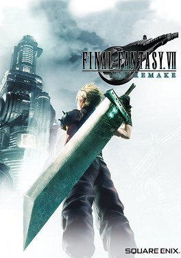

Complément
Introduction

Jaquette © SQUARE ENIX. Guide non officiel.
Objectif
Te donner tout ce qu'il faut savoir avant d'appuyer sur « Nouvelle partie » : ce qu'est ce jeu, comment fonctionnent ses systèmes, et surtout les erreurs de débutant qui coûtent cher dans un jeu où presque tout est manquable.
⚠️ Le message le plus important de ce guide : ne monte pas tes matérias avant d'avoir terminé l'histoire une première fois. Après le générique, l'expérience double et les points de compétence triplent (parties 28 et 29).
Itinéraire
- Ce qu'est Final Fantasy VII Remake.
- Les versions et les Aides de jeu.
- Comment ce guide est organisé.
- Les systèmes essentiels — combat, matérias, armes, Transcendances, invocations.
- L'économie du jeu — gils, PA, PC, Médailles Mog.
- Les 12 erreurs de débutant.
- Le plan de route du 100 %.
Déroulé pas à pas
Ce qu'est Final Fantasy VII Remake
| Notion | Détail |
|---|---|
| Ce que c'est | Le premier volet du remake de Final Fantasy VII (1997) |
| Ce qu'il couvre | Uniquement la partie Midgar de l'original — ce qui tenait en cinq ou six heures devient un jeu complet |
| Combien de chapitres | 18 |
| Combien de personnages jouables | 4 — Cloud, Barret, Tifa, Aerith (+ Yuffie et Sonon dans le DLC) |
| Le genre de combat | Action-RPG en temps réel avec une jauge ATB — ni du tour par tour, ni un pur jeu d'action |
| La suite | Final Fantasy VII Rebirth (2024), puis Final Fantasy VII Revelation, annoncé pour le 8 avril 2027 |
Et pour situer : si tu connais l'original, tu vas reconnaître chaque lieu et t'étonner de les voir habités. Si tu ne le connais pas, tu n'as besoin de rien savoir d'autre : le jeu se tient tout seul.
Les versions
| Plateforme | Date | Nom |
|---|---|---|
| PlayStation 4 | 10 avril 2020 | Final Fantasy VII Remake |
| PlayStation 5 et PC | 2021-2022 | Final Fantasy VII Remake Intergrade |
| Nintendo Switch 2, Xbox Series X|S, Xbox sur PC | 22 janvier 2026 | Intergrade |
| Notion | Détail |
|---|---|
| Ce que couvre ce guide | L'état du jeu au 22 janvier 2026, toutes plateformes confondues |
| La différence qui compte | Episode INTERmission, le DLC de Yuffie, est inclus dans Intergrade — mais pas dans la version ps4 d'origine |
| Les bonus d'édition | Trois matérias d'invocation (partie 22) |
Les Aides de jeu
La mise à jour du 22 janvier 2026 a ajouté un jeu d'aides facultatives, sur toutes les plateformes (partie 28).
| Option | Ce qu'elle fait |
|---|---|
| PV et PM toujours au maximum | Plus de gestion de ressources |
| 9 999 de dégâts infligés | Tout meurt en un coup |
| Quantité maximale de chaque objet | À quelques exceptions près |
| Matérias au niveau maximum | Toutes tes matérias maîtrisées d'office — ⚠️ c'est la seule option qui bloque un trophée, celui de la première montée de niveau d'une matéria (« Materia for Beginners ») |
| EXP ×2 et PA ×3 | Montée en niveau et en armes accélérée |
Elles s'activent et se désactivent une par une, à tout moment, dans le menu Options.
Mon conseil pour une première partie : n'y touche pas. Le système de combat est l'intérêt du jeu. Garde-les pour les trois passages du farm.
⚠️ nom français à vérifier en jeu : « Aides de jeu » est le nom officiel de cette fonction dans l'avis français de Square Enix pour Rebirth ; aucun avis français ne le confirme encore pour Remake (« Streamlined Progression » en anglais).
Comment ce guide est organisé
| Parties | Contenu |
|---|---|
| 01 à 18 | Un chapitre du jeu par partie, numérotée comme le chapitre : la partie 09 est le chapitre 9 |
| 19 à 27 | Les systèmes : combat, matérias, armes, invocations, quêtes, défis, Colisée, mini-jeux, collectibles |
| 28 et 29 | Le post-générique, le mode Difficile, le farm et les 63 trophées |
| 30 à 32 | Episode INTERmission |
| 99 | L'index, les manquables et la check-list finale |
⚠️ Les missions et histoires annexes sont écrites dans le chapitre où elles apparaissent (chapitres 3, 6, 7, 8, 9 et 14), parce qu'elles sont manquables dès que le chapitre est quitté.
Et chaque partie est autonome : tu peux lire la partie 11 sans avoir lu la partie 10.
Le combat — l'essentiel
Tout le système tient en une phrase : l'ATB est la seule ressource qui compte (partie 19).
| Notion | Ce qu'il faut comprendre |
|---|---|
| La jauge ATB | Les attaques normales ne font presque rien. Elles remplissent l'ATB |
| Ce que l'ATB paie | Les magies, les objets, les compétences d'armes — tout ce qui fait vraiment des dégâts |
| La garde (R1) | Elle remplit l'ATB. L'esquive, non |
| La conséquence | Garder vaut mieux qu'esquiver, presque toujours |
| L'état de Choc | Remplis la jauge de Lésion d'un ennemi pour le mettre en Choc → il prend beaucoup plus de dégâts |
| Comment provoquer la Lésion | Frapper la faiblesse élémentaire, ou le point faible structurel, ou interrompre une attaque |
| Le changement de personnage | Chaque personnage a sa propre jauge ATB — changer de personnage, c'est multiplier tes actions |
| L'erreur fondamentale | Rester sur Cloud tout le combat. Tu laisses dormir trois jauges ATB |
Les quatre personnages, en un mot chacun :
| Personnage | Son rôle |
|---|---|
| Cloud | Polyvalent ; la Bravoure du soldat troque la mobilité contre des dégâts énormes |
| Barret | À distance ; le seul qui touche confortablement les cibles volantes |
| Tifa | La reine du Choc — elle fait monter la Lésion plus vite que tout le monde |
| Aerith | La magie ; ses sorts tapent fort et son Secteur magique est redoutable |
Les matérias — l'essentiel
Les matérias sont toute ta progression (partie 20).
| Notion | Ce qu'il faut comprendre |
|---|---|
| Ce que c'est | Des orbes à sertir dans les armes et les armures ; elles donnent les magies, les compétences et les bonus |
| Les emplacements liés | Deux emplacements reliés par un trait font interagir les deux matérias — c'est le cœur du système |
| L'exemple à retenir | Affinité élémentaire + une matéria élémentaire : sur une arme, ça rend tes coups élémentaires ; sur une armure, ça résiste puis absorbe l'élément |
| Les PC | Les points de compétence : ils font monter les matérias en combat |
| La matéria la plus importante du jeu | Affinité élémentaire — au niveau 3, elle absorbe un élément en défense |
| La matéria la plus précieuse en Difficile | Prière — elle soigne tout le groupe sans dépenser de PM |
Et le piège le plus coûteux du jeu : certaines matérias demandent 10 000 PC pour atteindre leur niveau maximum. Après le générique, les PC sont triplés. Monte-les après, pas avant.
Les armes et les manuscrits
| Notion | Ce qu'il faut comprendre |
|---|---|
| Combien | 24 armes — 6 ou 7 par personnage (partie 21) |
| Aucune arme n'est périmée | Les armes montent avec toi. Celle du chapitre 1 peut rester la meilleure jusqu'au bout |
| Les noyaux | Chaque arme a un arbre d'aptitudes à débloquer avec des PA |
| La compétence d'arme | Chaque arme a sa compétence. Équipe-la, utilise-la jusqu'à maîtrise, et elle reste disponible même sans l'arme |
| Les manuscrits | Des objets qui donnent des PA ; il y en a 56 |
| Le calcul qui fait mal | Tout maximiser demande 356 PA. Une seule partie n'en donne que 246 |
| Où sont les 110 PA manquants | 40 manuscrits qui n'existent qu'en mode Difficile (partie 28) |
La conséquence pratique : essaie les 24 compétences d'armes au fil du jeu — c'est un trophée (partie 29) — mais ne disperse pas tes PA. Concentre-les sur deux armes par personnage.
Les Transcendances
| Notion | Détail |
|---|---|
| Ce que c'est | L'attaque ultime — l'héritière des Limites de 1997 |
| Comment ça se remplit | En prenant des dégâts, et en en infligeant |
| Combien chacun en a | 2 — celle de départ, et une seconde à gagner au Colisée de Cornéo (partie 25) |
| L'accessoire ultime | Le Götterdämmerung remplit la jauge au maximum en début de combat (partie 28) |
Mon conseil : garde ta Transcendance pour les phases finales des boss. Pas pour le menu fretin.
Les invocations
| Notion | Détail |
|---|---|
| Combien | 9 (partie 22) |
| Comment ça marche | Une jauge se remplit pendant les combats importants ; l'Esper se bat à tes côtés un moment, puis part sur une attaque finale |
| La dernière | Bahamut, au bout d'une longue chaîne de conditions (partie 24) |
L'économie du jeu
Quatre monnaies, et il faut savoir laquelle compte quand.
| Monnaie | À quoi elle sert | Où elle s'obtient |
|---|---|---|
| Les gils | Boutiques, Colisée, simulateur, Transcendances | Combats, coffres, objets revendus |
| Les PA (points d'arme) | Les aptitudes des armes | Les montées de niveau et les 56 manuscrits (partie 21) |
| Les PC (points de compétence) | Monter les matérias | Les combats |
| Les Médailles Mog | La boutique Mog | Le mini-jeu Brise-boîtes, en quantité infinie (partie 26) |
La seule qui soit vraiment limitée, c'est les PA. Les trois autres se farment.
Et sur les gils : ne thésaurise pas. Les armes de boutique et les Transcendances du Colisée valent leur prix.
Les systèmes annexes à connaître dès le départ
| Système | Pourquoi t'y intéresser tôt |
|---|---|
| Les rapports de Chadley | 20 rapports qui donnent les meilleures matérias du jeu (partie 24) ; ils commencent au chapitre 3 |
| Les missions annexes | 26 missions, toutes dans six chapitres, toutes manquables (partie 23) |
| Les disques de musique | 31 à ramasser, souvent à 50 gils dans une boutique (partie 27) |
| Le Colisée de Cornéo | Les secondes Transcendances, et le meilleur spot de farm du jeu (parties 25 et 29) |
| Le simulateur de combat Shinra | Il s'ouvre au chapitre 16, et un second accès au chapitre 17 (partie 24) |
| L'affinité des personnages | Elle décide de scènes et de récompenses, et des robes d'audition (partie 23) |
Les 12 erreurs de débutant
Voilà ce que je t'éviterais si je regardais par-dessus ton épaule.
| # | L'erreur | Pourquoi ça coûte cher |
|---|---|---|
| 1 | Monter ses matérias avant la fin de l'histoire | Après le générique, les PC sont triplés. Tu triples ton temps de jeu pour rien |
| 2 | Esquiver au lieu de garder | La garde remplit l'ATB, l'esquive non (partie 19) |
| 3 | Rester sur Cloud | Tu laisses dormir trois jauges ATB |
| 4 | Quitter un chapitre sans faire ses missions annexes | Elles sont définitivement perdues (partie 23) |
| 5 | Ne pas analyser les ennemis | La matéria Analyse révèle les faiblesses, et c'est tout le combat |
| 6 | Négliger Chadley | Il donne les meilleures matérias du jeu, gratuitement |
| 7 | Croire que les anciennes armes sont périmées | Elles montent avec toi. Choisis-les pour leurs aptitudes et leur compétence |
| 8 | Disperser ses PA sur les 24 armes | Il n'y en a pas assez. Deux armes par personnage, pas plus |
| 9 | Ignorer le Colisée de Cornéo | Les secondes Transcendances sont là, à 100 gils chacune (partie 25) |
| 10 | Rater Brise-boîtes | C'est la seule source de Médailles Mog, et il en faut au moins 31 (partie 26) |
| 11 | Oublier les disques de musique en boutique | Dix des 31 se ratent facilement (partie 27) |
| 12 | Croire que le 100 % se fait en une partie | Il demande trois passages par les chapitres 3, 8 et 9, plus les 18 chapitres en Difficile (partie 28) |
Le plan de route du 100 %
Pour que tu saches où tu vas.
| Étape | Ce qu'il faut faire | Partie |
|---|---|---|
| 1 | Les 18 chapitres en Normal, avec toutes les missions annexes au passage | 01 à 18 |
| 2 | Le Colisée de Cornéo et le simulateur accessible | 25, 24 |
| 3 | Les 20 rapports de Chadley → Bahamut | 24 |
| 4 | Trois passages par les chapitres 3, 8 et 9 → les 9 robes et les 26 quêtes | 23, 28 |
| 5 | Les 18 chapitres en Difficile → les 40 manuscrits | 28 |
| 6 | Les 6 combats du simulateur en Difficile → le Götterdämmerung | 24 |
| 7 | Le ménage : disques, mini-jeux, niveau 50 | 26, 27 |
| 8 | Episode INTERmission et ses 9 trophées | 30 à 32 |
Et le bon ordre, en une phrase : finis l'histoire, monte tes matérias avec le triple de PC, puis attaque le mode Difficile.
Quêtes et lieux
Les lieux où tu passeras le plus de temps
| Lieu | Ce qu'il contient | Chapitres |
|---|---|---|
| Le bidonville du Secteur 7 | Le Septième Ciel, le jukebox, les fléchettes, 6 missions annexes | 3, 13 |
| Le bidonville du Secteur 5 | L'église, la Maison Feuillue, 6 missions annexes | 8, 14 |
| Le Wall Market | Le Colisée de Cornéo, le Honeybee Inn, Brise-boîtes, les squats et les tractions | 9, 14 |
| La tour Shinra | Le simulateur de combat, les trois derniers boss | 16 à 18 |
Les PNJ à connaître
| Qui | Pourquoi il compte |
|---|---|
| Chadley | Les 20 rapports de combat, le simulateur, les meilleures matérias du jeu |
| Jessie, Biggs et Wedge | Avalanche ; Jessie décide d'un trophée au chapitre 4 |
| Tifa | Le Septième Ciel, et les robes d'audition du chapitre 3 |
| Aerith | Les fleurs du Secteur 5 |
| Marle | La propriétaire du quartier résidentiel |
| Johnny | Un trophée dépend de toutes ses apparitions (partie 29) |
| Don Cornéo, Madame M et Chocobo Sam | Les quêtes exclusives du Wall Market (partie 09) |
| Hart | Les Gants majestueux et le Pulsateur contre 10 000 gils (partie 16) |
Butin exhaustif
L'introduction n'a pas de butin propre. Mais voilà les dix objets qui changent le plus ta partie, et où les trouver.
| Nom exact | Type | Où / comment l'obtenir | Utilité |
|---|---|---|---|
| Matéria Analyse | Matéria | Chadley, chapitre 3 (partie 03) | Révèle les faiblesses — la matéria la plus utile du jeu |
| Matéria Affinité élémentaire | Matéria | Histoire annexe du chapitre 6 (partie 06) | Rend élémentaire en attaque, absorbe en défense |
| Matéria Prière | Matéria | Rapport de Chadley (partie 24) | Soigne tout le groupe sans PM |
| Matéria Garde renforcée | Matéria | Rapport de Chadley (partie 24) | Moins de dégâts et plus d'ATB |
| Matéria Chocobo et Mog | Matéria rouge | Défi d'une minute du chapitre 6 (partie 06) | Une invocation manquable |
| Matéria PC augmentés | Matéria | Marcheur invétéré après 5 000 pas (partie 20) | Double les PC d'une matéria |
| Matéria Gain d'XP et Gain de Gil | Matérias | Simulateur Shinra (partie 24) | Accélèrent tout le farm |
| Les 4 secondes Transcendances | Compétences | Colisée de Cornéo, 100 gils chacune (partie 25) | Dérisoirement bon marché |
| Götterdämmerung | Accessoire | « Trio contre Top Secret », mode Difficile (partie 24) | Jauge de Transcendance pleine en début de combat |
| Matéria d'invocation Bahamut | Matéria rouge | Rapport 20 de Chadley (partie 22) | La dernière invocation |
Conseils et pièges
Les cinq réflexes à prendre dès le chapitre 1
| # | Le réflexe |
|---|---|
| 1 | Analyse chaque nouvel ennemi. Dès que tu as la matéria Analyse, c'est automatique |
| 2 | Garde (R1) au lieu d'esquiver. Ça remplit l'ATB |
| 3 | Change de personnage en permanence. Quatre jauges ATB, c'est quatre fois plus d'actions |
| 4 | Fouille chaque cul-de-sac. Les coffres y sont tous |
| 5 | Parle à tout le monde avant de quitter une zone-hub. Les missions annexes sont manquables |
Comment lire ce guide
| Symbole | Ce qu'il signifie |
|---|---|
| Important, ou point de non-retour | |
| ⏳ Manquable, ou information de contexte | |
| « à vérifier en jeu » | Une information que je n'ai pas pu recouper. Elles sont toutes rassemblées dans la partie 99 |
| « nom français à vérifier en jeu » | Un nom donné par une seule source française |
| « (partie NN) » | Un renvoi vers une autre partie du guide |
Et sur les noms : tout ce que le jeu affiche est écrit ici sous son nom français officiel. Quand une information ne venait que d'une source anglophone, le nom anglais est entre parenthèses. Le jargon de joueur — build, farm, spot, moveset — reste tel que les joueurs le disent.
Le niveau de spoilers
Ce guide est écrit en spoilers légers.
| Ce que tu trouveras | Ce que tu ne trouveras pas |
|---|---|
| Les titres officiels des chapitres | Les révélations de l'histoire |
| Les noms des boss | Le détail des cinématiques |
| Les lieux et les PNJ | La fin |
| Les choix importants et leurs conséquences | Le pourquoi narratif de ces conséquences |
Une exception assumée : la partie 18 doit expliquer la mécanique du dernier combat, et la partie 32 nomme les deux boss secrets. Tu es prévenu.
Alertes
- ⚠️ Ne monte pas tes matérias avant la fin de l'histoire. Après le générique, l'expérience est doublée et les PC sont triplés (parties 28 et 29).
- ⚠️ Le 100 % demande trois passages complets par les chapitres 3, 8 et 9, plus les 18 chapitres en mode Difficile.
- ⚠️ Toutes les missions annexes sont manquables dès que le chapitre est quitté (partie 23).
- ⚠️ Tout maximiser demande 356 PA ; une seule partie n'en donne que 246. Les 110 manquants sont dans les 40 manuscrits du mode Difficile (partie 21).
- ⚠️ La garde (R1) remplit l'ATB, l'esquive non (partie 19).
- ⚠️ Episode INTERmission n'est pas inclus dans la version ps4 d'origine.
- ⏳ Toutes les informations marquées « ⚠️ à vérifier en jeu » sont rassemblées dans la partie 99.
Check-list
Avant de commencer
- Difficulté choisie (Normal recommandé pour une première partie)
- Aides de jeu laissées désactivées pour la première partie
- Le plan de route du 100 % lu
Les réflexes à prendre
- Analyser chaque nouvel ennemi
- Garder (R1) plutôt qu'esquiver
- Changer de personnage en permanence
- Fouiller chaque cul-de-sac
- Parler à tout le monde avant de quitter une zone-hub
- Voir Chadley à chaque chapitre où il apparaît
Ce qu'il ne faut surtout pas rater tôt
- Matéria Chocobo et Mog (chapitre 6, défi d'une minute)
- Matéria Affinité élémentaire (histoire annexe du chapitre 6)
- Les 6 cartes d'accès du chapitre 7
- Les 6 missions annexes du chapitre 3
- Les 6 missions annexes du chapitre 8
- Les 4 secondes Transcendances du Colisée (100 gils chacune)
Complément
Chapitre 1 : Sabotage du réacteur Mako n°1
Objectif
Faire sauter le réacteur Mako n°1 avec Avalanche, battre le Scorpion gardien, et ressortir vivant.
⏳ C'est le tutoriel du jeu, mais un tutoriel qui ne prévient pas : dix coffres sont éparpillés dans le réacteur, et tu ne pourras plus y revenir.
Rien dans ce chapitre n'est indispensable — aucune arme, aucune matéria, aucun manuscrit. Ce sont uniquement des consommables. Mais apprends dès maintenant à regarder derrière les escaliers et au bout des passerelles : le jeu cachera des armes exactement de la même façon pendant dix-sept chapitres.
Itinéraire
📍 La zone en images : Réacteur Mako n°1 — sur le Final Fantasy Wiki, en anglais : carte, captures et objets de chaque lieu.
- La gare du réacteur : deux combats d'entraînement, puis deux coffres à l'étage.
- Le passage du réacteur : la cour, le garde et son chien, l'impasse de gauche.
- La porte principale : quatre gardes, le coffre de droite, puis Jessie et l'ascenseur.
- Les niveaux -3 et -4 : les lasers, le Nettoyeur, deux coffres.
- Le cœur du réacteur : les passerelles, deux coffres, la bombe.
- Le Scorpion gardien — le premier vrai boss.
- La fuite : un coffre de plus, un second Nettoyeur, la sortie.
Déroulé pas à pas
La gare du réacteur
- Après la cinématique d'ouverture, tu reprends le contrôle de Cloud. Écoute ce que Barret a à dire — c'est lui qui déclenche la suite.
- Deux soldats arrivent : c'est ton premier combat. Le jeu t'explique l'ATB au combat suivant.
- Franchis le portique du train et rejoins les membres d'Avalanche.
- Occupe-toi des soldats suivants, puis grimpe l'escalier.
- En haut, à droite : le coffre 01 — 2 Potions.
- Contourne l'escalier : le coffre 02 — 2 Grenades.
- En sortant, regarde sur la droite : des caisses Shinra. Démolis-les.
Le réflexe le plus rentable du jeu, et il commence ici : détruis toutes les caisses Shinra que tu croises. Elles donnent des objets de soin, des Médailles Mog — qui serviront bien plus tard au Wall Market — et elles te rendent quelques PM. Ça prend deux secondes et ça rapporte pendant tout le jeu.
- Rejoins ton équipe, puis approche-toi de Barret pour lancer l'infiltration.
Le passage du réacteur
- Descends dans la cour et occupe-toi du garde et de son chien.
- Va dans l'impasse sur la gauche : le coffre 03 — 1 Éther.
- Prends l'ascenseur, rejoins le groupe et approche-toi du grillage : de nouveaux ennemis apparaissent.
- Élimine-les, passe par le trou dans le grillage et suis le chemin.
- Nouvelle salle, nouveaux gardes. Nettoie, puis prends le coffre sur la droite : le coffre 04 — 2 Potions.
- Avance dans le couloir, ouvre la porte, et suis Avalanche à l'intérieur du réacteur.
Les dispositifs de sécurité
- Discute avec le groupe pour que Biggs ouvre la porte.
- Passe-la : quatre soldats t'attendent. Nettoie, puis parle à Jessie pour la porte suivante.
- De l'autre côté, le coffre sur la gauche : le coffre 05 — 1 Queue de Phénix.
- Parle à Jessie, qui te demande d'appuyer sur le bouton de l'ascenseur, sur la droite.
- Cinématiques. Barret rejoint ton équipe.
Et c'est là que le jeu commence vraiment. Tu peux maintenant :
| Action | Pourquoi c'est important |
|---|---|
| Changer de personnage (gauche/droite ou haut/bas) | Le personnage que tu contrôles remplit son ATB bien plus vite |
| Lancer les actions d'un équipier (L2 ou R2) | Pour ne pas laisser l'IA dormir |
| Garder (R1) | Garder réduit les dégâts et fait monter l'ATB |
Mon conseil pour cette section : joue Barret. Il est le seul à pouvoir détruire les Vigilaser, et sa compétence Grosse décharge les démonte.
Les niveaux -3 et -4
- Détruis les Vigilaser avec Barret. Vide entièrement son chargeur à chaque fois : le dernier coup est le plus puissant.
- Quitte la zone, descends l'escalier, et traverse la première section de lasers — passe quand ils sont éteints.
- Continue de descendre jusqu'à la seconde section de lasers.
- Le coffre près de l'escalier suivant : le coffre 06 — 2 Potions.
- Descends les marches jusqu'au rez-de-chaussée : un Nettoyeur t'attend.
La leçon du Nettoyeur, à retenir pour tout le jeu : toutes les machines sont sensibles à la Foudre. Un sort de Foudre remplit leur jauge de Choc à vue d'œil, et une fois en état de Choc, tu vides tes compétences dessus.
- Après le Nettoyeur, reviens un peu en arrière et contourne l'escalier par la gauche : le coffre 07 — 1 Éther.
- Suis le couloir jusqu'au cœur du réacteur.
Le cœur du réacteur
- Suis les passerelles pour commencer à descendre.
- Au bout de la passerelle droite : le coffre 08 — 1 Queue de Phénix.
- Élimine les petits ennemis sur ton passage.
- ⚠️ Avant de prendre l'échelle qui mène tout en bas, va au bout de la passerelle gauche : quelques ennemis gardent le coffre 09 — 1 Éther.
- Descends tout en bas, remonte tes PV au maximum, et approche-toi du réacteur.
- Cinématique, puis le choix du compte à rebours.
Ne te prends pas la tête sur le minuteur : le réglage n'a aucun impact sur la suite de l'aventure. 20 minutes suffisent largement pour tout faire tranquillement.
- Le Scorpion gardien attaque.
Boss : le Scorpion gardien
Sa faiblesse : la Foudre. Quatre phases, et une leçon par phase.
Phase 1 — apprendre la méthode
- Attaque au corps à corps avec Cloud pour charger l'ATB.
- Utilise Choc transperçant, la compétence de Cloud, pour remplir sa jauge de Choc.
- Méfie-toi de ses attaques électriques de zone : écarte-toi de lui quand il les lance.
- Garde avec R1 quand il enchaîne les attaques : moins de dégâts, et de l'ATB en plus.
- Temporise avec Barret pour soigner Cloud, qui reste au contact.
Phase 2 — la barrière
- Au bout d'environ un quart de sa vie, il rejoint la seconde arène, derrière toi.
- Il se dote d'une barrière qui réduit fortement tes dégâts.
- La solution : cible le générateur de barrière, dans son dos — un sort fait très bien l'affaire.
- Sa pluie de missiles arrive très souvent : esquive.
- Quand il grimpe au mur, hors de portée, prends Barret et mitraille-le.
- Barrière tombée, déchaîne-toi pour le pousser en phase 3.
Phase 3 — le laser caudal
- Il retourne près du réacteur et sort son laser caudal.
- Quand il lève la queue, mets-toi à couvert derrière un tas de gravats. Les dégâts sont énormes si tu te le prends de plein fouet.
- Profite du moment à couvert pour te soigner et lui coller un sort de Foudre.
Phase 4 — l'autoréparation
- Il commence à se réparer. Il faut l'interrompre.
- Cible ses pattes : il passe en état de Lésion, ce qui le neutralise partiellement et te laisse travailler sa jauge de Choc.
- La Foudre de Barret accélère tout.
- C'est aussi le moment de lâcher ta première Technique de Transcendance, si elle est chargée.
Nom à vérifier en jeu : jeuxvideo.com appelle « état de Lésion » l'état provoqué en frappant les pattes du Scorpion. Le mécanisme est clair — il est partiellement neutralisé et sa jauge de Choc monte — mais le libellé exact de cet état reste à confirmer à l'écran.
La fuite
- Reprends le même chemin qu'à l'aller. Les ennemis ne peuvent pas être semés : il faut les battre.
- Quand tu es séparé de Barret, rejoins Jessie et sauve-la.
- Parcours les passerelles : le coffre à côté de l'échelle, le coffre 10 — 2 Potions.
- Grimpe rejoindre Barret, élimine les ennemis, puis affronte un second Nettoyeur — même recette : Foudre, Choc, compétences.
- Monte les escaliers en nettoyant tout, sors du réacteur, et suis l'itinéraire d'évacuation.
- Cinématique : fin du chapitre.
Quêtes et lieux
Aucune mission ni histoire annexe dans ce chapitre : les premières arrivent au chapitre 3 (partie 03).
| Lieu | Ce qu'on y trouve |
|---|---|
| Gare du réacteur : 1er étage | Coffres 01 et 02, et les premières caisses Shinra |
| Secteur de gestion des matériaux | Coffre 03, dans l'impasse de gauche |
| Passage de la porte principale | Coffre 04, à droite, dans la salle des quatre gardes |
| Porte principale | Coffre 05, à gauche de Jessie |
| Niveau -3, passage d'opération | Coffre 06, près de l'escalier après les lasers |
| Niveau -4, hangar des armements | Coffre 07, derrière l'escalier ; le premier Nettoyeur |
| Niveau -5, cœur du réacteur (niveau supérieur), passerelle droite | Coffre 08 |
| Niveau -7, cœur du réacteur (niveau inférieur), passerelle gauche | Coffre 09, gardé par des ennemis |
| Niveau -6, cœur du réacteur (niveau intermédiaire), passerelle avant | Coffre 10, pendant la fuite |
Butin exhaustif
| Nom exact | Type | Où / comment l'obtenir | Utilité |
|---|---|---|---|
| Potion ×2 | Consommable | Coffre 01 — gare du réacteur, 1er étage, à droite en haut de l'escalier | Rend des PV |
| Grenade ×2 | Consommable | Coffre 02 — gare du réacteur, 1er étage, en contournant l'escalier | Dégâts de zone |
| Éther | Consommable | Coffre 03 — secteur de gestion des matériaux, impasse à gauche après le garde et son chien | Rend des PM |
| Potion ×2 | Consommable | Coffre 04 — passage de la porte principale, à droite, dans la salle des quatre gardes | Rend des PV |
| Queue de Phénix | Consommable | Coffre 05 — porte principale, à gauche, après que Jessie a ouvert la porte | Soigne l'état K.O. |
| Potion ×2 | Consommable | Coffre 06 — niveau -3, passage d'opération, près de l'escalier, après les deux sections de lasers | Rend des PV |
| Éther | Consommable | Coffre 07 — niveau -4, hangar des armements, derrière l'escalier, après le Nettoyeur | Rend des PM |
| Queue de Phénix | Consommable | Coffre 08 — niveau -5, cœur du réacteur, au bout de la passerelle droite | Soigne l'état K.O. |
| Éther | Consommable | Coffre 09 — niveau -7, cœur du réacteur, au bout de la passerelle gauche, gardé par des ennemis | Rend des PM |
| Potion ×2 | Consommable | Coffre 10 — niveau -6, cœur du réacteur, passerelle avant, pendant la fuite | Rend des PV |
| Objets de soin et Médailles Mog | Consommables / objets d'échange | Caisses Shinra, partout dans le chapitre | Les Médailles Mog s'échangent bien plus tard, au Wall Market |
| Compétence Choc transperçant | Compétence d'arme Cloud | Déjà disponible | Remplit la jauge de Choc ; la clé du Scorpion gardien |
| Compétence Grosse décharge | Compétence d'arme Barret | Déjà disponible | La seule façon efficace de détruire les Vigilaser |
| Matéria Foudre | Matéria verte | Déjà équipée sur Barret | La faiblesse de toutes les machines du jeu |
Aucune matéria, aucune arme et aucun manuscrit ne se trouvent dans ce chapitre. C'est le seul du jeu dans ce cas : la page de coffres de jeuxvideo.com ne liste que des coffres, sans aucune matéria au sol.
Conseils et pièges
Les six réflexes à prendre tout de suite
- Casse toutes les caisses Shinra. Objets de soin, Médailles Mog, et des PM rendus. Sur dix-huit chapitres, ça fait une différence énorme.
- Garde avec R1. La garde réduit les dégâts et fait monter l'ATB : c'est la base du système, et beaucoup de joueurs ne le découvrent qu'au chapitre 10.
- Change de personnage en permanence. Le personnage contrôlé remplit son ATB bien plus vite que celui géré par l'IA.
- Ou lance les actions de tes équipiers avec L2 et R2 sans changer de personnage.
- La Foudre sur les machines. Nettoyeur, Vigilaser, Scorpion gardien : c'est la même réponse pour les trois.
- Fouille les culs-de-sac, l'arrière des escaliers et le bout des passerelles. Sept des dix coffres du chapitre sont hors du chemin direct.
Le Scorpion gardien, en quatre réflexes
| Phase | Ce qu'il fait | Ce que tu fais |
|---|---|---|
| 1 | Mitraillette et attaques électriques de zone | Choc transperçant + Foudre ; écarte-toi des décharges |
| 2 | Barrière et pluie de missiles | Frappe le générateur dans son dos ; Barret quand il est au mur |
| 3 | Laser caudal | Mets-toi à couvert derrière les gravats ; soigne-toi |
| 4 | Autoréparation | Frappe les pattes → état de Lésion ; Transcendance |
Les pièges du chapitre
- Croire que le minuteur de la bombe a des conséquences. Il n'en a aucune. Mets 20 minutes et explore tranquillement.
- ⚠️ Essayer de fuir pendant l'évacuation. Les ennemis bloquent la route : il faut les battre.
- Taper le Scorpion gardien en phase 2 sans toucher au générateur. Tu lui fais des chatouilles.
- Rester au contact pendant les décharges électriques. C'est la cause de 90 % des game over sur ce boss.
- ⚠️ Partir sans le coffre 09. Il est gardé par des ennemis, au bout d'une passerelle que rien ne t'invite à prendre — juste avant l'échelle qui descend au boss.
Alertes
- ⏳ Manquable : les dix coffres du chapitre. Le réacteur Mako n°1 n'est pas revisitable : ce qui n'est pas ramassé est perdu pour cette partie.
- ⏳ Manquable : les caisses Shinra et leurs Médailles Mog. Elles ne réapparaissent pas.
- ⏳ Le coffre 09 est le plus facile à rater : au bout de la passerelle gauche du niveau -7, gardé par des ennemis, juste avant l'échelle finale.
- ⏳ Le coffre 02 est le deuxième plus facile à rater : il faut contourner l'escalier de la gare, à l'opposé du coffre 01.
- ⚠️ à vérifier en jeu : le libellé « état de Lésion » employé par jeuxvideo.com pour l'état provoqué en frappant les pattes du Scorpion gardien.
- ⏳ Pas de point de non-retour interne : tout le chapitre est linéaire et la fuite emprunte le même chemin.
Check-list
Les dix coffres
- Coffre 01 — 2 Potions (gare, 1er étage, à droite)
- Coffre 02 — 2 Grenades (gare, 1er étage, derrière l'escalier)
- Coffre 03 — 1 Éther (impasse de gauche, après le garde et son chien)
- Coffre 04 — 2 Potions (salle des quatre gardes, à droite)
- Coffre 05 — 1 Queue de Phénix (à gauche de Jessie, avant l'ascenseur)
- Coffre 06 — 2 Potions (près de l'escalier, après les lasers)
- Coffre 07 — 1 Éther (derrière l'escalier, après le Nettoyeur)
- Coffre 08 — 1 Queue de Phénix (bout de la passerelle droite)
- Coffre 09 — 1 Éther (bout de la passerelle gauche, niveau -7)
- Coffre 10 — 2 Potions (passerelle avant, pendant la fuite)
Le reste
- Toutes les caisses Shinra détruites
- Garde (R1) comprise et utilisée
- Changement de personnage intégré
- Vigilaser détruits avec Grosse décharge de Barret
- Les deux Nettoyeurs battus à la Foudre
- Scorpion gardien vaincu
- Chapitre terminé
Complément
Chapitre 2 : Rencontres déterminantes
Objectif
Traverser le Secteur 8 en flammes, semer les gardes Shinra, et attraper le dernier train pour le bidonville du Secteur 7.
C'est le premier chapitre riche en butin : douze coffres et deux matérias au sol, dont tes deux premiers équipements — le Poignet de force et le Bracelet en fer.
Et c'est aussi le chapitre de ta première rencontre avec Aerith. Elle te remet un objet clé, et elle s'enfuit dans une ruelle. Va voir dans cette ruelle : il y a un coffre au fond.
Itinéraire
📍 La zone en images : Secteur 8 — sur le Final Fantasy Wiki, en anglais : carte, captures et objets de chaque lieu.
- La route d'évacuation : deux coffres dans les décombres.
- L'avenue de la gare : la matéria Soins de Jessie, puis deux coffres.
- L'homme mystérieux : une rue en flammes, et une silhouette.
- Le détour par les toits : un coffre.
- La rue Loveless : Aerith, deux matérias au sol, trois coffres.
- La place de la fontaine et les toits : deux coffres.
- Le quartier résidentiel : deux coffres, puis le Capitaine Konrad.
- Le dernier train : un dernier coffre et les dialogues de fin.
Déroulé pas à pas
La route d'évacuation
- Franchis l'éboulement pour rejoindre Barret et sa troupe.
- Suis le chemin dans le passage de liaison. Faufile-toi entre les tuyaux : le coffre 01 t'attend juste avant que le couloir ne tourne — 2 Potions.
- Continue parmi les gravats pour sortir à l'extérieur, dans la zone des entrepôts.
- Le coffre 02 est sur la droite, au pied des escaliers — 1 Éther.
- Grimpe les marches sur la gauche pour rejoindre la troupe.
L'avenue de la gare
- Suis Barret dans les ruines. Jessie te remet la matéria Soins.
Équipe-la immédiatement, et suis le didacticiel d'équipement si tu ne connais pas le système. C'est ta première matéria du jeu, et le soin en combat est non négociable.
- Explore l'avenue : le coffre 03, en face de ta position, près d'un van, sur la gauche — 50 gils.
- Quitte la rue par les escaliers du fond. Le coffre 04 est en haut des marches — 3 Grenades.
- Passe par les débris et remonte la rue suivante vers la gare, jusqu'à ce qu'une plateforme s'effondre.
L'homme mystérieux
- Vision. C'est la première apparition de Séphiroth, et le jeu ne t'explique rien.
- Progresse dans la rue bordée de flammes, derrière la silhouette, jusqu'à la cinématique suivante.
Le détour par les toits
- Sors de la ruelle, traverse la rue, et engouffre-toi dans la ruelle suivante.
- Prends l'escalier de service pour rejoindre le toit de l'immeuble, et traverse-le.
- ⏳ Avant de descendre : le coffre 05 — 3 Potions.
- Emprunte l'échelle sur ta gauche.
La rue Loveless
⚠️ Attention à l'ordre, ici — le jeu te tend un piège.
- En bas, tu vois un objet qui brille au sol, sur le chemin de gauche. Mais ce chemin est rempli de soldats. Laisse-le pour l'instant et va vers la droite.
- Nouvelle vision, puis tu fais la connaissance d'une marchande de fleurs. Tu obtiens l'objet clé Fleur jaune.
- Une escouade de soldats attaque. Nettoie.
- Maintenant reviens sur tes pas, sur le chemin de gauche qui s'est dépeuplé. Tue les soldats restants, puis ramasse la matéria PV augmentés au sol, derrière le véhicule.
La ruse du jeu : avancer dans la rue fait venir les gardes à toi. Tu les affrontes où tu veux, puis tu reviens tranquillement chercher la matéria.
- Va dans la ruelle où Aerith s'est enfuie : le coffre 06 est tout au fond — 1 Super Potion.
- Ressors affronter de nouveaux soldats.
- ⏳ Ramasse la matéria Esquive offensive au sol, à gauche de la voiture, avant l'arche qui mène à la place.
- Va dans le cul-de-sac sur la gauche, nettoie les ennemis, et ouvre le coffre 07 — 1 Poignet de force.
Équipe le Poignet de force tout de suite. C'est ton premier accessoire du jeu.
La place de la fontaine et les toits
- File vers la place de la fontaine et débarrasse-toi des gardes. Les ennemis continuent d'apparaître : ne t'affole pas.
- Place nettoyée, va dans le coin gauche, à côté de l'échelle de sortie : le coffre 08 — 2 Grenades.
- Prends l'échelle pour rejoindre les toits et traverse-les.
- ⏳ Avant de descendre : le coffre 09 — 1 Bracelet en fer.
Équipe le Bracelet en fer. C'est ton premier bracelet, et donc tes premiers emplacements de matérias supplémentaires.
- Descends dans la rue en contrebas.
Le quartier résidentiel
- Affronte les soldats qui barrent la route, puis remonte la rue jusqu'au pont.
Nouveaux ennemis : des gardes équipés de boucliers. Deux réponses : la magie de Feu, ou une esquive pour passer dans leur dos.
- Continue : la rue tourne à droite.
- ⏳ Avant de suivre le virage, va sur la gauche par les petits escaliers : le coffre 10 t'attend dans le cul-de-sac, sur la terrasse de café — 1 Éther.
- Reprends la route en nettoyant les gardes.
- Dans la deuxième partie du quartier résidentiel, après le coude à droite, serre le mur de gauche pour trouver une ruelle : le coffre 11 — 1 Super Potion.
- Des soldats te prennent en tenaille.
Mini-boss : le Capitaine Konrad
Sa faiblesse : le Feu.
- Occupe-toi d'abord de la piétaille, puis consacre-toi au Capitaine.
- Son bouclier le rend très pénible : tant qu'il garde, tu ne lui fais presque rien.
- La solution : attends qu'il lance une attaque. Il lève sa garde et s'expose — c'est là que tu frappes.
- Garde tes compétences spéciales pour ces fenêtres, pas pour le reste du combat.
- Le Feu l'use plus vite que les coups normaux.
Le dernier train
- Remonte les wagons pour rejoindre Barret.
- Sors de ton wagon et avance dans celui d'après pour te glisser entre des caisses.
- Retourne-toi : le coffre 12 est sur la gauche — 100 gils. Rien ne te dit de regarder derrière toi.
- Avance jusqu'à Wedge. Discute avec Biggs en remontant le wagon, puis avec Jessie avant de le quitter.
- Wagon de tête : cinématique, puis discute avec Barret.
- Va vers l'avant du train pour reparler à Jessie. Fin du chapitre.
Quêtes et lieux
Aucune mission ni histoire annexe : les premières arrivent au chapitre 3 (partie 03).
| Lieu | Ce qu'on y trouve |
|---|---|
| Cloison du plateau : intérieur — passage de liaison | Coffre 01, entre les tuyaux |
| Secteur 8 : centre-ville — zone des entrepôts | Coffre 02, au pied des escaliers |
| Secteur 8 : centre-ville — avenue de la gare | La matéria Soins de Jessie, coffres 03 et 04 |
| Secteur 8 : centre-ville — ruelles de la gare | Coffre 05, sur le toit |
| Secteur 8 : centre-ville — rue Loveless | Aerith, l'objet clé Fleur jaune, matérias PV augmentés et Esquive offensive, coffres 06 et 07 |
| Secteur 8 : centre-ville — place de la fontaine | Coffre 08, dans le coin gauche |
| Secteur 8 : centre-ville — place de la fontaine : porte arrière | Coffre 09, au sol en descendant des toits |
| Secteur 8 : centre-ville — quartier résidentiel | Coffres 10 et 11, puis le Capitaine Konrad |
| Dernier train pour le bidonville du Secteur 7 — wagon de marchandises | Coffre 12, derrière toi entre les caisses |
Butin exhaustif
| Nom exact | Type | Où / comment l'obtenir | Utilité |
|---|---|---|---|
| Matéria Soins | Matéria verte | Remise par Jessie, avenue de la gare | Ta première matéria : le sort de soin, indispensable |
| Matéria PV augmentés | Matéria violette | Au sol, rue Loveless, derrière le véhicule du chemin de gauche ; à ramasser après avoir attiré les gardes et les avoir battus | Augmente les PV maximum |
| Matéria Esquive offensive | Matéria jaune | Au sol, rue Loveless, à gauche de la voiture, avant l'arche de la place | Ajoute une attaque à l'esquive |
| Poignet de force | Accessoire | Coffre 07 — rue Loveless, cul-de-sac à gauche avant l'arche, gardé par des ennemis | Ton premier accessoire ; effet exact à vérifier en jeu |
| Bracelet en fer | Bracelet | Coffre 09 — place de la fontaine : porte arrière, au sol en descendant des toits | Ton premier bracelet : des emplacements de matérias en plus |
| Objet clé Fleur jaune | Objet clé | Remis par Aerith, rue Loveless | Objet de scénario |
| Potion ×2 | Consommable | Coffre 01 — passage de liaison, entre les tuyaux, avant le virage | Rend des PV |
| Éther | Consommable | Coffre 02 — zone des entrepôts, à droite au pied des escaliers | Rend des PM |
| 50 gils | Argent | Coffre 03 — avenue de la gare, près d'un van, sur la gauche | — |
| Grenade ×3 | Consommable | Coffre 04 — avenue de la gare, en haut des escaliers du passage de décombres | Dégâts de zone |
| Potion ×3 | Consommable | Coffre 05 — ruelles de la gare, sur le toit, avant l'échelle | Rend des PV |
| Super Potion | Consommable | Coffre 06 — rue Loveless, au fond de la ruelle où s'enfuit Aerith | Rend beaucoup de PV |
| Grenade ×2 | Consommable | Coffre 08 — place de la fontaine, coin gauche, à côté de l'échelle | Dégâts de zone |
| Éther | Consommable | Coffre 10 — quartier résidentiel, terrasse de café du trottoir de gauche | Rend des PM |
| Super Potion | Consommable | Coffre 11 — quartier résidentiel, deuxième partie, ruelle du mur de gauche après le coude | Rend beaucoup de PV |
| 100 gils | Argent | Coffre 12 — wagon de marchandises, derrière toi entre les caisses | — |
Divergence de graphie signalée : jeuxvideo.com écrit « Super Potion » dans ses coffres 06 et 11 au chapitre 2, mais « Super-Potion » sur la page du coffre 11. Le guide retient Super Potion, sans trait d'union, et s'y tient partout.
Conseils et pièges
Les trois réflexes nouveaux
- Équipe tout de suite ce que tu trouves. Matéria Soins, Poignet de force, Bracelet en fer : trois équipements dans le même chapitre, et le jeu ne te le rappelle pas.
- Contre les gardes à bouclier : la magie de Feu, ou une esquive pour passer dans leur dos. Frapper le bouclier de face ne sert à rien.
- Attire les ennemis, puis reviens. Avancer dans une rue fait venir les gardes ; tu les bats où ça t'arrange, puis tu récupères le butin tranquillement. C'est exactement la manœuvre de la matéria PV augmentés.
Le Capitaine Konrad
| Son problème | Ta réponse |
|---|---|
| Il garde en permanence derrière son bouclier | Attends qu'il attaque : il lève sa garde et s'expose |
| Il est accompagné de piétaille | Nettoie la piétaille d'abord |
| Il est sensible au Feu | Un sort de Feu à chaque ouverture |
| Les fenêtres sont courtes | Garde tes compétences spéciales pour ces fenêtres uniquement |
Les pièges du chapitre
- Foncer sur l'objet brillant du chemin de gauche, rue Loveless. Le chemin est bourré de soldats : avance d'abord à droite, laisse-les venir, puis reviens.
- Ne pas se retourner dans le train. Le coffre 12 est derrière toi, après le passage entre les caisses.
- ⚠️ Rater la ruelle d'Aerith. Elle s'enfuit dedans, et le jeu te pousse à continuer tout droit.
- ⚠️ Rater le coffre 10. Il faut prendre les petits escaliers de gauche au moment où la rue tourne à droite — l'inverse de ce que le jeu suggère.
- ⚠️ Rater le coffre 11. Il faut serrer le mur de gauche dans la deuxième partie du quartier résidentiel.
- ⚠️ Quitter la place de la fontaine avant de l'avoir nettoyée. Le coffre 08 n'est accessible qu'une fois les ennemis morts.
Alertes
- ⏳ Manquable : les douze coffres et les deux matérias du chapitre. Le Secteur 8 n'est jamais revisitable — c'est la zone la plus définitivement perdue du jeu.
- ⏳ Manquable : la matéria Esquive offensive. Elle est au sol, avant l'arche de la place de la fontaine, et rien ne la signale.
- ⏳ Manquable : la matéria PV augmentés, qui demande de revenir en arrière sur le chemin de gauche de la rue Loveless.
- ⏳ Manquable : le Poignet de force et le Bracelet en fer — tes deux premiers équipements, tous les deux hors du chemin direct.
- ⚠️ à vérifier en jeu : l'effet exact du Poignet de force, que les sources citent sans détailler son bonus.
- ⚠️ à vérifier en jeu : la graphie Super Potion contre Super-Potion, les deux formes apparaissant sur la même page de jeuxvideo.com.
- ⏳ Pas de point de non-retour interne : le chapitre est linéaire, mais chaque zone se referme derrière toi dès que tu passes aux toits ou au train.
Check-list
Les douze coffres
- Coffre 01 — 2 Potions (passage de liaison, entre les tuyaux)
- Coffre 02 — 1 Éther (zone des entrepôts, pied des escaliers)
- Coffre 03 — 50 gils (avenue de la gare, près du van)
- Coffre 04 — 3 Grenades (avenue de la gare, haut des escaliers)
- Coffre 05 — 3 Potions (ruelles de la gare, sur le toit)
- Coffre 06 — 1 Super Potion (ruelle d'Aerith)
- Coffre 07 — 1 Poignet de force (cul-de-sac à gauche, rue Loveless)
- Coffre 08 — 2 Grenades (coin gauche de la place de la fontaine)
- Coffre 09 — 1 Bracelet en fer (au sol après les toits)
- Coffre 10 — 1 Éther (terrasse de café, quartier résidentiel)
- Coffre 11 — 1 Super Potion (ruelle du mur gauche, quartier résidentiel)
- Coffre 12 — 100 gils (derrière toi, dans le train)
Les matérias et équipements
- Matéria Soins reçue de Jessie et équipée
- Matéria PV augmentés ramassée (rue Loveless, chemin de gauche)
- Matéria Esquive offensive ramassée (avant l'arche)
- Poignet de force équipé
- Bracelet en fer équipé
Le reste
- Objet clé Fleur jaune obtenu d'Aerith
- Gardes à bouclier gérés au Feu ou par esquive dans le dos
- Capitaine Konrad vaincu
- Chapitre terminé
Complément
Chapitre 3 : Le Septième Ciel
Objectif
Rentrer au bidonville du Secteur 7, retrouver Tifa, et se faire un nom comme mercenaire en acceptant les six premières missions annexes du jeu.
C'est le premier gros chapitre du guide, et de loin le plus dense jusqu'ici : 8 coffres, 2 matérias au sol, 6 missions annexes, 1 histoire annexe, 3 disques de musique, deux armes, la matéria Analyse, la matéria Ifrit, et les rapports de Chadley qui vont t'occuper jusqu'à la fin du jeu.
⚠️ Et un avertissement qui vaut pour tout le jeu : fais les six missions annexes. Le jeu ne t'en demande qu'une seule pour avancer, mais les six débloquent l'histoire annexe « Un moment à deux », qui contient un choix dont les conséquences arrivent au chapitre 9.
Itinéraire
📍 La zone en images : Bidonville du Secteur 7 — sur le Final Fantasy Wiki, en anglais : carte, captures et objets de chaque lieu.
- Le retour au bidonville : la gare, le Septième Ciel, Tifa, l'appartement.
- La nuit : les gémissements du 203.
- Le matin : les cinq coffres du bidonville et les trois disques de musique.
- La tournée des filtres avec Tifa, puis le QG de la Milice et l'amélioration d'armes.
- La demande de la Milice : l'avenue des Débris, la matéria Glace, un coffre.
- Du travail pour un mercenaire : Wymar et les six missions annexes.
- L'histoire annexe « Un moment à deux » — le choix de tenue.
- La Shinra se mobilise : libérer Johnny.
- La réunion stratégique, les ombres suspectes, et la matéria Ifrit de Jessie.
Déroulé pas à pas
Le retour au bidonville
- Quai de la gare du Secteur 7. Quitte la gare et remonte le chemin jusqu'à la cinématique.
- Pars à la poursuite de Biggs, Wedge et Jessie et débouche dans le bidonville.
- Avance jusqu'au Septième Ciel et fais la connaissance de Tifa.
- Entre dans le bar et parle à Barret ou à Marlène : Tifa t'attrape par le bras et te demande de la rejoindre dehors.
- Suis-la : elle te mène à ton appartement, dans la Résidence Vue Céleste.
- Entre : Tifa te donne une partie de ta récompense — 500 gils — et te laisse pour la nuit.
Les gémissements
- Tu es réveillé en pleine nuit. Sors de l'appartement et entre dans le 203.
- Nouvelle vision. La nuit se termine sans autre incident.
Le matin — la tournée des coffres
⏳ C'est maintenant que tu explores. Fais-le avant de retourner voir Tifa : la suite du chapitre t'emmène ailleurs.
- Monte sur le toit de ta résidence : le coffre 01 — 1 Queue de Phénix.
- Descends et discute avec Marle.
- Pars sur la droite et grimpe à l'échelle : le coffre 02 est sur le toit du QG de la Milice, au-dessus du marchand d'armes — 1 Éther.
- Va au Septième Ciel et contourne-le par la droite : le coffre 03 est sur une plateforme collée au bar — 2 Super Potions.
- Le terrain vague derrière le bar : le coffre 04 — 3 Grenades.
- En contrebas, non loin, un PNJ à côté d'un jukebox te donne le Disque 27 « Hip Hop de Chocobo ».
- Quitte ta résidence, prends le chemin de gauche, puis le passage sur la droite : une place close pleine de chats, avec le coffre 05 — 2 Stimulants.
⏳ Retiens cette place aux chats : le troisième chat de la mission « Les trois chats perdus » est là.
Les disques de musique du chapitre
Trois disques, trois façons de les avoir. Le détail complet des morceaux de musique est dans la partie 27.
| Disque | Où |
|---|---|
| Disque 27 « Hip Hop de Chocobo » | Donné par un PNJ à côté du jukebox en contrebas, derrière le Septième Ciel |
| Disque 3 « Tifa's Theme » | Dans le jukebox du Septième Ciel |
| Disque 1 « The Prelude » | À acheter à la boutique d'objets |
La tournée des filtres et l'amélioration d'armes
- Retourne au Septième Ciel retrouver Tifa.
- Suis-la dans le bidonville pour distribuer les filtres et collecter la paie. Ça sert aussi de tutoriel aux achats.
- Achète le Disque 1 « The Prelude » pendant que tu es à la boutique.
- Quitte la boutique, va voir Marle : 200 gils.
- Rejoins le marchand d'armes, puis grimpe à l'étage avec Tifa pour rencontrer la Milice.
- Biggs et Wedge t'expliquent les modifications d'armes.
C'est le didacticiel le plus important du jeu, et il passe presque inaperçu. Améliore l'Épée Broyeuse comme tu le sens. Le détail du système d'armes et des manuscrits est dans la partie 21.
- Tifa rejoint l'équipe.
La demande de la Milice — l'avenue des Débris
- Quitte le QG de la Milice et rejoins l'avenue des Débris.
- Entre dans la grotte sur la droite et suis-la : la matéria Glace est dans le renfoncement.
- Sors du tunnel et dégomme les monstres de la zone — c'est l'objectif de la mission.
- Va tout au fond de la zone, contre le grillage : le coffre 06 — 2 Antidotes.
- Retourne au QG de la Milice faire ton rapport.
- Redescends voir le marchand d'armes : il te donne une nouvelle arme, la Lame d'acier.
Nom de zone à vérifier en jeu : jeuxvideo.com écrit « avenue des Débris » comme nom de zone sur sa page de coffres, mais « allée des débris » dans son déroulé ; FFRing emploie les deux formes. Le guide retient « avenue des Débris », la forme donnée comme nom de zone officiel.
Du travail pour un mercenaire — les six missions annexes
Sors de la boutique d'armes et repars vers l'avenue des Débris : tu croises Wymar, qui te confie les missions.
Le jeu n'en exige qu'une pour continuer. Fais les six.
Mission annexe 1 — Les rapports de Chadley
| Qui la donne | Chadley |
| Récompense | Matéria Analyse (donnée), puis matéria Auto-Soin (à acheter) |
- Va parler à Chadley : il te remet la matéria Analyse.
- Équipe-la sur ton arme et consulte la liste des rapports.
- Rapport 01 : Analyse de la Faune – 1 — utilise la compétence Analyser sur deux créatures différentes en combat. Les autres missions annexes sont l'occasion idéale.
- Retourne voir Chadley : tu peux lui acheter la matéria Auto-Soin, et de nouveaux rapports s'ouvrent.
La matéria Analyse est la matéria la plus utile du jeu. Elle révèle les faiblesses, les résistances et les points sensibles de chaque ennemi, et chaque analyse remplit les rapports de Chadley, qui donnent des matérias et des invocations (partie 24). Garde-la équipée en permanence.
Mission annexe 2 — Les rats géants
| Qui la donne | Le marchand d'objets du bidonville |
| Récompense | non documentée par les sources consultées |
- Va voir le marchand d'objets : il te demande de dézinguer des rats dans le terrain vague derrière le Septième Ciel.
- Élimine les Rats-Garous qui s'y trouvent.
- Retourne voir le marchand : il t'annonce que ce ne sont pas les bonnes créatures.
- Regagne le terrain vague : les vrais Rats géants sont là. Ils sont sensibles à la magie.
- Fais ton rapport au marchand.
Oui, c'est volontairement une fausse piste : le jeu te fait faire l'aller-retour exprès. Profites-en pour analyser les deux types de rats et avancer le rapport de Chadley.
Mission annexe 3 — Les lézards volants de l'usine abandonnée
| Qui la donne | Le Ferrailleur, dans le hangar derrière le Septième Ciel |
| Récompense | 500 gils, et le déblocage de la mission « Le Dynneglaugh » |
- Parle au Ferrailleur, puis pars vers l'usine abandonnée.
- Entre dans le premier entrepôt et va sur la gauche, contre la grille : le coffre 07 — 2 Antidotes.
- Reprends vers la droite, élimine les premiers ennemis, et enfonce-toi dans la zone.
- Rejoins le hangar du fond : le premier Lézard volant.
- Ouvre la porte du fond du hangar : le coffre 08 — 2 Calmants.
- Reviens sur tes pas et prends l'autre chemin, jusqu'à un nouveau hangar plein d'ennemis.
- Ouvre la porte du fond : la matéria Feu t'attend dans le cul-de-sac, avec un distributeur automatique et un banc pour récupérer tous tes PV et PM.
- Retourne dans le hangar et pars sur la droite pour le dernier Lézard volant.
- Tous les ennemis battus, fais ton rapport au Ferrailleur.
Cette mission vaut à elle seule le détour : deux coffres et la matéria Feu ne s'obtiennent que par elle. Sans la matéria Feu, le Capitaine Konrad et les gardes à bouclier des chapitres suivants seront beaucoup plus pénibles.
Mission annexe 4 — Les trois chats perdus
| Qui la donne | Betty, la petite fille du terrain de jeu |
| Récompense | non documentée par les sources consultées |
- Parle à Betty : elle te demande de retrouver trois chats. Leurs miaulements les trahissent.
- Chat 1 : à l'entrée du bidonville / du quartier résidentiel, tout à l'est. Il s'échappe devant toi.
- Chat 2 : sur le perron du Septième Ciel.
- Chat 3 : dans la place close près de ton appartement — la même que le coffre 05.
- Retourne voir Betty pour lui dire que les trois chats vont bien.
Mission annexe 5 — Le chien de garde
| Qui la donne | Wymar, après avoir terminé « Les rats géants » |
| La cible | Le Molosse errant |
| Récompense | non documentée par les sources consultées |
- Va voir Wymar après « Les rats géants », puis pars vers l'avenue des Débris.
- Fonce tout au fond de la zone pour débusquer le Molosse errant.
- Fais baisser sa vie : il s'enfuit. Prends-le en chasse.
- Retourne vers l'entrée de la zone et va sur la gauche : un trou dans la clôture.
- Rejoins le cul-de-sac et finis-le.
Deux pièges sur ce combat :
- Il frappe très fort avec ses attaques chargées. Garde, esquive, ne reste pas planté.
- Il immobilise un personnage. Prends le contrôle de l'autre pour briser l'étreinte — c'est la seule façon de libérer ton équipier.
- La magie de Feu l'affaiblit.
- Retourne voir Wymar.
Mission annexe 6 — Le Dynneglaugh
| Qui la donne | Le Ferrailleur, puis Gwen sur la place du Pilier ; après « Les lézards volants » |
| Récompense | 1 Bracelet astral |
- Parle au Ferrailleur, qui t'oriente vers le pilier, puis va parler à Gwen.
- Le monstre est au fond de l'usine abandonnée, derrière une porte fermée.
- La clé de l'usine est cachée dans une caisse Shinra. Parcours l'usine en brisant toutes les caisses : elle est en général tout au bout de l'usine, vers l'est, dans un groupe de trois caisses.
- ⚠️ Équipe une matéria Vent avant d'ouvrir : le Dynneglaugh y est sensible.
- Ouvre la porte et affronte-le.
La difficulté du combat n'est pas sa force, c'est son altitude : il passe le plus clair de son temps en l'air, et tes compétences spéciales l'atteignent mal. D'où l'intérêt du Vent et de la magie en général.
- Retourne voir Gwen pour empocher le Bracelet astral.
Pendant que tu y es : Katie et son compteur
Une fois au moins une mission accomplie, va discuter avec Katie, qui tient les comptes des monstres vaincus. Elle te récompense à chaque palier : 10, 20 et 50 monstres.
Contenu des récompenses à vérifier en jeu : les sources signalent les trois paliers sans détailler les lots.
L'histoire annexe — Un moment à deux
⚠️ Elle se débloque automatiquement quand les six missions annexes sont terminées. C'est la seule histoire annexe du chapitre, et la raison principale de les faire toutes.
- Tifa te propose de rentrer te reposer. Retourne à ton appartement, dans la Résidence Vue Céleste.
- Marle te demande de changer les filtres et d'être gentil avec Tifa.
- Monte à l'étage, rejoins ton logement et change le filtre.
- Va chez Tifa et approche-toi d'elle.
- Aide-la à choisir une tenue.
Ce choix a des conséquences. Il détermine la robe d'audition que Tifa portera au chapitre 9, au manoir de Cornéo.
Les trois réponses possibles :
| Ta réponse | La robe de Tifa au chapitre 9 |
|---|---|
| Style adulte | La robe adulte — c'est aussi celle par défaut si tu ne fais aucune quête |
| Style arts martiaux | La robe d'arts martiaux |
| Style exotique | La robe exotique |
Les neuf robes d'audition du jeu donnent deux trophées : Accro à la mode (3 robes) et Super modèle (toutes). Le mécanisme complet est dans la partie 23.
- Va parler à Marle pour obtenir le Croissant de Lune porte-bonheur.
La Shinra se mobilise — libérer Johnny
- Une fois au moins une mission accomplie, pars vers le Septième Ciel : un attroupement s'est formé.
- Approche-toi : un habitant se fait enlever par les gardes de la Shinra.
- Suis les gardes pour libérer leur prisonnier : un certain Johnny.
- Avance de couvert en couvert jusqu'à pouvoir les assaillir, puis nettoie.
- Libère Johnny, discute avec Tifa, et retourne au Septième Ciel.
Johnny revient plus tard dans le jeu, et il a sa propre histoire annexe au chapitre 9 (partie 09).
La réunion stratégique
- Cinématique, puis choisis de boire un coup ou non.
- Après l'arrivée de Jessie, quitte ton tabouret et attends la fin de la réunion. Deux choses à faire en attendant :
- Une partie de fléchettes, à côté du jukebox.
- Passer derrière le bar pour regarder la fleur que tu as offerte à Tifa.
- Récupère le Disque 3 « Tifa's Theme » dans le jukebox si ce n'est pas déjà fait.
- Retourne t'asseoir au comptoir pour attendre le retour de Tifa.
Les fléchettes sont un mini-jeu récurrent : le détail et les seuils sont dans la partie 26.
Les ombres suspectes et la matéria Ifrit
- Quitte le bar : un petit groupe de personnes attend dehors.
- Parle-leur et suis-les jusqu'au terrain vague.
- Occupe-toi de leur cas — quatre lascars, rien de méchant.
- Rejoins ton logement pour passer la nuit : Jessie t'attend sur le pas de ta porte.
- Elle te remet la matéria Ifrit en échange de ton aide pour une affaire nocturne.
Équipe Ifrit immédiatement, dans l'emplacement d'invocation prévu sur ton arme. C'est ta première invocation (partie 22).
- Équipe-toi, parle à Jessie dehors, et pars en expédition : fin du chapitre.
Quêtes et lieux
Les six missions annexes
| Mission | Qui la donne | Où | Récompense |
|---|---|---|---|
| Les rapports de Chadley | Chadley | Bidonville | Matéria Analyse, puis matéria Auto-Soin |
| Les rats géants | Le marchand d'objets | Terrain vague derrière le Septième Ciel | non documentée |
| Les lézards volants de l'usine abandonnée | Le Ferrailleur | Usine abandonnée | 500 gils + Le Dynneglaugh débloqué |
| Les trois chats perdus | Betty | Bidonville (trois endroits) | non documentée |
| Le chien de garde | Wymar (après « Les rats géants ») | Avenue des Débris | non documentée |
| Le Dynneglaugh | Le Ferrailleur, puis Gwen (après « Les lézards volants ») | Usine abandonnée, derrière la porte fermée | 1 Bracelet astral |
L'histoire annexe
| Histoire | Condition | Récompense |
|---|---|---|
| Un moment à deux | Les six missions annexes terminées | Croissant de Lune porte-bonheur ; et le choix de tenue de Tifa |
Les lieux
| Lieu | Ce qu'on y trouve |
|---|---|
| Résidence Vue Céleste | Ton appartement, celui de Tifa, le 203, Marle, le coffre 01 sur le toit |
| Le Septième Ciel | Tifa, Barret, Marlène, le jukebox (Disque 3), les fléchettes, le coffre 03 en contournant par la droite |
| Terrain vague derrière le bar | Coffre 04, les Rats-Garous et les Rats géants, les quatre lascars, le PNJ du Disque 27 |
| La place aux chats | Coffre 05 et le troisième chat |
| Marchand d'armes | La Lame d'acier, les améliorations d'armes |
| QG de la Milice (à l'étage) | Biggs et Wedge, le didacticiel d'armes, le coffre 02 sur le toit |
| Boutique d'objets | Le Disque 1 « The Prelude » |
| Avenue des Débris | La grotte et la matéria Glace, le coffre 06, le Molosse errant |
| Usine abandonnée | Coffres 07 et 08, la matéria Feu, les Lézards volants, le Dynneglaugh, la clé dans une caisse, un distributeur et un banc |
| Place du Pilier | Gwen |
| Terrain de jeu | Betty |
| Près de Wymar | Katie et son compteur de monstres |
Butin exhaustif
| Nom exact | Type | Où / comment l'obtenir | Utilité |
|---|---|---|---|
| Matéria Analyse | Matéria jaune | Remise par Chadley, mission « Les rapports de Chadley » | La matéria la plus utile du jeu : faiblesses, résistances, et elle remplit les rapports |
| Matéria Auto-Soin | Matéria | À acheter à Chadley après le Rapport 01 : Analyse de la Faune – 1 | Soin automatique hors combat ; effet exact à vérifier en jeu |
| Matéria Glace | Matéria verte | Au sol, avenue des Débris : dans la grotte, renfoncement sur la droite | Sort de Glace |
| Matéria Feu | Matéria verte | Au sol, usine abandonnée : cul-de-sac derrière la porte du fond du second hangar ; uniquement pendant « Les lézards volants » | La réponse aux gardes à bouclier et au Molosse errant |
| Matéria Ifrit | Matéria d'invocation | Remise par Jessie, le soir, sur le pas de ta porte | Ta première invocation |
| Lame d'acier | Arme Cloud | Donnée par le marchand d'armes après le rapport sur l'avenue des Débris | Ta deuxième arme (partie 21) |
| Bracelet astral | Bracelet | Récompense de « Le Dynneglaugh », auprès de Gwen | Plus d'emplacements de matérias ; effet exact à vérifier en jeu |
| Croissant de Lune porte-bonheur | Accessoire | Récompense de « Un moment à deux », auprès de Marle | Effet exact à vérifier en jeu |
| Disque 1 « The Prelude » | Disque de musique | À acheter à la boutique d'objets | Collectible (partie 27) |
| Disque 3 « Tifa's Theme » | Disque de musique | Dans le jukebox du Septième Ciel | Collectible |
| Disque 27 « Hip Hop de Chocobo » | Disque de musique | Donné par un PNJ près du jukebox en contrebas, derrière le Septième Ciel | Collectible |
| 500 gils | Argent | Donnés par Tifa à l'appartement, le premier soir | — |
| 200 gils | Argent | Donnés par Marle pendant la tournée des filtres | — |
| 500 gils | Argent | Récompense de « Les lézards volants de l'usine abandonnée » | — |
| Queue de Phénix | Consommable | Coffre 01 — toit de ta résidence | Soigne l'état K.O. |
| Éther | Consommable | Coffre 02 — toit du QG de la Milice, par l'échelle à droite | Rend des PM |
| Super Potion ×2 | Consommable | Coffre 03 — plateforme collée au bar, en contournant le Septième Ciel par la droite | Rend beaucoup de PV |
| Grenade ×3 | Consommable | Coffre 04 — terrain vague derrière le Septième Ciel | Dégâts de zone |
| Stimulant ×2 | Consommable | Coffre 05 — place close pleine de chats, près de ton appartement | Soigne une altération |
| Antidote ×2 | Consommable | Coffre 06 — avenue des Débris, tout au fond contre le grillage | Soigne le Poison |
| Antidote ×2 | Consommable | Coffre 07 — usine abandonnée, à gauche contre la grille du premier entrepôt | Soigne le Poison |
| Calmant ×2 | Consommable | Coffre 08 — usine abandonnée, derrière la porte du fond du premier hangar | Soigne une altération |
| Clé de l'usine | Objet clé | Dans une caisse Shinra, tout au bout de l'usine, vers l'est | Obligatoire pour « Le Dynneglaugh » |
| Récompenses de Katie | Objets divers | Paliers de 10, 20 et 50 monstres vaincus | Contenu des lots à vérifier en jeu |
| Épée Broyeuse améliorée | Arme Cloud | Didacticiel d'amélioration au QG de la Milice | Ta première amélioration d'arme |
Erreur de source signalée : la page de coffres de jeuxvideo.com décrit les coffres 07 et 08 par la phrase « Vous pourrez découvrir cette Matéria » alors qu'il s'agit bien de coffres contenant des Antidotes et des Calmants. FFRing confirme qu'il y a bien deux coffres et une matéria distincte dans l'usine, ce que le guide reprend.
Conseils et pièges
Les quatre décisions de ce chapitre
- ⚠️ Fais les six missions annexes, pas une seule. Elles débloquent « Un moment à deux », donnent la matéria Feu, deux coffres et un bracelet, et remplissent le premier rapport de Chadley.
- Équipe la matéria Analyse et ne l'enlève plus. Chaque ennemi analysé avance les rapports de Chadley, qui donnent des matérias et des invocations jusqu'à la fin du jeu.
- Le choix de tenue de « Un moment à deux » compte. Il décide de la robe de Tifa au chapitre 9.
- Améliore ton arme dès le didacticiel. Les PA sont gratuits et réaffectables : il n'y a aucune raison d'attendre.
L'ordre optimal du chapitre
Pour tout faire sans aller-retour inutile :
- Le matin, les cinq coffres du bidonville (01 à 05) et le Disque 27.
- La tournée des filtres + le Disque 1 à la boutique.
- Le didacticiel d'armes et l'amélioration de l'Épée Broyeuse.
- L'avenue des Débris : matéria Glace, coffre 06, monstres de la mission principale.
- Chadley : matéria Analyse, équipée tout de suite.
- Les rats géants (aller-retour inclus), qui ouvre Le chien de garde.
- Le chien de garde, dans la même zone.
- Les lézards volants : coffres 07 et 08, matéria Feu, 500 gils — qui ouvre Le Dynneglaugh.
- Le Dynneglaugh : la clé dans les caisses, matéria Vent équipée, Bracelet astral.
- Les trois chats perdus, qui se fait en se promenant.
- Katie et ses paliers.
- Un moment à deux : le choix de tenue.
- Johnny, la réunion, les fléchettes, le Disque 3, les lascars, Ifrit.
Les trois combats à préparer
| Adversaire | Faiblesse | Le piège |
|---|---|---|
| Les Rats géants | La magie | Les Rats-Garous du premier passage ne sont pas les bons |
| Le Molosse errant | Le Feu | Il immobilise un personnage : change de perso pour briser l'étreinte ; et il s'enfuit à mi-vie |
| Le Dynneglaugh | Le Vent | Il reste en l'air : tes compétences spéciales le ratent |
Les pièges du chapitre
- ⚠️ Ne faire qu'une mission annexe. Tu perds « Un moment à deux », le Croissant de Lune porte-bonheur, la matéria Feu, deux coffres et le Bracelet astral.
- Oublier la matéria Feu de l'usine. Elle n'est accessible que pendant « Les lézards volants », derrière la porte du fond du second hangar.
- Partir chercher le Dynneglaugh sans matéria Vent. Le combat devient beaucoup plus long.
- Partir chercher le Dynneglaugh sans la clé. Brise toutes les caisses de l'usine ; elle est en général tout au bout, à l'est.
- ⚠️ Explorer le bidonville après avoir retrouvé Tifa. Fais les cinq coffres au réveil, avant la tournée des filtres.
- ⚠️ Rater le jukebox et le PNJ du Disque 27. Trois disques dans ce seul chapitre (partie 27).
- Négliger Katie. Trois paliers de récompenses, juste pour avoir tué des monstres que tu tuais de toute façon.
Alertes
- ⚠️ Manquable : l'histoire annexe « Un moment à deux » et son Croissant de Lune porte-bonheur. Elle exige les six missions annexes du chapitre.
- ⚠️ Choix à conséquence : la tenue que tu recommandes à Tifa dans « Un moment à deux » détermine sa robe d'audition au chapitre 9. Trois réponses, trois robes : style adulte, style arts martiaux, style exotique. Les trois sont nécessaires au trophée « Super modèle » (partie 23).
- ⏳ Manquable : la matéria Feu de l'usine abandonnée, accessible uniquement pendant « Les lézards volants ».
- ⏳ Manquable : les coffres 07 et 08, dans l'usine, accessibles uniquement pendant la même mission.
- ⏳ Manquable : le Bracelet astral, récompense du Dynneglaugh, qui exige d'avoir fait « Les lézards volants » avant.
- ⏳ Manquable : les huit coffres et les deux matérias du chapitre. Le bidonville du Secteur 7 est revisitable aux chapitres 4 et 7, mais il disparaît définitivement après le chapitre 12 : ne compte pas sur un retour tardif.
- ⏳ Manquable : les trois disques de musique du chapitre.
- ⚠️ à vérifier en jeu : les récompenses des missions « Les rats géants », « Les trois chats perdus » et « Le chien de garde », que les sources ne détaillent pas.
- ⚠️ à vérifier en jeu : les lots des trois paliers de Katie (10, 20 et 50 monstres).
- ⚠️ à vérifier en jeu : les effets exacts du Bracelet astral, du Croissant de Lune porte-bonheur et de la matéria Auto-Soin.
- ⚠️ Nom de zone à vérifier en jeu : « avenue des Débris » (nom de zone chez jeuxvideo.com) contre « allée des débris » (déroulé de jeuxvideo.com et FFRing).
Check-list
Les huit coffres et les deux matérias
- Coffre 01 — 1 Queue de Phénix (toit de ta résidence)
- Coffre 02 — 1 Éther (toit du QG de la Milice)
- Coffre 03 — 2 Super Potions (plateforme collée au bar)
- Coffre 04 — 3 Grenades (terrain vague derrière le bar)
- Coffre 05 — 2 Stimulants (place aux chats)
- Coffre 06 — 2 Antidotes (fond de l'avenue des Débris)
- Coffre 07 — 2 Antidotes (usine, à gauche contre la grille)
- Coffre 08 — 2 Calmants (usine, porte du fond du premier hangar)
- Matéria Glace (grotte de l'avenue des Débris)
- Matéria Feu (cul-de-sac de l'usine)
Les missions et l'histoire annexes
- Les rapports de Chadley — matéria Analyse obtenue et équipée
- Rapport 01 : Analyse de la Faune – 1 validé, matéria Auto-Soin achetée
- Les rats géants (les deux passages)
- Les lézards volants de l'usine abandonnée — 500 gils
- Les trois chats perdus (les trois chats)
- Le chien de garde — Molosse errant vaincu
- Le Dynneglaugh — Bracelet astral
- Un moment à deux — Croissant de Lune porte-bonheur et choix de tenue noté (style adulte, arts martiaux ou exotique)
Les équipements et collectibles
- Matéria Ifrit reçue de Jessie et équipée
- Lame d'acier obtenue du marchand d'armes
- Épée Broyeuse améliorée
- Disque 1 « The Prelude » acheté
- Disque 3 « Tifa's Theme » pris dans le jukebox
- Disque 27 « Hip Hop de Chocobo » obtenu du PNJ
- Katie : paliers 10, 20 et 50 monstres
- Partie de fléchettes jouée
- La fleur derrière le bar regardée
Le fil principal
- Le 203 visité pendant la nuit
- Johnny libéré
- Les quatre lascars du terrain vague battus
- Chapitre terminé
Complément
Chapitre 4 : Virée nocturne
Objectif
Aider Jessie à récupérer le badge de son père dans le quartier résidentiel Shinra, voler des explosifs à l'annexe 7-6, et battre Rochey deux fois.
Un chapitre très pauvre en coffres — un seul — mais très riche en matérias : Résurrection, Protection, et Chance augmentée si tu as fait ce qu'il fallait aux fléchettes.
Et c'est le chapitre de la première séquence à moto du jeu. Elle est facile : frappe les ennemis quand ils se mettent à ta hauteur.
Itinéraire
📍 La zone en images : Bidonville du Secteur 7 · Tunnel — sur le Final Fantasy Wiki, en anglais : carte, captures et objets de chaque lieu.
- La course-poursuite à moto et la première rencontre avec Rochey.
- Le quartier résidentiel Shinra : la maison des parents de Jessie et le badge.
- L'annexe 7-6 : le seul coffre du chapitre, le distributeur, le banc, le centre d'entraînement.
- La manœuvre de diversion : cinq vagues d'ennemis, Ifrit, puis Rochey.
- Le retour au bidonville : la matéria Résurrection.
- Chez Wedge, puis chez Jessie : la matéria Protection.
- L'attaque surprise : les Créatures inconnues et la Créature du Néant.
- Avant de partir : les fléchettes, le Disque 4, et la gare.
Déroulé pas à pas
La course-poursuite à moto
- Après la cinématique, tu reprends le contrôle de Cloud sur une moto, direction la plaque du Secteur 7.
- Passe les scans, puis affronte, dans l'ordre : des gardes simples, des gardes d'élite, quelques robots.
Aucune difficulté : frappe les ennemis quand ils se positionnent à côté de toi, et laisse-les venir.
- À la sortie du tunnel, quelques ennemis de plus, puis un soldat apparaît.
- Esquive ses attaques à distance — surtout ses attaques de Foudre — pour te rapprocher de lui, et frappe.
- Quand il se met à rouler sur les murs, évite ses éclairs et poursuis l'offensive.
- Cinématique : fin de la course-poursuite.
Le quartier résidentiel Shinra
- À pied, grimpe les marches pour rejoindre Jessie et les autres.
- Ouvre la porte pour accéder à la surface, dans le quartier résidentiel Shinra.
- Suis Jessie jusqu'à la maison de ses parents et attends dehors jusqu'à son signal.
- Rejoins la porte de derrière et entre dans la pièce de droite.
- Le badge du père de Jessie est dans la combinaison pendue à gauche du lit.
Tu peux fouiller le reste de la pièce — il y a plusieurs éléments à examiner — mais c'est la combinaison qui contient le badge.
- Quitte la maison et rejoins la rue : courte cinématique.
L'annexe 7-6
- Suis Biggs et Wedge dans les rues vers l'annexe 7-6.
- Cache-toi en attendant les gardes : ils ont été tués avant ton arrivée.
- Infiltre-toi dans la place.
- ⚠️ Avant de rejoindre Biggs et Wedge, explore le côté droit. Dépasse la machine et le banc, et va tout au fond : le coffre 01 est derrière des containers — 2 Super Potions.
C'est le seul coffre du chapitre. Rien ne t'invite à aller à droite.
- Retourne auprès de tes compères et parle à Biggs.
- ⏳ Trois choses à faire avant de lancer l'assaut :
- Le distributeur automatique, à côté, pour les emplettes.
- Le banc, pour récupérer tes PV et PM.
- Le centre d'entraînement du sous-sol.
- Reparle à Biggs quand tu es prêt, puis cinématique.
La manœuvre de diversion
Cinq vagues, et une faiblesse par vague. C'est le meilleur moment du chapitre pour avancer les rapports de Chadley.
| Vague | Les ennemis | Leur faiblesse |
|---|---|---|
| 1 | Des gardes apparaissant aux quatre coins de la zone | Le Feu |
| 2 | Des tourelles qui t'arrosent de missiles, plus un grenadier et son ami | Le Feu |
| 3 | Une meute de Chiens de garde | La Glace |
| 4 | Deux Nettoyeurs | La Foudre, comme toute machine |
| 5 | Rochey, revenu prendre sa revanche | Le Feu |
Invoque Ifrit dès que la jauge le permet, sur les deux Nettoyeurs : il se bat à tes côtés, et tu peux commander ses attaques avec ta jauge d'ATB.
⏳ Un geste élégant du jeu : avant le duel, Rochey te rend l'intégralité de tes PV et PM. Tu entres dans le combat à plein régime.
Boss : Rochey
Sa faiblesse : le Feu. Équipe une matéria Feu avant ce combat.
Phase 1 — parer et contrer
- Rochey est un soldat très vif qui se déplace à grande vitesse et prend un malin plaisir à contrer tes attaques.
- La clé du combat : parer au bon moment pour le contrer. Il est sonné quelques instants — c'est ta fenêtre.
- Ou esquive ses attaques sur les côtés pour venir le frapper.
- Quand sa garde est levée, enchaîne avec Choc transperçant pour entamer sa jauge de Choc.
- Privilégie les attaques qui font grimper la jauge de Choc, pas les gros dégâts bruts.
- Une fois en état de Choc, passe en mode Bravoure et déchaîne-toi.
Phase 2 — la vitesse supérieure
- À mi-vie, il accélère et réinitialise sa jauge de Choc. Ne t'énerve pas : le travail recommence, pas le combat.
- Privilégie les attaques simples et les coups spéciaux qui remplissent la jauge de Choc.
- Continue de le contrer pour te créer des ouvertures.
- Les magies de Feu font le reste.
Nom à vérifier en jeu : « mode Bravoure » est la forme employée par FFRing pour la posture offensive de Cloud. Le mécanisme est clair — une posture qui échange la mobilité contre des dégâts — mais le libellé exact du menu reste à confirmer.
Le retour au bidonville
- Quitte l'annexe 7-6 pour rejoindre Jessie.
- L'équipe au complet, suis Jessie jusqu'à une ruelle, puis à l'extrémité du plateau.
- ⚠️ Avant de descendre, ramasse la matéria Résurrection sur la gauche.
C'est la matéria la plus importante du chapitre, et elle est au sol, sur le chemin, à gauche. Elle ressuscite un personnage K.O. — ne pars pas sans elle.
- Rejoins Jessie pour quitter le plateau.
Chez Wedge, puis chez Jessie
- Ramène Wedge chez lui. Suis-le d'abord chez Biggs et Jessie, puis continue jusqu'à chez Wedge.
- Retourne ensuite chez Jessie pour ta récompense : la matéria Protection.
- Rentre à ton appartement pour terminer la nuit.
L'attaque surprise
- Cinématique, puis Tifa te réveille : le bidonville est envahi par des Créatures inconnues.
- Abats-les — la magie est la réponse — puis file vers le Septième Ciel pour aider Jessie et Barret.
- De nombreuses créatures barrent la route : prends les chemins détournés jusqu'à l'esplanade où Barret t'attend.
- Combat devant le bar :
- Occupe-toi d'abord des Créatures inconnues : ça affaiblit la Créature du Néant.
- Puis cible la Créature du Néant pour la mettre en état de Choc et l'achever.
Quelques attaques spéciales suffisent une fois les petites mortes.
Avant de partir — les trois choses à ne pas oublier
- Les fléchettes, à l'entrée du Septième Ciel. Bats le meilleur score : Wedge te remet la matéria Chance augmentée.
- Achète le Disque 4 « Barret's Theme » sur le chemin de la gare.
- ⏳ Fais tes emplettes et améliore ton équipement — c'est le dernier moment calme avant un long moment.
Divergence signalée sur les fléchettes : jeuxvideo.com écrit que Wedge donne la matéria si tu as battu le high score au chapitre 3 ; FFRing invite à tenter le meilleur score maintenant, au chapitre 4. Dans les deux cas, c'est le même objet et le même PNJ : va battre le score au tableau de fléchettes, puis parle à Wedge. Le chapitre exact où la tentative compte reste à vérifier en jeu.
- Prends la direction de la gare et rejoins Barret : fin du chapitre.
Quêtes et lieux
Aucune mission ni histoire annexe dans ce chapitre. Les suivantes sont au chapitre 6 (partie 06).
| Lieu | Ce qu'on y trouve |
|---|---|
| La plaque du Secteur 7 (moto) | Gardes, gardes d'élite, robots, puis la première rencontre avec Rochey |
| Secteur 7 : quartier résidentiel Shinra | La maison des parents de Jessie et le badge dans la combinaison |
| Annexe 7-6 | Le coffre 01 derrière les containers de droite, un distributeur automatique, un banc, le centre d'entraînement du sous-sol |
| La zone de diversion | Cinq vagues d'ennemis, puis Rochey |
| Extrémité du plateau | La matéria Résurrection, au sol à gauche |
| Chez Wedge | Étape obligatoire |
| Chez Jessie | La matéria Protection |
| Esplanade du Septième Ciel | Les Créatures inconnues et la Créature du Néant |
| Entrée du Septième Ciel | Le tableau de fléchettes → matéria Chance augmentée auprès de Wedge |
| Sur le chemin de la gare | Le Disque 4 « Barret's Theme » |
Butin exhaustif
| Nom exact | Type | Où / comment l'obtenir | Utilité |
|---|---|---|---|
| Matéria Résurrection | Matéria verte | Au sol, à gauche, à l'extrémité du plateau, avant de descendre | Ressuscite un personnage K.O. — la matéria la plus importante du chapitre |
| Matéria Protection | Matéria verte | Récompense de Jessie, en retournant chez elle après avoir ramené Wedge | Réduit les dégâts physiques ; effet exact à vérifier en jeu |
| Matéria Chance augmentée | Matéria violette | Remise par Wedge si tu as battu le meilleur score aux fléchettes | Augmente la Chance ; effet exact à vérifier en jeu |
| Super Potion ×2 | Consommable | Coffre 01 — annexe 7-6, tout au fond à droite, derrière des containers, après la machine et le banc | Rend beaucoup de PV |
| Disque 4 « Barret's Theme » | Disque de musique | À acheter sur le chemin de la gare | Collectible (partie 27) |
| Badge du père de Jessie | Objet clé | Dans la combinaison pendue à gauche du lit, pièce de droite de la maison | Objet de scénario |
| Récupération complète des PV et PM | Effet | Offerte par Rochey avant le duel, et par le banc de l'annexe 7-6 | Entre dans le duel à plein régime |
Un seul coffre dans tout le chapitre, et une seule matéria au sol. La page de coffres de jeuxvideo.com ne liste que ça : le reste du butin du chapitre vient des récompenses de PNJ.
Conseils et pièges
Les trois matérias du chapitre
⏳ Ce chapitre donne trois matérias, et deux d'entre elles peuvent se rater.
| Matéria | Comment | Le risque |
|---|---|---|
| Résurrection | Au sol, à gauche, extrémité du plateau | Rien ne la signale ; une fois descendu, c'est fini |
| Protection | Retourner chez Jessie après avoir ramené Wedge | Le jeu ne t'y envoie pas explicitement |
| Chance augmentée | Battre le meilleur score aux fléchettes, puis parler à Wedge | ⚠️ Manquable si tu quittes le bidonville sans jouer |
La préparation avant la diversion
L'annexe 7-6 est le dernier point de préparation avant cinq vagues et un boss. Trois choses à faire sur place :
- Le distributeur automatique : fais le plein de Potions et d'Éthers.
- Le banc : récupère tous tes PV et PM.
- Équipe une matéria Feu. Les gardes y sont sensibles, et Rochey aussi.
Et une matéria Glace pour les Chiens de garde, une matéria Foudre pour les Nettoyeurs. Les trois éléments de base servent dans la même séquence : c'est un test déguisé.
Rochey, en trois réflexes
| Son jeu | Ta réponse |
|---|---|
| Il contre tes attaques | Pare au bon moment pour le contrer : il est sonné quelques instants |
| Il se déplace très vite | Esquive sur les côtés, ou attends sa garde levée |
| Il réinitialise sa jauge de Choc à mi-vie | Recommence patiemment avec Choc transperçant et des attaques simples |
Les pièges du chapitre
- ⚠️ Descendre du plateau sans la matéria Résurrection. C'est le plus grave manquable du chapitre.
- ⚠️ Ne pas retourner chez Jessie après Wedge. Tu perds la matéria Protection.
- ⚠️ Quitter le bidonville sans jouer aux fléchettes. Tu perds la matéria Chance augmentée.
- Rejoindre Biggs et Wedge directement à l'annexe 7-6. Le seul coffre du chapitre est à droite, derrière les containers.
- Attaquer la Créature du Néant en premier. Elle ne s'affaiblit qu'une fois les Créatures inconnues mortes.
- Rester au contact de Rochey quand il roule sur les murs (phase à moto). Esquive ses éclairs.
- Oublier le Disque 4 en filant à la gare.
Alertes
- ⏳ Manquable : la matéria Résurrection. Au sol, à gauche, à l'extrémité du plateau, avant de descendre — et rien ne la signale.
- ⏳ Manquable : la matéria Protection, qui demande de retourner chez Jessie de ta propre initiative.
- ⏳ Manquable : la matéria Chance augmentée, qui exige d'avoir battu le meilleur score aux fléchettes.
- ⏳ Manquable : le coffre 01 de l'annexe 7-6 — le seul coffre du chapitre.
- ⏳ Manquable : le Disque 4 « Barret's Theme ».
- ⚠️ à vérifier en jeu : le chapitre exact où compte la tentative aux fléchettes — jeuxvideo.com dit chapitre 3, FFRing propose de tenter au chapitre 4.
- ⚠️ à vérifier en jeu : le libellé « mode Bravoure » pour la posture offensive de Cloud.
- ⚠️ à vérifier en jeu : les effets exacts des matérias Protection et Chance augmentée.
- ⏳ Pas de point de non-retour interne, mais l'annexe 7-6 et le quartier résidentiel Shinra ne sont plus jamais accessibles après ce chapitre.
Check-list
Le butin
- Coffre 01 — 2 Super Potions (annexe 7-6, derrière les containers de droite)
- Matéria Résurrection (extrémité du plateau, à gauche)
- Matéria Protection (chez Jessie, après Wedge)
- Matéria Chance augmentée (fléchettes, puis Wedge)
- Disque 4 « Barret's Theme » acheté
Les étapes
- Course-poursuite à moto terminée
- Badge du père de Jessie récupéré (combinaison à gauche du lit)
- Distributeur automatique et banc de l'annexe 7-6 utilisés
- Centre d'entraînement du sous-sol visité
- Les cinq vagues de la diversion passées
- Ifrit invoquée sur les Nettoyeurs
- Rochey vaincu
- Wedge ramené chez lui
- Créature du Néant vaincue
- Chapitre terminé
Pour les rapports de Chadley
- Gardes d'élite analysés
- Chiens de garde analysés
- Nettoyeurs analysés
- Créatures inconnues et Créature du Néant analysées
Complément
Chapitre 5 : Suivez le chien
Objectif
Traverser le tunnel Spirale jusqu'au réacteur n°5, en suivant les graffitis de Spot, et battre le Scarabombardier.
Le chapitre le plus généreux en coffres depuis le début : huit coffres, deux matérias au sol, un disque de musique, et trois nouveaux types d'ennemis avec trois faiblesses différentes.
Et un chapitre linéaire mais truffé de portes latérales. Cinq des huit coffres sont derrière une porte ou sur une plateforme que rien ne t'invite à visiter.
Itinéraire
📍 La zone en images : Tunnel — sur le Final Fantasy Wiki, en anglais : carte, captures et objets de chaque lieu.
- Le train vers le Secteur 4 : la matéria Soins sur une banquette.
- La procédure d'isolation : les Drones mitrailleurs.
- Le regroupement : un coffre, puis retrouver Barret.
- À la recherche des graffitis : quatre coffres le long de la voie.
- Les plateformes et les Scorpimantes : trois coffres, puis la Scorpimante Reine.
- Les gardes pyrotechniciens et le retour sur les voies : un coffre.
- Le dépôt ferroviaire : la matéria Foudre, le banc, le Disque 24.
- Le Scarabombardier, puis le monte-charge.
Déroulé pas à pas
Le train vers le Secteur 4
- Rejoins Tifa au bout du wagon.
- Après les scanners, va dans le wagon suivant voir ce que fait Barret.
- Après la cinématique, ramasse la matéria Soins sur une banquette, à gauche.
- Retourne voir Tifa : un second scanner se déclenche et précipite les choses.
Une deuxième matéria Soins, c'est un soigneur de plus dans l'équipe. Mets-la sur quelqu'un d'autre que celui qui a déjà la première.
La procédure d'isolation
- Élimine les Drones mitrailleurs qui apparaissent dans le wagon.
- Puis leurs comparses, une fois hors du train.
Les Drones mitrailleurs ont deux faiblesses : la Foudre (comme toute machine) et le Vent. Prends celle que tu as sous la main.
Le regroupement
- File vers le fond du tunnel pour retrouver Barret.
- Sur le chemin, la plateforme de droite : le coffre 01 — 2 Super Potions.
- Reprends ta route : cinématique avec Heidegger.
- Dans le tunnel suivant, démolis les ennemis, avance encore un peu, et va donner un coup de main à Barret.
À la recherche des graffitis
L'équipe est au complet. Remonte la voie de chemin de fer.
- Une porte de service sur la droite mène à une petite pièce : le coffre 02 — 1 Élixir.
- Une petite plateforme sur la gauche : des Rats-Garous la gardent, et le coffre 03 t'attend tout au bout — 1 Pendentif étoilé.
- Élimine les ennemis sur ton chemin.
- Une nouvelle porte sur la droite : suis le tunnel jusqu'à le coffre 04 — 1 Éther.
- Continue : tu arrives au graffiti mentionné par Barret, et tu peux quitter la voie.
Trois coffres en vingt mètres, tous derrière une porte ou sur une plateforme latérale. C'est le schéma de tout le chapitre : chaque fois que tu vois une porte ou une plateforme, va voir.
Les plateformes et les Scorpimantes
- Grimpe les escaliers et suis les plateformes suspendues.
- ⏳ Avant de redescendre : le coffre 05 — 2 Antidotes.
Prends-les, tu vas en avoir besoin dans trente secondes.
- Descends les marches : les Scorpimantes t'attendent.
| L'ennemi | Sa particularité |
|---|---|
| Scorpimante | Elle empoisonne ; faible aux sorts de Glace |
| Scorpimante Reine | Plus robuste, mais même faiblesse |
D'où les Antidotes du coffre 05, ramassés juste avant. Le jeu te les donne exprès.
- Le coffre 06, au pied de l'escalier qui remonte — 2 Super Potions.
- Occupe-toi des bestioles restantes, puis de la Reine.
- Après la Reine, profite du banc et du distributeur automatique si besoin.
- Le coffre 07, au pied de l'escalier suivant — 3 Queues de Phénix.
Les gardes pyrotechniciens
- Grimpe les marches, franchis la plateforme, et descends affronter des gardes de la Shinra.
Les gardes pyrotechniciens ont deux points faibles, et le second est contre-intuitif :
- Le Feu — oui, un pyrotechnicien faible au Feu ;
- leur réservoir dorsal : attaque-les par derrière pour le faire exploser.
- Traverse la section et prends la petite porte pour retourner sur les voies.
- Progresse jusqu'au carrefour.
- ⚠️ Avant de prendre la voie de gauche, longe le mur de droite : une porte mène à une salle avec le coffre 08 — 1 Protection en cuir.
Équipe la Protection en cuir. C'est la meilleure pièce d'équipement du chapitre.
- Pars sur la gauche pour arriver au dépôt de trains. Occupe-toi des gardes, puis quitte la zone par la petite porte.
Le passage secret et le dépôt ferroviaire
- Suis les passerelles et les couloirs, et va dans la pièce du fond : un banc et une machine de vente.
- Récupère tes PV et PM sur le banc.
- Ramasse la matéria Foudre au sol, sur la gauche.
- Achète le Disque 24 « Stamp » au distributeur automatique.
Ce distributeur est le seul endroit du jeu où ce disque s'achète, d'après les sources. Ne pars pas sans lui (partie 27).
- Entre dans la salle de pause et dégomme les deux soldats d'élite.
- Reprends ta route vers le passage secret : tu débouches dans une vaste salle.
- Approche-toi du fond pour découvrir un graffiti de Spot — et réveiller le Scarabombardier.
Boss : le Scarabombardier
Sa faiblesse : la Foudre. Son point faible : son noyau. Son talon d'Achille : ses quatre pattes.
Phase 1 — les pattes, puis le noyau
- Cible ses pattes pour lui infliger l'état de Lésion : sa jauge de Choc monte alors beaucoup plus vite.
- Une fois exposé, concentre tout sur son noyau : c'est là que les dégâts comptent.
- Abuse des sorts de Foudre.
- Si Cloud et Tifa sont en danger, soigne-les pendant que Barret l'occupe à distance.
Phase 2 — les drones
- Il appelle des drones en renfort. Élimine-les en priorité pour éviter des dégâts gratuits.
- Barret ou des sorts de Vent s'en occupent très bien.
- Puis reprends l'assaut sur le Scarabombardier.
- Invoque Ifrit dès que possible : un support de poids sur ce combat.
Phase 3 — l'énervement
- Ses attaques montent en puissance.
- Continue de cibler les pattes encore en état de marche.
- Tu peux aussi cibler ses autres parties — canons, blindage — pour l'affaiblir davantage.
Deux détails de terrain qui changent le combat :
- Les containers de la salle sont des couverts parfaits : pour te soigner ou lancer un sort à l'abri.
- Quand il lance ses sorts de Foudre, place-toi entre les rails. Sinon tu es électrocuté.
La route vers le réacteur n°5
- Faufile-toi entre les containers.
- Poursuis dans les couloirs jusqu'à un monte-charge.
- Emprunte-le : fin du chapitre.
Quêtes et lieux
Aucune mission ni histoire annexe dans ce chapitre.
| Lieu | Ce qu'on y trouve |
|---|---|
| Train spécial pour la gare du Secteur 4 — wagon des passagers | La matéria Soins, sur une banquette à gauche |
| Tunnel Spirale : section C — contrôle de voie C2 | Coffres 01 et 06 |
| Tunnel Spirale : section C — contrôle de voie C4 | Coffres 02, 03 et 04 |
| Tunnel Spirale : section D — passage de liaison | Coffre 05, puis les Scorpimantes |
| Tunnel Spirale : section E — contrôle de voie E3 | Coffre 07, après la Scorpimante Reine |
| Tunnel Spirale : section E — contrôle de voie E2 | Coffre 08, derrière la porte du mur de droite, avant la bifurcation |
| Dépôt de trains | Des gardes, puis la petite porte de sortie |
| Tunnel Spirale : section E — ancien dépôt ferroviaire | La matéria Foudre, le banc, le distributeur et le Disque 24 « Stamp » |
| La salle de pause | Deux soldats d'élite |
| La vaste salle du passage secret | Le graffiti de Spot et le Scarabombardier |
Butin exhaustif
| Nom exact | Type | Où / comment l'obtenir | Utilité |
|---|---|---|---|
| Matéria Soins | Matéria verte | Au sol, sur une banquette à gauche, wagon des passagers, après la cinématique avec Barret | Une deuxième matéria de soin : un soigneur de plus |
| Matéria Foudre | Matéria verte | Au sol, sur la gauche, salle de pause de l'ancien dépôt ferroviaire (celle au banc et à la machine) | La faiblesse de toutes les machines, et du Scarabombardier juste après |
| Protection en cuir | Protection | Coffre 08 — section E, contrôle de voie E2 : longe le mur de droite avant la bifurcation du dépôt | Le meilleur équipement du chapitre ; effet exact à vérifier en jeu |
| Pendentif étoilé | Accessoire | Coffre 03 — section C, contrôle de voie C4 : plateforme à gauche, derrière des Rats-Garous | Effet exact à vérifier en jeu |
| Gants renforcés | Arme Tifa | Automatique en vainquant le Scarabombardier | 54 de Force ; compétence Frappe déstabilisante (partie 21) |
| Disque 24 « Stamp » | Disque de musique | À acheter au distributeur automatique de la salle de pause du dépôt ferroviaire | Collectible (partie 27) |
| Super Potion ×2 | Consommable | Coffre 01 — section C, contrôle de voie C2 : petite plateforme à droite, en allant retrouver Barret | Rend beaucoup de PV |
| Élixir | Consommable | Coffre 02 — section C, contrôle de voie C4 : porte de service sur la droite | Rend tous les PV et PM |
| Éther | Consommable | Coffre 04 — section C, contrôle de voie C4 : seconde porte sur la droite, au fond du tunnel | Rend des PM |
| Antidote ×2 | Consommable | Coffre 05 — section D, passage de liaison : avant de redescendre des plateformes suspendues | Pour les Scorpimantes, juste après |
| Super Potion ×2 | Consommable | Coffre 06 — section C, contrôle de voie C2 : au pied de l'escalier qui remonte, après les premières Scorpimantes | Rend beaucoup de PV |
| Queue de Phénix ×3 | Consommable | Coffre 07 — section E, contrôle de voie E3 : au pied de l'escalier vers les voies, après la Scorpimante Reine | Soigne l'état K.O. |
Conseils et pièges
Les quatre faiblesses du chapitre
Ce chapitre est une leçon d'élémentaire. Quatre types d'ennemis, quatre réponses.
| Ennemi | Faiblesse | Astuce en plus |
|---|---|---|
| Drone mitrailleur | Foudre et Vent | — |
| Scorpimante (et sa Reine) | Glace | Elles empoisonnent : garde des Antidotes |
| Garde pyrotechnicien | Feu | Attaque-le par derrière pour faire exploser son réservoir |
| Scarabombardier | Foudre | Pattes → Lésion, puis noyau |
Le Scarabombardier, en cinq points
- Les pattes d'abord. Les quatre, pour l'état de Lésion — sa jauge de Choc monte alors sans effort.
- Le noyau ensuite. C'est son point faible réel : tout le reste n'est que du blindage.
- Les drones en priorité absolue quand ils arrivent. Barret ou le Vent.
- Les containers sont tes couverts. Soigne et lance tes sorts derrière.
- Entre les rails quand il lance la Foudre. C'est la seule position sûre.
Les pièges du chapitre
- Passer devant les portes latérales. Cinq des huit coffres sont derrière une porte ou sur une plateforme de côté : deux portes à droite dans la section C4, une plateforme à gauche, une porte au mur de droite en E2.
- ⚠️ Prendre la voie de gauche au carrefour sans visiter la droite. Tu perds la Protection en cuir.
- Oublier le Disque 24 au distributeur. C'est le seul endroit où il s'achète.
- Oublier la matéria Foudre de la salle de pause. Elle est au sol, à gauche, et le Scarabombardier est juste après.
- Affronter les Scorpimantes sans Antidotes. Le coffre 05 t'en donne deux, trente secondes avant.
- Rester sur les rails quand le Scarabombardier lance la Foudre.
- Oublier la matéria Soins de la banquette du train. Elle est dans le wagon, après la cinématique avec Barret.
Alertes
- ⏳ Manquable : les huit coffres et les deux matérias du chapitre. Le tunnel Spirale n'est jamais revisitable.
- ⏳ Manquable : la matéria Soins du train, dans un wagon que tu traverses une seule fois.
- ⏳ Manquable : la Protection en cuir (coffre 08), derrière une porte du mur de droite avant la bifurcation vers le dépôt.
- ⏳ Manquable : le Pendentif étoilé (coffre 03), sur une plateforme latérale gardée par des Rats-Garous.
- ⏳ Manquable : le Disque 24 « Stamp », au distributeur de la salle de pause.
- ⚠️ à vérifier en jeu : le nom de l'équipement du coffre 08. jeuxvideo.com écrit « Protection en cuir » sur sa page de coffres et « Protection de Cuir » dans son déroulé ; FFRing écrit « Bracelet en Cuir ». Le guide retient Protection en cuir.
- ⚠️ à vérifier en jeu : le nom des insectes du passage de liaison. jeuxvideo.com écrit « Scorpimante » et « Scorpimante Reine » ; FFRing écrit « Scorpiomantes ». Le guide retient Scorpimante.
- ⚠️ à vérifier en jeu : les effets exacts de la Protection en cuir et du Pendentif étoilé.
- ⏳ Pas de point de non-retour interne, mais le chapitre est à sens unique du train jusqu'au monte-charge.
Check-list
Les huit coffres
- Coffre 01 — 2 Super Potions (plateforme à droite, section C2)
- Coffre 02 — 1 Élixir (porte de service à droite, C4)
- Coffre 03 — 1 Pendentif étoilé (plateforme à gauche, derrière les Rats-Garous)
- Coffre 04 — 1 Éther (seconde porte à droite, C4)
- Coffre 05 — 2 Antidotes (avant de redescendre, passage de liaison)
- Coffre 06 — 2 Super Potions (pied de l'escalier, après les Scorpimantes)
- Coffre 07 — 3 Queues de Phénix (pied de l'escalier, après la Reine)
- Coffre 08 — 1 Protection en cuir (porte du mur de droite, avant la bifurcation)
Les matérias et le disque
- Matéria Soins (banquette du train)
- Matéria Foudre (salle de pause du dépôt ferroviaire)
- Disque 24 « Stamp » acheté au distributeur
Le reste
- Drones mitrailleurs battus (Foudre ou Vent)
- Scorpimantes et Scorpimante Reine battues (Glace)
- Gardes pyrotechniciens battus (Feu, ou réservoir dans le dos)
- Deux soldats d'élite de la salle de pause battus
- Banc utilisé avant le boss
- Scarabombardier vaincu — Gants renforcés obtenus pour Tifa
- Chapitre terminé
Pour les rapports de Chadley
- Drone mitrailleur analysé
- Scorpimante et Scorpimante Reine analysées
- Garde pyrotechnicien analysé
- Rats-Garous analysés
Complément
Chapitre 6 : Les soleils des bidonvilles
Objectif
Traverser l'intérieur du plateau du Secteur 4 pour rejoindre le réacteur Mako n°5, en éteignant trois projecteurs — les « soleils des bidonvilles » — pour redonner du courant à l'ascenseur principal.
C'est le chapitre le plus riche du jeu jusqu'ici, et de très loin : onze coffres, trois matérias dont une invocation cachée, un disque de musique, une histoire annexe, et l'arme de Barret en fin de chapitre.
⚠️ Et l'invocation cachée est un vrai manquable : Chocobo et Mog demande de ne pas prendre l'ascenseur quand le jeu te dit de le prendre, et de réussir un défi chronométré d'une minute.
Itinéraire
📍 La zone en images : Secteur 4 — sur le Final Fantasy Wiki, en anglais : carte, captures et objets de chaque lieu.
- La section F : deux coffres, le poste de commandes, le projecteur n°1.
- La section G : trois coffres, la passerelle qui s'effondre (l'histoire annexe se déclenche).
- La section H, projecteur n°1 : un coffre, les tourelles, un coffre de plus par la plateforme.
- Le projecteur n°2 : les nacelles.
- Le projecteur n°3 : deux coffres.
- L'histoire annexe « Au bout de la passerelle effondrée » : deux matérias.
- L'invocation cachée Chocobo et Mog : la nacelle de droite, pas l'ascenseur.
- Au-delà de la plateforme : les six tourelles, un dernier coffre, Biggs et l'arme de Barret.
Déroulé pas à pas
La section F — les deux premiers coffres
- Descends l'échelle pour rejoindre Barret et Tifa.
- Regarde sur la droite, juste après l'échelle : le coffre 01 — 1 Super Potion.
- Traverse la poutrelle pour rejoindre l'équipe sur une plus grande plateforme.
- ⚠️ La porte que tu dois emprunter est bloquée. Pars sur la droite pour entrer dans un poste de commandes.
- Active la console : tu apprends qu'il faut désactiver les projecteurs.
- Reviens sur tes pas et grimpe sur le projecteur n°1, en face de la porte.
- Contourne-le : le coffre 02 t'attend sur la gauche, après l'échelle — 3 Potions.
- Coupe le projecteur et entre dans la section G.
Divergence de source sur le coffre 01 : le déroulé de jeuxvideo.com dit « regardez sur la gauche », sa page de coffres dit « regardez sur la droite », et FFRing dit « sur votre droite ». Le guide retient la droite, donnée par deux sources sur trois. ⚠️ à vérifier en jeu.
La section G — et la passerelle qui s'effondre
- De l'autre côté de la porte, extermine les nouvelles bestioles.
- Poursuis dans la section G en esquivant les tourelles — ou en les détruisant si tu veux l'expérience.
- Au niveau de l'escalier qui descend, prends le chemin de gauche pour le contourner : le coffre 03 — 1 Produit toxique.
- Descends à l'étage inférieur et traverse la passerelle.
⚠️ Avant de remonter, va sur la gauche. Tu vois une matéria de l'autre côté d'une petite passerelle. Pose le pied dessus : elle s'effondre.
Ce n'est pas un échec, c'est un déclencheur : l'histoire annexe « Au bout de la passerelle effondrée » commence là, et tu la termineras plus tard dans le chapitre, après le troisième projecteur.
- Toujours à ce niveau, va vers l'autre passerelle de fortune : derrière, une Scorpimante, des caisses Shinra et le coffre 04 — 1 Remède.
- Reviens sur tes pas et prends les escaliers G05 pour monter.
- Directement sur la droite, en haut de l'escalier, dans un renfoncement : le coffre 05 — 2 Antidotes.
- Avance vers les passerelles suivantes : des Scorpimantes et des Blugus t'y attendent.
Les Blugus comme les Scorpimantes sont sensibles à la Glace. Un seul sort règle les deux.
- Avance jusqu'au tuyau qui longe le mur. Tifa te montre une matéria rouge — une invocation. Patience : c'est pour la fin du chapitre.
- Redescends du tuyau, élimine les monstres, franchis les ventilateurs, et suis les passerelles.
- Tu arrives à l'ascenseur dont parlait Biggs : il manque de courant.
Le projecteur n°1 de la section H
- Pars sur la gauche et prends les escaliers vers le projecteur.
- Contourne-le, après son interrupteur : le coffre 06 — 1 Queue de Phénix.
- Coupe le courant. Le système anti-intrusion s'active : des tourelles partout.
- Rebrousse chemin en éliminant les tourelles. Les sorts de Foudre ou les rafales de Barret s'en occupent.
- Rejoins la console juste à côté et décale la plateforme tout à droite : un passage s'ouvre vers le coffre 07 — 1 Turbo Éther.
- Puis cale la passerelle sur la gauche pour libérer l'accès au projecteur n°2.
L'ordre compte. Plateforme à droite d'abord pour le coffre, puis à gauche pour la route. Si tu passes directement à gauche, tu laisses le Turbo Éther derrière.
- Élimine les adversaires et rejoins le projecteur n°2. Coupe le courant.
Le projecteur n°2, les nacelles et le projecteur n°3
- Prends la passerelle en face de l'interrupteur que tu viens d'actionner et descends l'échelle juste à côté.
- Utilise la nacelle pour traverser et revenir près du projecteur n°1.
- Élimine quelques ennemis, puis prends la seconde nacelle pour rejoindre la zone du projecteur n°3.
- Le coffre 08 est sur la droite, à côté d'une échelle, au pied du pilier H-05 — 1 Médaille Mog.
- Continue jusqu'à un terminal qui positionne une passerelle vers le projecteur.
- Franchis la passerelle, abats les ennemis, et grimpe sur le projecteur.
- Le coffre 09 est tout à droite, sur le projecteur lui-même — 1 Bracelet de magie.
- Coupe le troisième projecteur.
Ne file pas à l'ascenseur maintenant. Trois matérias t'attendent encore, dont une invocation.
L'histoire annexe — Au bout de la passerelle effondrée
Elle se termine ici, et elle donne deux matérias.
- Retourne dans la zone du troisième projecteur, au niveau du pilier H-05.
- Descends l'échelle qui se trouve juste à côté.
- ⚠️ Deux Scorpimantes Reines t'attendent sur la plateforme. Elles sont coriaces : sorts de Glace, et attention au poison.
- Positionne la passerelle pour pouvoir traverser.
- La matéria Affinité élémentaire est au sol, au bout du passage.
Et voilà le détail que la majorité des joueurs ratent : retourne à la console et abaisse la passerelle au maximum. Une matéria PM augmentés y était suspendue.
L'Affinité élémentaire est la matéria la plus précieuse du chapitre. Elle donne un élément à une arme ou à une protection — et le boss du chapitre 7 est faible à la Foudre. La page du boss recommande explicitement de la mettre sur Barret.
L'invocation cachée — Chocobo et Mog
⚠️ Le manquable le plus important du chapitre.
- Une fois le courant rétabli, ne prends pas l'ascenseur principal.
- Pars sur la droite et emprunte la nacelle.
- Monte l'échelle : tu débarques dans une salle avec un banc et un distributeur.
- Achète le Disque 18 « Electric de Chocobo » au distributeur, et récupère tes PV et PM sur le banc.
- Actionne l'interrupteur : les ventilateurs s'arrêtent et la salle suivante s'ouvre.
- Le coffre 10 est sur la gauche, derrière les ennemis — 1 Super Potion.
- Le défi : tu as une minute pour éliminer tous les ennemis de la salle et actionner la machine au bout.
Bonne nouvelle : tu peux recommencer autant de fois que nécessaire si le compteur tombe à zéro.
- Objectif réussi : la matéria d'invocation Chocobo et Mog t'attend dans le conduit de ventilation.
C'est ta deuxième invocation après Ifrit (partie 22).
Au-delà de la plateforme
- Prends enfin l'ascenseur principal.
- Six tourelles t'attendent de l'autre côté. Nettoie, puis grimpe à l'échelle.
- Traverse le conduit d'aération, puis grimpe la première échelle : le coffre 11 est sur la droite — 1 Médaille Mog.
- Continue vers la gauche et suis la passerelle jusqu'à Biggs.
- Il te remet les récompenses du chapitre : 3 Super Potions, 3 Éthers, et le Fusil d'assaut pour Barret.
Le Fusil d'assaut est une arme équilibrée, avec de bons bonus de magie, et sa compétence Esprit de camaraderie permet à Barret d'encaisser les dégâts à la place de ses équipiers (partie 21).
- Fin du chapitre.
Quêtes et lieux
L'histoire annexe
| Histoire | Comment la déclencher | Comment la finir | Récompense |
|---|---|---|---|
| Au bout de la passerelle effondrée | Poser le pied sur la petite passerelle de la section G, qui s'effondre | Après le troisième projecteur : échelle au pilier H-05, deux Scorpimantes Reines, puis positionner la passerelle | Matéria Affinité élémentaire + matéria PM augmentés (en abaissant la passerelle au maximum) |
Les lieux
| Lieu | Ce qu'on y trouve |
|---|---|
| Niveau intermédiaire — section F : passage d'entretien | Coffre 01 |
| Niveau supérieur — section F : projecteur n°1 | Coffre 02, et le premier projecteur à couper |
| Le poste de commandes | La console qui explique la mission |
| Niveau intermédiaire — section G : passage d'entretien | Coffre 03, en contournant l'escalier |
| Niveau inférieur — section G : passage d'entretien | Coffre 04, et la passerelle qui s'effondre |
| Niveau supérieur — section G : passage d'entretien | Coffre 05, et les Scorpimantes et Blugus des passerelles |
| Niveau supérieur — section H : zone du projecteur n°1 | Coffre 06, les tourelles du système anti-intrusion, la console des plateformes |
| Niveau supérieur — section H : zone du projecteur n°2 | Coffre 07, accessible en décalant la plateforme tout à droite |
| Niveau intermédiaire — section H : zone du projecteur n°3 | Coffre 08, au pied du pilier H-05 |
| Niveau supérieur — section H : zone du projecteur n°3 | Coffre 09, sur le projecteur lui-même |
| Niveau inférieur — section H : passage d'entretien | Les deux matérias de l'histoire annexe et les deux Scorpimantes Reines |
| Ventilation du plateau : intérieur | Coffre 10, le Disque 18, le banc, le défi d'une minute et Chocobo et Mog |
| Cloison du plateau : niveau inférieur — passage de liaison | Coffre 11, et Biggs |
Butin exhaustif
| Nom exact | Type | Où / comment l'obtenir | Utilité |
|---|---|---|---|
| Matéria Affinité élémentaire | Matéria bleue soutien | Histoire annexe « Au bout de la passerelle effondrée » : au sol au bout du passage, après les deux Scorpimantes Reines | Donne un élément à une arme ou une protection ; recommandée sur Barret contre l'Aerodestructeur (partie 07) |
| Matéria PM augmentés | Matéria violette | Même histoire annexe : retourner à la console et abaisser la passerelle au maximum | Augmente les PM maximum |
| Matéria d'invocation Chocobo et Mog | Matéria rouge | Ne pas prendre l'ascenseur : nacelle de droite, couper les ventilateurs, puis tuer tous les ennemis et actionner la machine en moins d'une minute ; la matéria est dans le conduit de ventilation | Ta deuxième invocation |
| Fusil d'assaut | Arme Barret | Remis par Biggs en fin de chapitre | Arme équilibrée, bons bonus de magie ; compétence Esprit de camaraderie : Barret encaisse à la place de ses équipiers |
| Bracelet de magie | Bracelet | Coffre 09 — sur le projecteur n°3 lui-même, tout à droite | Orienté magie ; effet exact à vérifier en jeu |
| Disque 18 « Electric de Chocobo » | Disque de musique | Au distributeur de la salle de contrôle de la ventilation | Collectible (partie 27) |
| Médaille Mog | Objet d'échange | Coffre 08 — zone du projecteur n°3, au pied du pilier H-05, à côté d'une échelle | S'échange à la boutique Mog du Secteur 5 (5 médailles = un manuscrit) |
| Médaille Mog | Objet d'échange | Coffre 11 — cloison du plateau, première échelle après le conduit d'aération, à droite | Idem |
| Super Potion | Consommable | Coffre 01 — section F, passage d'entretien, à droite juste après l'échelle | Rend beaucoup de PV |
| Potion ×3 | Consommable | Coffre 02 — sur le projecteur n°1 de la section F, à gauche après l'échelle | Rend des PV |
| Produit toxique | Consommable | Coffre 03 — section G, en contournant l'escalier qui descend | Empoisonne un ennemi ; effet exact à vérifier en jeu |
| Remède | Consommable | Coffre 04 — section G, niveau inférieur, derrière l'autre passerelle de fortune, gardé par une Scorpimante | Soigne toutes les altérations |
| Antidote ×2 | Consommable | Coffre 05 — section G, niveau supérieur, renfoncement à droite en haut des escaliers G05 | Soigne le Poison |
| Queue de Phénix | Consommable | Coffre 06 — zone du projecteur n°1, en contournant l'interrupteur | Soigne l'état K.O. |
| Turbo Éther | Consommable | Coffre 07 — zone du projecteur n°2 : décaler la plateforme tout à droite depuis la console du projecteur n°1 | Rend beaucoup de PM |
| Super Potion | Consommable | Coffre 10 — ventilation du plateau, sur la gauche derrière les ennemis | Rend beaucoup de PV |
| Super Potion ×3 et Éther ×3 | Consommables | Remis par Biggs en fin de chapitre | — |
Conseils et pièges
Les trois matérias à ne pas rater
Ce chapitre donne trois matérias, et les trois se ratent.
| Matéria | Ce qu'il faut faire | Le piège |
|---|---|---|
| Affinité élémentaire | Revenir au pilier H-05 après le 3e projecteur et battre deux Scorpimantes Reines | Le jeu t'envoie à l'ascenseur |
| PM augmentés | Retourner à la console et abaisser la passerelle au maximum | Rien ne la signale : elle est suspendue |
| Chocobo et Mog | Ne pas prendre l'ascenseur, nacelle de droite, puis le défi d'une minute | C'est le seul contenu chronométré du chapitre |
Le défi d'une minute, en pratique
- ⏳ Achète des objets au distributeur et utilise le banc avant de lancer le défi.
- Coupe les ventilateurs avec l'interrupteur.
- Prends le coffre 10 sur la gauche — fais-le avant ou pendant, mais ne le laisse pas de côté.
- Entre, tue tout, puis cours actionner la machine du fond. Les deux, en moins d'une minute.
- Si le compteur tombe à zéro, tu recommences autant de fois que tu veux. Aucune pénalité.
L'ordre optimal du chapitre
- Coffres 01 et 02, le poste de commandes, projecteur n°1 de la section F.
- Section G : coffre 03, poser le pied sur la passerelle qui s'effondre (déclencheur), coffres 04 et 05.
- Section H, projecteur n°1 : coffre 06, couper, nettoyer les tourelles.
- Console : plateforme à droite → coffre 07, puis à gauche → la route.
- Projecteur n°2 : couper.
- Nacelles jusqu'au projecteur n°3 : coffre 08, coffre 09, couper.
- Histoire annexe : échelle du pilier H-05, les deux Reines, Affinité élémentaire, puis PM augmentés.
- Nacelle de droite : Disque 18, banc, coffre 10, le défi, Chocobo et Mog.
- Ascenseur : six tourelles, coffre 11, Biggs et le Fusil d'assaut.
Les faiblesses du chapitre
| Ennemi | Faiblesse |
|---|---|
| Scorpimante (et Reine) | Glace ; attention au poison |
| Blugu | Glace |
| Tourelle | Foudre, ou les rafales de Barret |
Les pièges du chapitre
- ⚠️ Prendre l'ascenseur dès que le courant revient. Tu perds Chocobo et Mog, le Disque 18 et le coffre 10.
- ⚠️ Ne pas revenir faire l'histoire annexe. Tu perds Affinité élémentaire et PM augmentés — et l'Affinité élémentaire est précisément ce qui rend le boss du chapitre 7 gérable.
- Oublier d'abaisser la passerelle au maximum après avoir pris l'Affinité élémentaire. Les PM augmentés sont suspendus dessous.
- ⚠️ Caler la plateforme à gauche avant d'avoir pris le coffre 07. Droite d'abord, gauche ensuite.
- Croire que la passerelle qui s'effondre est un échec. C'est le déclencheur de l'histoire annexe.
- Partir sans monter sur le projecteur n°3. Le Bracelet de magie est dessus, tout à droite.
- Oublier les deux Médailles Mog des coffres 08 et 11. Il en faut 5 pour chaque manuscrit de la boutique Mog du Secteur 5 (partie 21).
Alertes
- ⚠️ Manquable : la matéria d'invocation Chocobo et Mog. Elle exige de ne pas prendre l'ascenseur, de prendre la nacelle de droite, et de réussir un défi d'une minute.
- ⚠️ Manquable : la matéria Affinité élémentaire et la matéria PM augmentés de l'histoire annexe.
- ⏳ Manquable : les onze coffres du chapitre. L'intérieur du plateau du Secteur 4 n'est jamais revisitable.
- ⏳ Manquable : le Disque 18 « Electric de Chocobo », au distributeur de la salle de ventilation.
- ⏳ Manquable : les deux Médailles Mog des coffres 08 et 11.
- ⚠️ Conséquence sur le chapitre suivant : sans l'Affinité élémentaire, l'Aerodestructeur du chapitre 7 est nettement plus long — la page du boss recommande de la mettre sur Barret avec une matéria de Foudre.
- ⚠️ à vérifier en jeu : la position du coffre 01 — « à gauche » dans le déroulé de jeuxvideo.com, « à droite » sur sa page de coffres et chez FFRing. Le guide retient la droite.
- ⚠️ à vérifier en jeu : les effets exacts du Bracelet de magie et du Produit toxique.
- ⚠️ à vérifier en jeu : le nom des insectes, Scorpimante (jeuxvideo.com) contre Scorpiomante (FFRing) — même arbitrage qu'au chapitre 5.
- ⏳ Pas de point de non-retour interne, mais prendre l'ascenseur principal ferme l'accès à tout le reste du chapitre.
Check-list
Les onze coffres
- Coffre 01 — 1 Super Potion (section F, à droite après l'échelle)
- Coffre 02 — 3 Potions (sur le projecteur n°1 de la section F)
- Coffre 03 — 1 Produit toxique (en contournant l'escalier, section G)
- Coffre 04 — 1 Remède (derrière l'autre passerelle de fortune)
- Coffre 05 — 2 Antidotes (renfoncement à droite, haut des escaliers G05)
- Coffre 06 — 1 Queue de Phénix (derrière l'interrupteur du projecteur n°1, section H)
- Coffre 07 — 1 Turbo Éther (plateforme décalée tout à droite)
- Coffre 08 — 1 Médaille Mog (pied du pilier H-05)
- Coffre 09 — 1 Bracelet de magie (sur le projecteur n°3)
- Coffre 10 — 1 Super Potion (salle de ventilation, à gauche)
- Coffre 11 — 1 Médaille Mog (première échelle après le conduit d'aération)
Les trois matérias
- Matéria Affinité élémentaire (histoire annexe, après les deux Reines)
- Matéria PM augmentés (passerelle abaissée au maximum)
- Matéria d'invocation Chocobo et Mog (défi d'une minute)
Le reste
- Projecteur n°1 de la section F coupé
- Projecteurs n°1, n°2 et n°3 de la section H coupés
- Pied posé sur la passerelle de la section G (déclencheur de l'histoire annexe)
- Disque 18 « Electric de Chocobo » acheté
- Banc de la salle de ventilation utilisé
- Les six tourelles d'après l'ascenseur nettoyées
- Biggs rencontré : 3 Super Potions, 3 Éthers, Fusil d'assaut
- Fusil d'assaut équipé sur Barret
- Chapitre terminé
Pour les rapports de Chadley
- Blugu analysé
- Scorpimante Reine analysée
- Tourelles analysées
Complément
Chapitre 7 : Dans la gueule du loup
Objectif
Poser la bombe sur le réacteur Mako n°5, puis saboter l'Aerodestructeur avant de l'affronter en détournant ses munitions avec des cartes d'accès.
C'est le chapitre le plus malin du jeu : tu désarmes le boss à l'avance, salle par salle, avec six cartes d'accès et des choix à faire. Et l'histoire annexe du chapitre te rend tout ce que tu as jeté.
⚠️ La révélation du chapitre, et elle change tout : « La collecte des rebuts » te permet de récupérer l'ensemble des éléments que tu as envoyés au rebut — Cœurs d'IA, Gigabombes et le reste — plus une matéria Magie augmentée. Donc tu peux saboter sans regret : rien n'est perdu.
Itinéraire
📍 La zone en images : Réacteur Mako n°5 — sur le Final Fantasy Wiki, en anglais : carte, captures et objets de chaque lieu.
- La descente vers le réacteur : quatre coffres le long des passerelles.
- La bombe, puis la présentation de l'Aerodestructeur.
- Le sabotage : cinq salles, six cartes d'accès, la matéria Foudre.
- Le hangar des armements : le coffre 05 (les Poings Supersoniques de Tifa), la préparation, le Tronçonneur.
- La remontée : le coffre 06, l'ascenseur.
- La salle du Contrôle des Portes : le mini-jeu de rythme, l'histoire annexe.
- « La collecte des rebuts » : la matéria Magie augmentée et tout le butin récupéré.
- Le banc, le Disque 2, puis l'Aerodestructeur.
Déroulé pas à pas
La descente vers le réservoir d'énergie Mako
- Suis la passerelle jusqu'à être bloqué : Tifa propose de passer par les tuyaux pour descendre.
- Une fois en bas, va directement sur la gauche : le coffre 01 — 3 Super Potions.
- Va jeter un œil au robot à proximité : un clin d'œil au jeu de 1997 (partie 29).
- Poursuis vers le fond de la zone, passe la porte puis le tunnel pour arriver dans la salle du réservoir.
- Élimine les ennemis — des Vigivrilles et des Drones mitrailleurs —, puis descends l'échelle sur la gauche.
- En bas, sur ta droite : le coffre 02 — 2 Écrans d'écho.
- Poursuis le long de la passerelle, élimine les ennemis, et ramasse le coffre 03 — 1 Éther.
⏳ Les coffres 02 et 03 sont tous les deux dans la section « passerelle droite » du niveau -5. Le 03 est à droite de l'échelle, avant de descendre vers la passerelle inférieure.
- Descends à l'étage inférieur et traverse la passerelle : deux Nettoyeurs.
Comme toujours sur les machines : la Foudre, et les attaques à distance de Barret.
- Descends et suis la passerelle jusqu'à une échelle.
- Va sur la gauche de l'échelle : le coffre 04 — 1 Gilet pare-balle.
- Descends l'échelle pour rejoindre ta cible. Cloud a une vision du passé.
- Approche-toi du réacteur et place la bombe.
L'évacuation et la présentation de l'Aerodestructeur
- Quitte les lieux et approche-toi de l'échelle : elle se relève.
- Cinématique : Heidegger te présente l'Aerodestructeur.
- Occupe-toi des sbires qui t'attendent.
Le sabotage — les six cartes d'accès
Voilà le cœur du chapitre. Chaque carte d'accès te permet d'envoyer un lot de fournitures au rebut, et donc de priver l'Aerodestructeur d'une de ses armes.
Le principe : tu trouves une carte, tu vas au terminal, tu choisis ce que tu sabotes. Il y a plus de terminaux que de cartes : tu dois choisir.
Et la bonne nouvelle, encore une fois : « La collecte des rebuts », plus tard dans ce même chapitre, te rend tout ce que tu as jeté. Sabote donc tout ce que tu peux, sans hésiter.
Salle 1 — l'ordinateur de Tifa
- Prends la porte qui s'ouvre et suis le couloir : cinématique.
- Occupe-toi des gardes derrière la porte, puis rejoins Tifa près de l'ordinateur du fond.
- Inspecte les terminaux : tu comprends que tu peux affaiblir l'Aerodestructeur.
- La carte d'accès 1 est sur une caisse, de l'autre côté de la pièce (côté ouest).
- Utilise-la pour envoyer l'unité M au rebut, puis quitte la pièce par le fond.
Salle 2 — la matéria Foudre
- Suis le couloir, affronte les ennemis, et entre dans la nouvelle pièce. Élimine les soldats.
- La carte d'accès 2 est sur la droite de la salle.
- Choix : affaiblir les Cœurs d'IA ou les Gigabombes.
- ⚠️ Avant de quitter cette salle, va dans le coin immédiatement à droite de l'entrée : la matéria Foudre est là.
Ne pars pas sans cette matéria Foudre. Le boss du chapitre y est faible, et la matéria Affinité élémentaire du chapitre 6 n'a de valeur que couplée à une matéria élémentaire (partie 06).
Salle 3
- Quitte la pièce et suis le nouveau couloir. Élimine les ennemis.
- La carte d'accès 3 est dans le coin droit de la pièce.
Salle 4 — l'entrepôt
- Rejoins l'entrepôt suivant et élimine les gardes.
- La carte d'accès 4 est sur une caisse, à gauche.
- Tu as maintenant deux cartes : affaiblis deux armes de plus.
- Quitte l'entrepôt.
Le coffre des Poings Supersoniques
- Suis le couloir suivant et récupère le coffre 05, tout au fond — une Paire de Poings Supersoniques.
C'est l'objet le plus important du chapitre après la matéria Foudre. C'est la nouvelle arme de Tifa, et elle fait d'elle une excellente porteuse de l'Affinité élémentaire + Foudre pour le boss.
Salle 5 — deux cartes d'un coup
- Rejoins l'entrepôt suivant et élimine la menace.
- La carte d'accès 5 est dans le coin droit, à côté de la porte (côté nord-est, par terre).
- La carte d'accès 6 est posée sur une caisse entre les deux terminaux de gauche (côté est).
- Fais tes deux derniers choix de sabotage.
- Quitte l'entrepôt et suis le couloir en nettoyant les ennemis.
Récapitulatif du sabotage : six cartes d'accès, trouvées dans cinq salles, dans l'ordre : une (unité M), une (Cœurs d'IA ou Gigabombes), une, une, puis deux.
Le hangar des armements et le Tronçonneur
- Tu arrives en haut de la salle du réacteur : prends le chemin du hangar des armements.
- Occupe-toi des gardes qui t'informent, malgré eux, que l'Aerodestructeur n'est pas prêt.
- C'est le moment de préparer le combat. Trois choses à faire :
| Préparation | Détail |
|---|---|
| Coupler Affinité élémentaire + Foudre | Les deux emplacements de matérias doivent être reliés sur la pièce d'équipement |
| Choisir le porteur | Barret (recommandé par la page du boss) ou Tifa (grâce aux Poings Supersoniques) |
| Soigner et améliorer | Régénère tes PV, et dépense les PA gagnés sur les noyaux de tes armes |
- Actionne l'ordinateur où t'attend Tifa : un Tronçonneur te saute dessus.
Le Tronçonneur : concentre tes attaques sur ses scies circulaires, et la Foudre fait le reste.
La remontée
- Suis le chemin ouvert par le Tronçonneur et remonte les escaliers.
- ⏳ À l'étage, des caisses Shinra et le coffre 06 — 1 Éther. Il est sur le chemin, avant l'escalier du niveau -2.
- Élimine les adversaires du niveau -2 — des Vigivrilles — et poursuis ton ascension jusqu'à un ascenseur.
La salle du Contrôle des Portes et l'histoire annexe
- En haut, approche-toi de la console en face de toi pour déverrouiller la pièce sur la droite.
- Tu obtiens l'histoire annexe « La collecte des rebuts ».
- Entre dans la pièce et rejoins Tifa et Barret près du panneau de commande : active les leviers en suivant les instructions.
C'est un petit mini-jeu de rythme : actionne les leviers en cadence (partie 26).
L'histoire annexe — La collecte des rebuts
Ne la saute pas. Elle te rend tout ce que tu as saboté, et donne une matéria.
- ⏳ Après avoir ouvert la porte pour l'histoire principale, va à l'autre terminal : le verrouillage d'urgence est encore actif.
- ⏳ Approche-toi de la console principale et termine le second mini-jeu de synchronisation pour débloquer la porte de la salle du rebut.
- Entre dans la salle : tu récupères les Cœurs d'IA, les Gigabombes et tous les autres éléments que tu as envoyés au rebut.
- Et la matéria Magie augmentée est posée au sol.
Avant le boss
- Repose-toi sur le banc de la salle suivante pour faire le plein de PV et de PM.
- Achète le Disque 2 « Bombing Mission » au distributeur.
- Rejoins la plateforme où t'attend l'Aerodestructeur.
Boss : l'Aerodestructeur
Sa faiblesse : la Foudre. Et il est déjà affaibli par tout ce que tu lui as retiré.
Phase 1 — l'équipe séparée
- Cloud commence séparé de Tifa et de Barret, de part et d'autre du boss.
- Profite de cette position : alterne rapidement entre tes personnages pour le frapper des deux côtés et faire grimper sa jauge de Choc très vite.
- Abuse des sorts de Foudre.
Phase 2 — le laser et les poings
- Vers un quart de vie en moins, il rejoint l'allée centrale de la passerelle et déclenche un énorme laser.
- Reste sur les côtés et attaque à distance. Profite du moment pour te soigner.
- Il sépare ses poings : attaque-les. Ça l'affaiblit, ça provoque l'état de Lésion, et ça t'évite d'être pris en tenaille.
- Une fois en état de Choc, balance tes plus grosses attaques.
Phase 3 — hors de portée
- Il se balade hors des plateformes, hors de portée du corps à corps.
- Barret fait le gros du travail pendant que Cloud et Tifa assurent le support — soins et sorts de Foudre.
- Reste mobile : ses lasers et ses mines électriques attrapent les immobiles.
- Quand il se rapproche du bord, reprends Cloud et Tifa et place tes plus fortes attaques.
- Son giga-laser balaie toute la surface de combat : esquive en passant dessous.
⏳ Et garde un œil sur le chrono : la bombe du réacteur est posée, et le combat se joue avant la fin du temps imparti.
Cinématique de fin de chapitre.
Quêtes et lieux
L'histoire annexe
| Histoire | Comment la déclencher | Comment la finir | Récompense |
|---|---|---|---|
| La collecte des rebuts | Désactiver le verrouillage d'urgence dans la salle du Contrôle des Portes | Un second mini-jeu de synchronisation à l'autre terminal | Tous les éléments envoyés au rebut (Cœurs d'IA, Gigabombes…) + matéria Magie augmentée |
Les lieux
| Lieu | Ce qu'on y trouve |
|---|---|
| Niveau -4 — hangar des armements | Coffre 01, le robot clin d'œil, puis plus tard le Tronçonneur |
| Niveau -5 — cœur du réacteur, passerelle droite | Coffres 02 et 03 |
| Niveau -7 — cœur du réacteur, passerelle gauche | Coffre 04 (Gilet pare-balle) |
| Niveau -7 — entrepôt du niveau -7 | La matéria Foudre, dans le coin immédiatement à droite de l'entrée, et une carte d'accès |
| Les cinq salles de terminaux | Les six cartes d'accès et les choix de sabotage |
| Niveau -5 — passage de liaison | Coffre 05 : la Paire de Poings Supersoniques |
| Niveau -3 — passage d'opération | Coffre 06, avant l'escalier du niveau -2 |
| Salle du Contrôle des Portes | Les leviers en rythme, et le déclenchement de l'histoire annexe |
| Niveau Porte principale — salle du rebut | La matéria Magie augmentée et tout le butin saboté |
| La salle au banc | Le banc et le Disque 2 « Bombing Mission » au distributeur |
| La plateforme finale | L'Aerodestructeur |
Butin exhaustif
| Nom exact | Type | Où / comment l'obtenir | Utilité |
|---|---|---|---|
| Matéria Foudre | Matéria verte | Coin immédiatement à droite en entrant dans l'entrepôt du niveau -7 (la salle des munitions) | La faiblesse de l'Aerodestructeur ; à coupler avec l'Affinité élémentaire |
| Matéria Magie augmentée | Matéria violette | Histoire annexe « La collecte des rebuts » : au sol dans la salle du rebut | Augmente la puissance magique |
| Paire de Poings Supersoniques | Arme Tifa | Coffre 05 — passage de liaison entre les niveaux -5 et -4, tout au fond du couloir | La nouvelle arme de Tifa ; excellente porteuse de l'Affinité élémentaire (partie 21) |
| Gilet pare-balle | Protection | Coffre 04 — niveau -7, à gauche de l'échelle qui descend au fond du réacteur | Effet exact à vérifier en jeu |
| Cœurs d'IA, Gigabombes et autres éléments | Objets | Histoire annexe « La collecte des rebuts » : tout ce que tu as envoyé au rebut t'est rendu | La raison de saboter sans hésiter ; contenu exact à vérifier en jeu |
| Carte d'accès ×6 | Objets clés | Salle 1 (caisse, côté ouest), salle 2 (à droite), salle 3 (coin droit), salle 4 (caisse à gauche), salle 5 (coin nord-est au sol et caisse entre les deux terminaux de gauche) | Chacune envoie un lot de fournitures de l'Aerodestructeur au rebut |
| Disque 2 « Bombing Mission » | Disque de musique | Au distributeur de la salle au banc, avant le boss | Collectible (partie 27) |
| Super Potion ×3 | Consommable | Coffre 01 — niveau -4, hangar des armements, directement à gauche en arrivant en bas des tuyaux | Rend beaucoup de PV |
| Écran d'écho ×2 | Consommable | Coffre 02 — niveau -5, passerelle droite, en bas de l'échelle de gauche, sur ta droite | Protège du Silence ; effet exact à vérifier en jeu |
| Éther | Consommable | Coffre 03 — niveau -5, passerelle droite, à droite de l'échelle, avant de descendre | Rend des PM |
| Éther | Consommable | Coffre 06 — niveau -3, passage d'opération, sur le chemin ouvert par le Tronçonneur, avant l'escalier du niveau -2 | Rend des PM |
Conseils et pièges
Le sabotage, en cinq règles
- Sabote tout ce que tu peux. « La collecte des rebuts » te rend tout. Il n'y a littéralement aucun coût.
- ⏳ Fouille chaque salle avant d'en sortir. Les cartes sont posées sur des caisses, dans des coins, parfois par terre.
- La salle 5 en contient deux. Une au sol dans le coin nord-est, une sur une caisse entre les deux terminaux de gauche. Beaucoup de joueurs n'en prennent qu'une.
- La matéria Foudre est dans la salle 2, dans le coin immédiatement à droite de l'entrée. Elle est plus importante que n'importe quel sabotage.
- ⏳ Fais l'histoire annexe avant le boss, pas après. Elle est dans la même salle que la porte de l'histoire principale.
La préparation du boss, dans l'ordre
- Couple Affinité élémentaire et Foudre sur une pièce d'équipement. Les deux emplacements doivent être reliés — sinon le couplage ne fonctionne pas.
- Mets-le sur Barret (la page du boss le recommande explicitement) ou sur Tifa avec les Poings Supersoniques.
- Équipe des matérias Foudre sur tout le monde.
- Utilise le banc de la salle au banc.
- Dépense tes PA sur les noyaux de tes armes.
- Fais « La collecte des rebuts » pour récupérer ton butin.
L'Aerodestructeur, phase par phase
| Phase | Ce qu'il fait | Ce que tu fais |
|---|---|---|
| 1 | L'équipe est séparée de part et d'autre | Alterne vite entre les personnages pour remplir la jauge de Choc des deux côtés |
| 2 | Laser depuis l'allée centrale ; il sépare ses poings | Reste sur les côtés ; attaque les poings pour l'état de Lésion |
| 3 | Il s'envole hors de portée ; lasers, mines électriques, giga-laser | Barret attaque, Cloud et Tifa soignent ; esquive sous le giga-laser ; frappe fort quand il revient au bord |
Les faiblesses du chapitre
| Ennemi | Faiblesse | Astuce |
|---|---|---|
| Vigivrille | Foudre | — |
| Drone mitrailleur | Foudre ou Vent | — |
| Nettoyeur | Foudre | Les attaques à distance de Barret |
| Tronçonneur | Foudre | Cible ses scies circulaires |
| Aerodestructeur | Foudre | Affinité élémentaire + Foudre sur Barret |
Les pièges du chapitre
- Quitter la salle 2 sans la matéria Foudre. Elle est dans le coin immédiatement à droite de l'entrée, et c'est elle qui rend le boss gérable.
- Ne prendre qu'une carte dans la salle 5. Il y en a deux.
- ⚠️ Sauter « La collecte des rebuts ». Tu perds la matéria Magie augmentée et tout le butin que tu as saboté.
- Coupler Affinité élémentaire et Foudre dans deux emplacements non reliés. Ça ne marche pas.
- Partir sans les Poings Supersoniques (coffre 05), tout au fond du couloir du passage de liaison.
- Oublier le Disque 2 au distributeur d'avant-boss.
- Rester immobile en phase 3. Les mines électriques et les lasers ne ratent pas les statues.
Alertes
- ⏳ Manquable : les six coffres et les deux matérias du chapitre. Le réacteur Mako n°5 n'est jamais revisitable.
- ⚠️ Manquable : la matéria Foudre de l'entrepôt du niveau -7, dans le coin immédiatement à droite de l'entrée.
- ⚠️ Manquable : la matéria Magie augmentée et tout le butin du rebut, qui dépendent de l'histoire annexe « La collecte des rebuts ».
- ⏳ Manquable : la Paire de Poings Supersoniques (coffre 05), l'arme de Tifa.
- ⏳ Manquable : le Disque 2 « Bombing Mission ».
- ⏳ Manquables : les six cartes d'accès. Chacune non ramassée est une arme que l'Aerodestructeur gardera, et un lot de butin que « La collecte des rebuts » ne pourra pas te rendre.
- ⚠️ Dépendance avec le chapitre 6 : sans la matéria Affinité élémentaire, obtenue par l'histoire annexe du chapitre précédent, le combat contre l'Aerodestructeur est nettement plus long (partie 06).
- ⚠️ à vérifier en jeu : la liste exacte de ce que contient la salle du rebut — les sources citent Cœurs d'IA, Gigabombes et « autres éléments », sans inventaire complet.
- ⚠️ à vérifier en jeu : les effets exacts du Gilet pare-balle et de l'Écran d'écho.
- ⚠️ à vérifier en jeu : la liste complète des armes de l'Aerodestructeur qu'on peut saboter — les sources nomment l'unité M, les Cœurs d'IA et les Gigabombes, et mentionnent d'autres choix sans les détailler.
- ⏳ Pas de point de non-retour interne, mais chaque salle de terminaux se referme derrière toi : une carte oubliée est perdue.
Check-list
Les six coffres
- Coffre 01 — 3 Super Potions (à gauche, en bas des tuyaux)
- Coffre 02 — 2 Écrans d'écho (en bas de l'échelle de gauche, à droite)
- Coffre 03 — 1 Éther (à droite de l'échelle, passerelle droite)
- Coffre 04 — 1 Gilet pare-balle (à gauche de l'échelle, niveau -7)
- Coffre 05 — 1 Paire de Poings Supersoniques (fond du passage de liaison)
- Coffre 06 — 1 Éther (chemin ouvert par le Tronçonneur)
Les deux matérias
- Matéria Foudre (coin droit de l'entrepôt du niveau -7)
- Matéria Magie augmentée (salle du rebut)
Les six cartes d'accès
- Carte 1 — salle 1, caisse côté ouest → unité M au rebut
- Carte 2 — salle 2, à droite → Cœurs d'IA ou Gigabombes
- Carte 3 — salle 3, coin droit
- Carte 4 — salle 4, caisse à gauche
- Carte 5 — salle 5, coin nord-est, par terre
- Carte 6 — salle 5, caisse entre les deux terminaux de gauche
L'histoire annexe et la préparation
- La collecte des rebuts terminée (second mini-jeu de synchronisation)
- Tout le butin du rebut récupéré
- Affinité élémentaire + Foudre couplées dans deux emplacements reliés
- Banc utilisé
- Disque 2 « Bombing Mission » acheté
- PA dépensés sur les noyaux d'armes
- Poings Supersoniques équipés sur Tifa
Les combats
- Deux Nettoyeurs battus
- Tronçonneur battu (scies circulaires)
- Aerodestructeur vaincu
- Chapitre terminé
Pour les rapports de Chadley
- Vigivrille analysée
- Tronçonneur analysé
- Aerodestructeur analysé
Complément
Chapitre 8 : Les fleurs des retrouvailles
Objectif
Rencontrer Aerith pour de bon, traverser le bidonville du Secteur 5, battre Reno puis Rude, et repartir vers le Secteur 7.
C'est le plus gros chapitre du jeu jusqu'ici, et sans doute le plus important à faire correctement : treize coffres, deux matérias au sol, six missions annexes, deux histoires annexes, trois disques de musique, une arme pour Cloud, la boutique Mog, et l'invocation Shiva chez Chadley.
⚠️ Et le piège de structure du chapitre : plusieurs contenus ne s'ouvrent qu'après en avoir terminé un autre. « Les enfants en patrouille » débloque deux missions, « Machines déréglées » en débloque une troisième, et sauver les enfants ouvre une salle de la Maison Feuillue.
Itinéraire
📍 La zone en images : Bidonville du Secteur 5 · Autoroute effondrée — sur le Final Fantasy Wiki, en anglais : carte, captures et objets de chaque lieu.
- L'église : Reno, puis la fuite — deux coffres.
- Les toits du Secteur 5 : deux coffres, Aerith rejoint l'équipe.
- La gare : un coffre, le Disque 21.
- Le chemin détourné : l'histoire annexe « La porte bloquée », deux coffres, le Fumifacturier.
- Le bidonville : l'écran géant, la maison d'Aerith, la commande de fleurs.
- Quartier libre : cinq coffres, la matéria PM augmentés, deux disques, Chadley.
- À la rescousse des enfants : trois coffres, le Collier fait main.
- Les six missions annexes d'Oates et des habitants.
- Shiva au simulateur de Chadley, et la matéria Chakra de l'église.
- Rude, puis l'histoire annexe « Le langage des fleurs », et la fuite nocturne.
Déroulé pas à pas
L'église et Reno
- Cloud se réveille dans l'église du Secteur 5, auprès d'Aerith.
- Parle avec elle : Reno et quelques soldats débarquent.
- Démolis la piétaille d'abord : Reno ne rejoint le combat qu'ensuite.
Boss : Reno
Reno n'a aucune faiblesse élémentaire, et il résiste à la Foudre.
Le conseil de préparation qui compte : associe une matéria Foudre à ta protection — pas pour attaquer, mais pour encaisser, puisqu'il abuse de cet élément.
Phase 1 — ne l'attaque pas de front
- Il esquive la plupart des attaques frontales et contre-attaque.
- La solution : garde ou pare ses attaques pour le déstabiliser, puis enchaîne derrière.
- Passe en mode Bravoure pour parer et contrer dès que sa garde est levée.
- Privilégie les attaques à fort potentiel de Choc.
Phase 2 — les mines électriques
- Il lance des mines électriques qui flottent autour de toi.
- Elles étourdissent ou explosent, et Reno peut s'en servir pour une attaque renforcée.
- Détruis-les en priorité, et reste très mobile.
- ⚠️ Quand il se concentre pour envoyer une boule d'énergie, attends le dernier moment pour esquiver : sinon tu es paralysé et vulnérable à ses combos.
La fuite de l'église
- Suis Aerith dans les escaliers.
- Arrivé à l'escalier suivant, au lieu de monter vers les combles, descends : le coffre 01 — 1 Talisman.
- Grimpe à l'étage supérieur et traverse la planche. Aerith dégringole à l'étage inférieur.
- Accroche-toi au plafond et fais tomber le lustre sur les soldats. Ne traîne pas : les gardes te mitraillent sans relâche.
- Rejoins Aerith et suis-la vers les combles.
- ⏳ Dans les combles, avant de rejoindre le corps principal de l'église, regarde sur la gauche : le coffre 02 — 1 Flacon à sels.
- Suis les planches pour sortir.
⏳ Et retiens bien ceci : tu as vu une matéria jaune au rez-de-chaussée de l'église, inaccessible pour l'instant. Tu reviendras la chercher plus tard dans ce même chapitre.
Les toits du Secteur 5
- Suis Aerith sur les toits.
- Le premier bâtiment, celui à la petite tour, cache le coffre 03 en contrebas, sur la gauche — 1 Médaille Mog.
- Quand Aerith te dit que tu avances trop vite, monte à l'échelle — le toit couvert d'herbe sèche — et va sur la droite : le coffre 04 — 1 Éther.
- Grimpe sur la citerne et hisse Aerith, traverse le tuyau, et redescends au sol.
- Suis le chemin droit devant, élimine les adversaires, et passe à travers le grillage vers la gare.
Aerith rejoint l'équipe à partir d'ici. Prends le temps d'ajuster son équipement et ses matérias : c'est ta première magicienne, et ses sorts valent bien plus que ses coups.
Les nouveaux ennemis des toits sont sensibles à la Glace.
La gare
- En arrivant, le coffre 05 est sur la droite, à l'extrémité du quai — 500 gils.
- Un distributeur est à l'opposé : achète le Disque 21 « Cait Sith's Theme ».
- Essaie de quitter la gare : cinématique, un nouveau Turk apparaît.
Le chemin détourné — la Vallée du Crépuscule
- Emprunte la ruelle à la suite d'Aerith et nettoie les monstres.
- Au premier embranchement, file à droite (vers l'est) — il n'y a rien à faire à gauche pour l'instant.
- ⏳ Emprunte la porte grillagée : elle refuse de s'ouvrir, et tu obtiens l'histoire annexe « La porte bloquée ».
- Suis Aerith entre les containers sur la gauche. Déplace le container vert.
- Occupe-toi des monstres qui assaillent la marchande de fleurs, puis grimpe à l'échelle.
- En haut, va d'abord sur la droite et suspends-toi aux barres : le coffre 06 — 1 Bracelet ténébreux.
- Puis fais demi-tour et prends le chemin de gauche.
- Admire le panorama, élimine les bestioles, et suis la route en face.
- Après le pont fait de tuyaux, suspends-toi aux barres de fer sur ta gauche : le coffre 13 — 1 Remède.
Tu croises aussi une porte aux décorations chinoises, fermée. C'est normal : elle s'ouvrira plus tard dans le jeu.
- Ouvre la grille et affronte un Fumifacturier.
Le Fumifacturier, deux avertissements : ses attaques empoisonnent, et il explose en mourant. Écarte-toi au dernier coup.
- ⚠️ La grille suivante est bloquée. Pour l'ouvrir :
- Grimpe sur les containers à gauche et pousse le container vert tout au fond.
- Va à gauche pour prendre de la hauteur, et traverse en t'aidant des barres métalliques.
- Tu passes de l'autre côté et tu l'ouvres pour Aerith.
- Suis le chemin : tu arrives au point de rendez-vous.
L'histoire annexe — La porte bloquée
Elle se termine un peu plus loin dans le même chapitre.
- Continue l'histoire principale jusqu'aux Collines des Boulons et des Écrous.
- Va tout droit en face de toi : une échelle — ou, selon FFRing, une échelle au nord-ouest de la Rue de derrière.
- ⏳ Elle mène à la porte qui était bloquée : ouvre-la de l'intérieur.
- ⏳ Tu débloques un raccourci très utile pour tout le reste du chapitre, et l'histoire annexe est validée.
L'écran géant et la maison d'Aerith
- Suis Aerith jusqu'à l'écran géant : un reportage édifiant.
- Reprends la route vers la maison d'Aerith, en faisant connaissance avec les habitants au passage.
- Papote avec Aerith et sa mère.
La commande pour la Maison Feuillue
- Ressors, suis Aerith dans le jardin, et aide-la à choisir les fleurs.
- Emmène les fleurs à la Maison Feuillue.
- Aerith t'abandonne : c'est le quartier libre.
Quartier libre — la tournée du bidonville
⚠️ C'est le moment le plus rentable du chapitre. Fais tout avant de reprendre l'histoire.
| Où | Quoi |
|---|---|
| Le bar à gauche de la Maison Feuillue, à gauche du jukebox | Coffre 07 — 1 Boisson de vitesse |
| Le jukebox du bar | Disque 25 « Tango of Tears » |
| Chez le marchand de matérias | Disque 19 « Costa del Sol », à lui acheter — le disque le plus facile à rater du jeu (partie 27) |
| En sortant du bar, au coin de la rue | Coffre 08 — 1 Écran d'écho |
| La ruelle entre le marchand de matérias et la Maison Feuillue | Coffre 09 — 200 gils |
| La partie la plus au fond du jardin d'Aerith | La matéria PM augmentés, au sol |
| Chadley | Les récompenses de tes rapports |
| Les échoppes | Marchand d'armes, marchand de matérias, boutique d'objets |
Le jardin d'Aerith est le plus facile à oublier : retourne-y pendant qu'elle est à la Maison Feuillue, et va tout au fond.
Quand tu as fini, parle à l'enfant à côté de Chadley, puis retourne voir Aerith, en grande conversation avec lui.
À la rescousse des enfants
- Suis l'enfant dans les rues jusqu'au repaire des enfants.
- Immédiatement à droite en entrant : le coffre 10 — 1 Médaille Mog.
- Suis Oates, puis quitte les lieux par le trou dans la clôture.
- Élimine les ennemis, puis au premier embranchement, grimpe sur la droite : le coffre 11 — 1 Méga-Potion.
- Reviens sur tes pas et rejoins Aerith sur le pont.
- File vers les enfants et les monstres qui les terrifient.
Le combat arrive par salves et il peut durer. Prends le temps de te soigner entre les vagues.
- Rejoins les enfants pour les sauver, puis repars avec ta petite troupe en nettoyant les monstres du chemin.
- De retour dans la base secrète : tu reçois un Collier fait main.
Deux choses qui s'ouvrent après avoir sauvé les enfants
- La salle de classe de la Maison Feuillue est maintenant ouverte : le coffre 12 — 1 Éther.
- ⏳ Le chemin vers la gare, auparavant inaccessible, donne 1 Bracelet en mithril.
- Chadley te propose désormais son simulateur de combat : avec la matéria Shiva à la clé.
Shiva est ta troisième invocation, et elle s'obtient uniquement par le simulateur de Chadley (parties 22 et 24).
Le mercenaire itinérant — les six missions annexes
En quittant le repaire, cinématique (un autre homme en noir), puis Oates te confie des missions.
Et une conséquence que personne n'anticipe : le nombre de missions annexes que tu termines dans ce chapitre détermine la robe d'audition qu'Aerith portera au chapitre 9.
| Missions annexes terminées | La robe d'Aerith |
|---|---|
| Aucune | La robe rose claire |
| 3 à 5 sur 6 | La robe rose foncée |
| Les 6 | La robe rouge |
Les neuf robes d'audition donnent deux trophées : Accro à la mode (3) et Super modèle (toutes). Il faut donc refaire ce chapitre deux fois, avec un nombre différent de quêtes à chaque passage (partie 23).
Pour une première partie : fais les six — la robe rouge, et tout le butin du chapitre.
⚠️ Les six missions de ce chapitre s'enchaînent en cascade. Voilà l'ordre qui les débloque toutes :
Mission 1 — La boutique Mog
| Qui la donne | Oates, puis l'enfant grimé en Mog derrière toi |
| Récompense | La Carte de Membre, qui ouvre la boutique Mog |
- Parle à l'enfant déguisé en Mog, dans le repaire des enfants.
- Achète-lui la Carte de Membre avec tes Médailles Mog.
- La boutique est ouverte.
C'est la mission la plus importante du chapitre, parce qu'elle ouvre la boutique où s'achètent :
| Article | À quoi ça sert |
|---|---|
| Les manuscrits I de chaque personnage (5 Médailles Mog chacun) | Des PA en plus pour les noyaux d'armes (partie 21) |
| La Clé du Cimetière (1 Médaille Mog) | Obligatoire pour « Contre un instant de recueillement » |
| Le Bâton en argent (2 Médailles Mog) | Une arme d'Aerith qui ne s'obtient que là (partie 21) |
| Le Disque 20 « Gold Saucer » | Collectible |
Achète la Clé du Cimetière tout de suite : tu en auras besoin dans deux missions.
Mission 2 — Les enfants en patrouille
| Qui la donne | L'institutrice, près de la Maison Feuillue |
| Récompense | La Batte cloutée, nouvelle arme de Cloud |
Les cinq enfants :
| # | Où |
|---|---|
| 1 | Juste devant le centre communautaire |
| 2 | Tout près, dans le virage non loin du centre, au sud du bidonville |
| 3 | À côté des échoppes, près de l'écran géant, au nord-est |
| 4 | Un peu plus au nord, dans la rue menant à la gare |
| 5 | À côté du marchand d'armes |
- Retourne voir l'institutrice : la mission n'est pas terminée.
- Direction la base secrète des enfants, puis le point marqué sur la carte.
- Combat contre le Tetarosor Roi. Élimine d'abord ses acolytes, sensibles à la Glace, puis occupe-toi du roi.
- Retourne immédiatement à la Maison Feuillue pour terminer la mission et récupérer la Batte cloutée.
⚠️ Cette mission débloque « Une preuve de bravoure » et « L'ange gardien ». Fais-la tôt.
Mission 3 — Machines déréglées
| Qui la donne | L'homme craintif, en direction de la gare |
| Récompense | non documentée par les sources consultées |
- Parle-lui : les robots prennent la fuite à ton arrivée.
- Rejoins la Rue de derrière et poursuis vers l'impasse : trois Vigiforeuses.
Deux choses sur les Vigiforeuses : elles sont sensibles au Vent, et les attaques physiques sont inutiles quand leur protection est active.
- Trouve les deux autres Vigiforeuses à proximité, dans la Vallée du Crépuscule.
- Retourne voir l'homme craintif.
⚠️ Cette mission débloque « Contre un instant de recueillement ».
Mission 4 — Une preuve de bravoure
| Qui la donne | La jeune fille près de la sortie de la base secrète ; après « Les enfants en patrouille » |
| Récompense | non documentée ; mais une Médaille Mog à chaque tentative du mini-jeu |
- Elle te propose un défi à Brise-Boîtes : détruire un maximum de boîtes dans le temps imparti.
- L'astuce : utilise le mode Bravoure de Cloud pour te frayer un chemin le plus vite possible et atteindre le bout de la zone, qui regorge de boîtes rouges — elles rallongent la durée de l'épreuve.
- Utilise les compétences spéciales sur les boîtes à 1 500 points.
Et voilà la vraie raison de rejouer : chaque tentative à Brise-Boîtes rapporte une Médaille Mog. C'est le meilleur moyen de financer les manuscrits de la boutique Mog (partie 26).
Mission 5 — L'ange gardien
| Qui la donne | Le journaliste, devant le centre communautaire ; après « Les enfants en patrouille » |
| Récompense | non documentée par les sources consultées |
- Il te demande d'interroger les habitants. Tu peux parler aux PNJ du centre, mais la bonne personne est Mireille, à l'entrée.
- Retourne voir le journaliste, puis rejoins le poste d'observation.
- Mini-boss : le Toxicodisperseur.
La méthode : concentre des sorts de Foudre sur son boulet — sa jauge de Choc grimpe —, puis enchaîne les attaques musclées en mode Bravoure.
- Récupère la carte posée sur la table et retourne voir le journaliste.
Mission 6 — Contre un instant de recueillement
| Qui la donne | Le vieil homme, près du marchand d'armes ; après « Machines déréglées » |
| Récompense | non documentée par les sources consultées |
- Achète d'abord la Clé du Cimetière à la boutique Mog — 1 Médaille Mog.
- Rends-toi au cimetière et nettoie la zone.
Les ennemis du cimetière sont coriaces et infligent beaucoup d'altérations, le Poison en particulier. Trois conseils :
- Ils sont sensibles à la Glace.
- Protège-toi avec Barrière.
- Laisse Aerith soigner.
- Retourne voir le vieil homme.
La matéria Chakra de l'église
⚠️ Le manquable le plus discret du chapitre.
Une fois arrivé à la partie « Le mercenaire itinérant », tu peux te balader librement dans le Secteur 5. Profites-en pour retourner à l'église d'Aerith.
- Va dans l'arrière-salle de l'église — là où tu t'es retrouvé après le combat contre Reno.
- La matéria Chakra t'attend dans une petite salle sur la droite.
⏳ C'est la matéria jaune que tu avais vue, inaccessible, pendant la fuite.
Boss : Rude
Sur le chemin de chez Aerith, Rude te propose un duel.
Sa faiblesse : le Vent. Il résiste au Feu — n'y touche pas.
La préparation
| Ce qu'il faut | Pourquoi |
|---|---|
| Matéria Vent, idéalement couplée à l'Affinité élémentaire | Gros dégâts supplémentaires |
| Matérias de Soin | Le combat est long |
| Des Sels en stock | Il endort régulièrement le second personnage |
| Jouer Aerith | Elle est plus efficace à distance ; équipe Cloud du Croissant de Lune porte-bonheur pour qu'il encaisse moins |
Le combat
- Rude enchaîne vite et fort au corps à corps.
- Ses attaques de terre à tête chercheuse font très mal : esquive à temps, ou garde.
- À environ un quart de vie en moins, il adopte une garde quasi impénétrable. Temporise, et rentre-lui dedans quand il la baisse.
- Fais monter sa jauge de Choc avec tes matérias : c'est là que tu lui infliges une correction.
- Le coup malin : utilise la compétence Sceau Sacré d'Aerith pour doubler tes sorts de Vent, tout en gardant tes distances.
L'histoire annexe — Le langage des fleurs
Immédiatement disponible après le combat contre Rude.
- Va chez Aerith. En arrivant dans son jardin, tu obtiens l'histoire annexe.
- Aerith t'invite à la suivre dans le jardin. Parle avec elle.
- C'est fini — c'est une histoire très courte, mais elle compte pour le 100 %.
- Entre dans la maison : cinématique.
La fuite nocturne
- ⚠️ Avant de partir, récupère le coffre 12 dans la salle de classe de la Maison Feuillue — 1 Éther — maintenant ouverte.
- Sors de la chambre. Marche en évitant les objets au sol pour sortir discrètement.
- Rejoins l'extérieur et pars vers la place principale du bidonville.
- Ne va pas vers la gare. Pars vers la droite, dans la rue qui longe le marchand d'armes — l'objectif est au sud-est du bidonville.
- Tu croises Aerith, qui décide de t'accompagner jusqu'au Secteur 7 : fin du chapitre.
Quêtes et lieux
Les six missions annexes et leurs dépendances
| Mission | Qui la donne | Condition | Récompense |
|---|---|---|---|
| La boutique Mog | Oates, puis l'enfant grimé en Mog | — | Carte de Membre |
| Les enfants en patrouille | L'institutrice | — | Batte cloutée (Cloud) |
| Machines déréglées | L'homme craintif | — | non documentée |
| Une preuve de bravoure | La jeune fille de la base secrète | Les enfants en patrouille | Médaille Mog par tentative à Brise-Boîtes |
| L'ange gardien | Le journaliste | Les enfants en patrouille | non documentée |
| Contre un instant de recueillement | Le vieil homme | Machines déréglées ; Clé du Cimetière | non documentée |
Les deux histoires annexes
| Histoire | Comment la déclencher | Comment la finir | Récompense |
|---|---|---|---|
| La porte bloquée | Trouver la porte grillagée bloquée de la Vallée du Crépuscule | L'échelle des Collines des Boulons et des Écrous, puis l'ouvrir de l'intérieur | Un raccourci |
| Le langage des fleurs | Entrer dans le jardin d'Aerith après le combat contre Rude | Parler avec elle | Narrative |
Les lieux
| Lieu | Ce qu'on y trouve |
|---|---|
| L'église | Reno, coffres 01 et 02, la matéria Chakra (à récupérer plus tard) |
| Le chemin des toits | Coffres 03 et 04 |
| La gare | Coffre 05, le distributeur et le Disque 21 |
| La Vallée du Crépuscule | Coffre 06, la porte bloquée, les Vigiforeuses, la porte aux décorations chinoises |
| La Montagne d'Acier | Coffre 13, aux barres de fer après les tuyaux |
| Les Collines des Boulons et des Écrous | L'échelle qui termine « La porte bloquée » |
| Le quartier central | Coffres 07, 08, 09 et 12, le bar et son jukebox, la Maison Feuillue, les échoppes, Chadley |
| La maison et le jardin d'Aerith | La matéria PM augmentés, la commande de fleurs, « Le langage des fleurs » |
| Le repaire secret des enfants | Coffre 10, la boutique Mog, Brise-Boîtes |
| La zone non-développée : route des casse-cous | Coffre 11 |
| Le centre communautaire | Le journaliste et Mireille |
| Le poste d'observation | Le Toxicodisperseur |
| Le cimetière | Nécessite la Clé du Cimetière |
Butin exhaustif
| Nom exact | Type | Où / comment l'obtenir | Utilité |
|---|---|---|---|
| Matéria PM augmentés | Matéria violette | Au sol, tout au fond du jardin d'Aerith, pendant qu'elle est à la Maison Feuillue | Augmente les PM maximum |
| Matéria Chakra | Matéria jaune | Arrière-salle de l'église, petite salle sur la droite ; accessible une fois arrivé à « Le mercenaire itinérant » | Soigne en échangeant des PV ; effet exact à vérifier en jeu |
| Matéria Shiva | Matéria d'invocation | Simulateur de combat de Chadley, qui s'ouvre après avoir sauvé les enfants | Ta troisième invocation |
| Batte cloutée | Arme Cloud | Récompense de « Les enfants en patrouille », à la Maison Feuillue | La troisième arme de Cloud (partie 21) |
| Carte de Membre | Objet clé | Achetée à l'enfant grimé en Mog avec des Médailles Mog | Ouvre la boutique Mog |
| Clé du Cimetière | Objet clé | Boutique Mog, 1 Médaille Mog | Obligatoire pour « Contre un instant de recueillement » |
| Bâton en argent | Arme Aerith | Boutique Mog, 2 Médailles Mog | 50 de Magie ; introuvable ailleurs (partie 21) |
| Collier fait main | Accessoire | Récompense pour avoir sauvé les enfants, au repaire | Effet exact à vérifier en jeu |
| Bracelet en mithril | Bracelet | Sur le chemin vers la gare, auparavant inaccessible, une fois les enfants sauvés | Effet exact à vérifier en jeu |
| Talisman | Accessoire | Coffre 01 — église : descendre au second escalier au lieu de monter aux combles | Effet exact à vérifier en jeu |
| Flacon à sels | Consommable | Coffre 02 — combles de l'église, sur la gauche avant le corps principal | Soigne le Sommeil ; utile contre Rude |
| Médaille Mog | Objet d'échange | Coffre 03 — chemin des toits, en contrebas à gauche du bâtiment à la petite tour | La monnaie de la boutique Mog |
| Éther | Consommable | Coffre 04 — chemin des toits, à droite après l'échelle du toit d'herbe sèche | Rend des PM |
| 500 gils | Argent | Coffre 05 — gare, à droite, à l'extrémité du quai | — |
| Bracelet ténébreux | Bracelet | Coffre 06 — Vallée du Crépuscule : en haut de l'échelle, aller à droite et se suspendre aux barres | Effet exact à vérifier en jeu |
| Boisson de vitesse | Consommable | Coffre 07 — quartier central, dans le bar à gauche de la Maison Feuillue, à gauche du jukebox | Augmente la vitesse ; effet exact à vérifier en jeu |
| Écran d'écho | Consommable | Coffre 08 — quartier central, en sortant du bar, au coin de la rue | Protège du Silence |
| 200 gils | Argent | Coffre 09 — quartier central, ruelle entre le marchand de matérias et la Maison Feuillue | — |
| Médaille Mog | Objet d'échange | Coffre 10 — repaire secret des enfants, immédiatement à droite en entrant | Idem |
| Méga-Potion | Consommable | Coffre 11 — route des casse-cous : grimper sur la droite au premier embranchement | Gros soin |
| Éther | Consommable | Coffre 12 — salle de classe de la Maison Feuillue, ouverte après avoir sauvé les enfants | Rend des PM |
| Remède | Consommable | Coffre 13 — Montagne d'Acier : après les tuyaux, se suspendre aux barres de fer à gauche | Soigne toutes les altérations |
| Disque 20 « Gold Saucer » | Disque de musique | Boutique Mog | Collectible (partie 27) |
| Disque 21 « Cait Sith's Theme » | Disque de musique | Distributeur de la gare | Collectible |
| Disque 25 « Tango of Tears » | Disque de musique | Jukebox du bar à gauche de la Maison Feuillue | Collectible |
| Disque 19 « Costa del Sol » | Disque de musique | À acheter au marchand de matérias du quartier central | Le disque le plus facile à rater du jeu (partie 27) |
| Manuscrits I | Objets | Boutique Mog, 5 Médailles Mog chacun | Des PA en plus (partie 21) |
Conseils et pièges
L'ordre optimal du chapitre
- L'église : Reno, coffres 01 et 02. Repère la matéria jaune du rez-de-chaussée.
- Les toits : coffres 03 et 04, ajuster l'équipement d'Aerith.
- La gare : coffre 05, Disque 21.
- La Vallée du Crépuscule : déclencher « La porte bloquée », coffre 06 à droite avant de partir à gauche, coffre 13 aux barres de fer, le Fumifacturier.
- ⏳ Finir « La porte bloquée » aux Collines des Boulons et des Écrous.
- La maison d'Aerith, la commande de fleurs.
- Quartier libre : coffres 07, 08, 09, matéria PM augmentés au fond du jardin, Disque 25, Chadley.
- Sauver les enfants : coffres 10 et 11, Collier fait main.
- Ce qui vient de s'ouvrir : coffre 12 (salle de classe), Bracelet en mithril (chemin de la gare), Shiva au simulateur.
- La boutique Mog d'abord : Carte de Membre, Clé du Cimetière, Disque 20, manuscrits I.
- Les enfants en patrouille → Batte cloutée, et ça débloque deux missions.
- Machines déréglées → ça débloque la sixième.
- Une preuve de bravoure, L'ange gardien, Contre un instant de recueillement.
- Brise-Boîtes en boucle pour farmer des Médailles Mog.
- La matéria Chakra de l'église.
- Rude, puis « Le langage des fleurs », puis la fuite nocturne.
Les quatre faiblesses à préparer
| Adversaire | Faiblesse | Résistance | Note |
|---|---|---|---|
| Reno | Aucune | Foudre | Mets la Foudre sur ta protection, pas sur ton arme |
| Rude | Vent | Feu | Sceau Sacré d'Aerith pour doubler les sorts de Vent |
| Vigiforeuse | Vent | — | Physique inutile quand sa protection est active |
| Toxicodisperseur | Foudre | — | Sur son boulet |
| Tetarosor Roi (et acolytes) | Glace | — | Les acolytes d'abord |
| Ennemis du cimetière | Glace | — | Barrière + Aerith en soigneur |
| Ennemis des toits | Glace | — | — |
Brise-Boîtes, la vraie mine d'or
Chaque tentative rapporte une Médaille Mog. Et il te faut 5 Médailles par manuscrit I, plus 1 pour la Clé du Cimetière.
La méthode :
- Mode Bravoure pour te frayer un chemin au plus vite.
- Fonce au bout de la zone : elle regorge de boîtes rouges, qui rallongent le chrono.
- Compétences spéciales sur les boîtes à 1 500 points.
Les pièges du chapitre
- Monter aux combles sans descendre au second escalier. Le Talisman est en bas, pas en haut.
- Grimper l'échelle de la Vallée du Crépuscule et partir directement à gauche. Le Bracelet ténébreux est à droite, aux barres.
- Ne pas retourner au fond du jardin d'Aerith. La matéria PM augmentés est là.
- Ne pas retourner à l'église. La matéria Chakra y attend dans l'arrière-salle.
- Ne pas repasser à la Maison Feuillue après avoir sauvé les enfants. La salle de classe est maintenant ouverte.
- Ne pas repasser sur le chemin de la gare. Le Bracelet en mithril y est.
- Négliger le simulateur de Chadley. C'est la seule source de Shiva.
- Faire « Contre un instant de recueillement » sans la Clé du Cimetière. Elle s'achète 1 Médaille Mog à la boutique Mog.
- ⚠️ Ne pas faire « Les enfants en patrouille » tôt. Elle débloque deux autres missions.
- Partir chercher Rude sans Vent et sans Sels. Il résiste au Feu et il endort Aerith.
- Oublier les quatre disques. Jukebox du bar, distributeur de la gare, boutique Mog, et le marchand de matérias.
Alertes
- ⚠️ Manquable : la matéria Chakra de l'église. Il faut y retourner de sa propre initiative, pendant la partie « Le mercenaire itinérant ».
- ⚠️ Manquable : la matéria PM augmentés, tout au fond du jardin d'Aerith.
- ⚠️ Manquable : la matéria Shiva, qui s'obtient uniquement au simulateur de combat de Chadley.
- ⚠️ Manquable : la Batte cloutée, récompense de « Les enfants en patrouille ».
- ⚠️ Manquable : le Bâton en argent, 2 Médailles Mog à la boutique Mog — une des six armes d'Aerith, introuvable ailleurs (partie 21).
- ⏳ Manquables : les treize coffres du chapitre. Le bidonville du Secteur 5 est revisitable plus tard dans le jeu, mais l'église, les toits, la gare et la Vallée du Crépuscule se referment au fil du chapitre.
- ⏳ Manquable : le coffre 12 de la salle de classe, qui n'est ouvert qu'après avoir sauvé les enfants.
- ⏳ Manquable : le Bracelet en mithril du chemin de la gare, même condition.
- ⏳ Manquables : les quatre disques de musique et les deux histoires annexes.
- ⚠️ Manquable facile : le Disque 19 « Costa del Sol », à acheter au marchand de matérias — aucune soluce de chapitre ne le signale (partie 27).
- ⚠️ Dépendances de missions : « Les enfants en patrouille » débloque « Une preuve de bravoure » et « L'ange gardien » ; « Machines déréglées » débloque « Contre un instant de recueillement ». Ne quitte pas le chapitre avant d'avoir fait les six.
- ⚠️ Conséquence sur les robes : le nombre de missions annexes terminées ici décide de la robe d'audition d'Aerith au chapitre 9 — 0 → rose claire, 3 à 5 → rose foncée, 6 → rouge. Les trois sont nécessaires au trophée « Super modèle » (partie 23).
- ⚠️ Et il faut terminer le chapitre pour que les actions soient prises en compte dans le registre de progression.
- ⚠️ à vérifier en jeu : les récompenses de « Machines déréglées », « Une preuve de bravoure », « L'ange gardien » et « Contre un instant de recueillement », que les sources ne détaillent pas.
- ⚠️ à vérifier en jeu : les effets exacts du Talisman, du Bracelet ténébreux, du Collier fait main, du Bracelet en mithril, de la Boisson de vitesse et de la matéria Chakra.
- ⚠️ à vérifier en jeu : la position exacte de l'échelle qui termine « La porte bloquée » — jeuxvideo.com dit « tout droit en face de vous » aux Collines des Boulons et des Écrous, FFRing dit « au nord-ouest de la Zone Abandonnée – Rue de derrière ».
- ⏳ Pas de point de non-retour interne, mais la fuite nocturne clôt le chapitre : tout ce qui n'est pas fait avant est reporté.
Check-list
Les treize coffres
- Coffre 01 — 1 Talisman (église, descendre au 2e escalier)
- Coffre 02 — 1 Flacon à sels (combles, à gauche)
- Coffre 03 — 1 Médaille Mog (toits, en contrebas à gauche)
- Coffre 04 — 1 Éther (toits, à droite après l'échelle)
- Coffre 05 — 500 gils (gare, à droite du quai)
- Coffre 06 — 1 Bracelet ténébreux (Vallée du Crépuscule, à droite aux barres)
- Coffre 07 — 1 Boisson de vitesse (bar, à gauche du jukebox)
- Coffre 08 — 1 Écran d'écho (coin de rue en sortant du bar)
- Coffre 09 — 200 gils (ruelle entre le marchand de matérias et la Maison Feuillue)
- Coffre 10 — 1 Médaille Mog (repaire des enfants, à droite)
- Coffre 11 — 1 Méga-Potion (route des casse-cous, à droite)
- Coffre 12 — 1 Éther (salle de classe, après avoir sauvé les enfants)
- Coffre 13 — 1 Remède (Montagne d'Acier, barres de fer après les tuyaux)
Les matérias et les armes
- Matéria PM augmentés (fond du jardin d'Aerith)
- Matéria Chakra (arrière-salle de l'église)
- Matéria Shiva (simulateur de Chadley)
- Batte cloutée (« Les enfants en patrouille »)
- Bracelet en mithril (chemin de la gare, après les enfants)
- Collier fait main (repaire des enfants)
Les six missions annexes
- La boutique Mog — Carte de Membre achetée
- Les enfants en patrouille — les 5 enfants, Tetarosor Roi, Batte cloutée
- Machines déréglées — les 5 Vigiforeuses
- Une preuve de bravoure — Brise-Boîtes
- L'ange gardien — Mireille, Toxicodisperseur, la carte sur la table
- Contre un instant de recueillement — Clé du Cimetière, le cimetière nettoyé
Les deux histoires annexes
- La porte bloquée — ouverte de l'intérieur
- Le langage des fleurs — après Rude
Les quatre disques et la boutique Mog
- Disque 20 « Gold Saucer » (boutique Mog)
- Disque 21 « Cait Sith's Theme » (distributeur de la gare)
- Disque 25 « Tango of Tears » (jukebox du bar)
- Disque 19 « Costa del Sol » (marchand de matérias)
- Clé du Cimetière achetée
- Bâton en argent acheté (2 Médailles Mog)
- Manuscrits I achetés (5 Médailles Mog chacun)
- Brise-Boîtes rejoué pour farmer des Médailles Mog
Les combats
- Reno vaincu
- Fumifacturier battu
- Tetarosor Roi battu
- Les 5 Vigiforeuses battues
- Toxicodisperseur battu
- Les ennemis du cimetière battus
- Rude vaincu
- Chapitre terminé
Pour les rapports de Chadley
- Reno et Rude analysés
- Fumifacturier analysé
- Vigiforeuse analysée
- Tetarosor Roi analysé
- Toxicodisperseur analysé
Complément
Chapitre 9 : Le quartier des désirs
Objectif
Traverser la route effondrée avec Aerith, arriver au Wall Market, obtenir une lettre de recommandation auprès des trois collaborateurs de Don Cornéo, gagner le tournoi du Colisée, et sauver Tifa.
C'est le chapitre le plus long, le plus riche et le plus piégeux du jeu : seize coffres, trois matérias, sept disques de musique, cinq missions annexes, une histoire annexe, le Colisée de Cornéo, trois mini-jeux, et la Maison Infernale — l'un des combats les plus pénibles de cette moitié du jeu.
⚠️ Et le piège majeur du jeu entier, à lire avant de commencer : les réponses que tu donnes aux PNJ du Wall Market déterminent quelles missions annexes te seront proposées. Il est impossible de faire les cinq missions en une seule partie. Pour les avoir toutes, il faut refaire ce chapitre trois fois via la sélection de chapitres, après la fin du jeu (partie 28).
Itinéraire
📍 La zone en images : Bidonville du Secteur 6 · Quartier des désirs · Colisée de Cornéo — sur le Final Fantasy Wiki, en anglais : carte, captures et objets de chaque lieu.
- La route effondrée : quatre coffres, deux matérias, trois séquences de bras-grue, le Disque 22.
- Le parc vert : un coffre, les adieux à Aerith, Tifa embarquée.
- Le Wall Market : la tournée complète des coffres et des disques, l'histoire annexe « Johnny le vagabond ».
- Les trois collaborateurs : Chocobo Sam, Madame M, Andi.
- Le tournoi du Colisée : quatre combats, dont la Maison Infernale.
- Les cinq missions annexes — selon tes choix.
- Le Honeybee Inn : le mini-jeu de danse et le Disque 26.
- Le manoir de Cornéo : trois coffres, le Disque 11, Tifa récupérée, l'audition.
Déroulé pas à pas
La route effondrée — première partie
- Suis le passage avec Aerith jusqu'à apercevoir le Wall Market, puis continue.
- Suis Aerith dans son raccourci : tu débouches sur la route effondrée.
- Élimine les ennemis — ils sont généralement sensibles au Vent ou à la Glace — jusqu'au bras de robot grue.
- ⚠️ Avant de descendre l'échelle, retourne-toi : le coffre 01 est dans un court tunnel sur la droite — 1 Médaille Mog.
- Descends près de la grue et utilise la console : attrape Aerith et dépose-la près de la commande de l'échelle pour qu'elle la descende.
- Rejoins-la, puis un Nettoyeur apparaît — Foudre, comme toujours.
- Parle à Aerith, puis suis la route de droite.
- Descends l'échelle : le coffre 02 est sur la droite — 2 Super Potions.
- Faufile-toi dans la fissure et grimpe à l'échelle.
La route effondrée — les Dracocampes et le second bras-grue
- Affronte les adversaires — des Dracocampes.
- Emprunte le passage sur la gauche, sous l'aire de combat : le coffre 03 — 1 000 gils.
- Avance jusqu'à l'embranchement et prends le passage de droite : un terminal de bras-grue.
- L'ordre des manipulations :
- Saisis et positionne le container sur la droite.
- Va récupérer Aerith et dépose-la sur le container : elle attrape la matéria Contrainte sur les échafaudages.
- Puis dépose-la près de l'échelle pour qu'elle la descende.
- Descends près de la grue et va sur la droite — ou la gauche de la grue, selon les sources : le coffre 04 — 1 Méga-Potion.
- Grimpe à l'échelle : Aerith te demande de la suivre vite.
- Petite plateforme avec une machine et un banc : soigne-toi, et achète le Disque 22 « Cosmo Canyon » au distributeur.
- Reviens un peu en arrière et prends l'échelle vers la suite.
- Grande pièce : Beck, Butch et Burke te prennent à partie.
Ce sont des humains : ils sont sensibles au Feu. Et ils sont stupides. Rien de compliqué.
La route effondrée — le troisième bras-grue
- Emprunte le petit passage au fond, suis le tunnel jusqu'à une échelle.
- Nettoie les bandits en haut, puis avance vers la zone à deux bras-grues.
- L'ordre des manipulations, et il compte :
- Agence le container du bas sur la droite : ça libère l'accès à la matéria Aire d'effet.
- Dépose Aerith dessus pour qu'elle rejoigne les passerelles en bois et ramasse la matéria.
- Puis empile les containers sur la gauche, utilise la première grue pour y déposer Aerith, et récupère-la avec l'autre bras pour la poser près de l'échelle.
- Rejoins-la.
La matéria Aire d'effet est d'une utilité capitale pour tout le reste du jeu : elle étend tes sorts et tes compétences à plusieurs ennemis. Ne pars pas sans elle.
Les adieux et le parc vert
- Bref combat contre des brigands, puis la fin du « raccourci ».
- Frappe-lui dans la main et avance vers la sortie : tu arrives dans un parc.
- Cinématique.
- ⚠️ Avant de rejoindre Aerith, fouille le parc : le coffre 05 est dans un petit renfoncement dans les décombres, tout à droite — 1 Éther.
- Rejoins Aerith près du jeu pour lui faire tes adieux.
- Tifa se fait embarquer dans la carriole de Don Cornéo.
Le Wall Market — la tournée complète
- Pars vers le Wall Market. Parle au conducteur de la carriole — ou au palefrenier, en précisant à quoi ressemble Tifa — pour en apprendre plus sur Tifa.
⚠️ Avant de toucher à l'histoire principale, fais toute la tournée. Voilà la liste complète.
| Où | Quoi |
|---|---|
| En sortant vers le Secteur 5 (route 6-5), bâtiment à gauche, rez-de-chaussée | Coffre 09 — 1 Pendentif étoilé |
| Rue à gauche de l'entrée, volée de marches, plateforme en hauteur | Coffre 06 — 1 Boisson de vitesse |
| Salle de bain de la salle de sport | Coffre 07 — 1 Bandeau |
| Balcon qui surplombe la position de Chadley | Coffre 08 — 1 Élixir |
| Petite ruelle à gauche du Honeybee Inn | La matéria Protection, au sol |
| La boutique d'armes du Wall Market | L'Épée brute, 2 000 gils — une arme de Cloud introuvable ailleurs (partie 21) |
| Magasin d'objets | Disque 10 « Honeybee Inn » |
| Nord-ouest de la ville, près des jeunes filles habillées en cow-boy | Disque 17 « Farm Boy » |
| Bar du sud, où se produit un chanteur | Disque 29 « Midgar Blues » |
| Jukebox au sud de l'auberge | Disque 8 « Under The Rotting Pizza » |
- L'histoire annexe « Johnny le vagabond » se déclenche en se promenant : Johnny s'enfuit, et tu le retrouves devant le Honeybee Inn, à l'ouest de la ville. Discute avec lui : c'est fini.
Vers le manoir de Cornéo
- File tout à gauche du Wall Market vers la demeure de Don Cornéo.
- Tourne immédiatement à droite : le coffre 10 est dans une impasse — 1 200 gils.
- ⏳ Avant de toquer, va dans l'allée sur la gauche : le coffre 11 — 1 Éther.
- Pousse les portes et parle aux trois hommes qui te barrent le passage.
Les trois collaborateurs
Il te faut une lettre de recommandation. Trois collaborateurs, dans cet ordre imposé :
1. Chocobo Sam — l'étable Chocobo, à l'entrée du Wall Market.
- Parie avec lui. Tu ne peux pas gagner : c'est scripté.
- Tu obtiens quand même une Pièce de Chocobo Sam.
2. Madame M — le salon de massage.
- Fermé pour le moment.
3. Andi — le Honeybee Inn.
- Entre dans le club : le rencontrer n'est pas si simple.
Retour chez Madame M, dont le salon est maintenant ouvert.
Puisque Madame M l'exige
- Choisis le type de massage que tu souhaites.
Ce choix compte. Le prix du massage (100 gils, 3 000 gils…) fait partie des décisions qui déterminent tes missions annexes. Voir le tableau des choix plus bas.
- Après le massage, tu contrôles Aerith. Demande le service à Madame M.
- Elle accepte, à une condition : participer au tournoi du Colisée.
Le tournoi du Colisée — la Coupe Cornéo
- Rejoins l'arène souterraine, entre, et discute avec l'homme sur la gauche pour accéder à l'ascenseur.
- ⏳ Avant de combattre, la petite pièce sur la gauche permet de te reposer et d'acheter des objets.
- Prends le temps d'agencer tes matérias et ton équipement. Les quatre combats demandent quatre éléments différents.
- Dans la pièce suivante : Johnny et une boisson suspecte. Bois-la ou non — les sources n'ont constaté aucun effet indésirable.
Et la bonne nouvelle : tu peux te reposer entre chaque combat. Fais-le systématiquement.
Combat 1 — le Dompteur de fauves
| Faiblesses | Le dresseur : le Feu ; ses acolytes : la Glace |
| La méthode | Le dresseur d'abord, les bestioles ensuite |
C'est une formalité.
Combat 2 — la bande à Beck
| Faiblesse | Le Feu (ce sont des humains) |
| La méthode | Enchaînement rapide et attaques Bravoure pour frapper plusieurs adversaires à la fois |
Équipe-toi de matérias de Feu, avec l'Affinité élémentaire si tu l'as.
Combat 3 — Tronçonneur et Nettoyeur
| Faiblesse | La Foudre (deux machines) |
| La méthode | Patience et prudence, et des sorts de Foudre |
Combat 4 — la Maison Infernale le vrai défi
Don Cornéo ajoute ce combat au tournoi. Prends le temps de te soigner et de t'équiper.
La mécanique à comprendre, et tout le combat est là : la Maison Infernale passe par tous les stades élémentaires au cours du combat. Observe la couleur de ses fenêtres : elle indique l'élément qu'elle absorbe. Tu dois lui envoyer l'élément opposé.
| Couleur des fenêtres | Élément absorbé | Ce que tu lances |
|---|---|---|
| Rouge | Feu | Glace |
| Blanc | Glace | Feu |
| Bleu | Foudre | Vent |
| Vert | Vent | Foudre |
Équipe donc les quatre matérias élémentaires. C'est le seul combat du jeu qui l'exige.
Divergence de source sur les couleurs : FFRing donne la correspondance complète ci-dessus ; jeuxvideo.com énumère « rouge, blanc, vert et jaune » sans faire la correspondance. Le guide retient la version de FFRing, la seule explicite, mais la quatrième couleur reste à vérifier en jeu (bleu ou jaune).
Les trois phases
| Phase | Ce qu'elle fait | Ta réponse |
|---|---|---|
| 1 | Bombardements réguliers ; elle saute hors de l'arène, noie le terrain de projectiles et retombe sur un personnage | Attaques de base, esquive ses escapades, frappe quand les flammes ne débordent plus de ses fenêtres |
| 2 (à ~¾ de vie) | Elle se transforme et adopte une barrière qui rend le physique quasi inefficace | La magie devient ta source de dégâts principale ; les attaques d'Aerith passent la protection |
| 3 (à ~⅓ de vie) | Elle s'envole, fait le tour de l'arène avec un décompte, puis s'écrase au sol | Reste mobile, continue les assauts magiques, lâche ta Transcendance |
Deux astuces qui changent ce combat :
-
Empoisonne-la avec une magie Poison de niveau 3 : sa jauge de vie baisse significativement en une seule utilisation. Et les attaques à distance d'Aerith grignotent pendant que le Poison agit.
-
En dernière phase, n'invoque surtout ni Ifrit ni Shiva. Chocobo et Mog est la seule invocation efficace contre elle.
-
⏳ Victoire : le Colisée est débloqué pour de bon (partie 25), et tu peux retourner voir Madame M pour ta récompense.
La séparation temporaire et les cinq missions annexes
- Fais changer Aerith de tenue : elle quitte le groupe.
- Quitte le salon et va voir Chocobo Sam : il t'emmène « goûter aux plaisirs de la nuit ».
- Un lot de missions annexes s'ouvre.
Et voilà le problème. Les missions disponibles dépendent des réponses que tu as données aux PNJ du Wall Market. Tu ne peux pas avoir les cinq en une partie.
Le groupe A — « Les cuisses en feu », « La nuit est à nous », « Un corps explosif »
Une des combinaisons de choix qui les ouvre :
| # | Le PNJ | La réponse |
|---|---|---|
| 1 | Chocobo Sam | « en grande forme physique » |
| 2 | Johnny | « Oui » |
| 3 | L'homme devant l'hôtel | « Combien ? » |
| 4 | Le réceptionniste | « Oui » |
| 5 | Chocobo Sam (pari) | « J'aime pas parier » |
| 6 | Madame M | le massage à 100 gils |
| 7 | Aerith (sa tenue) | « correcte » |
Le groupe B — « Le prix du vol », puis « Contre-attaque »
Une des combinaisons de choix qui les ouvre :
| # | Le PNJ | La réponse |
|---|---|---|
| 1 | Chocobo Sam | « elle gère un bar » |
| 2 | Personne | Aller directement chez Don Cornéo sans la moindre interaction avec un PNJ |
| 3 | Chocobo Sam (pari) | « face » |
| 4 | Madame M | le massage à 3 000 gils |
| 5 | Aerith (sa tenue) | « a l'air confortable » |
⚠️ Conséquence concrète pour le 100 % : il faut refaire le chapitre 9 au moins trois fois, via la sélection de chapitres débloquée après la fin du jeu, en faisant des choix différents à chaque passage (partie 28).
Mission — Les cuisses en feu
| Qui la donne | Juju, au gymnase du Wall Market |
| Récompenses | selon le niveau : Méga-Potions, matéria Chance augmentée, Ceinture de Champion (classement professionnel) |
Le mini-jeu des squats : appuie sur les touches en rythme. Deux subtilités :
- ⏳ Les touches disparaissent si tu enchaînes bien les squats.
- Il faut parfois marteler une touche pour briser la posture et pouvoir enchaîner.
L'ordre des adversaires : Ronnie, puis Jay, puis Juju pour le grand prix.
Mission — La nuit est à nous
| Qui la donne | Le responsable du magasin de vêtements |
| Récompenses | 1 Remède ou 1 Médaille Mog selon le niveau de tes matérias, 1 Carte de Membre VIP, 1 Stimulant (coffre 12) |
C'est la mission la plus longue du chapitre, en deux parties.
Partie 1 — retrouver le père
- Cherche son père au bar : il est ivre, sur la droite, derrière un paravent. Johnny te prête main forte en sortant.
- Va au magasin de matérias récupérer l'inspiration du tailleur.
- Va à l'auberge récupérer 3 objets auprès d'un distributeur un peu spécial, en utilisant une matéria d'assistance.
- Prends le coffre 12 dans l'auberge — 1 Stimulant.
- Rapporte les 3 objets au vendeur de matérias.
- Va au restaurant marqué sur la carte, au centre du Wall Market. Parle au propriétaire et choisis l'un des trois éléments.
- Selon le niveau de tes matérias, tu obtiens 1 Remède ou 1 Médaille Mog, plus le coupon.
Partie 2 — les livraisons du pharmacien
- Retrouve le pharmacien et Johnny dehors.
- Trouve jusqu'à 3 personnes malades, selon le niveau de ta matéria :
| # | Où |
|---|---|
| 1 | Dans les toilettes du bar |
| 2 | Derrière le magasin de vêtements, dans une allée accessible par le nord du magasin |
| 3 | Dans une petite allée au sud du salon de massage |
- Retourne voir le pharmacien : 1 Carte de Membre VIP.
- Remets-la à l'homme ivre du bar.
- Termine auprès du responsable du magasin de vêtements.
Mission — Un corps explosif
| Qui la donne | Chocobo Sam ; après « La nuit est à nous » |
| Récompense | Le Bâton magique, une arme d'Aerith (partie 21) |
- Direction le Colisée pour un combat spécial contre deux Bombos.
- Les Bombos absorbent la magie de Feu. Équipe-toi en conséquence — n'emporte surtout pas le Feu.
- Retourne voir Chocobo Sam.
Mission — Le prix du vol
| Qui la donne | Mireille, à l'entrée du Wall Market |
| Récompense | non documentée par les sources consultées |
- Va voir Mireille, puis rejoins la route effondrée.
- Colle une raclée aux trois bandits — Beck, Butch et Burke, encore eux.
- Reviens immédiatement voir Mireille.
⚠️ Cette mission débloque « Contre-attaque ».
Mission — Contre-attaque
| Qui la donne | Un homme près du salon de Madame M ; après « Le prix du vol » |
| Récompense | non documentée par les sources consultées |
- Combat spécial au Colisée contre le Tronçonneur Trafiqué — sensible à la Foudre.
- Parle à Madame M à l'issue du combat.
Au secours de Tifa, et le plan d'Aerith
- Retourne au salon de Madame M pour retrouver Aerith : Johnny arrive signaler un problème.
- Suis-le jusque chez Cornéo, parle au portier, puis ressors : Aerith débarque.
- Suis-la jusqu'au Honeybee Inn et entre pour rencontrer Andi.
- Tu peux espionner ce qui se passe dans les différentes pièces.
- Le coffre 13 est dans la première chambre sur la gauche — 1 Calmant.
- Va vers la porte du fond.
Le mini-jeu de danse
Le moment le plus surprenant du jeu, et une récompense en jeu.
C'est un jeu de rythme : appuie sur les touches demandées quand l'hexagone se rapproche de la cible.
⚠️ Entraîne-toi avant la performance. Un score élevé donne le Disque 26 « Let the Battles Begin! -REMAKE- » — autant le faire bien du premier coup.
Tu gagnes un relooking complet, puis retrouve Cloud à la sortie.
L'audition et le manoir
- Rejoins la demeure de Cornéo et présente ta lettre de recommandation au portier.
- Monte à l'étage et rejoins la salle indiquée.
- Tifa rejoint l'équipe. Prends le temps de l'équiper.
- Le coffre 14 est au fond de la salle, à droite — 1 Turbo Éther.
- Achète le Disque 11 « Don of the Slums » dans cette même pièce.
Et voilà le moment des robes d'audition.
Trois personnages portent une robe à l'audition de Cornéo — Tifa, Aerith et Cloud — et chacun en a trois possibles, soit neuf robes en tout.
| Personnage | Ce qui décide de sa robe | Où |
|---|---|---|
| Tifa | Ta réponse dans « Un moment à deux » : style adulte, style arts martiaux ou style exotique | Chapitre 3 (partie 03) |
| Aerith | Le nombre de missions annexes du chapitre 8 : 0 → rose claire, 3 à 5 → rose foncée, 6 → rouge | Chapitre 8 (partie 08) |
| Cloud | Les quêtes du Wall Market de ce chapitre (voir ci-dessous) | Chapitre 9 |
Les trois robes de Cloud :
| Ta robe | Ce qu'il faut faire |
|---|---|
| La robe noire | Aucune quête annexe |
| La robe blanche | Les quêtes de Madame M : « Le prix du vol » et « Contre-attaque » — le groupe B |
| La robe bleue | Les quêtes de Chocobo Sam : « La nuit est à nous » et « Un corps explosif » — le groupe A |
Donc le groupe de choix que tu as pris décide aussi de la robe de Cloud. Groupe A → robe bleue, groupe B → robe blanche, aucune quête → robe noire.
Les deux trophées des robes : Accro à la mode (porter 3 robes d'audition) et Super modèle (porter toutes les robes d'audition) (partie 29).
Et la règle qui coûte le plus cher : il faut terminer entièrement le chapitre pour que les actions soient enregistrées. Quitter en cours de route ne compte pas.
Les robes se consultent après la fin du jeu, dans le registre de progression. Le mécanisme complet et l'ordre des trois passages sont dans la partie 23.
- Quitte la pièce pour l'audition de Cornéo.
- Quel que soit le personnage retenu, tu te retrouves à devoir le rejoindre dans la chambre du Don.
- Le coffre 15 est immédiatement sur ta gauche — 1 Bouteille incendiaire.
- Descends t'occuper des sbires du rez-de-chaussée, puis glisse-toi sous l'escalier : le coffre 16 — 1 Anneau de furie.
- Remonte, entre dans le bureau de Cornéo, bats les sbires, et passe la porte du fond.
- Tire les vers du nez au Don et réponds à sa question : fin du chapitre.
Quêtes et lieux
Les cinq missions annexes et leurs conditions
| Mission | Qui la donne | Condition |
|---|---|---|
| Les cuisses en feu | Juju, au gymnase | Groupe A de choix |
| La nuit est à nous | Le responsable du magasin de vêtements | Groupe A de choix |
| Un corps explosif | Chocobo Sam | Groupe A + « La nuit est à nous » — donne le Bâton magique |
| Le prix du vol | Mireille | Groupe B de choix |
| Contre-attaque | Un homme près du salon de Madame M | Groupe B + « Le prix du vol » |
L'histoire annexe
| Histoire | Comment | Récompense |
|---|---|---|
| Johnny le vagabond | Le voir s'enfuir en se promenant, puis le retrouver devant le Honeybee Inn | Narrative |
Les lieux
| Lieu | Ce qu'on y trouve |
|---|---|
| Route effondrée : tunnel effondré | Coffre 01 |
| Route effondrée : strate inférieure, passage à travers une fissure | Coffres 02 et 04, matérias Contrainte et Aire d'effet |
| Route effondrée : cimetière des machines | Coffre 03 |
| La plateforme au banc | Le banc et le Disque 22 « Cosmo Canyon » |
| Parc vert | Coffre 05, et les adieux à Aerith |
| Wall Market | Coffres 06, 07, 08 et 12, matéria Protection, quatre disques, toutes les échoppes, Chadley |
| Route 6-5 | Coffre 09 |
| Manoir de Don Cornéo : entrée principale | Coffres 10 et 11 |
| La Ruche : hall du miel (Honeybee Inn) | Coffre 13, Andi, le mini-jeu de danse et le Disque 26 |
| Manoir Cornéo : sous-sol, salle de détention | Coffre 14, Tifa, le Disque 11 |
| Manoir Cornéo : 1er étage, poste des sbires | Coffre 15 |
| Manoir Cornéo : hall central | Coffre 16, sous l'escalier |
| Le Colisée de Cornéo | Le tournoi, puis les défis libres (partie 25) |
| Le gymnase | Juju et le mini-jeu des squats |
| Le salon de Madame M | Le choix du massage |
| L'étable Chocobo | Chocobo Sam et la Pièce de Chocobo Sam |
Butin exhaustif
| Nom exact | Type | Où / comment l'obtenir | Utilité |
|---|---|---|---|
| Matéria Contrainte | Matéria | Deuxième bras-grue : container à droite, puis Aerith dessus pour l'attraper sur les échafaudages | Immobilise un ennemi ; effet exact à vérifier en jeu |
| Matéria Aire d'effet | Matéria bleue soutien | Troisième séquence de grues : premier container tout à droite, puis Aerith sur les passerelles en bois | D'une utilité capitale : étend sorts et compétences à plusieurs ennemis |
| Matéria Protection | Matéria verte | Au sol, petite ruelle à gauche du Honeybee Inn | Réduit les dégâts physiques |
| Matéria Chance augmentée | Matéria violette | Récompense du mini-jeu des squats (« Les cuisses en feu »), selon le niveau atteint | Augmente la Chance |
| Ceinture de Champion | Accessoire | Classement professionnel du mini-jeu des squats (battre Juju) | Effet exact à vérifier en jeu |
| Épée brute | Arme Cloud | À acheter 2 000 gils à la boutique d'armes du Wall Market | 57 de Force, le maximum de Cloud ; compétence Fin infinie (partie 21) |
| Bâton magique | Arme Aerith | Récompense de « Un corps explosif » | Deux paires d'emplacements liés (partie 21) |
| Pièce de Chocobo Sam | Objet | Pari perdu d'avance contre Chocobo Sam | Utilité exacte à vérifier en jeu |
| Carte de Membre VIP | Objet clé | Récompense du pharmacien, dans « La nuit est à nous » | À remettre à l'homme ivre du bar |
| Pendentif étoilé | Accessoire | Coffre 09 — route 6-5, bâtiment à gauche en sortant vers le Secteur 5, au rez-de-chaussée | Effet exact à vérifier en jeu |
| Bandeau | Accessoire | Coffre 07 — salle de bain de la salle de sport | Effet exact à vérifier en jeu |
| Anneau de furie | Accessoire | Coffre 16 — hall central du manoir Cornéo, sous l'escalier | Effet exact à vérifier en jeu |
| Médaille Mog | Objet d'échange | Coffre 01 — court tunnel à droite, avant l'échelle du premier bras-grue | La monnaie de la boutique Mog |
| Super Potion ×2 | Consommable | Coffre 02 — à droite après l'échelle, passage à travers une fissure | Rend beaucoup de PV |
| 1 000 gils | Argent | Coffre 03 — cimetière des machines, petit tunnel par le passage de gauche | — |
| Méga-Potion | Consommable | Coffre 04 — à côté de la seconde grue-robot | Gros soin |
| Éther | Consommable | Coffre 05 — parc vert, petit renfoncement dans les décombres, tout à droite | Rend des PM |
| Boisson de vitesse | Consommable | Coffre 06 — plateforme en hauteur, rue à gauche de l'entrée du Wall Market | Effet exact à vérifier en jeu |
| Élixir | Consommable | Coffre 08 — balcon surplombant Chadley | Rend tous les PV et PM |
| 1 200 gils | Argent | Coffre 10 — impasse à droite, en arrivant vers le manoir | — |
| Éther | Consommable | Coffre 11 — allée sur la gauche, devant la porte du manoir | Rend des PM |
| Stimulant | Consommable | Coffre 12 — dans l'auberge, uniquement pendant « La nuit est à nous » | Soigne une altération |
| Stimulant | Consommable | Coffre 13 — première chambre à gauche du Honeybee Inn | Soigne une altération |
| Turbo Éther | Consommable | Coffre 14 — salle de détention du manoir, au fond à droite, quand Tifa rejoint l'équipe | Rend beaucoup de PM |
| Bouteille incendiaire | Consommable | Coffre 15 — poste des sbires, immédiatement à gauche après l'audition | Dégâts de Feu |
| Remède ou Médaille Mog | Consommable / objet | Restaurant du Wall Market, dans « La nuit est à nous » ; selon le niveau de tes matérias | — |
| Méga-Potion | Consommable | Récompense du mini-jeu des squats, premier palier | Gros soin |
| Disque 8 « Under The Rotting Pizza » | Disque de musique | Jukebox au sud de l'auberge | Collectible (partie 27) |
| Disque 10 « Honeybee Inn » | Disque de musique | Magasin d'objets | Collectible |
| Disque 11 « Don of the Slums » | Disque de musique | À acheter dans la salle du manoir où Tifa rejoint l'équipe | Collectible |
| Disque 17 « Farm Boy » | Disque de musique | Nord-ouest de la ville, près des jeunes filles habillées en cow-boy | Collectible |
| Disque 22 « Cosmo Canyon » | Disque de musique | Distributeur de la plateforme au banc, route effondrée | Collectible |
| Disque 26 « Let the Battles Begin! -REMAKE- » | Disque de musique | Bon score au mini-jeu de danse du Honeybee Inn | Collectible |
| Disque 29 « Midgar Blues » | Disque de musique | Bar du sud de la ville, où se produit un chanteur | Collectible |
Conseils et pièges
La décision à prendre avant d'entrer au Wall Market
⚠️ Lis ceci avant de parler à qui que ce soit.
Les cinq missions annexes du chapitre se répartissent en deux groupes incompatibles, décidés par tes réponses aux PNJ. Tu ne peux pas avoir les cinq en une partie.
Mon conseil pour une première partie : prends le groupe A (« Les cuisses en feu », « La nuit est à nous », « Un corps explosif »). C'est le plus long, le plus intéressant, et il contient le mini-jeu des squats et la matéria Chance augmentée.
Puis, après la fin du jeu, refais le chapitre 9 via la sélection de chapitres pour le groupe B (partie 28).
L'ordre optimal du chapitre
- La route effondrée : coffres 01 à 04, matérias Contrainte et Aire d'effet, Disque 22.
- Le parc vert : coffre 05 avant les adieux.
- ⚠️ La tournée du Wall Market avant l'histoire principale : coffres 06, 07, 08, 09, matéria Protection, Disques 8, 10, 17 et 29, « Johnny le vagabond ».
- Le manoir : coffres 10 et 11.
- Les trois collaborateurs : Chocobo Sam, Madame M, Andi, retour chez Madame M.
- Le Colisée : quatre matérias élémentaires équipées, se reposer entre chaque combat.
- Chocobo Sam → les missions annexes de ton groupe.
- Le Honeybee Inn : coffre 13, la danse et le Disque 26.
- Le manoir : coffre 14, Disque 11, puis coffres 15 et 16 après l'audition.
Les faiblesses du chapitre
| Adversaire | Faiblesse | Note |
|---|---|---|
| Ennemis de la route effondrée | Vent ou Glace | — |
| Nettoyeur | Foudre | — |
| Dracocampe | non documentée | — |
| Beck, Butch et Burke | Feu | Humains |
| Dompteur de fauves | Feu (dresseur) / Glace (acolytes) | Le dresseur d'abord |
| Bande à Beck | Feu | Attaques Bravoure pour la zone |
| Tronçonneur et Nettoyeur | Foudre | — |
| Maison Infernale | Cyclique | Les quatre éléments nécessaires ; Poison niveau 3 ; Chocobo et Mog, pas Ifrit ni Shiva |
| Bombos | Absorbent le Feu | N'emporte pas le Feu |
| Tronçonneur Trafiqué | Foudre | — |
Les pièges du chapitre
- ⚠️ Parler aux PNJ du Wall Market au hasard. Chaque réponse ferme des missions. Décide de ton groupe avant d'entrer.
- ⚠️ Rater la matéria Aire d'effet. Elle demande de placer le container à droite avant de déposer Aerith. Et elle est capitale pour tout le reste du jeu.
- ⚠️ Rater la matéria Protection. Au sol, dans la petite ruelle à gauche du Honeybee Inn.
- Entrer au Colisée sans les quatre matérias élémentaires. La Maison Infernale cycle entre les quatre éléments.
- Invoquer Ifrit ou Shiva en dernière phase de la Maison Infernale. Seule Chocobo et Mog est efficace.
- ⚠️ Rater le Disque 26. Il demande un bon score à la danse. Entraîne-toi d'abord.
- Oublier le coffre 12. Il n'est accessible que pendant « La nuit est à nous », dans l'auberge.
- Partir du manoir sans les coffres 15 et 16. Ils n'apparaissent qu'après l'audition.
- Négliger le banc et le distributeur de la route effondrée. Soins gratuits et un disque.
- Emporter le Feu contre les Bombos. Ils l'absorbent.
Alertes
- ⚠️ Choix irréversibles pour cette partie : tes réponses aux PNJ du Wall Market déterminent quelles missions annexes te sont proposées. Les cinq sont impossibles en une seule partie : il faut refaire le chapitre trois fois via la sélection de chapitres.
- ⚠️ Manquable : la matéria Aire d'effet, qui exige de manipuler les containers dans le bon ordre.
- ⚠️ Manquable : la matéria Contrainte, même mécanique, au second bras-grue.
- ⚠️ Manquable : la matéria Protection, dans la ruelle à gauche du Honeybee Inn.
- ⚠️ À acheter ici : l'Épée brute, 2 000 gils à la boutique d'armes du Wall Market — une des six armes de Cloud, introuvable ailleurs (partie 21).
- ⚠️ Manquable : le Bâton magique, récompense de « Un corps explosif » — et cette quête dépend du groupe A de choix.
- ⚠️ Manquable : le Disque 26 « Let the Battles Begin! -REMAKE- », qui dépend du score au mini-jeu de danse.
- ⚠️ Manquable : la Ceinture de Champion et la matéria Chance augmentée, qui dépendent du niveau atteint au mini-jeu des squats.
- ⏳ Manquable : le coffre 12, accessible uniquement pendant « La nuit est à nous ».
- ⏳ Manquables : les seize coffres et les sept disques du chapitre.
- ⚠️ Les neuf robes d'audition : trois pour Tifa (choix du chapitre 3), trois pour Aerith (nombre de quêtes du chapitre 8), trois pour Cloud (quêtes du Wall Market de ce chapitre). Deux trophées en dépendent, et il faut refaire les chapitres 3, 8 et 9 deux fois chacun (partie 23).
- ⚠️ Il faut terminer le chapitre pour que les actions soient enregistrées dans le registre de progression.
- ⚠️ à vérifier en jeu : la quatrième couleur de fenêtre de la Maison Infernale — FFRing dit « bleu pour la Foudre », jeuxvideo.com énumère « rouge, blanc, vert et jaune ».
- ⚠️ à vérifier en jeu : la position du coffre 04 — jeuxvideo.com dit « à droite de la zone » dans son déroulé et « sur la gauche de la seconde grue-robot » sur sa page de coffres.
- ⏳ Libellés français des trois réponses sur la tenue de Tifa : style adulte, style arts martiaux, style exotique (partie 23).
- ⚠️ à vérifier en jeu : les récompenses de « Le prix du vol » et « Contre-attaque ». Celle de « Un corps explosif » est le Bâton magique (partie 21).
- ⚠️ à vérifier en jeu : les effets exacts du Pendentif étoilé, du Bandeau, de l'Anneau de furie, de la Ceinture de Champion, de la Pièce de Chocobo Sam et des matérias Contrainte et Chance augmentée.
- ⚠️ à vérifier en jeu : l'effet de la boisson suspecte de Johnny au Colisée — les sources l'ont bue sans constater d'effet.
- ⏳ Pas de point de non-retour interne, mais l'audition de Cornéo clôt le chapitre.
Check-list
Les seize coffres
- Coffre 01 — 1 Médaille Mog (tunnel à droite, 1er bras-grue)
- Coffre 02 — 2 Super Potions (après l'échelle, fissure)
- Coffre 03 — 1 000 gils (cimetière des machines)
- Coffre 04 — 1 Méga-Potion (près de la 2e grue)
- Coffre 05 — 1 Éther (parc vert, tout à droite)
- Coffre 06 — 1 Boisson de vitesse (plateforme en hauteur, Wall Market)
- Coffre 07 — 1 Bandeau (salle de bain de la salle de sport)
- Coffre 08 — 1 Élixir (balcon au-dessus de Chadley)
- Coffre 09 — 1 Pendentif étoilé (route 6-5, bâtiment à gauche)
- Coffre 10 — 1 200 gils (impasse à droite du manoir)
- Coffre 11 — 1 Éther (allée à gauche de la porte)
- Coffre 12 — 1 Stimulant (auberge, pendant « La nuit est à nous »)
- Coffre 13 — 1 Calmant (1re chambre à gauche, Honeybee Inn)
- Coffre 14 — 1 Turbo Éther (salle de détention, au fond à droite)
- Coffre 15 — 1 Bouteille incendiaire (poste des sbires, à gauche)
- Coffre 16 — 1 Anneau de furie (hall central, sous l'escalier)
Les trois matérias
- Matéria Contrainte (2e bras-grue)
- Matéria Aire d'effet (3e séquence de grues)
- Matéria Protection (ruelle à gauche du Honeybee Inn)
Les sept disques
- Disque 8 « Under The Rotting Pizza » (jukebox au sud de l'auberge)
- Disque 10 « Honeybee Inn » (magasin d'objets)
- Disque 11 « Don of the Slums » (salle du manoir)
- Disque 17 « Farm Boy » (nord-ouest, près des cow-girls)
- Disque 22 « Cosmo Canyon » (distributeur de la route effondrée)
- Disque 26 « Let the Battles Begin! -REMAKE- » (bon score à la danse)
- Disque 29 « Midgar Blues » (bar du chanteur, au sud)
Le tournoi du Colisée
- Dompteur de fauves battu
- La bande à Beck battue
- Tronçonneur et Nettoyeur battus
- Maison Infernale battue
- Récompense récupérée chez Madame M
Les missions et l'histoire annexes
- Johnny le vagabond (histoire annexe)
- Les cuisses en feu — Ronnie, Jay, puis Juju
- La nuit est à nous — le père, l'inspiration, les 3 objets, le restaurant, les 3 malades, la Carte de Membre VIP
- Un corps explosif — les deux Bombos
- Le prix du vol — Mireille et les trois bandits
- Contre-attaque — le Tronçonneur Trafiqué
- Noté quel groupe de choix tu as pris, pour la seconde partie
Le reste
- Épée brute achetée (2 000 gils, boutique d'armes)
- Bâton magique obtenu (« Un corps explosif »)
- Pièce de Chocobo Sam obtenue
- Mini-jeu de danse réussi avec un bon score
- Tifa récupérée et équipée
- Robe de Tifa notée (choix du chapitre 3)
- Robe d'Aerith notée (nombre de quêtes du chapitre 8)
- Robe de Cloud notée (quêtes du Wall Market)
- Chapitre terminé
Pour les rapports de Chadley
- Dracocampe analysé
- Maison Infernale analysée
- Bombo analysé
- Tronçonneur Trafiqué analysé
Complément
Chapitre 10 : Dans l'obscurité des égouts
Objectif
S'échapper des égouts du Secteur 6, où Don Cornéo vous a jetés, battre Apsu, et remonter vers le bidonville du Secteur 7.
Un chapitre de donjon pur : six coffres, deux matérias au sol, un disque de musique, et une série d'énigmes d'écluses et de niveaux d'eau qui révèlent la moitié du butin.
Et le principe à retenir : chaque fois que tu baisses le niveau de l'eau d'un canal, un coffre apparaît. C'est le mécanisme central du chapitre.
Itinéraire
📍 La zone en images : Égouts — sur le Final Fantasy Wiki, en anglais : carte, captures et objets de chaque lieu.
- ⚠️ Apsu, immédiatement — équipe le Feu avant de parler à Tifa et Aerith.
- Le canal n°1 du Secteur 6 : trois coffres, la première écluse.
- La salle de repos : le Disque 9.
- La galerie de l'étang de sédimentation : le tableau électrique, un coffre, la Clé du Grand Canal.
- Le canal principal des Secteurs 7-6 : la matéria Vénéfice.
- Les égouts du Secteur 7 : deux coffres, la matéria Résistance aux altérations.
- Le grand bassin : le mini-jeu de pompage, puis les Sahuagins et la sortie.
Déroulé pas à pas
Avant tout : équipe le Feu
Le combat arrive avant que tu aies le temps de respirer. Fais ça d'abord :
| Préparation | Pourquoi |
|---|---|
| Matérias de Feu, idéalement couplées à l'Affinité élémentaire sur ton arme | Apsu est faible au Feu |
| Un Pendentif étoilé sur un personnage | Protège du Poison d'Apsu |
| La matéria Ifrit équipée | Indispensable en fin de combat |
| Une matéria de Soin sur Aerith | Elle sera ta soigneuse |
Puis approche-toi de Tifa et Aerith pour les réveiller.
Boss : Apsu
Sa faiblesse : le Feu. Son point faible : ses cornes.
Phase 1 — les cornes
- Cible les cornes d'Apsu : il entre en état de Lésion, puis en état de Choc.
- Enchaîne ensuite sur le reste du corps.
- Tifa est excellente sur ce combat, et Cloud enchaîne bien ; laisse Aerith aux soins et aux sorts de Feu.
Une précision importante : les attaques magiques sont moins efficaces que les enchaînements au corps à corps sur cet ennemi. D'où l'intérêt de l'Affinité élémentaire sur l'arme — tu frappes au contact avec l'élément.
- ⚠️ Attention à ses attaques sautées : elles font très mal et immobilisent un de tes personnages.
- Il plonge dans les canaux pour annuler sa jauge de Choc. Profite de ces secondes pour te soigner plutôt que de râler.
Phase 2 — la Furie
- À mi-vie, Apsu entre en Furie : plus vif, plus douloureux.
- Il lance Raz d'Égout : gros dégâts et Poison sur toute l'équipe.
- Soigne immédiatement et retire le Poison. C'est là que le Pendentif étoilé paie.
- Invoque Ifrit : ses attaques de Feu finissent le travail.
⏳ Tu recroiseras Apsu au chapitre 14, même stratégie, avec une aire de jeu qui change régulièrement et ses rejetons en renfort (partie 14).
Le canal n°1 du Secteur 6
- Sors par le trou fait par la bestiole.
- Va immédiatement sur la droite : le coffre 01 est dans un cul-de-sac — 1 Éther.
Les ennemis de la zone sont pour la plupart sensibles au Feu ou à la Glace. Analyse-les : c'est gratuit, et ça remplit les rapports de Chadley.
- Remonte le tunnel et grimpe à l'échelle : le coffre 02 est juste avant la sortie — 1 Super Potion.
- Prends la porte vers la section suivante.
- Utilise l'écluse pour faire baisser le niveau de l'eau, puis descends dans le canal.
- Passe sous l'écluse : le coffre 03 — 1 Paire de gants à plume.
C'est une arme pour Tifa (partie 21). Équipe-la et utilise sa compétence pour l'acquérir.
- Rejoins l'équipe et avance jusqu'à une salle propice au repos.
- Achète le Disque 9 « The Oppressed » et régénère tes PV et PM.
La galerie de l'étang de sédimentation
- Quitte la salle vers le canal n°2, nettoie les ennemis, et passe la porte pour grimper vers une nouvelle section.
- Traverse la section plongée dans le noir jusqu'à une pièce éclairée.
- Ouvre la petite porte sur la droite — ou va vers le sud, selon FFRing — pour trouver un tableau électrique, et active-le.
- La section précédente est maintenant éclairée. Prends les escaliers qui descendent.
- Utilise l'interrupteur sur la droite — côté ouest selon FFRing — pour ouvrir les vannes et baisser le niveau de l'eau : le coffre 04 apparaît dans le canal — 800 gils.
- Répète l'opération dans l'autre salle — côté est : la Clé du Grand Canal apparaît.
- Utilise-la pour ouvrir la porte et quitter la zone.
Les deux opérations sont symétriques, et il faut faire les deux : un côté donne le coffre, l'autre la clé.
Le canal principal des Secteurs 7-6
- Va sur la droite : une échelle te permet de descendre.
- Appuie sur l'interrupteur tout au fond de la zone pour vidanger le canal.
- Descends et nettoie les ennemis qui l'occupent.
Et au passage : tu croises une porte aux décorations étranges. Ignore-la pour l'instant — elle s'ouvrira plus tard dans le jeu.
- Passe sous l'écluse et grimpe vers la section suivante.
- ⚠️ Avant de redescendre, grimpe tout en haut : la matéria Vénéfice est là, sur la plateforme qui surplombe l'écluse.
- Redescends activer l'interrupteur : tu peux traverser l'écluse.
- Nouvelle section, quelques monstres. Utilise un nouvel interrupteur pour libérer le chemin : courte cinématique.
- Grimpe l'échelle : nouvelle cinématique.
Les égouts du Secteur 7
- Suis le chemin pour explorer la nouvelle portion.
- Repose-toi dans la salle dédiée.
- Au premier croisement, va d'abord vers le cul-de-sac de gauche — ou le sud : le coffre 05 — 2 Sphères de gravité. Il est bien escorté.
- Reviens dans la salle précédente et prends la porte vers la nouvelle portion du canal.
- Nettoie les ennemis et avance jusqu'à une nouvelle porte.
- Explore d'abord la partie gauche — l'ouest. Descends l'échelle, puis :
- Va sur la droite : la matéria Résistance aux altérations est contre la grille.
- Va dans la salle tout à gauche : le coffre 06 est dans un renfoncement — 1 Boucle spiritiste.
- Puis repars vers la partie droite — le nord pour continuer.
Le grand bassin et la sortie
- Un grand bassin te sépare du chemin vers la surface. Il faut le vider.
- Va sur la droite pour rallier la salle de contrôle.
- Suis Tifa pour vidanger la pompe manuellement.
- Exécute les actions du mini-jeu : il s'agit de pomper en rythme avec Aerith et Tifa. Quelques tentatives suffisent — rien de difficile.
- Retourne voir Cloud pour actionner le drainage et vider le bassin.
- Traverse vers la sortie en éliminant les Sahuagins qui te barrent la route.
- Cinématique : fin du chapitre.
Quêtes et lieux
Aucune mission ni histoire annexe dans ce chapitre.
| Lieu | Ce qu'on y trouve |
|---|---|
| La salle d'Apsu | Le boss, et le trou de sortie |
| Égouts du Secteur 6 — canal n°1 | Coffres 01, 02 et 03, la première écluse |
| La salle de repos du Secteur 6 | Le Disque 9 « The Oppressed » et le repos |
| Galerie de l'étang de sédimentation | Le tableau électrique, coffre 04, la Clé du Grand Canal |
| Canal principal des Secteurs 7-6 | La matéria Vénéfice, l'enchaînement d'interrupteurs, la porte aux décorations étranges |
| Égouts du Secteur 7 — canal n°2 | Coffre 05, et une salle de repos |
| Égouts du Secteur 7 — canal n°1 | Coffre 06 et la matéria Résistance aux altérations, dans la partie de gauche |
| La salle de contrôle du grand bassin | Le mini-jeu de pompage |
| La sortie | Les Sahuagins |
Butin exhaustif
| Nom exact | Type | Où / comment l'obtenir | Utilité |
|---|---|---|---|
| Matéria Vénéfice | Matéria verte | Canal principal des Secteurs 7-6 : grimper tout en haut de la plateforme qui surplombe l'écluse, avant de redescendre | Empoisonne ; effet exact à vérifier en jeu |
| Matéria Résistance aux altérations | Matéria violette | Égouts du Secteur 7, canal n°1 : partie de gauche, descendre l'échelle, puis à droite, contre la grille | Résiste aux altérations d'état |
| Paire de gants à plume | Arme Tifa | Coffre 03 — canal n°1 : baisser le niveau de l'eau avec l'écluse, descendre, et passer sous l'écluse | Nouvelle arme de Tifa (partie 21) |
| Boucle spiritiste | Accessoire | Coffre 06 — égouts du Secteur 7, canal n°1, salle tout à gauche, dans un renfoncement | Effet exact à vérifier en jeu |
| Clé du Grand Canal | Objet clé | Galerie de l'étang de sédimentation : rétablir le courant, puis baisser l'eau du côté est | Obligatoire pour quitter la zone |
| Disque 9 « The Oppressed » | Disque de musique | Salle de repos du canal n°1 du Secteur 6 | Collectible (partie 27) |
| Éther | Consommable | Coffre 01 — canal n°1, cul-de-sac à droite en sortant de la salle d'Apsu | Rend des PM |
| Super Potion | Consommable | Coffre 02 — canal n°1, juste avant la sortie, en haut de l'échelle | Rend beaucoup de PV |
| 800 gils | Argent | Coffre 04 — galerie de l'étang de sédimentation : rétablir le courant, puis baisser l'eau du côté ouest | — |
| Sphère de gravité ×2 | Consommable | Coffre 05 — égouts du Secteur 7, canal n°2 : cul-de-sac à gauche après la salle de repos ; bien escorté | Dégâts de gravité ; effet exact à vérifier en jeu |
Conseils et pièges
Le principe du chapitre, en une phrase
Chaque écluse, chaque interrupteur, chaque vanne baisse un niveau d'eau et révèle quelque chose. Trois coffres et la Clé du Grand Canal sortent de l'eau. Donc : actionne tout ce que tu croises, et regarde ce qui apparaît.
La préparation d'Apsu
Ce boss est le plus exigeant en préparation depuis le début du jeu.
| Élément | Détail |
|---|---|
| Feu couplé à l'Affinité élémentaire sur l'arme | Parce que le corps à corps fait plus mal que la magie sur lui |
| Pendentif étoilé | Contre le Poison de Raz d'Égout |
| Ifrit équipée | Pour la fin du combat |
| Tifa en tête | Elle est excellente sur ce combat |
| Aerith aux soins | Et aux sorts de Feu |
Apsu, en cinq réflexes
- Les cornes d'abord → Lésion → Choc.
- Puis le corps.
- Esquive les attaques sautées : elles immobilisent un équipier.
- Quand il plonge, soigne-toi plutôt que de courir après.
- Raz d'Égout = soin immédiat + retrait du Poison.
Les pièges du chapitre
- Parler à Tifa et Aerith sans avoir équipé le Feu. Le combat se lance immédiatement.
- Ne faire qu'un seul côté dans la galerie de l'étang de sédimentation. Un côté donne les 800 gils, l'autre la Clé du Grand Canal. Il faut les deux.
- ⚠️ Oublier de grimper tout en haut avant l'écluse du canal principal. La matéria Vénéfice est là.
- ⚠️ Partir vers le nord sans explorer la partie ouest du canal n°1 du Secteur 7. Tu perds la matéria Résistance aux altérations et la Boucle spiritiste.
- ⚠️ Rater la Paire de gants à plume. Elle demande de baisser l'eau de la première écluse et de passer dessous.
- Oublier le Disque 9 dans la salle de repos.
- Ignorer le cul-de-sac du canal n°2. Les 2 Sphères de gravité y sont, bien gardées.
- S'acharner sur la porte aux décorations étranges. Elle ne s'ouvre pas encore. C'est normal.
Alertes
- ⏳ Manquable : les six coffres et les deux matérias du chapitre. Les égouts ne sont jamais revisitables.
- ⚠️ Manquable : la matéria Vénéfice, sur la plateforme qui surplombe l'écluse du canal principal.
- ⚠️ Manquable : la matéria Résistance aux altérations et la Boucle spiritiste, dans la partie ouest du canal n°1 du Secteur 7.
- ⏳ Manquable : la Paire de gants à plume (coffre 03), l'arme de Tifa.
- ⏳ Manquable : le Disque 9 « The Oppressed ».
- ⚠️ Préparation obligatoire : équipe le Feu, un Pendentif étoilé et Ifrit avant de réveiller Tifa et Aerith. Le combat contre Apsu s'enclenche sans transition.
- ⚠️ à vérifier en jeu : les points cardinaux des deux opérations de la galerie — jeuxvideo.com parle de « l'interrupteur sur la droite » puis de « l'autre salle » ; FFRing précise « côté Ouest » pour les 800 gils et « côté Est » pour la clé.
- ⚠️ à vérifier en jeu : le nom de la matéria — jeuxvideo.com écrit « Résistance aux Altération » au singulier dans son déroulé et « Résistance aux Altérations » sur sa page de coffres. Le guide retient le pluriel.
- ⚠️ à vérifier en jeu : les effets exacts de la Boucle spiritiste, de la Sphère de gravité et de la matéria Vénéfice.
- ⏳ Pas de point de non-retour interne, mais le chapitre est à sens unique : chaque écluse franchie se referme.
Check-list
Les six coffres
- Coffre 01 — 1 Éther (cul-de-sac à droite, après Apsu)
- Coffre 02 — 1 Super Potion (haut de l'échelle, avant la sortie)
- Coffre 03 — 1 Paire de gants à plume (sous la première écluse)
- Coffre 04 — 800 gils (canal de la galerie, après avoir baissé l'eau)
- Coffre 05 — 2 Sphères de gravité (cul-de-sac du canal n°2)
- Coffre 06 — 1 Boucle spiritiste (salle tout à gauche, canal n°1 du Secteur 7)
Les deux matérias
- Matéria Vénéfice (plateforme au-dessus de l'écluse)
- Matéria Résistance aux altérations (contre la grille, partie ouest)
Les énigmes
- Première écluse utilisée (coffre 03)
- Tableau électrique activé
- Vannes côté ouest ouvertes (coffre 04)
- Vannes côté est ouvertes (Clé du Grand Canal)
- Canal principal vidangé
- Mini-jeu de pompage réussi
Le reste
- Feu, Pendentif étoilé et Ifrit équipés avant le boss
- Apsu vaincu
- Disque 9 « The Oppressed » acheté
- Les deux salles de repos utilisées
- Paire de gants à plume équipée sur Tifa
- Sahuagins battus
- Chapitre terminé
Pour les rapports de Chadley
- Apsu analysé
- Sahuagin analysé
- Les ennemis des égouts analysés (Feu ou Glace)
Complément
Chapitre 11 : D'espiègles fantômes
Objectif
Traverser le cimetière des trains — l'ancienne gare du Secteur 7 — battre le Meistergeist et Éligor, et rejoindre le bidonville du Secteur 7.
Dix coffres, une matéria au sol, un disque de musique, deux boss, et une arme pour Aerith et une pour Cloud.
⚠️ Et le manquable le plus grave de cette moitié du jeu : Éligor porte le Bâton de frappe, une arme d'Aerith qu'on n'obtient nulle part ailleurs. Il faut la lui voler avec la matéria Voler avant de le tuer. Équipe la matéria Voler avant le combat.
Itinéraire
📍 La zone en images : Cimetière des trains — sur le Final Fantasy Wiki, en anglais : carte, captures et objets de chaque lieu.
- Le triage n°2 : deux coffres, la matéria PV augmentés.
- Le dépôt de wagons : le premier Fantôme, puis cinq coffres.
- Le banc et le distributeur : le Disque 6.
- Le Meistergeist, dans la salle de contrôle.
- La grue et la sortie : un coffre.
- Le triage n°1 : la plaque tournante, trois locomotives, deux coffres.
- Éligor — avec la matéria Voler équipée.
Déroulé pas à pas
Le triage n°2
- Tu sors des égouts en plein cimetière des trains. Suis Aerith et Tifa sur le toit du train, puis descends suivre les lumières.
- Traverse les wagons abandonnés — vers le sud-est selon FFRing — jusqu'à un cul-de-sac : le coffre 01 — 1 Bâton Mithril.
C'est une arme pour Aerith (partie 21). Équipe-la tout de suite et utilise sa compétence pour l'acquérir.
- Reviens sur tes pas et prends l'échelle pour prendre de la hauteur.
- Descends dès que tu peux et entre dans l'entrepôt : des monstres t'assaillent près de la porte.
Ce sont des Cripshés, et ils sont faibles à la Glace. Adapte ton équipement : tu en croiseras tout le chapitre.
- Traverse l'entrepôt et pars sur la gauche. Faufile-toi dans le wagon : d'étranges symboles apparaissent au sol.
- Défends-toi contre les créatures, puis va dans le cul-de-sac sur la droite : le coffre 02 — 1 gil.
Oui, un seul gil. C'est la blague du jeu, et il compte quand même pour le décompte des coffres.
- Prends l'échelle pour rejoindre Tifa et Aerith.
- Poursuis en éliminant les monstres, puis à l'embranchement suivant, va sur la gauche : la matéria PV augmentés est au sol, dans un cul-de-sac.
- Grimpe une nouvelle échelle — plus au nord —, passe par les épaves, et rejoins le grand entrepôt.
- Approche-toi de la porte du hangar : elle s'ouvre.
Le dépôt de wagons — les cinq coffres
- Avance vers le fond de la zone : cinématique.
- Un Fantôme t'attaque. Bats-le, puis nouvelle cinématique.
- Retourne vers la sortie du hangar : les portes se ferment devant toi, mais celles d'un train sur la gauche — à l'ouest — s'ouvrent.
- Entre dans le train et remonte le wagon pour déboucher dans la partie gauche du hangar.
- Grimpe à l'étage. Au lieu de suivre le chemin indiqué, fonce à droite : des escaliers descendent au rez-de-chaussée, où le coffre 03 t'attend, gardé par un ennemi — 1 Bracelet gothique.
- Remonte et traverse la pièce du nord, où deux fantômes t'attendent.
- Ressors et explore la pièce du côté gauche du hangar. Bats un fantôme de plus, puis va sur la gauche :
- La première porte ramène au début de l'étage.
- La seconde donne sur un petit balcon : le coffre 04 — 2 Méga-Potions.
- Poursuis vers le fond du hangar — le nord. Avant de grimper vers la salle de contrôle, descends les marches : le coffre 05 est presque collé au fond du hangar — 3 Écrans d'écho.
Prends-les. Le Meistergeist infliges le Silence, et c'est exactement ce qui le soigne.
- Grimpe l'échelle en face et suis le passage vers la droite en utilisant les décombres, puis file à l'étage.
- Au pied de la salle de contrôle, partie droite du hangar : le coffre 06 — 1 000 gils.
- Dans la salle à côté de la salle de contrôle — au sud : le coffre 07 — 1 Médaille Mog.
- Le banc et le distributeur sont là. Repose-toi et achète le Disque 6 « Let the Battles Begin! ».
Prépare-toi sérieusement : matérias de Feu, Écrans d'écho en stock.
- Entre dans la salle de contrôle et active le terminal : le Meistergeist apparaît.
Boss : le Meistergeist
Sa faiblesse : le Feu. Et sa particularité change tout le combat.
La mécanique : il alterne entre une forme physique et une forme éthérée.
| Sa forme | Ce qui le touche |
|---|---|
| Physique | Les attaques physiques |
| Éthérée | La magie uniquement — et les sorts de Feu font monter sa jauge de Choc |
Deux nuisances :
- ⚠️ Il disparaît pendant le combat : certaines de tes attaques passent dans le vide.
- Il inflige le Silence. Dégaine un Écran d'écho dès que possible — d'où les trois du coffre 05.
Phase 1
- Attaques classiques pour grignoter sa vie, et sorts de Feu quand il est éthéré.
Phase 2 — à mi-vie
- Il fait tournoyer les meubles dans les airs et réarrange la salle. Protège-toi pendant la projection.
- Il dépose des boules blanches au sol qui se déplacent et viennent chercher tes personnages. Évite-les.
- Et une attaque de flammes blanches très puissante si tu te laisses attraper.
- Poursuis aux sorts de Feu, en surveillant la vie de tes alliés.
L'astuce qui double ta puissance : utilise le Sceau Sacré d'Aerith, qui permet de lancer deux fois un sort de suite.
Complète avec des attaques à fort potentiel de Choc.
La grue et la sortie du dépôt
- Le courant est rétabli dans le hangar. Rejoins l'autre bout du hangar et active la grue, qui crée un passage vers la sortie.
- Repose-toi sur le banc en chemin.
- Descends à l'étage inférieur et traverse le wagon.
- En sortant, va sur la gauche : le coffre 08, escorté par un Lézard volant, derrière les débris — 3 Écrans d'écho.
- Traverse le wagon suivant pour arriver à côté de la sortie du hangar.
- Courte cinématique, puis sors.
Le triage n°1 — la plaque tournante et les trois locomotives
- Approche-toi de la plaque tournante et active la commande.
- Combats les monstres — des Rats-Garous et des Fantômes — puis traverse la passerelle.
- ⏳ Avant de monter à l'échelle, va sur la droite : le coffre 09 — 1 Super Potion.
- Grimpe à l'échelle et utilise la première locomotive pour dégager le passage.
- Suis le chemin sur les wagons, puis descends.
- Suis le chemin jusqu'à la deuxième locomotive. Actionne-la.
- Le passage libéré, va dans le cul-de-sac sur la droite : le coffre 10 — 2 Méga-Potions.
- Élimine les monstres et utilise la troisième et dernière locomotive, près d'un baril en feu, pour finir de libérer le passage vers le Secteur 7.
- Utilise le banc que tu trouves là.
La préparation d'Éligor — à lire avant la cinématique
⚠️ Trois choses à faire, et la première est irréversible si tu l'oublies :
| Préparation | Pourquoi |
|---|---|
| Équipe la matéria voler | Éligor porte le Bâton de frappe, une arme d'Aerith qu'on n'obtient nulle part ailleurs. Il faut la lui voler. |
| Des matérias de Glace | C'est sa faiblesse principale |
| Des matérias de Vent | Sa faiblesse secondaire, très efficace pendant sa phase aérienne |
Et pense à : de quoi soigner le Sommeil et le Silence, qu'il inflige volontiers.
Boss : Éligor
Sa faiblesse : la Glace, et le Vent dans une moindre mesure. Son point faible : ses roues.
⚠️ Une note tactique avant de commencer : les sorts sont pénibles à placer sur un ennemi en mouvement. Attends qu'il soit fixe pour lancer, sinon tu frappes le vide et tu gaspilles tes PM.
Phase 1 — simple
- Il te fonce dessus et envoie des coups de lance. Esquive.
- Cible ses roues pour l'immobiliser.
- Appuie-toi sur le mode Bravoure de Cloud et les combos de Tifa quand il est au sol.
Phase 2 — l'envol et le container
- Au tiers de sa vie en moins, il s'envole et fait tomber un container au centre de l'arène.
- C'est une aubaine : utilise-le comme couvert contre sa pluie de lances et ses lasers.
- ⚠️ Il lance un sort de miroir qui te renvoie tes sorts. Regarde ce que tu fais avant de lancer.
- Aerith est ton meilleur atout ici : Cloud et Tifa peinent sur les ennemis aériens.
- Les sorts de Vent lui font très mal pendant cette phase.
Phase 3 — le retour au sol
- Il revient à terre et tourne autour de l'arène, te laissant exposé au centre.
- Attends qu'il se fixe — généralement pour lancer un laser ou te foncer dessus — et place tes sorts de Glace.
- Continue de viser ses roues : état de Lésion, puis état de Choc.
- Si tu as déjà Shiva, c'est une alliée précieuse.
⚠️ Et n'oublie pas de lui voler le Bâton de frappe avant de l'achever.
Après le combat, suis le chemin vers la gare du Secteur 7 : fin du chapitre.
Quêtes et lieux
Aucune mission ni histoire annexe dans ce chapitre.
| Lieu | Ce qu'on y trouve |
|---|---|
| Triage n°2 : section C | Coffre 01 — le Bâton Mithril |
| Triage n°2 : section B | Coffre 02 (1 gil) et la matéria PV augmentés |
| Dépôt de wagon (rez-de-chaussée) | Coffres 03, 05 et 08, le premier Fantôme, la grue |
| Dépôt de wagon : 1er étage — installations d'entretien | Coffres 04, 06 et 07, le banc, le Disque 6, et la salle de contrôle du Meistergeist |
| Triage n°1 : plaque tournante | Coffre 09 |
| Triage n°1 : section A | Coffre 10, et les trois locomotives |
| Le banc final | Le dernier point de préparation avant Éligor |
Butin exhaustif
| Nom exact | Type | Où / comment l'obtenir | Utilité |
|---|---|---|---|
| Bâton de frappe | Arme Aerith | À voler à Éligor avec la matéria Voler | On ne l'obtient nulle part ailleurs dans le jeu (partie 21) |
| Bâton Mithril | Arme Aerith | Coffre 01 — triage n°2, section C : cul-de-sac derrière la zone de départ, en suivant les wagons | Nouvelle arme d'Aerith |
| Matéria PV augmentés | Matéria violette | Au sol, triage n°2 section B : cul-de-sac à gauche à l'embranchement, après la section aux symboles | Augmente les PV maximum |
| Bracelet gothique | Bracelet | Coffre 03 — dépôt de wagon : à l'étage, foncer à droite pour redescendre au rez-de-chaussée ; gardé par un ennemi | Effet exact à vérifier en jeu |
| Disque 6 « Let the Battles Begin! » | Disque de musique | Distributeur près du banc, à côté de la salle de contrôle | Collectible (partie 27) |
| Médaille Mog | Objet d'échange | Coffre 07 — salle à côté de la salle de contrôle, côté droit / sud du hangar | La monnaie de la boutique Mog |
| 1 gil | Argent | Coffre 02 — triage n°2, section B : cul-de-sac à droite après le wagon aux symboles | La blague du jeu |
| Méga-Potion ×2 | Consommable | Coffre 04 — 1er étage : pièce du côté gauche, porte menant à un petit balcon | Gros soin |
| Écran d'écho ×3 | Consommable | Coffre 05 — descendre les marches avant la salle de contrôle, presque collé au fond du hangar | Contre le Silence du Meistergeist |
| 1 000 gils | Argent | Coffre 06 — au pied de la salle de contrôle, partie droite du hangar | — |
| Écran d'écho ×3 | Consommable | Coffre 08 — à gauche en sortant du wagon descendu par la grue ; escorté par un Lézard volant, derrière les débris | Protège du Silence |
| Super Potion | Consommable | Coffre 09 — à droite, avant l'échelle, après la plaque tournante | Rend beaucoup de PV |
| Méga-Potion ×2 | Consommable | Coffre 10 — cul-de-sac à droite de la deuxième locomotive | Gros soin |
Conseils et pièges
Le vol du Bâton de frappe — la chose à ne pas rater
⚠️ C'est le manquable le plus grave du chapitre, et peut-être de cette moitié du jeu.
⏳ Pourquoi : le Bâton de frappe est une arme d'Aerith, et Éligor est la seule source du jeu. Si tu le tues sans la lui avoir volée, elle est perdue pour cette partie.
Comment :
- ⚠️ Équipe la matéria Voler avant la cinématique qui lance le combat.
- Pendant le combat, utilise la commande Voler sur Éligor — plusieurs fois si nécessaire.
- ⏳ Vérifie ton inventaire avant de l'achever.
Les deux boss, côte à côte
| Meistergeist | Éligor | |
|---|---|---|
| Faiblesse | Feu | Glace, puis Vent |
| Point faible | Sa forme éthérée (magie) | Ses roues |
| Son sale coup | Le Silence et il disparaît | Le sort miroir qui renvoie tes sorts |
| La préparation | Écrans d'écho + Feu | Voler + Glace + Vent |
| L'astuce | Le Sceau Sacré d'Aerith pour doubler les sorts | Le container comme couvert ; Aerith contre l'aérien |
| Altérations | Silence | Sommeil et Silence |
Les faiblesses du chapitre
| Ennemi | Faiblesse |
|---|---|
| Cripshé | Glace |
| Fantôme | non documentée ; la magie marche sur les formes éthérées |
| Rat-Garou | non documentée |
| Lézard volant | non documentée |
| Meistergeist | Feu |
| Éligor | Glace et Vent |
Les pièges du chapitre
- Tuer Éligor sans lui voler le Bâton de frappe. Le plus grave.
- Suivre le chemin indiqué à l'étage du dépôt. Le Bracelet gothique est à droite, en redescendant.
- ⚠️ Rater la matéria PV augmentés. Elle est dans un cul-de-sac à gauche, à l'embranchement après les symboles.
- ⚠️ Rater le Bâton Mithril. Il faut traverser les wagons vers un cul-de-sac dès le début de la zone.
- Partir sans les trois Écrans d'écho du coffre 05. Le Meistergeist inflige le Silence et il est juste après.
- Ignorer la porte du balcon. Les 2 Méga-Potions du coffre 04 sont derrière la seconde porte de gauche.
- Lancer des sorts sur Éligor en mouvement. Attends qu'il se fixe.
- Lancer un sort sur Éligor quand son miroir est actif. Tu te le prends dans la figure.
- Oublier le Disque 6 au distributeur près du banc.
Alertes
- ⚠️ Manquable définitif : le Bâton de frappe, une arme d'Aerith qui ne s'obtient qu'en la volant à Éligor avec la matéria Voler. Équipe Voler avant le combat.
- ⏳ Manquable : les dix coffres et la matéria du chapitre. Le cimetière des trains n'est jamais revisitable.
- ⏳ Manquable : le Bâton Mithril (coffre 01), l'autre arme d'Aerith du chapitre.
- ⏳ Manquable : le Bracelet gothique (coffre 03), hors du chemin indiqué.
- ⏳ Manquable : la matéria PV augmentés, dans un cul-de-sac latéral.
- ⏳ Manquable : le Disque 6 « Let the Battles Begin! ».
- ⚠️ Préparation obligatoire avant Éligor : la matéria Voler, de la Glace, du Vent, et de quoi soigner Sommeil et Silence.
- ⚠️ Préparation recommandée avant le Meistergeist : du Feu et des Écrans d'écho.
- ⚠️ à vérifier en jeu : le nom de l'arme du coffre 01 — jeuxvideo.com écrit « Bâton Mithril » sur sa page de coffres et « Bâton en Mithril » dans son déroulé ; FFRing écrit « Baton de Mithril ». Le guide retient Bâton Mithril.
- ⚠️ à vérifier en jeu : le nom de la compétence d'Aerith qui permet de lancer deux fois un sort de suite. FFRing l'appelle « Sceau Sacré », jeuxvideo.com « le Sceau d'Aerith ». Le guide retient Sceau Sacré partout.
- ⚠️ à vérifier en jeu : l'effet exact du Bracelet gothique.
- ⚠️ à vérifier en jeu : les faiblesses des Fantômes, des Rats-Garous et du Lézard volant, que les sources ne détaillent pas.
- ⏳ Pas de point de non-retour interne, mais chaque zone du cimetière se referme derrière toi.
Check-list
Les dix coffres
- Coffre 01 — 1 Bâton Mithril (cul-de-sac des wagons, début de zone)
- Coffre 02 — 1 gil (cul-de-sac à droite après les symboles)
- Coffre 03 — 1 Bracelet gothique (à droite à l'étage, redescendre)
- Coffre 04 — 2 Méga-Potions (balcon, seconde porte de gauche)
- Coffre 05 — 3 Écrans d'écho (marches avant la salle de contrôle)
- Coffre 06 — 1 000 gils (pied de la salle de contrôle)
- Coffre 07 — 1 Médaille Mog (salle à côté de la salle de contrôle)
- Coffre 08 — 3 Écrans d'écho (à gauche du wagon descendu, Lézard volant)
- Coffre 09 — 1 Super Potion (à droite après la plaque tournante)
- Coffre 10 — 2 Méga-Potions (cul-de-sac de la 2e locomotive)
Les armes et la matéria
- Bâton de frappe volé à Éligor (matéria Voler)
- Bâton Mithril équipé sur Aerith
- Matéria PV augmentés (cul-de-sac à gauche)
Les énigmes
- Terminal de la salle de contrôle activé
- Grue activée après le Meistergeist
- Plaque tournante activée
- Les trois locomotives déplacées
Les combats
- Le premier Fantôme du dépôt battu
- Meistergeist vaincu (Feu + Écrans d'écho + Sceau Sacré d'Aerith)
- Éligor vaincu (Glace + Vent + Voler)
Le reste
- Disque 6 « Let the Battles Begin! » acheté
- Les deux bancs utilisés
- Chapitre terminé
Pour les rapports de Chadley
- Cripshé analysé
- Fantôme analysé
- Lézard volant analysé
- Meistergeist analysé
- Éligor analysé
Complément
Chapitre 12 : La lutte désespérée d'Avalanche
Objectif
Grimper le pilier du Secteur 7 pour empêcher la Shinra de le faire tomber, sauver Marlène avec Aerith, et affronter Reno et Rude ensemble.
Un chapitre court, linéaire et dramatique. Trois coffres seulement, aucune matéria au sol, aucune mission annexe — mais une ascension en douze niveaux et un double boss.
Et une particularité de mise en scène à connaître : pendant la cinématique qui précède le boss, appuie sur Carré pour accéder au menu. C'est ta seule fenêtre de préparation.
Itinéraire
📍 La zone en images : Bidonville du Secteur 7 — sur le Final Fantasy Wiki, en anglais : carte, captures et objets de chaque lieu.
- La course vers le pilier : les Créatures du Néant.
- L'ascension avec Cloud seul : le banc, un coffre au niveau 3, Biggs, un coffre au niveau 4.
- L'ordre d'évacuation : tu joues Aerith, Wedge, Marlène.
- Le sommet du pilier avec Tifa : un coffre au niveau 12, Jessie, le banc.
- Reno et Rude, puis la fuite chronométrée.
Déroulé pas à pas
La course vers le pilier
- Tu es de retour à la gare du Secteur 7. Quitte les lieux et pars vers le pilier.
- Des Créatures du Néant t'interrompent, accompagnées de Créatures inconnues.
L'astuce de combat : bats d'abord les Créatures du Néant — ça met les Créatures inconnues en état de Choc. C'est la même mécanique qu'au chapitre 4.
- File vers le pilier.
L'ascension — Cloud seul
Tu ne contrôles plus que Cloud.
- ⏳ Soigne-toi si besoin ; un banc est disponible avant les escaliers.
- Grimpe. Occupe-toi des Gardes d'élite qui barrent la route.
- Fais le tour du pilier au niveau 3 : le coffre 01 — 2 Sphères de gravité.
- Passe à l'étage suivant : tu tombes sur Biggs.
- Quitte-le et prends l'échelle vers le niveau 4.
- De nouveaux ennemis t'accueillent : les Aérocombattants.
Ils sont sensibles au Feu et au Vent, mais privilégie le Vent — ou cette association élémentaire — pour les mettre en état de Choc plus vite.
- Contourne le pilier après le combat : le coffre 02 — 1 Éther.
- Reprends ton ascension en éliminant les adversaires jusqu'au 7e niveau : cinématique.
Note de source : le coffre 02 du niveau 4 n'est documenté que par FFRing ; la page de coffres de jeuxvideo.com n'en liste que deux pour tout le chapitre. Le guide le signale quand même — ça ne coûte rien de faire le tour du pilier.
L'ordre d'évacuation — avec Aerith
Tu prends le contrôle d'Aerith. Aucun coffre dans cette section : avance tranquillement.
- Suis Wedge dans le bidonville vers le Septième Ciel.
- Les choses tournent mal : tu dois faire un détour.
- Traverse le bidonville jusqu'à une petite fille, puis fuis vers le tunnel ouvert par la milice.
- Reprends la direction du Septième Ciel jusqu'à ce qu'Aerith soit assommée par une explosion.
- Relève-toi et avance : tu arrives au Septième Ciel.
- Marlène est derrière le bar. Cinématique, puis quitte le bar.
Le sommet du pilier — Cloud et Tifa
- Fuis devant les tirs de l'hélicoptère et grimpe à l'étage supérieur.
- Élimine les adversaires, puis reprends l'ascension par les escaliers.
- Traverse la section suivante en franchissant les caisses et prends l'échelle.
- Affronte les soldats qui débarquent, puis grimpe.
- Les soldats suivants sont un peu pénibles. Nettoie-les.
- Va chercher le coffre derrière le pilier, au niveau 12 : le coffre 03 — 1 Élixir.
- Franchis les poutrelles métalliques pour rejoindre l'escalier : tu tombes sur Jessie.
- Laisse-la derrière toi et reprends l'ascension.
- Un banc est disponible en haut. Utilise-le.
- File rejoindre Barret.
La préparation du boss — la fenêtre de Carré
Pendant la cinématique, appuie sur Carré : tu accèdes au menu. C'est maintenant ou jamais.
| Préparation | Pourquoi |
|---|---|
| Limiter les dégâts de Foudre | C'est l'élément privilégié de Reno |
| Des matérias de Vent | Rude y est faible |
| Ne pas compter sur Ifrit | Rude n'est pas sensible au Feu |
| Shiva, en revanche | Excellente pour finir le combat |
| Les Transcendances chargées | Pour accélérer |
Boss : Reno et Rude
Les deux TURKs reviennent, cette fois en duo. Reno n'a aucune faiblesse et résiste à la Foudre ; Rude est faible au Vent et résistant au Feu.
Phase 1 — Reno seul
- Même recette qu'au chapitre 8 : pare et contre, n'attaque pas de front.
- N'essaie pas la Foudre sur lui : il y est très résistant.
Phase 2 — l'hélicoptère de Rude
- Reno s'enfuit un moment et Rude te canarde depuis son hélicoptère.
- ⚠️ Attention à ses bombes incendiaires.
- Reste sur les côtés de la plateforme pour éviter les tirs.
- Utilise tes matérias pour lui infliger des dégâts — et quand l'hélicoptère devient ciblable, prends Barret : il n'en fera qu'une bouchée.
Phase 3 — les deux ensemble
- ⏳ Reno reprend le combat. Attention à ses mines pyramides, qui enferment un de tes personnages. Attaque la pyramide pour le libérer.
- Quand Rude réattaque, tu peux faire s'écraser son hélico.
- Concentre-toi sur un des deux pour l'éliminer, puis l'autre dans la foulée. Reno est le choix idéal : il est moins résistant.
- Une invocation rend un grand service à ce moment-là — Shiva, par exemple.
La fuite chronométrée
- Cinématique.
- ⚠️ Rejoins tes compagnons avant la fin du compte à rebours pour t'échapper du pilier.
- Cinématique finale — avec un clin d'œil appuyé à un personnage bien connu du jeu de 1997 (partie 29).
Quêtes et lieux
Aucune mission ni histoire annexe dans ce chapitre.
| Lieu | Ce qu'on y trouve |
|---|---|
| La gare et le bidonville du Secteur 7 | Les Créatures du Néant et les Créatures inconnues |
| Pilier du Secteur 7 : niveau 3 | Coffre 01, derrière le pilier |
| Pilier du Secteur 7 : niveau 4 | Coffre 02, en contournant le pilier ; les Aérocombattants |
| Pilier du Secteur 7 : niveau 12 | Coffre 03, derrière le pilier |
| Le bidonville, avec Aerith | Wedge, la petite fille, Marlène au Septième Ciel ; aucun coffre |
| Le sommet du pilier | Jessie, le banc, Reno et Rude |
Butin exhaustif
| Nom exact | Type | Où / comment l'obtenir | Utilité |
|---|---|---|---|
| Sphère de gravité ×2 | Consommable | Coffre 01 — pilier du Secteur 7, niveau 3 : faire le tour du pilier | Dégâts de gravité |
| Éther | Consommable | Coffre 02 — niveau 4 : contourner le pilier après le combat contre les Aérocombattants ; documenté par FFRing seulement | Rend des PM |
| Élixir | Consommable | Coffre 03 — niveau 12 : derrière le pilier | Rend tous les PV et PM |
Le chapitre le plus pauvre du jeu en butin : trois coffres, et rien d'autre. C'est un chapitre de narration, pas de collecte.
Conseils et pièges
Les cinq réflexes du chapitre
- Appuie sur Carré pendant la cinématique d'avant-boss. C'est ta seule fenêtre pour équiper tes troupes.
- Fais le tour du pilier à chaque palier. Les trois coffres du chapitre sont tous derrière le pilier.
- ⏳ Utilise les deux bancs : un avant les escaliers du début, un juste avant le boss.
- Bats les Créatures du Néant d'abord : ça met les Créatures inconnues en Choc.
- Privilégie le Vent sur les Aérocombattants, même s'ils sont aussi faibles au Feu : l'état de Choc arrive plus vite.
Reno et Rude, en tableau
| Reno | Rude | |
|---|---|---|
| Faiblesse | Aucune | Vent |
| Résistance | Foudre | Feu |
| Son sale coup | Les mines pyramides qui enferment un personnage | Les bombes incendiaires depuis l'hélicoptère |
| La réponse | Attaquer la pyramide pour libérer ; parer et contrer | Rester sur les côtés ; Barret sur l'hélicoptère |
| Priorité | Le tuer en premier (moins résistant) | Ensuite |
Et la conséquence : n'emporte ni Foudre ni Ifrit sur ce combat. Du Vent, Shiva, et tes Transcendances.
Les pièges du chapitre
- ⚠️ Rater la fenêtre de Carré. Tu entres dans le double boss avec l'équipement du chapitre précédent.
- Essayer la Foudre sur Reno. Il y est très résistant.
- Invoquer Ifrit contre Rude. Il résiste au Feu.
- Rester au centre de la plateforme pendant la phase de l'hélicoptère.
- Laisser un personnage enfermé dans une mine pyramide. Attaque la pyramide, ne l'ignore pas.
- Ne pas faire le tour du pilier aux niveaux 3, 4 et 12. C'est tout le butin du chapitre.
- Traîner pendant la fuite finale. Elle est chronométrée.
Alertes
- ⏳ Manquable : les trois coffres du chapitre. Le pilier du Secteur 7 n'est jamais revisitable — et pour cause.
- ⚠️ Préparation du boss : appuie sur Carré pendant la cinématique. Il n'y a pas d'autre moment.
- ⚠️ Ne compte ni sur la Foudre ni sur Ifrit contre Reno et Rude.
- ⚠️ La fuite finale est chronométrée : rejoins tes compagnons avant la fin du compte à rebours.
- ⚠️ Divergence de source : FFRing documente un coffre au niveau 4 (1 Éther) que la page de coffres de jeuxvideo.com ne liste pas ; jeuxvideo.com n'en compte que deux pour tout le chapitre. ⚠️ à vérifier en jeu.
- ⚠️ à vérifier en jeu : la faiblesse exacte des Créatures du Néant et des Créatures inconnues, que les sources ne détaillent pas pour ce chapitre.
- ⏳ Pas de point de non-retour interne, mais le chapitre est intégralement à sens unique : chaque palier du pilier se referme.
Check-list
Les coffres
- Coffre 01 — 2 Sphères de gravité (niveau 3, derrière le pilier)
- Coffre 02 — 1 Éther (niveau 4, en contournant le pilier)
- Coffre 03 — 1 Élixir (niveau 12, derrière le pilier)
Les étapes
- Créatures du Néant battues en premier
- Les deux bancs utilisés
- Biggs rencontré
- Aerith : Wedge, la petite fille, Marlène
- Jessie rencontrée
- Carré pressé pendant la cinématique d'avant-boss
- Reno et Rude vaincus
- Fuite chronométrée réussie
- Chapitre terminé
Pour les rapports de Chadley
- Garde d'élite analysé
- Aérocombattant analysé
- Créature du Néant analysée
- Créature inconnue analysée
Complément
Chapitre 13 : Un monde en ruine
Objectif
Traverser les ruines du Secteur 7, apprendre le passé d'Aerith chez elle, descendre dans le site d'expérimentation souterrain avec Barret, retrouver Wedge, et battre l'Anonyme.
Un chapitre riche et varié : dix coffres, deux matérias au sol, deux disques de musique, une arme pour Barret à acheter, et le bras de Barret qui démolit les murs — la mécanique d'exploration du chapitre.
La règle du chapitre : quand tu joues Barret, démolis tous les murs destructibles. Trois coffres et une matéria sont derrière des murs, et les murs regorgent de caisses Shinra.
Itinéraire
📍 La zone en images : Plaque du Secteur 7 · Site d'expérimentation souterrain — sur le Final Fantasy Wiki, en anglais : carte, captures et objets de chaque lieu.
- Les ruines du Secteur 6, puis le Wall Market, puis la maison d'Aerith : un coffre à l'étage.
- La route effondrée : un coffre à l'ancienne rocade.
- Le repaire des Brigands : trois coffres.
- Le Parc vert : le Disque 15, la Gros canon chez le marchand d'armes.
- Les tunnels et les ruines du bidonville.
- Barret le solitaire : trois coffres derrière des murs.
- Les retrouvailles avec Tifa : deux coffres, deux matérias dans des cages.
- La salle de repos : le Disque 14.
- L'Anonyme, en deux phases avec l'équipe séparée.
Déroulé pas à pas
Les ruines et la maison d'Aerith
- Tu es de retour dans le Secteur 6, près du Parc vert. Faufile-toi au milieu des décombres pour retrouver Barret.
- Cinématique, puis progresse vers le Wall Market et traverse vers la route du Secteur 5.
- Traverse le bidonville jusqu'à la maison d'Aerith. Entre : cinématique.
- Grimpe à l'étage : nouvelle scène.
- ⚠️ Avant de quitter la maison, va dans la chambre de Marlène, à l'étage : un coffre contient 1 Amulette d'invocateur.
Ce coffre est classé par jeuxvideo.com dans le chapitre 14, où le jeu te renvoie chez Aerith. Mais il est déjà accessible ici, et FFRing conseille de le prendre maintenant. Prends-le au premier des deux passages : le décompte du guide le place dans la partie 14.
La route effondrée et le repaire des Brigands
- Quitte la demeure d'Aerith et retourne vers le Secteur 7 pour savoir ce que sont devenus Biggs, Wedge et Jessie.
- Quitte le bidonville et suis le chemin vers le Wall Market jusqu'à pouvoir prendre la route effondrée.
- Traverse en t'occupant des monstres.
Les nouveaux ennemis — les Dévore-Tout et les Vagidopollis — sont sensibles à la Glace.
- ⏳ Quand des éboulements te bloquent, emprunte la voie de gauche : tu arrives à l'ancienne rocade.
- Le coffre 01 est immédiatement sur la gauche — 1 Méga-Potion.
- Poursuis en faisant attention aux nouveaux ennemis et aux robots.
- Tu arrives au repaire des Brigands.
- Va d'abord dans le petit couloir / cul-de-sac sur la gauche : le coffre 02 — 1 Bracelet bouclier.
- Occupe-toi des bandits, puis dès que tu peux, passe sur la voie de droite et rebrousse chemin : le coffre 03 — 1 Éther.
- Avance, règle leur compte aux bandits, puis le coffre 04, sur la gauche, juste avant l'échelle de sortie — 1 Sphère de gravité.
- Prends l'échelle pour retrouver la route normale.
Le Parc vert — deux achats à ne pas rater
- Tu débouches sur ce qu'il reste du Parc vert. Cinématique.
- Deux choses à acheter ici :
| Où | Quoi |
|---|---|
| L'un des vendeurs | Le Disque 15 « On Our Way » |
| Le marchand d'armes | Le Gros canon, une nouvelle arme pour Barret |
Repose-toi aussi : la suite est longue.
- Emprunte le passage vers le Secteur 7.
Les tunnels et les ruines du bidonville
- Traverse les tunnels à la suite de Barret jusqu'aux ruines du bidonville.
- Courte discussion avec Marle, puis progresse dans les ruines.
- Aide Barret à faire tomber une plaque de métal pour continuer.
- Suis le chat jusqu'à un souterrain.
- Avance jusqu'à Wedge, et tombe dans un grand trou.
Barret le solitaire — les murs à démolir
Tu joues Barret, seul. Son bras armé démolit les murs.
La règle, et elle est simple : démolis tout ce qui se démolit. Les murs sont pleins de caisses Shinra — « c'est long, mais plutôt rentable » —, et trois coffres et une matéria sont derrière des murs.
- Soigne-toi, puis démolis le premier mur pour avancer.
- Traverse les couloirs en t'occupant des bestioles — des Insectes étranges, plutôt inoffensifs — jusqu'à un nouveau mur à démolir.
- ⚠️ Avant de régler son compte à ce mur, va jusqu'au bout du tunnel : démolis un mur de plus et récupère le coffre 05 — 2 000 gils.
- Reviens, démolis le mur, et emprunte le passage de gauche pour grimper à l'étage supérieur.
- En haut, prends tout de suite la passerelle de gauche : le coffre 06 — 2 Méga-Potions.
Des Dogues sanglants t'accueillent dans cette zone.
- Suis le chemin et grimpe à l'étage supérieur par l'échelle.
- Entre dans les tunnels. Démolis le mur de gauche — vers le nord : le coffre 07 — 1 Ras-de-cou de soigneur.
- Démolis ensuite le mur de droite — vers le sud pour continuer la remontée.
- Démolis le ventilateur qui barre la route et file à l'étage supérieur.
- Traverse le couloir en éliminant les monstres, puis suis les marches qui montent : tu tombes sur Tifa.
- Va tout en haut des marches et fais tomber le réservoir — ou détruis la machine, selon FFRing — pour libérer le passage un peu plus bas et dégager Tifa des bestioles.
Les trois ventilateurs et les cages
⏳ Tifa est de nouveau avec toi. Avance et démolis les ventilateurs qui bloquent le chemin.
Trois ventilateurs, et il faut les ouvrir tous les trois :
| Ventilateur | Ce qu'il y a derrière |
|---|---|
| Celui de gauche | Le coffre 08 — 1 Éther |
| Celui du milieu | La suite du complexe |
| Celui de droite | Des caisses Shinra |
Passe par celui du milieu pour déboucher dans la suite du complexe. Là, trois cages à briser :
| Cage | Ce qu'elle contient |
|---|---|
| Celle de droite (rez-de-chaussée) | La matéria Glace |
| Celle de gauche (rez-de-chaussée) | Le coffre 09 — 1 Turbo Éther |
| Celle de droite, en haut des marches de gauche | La matéria Résistance aux altérations |
Divergence de source signalée : jeuxvideo.com place la matéria Glace dans la cage de droite et le Turbo Éther dans celle de gauche ; FFRing dit l'inverse. Ouvre les deux et tu auras les deux — mais le détail reste à vérifier en jeu.
- Grimpe l'échelle pour rejoindre une nouvelle section.
- Occupe-toi du robot en haut et poursuis dans le complexe.
- Un Tronçonneur t'attend sur le chemin — Foudre, scies circulaires, comme au chapitre 7.
- Tu arrives dans une salle de repos.
- Achète le Disque 14 « Main Theme of FFVII » au distributeur, et repose-toi.
La préparation de l'Anonyme
⚠️ Fais-la à la salle de repos, avant la porte entrouverte.
| Préparation | Pourquoi |
|---|---|
| Glace associée à ton arme via l'Affinité élémentaire | L'Anonyme et ses minions sont faibles à la Glace |
| Shiva équipée | « Cela fera des merveilles » |
| Un Pendentif étoilé | Contre les attaques Poison |
Note de nommage : FFRing appelle ici la matéria de couplage « Association élémentaire » alors qu'elle l'appelait « Affinité élémentaire » au chapitre 6. C'est la même matéria. Le guide retient Affinité élémentaire partout.
Wedge, les vagues de Sans-Nom, et l'Anonyme
- Passe la porte entrouverte : tu retrouves Wedge, sain et sauf, avec son petit compagnon.
- Le répit est court : une meute de Sans-Nom envahit la zone. Ils sont sensibles à la Glace.
- ⏳ Élimine les deux premières vagues, en faisant attention aux ennemis postés sur les passerelles.
- Quand c'est possible, envoie Tifa à l'étage supérieur pour endiguer l'invasion.
- Une créature géante apparaît : l'Anonyme.
Boss : l'Anonyme
Sa faiblesse : la Glace, comme ses minions. Son point faible : derrière ses appendices.
Phase 1 — l'équipe séparée
- ⏳ Tifa est bloquée à l'étage et élimine les Sans-Nom de la passerelle, pendant que l'Anonyme essaie de lui faire du mal.
- Pendant ce temps, arrose le boss avec Barret : ses attaques à distance sont parfaites.
- Et dès que Tifa peut, fais-lui envoyer des sorts depuis l'étage.
Phase 2 — l'équipe réunie
- Cible en priorité les appendices de l'Anonyme : ça provoque des Lésions, et sa jauge de Choc monte alors beaucoup plus vite quand tu vises son point faible.
- Barret est idéal pour les appendices.
- Des Sans-Nom se joignent périodiquement à la fête. Ne les laisse pas s'accumuler.
- Invoque Shiva dès que tu peux : c'est ce qui termine le combat le plus vite.
Bonne nouvelle : « ce boss n'est pas particulièrement virulent ». Prends ton temps et vise bien.
Après le combat : Cloud rejoint le groupe. Brise le dernier mur avec un tir de Barret et approche-toi : cinématique de fin de chapitre.
Quêtes et lieux
Aucune mission ni histoire annexe dans ce chapitre.
| Lieu | Ce qu'on y trouve |
|---|---|
| La maison d'Aerith | Un coffre dans la chambre de Marlène, à l'étage (Amulette d'invocateur, comptée dans la partie 14) |
| Route effondrée : ancienne rocade | Coffre 01 |
| Route effondrée : strate inférieure — repaire des Brigands | Coffres 02, 03 et 04 |
| Le Parc vert | Le Disque 15 et la Gros canon chez le marchand d'armes ; le repos |
| Niveau -6 — passage pour le personnel | Coffre 05, derrière un mur à démolir |
| Niveau -5 — élevage des spécimens de type E | Coffre 06, sur la passerelle de gauche |
| Niveau -4 — passage pour le personnel | Coffre 07, derrière le mur de gauche |
| Niveau -2 — élevage des spécimens de type D | Coffre 08 (ventilateur de gauche) et la matéria Résistance aux altérations (cage du haut) |
| Niveau -2 — élevage des spécimens de type F | Coffre 09 et la matéria Glace, dans les deux cages du rez-de-chaussée |
| La salle de repos | Le Disque 14 et le dernier point de préparation |
| La zone de Wedge | Les vagues de Sans-Nom et l'Anonyme |
Butin exhaustif
| Nom exact | Type | Où / comment l'obtenir | Utilité |
|---|---|---|---|
| Matéria Glace | Matéria verte | Niveau -2 : ventilateur du milieu, puis briser la porte d'une des deux cages du rez-de-chaussée | La faiblesse de l'Anonyme et des Sans-Nom, juste après |
| Matéria Résistance aux altérations | Matéria violette | Niveau -2 : monter les marches de gauche, puis briser la cage de droite | Résiste aux altérations d'état |
| Gros canon | Arme Barret | À acheter au quincailler du Parc vert | 45 de Force ; compétence Colère maximale (partie 21) |
| Amulette d'invocateur | Accessoire | Chambre de gauche, au premier étage de la maison d'Aerith ; déjà accessible ici, mais comptée dans la partie 14 par les sources | Effet exact à vérifier en jeu |
| Bracelet bouclier | Bracelet | Coffre 02 — repaire des Brigands, petit couloir à gauche en arrivant | Effet exact à vérifier en jeu |
| Ras-de-cou de soigneur | Accessoire | Coffre 07 — niveau -4 : démolir le mur de gauche | Effet exact à vérifier en jeu |
| Griffes en mithril | Arme Tifa | Automatique en vainquant l'Anonyme | 55 de Magie ; compétence Sphère qi qong (partie 21) |
| Disque 14 « Main Theme of FFVII » | Disque de musique | Distributeur de la salle de repos | Collectible (partie 27) |
| Disque 15 « On Our Way » | Disque de musique | L'un des vendeurs du Parc vert | Collectible |
| Méga-Potion | Consommable | Coffre 01 — ancienne rocade, immédiatement sur la gauche | Gros soin |
| Éther | Consommable | Coffre 03 — repaire des Brigands : passer sur la voie de droite et rebrousser chemin | Rend des PM |
| Sphère de gravité | Consommable | Coffre 04 — repaire des Brigands, sur la gauche, juste avant l'échelle de sortie | Dégâts de gravité |
| 2 000 gils | Argent | Coffre 05 — niveau -6 : aller jusqu'au bout du tunnel et démolir un mur de plus, avant celui qui mène à la suite | — |
| Méga-Potion ×2 | Consommable | Coffre 06 — niveau -5, passerelle de gauche en haut de l'échelle | Gros soin |
| Éther | Consommable | Coffre 08 — niveau -2 : démolir le ventilateur de gauche | Rend des PM |
| Turbo Éther | Consommable | Coffre 09 — niveau -2 : une des deux cages du rez-de-chaussée après le ventilateur du milieu | Rend beaucoup de PM |
| Objets des caisses Shinra | Consommables, matériaux | Derrière la plupart des murs destructibles, et derrière le ventilateur de droite | « C'est long, mais plutôt rentable » |
Conseils et pièges
La règle du chapitre : démolis tout
Avec Barret, chaque mur destructible peut cacher quelque chose. Le bilan :
| Derrière un mur | Quoi |
|---|---|
| Bout du tunnel du niveau -6 | Coffre 05 — 2 000 gils |
| Mur de gauche du niveau -4 | Coffre 07 — Ras-de-cou de soigneur |
| Ventilateur de gauche du niveau -2 | Coffre 08 — 1 Éther |
| Ventilateur de droite du niveau -2 | Des caisses Shinra |
| La plupart des autres murs | Des caisses Shinra |
Et les trois cages du niveau -2 contiennent deux matérias et un coffre.
Les deux achats du Parc vert
Le Parc vert est la seule boutique du chapitre, et elle vend deux choses importantes :
- Le Gros canon — une arme de Barret que tu n'obtiendras pas autrement ici.
- Le Disque 15 « On Our Way ».
Ne passe pas devant sans acheter.
Les faiblesses du chapitre
| Ennemi | Faiblesse |
|---|---|
| Dévore-Tout | Glace |
| Vagidopollis | Glace |
| Sans-Nom | Glace |
| Anonyme | Glace |
| Tronçonneur | Foudre ; cibler les scies circulaires |
| Insecte étrange | Inoffensif |
| Dogue sanglant | non documentée |
Autrement dit : tout ce chapitre se joue à la Glace, sauf le Tronçonneur.
L'Anonyme, en quatre réflexes
- Glace couplée à l'arme via l'Affinité élémentaire.
- Phase 1 : Barret arrose le boss, Tifa nettoie la passerelle et lance des sorts dès qu'elle peut.
- Phase 2 : les appendices d'abord → Lésion → point faible → Choc.
- Shiva dès que possible.
Les pièges du chapitre
- Quitter la maison d'Aerith sans monter dans la chambre de Marlène. L'Amulette d'invocateur est là.
- Démolir le second mur du niveau -6 sans être allé au bout du tunnel. Les 2 000 gils sont derrière un troisième mur, plus loin.
- N'ouvrir que le ventilateur du milieu. Celui de gauche cache un coffre, celui de droite des caisses.
- N'ouvrir qu'une cage sur trois. Deux matérias et un coffre y sont.
- Passer devant le marchand d'armes du Parc vert. La Gros canon est là.
- Oublier les deux disques (Parc vert et salle de repos).
- Entrer chez Wedge sans Glace ni Shiva. Tout ce qui t'attend y est sensible.
- Négliger les ennemis des passerelles pendant les vagues de Sans-Nom.
Alertes
- ⏳ Manquable : les dix coffres et les deux matérias du chapitre. Le site d'expérimentation souterrain n'est jamais revisitable.
- ⚠️ Manquable : la matéria Glace et la matéria Résistance aux altérations des cages du niveau -2.
- ⏳ À prendre dès maintenant si tu veux : l'Amulette d'invocateur de la chambre de Marlène. Les sources la classent dans le chapitre 14, où le jeu te ramène chez Aerith ; elle n'est donc pas manquable ici.
- ⚠️ Manquable : la Gros canon, à acheter au marchand d'armes du Parc vert.
- ⏳ Manquables : les deux disques de musique du chapitre.
- ⏳ Manquables : les caisses Shinra derrière les murs, qui ne réapparaissent pas.
- ⚠️ Divergence de source sur les cages du niveau -2 : jeuxvideo.com place la matéria Glace dans la cage de droite et le Turbo Éther dans celle de gauche ; FFRing dit l'inverse. Ouvre les deux. ⚠️ à vérifier en jeu.
- ⏳ Répartition entre chapitres : le coffre de la chambre de Marlène est classé par jeuxvideo.com dans le chapitre 14 et par FFRing dans le chapitre 13. C'est le même coffre : le guide le détaille dans la partie 14 et signale ici qu'il est déjà accessible.
- ⚠️ Divergence de nommage tranchée : FFRing appelle l'arme de Barret « Grosse Bertha » ; jeuxvideo.com et RPG Soluce l'appellent Gros canon. Le guide retient Gros canon (partie 21).
- ⚠️ Divergence de nommage : FFRing écrit « Matéria Association Élémentaire » dans ce chapitre et « Matéria Affinité Élémentaire » au chapitre 6. Le guide retient Affinité élémentaire partout. ⚠️ à vérifier en jeu.
- ⚠️ à vérifier en jeu : les effets exacts de l'Amulette d'invocateur, du Bracelet bouclier et du Ras-de-cou de soigneur.
- ⚠️ à vérifier en jeu : la faiblesse du Dogue sanglant.
- ⏳ Pas de point de non-retour interne, mais la chute dans le trou coupe définitivement l'accès à la surface : fais tes achats au Parc vert avant d'y descendre.
Check-list
Les coffres
- Coffre de la chambre de Marlène — 1 Amulette d'invocateur (compté dans la partie 14)
- Coffre 01 — 1 Méga-Potion (ancienne rocade, à gauche)
- Coffre 02 — 1 Bracelet bouclier (couloir de gauche, repaire)
- Coffre 03 — 1 Éther (voie de droite, rebrousser chemin)
- Coffre 04 — 1 Sphère de gravité (avant l'échelle de sortie)
- Coffre 05 — 2 000 gils (bout du tunnel du niveau -6, 3e mur)
- Coffre 06 — 2 Méga-Potions (passerelle de gauche, niveau -5)
- Coffre 07 — 1 Ras-de-cou de soigneur (mur de gauche, niveau -4)
- Coffre 08 — 1 Éther (ventilateur de gauche)
- Coffre 09 — 1 Turbo Éther (cage du rez-de-chaussée)
Les deux matérias
- Matéria Glace (cage du rez-de-chaussée, niveau -2)
- Matéria Résistance aux altérations (cage du haut, niveau -2)
Les achats et les disques
- Gros canon achetée (marchand d'armes du Parc vert)
- Disque 15 « On Our Way » (vendeur du Parc vert)
- Disque 14 « Main Theme of FFVII » (salle de repos)
L'exploration de Barret
- Tous les murs destructibles démolis
- Les trois ventilateurs ouverts
- Les trois cages brisées
- Caisses Shinra derrière les murs cassées
Les combats
- Les bandits du repaire battus
- Tronçonneur battu
- Les deux vagues de Sans-Nom passées
- Anonyme vaincu (Glace + Shiva + appendices) — Griffes en mithril obtenues pour Tifa
- Dernier mur brisé par Barret
- Chapitre terminé
Pour les rapports de Chadley
- Dévore-Tout analysé
- Vagidopollis analysé
- Insecte étrange analysé
- Dogue sanglant analysé
- Sans-Nom analysé
- Anonyme analysé
Complément
Chapitre 14 : En quête d'espoir
Objectif
Aider les habitants des bidonvilles une dernière fois, obtenir l'accès au plateau grâce à Leslie, battre Apsu une seconde fois, et récupérer le pistolet grappin.
C'est le chapitre du 100 %. Vingt-deux coffres, quatre matérias au sol, six disques de musique, les neuf dernières missions annexes du jeu, une histoire annexe, les quatre manuscrits III, le déplacement rapide en chocobo, et la Matéria Affinité élémentaire en récompense si tu fais tout.
Et un avertissement de structure : c'est la dernière occasion de faire du contenu annexe dans les bidonvilles. Après le mur de la zone de développement urbain, le jeu entre dans sa dernière ligne droite — les chapitres 15 à 18 n'ont plus aucune mission annexe.
Itinéraire
📍 La zone en images : Bidonville du Secteur 5 · Bidonville du Secteur 6 · Quartier des désirs · Égouts · Site d'expérimentation souterrain — sur le Final Fantasy Wiki, en anglais : carte, captures et objets de chaque lieu.
- La maison d'Aerith : un coffre, la matéria Marcheur invétéré.
- Les neuf missions annexes et l'histoire annexe — à faire dans un ordre précis.
- La tournée du Wall Market : quatre coffres, deux disques.
- « Les trésors de Cornéo » : les trois portes étranges et onze coffres.
- Le manoir de Cornéo : un coffre, la matéria Chakra (Kotch).
- Les égouts avec Leslie : cinq coffres, la matéria Vénéfice, le Disque 13.
- Apsu, second round.
- Le pistolet grappin, 3 Médailles Mog, et la récompense finale des quêtes annexes.
Déroulé pas à pas
La maison d'Aerith
- Rejoins le rez-de-chaussée, puis le jardin. Approche-toi d'Aerith : cinématique.
Avant ça, à l'extérieur : rejoins Barret, Tifa ou Aerith sur la petite colline. Le personnage présent dépend de tes choix de dialogues depuis le début de l'aventure.
- Retourne dans la maison et monte au premier étage : le coffre 01 est dans la chambre de gauche — 1 Amulette d'invocateur.
- Sors et ramasse la matéria Marcheur invétéré, au sol, près de l'escalier qui rejoint le bidonville — en face de la maison.
- Avance vers la place centrale : tu rencontres Kyrié.
- Tifa te parle de gens à aider : les neuf dernières missions annexes du jeu s'ouvrent.
L'ordre recommandé des neuf missions
⚠️ Deux missions en débloquent d'autres, et une change ta vie. Voilà l'ordre à suivre :
| # | Mission | Pourquoi dans cet ordre |
|---|---|---|
| 1 | À la recherche des Chocobos en fuite | Elle débloque le déplacement rapide en chocobo — tout le reste du chapitre va deux fois plus vite |
| 2 | La garçonne voleuse | Elle débloque « Vol de portefeuille » et les objets de « Les trésors de Cornéo » |
| 3 | Rugissements souterrains | Le Béhémoth de Type-0 donne la Corne de Béhémoth, nécessaire à la mission suivante |
| 4 | Le médicament secret | Elle a besoin de la Corne de Béhémoth |
| 5 | Les trésors de Cornéo | Les deux premières portes maintenant, la troisième dans les égouts |
| 6 | Les enfants disparus | Exige « Les enfants en patrouille » du chapitre 8 |
| 7 | Des sbires vindicatifs | — |
| 8 | Pensées fugaces | — |
| 9 | Le pouvoir de la musique | Trois disques à trouver au Wall Market |
Mission 1 — À la recherche des Chocobos en fuite
| Qui la donne | Chocobo Sam, au Wall Market |
| Récompense | Le déplacement rapide en chocobo |
Trois chocobos égarés :
| # | Où | Ce qui le garde |
|---|---|---|
| 1 | Route de la Tranquillité du Secteur 5, en direction de la maison d'Aerith | — |
| 2 | Colline des Boulons et des Écrous du Secteur 5 | Une Wyverne tigrée, assez résistante |
| 3 | Ancienne Rocade de la route effondrée du Secteur 6 | Trois Trypapollis — occupe-toi d'abord des Proto-Trypapollis |
Retourne voir Chocobo Sam une fois les trois retrouvés et calmés.
Fais cette mission en premier. Le déplacement rapide transforme tout le reste du chapitre, qui t'envoie sans arrêt d'un bidonville à l'autre.
Mission 2 — La garçonne voleuse
| Qui la donne | Johnny, à la gare du Secteur 5 |
| Récompense | Débloque « Vol de portefeuille » et les objets des trésors de Cornéo |
- La voleuse est dans l'église du Secteur 5. Parle à Kyrié.
- Elle t'envoie gagner un combat au Colisée de Cornéo. Accepte le combat spécial.
- C'est le Dompteur de fauves : tu le connais déjà, et il ne représente pas une menace.
- Retourne voir Kyrié pour qu'elle restitue le portefeuille.
Histoire annexe — Vol de portefeuille
Disponible après « La garçonne voleuse ». Retourne simplement voir Johnny près de la gare du Secteur 5 pour lui rendre son portefeuille.
Mission 3 — Rugissements souterrains
| Qui la donne | Wymar, au Parc vert du bidonville du Secteur 6 |
| Récompense | La Corne de Béhémoth (pour « Le médicament secret ») et le Boulet de canon (partie 21) |
- Rends-toi au site d'expérimentation souterrain du Secteur 7.
- ⏳ Le Béhémoth de Type-0 est au niveau -5, derrière une porte couverte de ruban jaune. Impossible de se perdre.
Le combat est complexe, et l'astuce est contre-intuitive :
| L'étape | Ce qu'il faut faire |
|---|---|
| 1 | N'utilise aucune magie tant que la corne n'est pas détruite |
| 2 | Concentre-toi sur les parties avant et arrière de son corps pour le faire entrer en état de Lésion |
| 3 | Acharne-toi ensuite sur le reste du corps, et surtout sur sa corne |
| 4 | Corne détruite : lâche tes magies les plus puissantes |
| 5 | Reste mobile et esquive en permanence |
- Retourne voir Wymar.
Mission 4 — Le médicament secret
| Qui la donne | Le médecin, devant le Centre Communautaire, près de la Maison Feuillue (Secteur 5) |
| Récompense | Grimoire des secrets de la planète III (Aerith) |
Trois objets à réunir :
| Objet | Où |
|---|---|
| Mortier Mog | À acheter à la boutique Mog, dans le repaire des enfants |
| Fleur médicinale | Dans l'église du Secteur 5 |
| Corne de Béhémoth | En battant le Béhémoth de Type-0 — la mission « Rugissements souterrains » |
Le déplacement rapide en chocobo fait gagner un temps considérable ici.
Retourne voir le médecin.
Mission 5 — Les trésors de Cornéo
| Qui la donne | Damon, devant l'église du Secteur 5 ou dans la rue de la gare du Secteur 5, à l'embranchement au nord |
| Condition | Terminer « La garçonne voleuse » |
| Récompense | Livre de combat à l'épée III (Cloud), et onze coffres plus une matéria |
- « La garçonne voleuse » te donne la Note sur les Caches de Cornéo et la Clé des Salles aux Trésors de Cornéo.
- Trois portes étranges, que tu as peut-être déjà croisées :
| Porte | Où | Ce qu'il y a dedans |
|---|---|---|
| 1 | Montagne d'Acier du Secteur 5, à côté de l'arrêt chocobo | Sept coffres (06 à 12) + la matéria Prière |
| 2 | Tunnel effondré du bidonville du Secteur 6, zone de la route effondrée ; un petit renfoncement vers le nord | Le coffre 13 — 1 Tiare en diamant |
| 3 | Dans les égouts, avec Leslie, plus loin dans ce chapitre | Les coffres 19 à 21 + les Princes Sahuagin |
La procédure de la troisième porte : après avoir éliminé le petit chapardeur qui a dérobé la clé de Leslie, emprunte le tunnel qui remonte vers le nord ; au lieu de remonter, appuie sur l'interrupteur à droite de l'échelle pour libérer l'accès à la porte. Reviens sur tes pas, bats les Princes Sahuagin, et récupère ta récompense.
- Les trois tiares en main, retourne voir Marle pour les lui remettre — le jeu t'y renvoie automatiquement.
C'est la mission la plus rentable du jeu entier : onze coffres, une matéria, et le manuscrit III de Cloud.
Mission 6 — Les enfants disparus
| Qui la donne | Madame Folia, près de la cachette secrète des enfants (Secteur 5) |
| Condition | Avoir terminé « Les enfants en patrouille » au chapitre 8 |
| Récompense | La matéria Chronomancie |
- Parle à Madame Folia, puis rends-toi au cimetière, où Oates t'attend.
- Deux Fantômes — ou Spectres — apparaissent. Réduis-les en cendres aux magies de Feu, ou à quelques attaques physiques.
- Tes PV et PM sont restaurés, et tu remportes la matéria Chronomancie.
⚠️ Si tu n'as pas fait « Les enfants en patrouille » au chapitre 8, cette mission est inaccessible — et avec elle la matéria Chronomancie (partie 08).
Mission 7 — Des sbires vindicatifs
| Qui la donne | Madame M, au Wall Market |
| Récompense | 1 Éther |
- Les sbires de Cornéo cherchent Barret : rejoins vite la maison d'Aerith.
- Ils t'attendent dans une petite arène à droite, entre la Maison Feuillue et la maison d'Aerith.
- Ils font appel à Tomberry.
⚠️ Le Tomberry peut t'anéantir en un coup de couteau. La seule stratégie viable : garde tes distances et reste mobile. Il n'y a pas d'astuce.
Mission 8 — Pensées fugaces
| Qui la donne | Andi, à la salle de sport du Wall Market |
| Récompense | Manuscrit de technique d'arts martiaux III (Tifa) |
Un mini-jeu de tractions avec Tifa : appuie sur les touches en rythme (partie 26).
Mission 9 — Le pouvoir de la musique
| Qui la donne | Betty, dans un petit square à gauche de l'entrée du Wall Market |
| Récompense | Manuel de combat à l'arme à feu III (Barret) |
Trois disques à retrouver, tous au Wall Market :
| Disque | Où |
|---|---|
| Disque 30 « Stand Up » | Dans la ruelle à gauche du Honeybee Inn |
| Disque 16 « Good Night, Until Tomorrow » | Parle à l'homme à droite, en entrant dans l'hôtel |
| Disque 12 « Fight On! » | À acheter 50 gils à la boutique du Colisée de Cornéo |
Retourne voir Betty et diffuse les trois musiques.
La tournée du Wall Market et des bidonvilles
Plusieurs coffres et objets ne sont disponibles qu'à ce chapitre. La liste complète :
| Où | Quoi |
|---|---|
| Ruelle juste en face du Honeybee Inn | Coffre 02 — 1 Bracelet de sorcier (FFRing l'appelle « Bracelet d'Invocateur ») |
| Ruelle derrière l'apothicaire | Coffre 03 — 1 Élixir |
| Ruelle partant sur la droite près du marchand de matérias, tout au fond | Coffre 04 — 1 Médaille Mog |
| Tout à droite de l'entrée du Wall Market, dans une petite cahute (route 7-6) | Coffre 05 — 1 Queue de Phénix |
| Route 6-5, au nord du bidonville : parle à la femme au bord de l'eau | Disque 7 « Turk's Theme » |
| La petite place juste avant la gare du Secteur 5 : parle à l'homme à côté du stand | Disque 23 « Descendant of Shinobi » — qu'aucune soluce de chapitre ne signale (partie 27) |
| Zone de développement urbain, à droite du Colisée : parle à l'homme au pied des escaliers | Disque 24 « Wutai » |
| L'armurier en face du Colisée de Cornéo | Le Sabre de mithril, 3 000 gils |
| La boutique Mog | La Cisaille atomique, 7 Médailles Mog |
Le manoir de Cornéo
- ⚠️ Avant d'entrer dans le bureau, prends la porte à gauche et descends les escaliers du passage secret : le coffre 22 — 1 Cristal mystérieux.
- ⚠️ Et avant de suivre Leslie dans les égouts : emprunte le passage vers la salle de détention et libère Kotch. Une fois parti, il laisse la matéria Chakra.
- Rejoins le bureau : Leslie te donne accès aux égouts, et il te dira comment accéder au plateau si tu l'aides.
⚠️ Les deux détours du manoir sont faciles à rater. Le Cristal mystérieux et la matéria Chakra ne reviennent pas.
À travers les égouts
- Avance à la suite de Leslie jusqu'à ce qu'il te demande d'ouvrir la marche jusqu'au grand canal.
- Traverse les tunnels jusqu'à ce que le chemin principal soit bloqué (cul-de-sac).
- File sur la droite et suis le nouveau chemin.
- ⏳ Le coffre 14 est juste avant la sortie du canal n°3 — 1 Éther.
- Occupe-toi des bestioles et avance vers le canal principal.
La cachette
- Suis Leslie vers la droite : il te demande de sécuriser les lieux.
- Une fois fait, il ouvre une nouvelle porte et te mène à une salle de pause.
- Achète le Disque 13 « The Chase » au distributeur, et repose-toi.
- Approche-toi de Leslie : cinématique.
Récupérer la clé — la poursuite du chapardeur
- Pars à la poursuite de la bestiole qui a volé la clé.
- Quand tu es bloqué, prends l'échelle pour découvrir une nouvelle section.
- Va chercher le coffre 15, de l'autre côté du canal — 2 Queues de Phénix.
- Tu croises aussi 2 Produits toxiques sur le chemin.
- Traverse les obstacles en affrontant les bestioles.
- Une salle avec un Blugu et deux Rejetons d'Apsu : la matéria Vénéfice est dans le coin de la salle — le coin sud-ouest.
- Traverse quelques salles de plus. Après les Cancésarinos et le Rejeton d'Apsu : le coffre 16 — 2 Méga-Potions.
- File vers la gauche. La créature continue de fuir.
- ⏳ Avant d'emprunter la porte qui quitte le passage d'inspection du réservoir d'eau, regarde à gauche, près de l'eau : le coffre 17 — 1 Éther.
- Essaie d'encercler l'ennemi et suis-le jusque dans une grande salle pour l'achever. Il est sensible au Feu, comme ses congénères.
- Cinématique avec Leslie, puis passe la porte.
- Un peu plus loin, dans un coin de tunnel fleuri : le coffre 18 — 1 Paire de bottes protectrices.
Et c'est ici qu'il faut faire la troisième porte de Cornéo : emprunte le tunnel qui remonte vers le nord, et au lieu de remonter, appuie sur l'interrupteur à droite de l'échelle. Reviens sur tes pas, bats les Princes Sahuagin, et prends les coffres 19 à 21 — 1 Tiare en émeraude, 1 Bague batracienne, 1 Élixir.
Le règlement de compte — Apsu, second round
- Suis Leslie dans les tunnels jusqu'à la porte du repaire de Cornéo. Repose-toi à la salle de repos.
- Entre : courte cinématique, puis Apsu revient.
La préparation est la même qu'au chapitre 10 :
| Préparation | Pourquoi |
|---|---|
| Matérias de Feu | Sa faiblesse |
| Pas de Glace | Il y résiste |
| Un Pendentif étoilé | Immunité au Poison |
| Ifrit équipée | À lancer dès que possible |
Le combat, en trois temps
- Il est escorté de Rejetons d'Apsu, assez inoffensifs.
- ⚠️ Chaque attaque Raz d'Égout marque une nouvelle phase : elle fait disparaître des éléments de la surface de combat et fait réapparaître les rejetons. Elle est inévitable : soigne-toi régulièrement.
- Occupe-toi des rejetons d'abord pour ne pas les avoir dans les pattes.
- ⚠️ Au dernier quart de vie, tu peux éliminer définitivement les rejetons — et leur absence fait entrer Apsu dans une colère noire, le rendant plus dangereux.
- Finis-le au Feu.
Pour les retrouvailles — la fin du chapitre
- Entre dans la cachette de Cornéo retrouver Leslie, et suis-le hors du repaire : tu obtiens le pistolet grappin, indispensable pour la suite.
- Repasse à la sortie des égouts : un coffre contient 3 Médailles Mog.
- Termine tout ce que tu as à faire, puis rejoins la zone de développement urbain du Wall Market et approche-toi du mur.
- Si tu as accompli les quêtes annexes du Wall Market : une Lettre de l'Ange gardien et une matéria Affinité élémentaire t'attendent au sol sur le chemin.
- Franchis le mur : la dernière ligne droite commence.
Quêtes et lieux
Les neuf missions annexes
| Mission | Qui la donne | Condition | Récompense |
|---|---|---|---|
| À la recherche des Chocobos en fuite | Chocobo Sam | — | Déplacement rapide en chocobo |
| La garçonne voleuse | Johnny (gare du Secteur 5) | — | Note + Clé des trésors de Cornéo |
| Rugissements souterrains | Wymar (Parc vert) | — | Corne de Béhémoth + le Boulet de canon |
| Le médicament secret | Le médecin (Centre Communautaire) | Rugissements souterrains | Grimoire des secrets de la planète III |
| Les trésors de Cornéo | Damon | La garçonne voleuse | Livre de combat à l'épée III + 11 coffres + 1 matéria |
| Les enfants disparus | Madame Folia | « Les enfants en patrouille » du chapitre 8 | Matéria Chronomancie |
| Des sbires vindicatifs | Madame M | — | 1 Éther |
| Pensées fugaces | Andi (salle de sport) | — | Manuscrit de technique d'arts martiaux III |
| Le pouvoir de la musique | Betty | — | Manuel de combat à l'arme à feu III |
L'histoire annexe
| Histoire | Condition | Quoi |
|---|---|---|
| Vol de portefeuille | « La garçonne voleuse » | Retourner voir Johnny près de la gare du Secteur 5 |
Les lieux
| Lieu | Ce qu'on y trouve |
|---|---|
| Maison d'Aerith | Coffre 01 et la matéria Marcheur invétéré |
| Wall Market | Coffres 02, 03 et 04, Disques 7, 12, 16, 24 et 30, Chocobo Sam, Madame M, Andi, Betty, le Colisée |
| Route 7-6 | Coffre 05, dans une petite cahute |
| Montagne d'Acier du Secteur 5 | Les coffres 06 à 12 et la matéria Prière (première porte de Cornéo) |
| Route effondrée : tunnel effondré | Coffre 13 (deuxième porte de Cornéo) |
| Manoir de Cornéo : passage souterrain | Coffre 22 — 1 Cristal mystérieux |
| Manoir de Cornéo : salle de détention | La matéria Chakra, après avoir libéré Kotch |
| Égouts : canal n°3 | Coffre 14 |
| Égouts : ancien canal n°1 | Coffre 15 et la matéria Vénéfice |
| Égouts : ancien canal principal | Coffre 16 |
| Passage d'inspection du réservoir d'eau | Coffre 17 |
| Ancienne section d'assainissement | Coffre 18, puis les coffres 19 à 21 (troisième porte de Cornéo) |
| Le site d'expérimentation souterrain du Secteur 7 | Le Béhémoth de Type-0, niveau -5, derrière la porte au ruban jaune |
| L'église du Secteur 5 | Kyrié et la Fleur médicinale |
| Le cimetière | Oates et les deux Spectres |
| La sortie des égouts | 3 Médailles Mog |
| La zone de développement urbain | La Lettre de l'Ange gardien et la matéria Affinité élémentaire |
Butin exhaustif
| Nom exact | Type | Où / comment l'obtenir | Utilité |
|---|---|---|---|
| Matéria Marcheur invétéré | Matéria | Au sol, en face de la maison d'Aerith, près de l'escalier du bidonville | Effet exact à vérifier en jeu |
| Matéria Chronomancie | Matéria verte | Récompense de « Les enfants disparus » ; exige « Les enfants en patrouille » du chapitre 8 | Hâte, Lenteur, Arrêt ; effet exact à vérifier en jeu |
| Matéria Prière | Matéria jaune | Première porte de Cornéo, Montagne d'Acier, à côté de l'arrêt chocobo | Soin sans PM ; effet exact à vérifier en jeu |
| Matéria Chakra | Matéria jaune | Salle de détention du manoir : libérer Kotch, puis la récupérer une fois qu'il est parti | Soin en échange de PV |
| Matéria Vénéfice | Matéria verte | Au sol, ancien canal n°1, coin sud-ouest de la salle au Blugu et aux Rejetons d'Apsu | Empoisonne |
| Matéria Affinité élémentaire | Matéria bleue soutien | Au sol, sur le chemin du mur de la zone de développement urbain, si toutes les quêtes annexes du Wall Market sont faites | Un second exemplaire de la matéria la plus utile du jeu |
| Lettre de l'Ange gardien | Objet | Même endroit, même condition | Objet de récompense ; utilité exacte à vérifier en jeu |
| Pistolet grappin | Objet clé | Remis par Leslie en sortant du repaire | Indispensable aux chapitres suivants |
| Cisaille atomique | Arme Barret | Boutique Mog, 7 Médailles Mog | 53/39 et 3 emplacements ; compétence Uppercut énergisant (partie 21) |
| Boulet de canon | Arme Barret | Récompense de « Rugissements souterrains » | 65 de Force, le maximum de Barret ; compétence Canon-pilon (partie 21) |
| Sabre de mithril | Arme Cloud | À acheter 3 000 gils à l'armurier en face du Colisée de Cornéo | 72 de Magie ; compétence Lame irradiante (partie 21) |
| Livre de combat à l'épée III | Manuscrit Cloud | Récompense de « Les trésors de Cornéo » | Des PA en plus (partie 21) |
| Manuel de combat à l'arme à feu III | Manuscrit Barret | Récompense de « Le pouvoir de la musique » | Idem |
| Manuscrit de technique d'arts martiaux III | Manuscrit Tifa | Récompense de « Pensées fugaces » | Idem |
| Grimoire des secrets de la planète III | Manuscrit Aerith | Récompense de « Le médicament secret » | Idem |
| Amulette d'invocateur | Accessoire | Coffre 01 — chambre de gauche, 1er étage de la maison d'Aerith | Effet exact à vérifier en jeu |
| Bracelet de sorcier | Bracelet | Coffre 02 — ruelle juste en face du Honeybee Inn | Nom et effet à vérifier en jeu (FFRing écrit « Bracelet d'Invocateur ») |
| Diadème | Accessoire | Coffres 06 à 12 — première porte de Cornéo, Montagne d'Acier | Effet exact à vérifier en jeu |
| Tiare en rubis | Objet clé | Première porte de Cornéo | Une des trois tiares à remettre à Marle |
| Tiare en diamant | Objet clé | Coffre 13 — deuxième porte de Cornéo, tunnel effondré | Idem |
| Tiare en émeraude | Objet clé | Coffres 19 à 21 — troisième porte de Cornéo, dans les égouts | Idem |
| Bague batracienne | Accessoire | Troisième porte de Cornéo | Effet exact à vérifier en jeu |
| Paire de bottes protectrices | Accessoire | Coffre 18 — coin de tunnel fleuri, après le chapardeur | Effet exact à vérifier en jeu |
| Cristal mystérieux | Accessoire | Coffre 22 — manoir de Cornéo : porte à gauche du bureau, puis escaliers du passage secret | Effet exact à vérifier en jeu |
| Médaille Mog | Objet d'échange | Coffre 04 — fond de la ruelle près du marchand de matérias | La monnaie de la boutique Mog |
| Médaille Mog ×2 | Objet d'échange | Coffres 06 à 12 — première porte de Cornéo | Idem |
| Médaille Mog ×3 | Objet d'échange | Coffre à la sortie des égouts, après Apsu | Idem |
| Bouteille incendiaire ×3, Stimulant ×4, Baiser de jouvencelle ×2, 3 000 gils | Consommables / argent | Coffres 06 à 12 — première porte de Cornéo | — |
| Queue de Phénix | Consommable | Coffre 05 — petite cahute à droite de l'entrée du Wall Market | Soigne l'état K.O. |
| Élixir | Consommable | Coffre 03 — ruelle derrière l'apothicaire | Rend tous les PV et PM |
| Élixir | Consommable | Coffres 19 à 21 — troisième porte de Cornéo | Idem |
| Éther | Consommable | Coffre 14 — juste avant la sortie du canal n°3 | Rend des PM |
| Queue de Phénix ×2 | Consommable | Coffre 15 — de l'autre côté du canal, après l'échelle | Soigne l'état K.O. |
| Méga-Potion ×2 | Consommable | Coffre 16 — sur la droite, après les Cancésarinos | Gros soin |
| Éther | Consommable | Coffre 17 — à gauche de la porte, près de l'eau | Rend des PM |
| Produit toxique ×2 | Consommable | Sur le chemin de la poursuite | Empoisonne un ennemi |
| Éther | Consommable | Récompense de « Des sbires vindicatifs » | Rend des PM |
| Mortier Mog | Objet | À acheter à la boutique Mog (« Le médicament secret ») | Ingrédient |
| Fleur médicinale | Objet | Dans l'église du Secteur 5 (« Le médicament secret ») | Ingrédient |
| Corne de Béhémoth | Objet | En battant le Béhémoth de Type-0 (« Rugissements souterrains ») | Ingrédient |
| Disque 7 « Turk's Theme » | Disque de musique | Route 6-5, au nord du bidonville : la femme au bord de l'eau | Collectible (partie 27) |
| Disque 12 « Fight On! » | Disque de musique | 50 gils à la boutique du Colisée | Collectible |
| Disque 13 « The Chase » | Disque de musique | Distributeur de la salle de pause des égouts | Collectible |
| Disque 16 « Good Night, Until Tomorrow » | Disque de musique | L'homme à droite en entrant dans l'hôtel | Collectible |
| Disque 24 « Wutai » | Disque de musique | Zone de développement urbain, à droite du Colisée : l'homme au pied des escaliers | Collectible |
| Disque 23 « Descendant of Shinobi » | Disque de musique | Petite place juste avant la gare du Secteur 5 : l'homme à côté du stand qui diffuse la musique | Non signalé par les soluces de chapitre (partie 27) |
| Disque 30 « Stand Up » | Disque de musique | Ruelle à gauche du Honeybee Inn | Collectible |
Conseils et pièges
Les quatre choses à faire absolument dans ce chapitre
- « À la recherche des Chocobos en fuite » en premier. Le déplacement rapide double ta vitesse pour tout le reste.
- « La garçonne voleuse » juste après. Elle ouvre « Les trésors de Cornéo » et « Vol de portefeuille ».
- « Les trésors de Cornéo » en entier. Onze coffres, une matéria, et le manuscrit III de Cloud.
- Les quêtes annexes du Wall Market jusqu'au bout. La Lettre de l'Ange gardien et la matéria Affinité élémentaire en dépendent.
Les trois portes de Cornéo
Tu les as croisées depuis le chapitre 8 et tu ne pouvais pas les ouvrir. C'est maintenant.
| Porte | Où | Butin |
|---|---|---|
| 1 | Montagne d'Acier du Secteur 5, près de l'arrêt chocobo | 7 coffres + matéria Prière : Bouteille incendiaire ×3, Diadème, Stimulant ×4, Tiare en rubis, Médaille Mog ×2, Baiser de jouvencelle ×2, 3 000 gils |
| 2 | Tunnel effondré du Secteur 6, renfoncement vers le nord | Tiare en diamant |
| 3 | Dans les égouts : interrupteur à droite de l'échelle du tunnel qui remonte au nord | Tiare en émeraude, Bague batracienne, Élixir ; gardés par les Princes Sahuagin |
Les quatre combats difficiles du chapitre
| Adversaire | Faiblesse | La vraie difficulté |
|---|---|---|
| Tomberry (Des sbires vindicatifs) | non documentée | Il tue en un coup de couteau. Distance et mobilité, rien d'autre. |
| Béhémoth de Type-0 (Rugissements souterrains) | non documentée | Pas de magie avant que la corne ne soit détruite ; avant et arrière du corps pour la Lésion |
| Wyverne tigrée (les chocobos) | non documentée | Assez résistante |
| Trypapollis ×3 (les chocobos) | non documentée | Les Proto-Trypapollis d'abord |
| Apsu, second round | Feu ; résiste à la Glace | Raz d'Égout est inévitable ; les rejetons d'abord, puis sa colère noire |
| Princes Sahuagin (3e porte) | non documentée | Gardent la troisième cache |
Les pièges du chapitre
- Faire les missions dans n'importe quel ordre. Sans les chocobos, tu passeras le chapitre à marcher ; sans « La garçonne voleuse », tu n'ouvriras aucune porte de Cornéo.
- ⚠️ Oublier que « Les enfants disparus » exige une quête du chapitre 8. Si tu n'as pas fait « Les enfants en patrouille », la matéria Chronomancie est inaccessible.
- Entrer dans le bureau de Cornéo directement. Le Cristal mystérieux est derrière la porte de gauche.
- Suivre Leslie dans les égouts sans libérer Kotch. La matéria Chakra est à la salle de détention.
- Oublier la troisième porte de Cornéo pendant la séquence des égouts. L'interrupteur est à droite de l'échelle du tunnel qui remonte au nord, et il faut ne pas remonter.
- Oublier la matéria Vénéfice dans le coin sud-ouest de la salle au Blugu.
- Ne pas repasser à la sortie des égouts. 3 Médailles Mog y attendent.
- ⚠️ Franchir le mur sans avoir fini les quêtes du Wall Market. Tu perds la Lettre de l'Ange gardien et la matéria Affinité élémentaire.
- Emporter de la Glace contre Apsu. Il y résiste.
- ⚠️ Lancer de la magie sur le Béhémoth avant d'avoir détruit sa corne.
- Oublier les sept disques de musique. Trois sont déjà exigés par « Le pouvoir de la musique », et le n°23 n'est signalé par aucune soluce de chapitre.
Alertes
- ⚠️ Dernière occasion de contenu annexe : après le mur de la zone de développement urbain, le jeu entre dans sa dernière ligne droite. Les chapitres 15 à 18 n'ont aucune mission annexe. Tout ce qui reste à faire dans les bidonvilles doit être fait maintenant.
- ⚠️ Manquable : la matéria Chronomancie, qui exige « Les enfants en patrouille » du chapitre 8.
- ⚠️ Manquables : la Lettre de l'Ange gardien et la matéria Affinité élémentaire, qui exigent toutes les quêtes annexes du Wall Market.
- ⚠️ Manquables : la matéria Chakra (libérer Kotch) et le Cristal mystérieux (coffre 22), deux détours du manoir que rien ne signale.
- ⚠️ Manquables : les onze coffres et la matéria Prière des trois portes de Cornéo, qui exigent « La garçonne voleuse » puis « Les trésors de Cornéo ».
- ⚠️ Manquable : la troisième porte de Cornéo, dans les égouts, qui demande d'appuyer sur un interrupteur au lieu de remonter l'échelle.
- ⚠️ Manquables : les quatre manuscrits III, un par personnage, chacun lié à une mission annexe précise de ce chapitre.
- ⚠️ Trois armes à ne pas rater ici : le Sabre de mithril (3 000 gils, armurier face au Colisée), la Cisaille atomique (7 Médailles Mog à la boutique Mog) et le Boulet de canon (récompense de « Rugissements souterrains »). Aucune ne s'obtient ailleurs (partie 21).
- ⏳ Manquables : les vingt-deux coffres, les quatre matérias et les sept disques du chapitre.
- ⚠️ Manquable facile : le Disque 23 « Descendant of Shinobi », sur une petite place juste avant la gare du Secteur 5 — qu'aucune soluce de chapitre ne mentionne (partie 27).
- ⏳ Manquable : le coffre de 3 Médailles Mog à la sortie des égouts.
- ⚠️ Préparation d'Apsu : Feu, Pendentif étoilé, Ifrit ; pas de Glace.
- ⚠️ à vérifier en jeu : le nom du coffre 02 — jeuxvideo.com écrit « Bracelet de Sorcier », FFRing « Bracelet d'Invocateur ».
- ⚠️ à vérifier en jeu : le nom du Béhémoth — jeuxvideo.com écrit « Behemot Type Zéro » sur sa page des armes, FFRing « Béhémoth de Type-0 » et « Béhémoth de Type Zéro ».
- ⚠️ à vérifier en jeu : les faiblesses du Tomberry, du Béhémoth de Type-0, de la Wyverne tigrée, des Trypapollis et des Princes Sahuagin, que les sources ne détaillent pas.
- ⚠️ à vérifier en jeu : les effets exacts de la matéria Marcheur invétéré, de la matéria Chronomancie, de la matéria Prière, de l'Amulette d'invocateur, du Diadème, de la Bague batracienne, de la Paire de bottes protectrices, du Cristal mystérieux et de la Lettre de l'Ange gardien.
- ⚠️ à vérifier en jeu : quel personnage t'attend sur la petite colline au début du chapitre — cela dépend de tous tes choix de dialogues depuis le début de l'aventure.
- ⏳ Pas de point de non-retour interne, mais le mur de la zone de développement urbain est le vrai point de non-retour du contenu annexe du jeu.
Check-list
Les vingt-deux coffres
- Coffre 01 — 1 Amulette d'invocateur (1er étage de la maison d'Aerith)
- Coffre 02 — 1 Bracelet de sorcier (ruelle face au Honeybee Inn)
- Coffre 03 — 1 Élixir (ruelle derrière l'apothicaire)
- Coffre 04 — 1 Médaille Mog (ruelle près du marchand de matérias)
- Coffre 05 — 1 Queue de Phénix (cahute à droite de l'entrée)
- Coffres 06 à 12 — 7 coffres de la première porte de Cornéo
- Coffre 13 — 1 Tiare en diamant (deuxième porte)
- Coffre 14 — 1 Éther (sortie du canal n°3)
- Coffre 15 — 2 Queues de Phénix (autre côté du canal)
- Coffre 16 — 2 Méga-Potions (après les Cancésarinos)
- Coffre 17 — 1 Éther (à gauche de la porte, près de l'eau)
- Coffre 18 — 1 Paire de bottes protectrices (tunnel fleuri)
- Coffres 19 à 21 — 3 coffres de la troisième porte de Cornéo
- Coffre 22 — 1 Cristal mystérieux (passage souterrain du manoir)
- Coffre de la sortie des égouts — 3 Médailles Mog
Les matérias
- Matéria Marcheur invétéré (face à la maison d'Aerith)
- Matéria Chronomancie (« Les enfants disparus »)
- Matéria Prière (première porte de Cornéo)
- Matéria Chakra (libérer Kotch)
- Matéria Vénéfice (coin sud-ouest, ancien canal n°1)
- Matéria Affinité élémentaire (toutes les quêtes du Wall Market)
Les neuf missions et l'histoire annexes
- À la recherche des Chocobos en fuite — les 3 chocobos, déplacement rapide
- La garçonne voleuse — Kyrié, le Dompteur de fauves
- Vol de portefeuille (histoire annexe)
- Rugissements souterrains — le Béhémoth de Type-0
- Le médicament secret — Mortier Mog, Fleur médicinale, Corne de Béhémoth
- Les trésors de Cornéo — les trois portes, les trois tiares, Marle
- Les enfants disparus — les deux Spectres, matéria Chronomancie
- Des sbires vindicatifs — Tomberry
- Pensées fugaces — les tractions
- Le pouvoir de la musique — les 3 disques, Betty
Les trois armes du chapitre
- Sabre de mithril acheté (3 000 gils, armurier face au Colisée)
- Cisaille atomique achetée (7 Médailles Mog)
- Boulet de canon obtenu (« Rugissements souterrains »)
Les quatre manuscrits III
- Livre de combat à l'épée III (Les trésors de Cornéo)
- Manuel de combat à l'arme à feu III (Le pouvoir de la musique)
- Manuscrit de technique d'arts martiaux III (Pensées fugaces)
- Grimoire des secrets de la planète III (Le médicament secret)
Les sept disques
- Disque 7 « Turk's Theme » (femme au bord de l'eau, route 6-5)
- Disque 23 « Descendant of Shinobi » (place avant la gare du Secteur 5)
- Disque 12 « Fight On! » (50 gils, boutique du Colisée)
- Disque 13 « The Chase » (salle de pause des égouts)
- Disque 16 « Good Night, Until Tomorrow » (hôtel)
- Disque 24 « Wutai » (zone de développement urbain)
- Disque 30 « Stand Up » (ruelle à gauche du Honeybee Inn)
La fin du chapitre
- Apsu vaincu une seconde fois
- Pistolet grappin obtenu
- Lettre de l'Ange gardien et matéria Affinité élémentaire ramassées
- Mur franchi — et tout le contenu annexe bouclé avant
Pour les rapports de Chadley
- Tomberry analysé
- Béhémoth de Type-0 analysé
- Wyverne tigrée analysée
- Trypapollis et Proto-Trypapollis analysés
- Prince Sahuagin analysé
- Rejeton d'Apsu analysé
- Cancésarino analysé
- Spectre analysé
Complément
Chapitre 15 : À la lueur du coucher de soleil
Objectif
Escalader le plateau effondré du Secteur 7, du sol jusqu'à 160 mètres de hauteur, en utilisant le pistolet grappin, et battre le Gyrocanonnier.
Un chapitre d'ascension pure : neuf coffres, aucune matéria au sol, un disque de musique, aucune mission annexe. Le jeu te fait monter, et tout le butin est sur le côté.
⚠️ La règle du chapitre : à chaque palier, avant de grimper, regarde autour de toi. Les neuf coffres sont tous sur une plateforme latérale, derrière un bâtiment, sous un escalier ou au bout d'un grappin.
Itinéraire
📍 La zone en images : Plaque du Secteur 7 — sur le Final Fantasy Wiki, en anglais : carte, captures et objets de chaque lieu.
- La ville en ruine, puis l'ascension : le premier coffre.
- Éviter les patrouilles : le coffre des 3 000 gils derrière l'immeuble, le Disque 5.
- La tour centrale : deux coffres, dont la Bague magique par le grappin.
- Le pilier de cuve industrielle : deux coffres.
- L'autoroute effondrée : le Bracelet de magicien par le grappin.
- Sous la mitraille : le drone mitrailleur géant.
- La passerelle de la cuve : deux coffres.
- Le Gyrocanonnier — et le laser satellite à retourner contre lui.
Déroulé pas à pas
La ville en ruine et le début de l'ascension
- Passe le mur et avance dans les ruines jusqu'aux obstacles à franchir.
- Soigne-toi et commence l'ascension vers la plaque.
Les monstres de cette zone sont sensibles à la Glace et au Vent.
- Élimine les adversaires et utilise les échelles pour prendre de la hauteur.
- Sur la double plateforme circulaire, ne grimpe pas tout de suite la seconde échelle : le coffre 01 est sur la petite plateforme entre les deux — 1 Méga-Potion.
- Reprends l'ascension jusqu'à voir ton objectif, puis utilise ton grappin.
Éviter les patrouilles
- Élimine les ennemis jusqu'au prochain point de grappin.
- Tu affrontes des soldats 3e classe : costauds, mais sensibles au Feu. Récupère la radio que l'un d'eux laisse tomber.
- Reprends le grappin : le sol s'écroule sous tes pieds.
- Affronte plusieurs groupes de gardes — quatre salves — puis traverse la zone jusqu'à une zone de repos.
- Achète le Disque 5 « Lucking in the Darkness » au distributeur, et repose-toi.
- Ne grimpe pas tout de suite. Sur la droite, derrière l'immeuble : le coffre 02 — 3 000 gils, escorté par un soldat 3e classe et un Aérocombattant.
La tour centrale
- Commence l'ascension dans l'immeuble et utilise ton grappin pour monter.
- Monte les escaliers et va au milieu de l'étage supérieur pour utiliser le grappin.
- Plusieurs Drones mitrailleurs t'attendent. Récompense : le coffre 03 — 1 Super Potion.
- Et voici le coffre que tout le monde rate : à l'autre bout de la pièce, lève la tête et utilise le grappin : tu accèdes à une autre partie du bâtiment, qui mène à des échafaudages avec 1 Bague magique.
- Utilise le grappin sur la droite pour revenir sur tes pas, prends les escaliers, passe la voiture abandonnée, et ressors à l'extérieur.
Note de source : la Bague magique n'est documentée que par FFRing ; la page de coffres de jeuxvideo.com n'en liste que huit pour tout le chapitre. Le grappin vers le haut est facile à manquer — ⚠️ à vérifier en jeu.
Le pilier de cuve industrielle
- Un Drone annihilateur t'attend, pas commode, mais sensible à la Foudre.
- Monte l'échelle. Au premier étage de la structure rouge, contourne le pilier : le coffre 04 — 1 Turbo Éther.
- À l'étage suivant, pars à gauche et grimpe une petite échelle : le coffre 05 — 1 Flacon à sels.
Coquille de source signalée : la page de coffres de jeuxvideo.com écrit « Falcon à sels » là où son propre déroulé et FFRing écrivent « Flacon à sels ». Le guide retient Flacon à sels.
- Reviens sur tes pas, prends une nouvelle échelle, et contourne le pilier pour trouver l'échelle de l'étage supérieur.
L'autoroute effondrée
- Continue de monter jusqu'à une section de route, puis traverse la zone de décombres.
- Franchis la poutre et élimine les Dynneglaughs.
- Utilise ton grappin pour rejoindre la plateforme — ou la petite passerelle en hauteur — avec le coffre 06 — 1 Bracelet de magicien.
- Avance sur le pourtour de la cuve : cinématique, un robot de la Shinra apparaît.
Sous la mitraille
- Un drone mitrailleur géant t'arrose. Faufile-toi de couvert en couvert.
L'astuce : analyse le rythme de ses salves et avance entre deux.
- Descends l'escalier, toujours sous les tirs, jusqu'à une salle plus tranquille.
- Occupe-toi des deux drones qui apparaissent et prends l'échelle.
Traqués par la Shinra
- En haut, élimine les ennemis — attention aux Aérocombattants spéciaux et aux Drones annihilateurs — puis rejoins la zone de repos.
- Prends les escaliers de gauche : le coffre 07 — 1 Antidote.
- Redescends et emprunte la passerelle de la cuve.
- Le coffre 08 est sous l'escalier de la cuve — 1 Remède.
- Grimpe : courte cinématique.
Vers le sommet du plateau
- Utilise le grappin pour atteindre la nouvelle zone.
- Le Gyrocanonnier te rattrape et te poursuit.
- Arrivé en haut de la portion, tu peux l'attaquer.
Boss : le Gyrocanonnier
Ses faiblesses : la Foudre (c'est une machine) et le Vent (il vole).
La préparation recommandée, et elle est précise : associe le Vent à l'arme de Barret et la Foudre à l'épée de Cloud, via l'Affinité élémentaire.
Phase 1 — Barret fait le travail
- Mets-toi immédiatement à l'abri en début de séquence.
- C'est un ennemi volant : Cloud et Tifa ne l'atteignent pas bien.
- Joue Barret au maximum, et fais lancer des sorts de Foudre et de Vent par les autres.
Phase 2 — il se pose
- Tu changes d'arène et il se pose au sol : tu peux enfin frapper au corps à corps avec Cloud et Tifa.
- Il devient quasi insensible à la magie — et il active un bouclier anti-magie. Range tes sorts à ce moment-là.
- Garde pour te protéger de ses mitrailleuses de type 98 et 99.
Phase 3 — le laser satellite
- Il lance un satellite qui balaie la surface de jeu d'un gros laser.
- Et voilà l'astuce du combat : tu peux emmener le laser vers le boss pour qu'il lui tire dessus. « Cela lui fera extrêmement mal et accélérera grandement le combat. »
- Combine ça avec l'état de Choc et tu n'en feras qu'une bouchée.
- Profites-en aussi pour te rapprocher de lui.
Fin du chapitre. Prochaine destination : la tour Shinra.
Quêtes et lieux
Aucune mission ni histoire annexe — et plus aucune jusqu'à la fin du jeu (partie 14).
| Lieu | Ce qu'on y trouve |
|---|---|
| Tour de distillation S7-1 : niveau -3 (55 m) | Coffre 01, entre deux échelles |
| Tour centrale : niveau 1 (65 m) | Coffre 02, derrière l'immeuble ; la zone de repos et le Disque 5 |
| Tour centrale : niveau 9 (115 m) | Coffre 03, après le second grappin, et la Bague magique par le grappin vers le haut |
| Pilier de cuve industrielle : niveau 2 (130 m) | Coffre 04, plateforme circulaire à gauche |
| Pilier de cuve industrielle : niveau 3 (135 m) | Coffre 05, à gauche en haut d'une petite échelle |
| Autoroute effondrée (145 m) | Coffre 06, par le grappin après les décombres |
| Passerelle de travail de la cuve industrielle (155 m) | Coffre 07, à gauche en haut des marches |
| Passage d'inspection de la cuve industrielle (160 m) | Coffre 08, sous l'escalier |
| Le sommet | Le Gyrocanonnier |
Butin exhaustif
| Nom exact | Type | Où / comment l'obtenir | Utilité |
|---|---|---|---|
| Bracelet de magicien | Bracelet | Coffre 06 — autoroute effondrée (145 m) : grappin après les décombres, vers la plateforme en hauteur | Orienté magie ; effet exact à vérifier en jeu |
| Bague magique | Accessoire | Tour centrale (115 m) : lever la tête à l'autre bout de la pièce et utiliser le grappin, puis suivre les échafaudages ; documentée par FFRing seulement | Effet exact à vérifier en jeu |
| Disque 5 « Lucking in the Darkness » | Disque de musique | Distributeur de la zone de repos (65 m) | Collectible (partie 27) |
| Méga-Potion | Consommable | Coffre 01 — tour de distillation S7-1, niveau -3 : petite plateforme entre deux échelles | Gros soin |
| 3 000 gils | Argent | Coffre 02 — tour centrale, niveau 1 : contourner l'immeuble ; escorté par un soldat 3e classe et un Aérocombattant | — |
| Super Potion | Consommable | Coffre 03 — tour centrale, niveau 9 : juste après le second grappin, après les Drones mitrailleurs | Rend beaucoup de PV |
| Turbo Éther | Consommable | Coffre 04 — pilier de cuve industrielle, niveau 2 : à gauche, sur la plateforme circulaire | Rend beaucoup de PM |
| Flacon à sels | Consommable | Coffre 05 — pilier de cuve industrielle, niveau 3 : à gauche, en haut d'une petite échelle | Soigne le Sommeil |
| Antidote | Consommable | Coffre 07 — passerelle de travail de la cuve : à gauche, en haut des marches après la zone de repos | Soigne le Poison |
| Remède | Consommable | Coffre 08 — passage d'inspection de la cuve : sous l'escalier | Soigne toutes les altérations |
| Radio | Objet de scénario | Lâchée par un soldat 3e classe | Objet de scénario |
Aucune matéria au sol dans ce chapitre. C'est le seul du jeu après le chapitre 1 dans ce cas.
Conseils et pièges
La règle de l'ascension
Le jeu te pousse à monter sans arrêt. Résiste. À chaque palier, regarde :
| Où regarder | Combien de coffres |
|---|---|
| Sur une plateforme latérale | 01 |
| Derrière un bâtiment | 02 |
| En levant la tête, au grappin | La Bague magique |
| En contournant un pilier | 04 |
| À gauche, en haut d'une échelle | 05 |
| Au bout d'un grappin | 06 |
| Sous un escalier | 08 |
Autrement dit : neuf coffres, zéro sur le chemin direct.
Les faiblesses du chapitre
| Ennemi | Faiblesse |
|---|---|
| Monstres du début | Glace et Vent |
| Soldat 3e classe | Feu |
| Drone mitrailleur | Foudre |
| Drone annihilateur | Foudre |
| Dynneglaugh | Vent (partie 03) |
| Aérocombattant spécial | Vent, probablement ; non documentée pour ce chapitre |
| Gyrocanonnier | Foudre et Vent |
Le Gyrocanonnier, en quatre réflexes
- Vent sur l'arme de Barret, Foudre sur l'épée de Cloud, via l'Affinité élémentaire.
- Phase 1 : Barret attaque, les autres lancent des sorts. Mets-toi à l'abri d'abord.
- Phase 2 : il se pose, il devient insensible à la magie. Corps à corps avec Cloud et Tifa, et garde contre les mitrailleuses de type 98 et 99.
- Phase 3 : amène le laser satellite sur lui. C'est de très loin la plus grosse source de dégâts du combat.
Les pièges du chapitre
- Grimper la seconde échelle de la double plateforme sans prendre le coffre 01.
- Grimper depuis la zone de repos sans aller derrière l'immeuble. Les 3 000 gils sont là, gardés.
- Ne pas lever la tête à la tour centrale. La Bague magique est tout en haut, par le grappin.
- Lancer des sorts pendant la phase 2 du Gyrocanonnier. Son bouclier anti-magie les annule.
- Fuir le laser satellite au lieu de l'amener sur le boss.
- Traverser la zone sous mitraille en courant. Compte les salves.
- Oublier le Disque 5 au distributeur de la zone de repos.
Alertes
- ⏳ Manquable : les neuf coffres du chapitre. Le plateau effondré du Secteur 7 n'est jamais revisitable.
- ⚠️ Manquable : la Bague magique, qui demande de lever la tête et d'utiliser le grappin à la tour centrale.
- ⏳ Manquable : le Disque 5 « Lucking in the Darkness ».
- ⚠️ Divergence de source : FFRing documente la Bague magique, que la page de coffres de jeuxvideo.com ne liste pas ; jeuxvideo.com n'en compte que huit pour le chapitre. ⚠️ à vérifier en jeu.
- ⚠️ Coquille de source : la page de coffres de jeuxvideo.com écrit « Falcon à sels » au coffre 05 ; son propre déroulé et FFRing écrivent « Flacon à sels ». Le guide retient Flacon à sels.
- ⚠️ Divergence de nommage : la page de boss de jeuxvideo.com s'intitule « Gyrocanonnier » mais parle d'« Hélimitrailleuse » dans son texte (url
helimitrailleuse) ; FFRing écrit « Gyrocannonnier » et « Gyrocanonnier ». Le guide retient Gyrocanonnier, et marque le nom « à vérifier en jeu ». - ⚠️ Divergence de nommage : jeuxvideo.com intitule sa page de coffres « Chapitre 15 : A la lueur du crépuscule » alors que FFRing et Final Fantasy Fury donnent « À la lueur du coucher de soleil ». Le guide retient la seconde forme (voir
sources.md). - ⚠️ à vérifier en jeu : les effets exacts du Bracelet de magicien et de la Bague magique.
- ⚠️ à vérifier en jeu : la faiblesse de l'Aérocombattant spécial.
- ⏳ Pas de point de non-retour interne, mais l'ascension est intégralement à sens unique.
Check-list
Les neuf coffres
- Coffre 01 — 1 Méga-Potion (plateforme entre deux échelles, 55 m)
- Coffre 02 — 3 000 gils (derrière l'immeuble, 65 m)
- Coffre 03 — 1 Super Potion (après le second grappin, 115 m)
- Bague magique (grappin vers le haut, échafaudages, 115 m)
- Coffre 04 — 1 Turbo Éther (plateforme circulaire, 130 m)
- Coffre 05 — 1 Flacon à sels (petite échelle à gauche, 135 m)
- Coffre 06 — 1 Bracelet de magicien (grappin, autoroute effondrée, 145 m)
- Coffre 07 — 1 Antidote (haut des marches à gauche, 155 m)
- Coffre 08 — 1 Remède (sous l'escalier de la cuve, 160 m)
Le reste
- Disque 5 « Lucking in the Darkness » acheté
- Les deux zones de repos utilisées
- Radio récupérée du soldat 3e classe
- Zone sous mitraille franchie
- Vent sur Barret, Foudre sur Cloud avant le boss
- Gyrocanonnier vaincu
- Laser satellite retourné contre lui au moins une fois
- Chapitre terminé
Pour les rapports de Chadley
- Soldat 3e classe analysé
- Drone mitrailleur analysé
- Drone annihilateur analysé
- Aérocombattant spécial analysé
- Gyrocanonnier analysé
Complément
Chapitre 16 : Infiltration de la tour Shinra
Objectif
S'infiltrer dans la tour Shinra, monter du parking jusqu'au 65e étage, et libérer Aerith du laboratoire de Hojo en battant le Spécimen H0512.
C'est le chapitre le plus important du jeu pour l'équipement : onze coffres, une matéria, un disque de musique, la dernière arme de Tifa, la dernière arme de Barret, et l'accès au simulateur de combat Shinra.
Et la décision la plus coûteuse du jeu : Hart te vend un indice pour 10 000 gils. L'indice ne vaut rien — mais le bonus offert avec est le Pulsateur, la dernière arme de Barret. Paie.
Itinéraire
📍 La zone en images : Tour Shinra — sur le Final Fantasy Wiki, en anglais : carte, captures et objets de chaque lieu.
- La périphérie de la tour : deux coffres.
- Le parking souterrain : deux coffres.
- Le hall d'accueil : un coffre, puis la séquence de Tifa : deux coffres dont les Gants majestueux.
- Le 3e étage : un coffre, puis le choix escalier / ascenseur.
- Les étages 59 à 62 : le musée, le Cosmos Theater, Domino — un coffre.
- Le 63e étage : Hart et le Pulsateur, le simulateur de combat Shinra, le Disque 31.
- Le 64e étage : les conduits d'aération et la matéria PV augmentés.
- Le 65e étage : trois coffres, puis le Spécimen H0512.
Déroulé pas à pas
La périphérie de la tour
- Descends de la passerelle et suis les passerelles.
- Juste après la longue passerelle — ou à un croisement : le coffre 01 — 2 Super Potions.
- Tout au bout de la passerelle, près du banc et du distributeur : le coffre 02 — 1 Turbo Éther.
- Reviens au croisement et emprunte l'escalier qui descend : courte séquence d'infiltration.
- Cinématique : tu arrives dans le parking de la tour Shinra. Élimine les gardes.
Le parking souterrain
- Progresse en éliminant les ennemis — des Gardes d'élite, puis des gardes et leurs chiens.
- Le coffre 03 est dans un renfoncement sur la droite — ou au nord de l'entrepôt — 1 Bouteille incendiaire.
- Franchis le rideau de fer et élimine le comité d'accueil.
- Le coffre 04 est tout au fond de la pièce — côté nord-est — 2 Méga-Potions.
- Quitte le parking par les escaliers et gagne l'entrée de la tour.
Le hall d'accueil
- Avance dans le hall. Le coffre 05 est tout à gauche — ou au sud-ouest — 1 Médaille Mog.
- Rejoins Barret et Tifa près du kiosque d'information.
- Monte à l'étage : tu es bloqué, il te faut une carte d'accès.
La séquence de Tifa — et les Gants majestueux
Tu prends le contrôle de Tifa.
- Progresse le long des luminaires vers le kiosque d'information. Tu échoues et tu tombes.
- Le coffre 06 est sur la droite, contre le mur — ou à l'est, dans le petit couloir — 2 000 gils.
- Monte sur la voiture à côté de la moto pour rejoindre les plateformes et remonter.
Et voici le coffre le plus important du chapitre.
- ⚠️ Avant d'emprunter l'échelle, suspends-toi aux barres du plafond et va sur la gauche : tu rejoins une plateforme au-dessus des étagères de modèles de trains — au-dessus des pièces de locomotive — où t'attend le coffre 11 : les Gants majestueux.
C'est la dernière arme de Tifa (partie 21). Elle ne s'obtient qu'ici.
- Retourne sur tes pas, suis le chemin jusqu'aux lustres, puis au poste de sécurité : tu obtiens la carte d'accès.
Le 3e étage et le choix de la montée
- Cinématique. Ne file pas vers l'objectif : va d'abord dans la salle d'exposition, à droite des ascenseurs : le coffre 07 — 1 Bracelet en métal lourd.
- Choisis maintenant comment rejoindre le 59e étage :
| Option | Ce que tu y gagnes |
|---|---|
| Les escaliers | Des dialogues et une situation assez savoureuse |
| L'ascenseur | Plus rapide, mais deux petits combats faciles |
Le choix n'a aucun impact sur la suite de l'aventure. Prends les escaliers la première fois : la scène vaut le détour.
- En haut, cinématique, puis va au kiosque d'information pour mettre ta carte à jour.
À retenir pour le reste du chapitre : à chaque étage, il faut utiliser une machine pour obtenir l'accès à l'étage supérieur.
Les étages 60 à 62
- Prends les escaliers au fond de l'étage vers le 60e.
- Cinématique, puis visite le musée et traverse ses sections.
- Rejoins l'étage suivant : le Cosmos Theater. Entre : tu es propulsé dans une simulation qui déraille.
- Sors : tu rencontres Hart, le domestique du maire Domino, qui te mène à lui.
- Après Domino, tu accèdes au 63e étage.
- Le coffre 08 est au nord de la bibliothèque — fais le tour de la coursive — 3 000 gils.
Le 63e étage — Hart, le Pulsateur et le simulateur
⚠️ Trois choses à faire ici, et deux sont faciles à rater.
1 — Les 10 000 gils de Hart
Parle à Hart : il te propose un renseignement pour 10 000 gils.
L'indice en lui-même ne vaut rien. Mais le bonus offert avec est le Pulsateur — la dernière arme de Barret.
« Cette somme semble atrocement élevée, mais c'est le prix à payer. » Si tu as les moyens, n'hésite pas une seconde.
2 — Le simulateur de combat Shinra
- Entre dans les bureaux et furète dans la zone de repos.
- Grimpe à l'étage et approche-toi du simulateur de combat pour parler à l'homme qui attend à côté.
- Il te demande de prouver ta puissance : choisis l'épreuve « Trio contre les supporters du Maire » et gagne.
- Retourne voir l'informateur : tu obtiens la carte d'accès et des informations.
Et c'est le vrai cadeau de ce chapitre : le simulateur de combat Shinra est maintenant ouvert. Tu peux y faire les autres combats, dont ceux qui donnent les manuscrits XIII de chaque personnage (parties 21 et 24).
« Si vous craignez de ne pas être au niveau pour la fin de l'aventure, n'hésitez pas à vous essayer aux autres combats disponibles. »
3 — Le Disque 31
Un jukebox au sud-est du simulateur contient le Disque 31 « Scarlet's Theme ».
Si tu as récupéré tous les disques du jeu jusqu'ici, c'est ici que tombe le trophée correspondant (partie 29).
Et la boutique de l'étage vend quelques équipements intéressants.
Le 64e étage — les conduits d'aération
- Rejoins le 64e étage et accède à la salle de réunion.
- File au fond de l'étage, sur la gauche — au sud-est : l'entrée des toilettes pour hommes.
- Va dans les toilettes les plus à gauche : le conduit d'aération.
- Faufile-toi pour espionner la réunion des cadres.
- Au second croisement, va à gauche, dans un cul-de-sac : la matéria PV augmentés.
- Au bout du conduit, cinématique. Quitte les toilettes.
Le 65e étage — le laboratoire de Hojo
- Suis Hojo près des escaliers pour accéder au 65e.
- Repose-toi sur le banc si besoin.
- Le coffre 09 est à côté du banc et du distributeur — 2 Antidotes.
- Le second coffre de l'étage — en face du distributeur — 2 Boissons de vitesse.
- Suis le couloir vers le laboratoire : le coffre 10 est à droite de l'escalier, dans la pièce pleine de tubes — 2 Remèdes.
Cet excès de générosité n'est pas un hasard : le boss arrive.
- Grimpe les marches rejoindre Hojo : il te fausse compagnie et le Spécimen H0512 attaque.
Boss : le Spécimen H0512
Il n'a aucune faiblesse élémentaire, et il résiste à la Foudre.
Mais il a un point faible très visible : sa griffe. Et il se déplace lentement — de quoi le canarder à distance avec Barret.
Phase 1
- Occupe-toi d'abord des petites bestioles qui l'accompagnent. Ne les laisse pas dans tes pattes.
- Cible sa griffe : il entre en état de Lésion, et une bonne partie de ses attaques sont neutralisées.
- Profite de la Lésion pour lui infliger de gros dégâts.
Phase 2 — à environ un quart ou un tiers de vie
- Il se régénère, sa griffe réapparaît, et il invoque de nouveaux sbires.
- Répète la même séquence : les sbires, puis la griffe.
Phase 3
- Il se régénère une dernière fois, et ses sbires peuvent désormais exploser à ton contact. Cible-les en priorité.
- Il lance Rejet de Mako, qui fait très mal à toute l'équipe. Protège-toi et soigne-toi.
- Il cherche à se régénérer auprès de sa cuve : ne le laisse pas faire.
- Concentre-toi sur la griffe jusqu'au Choc, et finis-le.
La fin du chapitre
- Suis Hojo par l'ascenseur.
- Élimine les gardes qu'il t'envoie, puis les soldats blindés — ils sont sensibles à la Foudre.
- Suis Aerith dans le poste de contrôle : cinématique.
- Avance vers le bout du couloir : fin du chapitre.
Quêtes et lieux
Aucune mission ni histoire annexe.
| Lieu | Ce qu'on y trouve |
|---|---|
| Tour Shinra : périphérie — passage périphérique | Coffres 01 et 02, le banc et le distributeur |
| Étage -1 — parking : section B | Coffres 03 et 04 |
| Étage 1 — hall d'accueil | Coffres 05 et 06, et le coffre 11 des Gants majestueux |
| Étage 3 — salle d'exposition | Coffre 07, à droite des ascenseurs |
| Étage 59 | Le kiosque d'information pour la mise à jour de la carte |
| Étages 60-61 | Le musée et le Cosmos Theater |
| Étage 62 (haut) — coursive-bibliothèque | Coffre 08 |
| Étage 63 | Hart et le Pulsateur, le simulateur de combat Shinra, le Disque 31, une boutique |
| Étage 64 (plafond) — conduits d'aération | La matéria PV augmentés, dans un cul-de-sac à gauche du second croisement |
| Étage 65 — laboratoire de Hojo | Coffres 09, le second coffre et 10, le banc, et le Spécimen H0512 |
Butin exhaustif
| Nom exact | Type | Où / comment l'obtenir | Utilité |
|---|---|---|---|
| Gants majestueux | Arme Tifa | Coffre 11 — hall d'accueil, pendant la séquence de Tifa : se suspendre aux barres du plafond et aller à gauche, vers la plateforme au-dessus des pièces de locomotive | La dernière arme de Tifa ; 51/41 ; sa compétence Frappe perçante augmente le multiplicateur de dégâts contre les ennemis en Choc (partie 21) |
| Pulsateur | Arme Barret | Bonus offert par Hart contre 10 000 gils, au 63e étage | La dernière arme de Barret |
| Matéria PV augmentés | Matéria violette | Conduits d'aération du 64e étage : cul-de-sac à gauche du second croisement | Augmente les PV maximum |
| Bracelet en métal lourd | Bracelet | Coffre 07 — salle d'exposition du 3e étage, à droite des ascenseurs | Effet exact à vérifier en jeu |
| Disque 31 « Scarlet's Theme » | Disque de musique | Jukebox au sud-est du simulateur, 63e étage | Le dernier disque du jeu si tu as tous les autres (partie 27) |
| Médaille Mog | Objet d'échange | Coffre 05 — tout à gauche du hall d'accueil | La monnaie de la boutique Mog |
| Super Potion ×2 | Consommable | Coffre 01 — passage périphérique, juste après la longue passerelle | Rend beaucoup de PV |
| Turbo Éther | Consommable | Coffre 02 — passage périphérique, au bout de la passerelle, près du banc | Rend beaucoup de PM |
| Bouteille incendiaire | Consommable | Coffre 03 — parking section B, renfoncement à droite | Dégâts de Feu |
| Méga-Potion ×2 | Consommable | Coffre 04 — parking section B, tout au fond après le rideau de fer | Gros soin |
| 2 000 gils | Argent | Coffre 06 — hall d'accueil, à droite contre le mur après la chute de Tifa | — |
| 3 000 gils | Argent | Coffre 08 — coursive-bibliothèque du 62e étage | — |
| Antidote ×2 | Consommable | Coffre 09 — 65e étage, à côté du banc et du distributeur | Soigne le Poison |
| Boisson de vitesse ×2 | Consommable | Second coffre du 65e étage, en face du distributeur | Effet exact à vérifier en jeu |
| Remède ×2 | Consommable | Coffre 10 — 65e étage, pièce pleine de tubes, à droite de l'escalier | Soigne toutes les altérations |
| Carte d'accès (plusieurs niveaux) | Objets clés | Poste de sécurité, kiosques d'information, Domino, l'agent d'Avalanche, l'informateur du simulateur | Chacune ouvre un étage |
| Accès au simulateur de combat Shinra | Déblocage | Réussir « Trio contre les supporters du Maire », 63e étage | Les manuscrits XIII de chaque personnage (partie 24) |
Note de numérotation de source : la page de coffres de jeuxvideo.com numérote deux coffres différents « Coffre 09 » au 65e étage. Le guide les distingue : « coffre 09 » (Antidotes) et « le second coffre du 65e étage » (Boissons de vitesse).
Conseils et pièges
Les trois choses à ne surtout pas rater
- ⚠️ Les Gants majestueux. Pendant la séquence de Tifa, suspends-toi aux barres et va à gauche avant l'échelle. C'est sa dernière arme, et elle n'existe qu'ici.
- Les 10 000 gils de Hart. L'indice est inutile, le Pulsateur ne l'est pas. C'est la dernière arme de Barret.
- Le simulateur de combat Shinra. Il ouvre au 63e étage et c'est la seule source des manuscrits XIII.
Le choix escalier / ascenseur
| Escaliers | Ascenseur | |
|---|---|---|
| Durée | Plus long | Plus rapide |
| Ce qu'il y a | Des dialogues savoureux | Deux petits combats faciles |
| Impact sur la suite | Aucun | Aucun |
Prends les escaliers la première fois, l'ascenseur en mode Difficile.
Le Spécimen H0512, en cinq réflexes
- Pas de Foudre : il y résiste, et il n'a aucune faiblesse.
- Les bestioles d'abord, à chaque vague.
- La griffe ensuite → Lésion → gros dégâts.
- En phase 3, les sbires explosent : tue-les à distance.
- Ne le laisse pas se régénérer auprès de sa cuve, et protège-toi de Rejet de Mako.
Barret est excellent sur ce combat : le boss se déplace lentement.
Les faiblesses du chapitre
| Ennemi | Faiblesse |
|---|---|
| Garde d'élite | Feu (humain) |
| Chien de garde | Glace (partie 04) |
| Soldat blindé | Foudre |
| Spécimen H0512 | Aucune ; résiste à la Foudre |
Les pièges du chapitre
- ⚠️ Prendre l'échelle pendant la séquence de Tifa sans se suspendre aux barres. Tu perds les Gants majestueux.
- ⚠️ Refuser les 10 000 gils de Hart. Tu perds le Pulsateur.
- Filer vers l'objectif après le poste de sécurité. Le Bracelet en métal lourd est dans la salle d'exposition de droite.
- ⚠️ Ne faire que le combat obligatoire du simulateur. Les autres donnent les manuscrits XIII.
- Oublier le Disque 31 au jukebox du 63e. C'est potentiellement le dernier disque du jeu.
- ⚠️ Rater la matéria PV augmentés dans les conduits. Second croisement, à gauche, cul-de-sac.
- Ne pas faire le tour de la coursive du 62e. 3 000 gils y attendent.
- Emporter la Foudre contre le Spécimen H0512.
Alertes
- ⚠️ Manquable majeur : les Gants majestueux, la dernière arme de Tifa. Dans le hall d'accueil, pendant la séquence de Tifa, en se suspendant aux barres et en allant à gauche.
- ⚠️ Manquable majeur : le Pulsateur, la dernière arme de Barret, offert en bonus avec l'indice de Hart à 10 000 gils.
- ⚠️ Manquable : la matéria PV augmentés des conduits d'aération.
- ⏳ Manquables : les onze coffres du chapitre. La tour Shinra reste accessible au chapitre 17, mais les étages inférieurs ne sont jamais revisités.
- ⏳ Manquable : le Disque 31 « Scarlet's Theme », au jukebox du 63e étage.
- ⚠️ Ouverture importante : le simulateur de combat Shinra s'ouvre au 63e étage. C'est la seule source des manuscrits XIII (parties 21 et 24).
- ⚠️ Choix sans conséquence : escaliers ou ascenseur pour rejoindre le 59e étage. Les escaliers donnent plus de dialogues, l'ascenseur deux petits combats.
- ⚠️ Erreur de numérotation de source : la page de coffres de jeuxvideo.com numérote deux coffres « 09 » au 65e étage, ce qui fait qu'elle annonce onze coffres mais en décrit douze lignes. Le guide les distingue explicitement. ⚠️ à vérifier en jeu.
- ⚠️ à vérifier en jeu : les effets exacts du Bracelet en métal lourd et de la Boisson de vitesse.
- ⚠️ Divergence de nommage : jeuxvideo.com écrit « Hojo » et FFRing « Hôjô ». Le guide retient Hojo.
- ⏳ Pas de point de non-retour interne, mais chaque étage se referme une fois monté : fais tout avant de prendre les escaliers suivants.
Check-list
Les onze coffres
- Coffre 01 — 2 Super Potions (après la longue passerelle)
- Coffre 02 — 1 Turbo Éther (bout de la passerelle, près du banc)
- Coffre 03 — 1 Bouteille incendiaire (parking, renfoncement à droite)
- Coffre 04 — 2 Méga-Potions (fond du parking, après le rideau de fer)
- Coffre 05 — 1 Médaille Mog (tout à gauche du hall)
- Coffre 06 — 2 000 gils (à droite contre le mur, après la chute de Tifa)
- Coffre 07 — 1 Bracelet en métal lourd (salle d'exposition du 3e)
- Coffre 08 — 3 000 gils (coursive-bibliothèque du 62e)
- Coffre 09 — 2 Antidotes (65e, près du banc)
- Second coffre du 65e — 2 Boissons de vitesse (en face du distributeur)
- Coffre 10 — 2 Remèdes (pièce aux tubes, à droite de l'escalier)
- Coffre 11 — les Gants majestueux (barres du plafond, à gauche)
Les armes et la matéria
- Gants majestueux équipés sur Tifa
- 10 000 gils donnés à Hart → Pulsateur pour Barret
- Matéria PV augmentés (conduits d'aération)
Le 63e étage
- « Trio contre les supporters du Maire » réussi
- Simulateur de combat Shinra débloqué
- Autres combats du simulateur tentés (manuscrits XIII)
- Disque 31 « Scarlet's Theme » pris au jukebox
- Boutique du 63e visitée
Le reste
- Carte d'accès obtenue au poste de sécurité
- Carte mise à jour au kiosque du 59e
- Musée et Cosmos Theater visités
- Domino et Hart rencontrés
- Réunion des cadres espionnée
- Spécimen H0512 vaincu
- Soldats blindés battus (Foudre)
- Chapitre terminé
Pour les rapports de Chadley
- Soldat blindé analysé
- Spécimen H0512 analysé
- Petits Spécimens analysés
Complément
Chapitre 17 : Échapper au chaos
Objectif
S'échapper du laboratoire de Hojo, traverser le Barillet du niveau 1 au niveau 8 en alternant entre deux groupes, et enchaîner trois boss : Jenova Pulsation, Rufus et Ténébro, puis l'Hectocanonnier.
C'est le chapitre le plus chargé en coffres du jeu : dix-huit coffres, deux matérias au sol, et les deux dernières armes de Cloud et d'Aerith.
⚠️ Deux armes à ne surtout pas rater : le Bâton en métal renforcé est dans le premier coffre du chapitre, et la Lame jumelée dans le coffre 06. Ce sont les dernières armes d'Aerith et de Cloud.
Et Rouge XIII rejoint l'aventure — en PNJ, pas en personnage jouable.
Itinéraire
📍 La zone en images : Tour Shinra — sur le Final Fantasy Wiki, en anglais : carte, captures et objets de chaque lieu.
- L'internement des spécimens : quatre coffres, dont le Bâton en métal renforcé.
- Le Barillet niveau 1 : la matéria Vénéfice, puis Rouge XIII.
- Les niveaux 2 à 4 : trois coffres, dont la Lame jumelée.
- L'alternance entre deux groupes : Tifa et Aerith d'un côté, Cloud et Barret de l'autre.
- Le laboratoire n°3 : six coffres, la matéria Chronomancie.
- Le laboratoire n°2 : deux coffres, le Lacérateur, les Marteleurs.
- La passerelle d'observation : deux coffres, la Capsule cérébrale.
- Le laboratoire n°4 : un coffre, le monstre en deux temps.
- Jenova Pulsation, Rufus et Ténébro, l'Hectocanonnier.
Déroulé pas à pas
L'internement des spécimens — quatre coffres en trente secondes
- Ouvre immédiatement le coffre sur ta gauche : le coffre 01 — le Bâton en métal renforcé pour Aerith.
C'est la dernière arme d'Aerith (partie 21). Et elle est dans le premier coffre du chapitre, juste à côté de toi.
- Discute avec Aerith : cinématique. Quitte la chambre.
- Première chambre sur la gauche : le coffre 02 — 1 Bague batracienne.
- Seconde chambre sur la droite : le coffre 03 — 1 Queue de Phénix.
- ⏳ Juste avant de sortir de la zone d'internement : le coffre 04 — 1 Éther.
- Rejoins le laboratoire de Hojo et utilise le terminal pour prendre l'ascenseur.
- Occupe-toi des Sans-Nom — sensibles à la Glace (partie 13) — et poursuis vers l'ascenseur.
- En haut, suis la passerelle dans le laboratoire : tu tombes sur Jenova, nouvelle vision, et Cloud est séparé du groupe.
Le second simulateur de combat Shinra — à ne pas manquer
⚠️ Avant de suivre l'histoire, il y a une porte à ouvrir, et elle contient les défis les plus difficiles du jeu.
- Quitte la chambre d'Aerith et grimpe à l'étage supérieur : tu croises Chadley.
- À droite : une petite salle de repos.
- À gauche : l'accès à une seconde version du simulateur de combat Shinra.
Pourquoi c'est important : celui-ci permet d'utiliser tous tes personnages, et il contient les défis réservés au mode Difficile — les quatre manuscrits XIII, deux matérias Vision, le Morbol, et le combat sept étoiles qui donne le Götterdämmerung (partie 24).
⏳ Tu n'y feras rien en première partie — tout y est verrouillé derrière le mode Difficile — mais retiens où il est pour ta seconde partie (partie 28).
Le Barillet niveau 1 — Cloud seul
- Avance jusqu'au précipice et utilise la manette sur le côté pour ouvrir des plateformes.
- Traverse et suis le chemin parmi les incubateurs.
- ⚠️ Juste avant l'échelle qui permet de grimper, cherche un petit passage sur la droite parmi les incubateurs : la matéria Vénéfice est au bout.
- Poursuis : Rouge XIII te rejoint — en PNJ.
Les niveaux 2 à 4 — et la Lame jumelée
- Grimpe vers les hauteurs du Barillet, au niveau 2.
- ⚠️ Avant de demander à Rouge XIII de traverser sur la gauche, va sur la droite en utilisant les incubateurs : le coffre 05 — 1 Queue de Phénix.
- Fais-toi ouvrir le passage par Rouge XIII, traverse, et prends la porte.
- Tu tombes sur Barret. Occupe-toi des monstres de la salle.
- De retour dans le Barillet, au niveau 3 : le coffre 06 est sur la gauche, avant les escaliers — la Lame jumelée pour Cloud.
C'est la dernière arme de Cloud (partie 21).
- Grimpe les marches et demande à Rouge XIII de t'ouvrir la voie.
- De l'autre côté, une petite pièce sur la droite : le coffre 07 — 3 000 gils.
- Approche-toi de l'endroit désigné par Tifa : Hojo t'interrompt.
Le système des deux groupes
À partir d'ici, tu alternes entre deux équipes via les terminaux de communication :
| Groupe | Composition |
|---|---|
| A | Tifa et Aerith |
| B | Cloud et Barret |
⏳ Chaque groupe débloque le passage de l'autre. Et chaque groupe a ses propres coffres — ne switche pas sans avoir fouillé.
Le laboratoire n°3 — avec Tifa et Aerith, puis Cloud et Barret
Avec Tifa et Aerith :
- Quitte la salle et grimpe jusqu'au laboratoire n°3.
- Utilise le levier sur le bord gauche de la plateforme pour ouvrir les incubateurs : le coffre 08 — 1 Éther.
- Approche-toi du terminal et switche de groupe.
Avec Cloud et Barret :
- Traverse en utilisant les incubateurs, nettoie la plateforme, et ouvre le passage vers la colonne centrale.
- La matéria Chronomancie est derrière les terminaux du terminal central de contrôle.
- Active les commandes pour ouvrir le laboratoire n°3.
- Switche avec Tifa et Aerith au terminal de communication.
De retour avec Tifa et Aerith :
- Suis le couloir et élimine les créatures.
- Dans la salle des cages, un renfoncement sur la droite : le coffre 09 — 1 Méga-Potion.
- Occupe-toi des molosses de la salle suivante, puis sors dans le couloir : le coffre 10 est sur la gauche — 5 000 gils.
- Bats la bestiole qui barre la route, grimpe les escaliers, et passe par les tuyaux en hauteur.
- Après la chute, occupe-toi des deux bestioles.
- Ouvre la grande porte sur la gauche pour atteindre le coffre 11, enfermé dans une cage — 1 Bracelet de puissance.
- Grimpe à l'échelle et suis les canalisations : le coffre 12 — 1 Méga-Potion.
- Sors : tu retrouves le Barillet. Descends les deux étages sur la droite, au niveau 4 : le coffre 13 — 1 Éther.
- Grimpe à l'étage supérieur, file à gauche, et affronte les tourelles.
- Prends l'échelle, utilise le levier pour ouvrir un passage vers le terminal suivant, et switche.
Le laboratoire n°2 — avec Cloud et Barret
- Utilise le terminal central pour ouvrir le laboratoire n°2, et rejoins-le.
- Le coffre 14 est sur la plateforme qui accueille l'entrée du laboratoire — 1 Méga-Potion.
- Traverse les couloirs : Hojo te piège et t'envoie des bestioles — deux Zenene.
- Sors par la droite : le coffre 15 est derrière des caisses, sur la droite du couloir — 1 Bracelet mystique.
- Salle suivante : un Lacérateur et des drones. Occupe-toi des drones d'abord pour te faciliter la tâche.
- Après le discours de Hojo, avance.
- Nouveaux ennemis : les Marteleurs.
⚠️ Les Marteleurs sont pénibles pour deux raisons : ils disparaissent dans le sol, et ils lancent Stop pour immobiliser tes personnages avant de leur infliger de gros dégâts. Ils sont sensibles à la Foudre.
- Rejoins Rouge XIII dans la salle de contrôle pour le libérer.
La passerelle d'observation et la Capsule cérébrale
- Va tout à droite, dans la salle de contrôle la plus au fond : le coffre 16 — 2 Remèdes.
- Pars à gauche à la poursuite de Hojo : le coffre 17 est sur la droite de l'escalier — 1 Bracelet connectif.
- Monte à l'étage et suis le chemin : une Capsule cérébrale t'assaille.
La Capsule cérébrale : à mi-vie, elle t'étourdit et se clone. Dézingue tout le monde à grand renfort d'attaques rapides.
Le laboratoire n°4 et le monstre en deux temps
- Sors : tu retrouves le Barillet. Prends les escaliers vers l'entrée du laboratoire n°4.
- Descends les marches sur la droite et demande à Rouge XIII d'ouvrir les incubateurs.
- Des Sans-Nom arrivent et Rouge XIII est envoyé à l'étage inférieur.
- File à la console de communication, switche vers Tifa et Aerith, et pars le secourir en affrontant les ennemis.
- Après l'avoir sauvé, descends à l'étage inférieur et demande-lui d'ouvrir les incubateurs.
- De l'autre côté, utilise le levier pour faire apparaître une passerelle vers le terminal central — et une poignée de drones.
- Après les drones, active l'interrupteur n°4 et switche vers Cloud et Barret.
- Entre dans le laboratoire n°4, monte les escaliers jusqu'à une sorte de tuyau.
- Va vers la gauche dans la canalisation : le coffre 18 est sur une plateforme — 2 Méga-Potions.
- File vers la droite, utilise l'interrupteur pour ouvrir la porte à côté.
- Traverse la grande salle et grimpe de l'autre côté : un nouveau monstre arrive.
Le combat en deux temps
- Il est assez imperméable aux attaques au corps à corps. Frappe-le en priorité avec Barret, s'il a une arme de tir.
- À mi-vie, il quitte le combat et va assaillir Tifa et Aerith, dont tu prends le contrôle.
- ⏳ Il tourne alors autour de l'aire de combat. Fais très attention à l'attaque où il largue des sphères d'énergie.
- Utilise les attaques à distance et la magie avec Aerith, puis passe sur Tifa quand il est sonné au terme de son attaque tourbillonnante.
- Après le combat, file vers l'ascenseur rejoindre l'équipe.
L'origine du bruit et la piste de sang
- Reprends l'ascenseur et arrive en haut du Barillet.
- Suis la passerelle centrale : Jenova a disparu.
- Suis le chemin parsemé de liquide violet jusqu'à un nouvel ascenseur.
- Quand Rouge XIII te le demande, grimpe dans l'ascenseur vers le toit.
- Suis la piste de sang jusqu'aux quartiers du président.
- Un banc et une machine sont sur la droite. Utilise-les : trois boss arrivent.
- Avance sur le balcon : Jenova Pulsation.
Boss 1 : Jenova Pulsation
Un combat de longue haleine, en quatre phases de difficulté croissante. Son point faible : ses tentacules.
Phase 1 — les tentacules
- Cible ses tentacules : elle entre en état de Lésion, et tu peux lui faire des dégâts tranquillement.
- Elle les fait repousser régulièrement : tu peux donc répéter la manœuvre plusieurs fois.
Phase 2 — les galaxies au sol
- Des « galaxies » tourbillonnent au sol et grignotent la vie de tout personnage qui s'y trouve. Esquive-les.
- Poursuis normalement.
Phase 3 — l'invincibilité
- Elle fait apparaître de nombreux tentacules autour d'elle et devient invincible.
- Concentre-toi sur les tentacules qui sortent du sol : ça fait grimper la jauge de Choc du corps principal et surtout ça brise son invincibilité.
- Une fois en Choc, lâche tes capacités les plus puissantes.
Phase 4 — le poison
- Du liquide noir suinte du plafond et provoque le Poison. Esquive les flaques.
- Fonce sur Jenova et frappe.
- C'est le moment de tout donner : ta Transcendance et ton invocation devraient être chargées.
Après le combat : utilise le banc à l'extérieur pour faire le plein, avance vers la terrasse, grimpe à l'échelle : cinématique, puis rejoins tes alliés.
Boss 2 : Rufus et Ténébro
Tu ne diriges que Cloud pour toute la durée du combat. Tu es en infériorité numérique.
Aucun des deux n'a de faiblesse élémentaire. Et Ténébro résiste à la Foudre — évite-la.
Ténébro d'abord
- Le molosse est vif et il t'immobilise, laissant le champ libre à Rufus pour te canarder.
- La clé du combat : concentre tes assauts sur Ténébro pour l'ÉLOIGNER de Rufus. Ça annule leur lien, ça rend la bête vulnérable, et ça augmente beaucoup les chances de Choc.
- Mets-le en Choc et finis-le vite, car les attaques de Rufus deviennent plus puissantes — notamment deux tirs lasers qui te font grandement reculer.
Rufus ensuite
- Il contre l'essentiel de tes attaques. C'est son seul truc, et il est agaçant.
- La solution : reste mobile pour éviter ses attaques, et attends qu'il recharge son arme pour le frapper.
- Avec tes techniques, tu le fais tomber en Choc assez facilement — et là il souffre énormément.
- Reste calme, esquive, pare.
Boss 3 : l'Hectocanonnier
Pendant la cinématique d'introduction, appuie sur carré pour accéder au menu et équiper ton équipe.
Et une information capitale : tu ne contrôles que Barret et Aerith. Tout se joue à distance.
Bonne nouvelle : le boss est faible face à tous les éléments. Ne te prive pas de magie.
Phase 1 — les modules défensifs
- Concentre tout sur les modules défensifs. C'est indispensable pour faire baisser sa garde.
- ⚠️ Attention à ses lasers à tête chercheuse et aux bulles d'énergie qu'il pose à ton emplacement.
- Quand il utilise son canon principal : planque-toi derrière les débris au sol, ou vise la bouche du canon pour interrompre l'attaque et lui faire du tort.
Phase 2 — les roues
- ⏳ Le dernier module détruit, attaque le corps : la protection de ses roues disparaît.
- Cible alors les roues : état de Lésion, puis la jauge de Choc monte.
Phase 3 — le mode vigilance
- Il intensifie ses attaques et ajoute deux lignes de feu au sol.
- Quand il charge son laser, planque-toi derrière un mur.
- Mais pendant qu'il exécute l'attaque des lignes de feu, il est vulnérable : vise ses roues pour le mettre en Choc.
Phase 4 — l'énorme attaque
- Il prépare une attaque longue et dévastatrice.
- Attaque-le pendant qu'il charge, puis planque-toi derrière le pilier avant qu'il tire — sinon c'est l'anéantissement de l'équipe.
- Ensuite, envoie-lui tout ce qui te reste.
Cinématique de fin de chapitre.
Quêtes et lieux
Aucune mission ni histoire annexe.
| Lieu | Ce qu'on y trouve |
|---|---|
| Étage 65 — internement des spécimens | Coffres 01 à 04, dont le Bâton en métal renforcé |
| L'étage au-dessus de la chambre d'Aerith | Chadley, une salle de repos à droite, et le second simulateur de combat Shinra à gauche (partie 24) |
| Le Barillet niveau 1 — incubation des échantillons | La matéria Vénéfice, dans un passage à droite parmi les incubateurs |
| Le Barillet niveau 2 — section 1 : passage B | Coffre 05, à droite par les incubateurs |
| Le Barillet niveau 3 — section 1 : passage C | Coffre 06 : la Lame jumelée |
| Le Barillet niveau 4 — salle de monitoring | Coffre 07 |
| Le Barillet niveau 4 — terminal central de contrôle | La matéria Chronomancie, derrière les terminaux |
| Le Barillet niveau 6 — section 3 : passage F | Coffre 08, par le levier de gauche |
| Laboratoire n°3 — dressage des spécimens | Coffres 09 et 10 |
| Laboratoire n°3 — stockage de nourriture | Coffre 11, dans une cage derrière la grande porte de gauche |
| Laboratoire n°3 — installations de tuyauterie | Coffre 12, en suivant les canalisations |
| Le Barillet niveau 4 — section 3 : passage E | Coffre 13, deux étages plus bas à droite |
| Le Barillet niveau 4 — section 2 : passage D | Coffre 14, plateforme de l'entrée du laboratoire n°2 |
| Laboratoire n°2 — tests biologiques | Coffre 15, derrière des caisses à droite du couloir |
| Le Barillet niveau 5 — passerelle d'observation | Coffres 16 et 17, et la Capsule cérébrale |
| Le Barillet niveau 8 — laboratoire n°4 : canalisation 1 | Coffre 18, à gauche dans la canalisation |
| Les quartiers du président | Un banc et une machine, puis Jenova Pulsation |
| La terrasse | Rufus et Ténébro, puis l'Hectocanonnier |
Butin exhaustif
| Nom exact | Type | Où / comment l'obtenir | Utilité |
|---|---|---|---|
| Bâton en métal renforcé | Arme Aerith | Coffre 01 — immédiatement à gauche, dans la chambre d'Aerith, au tout début du chapitre | La dernière arme d'Aerith (partie 21) |
| Lame jumelée | Arme Cloud | Coffre 06 — Barillet niveau 3, passage C : sur la gauche, avant les escaliers, juste après avoir retrouvé Barret | La dernière arme de Cloud |
| Matéria Vénéfice | Matéria verte | Barillet niveau 1 : passage sur la droite parmi les incubateurs, juste avant l'échelle | Empoisonne |
| Matéria Chronomancie | Matéria verte | Terminal central de contrôle, niveau 4 : derrière les terminaux, avec Cloud et Barret | Hâte, Lenteur, Arrêt ; effet exact à vérifier en jeu |
| Bracelet de puissance | Bracelet | Coffre 11 — laboratoire n°3, stockage de nourriture : grande porte de gauche, le coffre est enfermé dans une cage | Effet exact à vérifier en jeu |
| Bracelet mystique | Bracelet | Coffre 15 — laboratoire n°2 : derrière des caisses, à droite du couloir, après les deux Zenene | Effet exact à vérifier en jeu |
| Bracelet connectif | Bracelet | Coffre 17 — passerelle d'observation : à droite de l'escalier, en suivant Hojo | Effet exact à vérifier en jeu |
| Bague batracienne | Accessoire | Coffre 02 — première chambre à gauche en sortant de celle d'Aerith | Effet exact à vérifier en jeu |
| Queue de Phénix | Consommable | Coffre 03 — seconde chambre à droite | Soigne l'état K.O. |
| Éther | Consommable | Coffre 04 — juste avant la sortie de la zone d'internement | Rend des PM |
| Queue de Phénix | Consommable | Coffre 05 — Barillet niveau 2 : à droite par les incubateurs, avant de faire traverser Rouge XIII | Soigne l'état K.O. |
| 3 000 gils | Argent | Coffre 07 — salle de monitoring, niveau 4 : petite pièce à droite après le passage ouvert par Rouge XIII | — |
| Éther | Consommable | Coffre 08 — niveau 6, passage F : levier tout à gauche de la plateforme du laboratoire n°3 | Rend des PM |
| Méga-Potion | Consommable | Coffre 09 — salle des cages : renfoncement à droite | Gros soin |
| 5 000 gils | Argent | Coffre 10 — couloir après les molosses : sur la gauche | — |
| Méga-Potion | Consommable | Coffre 12 — installations de tuyauterie : échelle puis canalisations | Gros soin |
| Éther | Consommable | Coffre 13 — Barillet niveau 4, passage E : descendre deux étages sur la droite en ressortant du laboratoire 3 | Rend des PM |
| Méga-Potion | Consommable | Coffre 14 — plateforme de l'entrée du laboratoire n°2 | Gros soin |
| Remède ×2 | Consommable | Coffre 16 — passerelle d'observation : tout à droite, salle de contrôle la plus au fond | Soigne toutes les altérations |
| Méga-Potion ×2 | Consommable | Coffre 18 — laboratoire n°4, canalisation 1 : à gauche en haut des marches | Gros soin |
Conseils et pièges
Les deux armes du chapitre, et où elles sont
Ce chapitre contient les dernières armes de Cloud et d'Aerith. Avec les Gants majestueux et le Pulsateur du chapitre 16, tes quatre personnages ont alors leur arsenal complet (partie 21).
| Arme | Personnage | Où |
|---|---|---|
| Bâton en métal renforcé | Aerith | Coffre 01, immédiatement à gauche au début du chapitre |
| Lame jumelée | Cloud | Coffre 06, Barillet niveau 3, à gauche avant les escaliers |
Les faiblesses du chapitre
| Ennemi | Faiblesse |
|---|---|
| Sans-Nom | Glace |
| Zenene | non documentée |
| Lacérateur | non documentée ; tuer ses drones d'abord |
| Marteleur | Foudre ; il disparaît dans le sol et lance Stop |
| Capsule cérébrale | non documentée ; elle se clone à mi-vie |
| Jenova Pulsation | aucune ; cibler les tentacules |
| Ténébro | aucune ; résiste à la Foudre |
| Rufus | aucune ; le frapper quand il recharge |
| Hectocanonnier | Tous les éléments ; modules → corps → roues |
Les trois boss, en un tableau
| Jenova Pulsation | Rufus et Ténébro | Hectocanonnier | |
|---|---|---|---|
| Qui tu contrôles | L'équipe | Cloud seul | Barret et Aerith |
| Point faible | Les tentacules | Ténébro d'abord | Les modules, puis les roues |
| Son sale coup | Galaxies au sol, invincibilité, poison du plafond | Ténébro immobilise, Rufus contre tout | Lasers à tête chercheuse, l'énorme attaque finale |
| La clé | Tentacules → Lésion → Choc | Éloigner Ténébro de Rufus ; frapper Rufus quand il recharge | Se planquer derrière le pilier avant l'attaque finale |
| Préparation | Transcendance + invocation chargées | Pas de Foudre | Carré pendant la cinématique ; toute la magie |
Les pièges du chapitre
- Partir de la chambre d'Aerith sans le coffre 01. C'est la dernière arme d'Aerith, à un mètre de toi.
- Monter les escaliers du niveau 3 sans regarder à gauche. La Lame jumelée est là.
- ⚠️ Faire traverser Rouge XIII avant d'avoir pris le coffre 05.
- Switcher de groupe sans avoir fouillé. Chaque groupe a ses propres coffres, et tu ne reviens pas.
- ⚠️ Rater la matéria Vénéfice du niveau 1, dans un passage à droite juste avant l'échelle.
- ⚠️ Rater la matéria Chronomancie, derrière les terminaux du terminal central.
- Oublier le banc des quartiers du président. Trois boss d'affilée arrivent.
- Ne pas appuyer sur Carré pendant la cinématique de l'Hectocanonnier.
- Lancer de la Foudre sur Ténébro.
- Rester à découvert pendant l'attaque finale de l'Hectocanonnier. Elle anéantit l'équipe.
- Attaquer Rufus de front. Il contre tout. Attends qu'il recharge.
Alertes
- ⚠️ Manquable majeur : le Bâton en métal renforcé (coffre 01), la dernière arme d'Aerith.
- ⚠️ Manquable majeur : la Lame jumelée (coffre 06), la dernière arme de Cloud.
- ⚠️ Manquables : la matéria Vénéfice (niveau 1) et la matéria Chronomancie (terminal central).
- ⚠️ À repérer pour la seconde partie : le second simulateur de combat Shinra, à gauche en montant depuis la chambre d'Aerith. C'est le seul accès aux défis du mode Difficile, dont les quatre manuscrits XIII et le Götterdämmerung (partie 24).
- ⏳ Manquables : les dix-huit coffres du chapitre. Le Barillet n'est jamais revisitable, et chaque groupe ne repasse pas par les zones de l'autre.
- ⚠️ Préparation obligatoire avant la série de boss : utilise le banc des quartiers du président ; assure-toi que Transcendances et invocation sont chargées.
- ⚠️ Appuie sur Carré pendant la cinématique de l'Hectocanonnier : c'est ta seule fenêtre de préparation.
- ⚠️ Compositions imposées : Cloud seul contre Rufus et Ténébro, Barret et Aerith contre l'Hectocanonnier. Équipe tout le monde correctement avant la terrasse.
- ⚠️ à vérifier en jeu : les effets exacts du Bracelet de puissance, du Bracelet mystique, du Bracelet connectif et de la Bague batracienne.
- ⚠️ à vérifier en jeu : les faiblesses du Zenene, du Lacérateur et de la Capsule cérébrale.
- ⚠️ Divergence de nommage : jeuxvideo.com écrit « Jenova Pulsation » ici et « Jenova Pulsation » sur sa page de boss. Le guide retient Jenova Pulsation.
- ⚠️ Divergence de nommage : jeuxvideo.com écrit « Tenebro » sans accent. Le guide retient Ténébro, et marque le nom « à vérifier en jeu ».
- ⚠️ Coquille de source : le déroulé de jeuxvideo.com écrit « laboratoire d'Hoko » et « Batôn en Métal Renforcé ». Le guide rétablit Hojo et Bâton en métal renforcé.
- ⏳ Pas de point de non-retour interne, mais l'alternance entre les deux groupes est à sens unique : une zone quittée ne se revisite pas.
Check-list
Les dix-huit coffres
- Coffre 01 — le Bâton en métal renforcé (chambre d'Aerith, à gauche)
- Coffre 02 — 1 Bague batracienne (1re chambre à gauche)
- Coffre 03 — 1 Queue de Phénix (2e chambre à droite)
- Coffre 04 — 1 Éther (sortie de la zone d'internement)
- Coffre 05 — 1 Queue de Phénix (niveau 2, à droite par les incubateurs)
- Coffre 06 — la Lame jumelée (niveau 3, à gauche avant les escaliers)
- Coffre 07 — 3 000 gils (salle de monitoring, pièce à droite)
- Coffre 08 — 1 Éther (levier de gauche, laboratoire n°3)
- Coffre 09 — 1 Méga-Potion (renfoncement à droite, salle des cages)
- Coffre 10 — 5 000 gils (couloir après les molosses, à gauche)
- Coffre 11 — 1 Bracelet de puissance (cage derrière la grande porte de gauche)
- Coffre 12 — 1 Méga-Potion (canalisations après l'échelle)
- Coffre 13 — 1 Éther (niveau 4, deux étages plus bas à droite)
- Coffre 14 — 1 Méga-Potion (plateforme du laboratoire n°2)
- Coffre 15 — 1 Bracelet mystique (derrière les caisses, à droite)
- Coffre 16 — 2 Remèdes (tout à droite, salle de contrôle du fond)
- Coffre 17 — 1 Bracelet connectif (à droite de l'escalier)
- Coffre 18 — 2 Méga-Potions (canalisation de gauche, laboratoire n°4)
Les deux matérias
- Matéria Vénéfice (Barillet niveau 1, passage à droite)
- Matéria Chronomancie (derrière les terminaux, niveau 4)
Les armes équipées
- Bâton en métal renforcé sur Aerith
- Lame jumelée sur Cloud
- Compétences d'armes utilisées pour les acquérir
Les combats
- Second simulateur de combat Shinra repéré (à gauche en montant)
- Sans-Nom battus
- Deux Zenene battus
- Lacérateur et ses drones battus
- Marteleurs battus (Foudre)
- Capsule cérébrale battue
- Le monstre du laboratoire n°4 battu (en deux temps)
- Jenova Pulsation vaincue
- Rufus et Ténébro vaincus
- Hectocanonnier vaincu
- Chapitre terminé
Pour les rapports de Chadley
- Zenene analysé
- Lacérateur analysé
- Marteleur analysé
- Capsule cérébrale analysée
- Jenova Pulsation analysée
- Hectocanonnier analysé
Complément
Chapitre 18 : Singularité du destin
Objectif
Fuir Midgar à moto, battre le Fileur Héraut et ses trois Fileurs, puis affronter Séphiroth : le dernier combat du jeu.
Aucun coffre, aucune matéria, aucune mission annexe. C'est le seul chapitre du jeu dans ce cas : tout est déjà ramassé, et il ne reste plus qu'à se battre.
Mais il contient une mécanique cachée que presque personne ne remarque : c'est le combat contre le Fileur Héraut qui détermine qui rejoindra Cloud contre Séphiroth, et dans quel ordre.
Itinéraire
📍 La zone en images : Singularité — sur le Final Fantasy Wiki, en anglais : carte, captures et objets de chaque lieu.
- La fuite motorisée : les soldats, le camion, l'hélicoptère, le Lacérateur du tunnel, puis le gigantesque véhicule.
- Le point de péage : le dernier banc et le dernier distributeur du jeu.
- La préparation finale — la décision la plus importante du chapitre.
- Le Fileur Héraut et les trois Fileurs, puis Fileur Bahamut.
- Séphiroth.
Déroulé pas à pas
La fuite motorisée
Même principe que la séquence à moto du chapitre 4 (partie 04).
- Des soldats à moto d'abord.
- Puis un camion. Il te cible : passe sur son flanc opposé pour éviter les tirs, et continue l'assaut.
- Un hélicoptère arrive. Pour esquiver ses tirs : observe les marques au sol et évite de rouler dessus.
- Dans le tunnel, tu récupères un peu de vie, puis quelques drones et un Lacérateur.
Le Lacérateur, en trois gestes : esquive ses attaques à distance, rapproche-toi quand tu peux, et garde quand il lance son attaque tournoyante — ça le déstabilise et tu peux frapper sans riposte.
- À la sortie du tunnel, l'hélicoptère revient, accompagné de Soldats. Occupe-toi des Soldats en évitant les tirs, puis Barret se charge de l'hélico.
Le gigantesque véhicule
Un adversaire de taille. Son point faible : ses roues.
| Phase | Ce qu'il fait | Ta réponse |
|---|---|---|
| 1 | Il lève ses roues d'un côté pour t'écraser | Attaque ses roues ; passe de l'autre côté quand il les lève |
| Choc | — | Donne tout ce que tu as |
| 2 | Lance-flammes en tournoyant, généralement à la sortie du Choc | Prends tes distances ; continue sur les roues qu'il a réparées |
| 3 | Bulles d'énergie et attaques chargées lançant un puissant laser sur un côté | Zigzague entre les bulles ; esquive le laser |
Répète la boucle Choc → dégâts autant de fois que nécessaire.
Le point de péage — la dernière préparation du jeu
- Approche-toi du point de péage.
- Un banc et un distributeur t'attendent. C'est le dernier du jeu. Fais le plein.
- Avance sur l'autoroute : tu découvres Séphiroth. Cinématique.
La préparation finale — à lire avant de traverser le mur
C'est la décision la plus importante du chapitre, et elle se prend maintenant.
| Préparation | Pourquoi |
|---|---|
| Équipe les trois équipiers au mieux | Tous les héros seront appelés tour à tour pendant le combat contre le Fileur Héraut |
| La matéria Chronomancie sur quelqu'un | Le sort Hâte est « un prérequis pour passer cette épreuve plus facilement » |
| Pas d'Affinité élémentaire offensive | Les deux boss qui suivent sont immunisés contre la plupart des éléments |
| L'Affinité élémentaire + Glace sur Cloud, en défense | Séphiroth abuse du Feu et de la Glace ; ça réduit les dégâts de Glace, voire les absorbe si la matéria est au rang 3 |
| La matéria Attaque anticipée | Utile en début de combat contre Séphiroth, que Cloud affronte seul |
| Tes meilleures armes | Lame jumelée, Pulsateur, Gants majestueux, Bâton en métal renforcé (parties 16 et 17) |
Divergence de nommage signalée : FFRing parle de « la Matéria Temps » pour la matéria qui donne Hâte, alors que jeuxvideo.com nomme cette matéria « Chronomancie » (parties 14 et 17). Le guide retient Chronomancie. ⚠️ à vérifier en jeu.
Quand tu es prêt, traverse le mur.
Boss : le Fileur Héraut
Aucune faiblesse élémentaire. Le combat se joue entièrement sur les trois Fileurs.
La mécanique centrale : tu n'attaques pas le Héraut directement. Chaque fois qu'un des trois Fileurs entre en état de Choc, c'est le Héraut qui prend les dégâts.
Les trois Fileurs
| Fileur |
|---|
| Fileur Rubis |
| Fileur Émeraude |
| Fileur Ambre |
Le déroulé, section par section
- Suis le chemin vers le Héraut pour rejoindre Tifa et Barret.
- Affronte les trois Fileurs en prenant garde aux assauts du Héraut.
- Concentre tes attaques sur un Fileur à la fois — le mode Bravoure de Cloud est efficace.
- Quand tu peux, fuis par le tunnel sur la droite vers une nouvelle aire de combat, où les trois Fileurs reviennent.
- Reprends le combat jusqu'à devoir fuir à nouveau.
- En descendant la portion de route, évite les obstacles pour ne pas encaisser de dégâts.
- En bas, occupe-toi du Fileur Rubis et mets-le en Choc : ça blesse le Héraut.
- Quand l'équipe est séparée en deux groupes : mets en Choc les deux Fileurs qui te sont opposés. Les deux éliminés, tu changes d'équipe.
- Avec Cloud, Aerith et Tifa, frappe les Fileurs pour qu'ils fusionnent en Fileur Bahamut.
Contre Fileur Bahamut : « Ne jouez pas aux super-héros, la meilleure attaque ici, c'est la défense. » Pare ses initiatives, et réserve-lui tes meilleures attaques entre deux.
- Occupe-toi d'eux pour qu'ils se séparent, et frappe-les un par un.
- Les Fileurs éliminés, le Héraut tombe à ta portée. Finis-le aux attaques normales.
La mécanique cachée du dernier combat
C'est l'information la plus intéressante du chapitre, et aucune cinématique ne te la donne.
Il est possible de déterminer qui rejoindra Cloud lors de l'ultime combat contre Séphiroth. Le choix et l'ordre des deux personnages sont conditionnés par les actions de chaque équipier pendant le combat contre le Fileur Héraut.
Chaque action rapporte un certain nombre de points, jamais visibles à l'écran. Voici ce qui compte, par ordre d'importance :
| L'action | Les points |
|---|---|
| Achever Fileur Bahamut | Le gros lot |
| Mettre un Fileur en état de Choc | Beaucoup |
| Utiliser une Transcendance | Un peu |
| Utiliser une compétence | Un peu |
| Utiliser un objet | Un peu |
Le classement : le personnage avec le plus de points rejoint Cloud en premier, le deuxième en second, et le troisième reste sur le banc de touche.
Et une règle fixe : Barret ne peut jamais être le premier à rejoindre Cloud. Ce sera donc Tifa ou Aerith, selon leurs actions.
Conséquence pratique : si tu veux Aerith en premier, fais-lui achever Fileur Bahamut. Ses soins lui rapportent déjà beaucoup de points naturellement.
Boss : Séphiroth
Le dernier combat du jeu. Aucune faiblesse : il résiste à toutes les magies élémentaires.
Mais il abuse du Feu et de la Glace — d'où l'Affinité élémentaire + Glace sur Cloud, en défense.
Phase 1 — Cloud seul
- Pare ses coups. C'est la base de toute la phase.
- Et voilà la clé du combat : quand il prépare un sort, frappe-le avec Enchaînement rapide. Ça interrompt son attaque et ça fait grimper sa jauge de Choc très vite.
- La matéria Attaque anticipée aide à démarrer.
- Poursuis jusqu'à ce que ton premier équipier te rejoigne.
Phase 2 — à deux
- Attaque sans répit en essayant de le mettre en Choc.
- Lance Hâte sur tout le groupe dès que ton équipier arrive, et maintiens le sort pendant tout le combat : « c'est là encore la clé du succès ».
Phase 3 — à trois, les éléments
- Ton second équipier arrive. Séphiroth se met aux attaques élémentaires.
- S'il fait apparaître des cristaux de glace, démolis-les : ça contre son attaque.
- Garde toujours une jauge d'ATB disponible pour te soigner, par un sort ou un objet.
Phase 4 — le météore
- Il fait apparaître un météore et lance de nouvelles attaques qui font très mal si tu restes trop près de lui. Prends tes distances.
- Tu devrais être près de la fin de sa barre de vie : quelques bonnes techniques suffisent à l'achever.
Savoure la cinématique de fin. Tu as terminé Final Fantasy VII Remake.
Et il reste beaucoup à faire : le mode Difficile, la sélection de chapitres, le Colisée, le simulateur, les trophées (parties 25 à 29). Et episode INTERmission (parties 30 à 32).
Quêtes et lieux
Aucune mission ni histoire annexe.
| Lieu | Ce qu'on y trouve |
|---|---|
| L'autoroute (moto) | Soldats, camion, hélicoptère |
| Le tunnel | Un peu de vie rendue, des drones et un Lacérateur |
| La fin de l'autoroute | Le gigantesque véhicule |
| Le point de péage | Le dernier banc et le dernier distributeur du jeu |
| Au-delà du mur | Le Fileur Héraut, les trois Fileurs, Fileur Bahamut |
| La singularité | Séphiroth |
Butin exhaustif
Aucun coffre, aucune matéria au sol, aucun disque de musique. C'est le seul chapitre du jeu dans ce cas, et c'est logique : jeuxvideo.com n'a d'ailleurs pas de page « Coffres et Matérias » pour ce chapitre.
| Nom exact | Type | Où / comment l'obtenir | Utilité |
|---|---|---|---|
| Récupération de PV | Effet | Automatique, dans le tunnel de la séquence à moto | Avant le Lacérateur |
| Le banc et le distributeur du point de péage | Services | Avant le mur | Les derniers du jeu |
| Manuscrits obtenus en mode Difficile | Manuscrits | Fileur Héraut en mode Difficile → Manuel de combat à l'arme à feu XIV (Barret) ; Séphiroth en mode Difficile → Grimoire des secrets de la planète XIV (Aerith) | Pour le 100 % (partie 21) |
Et c'est la vraie récompense de ce chapitre pour le 100 % : deux des manuscrits XIV se gagnent ici, en mode Difficile (partie 28).
Conseils et pièges
Les quatre décisions de préparation
⚠️ Prends-les au point de péage, avant de traverser le mur. Il n'y a plus rien après.
- Équipe les trois équipiers. Tous seront appelés pendant le Fileur Héraut.
- ⚠️ La matéria Chronomancie, pour Hâte. C'est le prérequis des deux derniers combats.
- Retire les affinités élémentaires offensives. Les deux boss sont immunisés contre la plupart des éléments.
- Mets l'Affinité élémentaire + Glace sur Cloud, en défense. Séphiroth abuse de la Glace.
Le Fileur Héraut, en six points
- ⚠️ Tu ne frappes jamais le Héraut directement avant la fin : tu mets les Fileurs en Choc, et c'est lui qui souffre.
- Un Fileur à la fois. Le mode Bravoure de Cloud est efficace.
- Prends garde aux assauts du Héraut pendant que tu t'occupes des Fileurs.
- Fuis par le tunnel de droite quand le jeu te le permet, et évite les obstacles en descendant la route.
- Contre Fileur Bahamut : la défense d'abord. Pare, puis frappe entre deux.
- Et pense au classement. Fais achever Bahamut par le personnage que tu veux en premier contre Séphiroth.
Séphiroth, en cinq points
- Pare. Tout le début du combat est là.
- Enchaînement rapide quand il prépare un sort. Interruption + Choc.
- Hâte sur tout le groupe dès que possible, et maintenue.
- Démolis les cristaux de glace quand ils apparaissent.
- Garde toujours une jauge d'ATB pour te soigner, et prends tes distances en phase météore.
Les pièges du chapitre
- Entrer dans les deux derniers boss avec des affinités élémentaires offensives. Elles ne servent à rien : les boss y sont immunisés.
- N'équiper que l'équipe active. Les trois équipiers sont appelés tour à tour pendant le Fileur Héraut.
- ⚠️ Oublier Hâte. Les sources en font un prérequis des deux combats.
- Ne pas utiliser le banc du péage. C'est le dernier du jeu.
- Rester près de Séphiroth en phase météore.
- Attaquer Fileur Bahamut sans parer.
- Ignorer le classement du Fileur Héraut. C'est la seule façon de choisir ton duo final.
- Rouler sur les marques au sol pendant la séquence à moto.
Alertes
- ⏳ Aucun coffre, aucune matéria, aucun collectible dans ce chapitre. Si tu as suivi le guide, tu as déjà tout.
- ⚠️ Le banc et le distributeur du point de péage sont les derniers du jeu. Fais le plein avant de traverser le mur.
- ⚠️ Équipe les trois équipiers avant le mur : tous sont appelés pendant le combat contre le Fileur Héraut.
- ⚠️ Retire les affinités élémentaires offensives : le Fileur Héraut et Séphiroth sont immunisés contre la plupart des éléments.
- ⚠️ Mécanique cachée : le duo qui rejoint Cloud contre Séphiroth, et son ordre, dépendent des actions de chaque équipier pendant le combat contre le Fileur Héraut. Barret ne peut jamais être le premier.
- ⚠️ Deux manuscrits XIV se gagnent ici, en mode Difficile uniquement : celui de Barret au Fileur Héraut, celui d'Aerith à Séphiroth (parties 21 et 28).
- ⚠️ à vérifier en jeu : le nom de la matéria qui donne Hâte — jeuxvideo.com écrit « Chronomancie », FFRing « Matéria Temps ». Le guide retient Chronomancie.
- ⚠️ à vérifier en jeu : le nom exact du gigantesque véhicule de la fin de l'autoroute, que ni jeuxvideo.com ni FFRing ne nomment.
- ⚠️ à vérifier en jeu : la graphie du nom du dernier boss — jeuxvideo.com écrit « Sephiroth », FFRing « Séphiroth ». Le guide retient Séphiroth, forme accentuée française.
- ⏳ Pas de point de non-retour à proprement parler : une fois le jeu terminé, la sélection de chapitres permet de refaire n'importe quel chapitre (partie 28).
Check-list
La fuite motorisée
- Soldats à moto battus
- Camion battu (changer de flanc quand il tire)
- Hélicoptère esquivé (éviter les marques au sol)
- Drones et Lacérateur du tunnel battus (garder contre l'attaque tournoyante)
- Soldats + hélicoptère de la sortie battus
- Le gigantesque véhicule battu (les roues, et changer de côté)
La préparation finale
- Banc et distributeur du péage utilisés
- Les trois équipiers équipés au mieux
- Matéria Chronomancie équipée (pour Hâte)
- Affinités élémentaires offensives retirées
- Affinité élémentaire + Glace sur Cloud (défense)
- Matéria Attaque anticipée équipée
- Les quatre dernières armes équipées
Le Fileur Héraut
- Fileur Rubis mis en Choc
- Fileur Émeraude mis en Choc
- Fileur Ambre mis en Choc
- Fileur Bahamut battu (en parant)
- Bahamut achevé par le personnage que tu veux en premier
- Fileur Héraut vaincu
Séphiroth
- Parades maîtrisées en phase 1
- Enchaînement rapide utilisé sur ses préparations de sorts
- Hâte lancée et maintenue
- Cristaux de glace démolis
- Séphiroth vaincu
- Jeu terminé — et tout le post-générique à découvrir (partie 28)
Pour les rapports de Chadley
- Lacérateur analysé
- Le gigantesque véhicule analysé
- Les trois Fileurs analysés
- Fileur Bahamut analysé
- Fileur Héraut analysé
- Séphiroth analysé
Complément
Le combat
Objectif
Comprendre le système de combat de Final Fantasy VII Remake en une lecture, et surtout comprendre la seule chose qui compte : les attaques normales ne servent pas à faire des dégâts, elles servent à remplir la jauge d'ATB.
Si tu ne retiens qu'une phrase de ce guide, c'est celle-là. Tous les dégâts sérieux du jeu passent par la jauge d'ATB — sorts, compétences, objets — et par l'état de Choc.
⏳ Cette partie se lit avant le chapitre 1, et se relit quand un boss te bloque.
Itinéraire
- Les commandes de base : attaque légère, attaque lourde, garde, esquive.
- La jauge d'ATB — le cœur du système.
- La pause active et les raccourcis.
- L'état de Choc et l'état de Lésion.
- Les Transcendances.
- Le changement de personnage — et pourquoi il est obligatoire.
- Les quatre personnages et leurs rôles.
- Les faiblesses élémentaires : le tableau qui règle 80 % du jeu.
- Le mode Classique et les niveaux de difficulté.
Déroulé pas à pas
Les commandes de base
| Commande | Touche | Ce qu'elle fait |
|---|---|---|
| Attaque | Carré | Enchaîne un combo de base ; peu de dégâts, mais ça remplit l'ATB |
| Attaque lourde | Triangle | Une action spéciale propre à chaque personnage |
| Garder | R1 | Réduit les dégâts et fait monter l'ATB |
| Esquiver | Rond | Se déplace rapidement ; ne donne pas d'ATB |
| Pause active | Croix, ou L1 + une touche pour un raccourci | Ralentit le temps pour choisir une action |
| Changer de personnage | Les flèches directionnelles | Prend le contrôle d'un équipier |
⚠️ Deux détails que beaucoup de joueurs découvrent trop tard :
- Garder fait monter l'ATB. Esquiver non. Face à un boss qui enchaîne, garder est donc plus rentable que fuir.
- Les attaques lourdes sont le meilleur moyen de remplir l'ATB rapidement. Mais elles diffèrent radicalement d'un personnage à l'autre — voir le tableau des quatre personnages plus bas.
La jauge d'ATB — le cœur du système
Sous la barre de PV de chaque personnage, une jauge segmentée se remplit. Chaque segment plein est une action utilisable.
| Ce que coûte une action | Exemples |
|---|---|
| 1 segment | La plupart des sorts, des compétences et des objets |
| 2 segments | Certaines compétences puissantes |
⚠️ La règle d'or : quand un segment est plein, dépense-le. Une jauge qui dort est du temps perdu.
La contre-règle, aussi importante : garde toujours un segment disponible pour te soigner. C'est la seule façon de lancer Soin ou d'utiliser une Potion — et les combats de boss tournent mal très vite quand personne ne peut soigner.
Comment la remplir vite :
| Méthode | Efficacité |
|---|---|
| Attaques normales (Carré) | La base |
| Attaques lourdes (Triangle) | Plus rapide |
| Garder au bon moment (R1) | Rentable sur les enchaînements ennemis |
| Frapper un ennemi en état de Choc | Le plus rapide, surtout en Bravoure du soldat avec Cloud |
| Le personnage que tu contrôles | Sa jauge monte bien plus vite que celle de l'IA |
Et une subtilité tactique : tu peux dépenser les jauges de plusieurs personnages en même temps via la pause active, pour planifier un assaut combiné qui fait très mal.
La pause active et les raccourcis
La pause active ralentit considérablement le temps pendant que tu navigues dans les menus.
Elle est presque indispensable : c'est le seul moyen de choisir le bon sort pour le bon ennemi, plutôt que de taper au hasard.
Et pour ne pas hacher le rythme : assigne tes sorts et compétences les plus utilisés à des raccourcis — L1 + Croix, Carré, Triangle ou Rond.
Ma configuration recommandée :
| Raccourci | À quoi l'affecter |
|---|---|
| L1 + Croix | Soin |
| L1 + Carré | Le sort élémentaire du moment |
| L1 + Triangle | La compétence de Choc du personnage |
| L1 + Rond | Analyse (au début du jeu), puis une seconde compétence |
L'état de Choc et l'état de Lésion
C'est le système central du jeu. Tout le reste est au service de ça.
L'état de Choc
| Comment y arriver | Remplir la jauge orange sous la barre de PV de l'ennemi, en le frappant et surtout en exploitant sa faiblesse |
| Ce qui se passe | L'ennemi tombe à terre, devient inoffensif quelques secondes, et prend beaucoup plus de dégâts |
| Combien de dégâts en plus | Un bonus de dégâts important ; la démo annonçait +160 %, chiffre à vérifier dans la version finale |
| Quoi faire pendant | Tes plus grosses attaques : Transcendances, compétences à deux segments, sorts montés |
L'état de Lésion
C'est l'étape intermédiaire, et beaucoup de joueurs ne la remarquent pas.
| Comment y arriver | Frapper une partie spécifique de l'ennemi — les pattes du Scorpion gardien, les cornes d'Apsu, les roues d'Éligor, la griffe du Spécimen H0512, les appendices de l'Anonyme — ou le toucher par sa faiblesse élémentaire |
| Ce qui se passe | L'ennemi est inactif quelques secondes (moins longtemps qu'en Choc), partiellement neutralisé, et sa jauge de Choc monte alors beaucoup plus vite |
| Pourquoi c'est capital | C'est la façon de mettre en Choc les boss qui résistent : Lésion d'abord, Choc ensuite |
Divergence de nom importante : jeuxvideo.com appelle cet état « Lésion » sur l'ensemble de ses pages de boss ; ActuGaming l'appelle « Fragilité » et parle du « système de Fragilité et de Choc ». Le mécanisme décrit est identique. Le guide retient « Lésion », la forme de la source la plus détaillée et la plus constante, mais le libellé exact reste à vérifier à l'écran.
La boucle de combat complète, en cinq temps :
- Analyse l'ennemi pour voir sa faiblesse et son point faible physique.
- Frappe sa faiblesse ou sa partie sensible → état de Lésion.
- Enchaîne pendant la Lésion → la jauge de Choc grimpe.
- État de Choc → l'ennemi est à terre.
- Vide tout : Transcendances, grosses compétences, sorts.
Les Transcendances
Les Transcendances remplacent les « Limites » du jeu de 1997.
| La jauge | Jaune, visible à l'écran |
| Comment elle se remplit | En attaquant et en encaissant des dégâts |
| Combien par personnage | Deux : une de base, et une seconde à gagner au Colisée de Cornéo |
| Quand les utiliser | Pendant l'état de Choc, jamais avant |
Les huit Transcendances du jeu :
| Personnage | De base | Seconde (Colisée de Cornéo) |
|---|---|---|
| Cloud | Taillade croisée | Péril Ascendant |
| Barret | Bombe-grenade | Catastrophe |
| Tifa | Saut périlleux | Frappe de Dauphin |
| Aerith | Vent guérisseur | Égide de la planète |
Le détail de leurs effets et des conditions d'obtention est dans la partie 21.
Et un conseil qui change les combats : la Transcendance d'Aerith n'est pas offensive. Vent guérisseur soigne tout le groupe, et Égide de la planète annule temporairement les dégâts physiques de tous les équipiers. Garde-les pour les moments critiques, pas pour le Choc.
Le changement de personnage — non négociable
⚠️ Ce n'est pas une option de confort, c'est une mécanique obligatoire. Trois raisons :
- La jauge d'ATB du personnage que tu contrôles monte bien plus vite que celle des équipiers gérés par l'IA. Laisser l'IA jouer Barret, c'est laisser un tiers de ton potentiel de dégâts dormir.
- Certains ennemis se tiennent à distance ou volent. Cloud et Tifa ne les atteignent pas : il faut Barret ou Aerith. C'est toute la difficulté du Gyrocanonnier et d'Éligor.
- Quand un ennemi immobilise un de tes personnages, la seule façon de le libérer est de prendre le contrôle d'un autre et d'attaquer l'agresseur.
Et si tu ne veux pas changer de personnage : tu peux au moins lancer les actions de tes équipiers depuis la pause active, ou avec L2 et R2.
Les quatre personnages et leurs rôles
| Personnage | Son terrain | Son attaque lourde (Triangle) | Quand le jouer |
|---|---|---|---|
| Cloud | Le corps à corps | Passe en Bravoure du soldat : mouvements plus lents, attaques beaucoup plus puissantes, et la garde devient une contre-attaque automatique | Par défaut ; indispensable pendant le Choc |
| Barret | La distance et les ennemis volants | Tire une salve plus importante ; le canon doit ensuite recharger | Contre tout ce qui vole ou reste hors de portée |
| Tifa | Le corps à corps rapide | Une attaque spéciale propre | Contre les ennemis à grosse jauge de Choc |
| Aerith | La magie et le soin | Une attaque spéciale propre | Contre les ennemis aériens et comme soigneuse |
Bravoure du soldat, le détail qui compte : frapper un ennemi en état de Choc en Bravoure du soldat remplit la jauge d'ATB beaucoup plus vite. C'est la combinaison la plus rentable du jeu : Choc + Bravoure du soldat + vider les deux segments.
Nom à vérifier en jeu : ActuGaming et le forum de jeuxvideo.com écrivent « Bravoure du soldat » et « mode Bravoure du soldat » ; FFRing écrit simplement « mode Bravoure ». Le guide retient Bravoure du soldat.
Les faiblesses élémentaires — le tableau qui règle 80 % du jeu
Les ennemis de Final Fantasy VII Remake suivent des règles très régulières. Les connaître, c'est diviser par deux la durée de chaque combat.
| Type d'ennemi | Faiblesse | Exemples rencontrés dans le guide |
|---|---|---|
| Toutes les machines | Foudre | Nettoyeur, Vigilaser, Drone mitrailleur, Tronçonneur, Scorpion gardien, Scarabombardier, Aerodestructeur, Gyrocanonnier, Marteleur, soldat blindé |
| Les ennemis volants | Vent | Dynneglaugh, Gyrocanonnier, Aérocombattant, Vigiforeuse |
| Les humains et les molosses | Feu | Capitaine Konrad, Rochey, les gardes, Beck, Butch et Burke, la bande à Beck, le Dompteur de fauves, Molosse errant |
| Les insectes et les créatures des égouts | Glace | Scorpimante, Blugu, Cripshé, Dévore-Tout, Vagidopollis, Sans-Nom, Anonyme, Chien de garde |
| Les bêtes aquatiques et les reptiles | Feu | Apsu et ses rejetons, le chapardeur des égouts |
Les exceptions à connaître, parce qu'elles coûtent cher :
| Ennemi | Le piège |
|---|---|
| Reno | Aucune faiblesse ; résiste à la Foudre |
| Rude | Faible au Vent ; résiste au Feu |
| Ténébro | Aucune faiblesse ; résiste à la Foudre |
| Terreur... la Maison Infernale | Cycle entre les quatre éléments : regarde la couleur de ses fenêtres et envoie l'élément opposé |
| Les Bombos | Absorbent le Feu |
| Spécimen H0512 | Aucune faiblesse ; résiste à la Foudre |
| Jenova Pulsation, Fileur Héraut, Séphiroth | Immunisés contre la plupart des éléments |
| Hectocanonnier | Faible à tous les éléments — la seule bonne surprise de la liste |
Et la conséquence pratique : équipe la matéria Analyse dès le chapitre 3 et ne l'enlève plus (partie 03). Elle révèle faiblesses, résistances et points faibles, et chaque analyse remplit les rapports de Chadley (partie 24).
Le mode Classique et les niveaux de difficulté
Le jeu te demande ton niveau de difficulté dès le départ.
| Mode | Ce que ça change |
|---|---|
| Facile | Les combats pardonnent beaucoup |
| Normal | L'expérience de référence |
| Classique | L'IA gère les mouvements et les attaques de base ; tu ne t'occupes que de la jauge d'ATB et du choix des actions |
| Difficile | Ne s'ouvre qu'après avoir terminé le jeu (partie 28) |
Le mode Classique en détail : tu n'as pas à contrôler les déplacements. Combiné à la pause active, le résultat ressemble énormément à un tour par tour — en bien plus spectaculaire à l'écran.
À qui il s'adresse : à ceux qui veulent les sensations du jeu de 1997, ou à qui l'action pure ne convient pas.
Et le mode Difficile, à connaître dès maintenant : il interdit les objets, les PM ne se régénèrent pas sur les bancs, et il est la source de la majorité des manuscrits du jeu (parties 21 et 28).
Quêtes et lieux
Cette partie n'a pas de lieu propre : elle s'applique partout. Mais voilà où le jeu t'enseigne chaque mécanique.
| Mécanique | Où le jeu te l'apprend |
|---|---|
| Attaques de base et ATB | Chapitre 1, les deux premiers combats |
| Changement de personnage | Chapitre 1, quand Barret rejoint l'équipe |
| État de Choc | Chapitre 1, le premier Nettoyeur |
| Garde en R1 | Le jeu ne l'enseigne jamais clairement ; FFRing le signale au chapitre 1 |
| État de Lésion | Chapitre 1, les pattes du Scorpion gardien |
| Transcendance | Chapitre 1, contre le Scorpion gardien |
| Faiblesses élémentaires | Chapitre 1 (Foudre sur machines), puis chapitre 2 (Feu sur humains) |
| Analyse | Chapitre 3, par Chadley |
| Les invocations | Chapitre 3, Ifrit remise par Jessie (partie 22) |
| Les améliorations d'armes | Chapitre 3, par Biggs et Wedge (partie 21) |
| L'Affinité élémentaire | Chapitre 6, par l'histoire annexe (partie 06) |
| Le Colisée | Chapitre 9 (parties 09 et 25) |
| Le simulateur Shinra | Chapitre 16 (parties 16 et 24) |
Butin exhaustif
Cette partie ne contient pas de butin : c'est une partie de système. Voilà en revanche les matérias et objets qui changent directement la façon de se battre.
| Nom exact | Type | Où l'obtenir | Ce que ça change au combat |
|---|---|---|---|
| Matéria Analyse | Matéria jaune | Chadley, chapitre 3 (partie 03) | Révèle faiblesses, résistances et points faibles ; à garder équipée toute la partie |
| Matéria Affinité élémentaire | Matéria bleue soutien | Chapitre 6, histoire annexe (partie 06) ; un second exemplaire au chapitre 14 | Donne un élément à une arme ou une protection ; les deux emplacements doivent être reliés |
| Matéria Aire d'effet | Matéria bleue soutien | Chapitre 9, 3e séquence de grues (partie 09) | Étend sorts et compétences à plusieurs ennemis |
| Matéria Chronomancie | Matéria verte | Chapitre 14 (« Les enfants disparus ») et chapitre 17 | Donne Hâte — prérequis des deux derniers boss (partie 18) |
| Matéria Soins | Matéria verte | Chapitre 2 (Jessie) et chapitre 5 | Le soin de base |
| Matéria Résurrection | Matéria verte | Chapitre 4, extrémité du plateau (partie 04) | Ressuscite un personnage K.O. |
| Matéria Voler | Matéria jaune | Nécessaire au chapitre 11 pour le Bâton de frappe (partie 11) | Vole un objet à un ennemi |
| Matéria Attaque anticipée | Matéria | Recommandée avant Séphiroth (partie 18) | De l'ATB en début de combat |
| Matéria Techniques ennemies | Matéria | Boutique de Chadley, 100 gils | Assimile quatre techniques d'ennemis : Auto-destruction, Vampirisme, Aura de glace, Mauvaise haleine (partie 20) |
Le catalogue complet des matérias est dans la partie 20.
Conseils et pièges
Les dix règles du combat
- Les attaques normales remplissent l'ATB, elles ne font pas les dégâts. Les dégâts viennent du menu.
- Dépense chaque segment d'ATB dès qu'il est plein — mais garde-en un pour soigner.
- Garde avec R1. Ça réduit les dégâts et ça remplit l'ATB. L'esquive ne donne rien.
- Change de personnage en permanence. Celui que tu contrôles est trois fois plus utile.
- Analyse chaque nouvel ennemi. C'est gratuit, ça révèle la faiblesse, et ça remplit les rapports de Chadley.
- ⚠️ Lésion d'abord, Choc ensuite. Frappe la partie sensible — pattes, cornes, roues, griffes, appendices — avant de chercher le Choc.
- Garde les Transcendances pour l'état de Choc. Sauf celles d'Aerith, qui sont défensives.
- Assigne tes raccourcis. Soin sur L1 + Croix, le sort élémentaire sur L1 + Carré.
- Barret et Aerith contre ce qui vole. Cloud et Tifa n'y arrivent pas.
- Couple Affinité élémentaire et un élément dans deux emplacements reliés. Sinon ça ne marche pas.
Les six erreurs qui coûtent le plus cher
| L'erreur | Ce qu'elle coûte |
|---|---|
| Taper sans ouvrir le menu | Des combats trois fois plus longs |
| Esquiver au lieu de garder | Une jauge d'ATB qui ne monte jamais |
| Laisser l'IA jouer tout le combat | Deux tiers de ton potentiel en sommeil |
| Lâcher sa Transcendance hors du Choc | La moitié de ses dégâts perdus |
| Ignorer les parties sensibles des boss | Une jauge de Choc qui ne se remplit jamais |
| Oublier de garder un segment pour soigner | Un game over évitable |
Comment débloquer un boss qui te résiste
Dans l'ordre, en cinq questions :
- As-tu analysé l'ennemi ? Sa faiblesse est peut-être un élément que tu n'as pas équipé.
- Y a-t-il une partie sensible ? Pattes, cornes, roues, griffes, modules, tentacules.
- As-tu couplé Affinité élémentaire avec son élément faible ? Dans deux emplacements reliés.
- Joues-tu le bon personnage ? S'il vole, Barret ou Aerith.
- Gardes-tu, ou est-ce que tu cours en rond ? Garder monte l'ATB.
Et si rien ne marche : passe en mode Classique ou en Facile le temps du combat. Le jeu te laisse changer de difficulté quand tu veux dans le menu.
Alertes
- ⚠️ La règle à ne jamais oublier : les dégâts sérieux passent par la jauge d'ATB, jamais par les attaques normales.
- ⚠️ Garder en R1 fait monter l'ATB ; esquiver non. Aucune source officielle ne le dit clairement ; FFRing le signale dès le chapitre 1.
- ⚠️ Divergence de nom majeure : l'état intermédiaire s'appelle « Lésion » chez jeuxvideo.com et « Fragilité » chez ActuGaming. Le guide retient Lésion et emploie cette forme partout. ⚠️ à vérifier en jeu.
- ⚠️ Divergence de nom : la posture offensive de Cloud s'appelle « Bravoure du soldat » chez ActuGaming et sur le forum de jeuxvideo.com, « mode Bravoure » chez FFRing. Le guide retient Bravoure du soldat. ⚠️ à vérifier en jeu.
- ⚠️ à vérifier en jeu : le bonus de dégâts exact de l'état de Choc. Millenium annonce +160 %, mais d'après la démo du jeu.
- ⏳ La matéria Techniques ennemies existe bien dans ce jeu : elle s'achète 100 gils à la boutique de Chadley et assimile quatre techniques d'ennemis (partie 20).
- ⚠️ Le mode Difficile interdit les objets et empêche la régénération des PM sur les bancs (partie 28).
- ⏳ Le niveau de difficulté se change à tout moment dans le menu, sauf pour passer en Difficile, qui demande d'avoir terminé le jeu.
Check-list
Les bases à maîtriser avant le chapitre 2
- Attaque légère (Carré) et attaque lourde (Triangle)
- Garder en R1 et comprendre que ça monte l'ATB
- Esquiver (Rond)
- Dépenser chaque segment d'ATB
- Garder un segment pour soigner
- Pause active utilisée
- Changement de personnage intégré
- Raccourcis assignés (L1 + une touche)
La boucle de combat
- Analyse équipée et utilisée sur chaque nouvel ennemi
- Faiblesse élémentaire identifiée avant de frapper
- Partie sensible identifiée (pattes, cornes, roues…)
- État de Lésion provoqué
- État de Choc provoqué
- Transcendance gardée pour le Choc
Les matérias de combat essentielles
- Analyse (chapitre 3)
- Soins (chapitre 2)
- Résurrection (chapitre 4)
- Affinité élémentaire (chapitre 6)
- Aire d'effet (chapitre 9)
- Voler (avant le chapitre 11)
- Chronomancie (chapitre 14)
Les huit Transcendances
- Taillade croisée (Cloud, de base)
- Bombe-grenade (Barret, de base)
- Saut périlleux (Tifa, de base)
- Vent guérisseur (Aerith, de base)
- Péril Ascendant (Cloud, Colisée)
- Catastrophe (Barret, Colisée)
- Frappe de Dauphin (Tifa, Colisée)
- Égide de la planète (Aerith, Colisée)
Complément
Les matérias
Objectif
Le catalogue complet des 41 matérias du jeu — hors invocations, qui ont leur propre partie — avec l'effet de chaque niveau, le nombre de PC pour monter, et tous les endroits où on la trouve ou on l'achète.
Et la découverte que presque personne ne fait : la matéria Marcheur invétéré, que tu ramasses au chapitre 14, se transforme en matéria PC augmentés au bout de 5 000 pas. C'est la seule façon d'obtenir PC augmentés dans tout le jeu.
Les 9 matérias d'invocation sont traitées à part, dans la partie 22.
Itinéraire
- Comment fonctionnent les matérias : les emplacements, les liaisons, les PC.
- Les matérias de magie — les sorts.
- Les matérias de commande — les nouvelles actions.
- Les matérias de soutien — celles qui s'associent à une autre.
- Les matérias à effet passif.
- La boutique de Chadley — la source de la moitié du catalogue.
- Les builds recommandés par personnage.
Déroulé pas à pas
Comment fonctionnent les matérias
| Notion | Ce qu'il faut savoir |
|---|---|
| Où les équiper | Dans les emplacements des armes et des bracelets |
| Les emplacements liés | Certains emplacements sont reliés par deux. C'est la condition pour que les matérias de soutien fonctionnent. |
| Les PC | Les points de compétence font monter la matéria de niveau. Ils s'accumulent en combat. |
| Le coût en PC | Les plus gourmandes demandent un total de 10 000 PC — c'est le cas de PV augmentés, PM augmentés et Magie augmentée |
| Les boutiques | Les matérias se vendent dans les boutiques normales et chez Chadley |
| Le stock de Chadley | Limité, et le prix grimpe après chaque achat : Vent coûte 100 gils la première fois et 200 la seconde |
| Elles sont visibles | Les matérias équipées apparaissent directement sur l'équipement du personnage |
⚠️ La règle qui fait rater la moitié des combinaisons : une matéria de soutien ne fonctionne que si elle est dans un emplacement relié à celui de la matéria qu'elle modifie. Deux emplacements côte à côte ne suffisent pas : il faut le trait de liaison.
Les matérias de magie — les sorts
Elles donnent des sorts à lancer avec la jauge d'ATB.
| Matéria | Niveau 1 | Niveau 2 | Niveau 3 | Et plus |
|---|---|---|---|---|
| Feu | Feu | Extra-Feu (300 PC) | Méga-Feu (900 PC) | — |
| Glace | Glace | Extra-Glace (300 PC) | Méga-Glace (900 PC) | — |
| Foudre | Foudre | Extra-Foudre (300 PC) | Méga-Foudre (900 PC) | — |
| Vent | Vent | Extra-Vent (300 PC) | Méga-Vent (900 PC) | — |
| Vénéfice | Toxine | Extra-Toxine (300 PC) | Méga-Toxine (900 PC) | — |
| Soins | Soin | Extra-Soin (300 PC) | Récupération (450 PC) | Méga-Soin (450 PC) |
| Prière | Prière, restauration minime | petite (300 PC) | moyenne (600 PC) | grande (600 PC), très grande (900 PC) |
| Résurrection | Vie | Maxi-Vie (5 000 PC) | — | — |
| Remèdes | Sérum | Guérison (300 PC) | Résistance (900 PC) | — |
| Protection | Barrière physique | Barrière magique (300 PC) | Mur (900 PC) | — |
| Chronomancie | Hâte | Lenteur (300 PC) | Stop (900 PC) | Résistances : Lenteur et Stop |
| Contrainte | Sommeil | Silence (300 PC) | Furie (900 PC) | — |
| Annihilation | Dissipe-Barrière | Dissipation (1 200 PC) | — | Résistance : Mort subite |
Où les trouver
| Matéria | Où |
|---|---|
| Feu | Équipement de départ de Cloud ; boutiques, 500 gils (Secteur 7, tunnel Spirale, intérieur du plateau du Secteur 4, réacteur Mako n°5, bidonvilles 5 et 6, égouts du Secteur 6, cimetière des trains) |
| Glace | Équipement de départ d'Aerith ; au sol, avenue des Débris (chapitre 3) ; au sol dans une cellule du site d'expérimentation souterrain, niveau -2 (chapitre 13) ; boutiques, 500 gils |
| Foudre | Équipement de départ de Barret ; au sol, tunnel Spirale section E (chapitre 5) ; au sol, entrepôt du niveau -7 du réacteur Mako n°5 (chapitre 7) ; boutiques, 500 gils |
| Vent | Boutique de Chadley uniquement : 100 / 2 000 / 5 000 gils |
| Vénéfice | Au sol, canal principal des Secteurs 7-6 (chapitre 10) ; au sol, ancien canal du Secteur 6 (chapitre 14) ; au sol, Barillet niveau 1 (chapitre 17) ; boutiques, 1 500 gils |
| Soins | Équipement de départ de Barret ; donnée par Jessie (chapitre 2) ; sur un siège du train du Secteur 4 (chapitre 5) ; boutiques, 600 gils |
| Prière | Équipement de départ d'Aerith ; coffre de la quête « Les trésors de Cornéo » (chapitre 14) |
| Résurrection | Au sol, extrémité du plateau du quartier résidentiel Shinra (chapitre 4) ; boutiques des bidonvilles 5 et 6, égouts du Secteur 6, cimetière des trains |
| Remèdes | Boutiques, 300 puis 1 500 gils |
| Protection | Donnée au chapitre 4 (Jessie) ; au sol, ruelle sud-ouest du Wall Market (chapitre 9) ; boutiques, 1 500 gils |
| Chronomancie | Quête « Les enfants disparus » (chapitre 14) ; au sol, terminal central de contrôle du Barillet niveau 4 (chapitre 17) ; boutiques du plateau effondré du Secteur 7, 5 000 gils |
| Contrainte | Au sol, cimetière des machines de la route effondrée (chapitre 9, par le bras-grue) ; boutiques du bidonville du Secteur 6, des égouts du Secteur 6 et du cimetière des trains |
| Annihilation | En battant le Meistergeist (chapitre 11) ; boutiques du bidonville du Secteur 5 |
La matéria Vent ne se trouve nulle part au sol. Elle s'achète uniquement chez Chadley — et elle est indispensable au Dynneglaugh du chapitre 3, à Rude au chapitre 8 et à Éligor au chapitre 11.
Les matérias de commande — les nouvelles actions
Elles ajoutent une commande au menu du personnage.
| Matéria | Ce qu'elle fait | Niveaux | Où |
|---|---|---|---|
| Analyse | Commande Analyser : révèle faiblesses, résistances et points faibles | Nv 1 : cible unique ; Nv 2 (300 PC) : cibles multiples | Automatique au chapitre 3 ; Chadley, 1 000 gils |
| Chakra | Restaure une proportion des PV manquants et soigne le Poison | 20 %, puis 25 % (50 PC), 30 % (100 PC), 35 % (300 PC), 40 % (900 PC) | Équipement de départ de Tifa ; salle de détention du manoir de Cornéo (chapitre 14) |
| Prière | (voir les matérias de magie) | — | — |
| Vol | Commande Voler | Nv 1 uniquement | Chadley, 100 gils |
| Provocation | Utilise automatiquement Provocation sur un ennemi qui attaque un équipier affaibli ; sans effet sur les ennemis puissants ou si le personnage est contrôlé | 60 s / recharge 90 s, puis 90/60 (100 PC), 120/30 (200 PC) | Chadley, 100 gils |
| Parade | Enchaîne à coup sûr la prochaine attaque après avoir bloqué : maintenir R1 puis esquiver avec Rond ; inflige un peu de dégâts en cas de réussite | Nv 2 (500 PC) : plus de dégâts et un peu d'ATB | Chadley, 100 / 2 000 / 5 000 gils |
| Esquive offensive | Élargit la portée d'une attaque normale faite immédiatement après une esquive ; Défense physique et Constitution +1 | Nv 2 (1 000 PC) : plus de puissance et d'effet | Au sol, rue Loveless (chapitre 2) ; boutiques, 600 gils |
| Techniques ennemies | Assimile une partie des techniques des ennemis, avec une certaine probabilité ; la matéria doit être équipée pour les utiliser | (voir le tableau ci-dessous) | Chadley, 100 gils |
| Vision | Permet d'utiliser la Transcendance Vision une fois par combat | Nv 1 uniquement | Équipement de départ d'Aerith ; deux exemplaires de plus au simulateur de combat Shinra |
Les quatre techniques ennemies à assimiler :
| Technique | Chez quel ennemi |
|---|---|
| Auto-destruction | Bombo, Vagidopollis, Fumifacturier |
| Vampirisme | Spectre |
| Aura de glace | Dynneglaugh |
| Mauvaise haleine | Morbol — round 5 de « Trio contre des créatures légendaires », simulateur Shinra, mode Difficile (partie 24) |
Ces quatre techniques comptent pour le 100 %. Équipe Techniques ennemies et affronte les quatre ennemis concernés — les Bombos sont au Colisée au chapitre 9, les Vagidopollis et Fumifacturiers dans les bidonvilles, les Spectres au cimetière du chapitre 14, les Dynneglaughs dès le chapitre 3.
Question résolue : le Morbol est le round 5 du combat « Trio contre des créatures légendaires », au simulateur de combat Shinra, en mode Difficile (partie 24). C'est le seul endroit du jeu où on le croise, et le trophée officiel « Rencontre du type olfactif » le nomme bien « morbol » (partie 29).
Les matérias de soutien — celles qui s'associent
Elles ne font rien seules. Il faut les placer dans un emplacement relié à la matéria qu'elles modifient.
| Matéria | Ce qu'elle fait | Matérias associables | Niveaux | Où |
|---|---|---|---|---|
| Affinité élémentaire | Confère l'élément de la matéria associée à l'équipement : attaques élémentaires sur une arme, résistances élémentaires sur une protection. Si plusieurs sont équipées, seule la première association est effective. | Feu, Glace, Foudre, Vent | Nv 1 : +8 % de dégâts / dégâts réduits de moitié · Nv 2 (2 500 PC) : +15 % / dégâts annulés · Nv 3 (5 000 PC) : +23 % / dégâts absorbés | Histoire annexe « Au bout de la passerelle effondrée » (chapitre 6) ; toutes les quêtes annexes du chapitre 14, puis la lettre dans la zone de développement urbain |
| Aire d'effet | Élargit l'effet de la matéria associée aux cibles alentour ; L1 alterne entre cible unique et cibles multiples dans la liste des commandes | La matéria associée | Nv 1 : -60 % d'effet sur cibles multiples · Nv 2 (500 PC) : -45 % · Nv 3 (1 500 PC) : -25 % | Au sol, tuyau de passage de la route effondrée (chapitre 9, premier bras-grue, Aerith sur le container) |
| Absorption de PV | Restaure des PV quand une attaque est faite avec la matéria associée | Feu, Glace, Foudre, Vent, Vénéfice, Techniques ennemies, Esquive offensive, Parade | 20 % des dégâts · 30 % (2 500 PC) · 40 % (7 500 PC) | Chadley, 100 puis 5 000 gils |
| Absorption de PM | Restaure des PM de la même façon | Feu, Glace, Foudre, Vent, Vénéfice | 0,1 % des dégâts | Chadley, 100 gils |
| Enchaînement magique | Lance un sort de la matéria associée sur l'ennemi que le chef d'équipe a attaqué avec une commande | Feu, Glace, Foudre, Vent, Vénéfice | Nv 1 | Chadley, 100 gils |
| Résistance aux altérations | Confère une résistance à l'altération d'état de la matéria associée | Vénéfice, Chronomancie, Contrainte, Annihilation | -25 % de durée · -50 % (2 500 PC) · -100 % (7 500 PC) | Sur des caisses, allée sans issue au nord-ouest du canal n°1 des égouts du Secteur 7 (chapitre 10) ; au sol dans une cellule du site d'expérimentation souterrain, niveau -2 (chapitre 13) |
| PC augmentés | Augmente de 100 % les points de compétence obtenus avec la matéria associée | La matéria associée | Nv 1 | Évolution de la matéria Marcheur invétéré, à 5 000 pas |
Les matérias à effet passif
Elles agissent sans rien faire, dès qu'elles sont équipées.
| Matéria | Ce qu'elle fait | Niveaux | Où |
|---|---|---|---|
| PV augmentés | PV maximum +10 % | +20 % (500 PC) · +30 % (1 000) · +40 % (3 500) · +50 % (5 000) ; cumul limité à +100 % | Au sol, rue Loveless (chapitre 2) ; au sol, renfoncement du triage n°2 section B du cimetière des trains (chapitre 11) ; boutiques, 2 000 gils |
| PM augmentés | PM maximum +10 % | +20 % (500 PC) · +30 % (1 000) · +40 % (3 500) · +50 % (5 000) ; cumul limité à +100 % | Katie, 20 créatures vaincues (chapitre 3) ; sur une poutrelle de la passerelle amovible de la section H (chapitre 6) ; au fond du jardin de la maison d'Aerith (chapitre 8) ; boutiques, 2 000 gils |
| Magie augmentée | Magie +5 % | +10 % (500 PC) · +15 % (1 000) · +20 % · +25 % (5 000) ; cumul limité à +100 % | Histoire annexe « La collecte des rebuts » (chapitre 7) |
| Chance augmentée | Chance +10 % | +20 % (500 PC) · +30 % (1 000) · +40 % (3 500) · +50 % (5 000) ; cumul limité à +100 % | Premier au jeu de fléchettes (chapitre 4) ; mini-jeu du duel de squats (chapitre 9) |
| Attaque anticipée | Remplit davantage la jauge d'ATB en début de combat | un peu · moyennement (250 PC) · grandement (750 PC) | Chadley, 100 puis 5 000 gils |
| Auto-Soin | Lance automatiquement Soin sur les équipiers affaiblis ; sans effet si l'ATB ou les PM manquent, ou si le personnage est contrôlé | jusqu'à 3 fois/combat · 10 fois (100 PC) | Chadley, 100 gils |
| Avantage de Choc | Remplit la jauge d'ATB quand l'état de Choc est infligé à un ennemi | un peu · moyennement (250 PC) · grandement (750 PC) | Chadley, 100 puis 2 000 gils |
| Enchaînement stimulant | Remplit l'ATB des équipiers quand le porteur utilise plusieurs commandes d'affilée | un peu · moyennement (1 000 PC) · grandement (3 000 PC) | Chadley, 100 gils |
| Expertise des objets | Améliore l'effet des objets utilisés en combat | +30 % · +40 % (250 PC) · +50 % (750 PC) | Chadley, 100 puis 5 000 gils |
| Expertise technique | Remplit l'ATB lors de l'utilisation de 3 types de commandes | un peu · moyennement (250 PC) · grandement (750 PC) | Chadley, 100 / 2 000 / 5 000 gils |
| Garde renforcée | Réduit les dégâts subis et augmente le remplissage de l'ATB lors de la garde | un peu · moyennement (250 PC) · grandement (750 PC) | Chadley, 100 / 2 000 / 5 000 gils |
| Marcheur invétéré | Compte le nombre de pas du personnage ; à 5 000 pas, elle devient la matéria PC augmentés | — | Au sol, jardin de la maison d'Aerith, devant un pneu à côté de l'escalier au centre (chapitre 14) |
| Turbo ATB | Double le remplissage de l'ATB en appuyant sur L1 + R1 ; pas utilisable plusieurs fois de suite | recharge 360 s · 300 (300 PC) · 240 (600) · 180 (600) · 120 (900) | Chadley, 100 gils |
La boutique de Chadley — la source de la moitié du catalogue
⚠️ Dix-sept des quarante-et-une matérias ne s'obtiennent que chez Chadley. Et son stock se débloque par les rapports de combat (partie 24).
| Matéria | Prix |
|---|---|
| Vol | 100 gils |
| Provocation | 100 gils |
| Auto-Soin | 100 gils |
| Absorption de PM | 100 gils |
| Enchaînement magique | 100 gils |
| Enchaînement stimulant | 100 gils |
| Techniques ennemies | 100 gils |
| Turbo ATB | 100 gils |
| Absorption de PV | 100 puis 5 000 gils |
| Attaque anticipée | 100 puis 5 000 gils |
| Expertise des objets | 100 puis 5 000 gils |
| Avantage de Choc | 100 puis 2 000 gils |
| Parade | 100 / 2 000 / 5 000 gils |
| Expertise technique | 100 / 2 000 / 5 000 gils |
| Garde renforcée | 100 / 2 000 / 5 000 gils |
| Vent | 100 / 2 000 / 5 000 gils |
| Analyse | 1 000 gils |
La logique de prix : le premier exemplaire coûte 100 gils, les suivants beaucoup plus cher. Achète donc un exemplaire de chaque dès que possible, et réserve les 2 000 et 5 000 gils aux matérias que tu veux en double ou en triple.
Les builds recommandés par personnage
Trois configurations qui marchent, à adapter selon tes emplacements disponibles.
Cloud — le porteur d'élément
| Emplacement | Matéria |
|---|---|
| Deux emplacements reliés sur l'arme | Affinité élémentaire + l'élément du boss |
| Arme | Analyse, Garde renforcée |
| Bracelet | PV augmentés, Avantage de Choc |
Barret — l'artilleur
| Emplacement | Matéria |
|---|---|
| Deux emplacements reliés | Affinité élémentaire + Foudre (ou le Vent contre ce qui vole) |
| Arme | Foudre, Provocation |
| Bracelet | PV augmentés, Garde renforcée |
Tifa — la machine à Choc
| Emplacement | Matéria |
|---|---|
| Arme | Chakra, Esquive offensive, Parade |
| Bracelet | Avantage de Choc, Attaque anticipée |
| Deux emplacements reliés | Absorption de PV + l'élément du moment |
Aerith — la magicienne soigneuse
| Emplacement | Matéria |
|---|---|
| Arme | Soins, Prière, Résurrection |
| Deux emplacements reliés | Aire d'effet + le sort offensif du moment |
| Bracelet | Magie augmentée, PM augmentés |
| Plus tard | Chronomancie pour Hâte — prérequis des deux derniers boss (partie 18) |
Quêtes et lieux
Les matérias qui dépendent d'un contenu annexe précis — ce sont celles qu'on rate.
| Matéria | Ce qu'il faut faire |
|---|---|
| Affinité élémentaire (1er exemplaire) | Histoire annexe « Au bout de la passerelle effondrée » (partie 06) |
| Affinité élémentaire (2e exemplaire) | Toutes les quêtes annexes du chapitre 14 (partie 14) |
| Magie augmentée | Histoire annexe « La collecte des rebuts » (partie 07) |
| Chronomancie | Quête « Les enfants disparus », qui exige « Les enfants en patrouille » du chapitre 8 (parties 08 et 14) |
| Prière (2e exemplaire) | Quête « Les trésors de Cornéo » (partie 14) |
| Annihilation | Battre le Meistergeist (partie 11) |
| Chance augmentée | Premier aux fléchettes (partie 04) ; duel de squats (partie 09) |
| PM augmentés (1er exemplaire) | Katie, 20 créatures vaincues (partie 03) |
| Vision (exemplaires 2 et 3) | Simulateur de combat Shinra (partie 24) |
| PC augmentés | Marcheur invétéré, puis 5 000 pas |
| Aire d'effet | Le bras-grue de la route effondrée (partie 09) |
Butin exhaustif
Le catalogue complet, par ordre alphabétique.
| Nom exact | Type | Où / comment l'obtenir | Utilité |
|---|---|---|---|
| Absorption de PM | Soutien | Chadley, 100 gils | Restaure des PM sur l'élément associé |
| Absorption de PV | Soutien | Chadley, 100 puis 5 000 gils | Restaure des PV sur l'élément associé |
| Affinité élémentaire | Soutien | Chapitres 6 et 14, par le contenu annexe | La matéria la plus puissante du jeu |
| Aire d'effet | Soutien | Chapitre 9, bras-grue | Étend les sorts aux cibles alentour |
| Analyse | Commande | Chapitre 3 ; Chadley, 1 000 gils | À garder équipée toute la partie |
| Annihilation | Magie | Meistergeist (chapitre 11) ; boutiques du Secteur 5 | Dissipe les barrières |
| Attaque anticipée | Passive | Chadley, 100 puis 5 000 gils | ATB en début de combat |
| Auto-Soin | Passive | Chadley, 100 gils | Soin automatique |
| Avantage de Choc | Passive | Chadley, 100 puis 2 000 gils | ATB quand l'ennemi passe en Choc |
| Chakra | Commande | Départ de Tifa ; chapitre 14 (Kotch) | Soigne les PV manquants et le Poison |
| Chance augmentée | Passive | Fléchettes (ch. 4) ; squats (ch. 9) | Chance jusqu'à +50 % |
| Chronomancie | Magie | Chapitre 14 ; chapitre 17 ; boutiques 5 000 gils | Hâte, prérequis des derniers boss |
| Contrainte | Magie | Chapitre 9, bras-grue ; boutiques | Sommeil, Silence, Furie |
| Enchaînement magique | Soutien | Chadley, 100 gils | Sort automatique sur la cible du chef |
| Enchaînement stimulant | Passive | Chadley, 100 gils | ATB pour les équipiers |
| Esquive offensive | Commande | Chapitre 2, rue Loveless ; boutiques 600 gils | Attaque élargie après esquive |
| Expertise des objets | Passive | Chadley, 100 puis 5 000 gils | Objets +50 % au niveau 3 |
| Expertise technique | Passive | Chadley, 100 / 2 000 / 5 000 gils | ATB sur 3 types de commandes |
| Feu | Magie | Départ de Cloud ; boutiques 500 gils | Humains, molosses, bêtes aquatiques |
| Foudre | Magie | Départ de Barret ; chapitres 5 et 7 ; boutiques 500 gils | Toutes les machines |
| Garde renforcée | Passive | Chadley, 100 / 2 000 / 5 000 gils | Moins de dégâts et plus d'ATB en garde |
| Glace | Magie | Départ d'Aerith ; chapitres 3 et 13 ; boutiques 500 gils | Insectes et créatures des égouts |
| Magie augmentée | Passive | Chapitre 7, « La collecte des rebuts » | Magie jusqu'à +25 % |
| Marcheur invétéré | Passive | Chapitre 14, jardin d'Aerith | Devient PC augmentés à 5 000 pas |
| Parade | Commande | Chadley, 100 / 2 000 / 5 000 gils | Enchaîne à coup sûr après un blocage |
| PC augmentés | Soutien | Évolution de Marcheur invétéré | +100 % de PC sur la matéria associée |
| PM augmentés | Passive | Katie (ch. 3) ; chapitres 6 et 8 ; boutiques 2 000 gils | PM jusqu'à +50 % |
| Prière | Magie / commande | Départ d'Aerith ; « Les trésors de Cornéo » | Soigne tout le groupe |
| Protection | Magie | Chapitre 4 (Jessie) ; chapitre 9 ; boutiques 1 500 gils | Barrières physique et magique, Mur |
| Provocation | Commande | Chadley, 100 gils | Attire l'attention des ennemis |
| PV augmentés | Passive | Chapitres 2 et 11 ; boutiques 2 000 gils | PV jusqu'à +50 % |
| Remèdes | Magie | Boutiques, 300 puis 1 500 gils | Sérum, Guérison, Résistance |
| Résistance aux altérations | Soutien | Chapitres 10 et 13 | -100 % de durée au niveau 3 |
| Résurrection | Magie | Chapitre 4 ; boutiques | Vie, Maxi-Vie |
| Soins | Magie | Départ de Barret ; Jessie (ch. 2) ; chapitre 5 ; boutiques 600 gils | Le soin de base |
| Techniques ennemies | Commande | Chadley, 100 gils | Les 4 techniques ennemies du jeu |
| Turbo ATB | Passive | Chadley, 100 gils | Double l'ATB en L1 + R1 |
| Vénéfice | Magie | Chapitres 10, 14 et 17 ; boutiques 1 500 gils | L'astuce de la Maison Infernale (partie 09) |
| Vent | Magie | Chadley uniquement, 100 / 2 000 / 5 000 gils | Ennemis volants |
| Vision | Commande | Départ d'Aerith ; ×2 au simulateur | Transcendance Vision, 1 fois par combat |
| Vol | Commande | Chadley, 100 gils | Obligatoire au chapitre 11 |
Soit 41 matérias, auxquelles s'ajoutent les 9 matérias d'invocation de la partie 22 — 50 en tout.
Conseils et pièges
Les six achats à faire chez Chadley en priorité
| Priorité | Matéria | Pourquoi |
|---|---|---|
| 1 | Vent, 100 gils | Introuvable ailleurs, et nécessaire dès le chapitre 3 |
| 2 | Vol, 100 gils | Obligatoire au chapitre 11 pour le Bâton de frappe |
| 3 | Garde renforcée, 100 gils | Moins de dégâts et plus d'ATB sur la garde |
| 4 | Avantage de Choc, 100 gils | De l'ATB gratuit à chaque Choc |
| 5 | Techniques ennemies, 100 gils | Les quatre techniques comptent pour le 100 % |
| 6 | Absorption de PV, 100 gils | Du soin passif sur tous tes sorts |
Six matérias pour 600 gils. C'est le meilleur investissement du jeu.
Les cinq combinaisons qui changent les combats
| Combinaison | Effet |
|---|---|
| Affinité élémentaire + l'élément du boss, sur l'arme | Jusqu'à +23 % de dégâts élémentaires au contact |
| Affinité élémentaire + l'élément du boss, sur la protection | Absorbe l'élément au niveau 3 |
| Aire d'effet + un sort | Le sort touche tout le groupe ennemi |
| Absorption de PV + l'élément du moment | 40 % des dégâts rendus en PV au niveau 3 |
| PC augmentés + une matéria à faire monter | +100 % de PC — la seule façon de monter les matérias à 10 000 PC |
Et le rappel qui vaut dix heures de jeu : tout ça ne fonctionne que dans deux emplacements reliés.
Les pièges du système
- Mettre une matéria de soutien dans un emplacement non relié. Elle ne fait absolument rien.
- Équiper deux Affinité élémentaire. Seule la première association est effective.
- Croire que PC augmentés s'achète. Elle vient uniquement de l'évolution de Marcheur invétéré, à 5 000 pas.
- Négliger la matéria Vent. Elle n'existe que chez Chadley, et trois boss y sont faibles.
- ⚠️ Oublier d'acheter Vol avant le chapitre 11. Le Bâton de frappe d'Aerith en dépend.
- ⚠️ Négliger les rapports de combat de Chadley. C'est eux qui débloquent son stock (partie 24).
- Monter PV, PM et Magie augmentés sans PC augmentés. 10 000 PC chacune, c'est très long sans le ×2.
- Oublier que les prix de Chadley grimpent. Achète un exemplaire de chaque d'abord.
Alertes
- ⚠️ PC augmentés ne s'obtient que par l'évolution de Marcheur invétéré, au bout de 5 000 pas. Ramasse Marcheur invétéré au chapitre 14, équipe-la, et marche.
- ⚠️ La matéria Vent ne se trouve nulle part au sol : boutique de Chadley uniquement.
- ⚠️ Deux matérias Affinité élémentaire existent dans le jeu, toutes deux liées à du contenu annexe (chapitres 6 et 14).
- ⚠️ Une matéria de soutien dans un emplacement non relié ne fait rien.
- ⚠️ Si plusieurs Affinité élémentaire sont équipées, seule la première association compte.
- ⚠️ Les augmentations de statistiques sont plafonnées à +100 % quand plusieurs matérias du même type sont équipées.
- ⚠️ Le Morbol, nécessaire à la technique ennemie Mauvaise haleine, est le round 5 de « Trio contre des créatures légendaires », au simulateur Shinra, en mode Difficile (parties 24 et 28).
- ⚠️ à vérifier en jeu : la couleur exacte de chaque matéria. La source consultée les classe par fonction, pas par couleur ; le guide reprend les couleurs mentionnées dans les chapitres quand elles le sont (Analyse jaune, Soins verte, Affinité élémentaire bleue, PV augmentés violette).
- ⚠️ à vérifier en jeu : le niveau 4 de Magie augmentée, que la source indique à « 35000 PC » là où les autres paliers suivent la progression 500 / 1 000 / 3 500 / 5 000. C'est très probablement une coquille pour 3 500 PC.
- ⚠️ à vérifier en jeu : le nom « Avantage de Choc ». Le guide de Final Fantasy VII Rebirth du même dossier emploie « Avantage Choc » — deux jeux différents, deux libellés possibles.
- ⏳ Les 9 matérias d'invocation sont traitées dans la partie 22.
Check-list
Les matérias de magie
- Feu, Glace, Foudre, Vent
- Vénéfice
- Soins, Prière, Résurrection, Remèdes
- Protection
- Chronomancie
- Contrainte
- Annihilation (Meistergeist)
Les matérias de commande
- Analyse — équipée en permanence
- Chakra
- Vol — avant le chapitre 11
- Provocation
- Parade
- Esquive offensive
- Techniques ennemies
- Vision (×3 en tout)
Les matérias de soutien
- Affinité élémentaire (×2)
- Aire d'effet
- Absorption de PV, Absorption de PM
- Enchaînement magique
- Résistance aux altérations
- PC augmentés (via Marcheur invétéré)
Les matérias passives
- PV augmentés, PM augmentés, Magie augmentée, Chance augmentée
- Attaque anticipée, Auto-Soin, Avantage de Choc
- Enchaînement stimulant, Expertise des objets, Expertise technique
- Garde renforcée
- Marcheur invétéré — puis 5 000 pas
- Turbo ATB
Les quatre techniques ennemies
- Auto-destruction (Bombo, Vagidopollis ou Fumifacturier)
- Vampirisme (Spectre)
- Aura de glace (Dynneglaugh)
- Mauvaise haleine (Morbol, simulateur Shinra, mode Difficile)
Les six achats prioritaires chez Chadley
- Vent, Vol, Garde renforcée, Avantage de Choc, Techniques ennemies, Absorption de PV
Complément
Les armes et les manuscrits
Objectif
Les 24 armes du jeu — six par personnage — avec leur emplacement exact, leurs statistiques, leurs emplacements de matérias, et la compétence qu'elles enseignent.
⚠️ Et la mécanique que le jeu explique mal : une compétence d'arme utilisée assez souvent devient définitive. Tu peux ensuite t'en servir avec n'importe quelle arme. Il faut apprendre les 24 compétences pour le 100 %, et ça donne un trophée.
Et le piège arithmétique du 100 % : tout améliorer au maximum demande 356 PA, alors qu'une partie terminée avec le niveau 50 et les livres du Colisée n'en donne que 246. Les 110 PA manquants viennent du mode Difficile.
Itinéraire
- Comment fonctionnent les compétences d'armes — la mécanique à comprendre.
- Le système de PA, de noyaux et de niveaux d'arme.
- ⚠️ Le calcul des PA — pourquoi le mode Difficile est obligatoire.
- Les 24 armes, personnage par personnage.
- Les 8 Transcendances.
- Les 56 manuscrits.
- Quelle arme équiper, quand.
Déroulé pas à pas
Comment fonctionnent les compétences d'armes
Chaque arme porte une compétence spéciale qui lui est propre.
| Étape | Ce qu'il faut faire |
|---|---|
| 1 | Équipe l'arme dès que tu la trouves |
| 2 | Utilise sa compétence spéciale plusieurs fois en combat |
| 3 | Une fois maîtrisée, la compétence devient définitive : tu peux l'utiliser sans avoir l'arme sur toi |
⚠️ La conséquence stratégique : il n'y a aucune raison de garder une arme « parce qu'elle a une bonne compétence ». Apprends la compétence, puis reprends ton arme préférée.
Et la conséquence pour le 100 % : il faut apprendre les 24 compétences. Donc équiper les 24 armes, et jouer avec chacune assez longtemps. Ça donne un trophée (partie 29).
Chaque personnage a aussi une compétence de base, qui ne dépend d'aucune arme :
| Personnage | Compétence de base | Ce qu'elle fait |
|---|---|---|
| Cloud | Âme brave | Un grand coup tranchant vertical |
| Barret | Volonté de fer | Réduit temporairement les dégâts subis et les chances d'être interrompu |
| Tifa | Enseignements secrets | Améliore temporairement les attaques normales et la compétence spéciale |
| Aerith | non documentée par les sources consultées | ⚠️ à vérifier en jeu |
Le système de PA, de noyaux et de niveaux d'arme
| Notion | Ce qu'il faut savoir |
|---|---|
| Les PA | Les points d'arme, qui servent à améliorer les armes |
| Les noyaux | Chaque arme a un noyau principal et plusieurs sous-noyaux ; chaque noyau coûte un nombre de PA fixe et débloque un lot d'aptitudes |
| Le niveau d'arme | Maximum 6 ; il monte à mesure que tu débloques des noyaux |
| Comment gagner des PA | En montant de niveau de personnage (maximum 50) ; et avec les manuscrits |
| La réinitialisation | Chadley propose de réinitialiser les aptitudes apprises contre des gils, une fois un rapport terminé |
Les PA sont attribués arme par arme, et le jeu propose aussi trois préréglages automatiques si tu ne veux pas t'en occuper.
Le calcul des PA — pourquoi le mode Difficile est obligatoire
Voilà l'arithmétique du 100 %, et elle est sans appel.
| Objectif | PA nécessaires |
|---|---|
| Atteindre le niveau d'arme 5 | 246 PA |
| Atteindre le niveau d'arme 6 | 250 PA |
| Tout débloquer au maximum | 356 PA |
Ce que donne une première partie complète — niveau 50 atteint et tous les manuscrits du Colisée récupérés :
| Ce que tu as | Combien |
|---|---|
| PA disponibles | 246 |
| Niveau d'arme atteint | 5 |
Il manque donc 110 PA, et ils ne s'obtiennent que par les manuscrits du mode Difficile, via la sélection de chapitres (partie 28).
Autrement dit : le niveau d'arme 6 et les aptitudes complètes sont des récompenses de seconde partie. C'est normal, et c'est voulu.
Les 24 armes — Cloud
| Arme | Emplacements de matérias | Force | Magie | Compétence | Où l'obtenir |
|---|---|---|---|---|---|
| Épée broyeuse | 2 liés | 22 | 22 | Choc transperçant | Arme par défaut |
| Lame d'acier | 3 | 23 | 31 | Enchaînement rapide | Automatique, chapitre 3 (le marchand d'armes) |
| Batte cloutée | 0 | 30 | 30 | Désordre | Quête « Les enfants en patrouille », chapitre 8 |
| Épée brute | 2 liés + 1 | 57 | 19 | Fin infinie (2 barres d'ATB) | À acheter 2 000 gils à la boutique d'armes du Wall Market, chapitre 9 |
| Sabre de mithril | 2 liés + 2 | 24 | 72 | Lame irradiante | À acheter 3 000 gils à l'armurier en face du Colisée de Cornéo, à partir du chapitre 14 |
| Lame jumelée | 2 liés + 2 liés | 46 | 46 | Qui-vive | Coffre du Barillet, niveau 3, section 1 : passage C, chapitre 17 |
Les compétences, en détail :
| Compétence | Ce qu'elle fait |
|---|---|
| Âme brave | Un grand coup tranchant vertical (compétence de base) |
| Choc transperçant | Un coup transperçant en bondissant ; potentiel de Choc : élevé |
| Enchaînement rapide | Trois coups ; les dégâts augmentent avec le nombre d'ennemis touchés |
| Désordre | Change de mode de combat tout en attaquant puissamment |
| Fin infinie | Consomme 2 barres d'ATB ; dégâts augmentés contre les ennemis en Choc |
| Lame irradiante | Une onde magique non élémentaire et tranchante, droit devant |
| Qui-vive | Une posture qui permet une puissante riposte si l'ennemi attaque |
Les armes notables de Cloud : l'Épée brute pour la Force brute (57), le Sabre de mithril pour la magie (72), la Lame jumelée pour ses quatre emplacements dont deux paires liées — la meilleure arme pour les combinaisons de matérias.
Les 24 armes — Barret
| Arme | Emplacements | Force | Magie | Compétence | Où l'obtenir |
|---|---|---|---|---|---|
| Mitrailleuse rotative | 1 | 19 | 19 | Choc combustible | Arme par défaut |
| Fusil d'assaut | 2 liés | 22 | 33 | Esprit de camaraderie | Automatique, chapitre 6 (remis par Biggs) |
| Gros canon | 2 liés + 1 | 45 | 30 | Colère maximale | À acheter au quincailler du bidonville du Secteur 6, au Parc vert, chapitre 13 |
| Cisaille atomique | 3 | 53 | 39 | Uppercut énergisant | Boutique Mog, 7 Médailles Mog, chapitre 14 |
| Boulet de canon | 2 liés + 2 | 65 | 17 | Canon-pilon | Quête « Rugissements souterrains », chapitre 14 |
| Pulsateur | 4 | 34 | 65 | Tir à bout portant | Hart, étage 62 de la tour Shinra, contre 10 000 gils, chapitre 16 |
Les compétences, en détail :
| Compétence | Ce qu'elle fait |
|---|---|
| Volonté de fer | Réduit les dégâts subis et les chances d'être interrompu (compétence de base) |
| Choc combustible | Un tir puissant ; vide entièrement les barres pleines de l'ATB ; potentiel de Choc : élevé |
| Esprit de camaraderie | Donne une partie de ses PV à un équipier qui subit des dégâts pendant l'effet |
| Colère maximale | Une puissante rafale ; vide entièrement l'ATB |
| Uppercut énergisant | Projette un ennemi en l'air et recharge un peu d'énergie |
| Canon-pilon | Frappe le sol et soulève les ennemis alentour |
| Tir à bout portant | Un tir puissant au contact ; vide entièrement l'ATB |
Trois des compétences de Barret vident entièrement l'ATB. Ce n'est pas un défaut : ce sont ses plus gros dégâts, à placer pendant l'état de Choc.
Les 24 armes — Tifa
| Arme | Emplacements | Force | Magie | Compétence | Où l'obtenir |
|---|---|---|---|---|---|
| Gants de cuir | 2 liés | 37 | 22 | Piqué du talon | Arme par défaut |
| Gants renforcés | 2 liés | 54 | 12 | Frappe déstabilisante | Vaincre le boss du chapitre 5 (le Scarabombardier) |
| Poings supersoniques | 2 liés + 2 liés | 32 | 21 | Salto éclair | Coffre du réacteur Mako n°5, passage de liaison du niveau -5, chapitre 7 |
| Gants à plume | 3 | 50 | 33 | Combo surpuissant | Coffre des égouts du Secteur 6, chapitre 10 |
| Griffes en mithril | 2 liés + 1 | 28 | 55 | Sphère qi qong | Vaincre le boss du chapitre 13 (l'Anonyme) |
| Gants majestueux | 2 liés + 2 | 51 | 41 | Frappe perçante | Coffre du hall d'accueil de la tour Shinra, chapitre 16 |
Les compétences, en détail :
| Compétence | Ce qu'elle fait |
|---|---|
| Enseignements secrets | Améliore temporairement les attaques normales et la compétence spéciale (compétence de base) |
| Piqué du talon | Un puissant coup de pied tombant |
| Frappe déstabilisante | Rend l'ennemi plus facile à interrompre avec des attaques normales |
| Salto éclair | Un coup juste après un salto arrière ; potentiel de Choc : moyen |
| Combo surpuissant | Une série d'attaques qui augmente les dégâts de la commande suivante |
| Sphère qi qong | Une boule d'énergie qi droit devant |
| Frappe perçante | Augmente le multiplicateur de dégâts contre les ennemis en état de Choc |
Frappe perçante est la compétence la plus précieuse du jeu pour les boss : elle augmente directement le multiplicateur de Choc. C'est pour ça que les Gants majestueux valent le détour du chapitre 16.
Les 24 armes — Aerith
| Arme | Emplacements | Force | Magie | Compétence | Où l'obtenir |
|---|---|---|---|---|---|
| Bâton de défense | 2 | 29 | 43 | non documentée | Équipement de départ |
| Bâton en argent | 2 liés | 27 | 50 | non documentée | Boutique Mog, 2 Médailles Mog, chapitre 8 |
| Bâton magique | 2 liés + 2 liés | 24 | 36 | non documentée | Quête « Un corps explosif », chapitre 9 |
| Bâton en mithril | 3 | 24 | 92 | non documentée | Coffre du cimetière des trains, chapitre 11 |
| Bâton de frappe | 2 liés + 2 | 39 | 34 | non documentée | À voler à Éligor, chapitre 11 |
| Bâton en métal renforcé | 2 liés + 1 | 50 | 82 | non documentée | Coffre de la chambre d'Aerith, tour Shinra, chapitre 17 |
Les compétences d'armes d'Aerith ne sont pas documentées par les sources consultées — ni par jeuxvideo.com, ni par FFRing, ni par RPG Soluce. ⚠️ à vérifier en jeu.
Le Bâton en mithril est l'arme la plus magique du jeu : 92 de Magie. Le Bâton en métal renforcé vient juste derrière, avec 82, et une bien meilleure Force.
Les 8 Transcendances
Chaque personnage a une Transcendance de base et une seconde, à gagner au Colisée de Cornéo.
| Personnage | Transcendance | Effet | Obtention |
|---|---|---|---|
| Cloud | Taillade croisée | Une série de coups en dessinant un signe de mauvais augure | Dès le départ |
| Cloud | Péril Ascendant | Une série d'attaques suivie d'un puissant coup vers le bas ; potentiel de Choc : élevé | Colisée de Cornéo, combat « Cloud contre les animaux sauvages » |
| Barret | Bombe-grenade | Un projectile d'énergie concentrée, avec explosion au point d'impact | Dès le départ |
| Barret | Catastrophe | Concentre toutes les forces pour tirer de puissants rayons ; potentiel de Choc : élevé | Colisée, combat « Barret contre les animaux sauvages » |
| Tifa | Saut périlleux | Une attaque du style Zangan, en saut périlleux | Dès le départ |
| Tifa | Frappe de Dauphin | Une puissante attaque en compagnie d'un dauphin ; potentiel de Choc : élevé | Colisée, combat « Tifa contre les animaux sauvages » |
| Aerith | Vent guérisseur | Restaure une quantité moyenne de PV à tous les alliés | Dès le départ |
| Aerith | Égide de la planète | Annule temporairement les dégâts physiques subis par tous les équipiers | Colisée, combat « Aerith contre les animaux sauvages » |
Divergence de source sur le chapitre : RPG Soluce situe la Transcendance de Cloud au chapitre 9 et celles de Barret et Tifa au chapitre 14. C'est cohérent avec le fait que le Colisée se rouvre au chapitre 14 (partie 25). ⚠️ À vérifier en jeu quels combats sont disponibles à quel moment.
Les 56 manuscrits
Les manuscrits donnent des PA supplémentaires. Il y en a 14 par personnage, soit 56 en tout, et chaque personnage a le sien, avec son propre nom :
| Personnage | Nom du manuscrit |
|---|---|
| Cloud | Livre de combat à l'épée |
| Barret | Manuel de combat à l'arme à feu |
| Tifa | Manuscrit de technique d'arts martiaux |
| Aerith | Grimoire des secrets de la planète |
Les quatre premiers, accessibles en première partie :
| # | Comment l'obtenir | Pour qui |
|---|---|---|
| I | 5 Médailles Mog à la boutique Mog du Secteur 5 | Les quatre |
| II | Colisée de Cornéo, combat « |
Les quatre |
| III | Une quête annexe du chapitre 14 (voir plus bas) | Les quatre |
| XIII | Simulateur de combat Shinra, combat « |
Les quatre |
Les quatre manuscrits III, par quête du chapitre 14 :
| Personnage | Manuscrit III | Quête |
|---|---|---|
| Cloud | Livre de combat à l'épée III | Les trésors de Cornéo |
| Barret | Manuel de combat à l'arme à feu III | Le pouvoir de la musique |
| Tifa | Manuscrit de technique d'arts martiaux III | Pensées fugaces |
| Aerith | Grimoire des secrets de la planète III | Le médicament secret |
Tous les autres exigent le mode Difficile. Voilà la liste complète, personnage par personnage.
Cloud — Livres de combat à l'épée
| # | Comment |
|---|---|
| IV | Capitaine Konrad, chapitre 2, en Difficile |
| V | Rats géants, chapitre 3, en Difficile (quête « Les rats géants ») |
| VI | Rochey, chapitre 4, en Difficile |
| VII | Reno, chapitre 8, en Difficile |
| VIII | Brigand Colossal, chapitre 9, en Difficile (« Le prix du vol ») |
| IX | Tronçonneur Trafiqué, chapitre 9, en Difficile (« Contre-attaque ») |
| X | Bombos, chapitre 9, en Difficile (« Un corps explosif ») |
| XI | Chien de l'enfer, chapitre 14, en Difficile (« La garçonne voleuse ») |
| XII | Spécimen H0512, chapitre 16, en Difficile |
| XIV | Rufus, chapitre 17, en Difficile |
Barret — Manuels de combat à l'arme à feu
| # | Comment |
|---|---|
| IV | Scorpion gardien, chapitre 1, en Difficile |
| V | Scarabombardier, chapitre 5, en Difficile |
| VI | Aerodestructeur, chapitre 7, en Difficile |
| VII | Reno et Rude, chapitre 12, en Difficile |
| VIII | Anonyme, chapitre 13, en Difficile |
| IX | Tomberry, chapitre 14, en Difficile (« Des sbires vindicatifs ») |
| X | Béhémoth de Type-0, chapitre 14, en Difficile (« Rugissements souterrains ») |
| XI | Wyverne tigrée, chapitre 14, en Difficile (« À la recherche des Chocobos en fuite ») |
| XII | Gyrocanonnier, chapitre 15, en Difficile |
| XIV | Fileur Héraut, chapitre 18, en Difficile |
Tifa — Manuscrits de technique d'arts martiaux
| # | Comment |
|---|---|
| IV | Molosse errant, chapitre 3, en Difficile (« Le chien de garde ») |
| V | Créature du Néant, chapitre 4, en Difficile |
| VI | Dans un coffre du chapitre 6 en Difficile, au même endroit que la matéria Chocobo et Mog en normal |
| VII | Apsu, chapitre 10, en Difficile |
| VIII | Éligor, chapitre 11, en Difficile |
| IX | Apsu et ses rejetons, chapitre 14, en Difficile |
| X | Spectres, chapitre 14, en Difficile (« Les enfants disparus ») |
| XI | Trypapollis, chapitre 14, en Difficile (« À la recherche des Chocobos en fuite ») |
| XII | Prince Sahuagin, chapitre 14, en Difficile (« Les trésors de Cornéo ») |
| XIV | Jenova Pulsation, chapitre 17, en Difficile |
Aerith — Grimoires des secrets de la planète
| # | Comment |
|---|---|
| IV | Rude, chapitre 8, en Difficile |
| V | Vigiforeuses, chapitre 8, en Difficile (« Machines déréglées ») |
| VI | Tetarosor Roi, chapitre 8, en Difficile (« Les enfants en patrouille ») |
| VII | Toxicodisperseur, chapitre 8, en Difficile (« L'ange gardien ») |
| VIII | Scorpimantes, chapitre 8, en Difficile (« Contre un instant de recueillement ») |
| IX | Maison Infernale, chapitre 9, en Difficile |
| X | Meistergeist, chapitre 11, en Difficile |
| XII | Lamipède, chapitre 17, en Difficile |
| XIII | Simulateur de combat Shinra |
| XIV | Séphiroth, chapitre 18, en Difficile |
Et une anomalie à signaler : la liste d'Aerith n'a que 14 entrées mais numérote le manuscrit du simulateur « XI » puis saute à « XII », alors que les trois autres personnages placent le simulateur en XIII. ⚠️ à vérifier en jeu.
Et un ennemi qui n'apparaît nulle part ailleurs dans le guide : le Lamipède, au chapitre 17 en mode Difficile. ⚠️ à vérifier en jeu.
Quelle arme équiper, quand
La règle générale : tu changes d'arme selon ce dont tu as besoin, pas selon la plus récente.
| Si tu veux | Cloud | Barret | Tifa | Aerith |
|---|---|---|---|---|
| De la Force brute | Épée brute (57) | Boulet de canon (65) | Gants renforcés (54) | Bâton en métal renforcé (50) |
| De la Magie | Sabre de mithril (72) | Pulsateur (65) | Griffes en mithril (55) | Bâton en mithril (92) |
| Des emplacements de matérias | Lame jumelée (2 liés + 2 liés) | Pulsateur (4) | Poings supersoniques (2 liés + 2 liés) | Bâton magique (2 liés + 2 liés) |
| De l'équilibre | Lame jumelée (46/46) | Cisaille atomique (53/39) | Gants majestueux (51/41) | Bâton en métal renforcé (50/82) |
Mon conseil pour le 100 % : pendant la première partie, change d'arme à chaque nouvelle trouvaille et joue sa compétence jusqu'à la maîtriser. Ensuite, à partir du mode Difficile, choisis l'arme selon le combat — les 24 compétences sont déjà acquises.
Quêtes et lieux
Les armes qui dépendent d'un contenu annexe
| Arme | Ce qu'il faut faire | Partie |
|---|---|---|
| Batte cloutée (Cloud) | Quête « Les enfants en patrouille » | 08 |
| Épée brute (Cloud) | Acheter 2 000 gils à la boutique d'armes du Wall Market | 09 |
| Sabre de mithril (Cloud) | Acheter 3 000 gils à l'armurier face au Colisée | 14 |
| Gros canon (Barret) | Acheter au quincailler du Parc vert | 13 |
| Cisaille atomique (Barret) | Boutique Mog, 7 Médailles Mog | 14 |
| Boulet de canon (Barret) | Quête « Rugissements souterrains » | 14 |
| Pulsateur (Barret) | 10 000 gils à Hart | 16 |
| Gants renforcés (Tifa) | Vaincre le Scarabombardier | 05 |
| Griffes en mithril (Tifa) | Vaincre l'Anonyme | 13 |
| Bâton en argent (Aerith) | Boutique Mog, 2 Médailles Mog | 08 |
| Bâton magique (Aerith) | Quête « Un corps explosif » | 09 |
| Bâton de frappe (Aerith) | Voler à Éligor avec la matéria Voler | 11 |
Récapitulatif des Médailles Mog nécessaires aux armes et aux manuscrits :
| Dépense | Médailles |
|---|---|
| Bâton en argent (Aerith) | 2 |
| Cisaille atomique (Barret) | 7 |
| Les quatre manuscrits I | 5 chacun, soit 20 |
| La Clé du Cimetière (partie 08) | 1 |
| Total minimum | 30 Médailles Mog |
Et la bonne nouvelle : chaque tentative au mini-jeu Brise-Boîtes du chapitre 8 rapporte une Médaille Mog (partie 26). C'est la mine d'or du jeu.
Butin exhaustif
| Nom exact | Type | Où / comment l'obtenir | Utilité |
|---|---|---|---|
| Épée broyeuse | Arme Cloud | Par défaut | Choc transperçant ; 22/22 |
| Lame d'acier | Arme Cloud | Chapitre 3, automatique | Enchaînement rapide ; 23/31 |
| Batte cloutée | Arme Cloud | « Les enfants en patrouille », chapitre 8 | Désordre ; 30/30 ; 0 emplacement de matéria |
| Épée brute | Arme Cloud | 2 000 gils, Wall Market, chapitre 9 | Fin infinie ; 57/19 |
| Sabre de mithril | Arme Cloud | 3 000 gils, armurier face au Colisée, chapitre 14 | Lame irradiante ; 24/72 |
| Lame jumelée | Arme Cloud | Coffre du Barillet niveau 3, chapitre 17 | Qui-vive ; 46/46 ; 2 paires d'emplacements liés |
| Mitrailleuse rotative | Arme Barret | Par défaut | Choc combustible ; 19/19 |
| Fusil d'assaut | Arme Barret | Chapitre 6, Biggs | Esprit de camaraderie ; 22/33 |
| Gros canon | Arme Barret | Quincailler du Parc vert, chapitre 13 | Colère maximale ; 45/30 |
| Cisaille atomique | Arme Barret | 7 Médailles Mog, chapitre 14 | Uppercut énergisant ; 53/39 |
| Boulet de canon | Arme Barret | « Rugissements souterrains », chapitre 14 | Canon-pilon ; 65/17 |
| Pulsateur | Arme Barret | 10 000 gils à Hart, chapitre 16 | Tir à bout portant ; 34/65 ; 4 emplacements |
| Gants de cuir | Arme Tifa | Par défaut | Piqué du talon ; 37/22 |
| Gants renforcés | Arme Tifa | Scarabombardier, chapitre 5 | Frappe déstabilisante ; 54/12 |
| Poings supersoniques | Arme Tifa | Coffre du réacteur Mako n°5, chapitre 7 | Salto éclair ; 32/21 ; 2 paires liées |
| Gants à plume | Arme Tifa | Coffre des égouts, chapitre 10 | Combo surpuissant ; 50/33 |
| Griffes en mithril | Arme Tifa | L'Anonyme, chapitre 13 | Sphère qi qong ; 28/55 |
| Gants majestueux | Arme Tifa | Coffre du hall de la tour Shinra, chapitre 16 | Frappe perçante ; 51/41 |
| Bâton de défense | Arme Aerith | Par défaut | 29/43 |
| Bâton en argent | Arme Aerith | 2 Médailles Mog, chapitre 8 | 27/50 |
| Bâton magique | Arme Aerith | « Un corps explosif », chapitre 9 | 24/36 ; 2 paires liées |
| Bâton en mithril | Arme Aerith | Coffre du cimetière des trains, chapitre 11 | 92 de Magie — le maximum du jeu |
| Bâton de frappe | Arme Aerith | À voler à Éligor, chapitre 11 | 39/34 |
| Bâton en métal renforcé | Arme Aerith | Coffre de la chambre d'Aerith, chapitre 17 | 50/82 |
| Les 56 manuscrits | Objets | Voir les tableaux ci-dessus | Les PA pour atteindre 356 |
Conseils et pièges
Les sept armes qui ne sont pas dans un coffre
Sept des vingt-quatre armes ne se trouvent pas en explorant. Ce sont celles qu'on rate :
- Épée brute — à acheter 2 000 gils au Wall Market (ch. 9).
- Sabre de mithril — à acheter 3 000 gils face au Colisée (ch. 14).
- Gros canon — à acheter au quincailler du Parc vert (ch. 13).
- Cisaille atomique — 7 Médailles Mog (ch. 14).
- Bâton en argent — 2 Médailles Mog (ch. 8).
- Pulsateur — 10 000 gils à Hart (ch. 16).
- Bâton de frappe — à voler à Éligor (ch. 11).
Et trois de plus viennent de quêtes annexes : Batte cloutée, Boulet de canon, Bâton magique.
Deux viennent de boss d'histoire : Gants renforcés (Scarabombardier) et Griffes en mithril (l'Anonyme) — automatiques, mais bon à savoir.
Les quatre armes à emplacements doubles liés
Ce sont les armes qui permettent les meilleures combinaisons de matérias (partie 20) :
| Arme | Personnage | Configuration |
|---|---|---|
| Lame jumelée | Cloud | 2 liés + 2 liés |
| Poings supersoniques | Tifa | 2 liés + 2 liés |
| Bâton magique | Aerith | 2 liés + 2 liés |
| Pulsateur | Barret | 4 emplacements (liaisons à vérifier) |
Deux paires liées, ça veut dire deux combinaisons simultanées : par exemple Affinité élémentaire + Feu d'un côté, Absorption de PV + Foudre de l'autre.
Les pièges du système
- Garder une arme pour sa compétence. Apprends la compétence, puis change d'arme : elle reste acquise.
- Ne pas équiper une arme trouvée. Sa compétence ne s'apprendra jamais, et il en faut les 24 pour le trophée.
- Croire qu'on peut tout maximiser en une partie. 356 PA nécessaires, 246 disponibles. Le reste vient du mode Difficile.
- Passer devant une boutique d'armes. Trois armes s'achètent, et deux coûtent cher.
- Ne pas farmer les Médailles Mog. Il en faut 30 minimum pour les armes et les manuscrits I.
- ⚠️ Oublier la matéria Voler avant le chapitre 11. Le Bâton de frappe est perdu sinon.
- Oublier de réaffecter les PA en changeant d'arme. Les PA sont attribués arme par arme — et Chadley peut les réinitialiser contre des gils.
Alertes
- ⚠️ Il faut apprendre les 24 compétences d'armes pour le 100 %, ce qui donne un trophée (partie 29).
- ⚠️ Tout maximiser demande 356 PA, alors qu'une première partie complète n'en donne que 246 et plafonne au niveau d'arme 5. Le niveau 6 demande 250 PA. Le reste vient du mode Difficile (partie 28).
- ⚠️ 52 des 56 manuscrits exigent le mode Difficile ou le Colisée ou le simulateur. Seuls les manuscrits I, II, III et XIII sont accessibles autrement.
- ⚠️ Il faut au moins 30 Médailles Mog pour les deux armes et les quatre manuscrits I de la boutique Mog, plus la Clé du Cimetière.
- ⚠️ à vérifier en jeu : les compétences d'armes d'Aerith, qu'aucune source consultée ne nomme.
- ⚠️ à vérifier en jeu : la compétence de base d'Aerith, non documentée.
- ⚠️ à vérifier en jeu : la numérotation des manuscrits d'Aerith. La source place le manuscrit du simulateur en XI pour elle et en XIII pour les trois autres.
- ⚠️ à vérifier en jeu : l'existence et l'emplacement du Lamipède, qui donne le Grimoire XII au chapitre 17 en Difficile, et qu'aucune partie du guide n'a croisé.
- ⚠️ à vérifier en jeu : les liaisons exactes des 4 emplacements du Pulsateur, que la source note simplement « (4) ».
- ⚠️ à vérifier en jeu : à quel chapitre chaque combat « contre les animaux sauvages » du Colisée devient disponible. La source situe celui de Cloud au chapitre 9 et ceux de Barret et Tifa au chapitre 14.
- ⚠️ Divergence de nommage tranchée : l'arme achetée au Parc vert au chapitre 13 s'appelle « Gros canon » (jeuxvideo.com et RPG Soluce), et non « Grosse Bertha » (FFRing). Le guide a corrigé la partie 13.
- ⚠️ Divergence de nommage : RPG Soluce appelle les manuscrits « livres d'apprentissage » ; jeuxvideo.com leur donne un nom par personnage. Le guide retient les quatre noms par personnage.
- ⚠️ Divergence de nommage : « Gants à plume » (jeuxvideo.com) contre « Gants à plumes » (RPG Soluce). Le guide retient « Gants à plume », cohérent avec la « Paire de gants à plume » du coffre du chapitre 10.
Check-list
Les 6 armes de Cloud
- Épée broyeuse — Choc transperçant appris
- Lame d'acier — Enchaînement rapide appris
- Batte cloutée (« Les enfants en patrouille ») — Désordre appris
- Épée brute (2 000 gils, ch. 9) — Fin infinie apprise
- Sabre de mithril (3 000 gils, ch. 14) — Lame irradiante apprise
- Lame jumelée (coffre, ch. 17) — Qui-vive appris
Les 6 armes de Barret
- Mitrailleuse rotative — Choc combustible appris
- Fusil d'assaut — Esprit de camaraderie appris
- Gros canon (quincailler, ch. 13) — Colère maximale apprise
- Cisaille atomique (7 Médailles Mog) — Uppercut énergisant appris
- Boulet de canon (« Rugissements souterrains ») — Canon-pilon appris
- Pulsateur (10 000 gils à Hart) — Tir à bout portant appris
Les 6 armes de Tifa
- Gants de cuir — Piqué du talon appris
- Gants renforcés (Scarabombardier) — Frappe déstabilisante apprise
- Poings supersoniques (coffre, ch. 7) — Salto éclair appris
- Gants à plume (coffre, ch. 10) — Combo surpuissant appris
- Griffes en mithril (l'Anonyme) — Sphère qi qong apprise
- Gants majestueux (coffre, ch. 16) — Frappe perçante apprise
Les 6 armes d'Aerith
- Bâton de défense (départ)
- Bâton en argent (2 Médailles Mog)
- Bâton magique (« Un corps explosif »)
- Bâton en mithril (coffre, ch. 11)
- Bâton de frappe (volé à Éligor)
- Bâton en métal renforcé (coffre, ch. 17)
- Les 6 compétences d'armes d'Aerith apprises
Les 8 Transcendances
- Taillade croisée, Bombe-grenade, Saut périlleux, Vent guérisseur (de base)
- Péril Ascendant, Catastrophe, Frappe de Dauphin, Égide de la planète (Colisée)
Les 56 manuscrits
- Les 4 manuscrits I (5 Médailles Mog chacun)
- Les 4 manuscrits II (Colisée, « contre les fous furieux de la Shinra »)
- Les 4 manuscrits III (les quatre quêtes du chapitre 14)
- Les 4 manuscrits XIII (simulateur, « contre le test de soldat 3e classe »)
- Les 40 autres — mode Difficile (partie 28)
Le bilan en PA
- Niveau 50 atteint
- 246 PA en première partie
- 250 PA pour le niveau d'arme 6
- 356 PA pour tout débloquer
Complément
Les invocations
Objectif
Les 9 matérias d'invocation du jeu — 6 à obtenir en jouant, 3 réservées aux éditions spéciales — avec leurs deux attaques chacune, leur coût en ATB, et la stratégie exacte pour battre chaque Esper au simulateur.
Et le mur du 100 % : Bahamut exige d'avoir terminé les 19 autres rapports de Chadley, dont un qui demande de monter 12 matérias au niveau maximum. C'est en pratique infaisable en une première partie.
Itinéraire
- Comment fonctionnent les invocations.
- Les 6 invocations à obtenir : Ifrit, Chocobo et Mog, Shiva, Gros Chocobo, Leviathan, Bahamut.
- Les quatre combats du simulateur, Esper par Esper.
- Les 3 invocations d'édition.
- Quelle invocation pour quel combat.
Déroulé pas à pas
Comment fonctionnent les invocations
| Notion | Ce qu'il faut savoir |
|---|---|
| Où les équiper | Dans l'emplacement d'invocation prévu sur l'arme — un par personnage |
| Quand elles arrivent | Quand la jauge d'invocation se remplit, au fil du combat |
| Ce qu'elles font | Elles restent sur le terrain un moment et agissent comme un quatrième personnage |
| Tu ne les contrôles pas | Mais tu peux leur donner des ordres en dépensant ta jauge d'ATB |
| Le départ en fanfare | Quand leur temps est écoulé, elles quittent le terrain en lançant une dernière compétence |
| Combien de jeu | Chacune a deux attaques commandables, à 1 ou 2 barres d'ATB |
La bonne habitude : invoque dès que la jauge le permet, puis dépense ton ATB sur ses attaques plutôt que sur les tiennes pendant qu'elle est là. Ses attaques frappent plus fort que les tiennes, et elle part de toute façon.
Ifrit — la première
| Comment l'obtenir | Automatique : Jessie te la remet au chapitre 3, juste avant le chapitre suivant (partie 03) |
| Élément | Feu |
| Attaque | Coût | Effet |
|---|---|---|
| Éruption de flammes | 2 barres d'ATB | Une attaque de feu sur les ennemis alentour |
| Plongeon écarlate | 1 barre d'ATB | Tombe sur la cible |
La plus utile du début de jeu : tous les humains, molosses et bêtes aquatiques y sont faibles (partie 19).
Chocobo et Mog — la manquable
| Comment l'obtenir | Cachée au chapitre 6 (partie 06) |
⚠️ La procédure complète, parce que c'est le manquable le plus facile du jeu :
- ⏳ Termine l'objectif « Activation de la plateforme principale » — les trois projecteurs éteints.
- ⚠️ Approche-toi de la plateforme de transport mais ne l'utilise pas.
- ⏳ Va en direction de la paroi du plateau : une plateforme secondaire est maintenant active.
- ⏳ Utilise-la pour gagner la paroi et grimper dans une salle de contrôle.
- ⏳ Utilise le terminal pour ouvrir la porte sur la gauche.
- ⚠️ Derrière la porte : élimine les ennemis et active un second terminal en moins d'une minute, ce qui éteint le système de ventilation.
- ⏳ Suis les conduits : la matéria est près de la grille qui donne sur les projecteurs.
| Attaque | Coût | Effet |
|---|---|---|
| Choco-Coup de patte | 1 barre d'ATB | Un puissant coup de pied ; potentiel de Choc : élevé |
| Bombe Mog | 1 barre d'ATB | Une bombe sur une large zone |
⚠️ Deux raisons de la vouloir absolument :
- ⏳ Ses deux attaques ne coûtent qu'UNE barre d'ATB — la seule invocation dans ce cas.
- ⚠️ C'est la seule invocation efficace contre la Maison Infernale du chapitre 9 (partie 09), et un atout majeur contre Bahamut.
Shiva — le rapport 05
| Comment l'obtenir | Rapport de combat de Chadley n°5, au chapitre 8 : l'affronter dans l'environnement VR |
| Élément | Glace |
N'essaie pas trop tôt : quand Chadley te confie la mission, tu ne contrôles que Cloud — le combat est très difficile dans ces conditions. Reviens quand tu as une équipe de trois.
La stratégie
| Ce qu'il faut | Détail |
|---|---|
| Des matérias de Feu | Idéalement en Affinité élémentaire pour de plus gros dégâts |
| Ifrit équipée | Pour l'assister dès que possible |
Ses attaques
- Elle étourdit un personnage et lui envoie une grosse attaque de glace pendant qu'il est sonné. Casse son attaque avec tes autres personnages.
- Elle est très mobile et aime attaquer à distance avec des magies de glace.
- Vers les deux tiers du combat, elle lance une grosse attaque imparable qui touche tes trois personnages. Mais ça la rend plus vulnérable aux assauts physiques — c'est ta fenêtre pour la finir.
| Attaque | Coût | Effet |
|---|---|---|
| Frappe Céleste | 2 barres d'ATB | Un immense bloc de glace sur un ennemi ; potentiel de Choc : élevé |
| Impact de Stalagmite | non documenté | ⚠️ à vérifier en jeu |
Gros Chocobo — le rapport 10
| Comment l'obtenir | Rapport de combat de Chadley n°10, au chapitre 9 : le battre dans l'environnement VR |
Le plus facile des quatre Espers du simulateur.
La stratégie
- Il est plutôt passif et ses rares attaques sont simples à éviter.
- Mais il est soutenu par des Mogs qui peuvent :
- faire apparaître des répliques de Tomberry, de Bombos ou de Pampas ;
- le régénérer ;
- faire apparaître Carbuncle, qui donne une barrière à son équipe.
- Avec une équipe correcte, fonce dans le tas au corps à corps. Il est résistant de base, mais une fois en état de Choc, il encaisse des dégâts énormes en très peu de temps.
| Attaque | Coût | Effet |
|---|---|---|
| Booouuum | 2 barres d'ATB | Une onde de choc autour de soi ; potentiel de Choc élevé |
| Grosse bombe | 2 barres d'ATB | Une grosse bombe, large explosion |
Leviathan — le rapport 15
| Comment l'obtenir | Rapport de combat de Chadley n°15, au chapitre 14 : le battre dans l'environnement VR |
| Élément | Eau (ses attaques) |
Deux difficultés à anticiper :
- Il passe beaucoup de temps hors de la surface de jeu, ou en l'air — ce qui handicape complètement tes attaquants au corps à corps.
- Il est légèrement résistant à la magie — tu ne lui feras pas de gros dégâts avec des sorts.
La stratégie
| Ce qu'il faut | Détail |
|---|---|
| Barret en personnage principal | Ses attaques à distance sont la clé du combat |
| Affinité élémentaire + Foudre sur Barret | Et surtout pas de Glace |
| Le Module de Transfert sur Barret | Sa jauge de Transcendance monte beaucoup plus vite |
| Aerith en soutien | Soigner l'équipe, lancer Hâte sur Barret, protéger avec Barrière ou Mur |
Et un signal à surveiller : quand il concentre son énergie, il s'apprête à frapper très fort. Protège-toi.
| Attaque | Coût | Effet |
|---|---|---|
| Rayon d'eau | 2 barres d'ATB | Un jet d'eau sur tous les ennemis à proximité ; potentiel de Choc : élevé |
| Vague éclaboussante | 2 barres d'ATB | Des explosions d'eau autour de soi |
Bahamut — le rapport 20, et le mur du 100 %
| Comment l'obtenir | Rapport de combat de Chadley n°20, qui ne se débloque qu'après les 19 précédents |
⚠️ Et voilà le problème, annoncé franchement par les sources : « il est peu probable que vous puissiez accomplir cette tâche avant d'atteindre le New Game + », parce que le rapport 18 demande de monter 12 matérias au niveau maximum.
Pourquoi c'est plus facile en seconde partie : le bonus de PC du post-générique accélère énormément la montée des matérias (partie 28).
La stratégie — une course contre la montre
Bahamut lance un compte à rebours en début de combat. S'il atteint zéro, il balaie ton équipe quel que soit son niveau.
Le seul moyen de survivre : le faire entrer en état de Choc pour réinitialiser le compte à rebours.
Donc tout le combat consiste à remplir sa jauge de Choc, en boucle.
| Ce qu'il faut | Détail |
|---|---|
| Choc transperçant de Cloud | Potentiel de Choc élevé |
| Choc combustible de Barret | Potentiel de Choc élevé |
| Tifa, ton meilleur atout | Équipe-la du Module de Transfert et enchaîne Salto éclair : ça monte la jauge de Choc de Bahamut et la Transcendance de Tifa |
| La matéria d'invocation Chocobo et Mog | Ses attaques à 1 barre et son potentiel de Choc élevé |
| Une équipe au niveau maximum | Niveau 50 |
| Attaque | Coût | Effet |
|---|---|---|
| Les deux attaques de Bahamut | non documentées | ⚠️ à vérifier en jeu |
Les 3 invocations d'édition
Elles ne s'obtiennent pas en jouant : elles dépendent de l'édition achetée.
| Invocation | Condition |
|---|---|
| Carbuncle | Édition Deluxe Digitale |
| Poussin Chocobo | Édition Deluxe Digitale ou Deluxe |
| Pampa | Édition Deluxe Digitale, Deluxe ou First Class |
| Invocation | Attaque connue |
|---|---|
| Pampa | 1000 Épines : un barrage d'épines sur un ennemi |
| Carbuncle | non documentée |
| Poussin Chocobo | non documentée |
Deux précisions importantes :
- Les trois sont « des aides de moindre envergure » : elles ne sont pas comparables aux six autres.
- ⚠️ Elles ne comptent pas pour le 100 % — ne pas avoir la bonne édition ne te bloque rien.
Et une apparition amusante : Carbuncle apparaît quand même dans le jeu, invoqué par les Mogs pendant le combat contre le Gros Chocobo.
Quelle invocation pour quel combat
| Le combat | L'invocation | Pourquoi |
|---|---|---|
| Nettoyeurs, Vigilaser (ch. 4) | Ifrit | La seule disponible |
| Scarabombardier (ch. 5) | Ifrit | « Un support de poids » |
| Apsu (ch. 10 et 14) | Ifrit | Apsu est faible au Feu |
| Maison Infernale (ch. 9) | Chocobo et Mog | La seule efficace ; surtout pas Ifrit ni Shiva |
| Éligor (ch. 11) | Shiva | Éligor est faible à la Glace |
| Anonyme (ch. 13) | Shiva | « Cela fera des merveilles » |
| Reno et Rude (ch. 12) | Shiva | Pas Ifrit : Rude résiste au Feu |
| Bahamut (simulateur) | Chocobo et Mog | Attaques à 1 barre, potentiel de Choc élevé |
| Shiva (simulateur) | Ifrit | Shiva est faible au Feu |
Quêtes et lieux
| Invocation | Où / comment | Partie |
|---|---|---|
| Ifrit | Jessie, fin du chapitre 3 | 03 |
| Chocobo et Mog | Cachée au chapitre 6 : ne pas prendre l'ascenseur, défi d'une minute | 06 |
| Shiva | Rapport 05 de Chadley, chapitre 8 | 08, 24 |
| Gros Chocobo | Rapport 10 de Chadley, chapitre 9 | 24 |
| Leviathan | Rapport 15 de Chadley, chapitre 14 | 24 |
| Bahamut | Rapport 20 de Chadley, après les 19 autres | 24, 28 |
| Carbuncle, Poussin Chocobo, Pampa | Éditions spéciales | — |
Butin exhaustif
| Nom exact | Type | Où / comment l'obtenir | Utilité |
|---|---|---|---|
| Matéria d'invocation Ifrit | Matéria rouge | Jessie, chapitre 3 | Feu ; Éruption de flammes (2 barres), Plongeon écarlate (1 barre) |
| Matéria d'invocation Chocobo et Mog | Matéria rouge | Chapitre 6, dans les conduits de ventilation | Deux attaques à 1 barre seulement ; Choc-Coup de patte (Choc élevé), Bombe Mog |
| Matéria d'invocation Shiva | Matéria rouge | Rapport 05, simulateur de Chadley | Glace ; Frappe Céleste (2 barres, Choc élevé), Impact de Stalagmite |
| Matéria d'invocation Gros Chocobo | Matéria rouge | Rapport 10, simulateur | Booouuum (2 barres, Choc élevé), Grosse bombe (2 barres) |
| Matéria d'invocation Leviathan | Matéria rouge | Rapport 15, simulateur | Rayon d'eau (2 barres, Choc élevé), Vague éclaboussante (2 barres) |
| Matéria d'invocation Bahamut | Matéria rouge | Rapport 20, après les 19 autres | La dernière, et de loin la plus dure |
| Matéria d'invocation Carbuncle | Matéria rouge | Édition Deluxe Digitale | Aide de moindre envergure |
| Matéria d'invocation Poussin Chocobo | Matéria rouge | Édition Deluxe Digitale ou Deluxe | Idem |
| Matéria d'invocation Pampa | Matéria rouge | Édition Deluxe Digitale, Deluxe ou First Class | 1000 Épines |
| Module de Transfert | Accessoire | Emplacement non documenté par les sources consultées | Fait monter la jauge de Transcendance plus vite — recommandé contre Leviathan et Bahamut |
Le Module de Transfert est l'accessoire le plus important de cette partie, et aucune source consultée ne dit où il se trouve. ⚠️ à vérifier en jeu.
Conseils et pièges
L'ordre d'obtention recommandé
| # | Invocation | Quand |
|---|---|---|
| 1 | Ifrit | Chapitre 3, automatique |
| 2 | Chocobo et Mog | Chapitre 6 — ne rate pas le défi d'une minute |
| 3 | Shiva | Chapitre 8, mais reviens avec une équipe de trois |
| 4 | Gros Chocobo | Chapitre 9 |
| 5 | Leviathan | Chapitre 14, avec Barret + Foudre + Module de Transfert |
| 6 | Bahamut | Après le générique, quand les PC montent vite |
Les quatre erreurs à éviter
- ⚠️ Prendre l'ascenseur au chapitre 6. Chocobo et Mog est perdue pour cette partie — et avec elle la seule réponse à la Maison Infernale.
- Affronter Shiva avec Cloud seul. Attends l'équipe de trois.
- Affronter Leviathan au corps à corps. Il reste en l'air et résiste à la magie : c'est Barret qui fait le travail.
- Espérer Bahamut en première partie. Le rapport 18 demande 12 matérias au niveau maximum. Fais-le après le générique.
La hiérarchie réelle des six invocations
| Rang | Invocation | Pourquoi |
|---|---|---|
| 1 | Chocobo et Mog | Attaques à 1 barre, Choc élevé, et la seule qui marche sur la Maison Infernale |
| 2 | Ifrit | Le Feu couvre le plus grand nombre d'ennemis du jeu |
| 3 | Shiva | La Glace couvre les insectes et les créatures des égouts |
| 4 | Bahamut | La plus puissante, mais la dernière |
| 5 | Leviathan | Potentiel de Choc élevé |
| 6 | Gros Chocobo | Les deux attaques coûtent 2 barres |
Alertes
- ⚠️ Manquable définitif : Chocobo et Mog. Elle demande de ne pas prendre l'ascenseur au chapitre 6 et de réussir un défi d'une minute (partie 06).
- ⚠️ Bahamut exige les 19 autres rapports de Chadley, dont le rapport 18 qui demande de monter 12 matérias au niveau maximum. Prévois-le pour après le générique (partie 28).
- ⚠️ Contre la Maison Infernale du chapitre 9, n'invoque ni Ifrit ni Shiva. Seule Chocobo et Mog est efficace (partie 09).
- ⚠️ Contre Rude et contre Reno et Rude, n'invoque pas Ifrit : Rude résiste au Feu (parties 08 et 12).
- ⚠️ Contre Leviathan, pas de Glace : de la Foudre sur Barret.
- ⚠️ Les trois invocations d'édition ne comptent pas pour le 100 %.
- ⚠️ à vérifier en jeu : l'emplacement du Module de Transfert, recommandé contre Leviathan et contre Bahamut, et qu'aucune source consultée ne situe.
- ⚠️ à vérifier en jeu : l'effet et le coût de l'attaque Impact de Stalagmite de Shiva, et les deux attaques de Bahamut, de Carbuncle et du Poussin Chocobo.
- ⚠️ Divergence de source : la page des rapports de Chadley dit que le rapport 18 demande « 12 Matérias au niveau maximum » ; la page de Bahamut précise « les 12 matérias vertes ». ⚠️ à vérifier en jeu.
- ⚠️ Divergence de nommage : jeuxvideo.com titre sa page « Chocobo & Mog » et écrit « Chocobo et Mog » sur sa page de coffres ; ActuGaming écrit « Mog & Chocobo ». Le guide retient Chocobo et Mog.
- ⚠️ Divergence de nommage : jeuxvideo.com et Millenium écrivent « Pampa » ; ActuGaming écrit « Cactuar ». Le guide retient Pampa.
- ⏳ Les 41 autres matérias sont dans la partie 20 ; le détail des 20 rapports de Chadley est dans la partie 24.
Check-list
Les six invocations à obtenir
- Ifrit (Jessie, chapitre 3)
- Chocobo et Mog (conduits de ventilation, chapitre 6)
- Shiva (rapport 05, avec une équipe de trois)
- Gros Chocobo (rapport 10)
- Leviathan (rapport 15, Barret + Foudre)
- Bahamut (rapport 20, après le générique)
Les trois invocations d'édition
- Carbuncle (édition Deluxe Digitale)
- Poussin Chocobo (Deluxe Digitale ou Deluxe)
- Pampa (Deluxe Digitale, Deluxe ou First Class)
La préparation des combats d'Esper
- Shiva : Feu + Affinité élémentaire, Ifrit équipée, équipe de trois
- Gros Chocobo : corps à corps, viser le Choc
- Leviathan : Barret + Foudre + Module de Transfert, Aerith en soutien avec Hâte et Mur
- Bahamut : Tifa + Module de Transfert + Salto éclair, Chocobo et Mog, niveau 50
Complément
Les rapports de Chadley et le simulateur Shinra
Objectif
Les 20 rapports de combat de Chadley, avec la condition exacte de chacun et la matéria qu'il débloque, et les 13 combats du simulateur de combat Shinra, avec leurs rounds, leur prix et leur récompense.
⚠️ Et la hiérarchie à comprendre : les rapports de Chadley débloquent la quasi-totalité de son stock de matérias (partie 20), et le simulateur Shinra, découvert au chapitre 16, est une arène séparée qui donne les manuscrits XIII et deux accessoires rares par personnage.
Le dernier combat du simulateur, « Trio contre Top Secret », exige d'avoir terminé tous les combats du Colisée de Cornéo et tous les autres combats du simulateur. Il donne le Götterdämmerung.
Itinéraire
- Comment fonctionnent les rapports de Chadley.
- Les 20 rapports, chapitre par chapitre.
- Le simulateur de combat Shinra : les deux accès.
- Les 7 combats quatre étoiles.
- Les 6 combats réservés au mode Difficile.
- « Trio contre Top Secret » et le Götterdämmerung.
Déroulé pas à pas
Comment fonctionnent les rapports de Chadley
| Notion | Ce qu'il faut savoir |
|---|---|
| Quand ça commence | Chapitre 3, par la mission annexe « Les rapports de Chadley » (partie 03) |
| Comment ça marche | Chaque rapport demande un objectif précis : analyser des ennemis, utiliser certaines compétences, provoquer des états de Choc… |
| Ce que ça donne | Chaque rapport terminé débloque une matéria dans la boutique de Chadley — que tu achètes ensuite (partie 20) |
| Le bonus | Si tu accomplis un rapport en même temps qu'une mission annexe, tu touches un petit bonus pécuniaire ou autre |
| Les compteurs sont rétroactifs | Les ennemis analysés, les Chocs provoqués et les compétences assimilées avant d'obtenir un rapport sont comptabilisés |
Conséquence pratique, et c'est le conseil le plus important de cette partie : équipe la matéria Analyse dès le chapitre 3 et ne l'enlève plus. Analyse chaque nouvel ennemi systématiquement. Quatre des vingt rapports ne demandent que ça, et tu les auras remplis sans y penser.
Les 20 rapports de Chadley
Les quatre rapports du chapitre 3
| # | Rapport | Condition | Récompense |
|---|---|---|---|
| 01 | Analyse de la Faune – 1 | Utiliser Analyse sur 2 créatures différentes en combat | Matéria Auto-Soin |
| 02 | Expériences sur les attaques magiques – 1 | Exploiter la faiblesse d'ennemis faibles au Feu, à la Foudre et à la Glace — une fois chacun | Matéria Vent |
| 03 | L'état de Choc – 1 | Mettre un ennemi en Choc, puis lui asséner des compétences spéciales (touche Triangle) pour remplir la jauge d'ATB | Matéria Attaque anticipée |
| 04 | L'état de Choc – 2 | Faire plonger 15 ennemis différents en état de Choc | Matéria Turbo ATB |
⚠️ Le rapport 02 est le plus important du jeu : il débloque la matéria Vent, qui ne s'obtient nulle part ailleurs et dont tu as besoin dès le Dynneglaugh du chapitre 3 (parties 03 et 20).
Les cinq rapports du chapitre 8
| # | Rapport | Condition | Récompense |
|---|---|---|---|
| 05 | Simulation de combat : Shiva | Battre Shiva dans l'environnement VR | Matéria d'invocation Shiva |
| 06 | Analyse de la Faune – 2 | Analyser au moins 10 espèces de créatures | Matéria Garde renforcée |
| 07 | Expérience sur les attaques magiques – 2 | 15 attaques exploitant le point faible d'une créature | Matéria Vol |
| 08 | Techniques de manipulation | Éliminer deux ennemis avec une seule et même attaque | Matéria Provocation |
| 09 | Analyse des Variants – 1 | Analyser et éliminer des variantes d'ennemis normaux — le Molosse errant, les Rats géants… | Matéria Enchaînement magique |
⚠️ Le rapport 07 débloque la matéria Vol, indispensable pour voler le Bâton de frappe à Éligor au chapitre 11 (parties 11 et 21). Fais-le avant.
Et une précision sur le rapport 09 : les « Variants » sont les versions spéciales d'ennemis normaux, comme le Molosse errant (« Le chien de garde ») ou les Rats géants (« Les rats géants ») — autrement dit, les cibles des missions annexes.
Les cinq rapports du chapitre 9
| # | Rapport | Condition | Récompense |
|---|---|---|---|
| 10 | Simulation de combat : Gros Chocobo | Battre le Gros Chocobo en VR | Matéria d'invocation Gros Chocobo |
| 11 | Analyse de la faune – 3 | Analyser 20 ennemis ou plus | Matéria Expertise des objets |
| 12 | L'état de Choc – 3 | Mettre un ennemi en Choc et porter tes dégâts à 200 % en le frappant | Matéria Parade |
| 13 | Analyse de la Vision | Utiliser deux fois la Transcendance Vision, en équipant la matéria Vision | Matéria Enchaînement stimulant |
| 14 | L'état de Choc – 4 | Faire entrer 40 ennemis ou plus en état de Choc | Matéria Avantage de Choc |
Le rapport 13 est le plus facile à oublier : la matéria Vision est l'équipement de départ d'Aerith (partie 20), et beaucoup de joueurs ne s'en servent jamais.
Les six rapports du chapitre 14
| # | Rapport | Condition | Récompense |
|---|---|---|---|
| 15 | Simulation de combat : Leviathan | Battre Leviathan en VR | Matéria d'invocation Leviathan |
| 16 | Analyse de la Faune – 4 | Analyser 30 ennemis ou plus | Matéria Techniques ennemies |
| 17 | Mécaniques d'assimilation des compétences | Avoir assimilé au moins 16 compétences d'armes | Matéria Expertise technique |
| 18 | Mécanisme de consommation de PM | Monter 12 matérias au niveau maximum | Matéria Absorption de PM |
| 19 | Analyse des Variants – 2 | Abattre 10 spécimens de Variants différents | Matéria Absorption de PV |
| 20 | Simulation de combat : Bahamut | Après les 19 précédents ; battre Bahamut en VR | Matéria d'invocation Bahamut |
Les deux verrous du 100 %, à connaître tout de suite :
| Rapport | Le verrou |
|---|---|
| 17 | 16 compétences d'armes assimilées sur les 24 du jeu (partie 21) |
| 18 | 12 matérias au niveau maximum — ce qui demande beaucoup de PC |
Et c'est pour ça que le rapport 20, donc Bahamut, est en pratique une récompense de seconde partie (parties 22 et 28).
Divergence de source signalée : la page des rapports dit « 12 Matérias au niveau maximum » ; la page de Bahamut précise « les 12 matérias vertes ». ⚠️ à vérifier en jeu.
Le simulateur de combat Shinra — les deux accès
C'est une arène différente de celle de Chadley, et différente du Colisée de Cornéo (partie 25).
| Accès | Quand | Où |
|---|---|---|
| Premier accès | Chapitre 16, pendant la mission principale | 63e étage de la tour Shinra : l'épreuve « Trio contre les supporters du Maire » est obligatoire (partie 16) |
| Second accès | Chapitre 17 | Dans le laboratoire de Hojo : au début du chapitre, quitte la chambre d'Aerith, grimpe à l'étage supérieur pour croiser Chadley ; à droite, une petite salle de repos ; à gauche, le nouveau simulateur |
La différence entre les deux accès est capitale : celui du chapitre 17 permet d'utiliser tous tes personnages, et il contient les défis réservés au mode Difficile — dont un boss secret.
Les épreuves sont similaires à celles du Colisée de Cornéo, mais la difficulté est bien plus élevée.
Les 7 combats quatre étoiles
Accessibles dès le chapitre 16.
| Combat | Participants | Coût | Combats | Récompense |
|---|---|---|---|---|
| Cloud contre la simulation SOLDATs | 1 (Cloud) | 400 gils | 1 | Bracelet engrenage |
| Barret contre la simulation SOLDATs | 1 (Barret) | 400 gils | 1 | Bracelet Suprême |
| Tifa contre la simulation SOLDATs | 1 (Tifa) | 400 gils | 1 | Bracelet Runique |
| Aerith contre la simulation SOLDATs | 1 (Aerith) | 400 gils | 1 | Bracelet Géométrique |
| Duo contre le cirque volant | 2 | 400 gils | 5 | Matéria Gain de Gil |
| Trio contre un cas d'urgence | 3 | 400 gils | 5 | Matéria Gain d'XP |
| Trio contre les supporters du Maire | 3 | obligatoire au chapitre 16 | — | La carte d'accès du 64e étage |
Les quatre bracelets sont uniques : un par personnage, et chacun ne s'obtient qu'en gagnant le combat solo de ce personnage. Quatre combats, quatre bracelets.
Les deux matérias Gain de Gil et Gain d'XP ne figurent dans aucune liste de matérias consultée (partie 20). Elles n'existent que là. Leurs effets exacts sont à vérifier en jeu, mais leurs noms parlent d'eux-mêmes : plus de gils et plus d'expérience.
Les rounds des quatre combats solo (identiques pour les quatre personnages)
| Round | Ennemi |
|---|---|
| 1 | Prince Sahuagin |
| 2 | Spectre |
| 3 | Brigand Colossal |
| 4 | Soldat 3e classe |
| 5 | Tronçonneur |
À préparer : le Spectre enseigne Vampirisme (matéria Techniques ennemies, partie 20), et le Tronçonneur est sensible à la Foudre.
Les rounds de « Duo contre le cirque volant »
| Round | Ennemis |
|---|---|
| 1 | Insecte étrange ×16 |
| 2 | Drone mitrailleur ×2, Biobardox ×2 |
| 3 | Vigivrille ×4, Dracocampe ×2 |
| 4 | Aérocombattant spécial ×2 |
| 5 | Wyverne tigrée |
Seize Insectes étranges au premier round : c'est le combat où la matéria Aire d'effet brille (partie 20).
Les rounds de « Trio contre un cas d'urgence »
| Round | Ennemis |
|---|---|
| 1 | Rejeton d'Apsu |
| 2 | Trypapollis, Vagidopollis |
| 3 | Chien de l'enfer, Dogue sanglant ×2 |
| 4 | Fumifacturier, Dévore-Tout ×2 |
| 5 | Drone Annihilateur, Nettoyeur prototype |
Deux techniques ennemies à récolter ici : Auto-destruction (Vagidopollis et Fumifacturier).
Les 6 combats réservés au mode Difficile
Accessibles uniquement au simulateur du chapitre 17, et uniquement en mode Difficile.
Les quatre combats cinq étoiles solo
| Combat | Coût | Combats | Récompense |
|---|---|---|---|
| Cloud contre le test de soldat 3e classe | 500 gils | 5 | Livre de combat à l'épée XIII |
| Barret contre le test de soldat 3e classe | 500 gils | 5 | Manuel de combat à l'arme à feu XIII |
| Tifa contre le test de soldat 3e classe | 500 gils | 5 | Manuscrit de technique d'arts martiaux XIII |
| Aerith contre le test de soldat 3e classe | 500 gils | 5 | Grimoire des secrets de la planète XIII |
Les rounds (identiques pour les quatre)
| Round | Ennemis |
|---|---|
| 1 | Combattant Amélioré, Sans-Nom |
| 2 | Zenene |
| 3 | Marteleur |
| 4 | Combattant Blindé |
| 5 | Lacérateur |
⚠️ Le Marteleur du round 3 est le vrai obstacle : il disparaît dans le sol et lance Stop (partie 17). Il est sensible à la Foudre.
Le combat cinq étoiles en équipe
| Combat | Participants | Coût | Combats | Récompense |
|---|---|---|---|---|
| Duo contre des Duos Coriaces | 3 | 500 gils | 5 | Matéria Vision |
| Round | Ennemis |
|---|---|
| 1 | Fantôme, Spectre |
| 2 | Combattant Spécial, Aérocombattant Spécial |
| 3 | Soldat 3e classe, Brigand Colossal |
| 4 | Zenene, Chien de l'enfer |
| 5 | Scorpimante Reine, Nettoyeur |
Note de source : le combat s'appelle « Duo contre des Duos Coriaces » mais la source indique 3 participants. ⚠️ à vérifier en jeu.
Le combat six étoiles
| Combat | Participants | Coût | Combats | Récompense |
|---|---|---|---|---|
| Trio contre des créatures légendaires | 3 | 600 gils | 5 | Matéria Vision |
| Round | Ennemis |
|---|---|
| 1 | Bombo |
| 2 | Tomberry |
| 3 | Béhémoth Type Zéro |
| 4 | Bombo, Tomberry |
| 5 | Morbol (« Marloboro » sur la page du simulateur) |
Et voilà la réponse à une question laissée ouverte : le « Marloboro » du round 5 est le Morbol qui enseigne la technique ennemie « Mauvaise haleine » (partie 20). C'est le seul endroit du jeu où on le croise.
Et le trophée officiel français tranche le nom : « Rencontre du type olfactif — Vaincre le morbol » (partie 29). Le guide retient donc Morbol.
Divergence de nommage : la page du simulateur écrit « Marloboro » ; la base de données des matérias écrit « Morbol ». C'est la même créature. ⚠️ à vérifier en jeu.
Et un avertissement : le Tomberry « peut anéantir en un coup de couteau » (partie 14). Il y en a deux au round 4. Distance et mobilité, rien d'autre.
« Trio contre Top Secret » — le combat sept étoiles
Le dernier combat du jeu, et le plus exigeant.
| Participants | 3 |
| Coût | 700 gils |
| Combats | 5 |
| Condition de déblocage | Tous les combats du Colisée de Cornéo et tous les combats précédents du simulateur |
| Récompense | Götterdämmerung |
| Round | Adversaire |
|---|---|
| 1 | Shiva |
| 2 | Gros Chocobo |
| 3 | Leviathan |
| 4 | Bahamut, accompagné d'Ifrit |
| 5 | Prestige ver. 0 (« Prototype Fierté et Joie » sur la page du simulateur) |
C'est un gauntlet contre les quatre Espers du jeu, puis contre un boss secret.
Le round 4 est le mur : Bahamut avec son compte à rebours et Ifrit en renfort. Il faut mettre Bahamut en Choc en boucle pour réinitialiser le décompte (partie 22).
Le Götterdämmerung est l'accessoire le plus rare du jeu — et son effet n'est pas documenté par les sources consultées. ⚠️ à vérifier en jeu.
Quêtes et lieux
| Où | Ce qu'on y fait |
|---|---|
| Chadley, dans les bidonvilles | Les 20 rapports et sa boutique de matérias |
| Le simulateur de Chadley | Les quatre combats d'Esper : Shiva, Gros Chocobo, Leviathan, Bahamut |
| 63e étage de la tour Shinra | Le simulateur Shinra, premier accès (chapitre 16) |
| Laboratoire de Hojo | Le simulateur Shinra, second accès (chapitre 17) : quitte la chambre d'Aerith, monte à l'étage, Chadley est là ; à droite une salle de repos, à gauche le simulateur |
| Le Colisée de Cornéo | Obligatoire en entier pour débloquer « Trio contre Top Secret » (partie 25) |
Butin exhaustif
| Nom exact | Type | Où / comment l'obtenir | Utilité |
|---|---|---|---|
| Matéria Auto-Soin | Matéria | Rapport 01 | Soin automatique |
| Matéria Vent | Matéria verte | Rapport 02 | Introuvable ailleurs |
| Matéria Attaque anticipée | Matéria | Rapport 03 | ATB en début de combat |
| Matéria Turbo ATB | Matéria | Rapport 04 | Double l'ATB en L1 + R1 |
| Matéria d'invocation Shiva | Matéria rouge | Rapport 05 | Glace (partie 22) |
| Matéria Garde renforcée | Matéria | Rapport 06 | Moins de dégâts et plus d'ATB en garde |
| Matéria Vol | Matéria jaune | Rapport 07 | Indispensable au chapitre 11 |
| Matéria Provocation | Matéria | Rapport 08 | Attire l'attention |
| Matéria Enchaînement magique | Matéria | Rapport 09 | Sort automatique sur la cible du chef |
| Matéria d'invocation Gros Chocobo | Matéria rouge | Rapport 10 | Potentiel de Choc élevé |
| Matéria Expertise des objets | Matéria | Rapport 11 | Objets +50 % |
| Matéria Parade | Matéria | Rapport 12 | Enchaîne après un blocage |
| Matéria Enchaînement stimulant | Matéria | Rapport 13 | ATB pour les équipiers |
| Matéria Avantage de Choc | Matéria | Rapport 14 | ATB quand l'ennemi passe en Choc |
| Matéria d'invocation Leviathan | Matéria rouge | Rapport 15 | Potentiel de Choc élevé |
| Matéria Techniques ennemies | Matéria | Rapport 16 | Les 4 techniques ennemies |
| Matéria Expertise technique | Matéria | Rapport 17 | ATB sur 3 types de commandes |
| Matéria Absorption de PM | Matéria | Rapport 18 | PM restaurés sur l'élément associé |
| Matéria Absorption de PV | Matéria | Rapport 19 | PV restaurés sur l'élément associé |
| Matéria d'invocation Bahamut | Matéria rouge | Rapport 20 | La dernière invocation |
| Bracelet engrenage | Bracelet | « Cloud contre la simulation SOLDATs », 400 gils | Effet exact à vérifier en jeu |
| Bracelet Suprême | Bracelet | « Barret contre la simulation SOLDATs », 400 gils | Effet exact à vérifier en jeu |
| Bracelet Runique | Bracelet | « Tifa contre la simulation SOLDATs », 400 gils | Effet exact à vérifier en jeu |
| Bracelet Géométrique | Bracelet | « Aerith contre la simulation SOLDATs », 400 gils | Effet exact à vérifier en jeu |
| Matéria Gain de Gil | Matéria | « Duo contre le cirque volant », 400 gils | Plus de gils ; effet exact à vérifier en jeu |
| Matéria Gain d'XP | Matéria | « Trio contre un cas d'urgence », 400 gils | Plus d'expérience ; effet exact à vérifier en jeu |
| Les 4 manuscrits XIII | Manuscrits | « |
Des PA (partie 21) |
| Matéria Vision (2 exemplaires) | Matéria | « Duo contre des Duos Coriaces » et « Trio contre des créatures légendaires », mode Difficile | Transcendance Vision |
| Götterdämmerung | Accessoire | « Trio contre Top Secret », 700 gils, mode Difficile, après tout le Colisée et tout le simulateur | Remplit la jauge de Transcendance au maximum en début de combat, puis la recharge progressivement |
Conseils et pièges
Les quatre rapports qui se remplissent tout seuls
Si tu gardes Analyse équipée et que tu analyses tout, ces quatre rapports se cochent sans effort :
| Rapport | Combien d'ennemis |
|---|---|
| 01 | 2 créatures différentes |
| 06 | 10 espèces |
| 11 | 20 ennemis |
| 16 | 30 ennemis |
⚠️ Et les compteurs sont rétroactifs : tout ce que tu as analysé avant d'obtenir le rapport compte.
Les trois rapports à faire exprès
| Rapport | Ce qu'il faut faire |
|---|---|
| 08 — Techniques de manipulation | Éliminer deux ennemis avec une seule attaque — la matéria Aire d'effet aide énormément |
| 12 — L'état de Choc – 3 | Porter tes dégâts à 200 % sur un ennemi en Choc — la compétence Frappe perçante de Tifa est faite pour ça (partie 21) |
| 13 — Analyse de la Vision | Équiper la matéria Vision d'Aerith et utiliser la Transcendance Vision deux fois |
Les deux verrous du 100 %
| Rapport | La condition | Comment s'y préparer |
|---|---|---|
| 17 | 16 compétences d'armes assimilées | Équipe chaque nouvelle arme et joue sa compétence (partie 21) |
| 18 | 12 matérias au niveau maximum | Prévois-le pour après le générique : le bonus de PC du post-générique change tout (partie 28) |
⏳ Et ces deux-là verrouillent le rapport 20, donc Bahamut, donc « Trio contre Top Secret », donc le Götterdämmerung. C'est la chaîne la plus longue du jeu.
L'ordre de progression du simulateur
| # | Étape | Quand |
|---|---|---|
| 1 | « Trio contre les supporters du Maire » | Chapitre 16, obligatoire |
| 2 | Les 4 combats solo → les 4 bracelets | Chapitre 16, dès que possible |
| 3 | « Duo contre le cirque volant » → Gain de Gil | Chapitre 16 |
| 4 | « Trio contre un cas d'urgence » → Gain d'XP | Chapitre 16 |
| 5 | Les 4 combats « test de soldat 3e classe » → les manuscrits XIII | Mode Difficile, chapitre 17 |
| 6 | « Duo contre des Duos Coriaces » → Vision | Mode Difficile |
| 7 | « Trio contre des créatures légendaires » → Vision + le Morbol | Mode Difficile |
| 8 | « Trio contre Top Secret » → Götterdämmerung | Après tout le Colisée et tout le simulateur |
Les pièges
- Ne pas équiper Analyse en permanence. Quatre rapports ne demandent que ça.
- ⚠️ Oublier le rapport 02 avant le chapitre 3. Il débloque la matéria Vent, introuvable ailleurs, et le Dynneglaugh y est faible.
- ⚠️ Oublier le rapport 07 avant le chapitre 11. Il débloque Vol, nécessaire au Bâton de frappe d'Aerith.
- ⚠️ Ne jamais utiliser la Transcendance Vision. Le rapport 13 bloque.
- Négliger les compétences d'armes. Le rapport 17 demande 16 assimilations.
- Espérer finir les 20 rapports en une partie. Le rapport 18 demande 12 matérias au maximum.
- Oublier le second accès au simulateur, au chapitre 17. C'est le seul qui contient les défis du mode Difficile.
- Négliger le Colisée de Cornéo. « Trio contre Top Secret » l'exige en entier (partie 25).
Alertes
- ⚠️ Le rapport 02 débloque la matéria Vent, que rien d'autre ne donne dans tout le jeu (partie 20).
- ⚠️ Le rapport 07 débloque la matéria Vol, indispensable au Bâton de frappe du chapitre 11 (partie 11).
- ⚠️ Le rapport 18 demande 12 matérias au niveau maximum, et verrouille à lui seul le rapport 20, Bahamut, et « Trio contre Top Secret ».
- ⚠️ Le rapport 17 demande 16 compétences d'armes assimilées sur les 24 du jeu.
- ⚠️ Les compteurs des rapports sont rétroactifs : tout ce qui est fait avant compte.
- ⚠️ Le second accès au simulateur, au chapitre 17, est facile à manquer : à gauche en montant, après la chambre d'Aerith (partie 17).
- ⚠️ « Trio contre Top Secret » exige tous les combats du Colisée et tous les autres combats du simulateur, et le mode Difficile.
- ⚠️ à vérifier en jeu : les effets exacts du Bracelet engrenage, du Bracelet Suprême, du Bracelet Runique, du Bracelet Géométrique, de la matéria Gain de Gil, de la matéria Gain d'XP et du Götterdämmerung.
- ⚠️ à vérifier en jeu : le nombre de participants de « Duo contre des Duos Coriaces », que la source annonce à 3 malgré son nom.
- ⚠️ Le dernier round de « Trio contre Top Secret » est le Prestige ver. 0 : le trophée officiel français « Arme ultime — Vaincre le Prestige ver. 0 » le confirme (partie 29). « Prototype Fierté et Joie » est la forme de jeuxvideo.com.
- ⚠️ Divergence de nommage tranchée : « Marloboro » (page du simulateur) contre « Morbol » (base de données des matérias et trophée officiel français). Le guide retient Morbol, la seule source de la technique « Mauvaise haleine ».
- ⚠️ Divergence de source : le rapport 18 demande « 12 Matérias au niveau maximum » ou « les 12 matérias vertes », selon la page de jeuxvideo.com consultée.
Check-list
Les 20 rapports de Chadley
- 01 — Analyse de la Faune – 1 → Auto-Soin
- 02 — Expériences sur les attaques magiques – 1 → Vent
- 03 — L'état de Choc – 1 → Attaque anticipée
- 04 — L'état de Choc – 2 (15 Chocs) → Turbo ATB
- 05 — Simulation : Shiva → invocation Shiva
- 06 — Analyse de la Faune – 2 (10 espèces) → Garde renforcée
- 07 — Attaques magiques – 2 (15 faiblesses) → Vol
- 08 — Techniques de manipulation (2 ennemis, 1 attaque) → Provocation
- 09 — Analyse des Variants – 1 → Enchaînement magique
- 10 — Simulation : Gros Chocobo → invocation Gros Chocobo
- 11 — Analyse de la faune – 3 (20 ennemis) → Expertise des objets
- 12 — L'état de Choc – 3 (200 % de dégâts) → Parade
- 13 — Analyse de la Vision (2 Transcendances Vision) → Enchaînement stimulant
- 14 — L'état de Choc – 4 (40 Chocs) → Avantage de Choc
- 15 — Simulation : Leviathan → invocation Leviathan
- 16 — Analyse de la Faune – 4 (30 ennemis) → Techniques ennemies
- 17 — Assimilation des compétences (16 compétences) → Expertise technique
- 18 — Consommation de PM (12 matérias au max) → Absorption de PM
- 19 — Analyse des Variants – 2 (10 Variants) → Absorption de PV
- 20 — Simulation : Bahamut → invocation Bahamut
Les 7 combats quatre étoiles
- Trio contre les supporters du Maire (obligatoire, ch. 16)
- Cloud contre la simulation SOLDATs → Bracelet engrenage
- Barret contre la simulation SOLDATs → Bracelet Suprême
- Tifa contre la simulation SOLDATs → Bracelet Runique
- Aerith contre la simulation SOLDATs → Bracelet Géométrique
- Duo contre le cirque volant → matéria Gain de Gil
- Trio contre un cas d'urgence → matéria Gain d'XP
Les 6 combats du mode Difficile
- Cloud contre le test de soldat 3e classe → manuscrit XIII
- Barret contre le test de soldat 3e classe → manuscrit XIII
- Tifa contre le test de soldat 3e classe → manuscrit XIII
- Aerith contre le test de soldat 3e classe → manuscrit XIII
- Duo contre des Duos Coriaces → matéria Vision
- Trio contre des créatures légendaires → matéria Vision + le Morbol analysé
Le combat final
- Tous les combats du Colisée terminés (partie 25)
- Tous les autres combats du simulateur terminés
- Trio contre Top Secret → Götterdämmerung
Complément
Le Colisée de Cornéo
Objectif
Les 10 combats du Colisée de Cornéo, avec leurs rounds, leur prix, leur nombre de participants et leur récompense.
C'est l'arène la plus rentable du jeu : elle donne les quatre secondes Transcendances (partie 21), les quatre manuscrits II, et trois accessoires qu'on ne trouve nulle part ailleurs.
⚠️ Et deux règles à connaître avant d'entrer : les objets sont interdits pendant les combats, et seule une partie de tes PV et de tes PM se régénère entre chaque round.
Itinéraire
📍 La zone en images : Colisée de Cornéo — sur le Final Fantasy Wiki, en anglais : carte, captures et objets de chaque lieu.
- Comment fonctionne le Colisée.
- Les 4 combats une étoile — les quatre Transcendances.
- Le combat deux étoiles.
- Les 4 combats trois étoiles solo — les quatre manuscrits II.
- Le combat trois étoiles en trio.
- Le combat quatre étoiles.
- L'ordre recommandé et la préparation.
Déroulé pas à pas
Comment fonctionne le Colisée
| Notion | Ce qu'il faut savoir |
|---|---|
| Quand ça ouvre | Chapitre 9, après la Coupe Cornéo de l'histoire principale (partie 09) |
| Où | L'arène souterraine du Wall Market |
| Le prix | Chaque combat coûte des gils, de 100 à 400 selon le nombre d'étoiles |
| Les objets | Interdits pendant les combats |
| La récupération | Une partie de tes PV et PM se régénère entre chaque round |
| La structure | Chaque combat enchaîne 5 rounds |
| La difficulté | Croissante avec le nombre d'étoiles |
⚠️ La conséquence de l'interdiction des objets : la matéria Soins et la matéria Prière deviennent obligatoires (partie 20). Et la Transcendance Vent guérisseur d'Aerith vaut de l'or (partie 21).
Et retiens ceci : « Trio contre Top Secret », le combat sept étoiles du simulateur Shinra, exige d'avoir terminé tous les combats du Colisée (partie 24). Les dix, sans exception.
Les 4 combats une étoile — les quatre Transcendances
| Combat | Participants | Coût | Rounds | Récompense |
|---|---|---|---|---|
| Cloud contre des animaux sauvages | 1 (Cloud) | 100 gils | 5 | Technique ultime — Péril Ascendant |
| Barret contre les animaux sauvages | 1 (Barret) | 100 gils | 5 | Technique ultime — Catastrophe |
| Tifa contre les animaux sauvages | 1 (Tifa) | 100 gils | 5 | Technique ultime — Frappe de Dauphin |
| Aerith contre des animaux sauvages | 1 (Aerith) | 100 gils | 5 | Technique ultime — Égide de la planète |
Les rounds (identiques pour les quatre)
| Round | Ennemis |
|---|---|
| 1 | Rats-Garous ×2 |
| 2 | Mange-tout ×2, Blugu |
| 3 | Chiens de garde ×2 |
| 4 | Scorpimante, Tetarosaur |
| 5 | Lézard Volant |
Ce sont les quatre combats les plus importants du Colisée, et ils ne coûtent que 100 gils chacun. Fais-les en premier : les quatre secondes Transcendances changent tous les combats de boss du reste du jeu (partie 21).
Les faiblesses à préparer (partie 19) :
| Round | L'élément |
|---|---|
| 1 — Rats-Garous | La magie |
| 2 — Mange-tout et Blugu | Glace |
| 3 — Chiens de garde | Glace |
| 4 — Scorpimante | Glace ; attention au poison |
| 5 — Lézard Volant | non documentée |
Autrement dit : équipe de la Glace sur le personnage concerné et les cinq rounds passent.
Le combat deux étoiles
| Combat | Participants | Coût | Rounds | Récompense |
|---|---|---|---|---|
| Duo contre des hors-la-loi | 2 | 200 gils | 5 | Pendentif de bonne vision |
| Round | Ennemis |
|---|---|
| 1 | Brigand, Sbires de Cornéo ×2 |
| 2 | Sbire de Cornéo |
| 3 | Sbire de Cornéo, Brigands ×2 |
| 4 | Capitaine Konrad |
| 5 | Capitaine Konrad, Brigands ×4 |
Tout le combat est humain : du Feu partout (partie 19).
Et le Capitaine Konrad garde son bouclier : attends qu'il attaque pour frapper (partie 02). Il revient au round 5 avec quatre brigands.
Les 4 combats trois étoiles solo — les quatre manuscrits II
| Combat | Participants | Coût | Rounds | Récompense |
|---|---|---|---|---|
| Cloud contre les fous furieux de la Shinra | 1 (Cloud) | 300 gils | 5 | Livre de combat à l'épée II |
| Barret contre les fous furieux de la Shinra | 1 (Barret) | 300 gils | 5 | Manuel de combat à l'arme à feu II |
| Tifa contre les fous furieux de la Shinra | 1 (Tifa) | 300 gils | 5 | Manuscrit de techniques d'arts martiaux II |
| Aerith contre les fous furieux de la Shinra | 1 (Aerith) | 300 gils | 5 | Grimoire des secrets de la planète II |
Les rounds (identiques pour les quatre)
| Round | Ennemis |
|---|---|
| 1 | Garde, Grenadier ×2, Mitrailleuse prototype |
| 2 | Garde Pyrotechnicien ×2 |
| 3 | Combattant, Vigilaser ×2 |
| 4 | Garde antiémeute, Drone mitrailleur ×2 |
| 5 | Nettoyeur, Lance-Missile |
Ce combat demande deux éléments : du Feu pour les humains des rounds 1, 2 et 4, et de la Foudre pour les machines des rounds 1, 3, 4 et 5.
Et le rappel du chapitre 5 : les Gardes Pyrotechniciens sont faibles au Feu, et attaquer leur réservoir dans le dos le fait exploser (partie 05).
Le combat trois étoiles en trio
| Combat | Participants | Coût | Rounds | Récompense |
|---|---|---|---|---|
| Trio contre les Guerriers Shinra | 3 | 300 gils | 5 | Jeu de tarot |
| Round | Ennemis |
|---|---|
| 1 | Combattant spécial, Fantôme, Garde |
| 2 | Crisphée ×2, Aérocombattant |
| 3 | Sahuagin, Grenadier d'élite ×2 |
| 4 | Mitrailleuse, Canon laser, Cancésarino, Garde antiémeute d'élite |
| 5 | Venimante ×2, Scorpimante Reine |
Le round 4 est le plus chargé du Colisée : quatre ennemis différents, deux machines et deux humains. C'est le combat où la matéria Aire d'effet est la plus utile (partie 20).
Le round 2 veut de la Glace (Crisphée) et du Vent (Aérocombattant). Le round 5 veut de la Glace.
Le combat quatre étoiles
| Combat | Participants | Coût | Rounds | Récompense |
|---|---|---|---|---|
| Duo contre l'équipe des maudisseurs | 2 | 400 gils | 5 | Amulette Mog |
| Round | Ennemis |
|---|---|
| 1 | Tétarosor Roi, Tétarosor |
| 2 | Molosse Errant |
| 3 | Toxicodisperseur, Rat géant |
| 4 | Dynnelaugh, Bombo |
| 5 | Tronçonneur trafiqué, Vigiforeuse |
C'est le combat le plus difficile du Colisée, et un « best of » de tous les mini-boss des missions annexes du jeu :
| Round | Qui tu as déjà battu, et où |
|---|---|
| 1 | Tétarosor Roi — « Les enfants en patrouille » (partie 08) |
| 2 | Molosse Errant — « Le chien de garde » (partie 03) |
| 3 | Toxicodisperseur — « L'ange gardien » (partie 08) ; Rat géant — « Les rats géants » (partie 03) |
| 4 | Dynnelaugh — « Le Dynneglaugh » (partie 03) ; Bombo — « Un corps explosif » (partie 09) |
| 5 | Tronçonneur trafiqué — « Contre-attaque » (partie 09) ; Vigiforeuse — « Machines déréglées » (partie 08) |
Et le piège du round 4 : les Bombos absorbent le Feu, alors que le Dynnelaugh veut du Vent. Deux éléments opposés dans le même round.
Préparation recommandée pour ce combat :
| Élément | Pour qui |
|---|---|
| Glace | Tétarosors, Vigiforeuse (non, elle veut du Vent) |
| Feu | Molosse Errant, Rat géant |
| Foudre | Toxicodisperseur, Tronçonneur trafiqué |
| Vent | Dynnelaugh, Vigiforeuse |
| Pas de Feu au round 4 | Les Bombos l'absorbent |
Autrement dit : les quatre éléments. Comme pour la Maison Infernale (partie 09).
L'ordre recommandé et la préparation
| # | Combat | Coût | Pourquoi dans cet ordre |
|---|---|---|---|
| 1 | Les 4 « contre les animaux sauvages » | 400 gils | Les quatre secondes Transcendances, pour 100 gils chacune |
| 2 | Duo contre des hors-la-loi | 200 gils | Le plus facile des combats en équipe |
| 3 | Les 4 « contre les fous furieux de la Shinra » | 1 200 gils | Les quatre manuscrits II |
| 4 | Trio contre les Guerriers Shinra | 300 gils | Le Jeu de tarot |
| 5 | Duo contre l'équipe des maudisseurs | 400 gils | Le plus dur ; l'Amulette Mog |
Le coût total des dix combats : 2 500 gils, si tu les réussis tous du premier coup.
La préparation universelle du Colisée
| Ce qu'il faut | Pourquoi |
|---|---|
| La matéria Soins et la matéria Prière | Les objets sont interdits |
| Les quatre matérias élémentaires | Les cinq rounds demandent souvent plusieurs éléments |
| La matéria Aire d'effet | Les rounds à quatre ou cinq ennemis |
| PV augmentés et PM augmentés | Les PM ne se régénèrent qu'en partie entre les rounds |
| Pour les combats solo : tout sur un seul personnage | C'est lui seul contre cinq rounds |
Et l'erreur classique des combats solo : tu n'as qu'un personnage, donc une seule jauge d'ATB. Garde toujours un segment pour te soigner — il n'y a personne d'autre pour le faire.
Quêtes et lieux
| Où | Ce qu'on y fait |
|---|---|
| L'arène souterraine du Wall Market | Les dix combats |
| La petite pièce sur la gauche, avant l'arène | Se reposer et acheter des objets (partie 09) |
| La boutique de souvenirs du Colisée | Le Disque 12 « Fight On! », 50 gils (partie 27) |
| Le simulateur de combat Shinra | « Trio contre Top Secret » exige tous les combats du Colisée (partie 24) |
Et trois combats spéciaux du Colisée sont liés à des missions annexes (partie 09) :
| Mission annexe | Le combat |
|---|---|
| La garçonne voleuse (chapitre 14) | Le Dompteur de fauves |
| Un corps explosif (chapitre 9) | Deux Bombos |
| Contre-attaque (chapitre 9) | Le Tronçonneur Trafiqué |
Ces trois combats spéciaux ne figurent pas dans la liste des dix. Ils apparaissent ponctuellement, le temps de la mission.
Butin exhaustif
| Nom exact | Type | Où / comment l'obtenir | Utilité |
|---|---|---|---|
| Péril Ascendant | Transcendance Cloud | « Cloud contre des animaux sauvages », 100 gils | Potentiel de Choc élevé (partie 21) |
| Catastrophe | Transcendance Barret | « Barret contre les animaux sauvages », 100 gils | Potentiel de Choc élevé |
| Frappe de Dauphin | Transcendance Tifa | « Tifa contre les animaux sauvages », 100 gils | Potentiel de Choc élevé |
| Égide de la planète | Transcendance Aerith | « Aerith contre des animaux sauvages », 100 gils | Annule temporairement les dégâts physiques de tous les équipiers |
| Pendentif de bonne vision | Accessoire | « Duo contre des hors-la-loi », 200 gils | Effet exact à vérifier en jeu |
| Livre de combat à l'épée II | Manuscrit Cloud | « Cloud contre les fous furieux de la Shinra », 300 gils | Des PA (partie 21) |
| Manuel de combat à l'arme à feu II | Manuscrit Barret | « Barret contre les fous furieux de la Shinra », 300 gils | Des PA |
| Manuscrit de techniques d'arts martiaux II | Manuscrit Tifa | « Tifa contre les fous furieux de la Shinra », 300 gils | Des PA |
| Grimoire des secrets de la planète II | Manuscrit Aerith | « Aerith contre les fous furieux de la Shinra », 300 gils | Des PA |
| Jeu de tarot | Accessoire | « Trio contre les Guerriers Shinra », 300 gils | Effet exact à vérifier en jeu |
| Amulette Mog | Accessoire | « Duo contre l'équipe des maudisseurs », 400 gils | Effet exact à vérifier en jeu |
| Disque 12 « Fight On! » | Disque de musique | Boutique de souvenirs du Colisée, 50 gils | Collectible (partie 27) |
Trois accessoires, quatre Transcendances, quatre manuscrits et un disque : le Colisée est le meilleur rapport contenu/gils du jeu.
Conseils et pièges
Les deux règles du Colisée
- Pas d'objets. Ni Potion, ni Éther, ni Queue de Phénix. Tout passe par les matérias de soin.
- Seule une partie de tes PV et PM se régénère entre les rounds. Un combat de cinq rounds est une course d'endurance, pas cinq combats indépendants.
Les quatre combats à 100 gils à faire en premier
Les quatre secondes Transcendances coûtent 100 gils chacune et changent tous les combats de boss du jeu.
Leur intérêt par personnage :
| Transcendance | Pourquoi tu la veux |
|---|---|
| Péril Ascendant (Cloud) | Potentiel de Choc élevé — remplit la jauge de Choc plus vite que Taillade croisée |
| Catastrophe (Barret) | Potentiel de Choc élevé, et à distance |
| Frappe de Dauphin (Tifa) | Potentiel de Choc élevé — Tifa devient la machine à Choc du groupe |
| Égide de la planète (Aerith) | Annule les dégâts physiques de tout le groupe — la meilleure défense du jeu |
Les éléments à préparer, combat par combat
| Combat | Éléments |
|---|---|
| Les 4 « animaux sauvages » | Glace (Mange-tout, Blugu, Chiens de garde, Scorpimante) |
| Duo contre des hors-la-loi | Feu (tout est humain) |
| Les 4 « fous furieux de la Shinra » | Feu + Foudre |
| Trio contre les Guerriers Shinra | Glace + Vent + Foudre + Feu |
| Duo contre l'équipe des maudisseurs | Les quatre, et pas de Feu au round 4 (les Bombos l'absorbent) |
Les pièges
- Entrer avec des objets dans l'inventaire en croyant pouvoir les utiliser. Ils sont interdits.
- Dépenser toute la jauge d'ATB en combat solo. Personne d'autre ne peut te soigner.
- Lancer du Feu sur les Bombos au round 4 du combat quatre étoiles.
- Négliger les quatre combats à 100 gils. Ce sont les plus rentables du jeu.
- Croire que le Colisée est optionnel. « Trio contre Top Secret » du simulateur l'exige en entier (partie 24).
- Oublier le Disque 12 à la boutique de souvenirs.
- Y aller à bas niveau. Les combats en équipe de trois demandent un groupe bien monté.
Alertes
- ⚠️ Les objets sont interdits pendant tous les combats du Colisée.
- ⚠️ Seule une partie des PV et des PM se régénère entre les rounds.
- ⚠️ Les quatre secondes Transcendances du jeu viennent uniquement du Colisée, par les quatre combats « contre les animaux sauvages » à 100 gils (partie 21).
- ⚠️ Les quatre manuscrits II du jeu viennent uniquement du Colisée, par les quatre combats « contre les fous furieux de la Shinra » à 300 gils.
- ⚠️ « Trio contre Top Secret » du simulateur Shinra exige tous les combats du Colisée (partie 24).
- ⚠️ Divergence de nommage tranchée : la page du Colisée écrit « Frappe de Dauphin », la page des armes de Tifa « Frappe du Dauphin ». Le guide retient Frappe de Dauphin partout, la page d'obtention primant. ⚠️ à vérifier en jeu.
- ⚠️ Les Bombos absorbent le Feu au round 4 du combat quatre étoiles.
- ⚠️ à vérifier en jeu : les effets exacts du Pendentif de bonne vision, du Jeu de tarot et de l'Amulette Mog.
- ⚠️ à vérifier en jeu : à partir de quel chapitre chaque combat devient disponible. RPG Soluce situe la Transcendance de Cloud au chapitre 9 et celles de Barret et Tifa au chapitre 14 (partie 21), alors que jeuxvideo.com liste les dix combats sans préciser de chapitre.
- ⚠️ à vérifier en jeu : la faiblesse du Lézard Volant, du round 5 des combats une étoile.
- ⚠️ Divergences de nommage relevées dans la page du Colisée : « Tétarosor Roi » (combat quatre étoiles) contre « Tetarosaur » (combat une étoile) et « Tetarosor Roi » (FFRing, chapitre 8) ; « Dynnelaugh » contre « Dynneglaugh » (partie 03) ; « Crisphée » contre « Cripshé » (partie 11) ; « Frappe de Dauphin » contre « Frappe de Dauphin » (page des armes de Tifa). Toutes à vérifier en jeu.
Check-list
Les 4 combats une étoile (100 gils chacun)
- Cloud contre des animaux sauvages → Péril Ascendant
- Barret contre les animaux sauvages → Catastrophe
- Tifa contre les animaux sauvages → Frappe de Dauphin
- Aerith contre des animaux sauvages → Égide de la planète
Le combat deux étoiles (200 gils)
- Duo contre des hors-la-loi → Pendentif de bonne vision
Les 5 combats trois étoiles (300 gils chacun)
- Cloud contre les fous furieux de la Shinra → Livre de combat à l'épée II
- Barret contre les fous furieux de la Shinra → Manuel de combat à l'arme à feu II
- Tifa contre les fous furieux de la Shinra → Manuscrit de techniques d'arts martiaux II
- Aerith contre les fous furieux de la Shinra → Grimoire des secrets de la planète II
- Trio contre les Guerriers Shinra → Jeu de tarot
Le combat quatre étoiles (400 gils)
- Duo contre l'équipe des maudisseurs → Amulette Mog
La préparation
- Matéria Soins et matéria Prière équipées (les objets sont interdits)
- Les quatre matérias élémentaires disponibles
- Matéria Aire d'effet pour les rounds chargés
- PV augmentés et PM augmentés
- Disque 12 « Fight On! » acheté à la boutique de souvenirs
Le bilan
- Les 10 combats terminés — condition de « Trio contre Top Secret » (partie 24)
- 2 500 gils dépensés (si tout réussi du premier coup)
Complément
Les mini-jeux
Objectif
Les six mini-jeux de Final Fantasy VII Remake, avec où ils sont, comment les réussir, leurs paliers de récompense et le trophée associé.
Et le mini-jeu le plus rentable du jeu : Brise-boîtes, qui donne une Médaille Mog à chaque tentative — et il t'en faut au moins 30 pour les armes et les manuscrits de la boutique Mog (partie 21).
⚠️ Six mini-jeux, et six trophées. Tous obligatoires pour le platine (partie 29).
Itinéraire
- Les fléchettes — chapitre 3.
- Le jeu de moto — chapitre 4.
- Brise-boîtes — chapitre 8.
- Les squats — chapitre 9, puis 14.
- La danse — chapitre 9.
- Les tractions — chapitre 14.
- Les mini-jeux qui n'en sont pas : les rythmes, les grues, les pompes.
Déroulé pas à pas
Les fléchettes — chapitre 3
| Où | Le Septième Ciel, à côté du jukebox (partie 03), et à l'entrée du bar au chapitre 4 |
| Quand | Chapitre 3, pendant la réunion stratégique ; encore disponible au chapitre 4 |
| Récompense | Matéria Chance augmentée, remise par Wedge |
| Trophée | L'as de la fléchette — « Finir premier au classement de fléchettes du Septième Ciel » |
La condition exacte : il faut battre le meilleur score et finir premier au classement. Pas juste jouer.
⚠️ Divergence de chapitre : jeuxvideo.com dit que Wedge remet la matéria si tu as battu le high score au chapitre 3 ; FFRing propose de tenter au chapitre 4 (partie 04). Dans les deux cas, bats le score puis parle à Wedge avant de quitter le bidonville du Secteur 7.
Le jeu de moto — chapitre 4
| Où | La descente de la plaque du Secteur 7, au début du chapitre 4 (partie 04) |
| Trophée | Soldat sur deux roues — « Être félicité par Jessie à l'issue du jeu de moto » |
⚠️ Attention, le piège du trophée : terminer la séquence ne suffit pas. Il faut être Félicité par Jessie, ce qui veut dire faire un bon score.
Et une précision importante : le jeu contient deux séquences à moto — celle du chapitre 4 et celle du chapitre 18 —, mais seule celle du chapitre 4 compte comme le mini-jeu de moto.
Comment faire un bon score : abats un maximum d'ennemis, frappe-les quand ils se mettent à ta hauteur, et évite d'encaisser.
⚠️ C'est un mini-jeu de chapitre, donc manquable : si tu passes la séquence sans bon score, il faut refaire le chapitre 4 via la sélection de chapitres (partie 28).
Brise-boîtes — chapitre 8
| Où | Le repaire secret des enfants, bidonville du Secteur 5 (partie 08) |
| Comment y accéder | La mission annexe « Une preuve de bravoure », qui exige « Les enfants en patrouille » |
| Trophées | Destructeur de boîtes (toutes les épreuves en normal) et Massacreur de boîtes (toutes les épreuves en difficile) |
Le mini-jeu le plus rentable du jeu : chaque tentative rapporte une Médaille Mog, et il t'en faut au moins 30 (partie 21).
Les paliers en mode normal
| Score | Récompense |
|---|---|
| Participation | 1 Médaille Mog |
| 10 000 points | 1 Élixir |
| 20 000 points | 1 Croissant de Lune porte-bonheur |
| 30 000 points | Spectral Cogwheel — ⚠️ nom français à vérifier en jeu |
Le palier à 30 000 points donne un objet dont le nom français n'est pas documenté : les sources françaises ne le nomment pas, et les sources anglaises l'appellent « Spectral Cogwheel ». ⚠️ à vérifier en jeu.
La technique
- Utilise le mode Bravoure du soldat de Cloud pour te frayer un chemin au plus vite.
- Fonce au bout de la zone : elle regorge de boîtes rouges, qui rallongent le chrono.
- Utilise les compétences spéciales sur les boîtes à 1 500 points.
Et il y a un mode difficile du mini-jeu, qui donne son propre trophée. ⚠️ à vérifier en jeu : les sources françaises ne détaillent pas ses paliers.
Les squats — chapitres 9 et 14
| Où | Le gymnase du Wall Market, auprès de Juju (partie 09) |
| Quand | Chapitre 9, par la mission « Les cuisses en feu » ; et de nouveau au chapitre 14 |
| Trophée | Roi des muscles — « Gagner tous les duels de squats » |
Les trois adversaires, dans l'ordre
| # | Adversaire | Niveau |
|---|---|---|
| 1 | Ronnie | Débutant |
| 2 | Jay | Amateur |
| 3 | Juju | Professionnel |
Les récompenses par niveau
| Niveau | Récompense |
|---|---|
| Débutant | 3 Méga-Potions |
| Amateur | Matéria Chance augmentée |
| Professionnel | Ceinture de Champion |
La technique
- Appuie sur les touches en rythme.
- ⚠️ Les touches disparaissent si tu enchaînes bien les squats — c'est normal, continue au rythme.
- Il faut parfois marteler une touche pour briser la posture et pouvoir enchaîner.
Le niveau professionnel contre Juju est le seul vrai défi : il demande un rythme parfait sur toute la durée.
La danse — chapitre 9
| Où | Le Honeybee Inn, avec Andi (partie 09) |
| Quand | Chapitre 9, pendant l'histoire principale |
| Trophée | Danseur étoile |
| Récompense | Le Disque 26 « Let the Battle Begin! – Remake – » (partie 27) |
La technique
C'est un jeu de rythme : appuie sur les touches demandées quand l'hexagone se rapproche de la cible.
⚠️ Entraîne-toi avant la performance. Le jeu te laisse répéter autant que tu veux avant de monter sur scène.
Divergence sur la condition du disque : la page des morceaux de musique dit « après vous être entraîné à la danse » ; FFRing dit « obtenir un bon score » (parties 09 et 27). Fais les deux : entraîne-toi, puis réussis la performance.
Les tractions — chapitre 14
| Où | La salle de sport du Wall Market, auprès d'Andi (partie 14) |
| Quand | Chapitre 14, par la mission « Pensées fugaces » |
| Qui joue | Tifa |
| Trophée | Reine des muscles — « Gagner tous les duels de tractions » |
| Récompense | Manuscrit de technique d'arts martiaux III (partie 21) |
La technique
Même principe que les squats : appuie sur les touches en rythme.
Le trophée demande de gagner tous les duels, pas seulement de terminer la mission annexe. ⚠️ à vérifier en jeu : les sources françaises ne détaillent pas le nombre de duels ni les paliers.
Les mini-jeux qui n'en sont pas
Le jeu contient d'autres séquences de rythme ou d'adresse, qui ne comptent pas comme mini-jeux et ne donnent pas de trophée :
| Séquence | Chapitre | Partie |
|---|---|---|
| Les leviers en rythme de la salle du Contrôle des Portes | 07 | 07 |
| Le second mini-jeu de synchronisation de « La collecte des rebuts » | 07 | 07 |
| Les bras-grues de la route effondrée | 09 | 09 |
| Le pompage manuel de la vidange | 10 | 10 |
| Le pompage en rythme du grand bassin | 10 | 10 |
| La seconde séquence à moto | 18 | 18 |
| Les photos de l'unité de gardes | — | non documenté dans ce jeu |
⏳ Ils sont obligatoires pour avancer, mais ils n'ont ni palier ni trophée.
Quêtes et lieux
| Mini-jeu | Lieu | Chapitre | Quête associée |
|---|---|---|---|
| Les fléchettes | Le Septième Ciel | 3 (et 4) | — |
| Le jeu de moto | La plaque du Secteur 7 | 4 | — |
| Brise-boîtes | Le repaire secret des enfants | 8 | Une preuve de bravoure |
| Les squats | Le gymnase du Wall Market | 9 (et 14) | Les cuisses en feu |
| La danse | Le Honeybee Inn | 9 | Histoire principale |
| Les tractions | La salle de sport du Wall Market | 14 | Pensées fugaces |
Butin exhaustif
| Nom exact | Type | Où / comment l'obtenir | Utilité |
|---|---|---|---|
| Matéria Chance augmentée | Matéria violette | Finir premier aux fléchettes, puis parler à Wedge (ch. 3-4) | Chance jusqu'à +50 % |
| Matéria Chance augmentée (2e exemplaire) | Matéria violette | Niveau Amateur des squats (ch. 9) | Idem |
| Ceinture de Champion | Accessoire | Battre Juju, niveau Professionnel des squats | Effet exact à vérifier en jeu |
| Méga-Potion ×3 | Consommable | Niveau Débutant des squats | Gros soin |
| Médaille Mog | Objet d'échange | Une par tentative à Brise-boîtes | Il en faut au moins 30 (partie 21) |
| Élixir | Consommable | 10 000 points à Brise-boîtes | Rend tous les PV et PM |
| Croissant de Lune porte-bonheur | Accessoire | 20 000 points à Brise-boîtes | Effet exact à vérifier en jeu |
| Spectral Cogwheel | Accessoire | 30 000 points à Brise-boîtes | Nom français et effet à vérifier en jeu |
| Disque 26 « Let the Battle Begin! – Remake – » | Disque de musique | Le mini-jeu de danse | Collectible (partie 27) |
| Manuscrit de technique d'arts martiaux III | Manuscrit Tifa | Les tractions, mission « Pensées fugaces » | Des PA (partie 21) |
Conseils et pièges
Les six mini-jeux et leur trophée
| Mini-jeu | Trophée | La condition exacte |
|---|---|---|
| Les fléchettes | L'as de la fléchette | Finir premier au classement |
| Le jeu de moto | Soldat sur deux roues | Être Félicité par Jessie |
| Brise-boîtes | Destructeur de boîtes | Toutes les épreuves en normal |
| Brise-boîtes | Massacreur de boîtes | Toutes les épreuves en Difficile |
| Les squats | Roi des muscles | Gagner tous les duels |
| Les tractions | Reine des muscles | Gagner tous les duels |
| La danse | Danseur étoile | non documentée précisément |
Sept trophées pour six mini-jeux — Brise-boîtes en donne deux.
Les deux mini-jeux manquables
⚠️ Deux mini-jeux ne reviennent pas si tu quittes leur chapitre :
| Mini-jeu | Chapitre | Ce que tu perds |
|---|---|---|
| Les fléchettes | 3 (et 4) | La matéria Chance augmentée de Wedge |
| Le jeu de moto | 4 | Le trophée soldat sur deux roues |
⏳ Les deux se récupèrent par la sélection de chapitres, mais autant les faire du premier coup (partie 28).
La stratégie des Médailles Mog
Il te faut au moins 30 Médailles Mog pour le 100 % (partie 21) :
| Dépense | Médailles |
|---|---|
| Les quatre manuscrits I | 20 |
| La Cisaille atomique (Barret) | 7 |
| Le Bâton en argent (Aerith) | 2 |
| La Clé du Cimetière | 1 |
| Le Disque 20 « Gold Saucer » | 1 |
| Le Mortier Mog (« Le médicament secret ») | prix non documenté |
| Total minimum | 31 |
Les sources :
| Source | Combien |
|---|---|
| Brise-boîtes | 1 par tentative, à l'infini |
| Les coffres | Une dizaine, répartis dans le jeu (parties 06 à 16) |
| Les caisses Shinra | Aléatoire (partie 01) |
| La quête « La nuit est à nous » | 1, selon le niveau de tes matérias (partie 09) |
| « Les trésors de Cornéo » | 2, dans la première cache (partie 14) |
| La sortie des égouts du chapitre 14 | 3 |
⚠️ La conclusion : si tu fais Brise-boîtes une dizaine de fois au chapitre 8, tu n'auras plus jamais de problème de Médailles Mog.
Les pièges
- Croire que jouer aux fléchettes suffit. Il faut finir premier au classement.
- Croire que terminer la séquence à moto suffit. Il faut être Félicité par Jessie.
- Croire que la séquence à moto du chapitre 18 compte. Seule celle du chapitre 4 est le mini-jeu.
- Ne faire Brise-boîtes qu'une fois. Chaque tentative rapporte une Médaille Mog.
- Oublier le mode difficile de Brise-boîtes. Il a son propre trophée.
- Monter sur scène sans s'entraîner à la danse. Le Disque 26 et le trophée en dépendent.
- S'arrêter à Jay aux squats. La Ceinture de Champion est derrière Juju.
- Oublier que Brise-boîtes exige « Les enfants en patrouille » du chapitre 8. Pas de « Une preuve de bravoure » sans elle (partie 23).
Alertes
- ⚠️ Le trophée des fléchettes demande de finir premier au classement, pas de jouer.
- ⚠️ Le trophée du jeu de moto demande d'être Félicité par Jessie, pas de terminer la séquence.
- ⚠️ Seule la séquence à moto du chapitre 4 compte comme mini-jeu ; celle du chapitre 18 non.
- ⚠️ Brise-boîtes a deux trophées : un en normal, un en difficile.
- ⚠️ Brise-boîtes est la seule source infinie de Médailles Mog, et il t'en faut au moins 31.
- ⚠️ Brise-boîtes exige la mission « Une preuve de bravoure », elle-même conditionnée par « Les enfants en patrouille » (partie 08).
- ⚠️ à vérifier en jeu : le nom français de l'objet du palier 30 000 points de Brise-boîtes, que les sources anglaises appellent « Spectral Cogwheel » et qu'aucune source française ne nomme.
- ⚠️ à vérifier en jeu : les paliers du mode difficile de Brise-boîtes.
- ⚠️ à vérifier en jeu : le nombre de duels de tractions et leurs paliers.
- ⚠️ à vérifier en jeu : la condition exacte du trophée « Danseur étoile ».
- ⚠️ à vérifier en jeu : le prix du Mortier Mog à la boutique Mog (partie 14).
- ⚠️ Divergence de chapitre : jeuxvideo.com situe la tentative aux fléchettes qui compte au chapitre 3, FFRing au chapitre 4 (partie 04).
- ⚠️ Divergence sur la danse : la page des morceaux de musique conditionne le Disque 26 à l'ENTRAÎNEMENT ; FFRing à un bon score (partie 27).
Check-list
Les six mini-jeux
- Les fléchettes — premier au classement, puis parler à Wedge
- Le jeu de moto — félicité par Jessie
- Brise-boîtes — toutes les épreuves en normal
- Brise-boîtes — toutes les épreuves en difficile
- Les squats — Ronnie, Jay, puis Juju
- La danse — entraînement puis performance
- Les tractions — tous les duels
Les récompenses
- Matéria Chance augmentée (fléchettes)
- 3 Méga-Potions (squats, débutant)
- Matéria Chance augmentée (squats, amateur)
- Ceinture de Champion (squats, professionnel)
- 1 Élixir (Brise-boîtes, 10 000 pts)
- 1 Croissant de Lune porte-bonheur (Brise-boîtes, 20 000 pts)
- L'objet du palier 30 000 pts (Brise-boîtes)
- Disque 26 (danse)
- Manuscrit de technique d'arts martiaux III (tractions)
Les Médailles Mog
- Au moins 31 Médailles Mog réunies
- Brise-boîtes rejoué une dizaine de fois
Les sept trophées
- L'as de la fléchette
- Soldat sur deux roues
- Destructeur de boîtes
- Massacreur de boîtes
- Roi des muscles
- Reine des muscles
- Danseur étoile
Complément
Les objets à collectionner
Objectif
Les 31 disques de musique du jeu — le seul vrai collectible de *Final Fantasy VII Remake — avec leur numéro, leur titre, leur emplacement exact et leur prix.
Et le mode d'emploi : une icône en forme de note de musique signale un disque à proximité. Les disques s'écoutent ensuite sur le jukebox du Septième Ciel.
Treize des trente-et-un se trouvent au Wall Market et dans les bidonvilles du Secteur 5 et 6. Les chapitres 9 et 14 en contiennent à eux seuls quinze.
Itinéraire
- Comment fonctionnent les disques de musique.
- Les 31 disques, par chapitre.
- Les 31 disques, par numéro — la table de contrôle.
- Les trois façons d'obtenir un disque.
- Les autres collections du jeu.
Déroulé pas à pas
Comment fonctionnent les disques de musique
| Notion | Ce qu'il faut savoir |
|---|---|
| Combien | 31 en tout |
| Comment les repérer | Une icône en forme de note de musique apparaît quand un disque est à proximité |
| Où les écouter | Sur le jukebox du Septième Ciel |
| Les trois sources | Un distributeur ou une boutique (50 gils en général), un jukebox, ou un PNJ à qui parler |
| Le trophée | Les 31 disques donnent un trophée (partie 29) |
Le dernier disque du jeu, par ordre de chapitre, est le n°31 « Scarlet's Theme », au 63e étage de la tour Shinra. C'est là que le trophée tombe, si tu as tous les autres.
Les 31 disques, par chapitre
Chapitre 3 — Le Septième Ciel (4 disques)
| # | Titre | Où |
|---|---|---|
| 03 | Tifa's Theme | Le jukebox du Septième Ciel : approche-toi |
| 27 | Hip Hop de Chocobo | Quartier résidentiel : en face du Septième Ciel, pars sur la droite jusqu'à une petite place ; parle à l'homme à côté des enceintes |
| 01 | The Prelude | Boutique d'objets du bidonville, 50 gils |
| 04 | Barret's Theme | L'échoppe à la sortie de la gare du Secteur 7, 50 gils |
Divergence de chapitre sur le n°04 : jeuxvideo.com le classe au chapitre 3 ; FFRing le fait acheter au chapitre 4, sur le chemin de la gare (partie 04). C'est la même échoppe : prends-le au premier des deux passages.
Chapitre 5 — Suivez le chien (1 disque)
| # | Titre | Où |
|---|---|---|
| 28 | Stamp | Tunnel Spirale, section E : la machine juste avant la salle de pause |
Divergence de numéro : la page des morceaux de musique écrit « 28. Stamp », alors que FFRing parle du « Disque 24 “Stamp” » (partie 05). Le guide retient le n°28, la page dédiée étant plus fiable sur les numéros. ⚠️ à vérifier en jeu.
Chapitre 6 — Les soleils des bidonvilles (1 disque)
| # | Titre | Où |
|---|---|---|
| 18 | Electric Chocobo | La salle de contrôle de la ventilation du plateau : après les trois projecteurs, ne prends pas l'ascenseur, prends la nacelle vers le mur, puis le distributeur, 50 gils (partie 06) |
Chapitre 7 — Dans la gueule du loup (1 disque)
| # | Titre | Où |
|---|---|---|
| 02 | Bombing Mission | Salle de contrôle des portes du réacteur Mako n°5 : le distributeur, 50 gils |
Chapitre 8 — Les fleurs des retrouvailles (4 disques)
| # | Titre | Où |
|---|---|---|
| 21 | Cait Sith Theme | Gare du Secteur 5 : va sur la gauche en arrivant sur le quai, puis la machine, 50 gils |
| 25 | Tango of Tears | Le jukebox du bar à gauche de la Maison Feuillue |
| 19 | Costa del Sol | Chez le marchand de matérias du quartier central : à lui acheter |
| 20 | Gold Saucer | Boutique Mog, 1 Médaille Mog, après la mission « La boutique Mog » |
⚠️ Le n°19 « Costa del Sol » est le disque le plus facile à rater du jeu : personne ne pense à parler au marchand de matérias pour acheter de la musique.
Chapitre 9 — Le quartier des désirs (7 disques)
| # | Titre | Où |
|---|---|---|
| 22 | Cosmo Canyon | Route effondrée, grand tronçon effondré : la machine, 50 gils |
| 08 | Under the Rotting Pizza | Wall Market : en entrant, pars immédiatement dans la rue de gauche ; le jukebox |
| 29 | The Midgard Blues | Wall Market : parle au chanteur du restaurant karaoké |
| 10 | Honeybee Inn | Chez le marchand d'objets du Wall Market, 50 gils |
| 17 | Farm Boy | Les balcons au-dessus du Honeybee Inn : parle à la Cow Girl |
| 26 | Let the Battle Begin! – Remake – | S'entraîner à la danse avant de voir Andi au Honeybee Inn |
| 11 | Don of the Slums | Salle de détention du manoir de Cornéo : la machine au fond, pendant la quête principale |
⚠️ Le n°26 ne dépend pas du score de la performance, mais de l'ENTRAÎNEMENT : « après vous être entraîné à la danse avant de voir Andi ». FFRing le liait à un bon score (partie 09). ⚠️ à vérifier en jeu — dans le doute, entraîne-toi et fais un bon score.
Chapitre 10 — Dans l'obscurité des égouts (1 disque)
| # | Titre | Où |
|---|---|---|
| 09 | The Oppressed | Égouts du Secteur 6, canal n°1 : la machine à la sortie du canal, 50 gils |
Chapitre 11 — D'espiègles fantômes (1 disque)
| # | Titre | Où |
|---|---|---|
| 06 | Let the Battles Begin | Dépôt de wagon, 1er étage : la machine juste à côté de la salle de contrôle, 50 gils |
Chapitre 13 — Un monde en ruine (2 disques)
| # | Titre | Où |
|---|---|---|
| 15 | On Our Way | Parc vert : le vendeur installé là après l'effondrement, 50 gils |
| 14 | Main Theme of Final Fantasy VII | Site d'expérimentation souterrain, niveau -1, salle de repos : la machine, 50 gils |
Chapitre 14 — En quête d'espoir (7 disques)
| # | Titre | Où |
|---|---|---|
| 07 | Turk's Theme | Route 6-5 : à la fourche, va à droite vers une petite mare ; parle à la vieille dame |
| 30 | Stand Up | Ruelle à gauche du Honeybee Inn : parle à la femme |
| 16 | Good Night, Until Tomorrow | L'hôtel du Wall Market, sur la gauche en entrant depuis la route 7-6 : parle au client |
| 12 | Fight On! | Boutique de souvenirs du Colisée de Cornéo, 50 gils |
| 24 | Wutai | Zone de développement urbain : la rue qui part sur la droite en allant chez Cornéo ; parle à l'homme à côté |
| 23 | Descendant of Shinobi | Gare du Secteur 5 : juste avant d'arriver à la gare, visite la petite place ; parle à l'homme à côté du stand qui diffuse la musique |
| 13 | The Chase | Égouts, zone condamnée du Secteur 6, canal n°4 : le distributeur de la salle de pause, pendant la séquence avec Leslie, 50 gils |
⚠️ Le n°23 « Descendant of Shinobi » est l'autre grand oublié : il est sur une petite place avant la gare du Secteur 5, et aucune soluce de chapitre ne le signale.
Chapitre 15 — À la lueur du coucher de soleil (1 disque)
| # | Titre | Où |
|---|---|---|
| 05 | Lurking in the Darkness | Plateau effondré, 65 m, tour centrale niveau 1 : la machine en bas de l'immeuble effondré, 50 gils |
Divergence de titre : la page des morceaux écrit « Lurking in the Darkness » ; FFRing écrit « Lucking in the Darkness » (partie 15). Le guide retient « Lurking in the Darkness », qui a du sens en anglais.
Chapitre 16 — Infiltration de la tour Shinra (1 disque)
| # | Titre | Où |
|---|---|---|
| 31 | Scarlet's Theme | 63e étage, salon du simulateur : monte à l'étage de la zone récréative, puis file tout à droite du simulateur ; le jukebox |
Les 31 disques, par numéro — la table de contrôle
À cocher dans l'ordre du jukebox.
| # | Titre | Chapitre | Comment |
|---|---|---|---|
| 01 | The Prelude | 03 | Acheté, 50 gils |
| 02 | Bombing Mission | 07 | Distributeur, 50 gils |
| 03 | Tifa's Theme | 03 | Jukebox |
| 04 | Barret's Theme | 03 (ou 04) | Acheté, 50 gils |
| 05 | Lurking in the Darkness | 15 | Machine, 50 gils |
| 06 | Let the Battles Begin | 11 | Machine, 50 gils |
| 07 | Turk's Theme | 14 | PNJ : la vieille dame |
| 08 | Under the Rotting Pizza | 09 | Jukebox |
| 09 | The Oppressed | 10 | Machine, 50 gils |
| 10 | Honeybee Inn | 09 | Acheté, 50 gils |
| 11 | Don of the Slums | 09 | Machine |
| 12 | Fight On! | 14 | Boutique du Colisée, 50 gils |
| 13 | The Chase | 14 | Distributeur, 50 gils |
| 14 | Main Theme of Final Fantasy VII | 13 | Machine, 50 gils |
| 15 | On Our Way | 13 | Vendeur, 50 gils |
| 16 | Good Night, Until Tomorrow | 14 | PNJ : le client de l'hôtel |
| 17 | Farm Boy | 09 | PNJ : la Cow Girl |
| 18 | Electric Chocobo | 06 | Distributeur de la ventilation, 50 gils |
| 19 | Costa del Sol | 08 | Marchand de matérias |
| 20 | Gold Saucer | 08 | Boutique Mog, 1 Médaille Mog |
| 21 | Cait Sith Theme | 08 | Machine, 50 gils |
| 22 | Cosmo Canyon | 09 | Machine, 50 gils |
| 23 | Descendant of Shinobi | 14 | PNJ : l'homme du stand |
| 24 | Wutai | 14 | PNJ |
| 25 | Tango of Tears | 08 | Jukebox du bar |
| 26 | Let the Battle Begin! – Remake – | 09 | S'entraîner à la danse |
| 27 | Hip Hop de Chocobo | 03 | PNJ aux enceintes |
| 28 | Stamp | 05 | Machine |
| 29 | The Midgard Blues | 09 | PNJ : le chanteur du karaoké |
| 30 | Stand Up | 14 | PNJ : la femme de la ruelle |
| 31 | Scarlet's Theme | 16 | Jukebox du salon du simulateur |
Les trois façons d'obtenir un disque
| Méthode | Combien | Ce qu'il faut faire |
|---|---|---|
| Acheter (distributeur, machine, boutique) | 17 | 50 gils en général, 1 Médaille Mog pour le n°20 |
| Un jukebox | 4 | S'en approcher |
| Parler à un PNJ | 9 | Les repérer à la note de musique |
| Une action particulière | 1 | S'entraîner à la danse (n°26) |
Autrement dit : neuf disques exigent de parler à quelqu'un que rien ne signale, et un dépend d'une action du mini-jeu de danse. Ce sont ces dix-là qui se ratent.
Les autres collections du jeu
À part les disques, Final Fantasy VII Remake n'a pas de collection d'objets à ramasser au sens strict. Mais le 100 % en comporte quatre autres :
| Collection | Combien | Où |
|---|---|---|
| Les armes | 24 | Partie 21 |
| Les compétences d'armes | 24 | Partie 21 |
| Les manuscrits | 56 | Partie 21 |
| Les matérias | 41 + 9 invocations | Parties 20 et 22 |
| Les techniques ennemies | 4 | Partie 20 |
| Les Médailles Mog | au moins 30 | Parties 08 et 21 |
Quêtes et lieux
| Lieu | Combien de disques |
|---|---|
| Bidonville du Secteur 7 (chapitre 3) | 4 |
| Tunnel Spirale | 1 |
| Intérieur du plateau du Secteur 4 | 1 |
| Réacteur Mako n°5 | 1 |
| Bidonville du Secteur 5 | 4 (+ 1 au chapitre 14) |
| Wall Market | 9 (chapitres 9 et 14) |
| Route effondrée et égouts | 3 |
| Cimetière des trains | 1 |
| Parc vert et site souterrain | 2 |
| Route 6-5 et zone de développement urbain | 2 |
| Plateau effondré du Secteur 7 | 1 |
| Tour Shinra | 1 |
Le Wall Market concentre neuf disques à lui seul, répartis entre les chapitres 9 et 14. Fais-y une tournée complète à chaque passage.
Les quêtes liées aux disques
| Quête | Le lien |
|---|---|
| La boutique Mog (chapitre 8) | Ouvre la boutique où s'achète le n°20 |
| Le pouvoir de la musique (chapitre 14) | Exige les n°30, n°16 et n°12 (partie 14) |
La quête « Le pouvoir de la musique » est donc un rappel : si tu collectionnes les disques, tu l'auras faite sans y penser.
Butin exhaustif
| Nom exact | Type | Où / comment l'obtenir | Utilité |
|---|---|---|---|
| Disque 01 « The Prelude » | Disque de musique | Boutique d'objets du Secteur 7, 50 gils (ch. 3) | Collectible |
| Disque 02 « Bombing Mission » | Disque de musique | Distributeur, salle de contrôle des portes (ch. 7) | Collectible |
| Disque 03 « Tifa's Theme » | Disque de musique | Jukebox du Septième Ciel (ch. 3) | Collectible |
| Disque 04 « Barret's Theme » | Disque de musique | Échoppe de la gare du Secteur 7, 50 gils (ch. 3) | Collectible |
| Disque 05 « Lurking in the Darkness » | Disque de musique | Tour centrale niveau 1, 65 m (ch. 15) | Collectible |
| Disque 06 « Let the Battles Begin » | Disque de musique | Machine du dépôt de wagon (ch. 11) | Collectible |
| Disque 07 « Turk's Theme » | Disque de musique | La vieille dame de la mare, route 6-5 (ch. 14) | Collectible |
| Disque 08 « Under the Rotting Pizza » | Disque de musique | Jukebox, rue de gauche du Wall Market (ch. 9) | Collectible |
| Disque 09 « The Oppressed » | Disque de musique | Machine du canal n°1 (ch. 10) | Collectible |
| Disque 10 « Honeybee Inn » | Disque de musique | Marchand d'objets du Wall Market, 50 gils (ch. 9) | Collectible |
| Disque 11 « Don of the Slums » | Disque de musique | Machine de la salle de détention (ch. 9) | Collectible |
| Disque 12 « Fight On! » | Disque de musique | Boutique de souvenirs du Colisée, 50 gils (ch. 14) | Collectible |
| Disque 13 « The Chase » | Disque de musique | Distributeur du canal n°4 (ch. 14) | Collectible |
| Disque 14 « Main Theme of Final Fantasy VII » | Disque de musique | Machine de la salle de repos, niveau -1 (ch. 13) | Collectible |
| Disque 15 « On Our Way » | Disque de musique | Vendeur du Parc vert, 50 gils (ch. 13) | Collectible |
| Disque 16 « Good Night, Until Tomorrow » | Disque de musique | Le client de l'hôtel du Wall Market (ch. 14) | Collectible |
| Disque 17 « Farm Boy » | Disque de musique | La Cow Girl des balcons du Honeybee Inn (ch. 9) | Collectible |
| Disque 18 « Electric Chocobo » | Disque de musique | Distributeur de la salle de ventilation, 50 gils (ch. 6) | Collectible |
| Disque 19 « Costa del Sol » | Disque de musique | À acheter au marchand de matérias du quartier central (ch. 8) | Le plus facile à rater |
| Disque 20 « Gold Saucer » | Disque de musique | Boutique Mog, 1 Médaille Mog (ch. 8) | Collectible |
| Disque 21 « Cait Sith Theme » | Disque de musique | Machine de la gare du Secteur 5, 50 gils (ch. 8) | Collectible |
| Disque 22 « Cosmo Canyon » | Disque de musique | Machine du grand tronçon effondré, 50 gils (ch. 9) | Collectible |
| Disque 23 « Descendant of Shinobi » | Disque de musique | L'homme du stand, petite place avant la gare du Secteur 5 (ch. 14) | Le second plus facile à rater |
| Disque 24 « Wutai » | Disque de musique | L'homme de la zone de développement urbain (ch. 14) | Collectible |
| Disque 25 « Tango of Tears » | Disque de musique | Jukebox du bar du quartier central (ch. 8) | Collectible |
| Disque 26 « Let the Battle Begin! – Remake – » | Disque de musique | S'entraîner à la danse avant de voir Andi (ch. 9) | Collectible |
| Disque 27 « Hip Hop de Chocobo » | Disque de musique | L'homme aux enceintes du quartier résidentiel (ch. 3) | Collectible |
| Disque 28 « Stamp » | Disque de musique | Machine du tunnel Spirale, section E (ch. 5) | Collectible |
| Disque 29 « The Midgard Blues » | Disque de musique | Le chanteur du restaurant karaoké (ch. 9) | Collectible |
| Disque 30 « Stand Up » | Disque de musique | La femme de la ruelle du Honeybee Inn (ch. 14) | Collectible |
| Disque 31 « Scarlet's Theme » | Disque de musique | Jukebox du salon du simulateur, 63e étage (ch. 16) | Le dernier par ordre de chapitre |
Conseils et pièges
Les dix disques qui se ratent
Neuf d'entre eux demandent de parler à un PNJ que rien ne signale, et un dépend d'une action du mini-jeu de danse.
| # | Titre | Pourquoi on le rate |
|---|---|---|
| 19 | Costa del Sol | Personne ne pense à acheter de la musique chez le marchand de matérias |
| 23 | Descendant of Shinobi | Une petite place avant la gare du Secteur 5, hors du chemin |
| 26 | Let the Battle Begin! – Remake – | Il faut s'entraîner à la danse |
| 07 | Turk's Theme | Une fourche vers la droite, une mare, une vieille dame |
| 16 | Good Night, Until Tomorrow | Un client dans l'hôtel |
| 17 | Farm Boy | Les balcons au-dessus du Honeybee Inn |
| 24 | Wutai | Une rue latérale en allant chez Cornéo |
| 27 | Hip Hop de Chocobo | Une petite place à droite du Septième Ciel |
| 29 | The Midgard Blues | Le chanteur du restaurant karaoké |
| 30 | Stand Up | Une femme dans une ruelle |
La parade : regarde l'icône en note de musique. Elle apparaît dès qu'un disque est à proximité.
L'ordre de collecte par passage
| Passage | Combien | Ne pas oublier |
|---|---|---|
| Chapitre 3 | 4 | L'échoppe de la gare (n°04) |
| Chapitres 5, 6, 7 | 3 | Le n°18 est derrière le détour de Chocobo et Mog |
| Chapitre 8 | 4 | Le n°19 chez le marchand de matérias |
| Chapitre 9 | 7 | Fais le tour complet du Wall Market |
| Chapitres 10, 11, 13 | 4 | Les distributeurs des salles de repos |
| Chapitre 14 | 7 | Le n°23 à la gare du Secteur 5 |
| Chapitres 15 et 16 | 2 | Le n°31 au jukebox du 63e |
Le budget
Dix-sept disques s'achètent, la plupart 50 gils, plus une Médaille Mog pour le n°20.
Budget total : environ 850 gils et 1 Médaille Mog. Négligeable.
Les pièges
- ⚠️ Prendre l'ascenseur au chapitre 6. Tu perds le n°18 en plus de l'invocation Chocobo et Mog (partie 06).
- Ne pas acheter de musique chez le marchand de matérias du chapitre 8. Le n°19 est là.
- ⚠️ Ne pas visiter la petite place avant la gare du Secteur 5 au chapitre 14. Le n°23 est là.
- Ne pas s'entraîner à la danse. Le n°26 en dépend.
- Passer devant un distributeur sans regarder. Dix-sept disques s'achètent.
- Oublier que le Wall Market en contient neuf, répartis sur deux passages.
Alertes
- ⚠️ Il y a 31 disques de musique, et ils donnent un trophée (partie 29).
- ⚠️ Dix disques dépendent d'un PNJ ou d'une action, et rien ne les signale à part l'icône en note de musique.
- ⚠️ Les deux disques les plus ratés : le n°19 « Costa del Sol » (marchand de matérias, chapitre 8) et le n°23 « Descendant of Shinobi » (petite place avant la gare du Secteur 5, chapitre 14). Aucune soluce de chapitre ne les mentionne.
- ⚠️ Le disque n°18 est derrière le même détour que l'invocation Chocobo et Mog : ne prends pas l'ascenseur au chapitre 6 (partie 06).
- ⚠️ à vérifier en jeu : la condition exacte du n°26. La page des morceaux dit « après vous être entraîné à la danse » ; FFRing parle d'un bon score à la performance (partie 09). Fais les deux.
- ⚠️ à vérifier en jeu : le numéro du disque « Stamp ». La page des morceaux dit n°28, FFRing n°24 — et le n°24 est « Wutai » selon la même page. Le guide retient 28.
- ⚠️ à vérifier en jeu : le titre du disque n°05. « Lurking in the Darkness » (page des morceaux) contre « Lucking in the Darkness » (FFRing).
- ⚠️ à vérifier en jeu : le chapitre du disque n°04. jeuxvideo.com le classe au chapitre 3, FFRing au chapitre 4. C'est la même échoppe de la gare du Secteur 7.
- ⚠️ Divergence de nommage relevée : « The Midgard Blues » sur la page des morceaux contre « Midgar Blues » chez FFRing (partie 09). Le guide retient « The Midgard Blues », la forme de la page dédiée.
Check-list
Les 31 disques
- 01 — The Prelude (ch. 3)
- 02 — Bombing Mission (ch. 7)
- 03 — Tifa's Theme (ch. 3)
- 04 — Barret's Theme (ch. 3 ou 4)
- 05 — Lurking in the Darkness (ch. 15)
- 06 — Let the Battles Begin (ch. 11)
- 07 — Turk's Theme (ch. 14)
- 08 — Under the Rotting Pizza (ch. 9)
- 09 — The Oppressed (ch. 10)
- 10 — Honeybee Inn (ch. 9)
- 11 — Don of the Slums (ch. 9)
- 12 — Fight On! (ch. 14)
- 13 — The Chase (ch. 14)
- 14 — Main Theme of Final Fantasy VII (ch. 13)
- 15 — On Our Way (ch. 13)
- 16 — Good Night, Until Tomorrow (ch. 14)
- 17 — Farm Boy (ch. 9)
- 18 — Electric Chocobo (ch. 6)
- 19 — Costa del Sol (ch. 8, marchand de matérias)
- 20 — Gold Saucer (ch. 8, boutique Mog)
- 21 — Cait Sith Theme (ch. 8)
- 22 — Cosmo Canyon (ch. 9)
- 23 — Descendant of Shinobi (ch. 14, place avant la gare)
- 24 — Wutai (ch. 14)
- 25 — Tango of Tears (ch. 8)
- 26 — Let the Battle Begin! – Remake – (ch. 9, s'entraîner à la danse)
- 27 — Hip Hop de Chocobo (ch. 3)
- 28 — Stamp (ch. 5)
- 29 — The Midgard Blues (ch. 9)
- 30 — Stand Up (ch. 14)
- 31 — Scarlet's Theme (ch. 16)
Les autres collections
- Les 24 armes (partie 21)
- Les 24 compétences d'armes (partie 21)
- Les 56 manuscrits (partie 21)
- Les 41 matérias (partie 20)
- Les 9 invocations (partie 22)
- Les 4 techniques ennemies (partie 20)
Complément
Après le générique
Objectif
Ce qui s'ouvre quand le générique défile : la sélection de chapitres, le mode Difficile, les Aides de jeu de la mise à jour du 22 janvier 2026, et la liste de tout ce qui n'est accessible que maintenant.
Et la vérité sur le 100 % de ce jeu : il demande au minimum trois passages complets par les chapitres 3, 8 et 9, plus les 18 chapitres en mode Difficile. Ce n'est pas une option, c'est la structure du jeu.
Itinéraire
- La sélection de chapitres — comment ça marche.
- Le mode Difficile — ses trois règles.
- Les Aides de jeu — la mise à jour du 22 janvier 2026.
- Tout ce qui n'existe qu'après le générique.
- Le plan de bataille du 100 %, dans l'ordre.
Déroulé pas à pas
La sélection de chapitres
| Notion | Ce qu'il faut savoir |
|---|---|
| Quand ça s'ouvre | Une fois le jeu terminé une première fois |
| Ce que ça permet | Refaire n'importe lequel des 18 chapitres, à la carte |
| Ce que tu gardes | Ton niveau, tes armes, tes matérias, tes objets et tes PA |
| Les points d'expérience | Doublés |
| Les points de compétence (PC) | Triplés |
| Les matérias uniques déjà ramassées | Ne reviennent pas : le coffre contient alors une autre matéria ou un consommable |
| Les courses à moto | Peuvent être sautées |
| Le simulateur Shinra | Propose de nouveaux combats (partie 24) |
| Le registre de progression | S'ouvre, pour voir tout ce qui reste à débloquer |
| Ce qu'il faut savoir | Il faut terminer entièrement le chapitre pour que les actions soient enregistrées |
| Ce n'est pas un New Game + | Le jeu n'a pas de New Game + au sens classique : il a une sélection de chapitres |
La règle qui coûte le plus cher : si tu quittes un chapitre en cours de route, rien de ce que tu y as fait n'est pris en compte. C'est particulièrement vrai pour les robes d'audition (partie 23).
⚠️ Et voici l'information la plus rentable du guide : l'expérience est doublée et les points de compétence sont triplés, et ça s'applique dans n'importe quelle difficulté. Ne monte donc pas tes matérias avant d'avoir terminé l'histoire : les 10 000 PC de certaines matérias coûtent trois fois moins de temps après le générique (parties 20 et 29).
Et la contrepartie : une matéria ou un équipement unique déjà ramassé en mode Normal ne se retrouve pas en rejouant le chapitre. Impossible, par exemple, d'obtenir une seconde matéria Aire d'effet.
Mais la règle n'est pas absolue : certains accessoires, eux, se reprennent à chaque passage. L'Anneau de furie du chapitre 14 se farme ainsi, en rechargeant le chapitre autant de fois que nécessaire (partie 32).
Divergence de nommage signalée : FFRing parle de « New Game + » et de « la sélection des chapitres » dans la même page ; RPG Soluce parle de « la sélection de chapitre ». Le guide retient « sélection de chapitres » — le jeu n'a pas de vrai New Game +.
Le mode Difficile
| Notion | Ce qu'il faut savoir |
|---|---|
| Quand ça s'ouvre | Après avoir terminé le jeu une première fois |
| Les objets | Interdits |
| Les PM | Ne se régénèrent pas sur les bancs |
| Les dégâts | Les ennemis frappent beaucoup plus fort |
| Le trophée | À l'épreuve des difficultés — « Terminer tous les chapitres de l'histoire principale en mode difficile » |
La raison réelle de faire le mode Difficile : 40 des 56 manuscrits du jeu n'existent qu'en mode Difficile (partie 21). Et sans eux, tu plafonnes au niveau d'arme 5 avec 246 PA, alors que tout maximiser en demande 356.
Et six combats du simulateur de combat Shinra sont réservés au mode Difficile (partie 24), dont les quatre manuscrits XIII et le Götterdämmerung.
Comment survivre en mode Difficile
| Règle | Détail |
|---|---|
| Les matérias de soin remplacent les objets | Soins, Prière, Chakra, Résurrection (partie 20) |
| Les PM deviennent la ressource critique | PM augmentés, Absorption de PM, et la matéria Chakra qui soigne sans PM |
| La matéria Prière | Elle soigne tout le groupe sans PM — la matéria la plus précieuse du mode Difficile |
| La matéria Chakra | Restaure une proportion des PV manquants, sans PM |
| La garde devient obligatoire | Garde renforcée réduit les dégâts et remplit l'ATB (partie 20) |
| L'Affinité élémentaire en défense | Au niveau 3, elle absorbe l'élément sur une protection (partie 20) |
| Les bancs servent quand même | Ils rendent les PV, mais pas les PM |
⚠️ La conséquence stratégique : en mode Difficile, le jeu devient une gestion de PM. Prière et Chakra, qui soignent sans PM, valent plus que n'importe quelle matéria offensive.
La liste complète des matérias à préparer, en nombre d'exemplaires, se trouve dans la partie 29. Le minimum par personnage : 2 PV augmentés, 2 PM augmentés, 1 Résurrection et 1 Soins.
Et le mode Difficile ne fait pas que durcir les combats : il change les patterns des ennemis et ajoute de nouveaux boss.
Les Aides de jeu — la mise à jour du 22 janvier 2026
Le 22 janvier 2026, le jeu est sorti sur Nintendo Switch 2, Xbox Series X|S et Xbox sur PC — et les versions ps5 et PC ont reçu la même mise à jour gratuite le même jour.
| Option | Ce qu'elle fait |
|---|---|
| PV et PM toujours au maximum | Plus de gestion de ressources |
| 9 999 de dégâts infligés | Tout meurt en un coup |
| Quantité maximale de chaque objet | À quelques exceptions près |
| Matérias au niveau maximum | Toutes tes matérias maîtrisées d'office — ⚠️ c'est la seule option qui bloque un trophée, celui de la première montée de niveau d'une matéria (« Materia for Beginners ») |
| EXP ×2 et PA ×3 | Montée en niveau et en armes accélérée |
Et la précision qui compte : les options sont activables et désactivables une par une, à tout moment, dans le menu Options.
⚠️ nom français à vérifier en jeu : « Aides de jeu » est le nom officiel de cette fonction dans l'avis français de Square Enix pour Rebirth ; aucun avis français ne le confirme encore pour Remake (« Streamlined Progression » en anglais).
C'est la même option que celle ajoutée à Final Fantasy VII Rebirth par sa mise à jour de juin 2026.
Mon conseil sur son usage
| Situation | Ce que je recommande |
|---|---|
| Première partie | N'y touche pas. Le système de combat est l'intérêt du jeu. |
| Mode Difficile pour les manuscrits | C'est tentant, et les trophées tombent quand même — sauf avec l'option des matérias au niveau maximum |
| Les mini-jeux pénibles | Les PV illimités aident sur le jeu de moto |
| Les trois passages pour les robes | Les 9 999 de dégâts font gagner des heures |
D'après un test de RPG Site, une seule option bloque un trophée : les matérias au niveau maximum (le trophée de la première montée de niveau d'une matéria). Toutes les autres options, et la nouvelle partie avancée, laissent les trophées tomber normalement. ⚠️ (une seule source : à confirmer en jeu)
Tout ce qui n'existe qu'après le générique
Voilà la liste complète. Elle est longue.
Les matérias
| Matéria | Pourquoi maintenant |
|---|---|
| Bahamut | Le rapport 20 exige les 19 autres, dont le rapport 18 qui demande 12 matérias au niveau maximum (parties 22 et 24) |
| Vision (2 exemplaires) | Simulateur Shinra, mode Difficile |
| Gain de Gil et Gain d'XP | Simulateur Shinra (accessibles dès le chapitre 16, mais faciles à oublier) |
Les manuscrits (partie 21)
| Lot | Combien | Condition |
|---|---|---|
| Les manuscrits IV à XII et XIV | 40 | Mode Difficile |
| Les manuscrits XIII | 4 | Simulateur Shinra, mode Difficile |
Les combats
| Combat | Condition |
|---|---|
| Les 4 « contre le test de soldat 3e classe » | Mode Difficile |
| Duo contre des Duos Coriaces | Mode Difficile |
| Trio contre des créatures légendaires | Mode Difficile ; le Morbol et la technique « Mauvaise haleine » |
| Trio contre Top Secret | Mode Difficile + tout le Colisée + tout le simulateur ; le Götterdämmerung |
Les robes d'audition (partie 23)
Les neuf robes demandent trois passages complets par les chapitres 3, 8 et 9.
Les missions annexes du chapitre 9 (partie 09)
Les cinq missions sont incompatibles : trois passages minimum.
Les armes et compétences
| Ce qu'il manque | Pourquoi |
|---|---|
| Le niveau d'arme 6 | 250 PA, alors qu'une partie n'en donne que 246 |
| Toutes les aptitudes | 356 PA |
Le plan de bataille du 100 %
L'ordre le plus efficace, étape par étape.
Étape 1 — Finir les 20 rapports de Chadley (partie 24)
- Monte 12 matérias au niveau maximum — le rapport 18. C'est ce qui prend le plus de temps.
- Assimile 16 compétences d'armes — le rapport 17.
- Les rapports d'analyse et de Choc se cochent au passage.
- Puis le rapport 20 : Bahamut.
⏳ Pourquoi en premier : les matérias de Chadley que ça débloque (Gain de Gil, Gain d'XP, Avantage de Choc, Garde renforcée) rendent tout le reste plus rapide.
Étape 2 — Finir le Colisée et le simulateur accessible
- Les 10 combats du Colisée (partie 25) — dont les quatre secondes Transcendances.
- Les 7 combats quatre étoiles du simulateur (partie 24) — les quatre bracelets, Gain de Gil, Gain d'XP.
Étape 3 — Les trois passages pour les robes
Trois fois de suite, dans cet ordre : chapitre 3, puis chapitre 8, puis chapitre 9 (partie 23).
| Passage | Chapitre 3 | Chapitre 8 | Chapitre 9 |
|---|---|---|---|
| A | Style adulte | Les 6 quêtes | Groupe A (Chocobo Sam) |
| B | Style arts martiaux | 3 à 5 quêtes | Groupe B (Madame M) |
| C | Style exotique | Aucune quête | Aucune quête |
Et les cinq missions annexes du chapitre 9 se répartissent sur les passages A et B.
Étape 4 — Le mode Difficile, les 18 chapitres
Avec la sélection de chapitres, chapitre par chapitre. À chaque chapitre, ramasse le manuscrit du boss.
L'ordre recommandé : du chapitre 1 au chapitre 18, dans l'ordre. Ta puissance augmente avec les PA que tu récupères.
Étape 5 — Les six combats du simulateur en Difficile
- Les quatre « contre le test de soldat 3e classe » → les manuscrits XIII.
- Duo contre des Duos Coriaces → Vision.
- Trio contre des créatures légendaires → Vision + le Morbol pour « Mauvaise haleine » (partie 20).
- Trio contre Top Secret → le Götterdämmerung, qui remplit ta jauge de Transcendance au maximum dès le début de chaque combat.
⏳ Et il existe un raccourci : fais seulement les chapitres 1, 2, 3 et 8 en Difficile pour débloquer le niveau 6 des armes des quatre personnages, puis attaque directement le simulateur du chapitre 17. Avec le Götterdämmerung en poche, les quatorze autres chapitres en Difficile deviennent nettement plus simples (partie 29).
Étape 6 — Le ménage final
| Reste à faire | Où |
|---|---|
| Les 31 disques de musique | Partie 27 |
| Les 24 compétences d'armes | Partie 21 |
| Les 4 techniques ennemies | Partie 20 |
| Le niveau 50 | Trophée Jusqu'au-boutiste |
| 300 % de bonus de Choc | Trophée Combattant de Choc (partie 29) |
| Les mini-jeux en difficile | Partie 26 |
| Episode INTERmission | Parties 30 à 32 |
Quêtes et lieux
| Ce qui s'ouvre | Où |
|---|---|
| La sélection de chapitres | Le menu principal |
| Le mode Difficile | Le menu de difficulté |
| Les Aides de jeu | Le menu Options |
| Le registre de progression | Pour consulter les robes obtenues (partie 23) |
| Le second simulateur Shinra | Chapitre 17, à gauche en montant depuis la chambre d'Aerith (partie 24) |
| Le Colisée de Cornéo | Chapitres 9 et 14 (partie 25) |
Butin exhaustif
| Nom exact | Type | Où / comment l'obtenir | Utilité |
|---|---|---|---|
| Matéria d'invocation Bahamut | Matéria rouge | Rapport 20 de Chadley, après les 19 autres | La dernière invocation |
| Matéria Vision (×2) | Matéria | Simulateur Shinra, mode Difficile | Transcendance Vision |
| Les 4 manuscrits XIII | Manuscrits | Simulateur Shinra, mode Difficile | Des PA |
| Les 40 manuscrits du mode Difficile | Manuscrits | Les boss des 18 chapitres en Difficile (partie 21) | Les 110 PA manquants |
| Götterdämmerung | Accessoire | Trio contre Top Secret | Remplit la jauge de Transcendance au maximum en début de combat, puis la recharge progressivement |
| Les 9 robes d'audition | Tenues | Trois passages par les chapitres 3, 8 et 9 | Deux trophées |
| Les 5 missions annexes du chapitre 9 | Quêtes | Trois passages par le chapitre 9 | Le Bâton magique et le trophée des quêtes |
| Le niveau d'arme 6 | Amélioration | 250 PA | Toutes les aptitudes à 356 PA |
| La technique ennemie « Mauvaise haleine » | Technique | Le Morbol, combat six étoiles du simulateur | La 4e des 4 techniques |
Conseils et pièges
Les cinq verrous du 100 %
| # | Le verrou | Ce qu'il faut |
|---|---|---|
| 1 | Le rapport 18 de Chadley | 12 matérias au niveau maximum |
| 2 | Les 9 robes d'audition | 3 passages par les chapitres 3, 8 et 9 |
| 3 | Les 5 missions du chapitre 9 | 3 passages par le chapitre 9 |
| 4 | Les 356 PA | Les 40 manuscrits du mode Difficile |
| 5 | Trio contre Top Secret | Tout le Colisée et tout le simulateur, en Difficile |
Et le plus long des cinq est le premier : 12 matérias au niveau maximum, dont certaines demandent 10 000 PC.
Les trois passages des robes, en pratique
Fais-les dans l'ordre 3 → 8 → 9, trois fois. Et termine chaque chapitre entièrement.
Pour gagner du temps :
| Astuce | Détail |
|---|---|
| Le passage C est le plus rapide | Aucune quête annexe aux chapitres 8 et 9 |
| Les Aides de jeu | 9 999 de dégâts fait gagner des heures sur les trois passages |
| Note tes choix | Sinon tu referas deux fois la même robe |
Le mode Difficile, chapitre par chapitre
Les 18 chapitres donnent 20 manuscrits de boss. Les plus pénibles :
| Chapitre | Le boss | Pourquoi c'est dur en Difficile |
|---|---|---|
| 09 | La Maison Infernale | Le cycle élémentaire, et pas d'objets |
| 12 | Reno et Rude | Deux boss sans faiblesse |
| 14 | Tomberry | Il tue en un coup de couteau |
| 14 | Béhémoth de Type-0 | Pas de magie avant la corne |
| 17 | Les trois boss d'affilée | Jenova, Rufus et Ténébro, l'Hectocanonnier |
| 18 | Fileur Héraut et Séphiroth | Hâte obligatoire |
La préparation universelle du mode Difficile :
- Matéria Prière — soigne tout le groupe sans PM.
- Matéria Chakra — soigne sans PM.
- Matéria Garde renforcée — moins de dégâts et plus d'ATB.
- Affinité élémentaire niveau 3 en défense — absorbe l'élément du boss.
- PM augmentés et Absorption de PM.
- La matéria Chronomancie pour Hâte.
Les pièges du post-générique
- Quitter un chapitre en cours de route. Rien n'est enregistré.
- Refaire deux fois le même choix de robe. Note-les.
- ⚠️ Faire le mode Difficile avant les rapports de Chadley. Les matérias de Chadley rendent le mode Difficile beaucoup plus simple.
- Oublier le second simulateur du chapitre 17. C'est le seul accès aux combats du mode Difficile (partie 24).
- Oublier le mode difficile de Brise-boîtes. Il a son propre trophée (partie 26).
- Compter sur les objets en mode Difficile. Ils sont interdits.
- Compter sur les bancs pour les PM en mode Difficile. Ils ne rendent que les PV.
- Activer l'option matérias au niveau maximum avant d'avoir monté une matéria toi-même : elle bloque le trophée correspondant.
Alertes
- ⚠️ Le 100 % demande au minimum trois passages complets par les chapitres 3, 8 et 9, pour les neuf robes d'audition et les cinq missions du chapitre 9.
- ⚠️ Il faut terminer entièrement un chapitre pour que ce qu'on y a fait soit enregistré.
- ⚠️ Le mode Difficile interdit les objets et empêche la régénération des PM sur les bancs.
- ⚠️ 40 des 56 manuscrits du jeu n'existent qu'en mode Difficile (partie 21), et ce sont eux qui donnent les 110 PA manquants.
- ⚠️ Le rapport 18 de Chadley demande 12 matérias au niveau maximum, et verrouille à lui seul Bahamut, « Trio contre Top Secret » et le Götterdämmerung (parties 22 et 24).
- ⚠️ La sélection de chapitres double l'expérience et triple les points de compétence, dans n'importe quelle difficulté. Ne monte pas tes matérias avant la fin de l'histoire (partie 29).
- ⚠️ Une matéria unique déjà ramassée ne revient pas quand on rejoue le chapitre : le coffre contient alors autre chose.
- ⚠️ Le Götterdämmerung remplit la jauge de Transcendance au maximum en début de combat, puis la recharge pendant le combat. C'est le meilleur accessoire du jeu.
- ⚠️ Le jeu n'a pas de New Game + : il a une sélection de chapitres.
- ⚠️ à vérifier en jeu : si la sélection de chapitres permet de changer la difficulté chapitre par chapitre, ou s'il faut refaire toute la partie en Difficile.
- ⚠️ Divergence de nommage : FFRing emploie « New Game + » et « sélection des chapitres » dans la même page ; RPG Soluce dit « sélection de chapitre ». Le guide retient « sélection de chapitres ».
Check-list
Les cinq verrous
- Histoire terminée — XP ×2 et PC ×3 actifs (partie 29)
- Rapport 18 de Chadley — 12 matérias au niveau maximum
- Les 9 robes d'audition — 3 passages par les chapitres 3, 8 et 9
- Les 5 missions du chapitre 9 — 3 passages
- Les 356 PA — les 40 manuscrits du mode Difficile
- Trio contre Top Secret — tout le Colisée et tout le simulateur
Les trois passages des robes
- Passage A : ch. 3 (style adulte), ch. 8 (6 quêtes), ch. 9 (groupe A)
- Passage B : ch. 3 (arts martiaux), ch. 8 (3 à 5 quêtes), ch. 9 (groupe B)
- Passage C : ch. 3 (exotique), ch. 8 (aucune quête), ch. 9 (aucune quête)
Le mode Difficile
- Chapitres 1, 2, 3 et 8 en Difficile d'abord → niveau 6 des armes (partie 29)
- Les 18 chapitres terminés en Difficile
- Les 40 manuscrits de boss récupérés
- Les 4 manuscrits XIII du simulateur
- Duo contre des Duos Coriaces → Vision
- Trio contre des créatures légendaires → Vision + le Morbol
- Trio contre Top Secret → Götterdämmerung
- Brise-boîtes en difficile (partie 26)
Le ménage final
- Les 20 rapports de Chadley (partie 24)
- Les 10 combats du Colisée (partie 25)
- Les 31 disques de musique (partie 27)
- Les 24 compétences d'armes (partie 21)
- Les 4 techniques ennemies (partie 20)
- Les 9 invocations (partie 22)
- Le niveau 50 et le niveau d'arme 6
- 300 % de bonus de Choc
- Episode INTERmission (parties 30 à 32)
Complément
Astuces, trophées et secrets
Objectif
Les 63 trophées de Final Fantasy VII Remake Intergrade avec leurs noms français officiels, les meilleurs spots de farm du jeu, chiffres en main, et les secrets que personne ne te signale.
Et la découverte qui change tout : la sélection de chapitres double l'expérience et triple les PC. Tout ce qui te semblait interminable devient trois fois plus rapide.
Itinéraire
- Le farm : le spot unique qui règle tout.
- Les 63 trophées, par catégorie.
- Les 18 trophées de chapitre.
- Les trophées « première fois » — ils tombent tout seuls.
- Les trophées d'activités et de mini-jeux.
- Les trophées difficiles — le vrai travail.
- Les 9 trophées d'EPISODE INTERmission.
- Les secrets et les clins d'œil à 1997.
Déroulé pas à pas
Le farm : le spot unique qui règle tout
Il n'y a qu'un seul spot à retenir dans tout le jeu.
| Le spot | Le détail |
|---|---|
| Où | Le Colisée de Cornéo, Wall Market, chapitre 9 (partie 25) |
| Le combat | « Duo contre des hors-la-loi » — Cloud et Aerith |
| Le coût | 200 gils seulement |
| Le quand | Juste après le boss du Colisée, avant de retourner voir Madame M |
| Le gain en partie normale | 2 300 points d'expérience et 45 PC |
| Le gain après le générique | 4 600 points d'expérience et 135 PC |
| Le temps | 20 secondes à une minute de combat, environ 2 minutes avec les chargements |
| Le bonus | Le combat rapporte souvent 500 gils ou des objets à revendre — il est rentable |
Pourquoi ce combat et pas un autre : les cinq rounds n'alignent que des humains, donc tout est faible au Feu (partie 25).
La configuration à mettre
| Sur qui | Quoi |
|---|---|
| Aerith | Sa meilleure arme magique (partie 21) |
| Aerith | Matéria Aire d'effet + matéria Feu — idéalement au niveau Méga-feu |
| Aerith | Des matérias Magie pour monter sa puissance |
| Celle qui doit monter | Mets la matéria à faire monter sur Aerith ou sur Cloud |
Le principe est brutalement simple : un Méga-feu en aire d'effet balaie le round entier.
Les deux autres spots
| Le spot | Le détail |
|---|---|
| Le parking du chapitre 16 | Les vagues d'ennemis au tout début du chapitre, puis relancer le chapitre |
| Le chapitre 4 | Même principe, mais plus long à atteindre |
Ces deux-là montent surtout les niveaux. Le Colisée monte les matérias.
Les multiplicateurs du post-générique
C'est l'information la plus rentable du guide.
| Multiplicateur | Valeur |
|---|---|
| Points d'expérience | ×2 |
| Points de compétence (PC) | ×3 |
Et ça s'applique dans n'importe quelle difficulté, pas seulement en Difficile (partie 28).
⏳ La conséquence : ne monte pas tes matérias avant la fin de l'histoire. Les 10 000 PC de certaines matérias coûtent trois fois moins cher après le générique (partie 20).
Et les matérias de farm par-dessus
| Matéria | Effet | Où |
|---|---|---|
| PC augmentés | Double les PC gagnés, mais sur une seule matéria | Marcheur invétéré après 5 000 pas (partie 20) |
| Gain d'XP | Augmente l'expérience | Simulateur Shinra (partie 24) |
| Gain de Gil | Augmente les gils | Simulateur Shinra (partie 24) |
Le piège de PC augmentés : elle ne double les PC que de la matéria placée dans le même emplacement lié. Elle ne double pas tout l'équipement. ⚠️ à vérifier en jeu.
Les 63 trophées, par catégorie
| Catégorie | Combien |
|---|---|
| Jeu de base | 54 |
| Episode INTERmission | 9 |
| Total | 63 |
Et le platine s'appelle Maître du destin — « Obtenir tous les trophées ».
Les 18 trophées de chapitre
Ils tombent en terminant chaque chapitre. Rien à faire de spécial.
| Chapitre | Trophée |
|---|---|
| 1 | Une entrée en matière explosive |
| 2 | Échappée dans les flammes |
| 3 | Un mercenaire au bidonville |
| 4 | Escapade nocturne |
| 5 | Le plan E |
| 6 | Les soleils des bidonvilles |
| 7 | Piégés comme des rats |
| 8 | Les fleurs des retrouvailles |
| 9 | Le quartier de tous les excès |
| 10 | Errances dans les égouts |
| 11 | D'espiègles fantômes |
| 12 | L'effondrement d'un monde |
| 13 | Un cauchemar sans fin |
| 14 | En quête d'espoir |
| 15 | Au cœur du plateau |
| 16 | Visite sans rendez-vous |
| 17 | Échapper au chaos |
| 18 | La croisée des destins |
Remarque amusante : les noms des trophées ne reprennent pas les titres des chapitres. « Le plan E » pour le chapitre 5 « Suivez le chien », par exemple.
Les trophées « première fois »
Neuf trophées qui tombent sans que tu les cherches, dans les six premiers chapitres.
| Trophée | Condition |
|---|---|
| Échauffement de soldat | Gagner un combat pour la première fois |
| Méthode de Choc | Infliger l'état de Choc pour la première fois (partie 19) |
| Détecteur de faiblesses | Exploiter le point faible d'un ennemi pour la première fois |
| Briseur d'étreinte | Libérer un équipier immobilisé pour la première fois |
| Premiers pas de mercenaire | Terminer une quête pour la première fois (partie 23) |
| Initiation aux matérias | Augmenter le niveau d'une matéria pour la première fois |
| Initiation aux armes | Monter le taux de maîtrise d'une compétence d'arme au maximum pour la première fois (partie 21) |
| Apprenti invocateur | Invoquer un Esper pour la première fois (partie 22) |
| Dompteur d'Esper | Gagner un combat contre un Esper pour la première fois |
| Gladiateur débutant | Terminer un programme de combat libre dans l'arène pour la première fois (partie 24) |
Le seul qui demande un petit effort est Dompteur d'Esper : il faut battre un Esper, pas seulement en invoquer un. Shiva au chapitre 8 est le plus accessible (partie 08).
Les trophées d'activités et de mini-jeux
| Trophée | Condition | Où |
|---|---|---|
| Passionné de musique | Obtenir 3 disques musicaux | Chapitre 3 (partie 27) |
| Les pros du déverrouillage | Désactiver le verrouillage de sécurité maximum d'un réacteur mako | Chapitre 7, les 6 cartes d'accès (partie 07) |
| Professionnel de l'entretien | Obtenir la matéria Chocobo et mog | Chapitre 6, le défi d'une minute (partie 06) |
| Chef-d'œuvre fleuri | Décorer la Maison Feuillue avec un bouquet | Chapitre 8 (partie 08) |
| L'as de la fléchette | Finir premier au classement de fléchettes du Septième Ciel | Chapitre 3 ou 13 (partie 26) |
| Soldat sur deux roues | Être félicité par Jessie à l'issue du jeu de moto | Chapitre 4 (partie 04) |
| Roi des muscles | Gagner tous les duels de squats | Wall Market (partie 26) |
| Reine des muscles | Gagner tous les duels de tractions | Wall Market (partie 26) |
| Destructeur de boîtes | Terminer toutes les épreuves de Brise-boîtes (normal) | Partie 26 |
| Massacreur de boîtes | Terminer toutes les épreuves de Brise-boîtes (difficile) | Partie 26 |
| Danseur étoile | Obtenir les boucles d'oreilles d'Andi en récompense de la scène de danse | Chapitre 9, le Honeybee Inn (partie 09) |
| La gratitude d'un ange | Obtenir la lettre de l'Ange gardien | La chaîne des quêtes de l'Ange gardien (partie 23) |
| Meilleur pote de Johnny | Prendre part à tous les épisodes impliquant Johnny | Partie 23 |
| Accro à la mode | Porter 3 robes d'audition | Un seul passage suffit (partie 23) |
| Jusqu'au-boutiste | Atteindre le niveau 50 avec un personnage | Le niveau 50 est le maximum |
⚠️ Attention à « Meilleur pote de Johnny » : Johnny apparaît dans plusieurs chapitres, et il faut être présent à chaque fois. Deux de ses apparitions se trouvent au Wall Market (partie 09), là où les quêtes s'excluent. ⚠️ à vérifier en jeu : si ses épisodes dépendent des choix de quêtes du chapitre 9.
Et « Danseur étoile » demande un bon résultat à la danse : ce ne sont pas les boucles d'oreilles de consolation, ce sont celles de la récompense. Les flèches de la dernière phase arrivent vite (partie 09).
Les trophées difficiles
Voilà le vrai travail. Treize trophées, et la moitié vient du post-générique.
| Trophée | Rang | Condition | Partie |
|---|---|---|---|
| Combattant de Choc | Bronze | Dépasser 300 % de bonus de dégâts contre un ennemi en état de Choc | 19 |
| Mélomane confirmé | Argent | Obtenir tous les disques musicaux (31) | 27 |
| Assistant de recherches assidu | Argent | Finaliser tous les rapports de combat (les 20 de Chadley) | 24 |
| Maître d'arme | Argent | Acquérir toutes les compétences d'armes (les 24) | 21 |
| Imitateur offensif | Argent | Assimiler toutes les techniques ennemies (les 4) | 20 |
| Mercenaire légendaire | Argent | Terminer toutes les quêtes (les 26) | 23 |
| Super modèle | Argent | Porter toutes les robes d'audition (les 9) | 23 |
| Rencontre du type olfactif | Argent | Vaincre le morbol | 24 |
| Arme ultime | Or | Vaincre le Prestige ver. 0 | 24 |
| À l'épreuve des difficultés | Or | Terminer tous les chapitres en mode difficile | 28 |
| Maître du destin | Platine | Obtenir tous les trophées | — |
Comment décrocher « Combattant de Choc »
Le bonus de dégâts en état de Choc monte quand tu continues à frapper un ennemi déjà en Choc (partie 19).
| Étape | Ce qu'il faut |
|---|---|
| 1 | Un ennemi solide qui survit longtemps en Choc |
| 2 | Frapper sa faiblesse élémentaire sans arrêt |
| 3 | Enchaîner les compétences d'armes et les Transcendances |
| Le spot | Le simulateur Shinra, sur un ennemi à grosse barre de vie |
⚠️ « Rencontre du type olfactif » et « Arme ultime » sont les deux trophées qui verrouillent le platine.
| Trophée | Ce qu'il exige vraiment |
|---|---|
| Rencontre du type olfactif | Le morbol est le round 5 de « Trio contre des créatures légendaires », combat six étoiles du simulateur, en mode Difficile (partie 24) |
| Arme ultime | Le Prestige ver. 0 est le round 5 de « Trio contre Top Secret », le combat sept étoiles — qui exige tout le Colisée et tout le reste du simulateur (parties 24 et 25) |
Et le morbol est accessoirement la seule source de la technique ennemie « Mauvaise haleine » (partie 20).
Les 9 trophées d'EPISODE INTERmission
| Trophée | Rang | Condition |
|---|---|---|
| Identifiants en main | Bronze | Terminer le chapitre 1 d'INTERmission (partie 30) |
| Tirée des griffes des ténèbres | Bronze | Terminer le chapitre 2 d'INTERmission (partie 31) |
| Chasseuse de tortues | Bronze | Trouver tous les prospectus de la Tortue Joyeuse (partie 32) |
| La championne de Fort Condor | Bronze | Battre le champion de Fort Condor (partie 32) |
| Chasseuse de matérias | Bronze | Obtenir toutes les matérias du Brise-boîtes Shinra (partie 32) |
| La reine de Fort Condor | Argent | Battre le champion de Fort Condor en mode difficile (partie 32) |
| Chasseuse d'arme ultime | Argent | Vaincre le Prestige ver. 0.5 (partie 32) |
| Vainqueur de l'Immaculé | Argent | Vaincre Weiss (partie 32) |
| La route de la vengeance | Argent | Terminer les deux chapitres d'INTERmission en mode difficile (partie 32) |
Le détail de langue qui t'aide à t'y retrouver : les trophées au féminin sont ceux d'INTERmission — Yuffie est l'héroïne du DLC. « Chasseuse », « championne », « reine », « Tirée »…
Et « Vainqueur de l'Immaculé » est le trophée du boss caché du DLC : Weiss l'Immaculé, une figure venue de Dirge of Cerberus.
Les secrets et les clins d'œil
Ce que le jeu glisse sans te le dire.
| Le clin d'œil | De quoi il s'agit |
|---|---|
| Le jukebox du Septième Ciel | Les 31 disques sont les morceaux du jeu de 1997, réarrangés (partie 27) |
| « The Prelude » | Le disque n°01 : le thème qui ouvre chaque Final Fantasy depuis 1987 |
| Les techniques ennemies | Elles remplacent l'Imitation (Enemy Skill) de 1997 (partie 20) |
| Les Transcendances | Elles reprennent les noms des Limites de 1997 (partie 21) |
| Le Colisée de Cornéo | L'arène de combat de Wall Market, absente du jeu original (partie 25) |
| Fort Condor | Le mini-jeu de stratégie de 1997, devenu un jeu de plateau dans INTERmission (partie 32) |
| Le Marcheur invétéré | Un clin d'œil au compteur de pas des chocobos |
| Le Prestige ver. 0 | Le boss secret, une création du Remake |
| Weiss l'Immaculé | Le boss final de *Dirge of Cerberus: Final Fantasy VII (2006) |
| Le Götterdämmerung | « Le crépuscule des dieux » en allemand, un titre de Wagner |
Et le secret le plus utile : le Götterdämmerung remplit ta jauge de Transcendance au maximum en début de combat, puis la remplit progressivement pendant le combat. Avec lui, tu peux lancer deux ou trois Transcendances dans un même combat. C'est l'accessoire le plus fort du jeu, et c'est le dernier que tu obtiens.
L'astuce du mode Difficile que personne ne donne
⚠️ Tu n'es pas obligé de faire les 18 chapitres avant de progresser.
| Étape | Ce qu'il faut faire |
|---|---|
| 1 | Fais les chapitres 1, 2, 3 et 8 en mode Difficile |
| 2 | Tu obtiens de quoi atteindre le niveau 6 des armes des quatre personnages (partie 21) |
| 3 | Garde les PA du niveau 50 pour le dernier noyau |
| 4 | Distribue-les sur le dernier noyau ouvert, notamment pour l'aptitude Frôle-la-mort |
| 5 | Puis va au chapitre 17 et attaque le simulateur Shinra en Difficile |
| 6 | Avec le Götterdämmerung en poche, tous les autres chapitres deviennent faciles |
Et il faut avoir fait les combats du Colisée de Cornéo avant (partie 25).
Le nom est confirmé : jeuxvideo.com liste bien l'aptitude Frôle-la-mort sur le sous-noyau 4 du Boomerang de Yuffie, pour 18 PA (partie 32). Deux sources concordent.
La préparation en matérias du mode Difficile
Voilà la liste recommandée, en nombre d'exemplaires.
| Matéria | Combien | Pourquoi |
|---|---|---|
| PV augmentés | 6, au maximum | Survivre aux dégâts triplés |
| PM augmentés | 6, au maximum | Les PM ne se régénèrent plus sur les bancs |
| Résurrection | 3 | Plus d'objets pour relever |
| Soins | 3 à 4 | 4 pour le dernier chapitre |
| Magie | 2 | Pour Aerith |
| Prière | 2 | Elle soigne tout le groupe sans PM |
| Chakra | 1 à 2 | Soigne sans PM, utile aux deux derniers chapitres |
| Garde renforcée | Sur les attaquants | Excellente sur Cloud en mode Bravoure (partie 19) |
| Affinité élémentaire | 2, montées | Au niveau 3, elle absorbe l'élément |
| Aire d'effet | 1, montée | Toucher plusieurs cibles |
Le minimum par personnage : 2 PV augmentés, 2 PM augmentés, 1 Résurrection et 1 Soins.
Le piège : certaines matérias n'existent qu'en un seul exemplaire dans le jeu. Si tu as déjà ramassé l'unique matéria Aire d'effet en mode Normal, la rejouer ne t'en donnera pas une seconde (partie 28).
Quêtes et lieux
| Ce qui compte | Où |
|---|---|
| Le spot de farm | Le Colisée de Cornéo, Wall Market, chapitre 9 (partie 25) |
| Le spot de niveaux | Le parking du début du chapitre 16 |
| Les trophées de boss cachés | Le simulateur Shinra du chapitre 17, en Difficile (partie 24) |
| Les trophées de mini-jeux | Le Septième Ciel et Wall Market (partie 26) |
| Les trophées d'INTERmission | Le secteur 7 et la tour Shinra de Yuffie (parties 30 à 32) |
| Le registre de progression | Le menu, pour voir ce qui manque |
Butin exhaustif
| Nom exact | Type | Où / comment l'obtenir | Utilité |
|---|---|---|---|
| Götterdämmerung | Accessoire | « Trio contre Top Secret », simulateur Shinra, mode Difficile | Remplit la jauge de Transcendance au maximum en début de combat, puis la recharge en combat |
| Matéria PC augmentés | Matéria | Marcheur invétéré après 5 000 pas (partie 20) | Double les PC d'UNE matéria |
| Matéria Gain d'XP | Matéria | Simulateur Shinra (partie 24) | Plus d'expérience |
| Matéria Gain de Gil | Matéria | Simulateur Shinra (partie 24) | Plus de gils |
| Boucles d'oreilles d'Andi | Accessoire | Récompense de la scène de danse du Honeybee Inn (partie 09) | Trophée Danseur étoile |
| Lettre de l'Ange gardien | Objet clé | La chaîne des quêtes de l'Ange gardien (partie 23) | Trophée La gratitude d'un ange |
| Pendentif de bonne vision | Accessoire | « Duo contre des hors-la-loi », 200 gils (partie 25) | Effet exact à vérifier en jeu |
| Technique ennemie « Mauvaise haleine » | Technique | Le morbol, round 5 de « Trio contre des créatures légendaires » | La 4e des 4 techniques (partie 20) |
| Aptitude Frôle-la-mort | Aptitude d'arme | Le dernier noyau des armes (partie 21) ; sous-noyau 4 du Boomerang pour Yuffie (partie 32) | Gros dégâts à bas PV |
| Anneau de furie | Accessoire | Coffre 16 du manoir Cornéo, sous l'escalier du hall central (partie 09) ; farmable en rechargeant le chapitre 14 | Trois exemplaires pour Weiss (partie 32) |
Conseils et pièges
L'ordre de farm le plus efficace
- Termine l'histoire d'abord. L'expérience double et les PC triplent après.
- Récupère les matérias Gain d'XP et Gain de Gil au simulateur (partie 24).
- Marche 5 000 pas pour transformer Marcheur invétéré en PC augmentés (partie 20).
- Puis installe-toi au Colisée, chapitre 9, « Duo contre des hors-la-loi ».
- 135 PC par passage de deux minutes. Les 10 000 PC d'une matéria tombent en quelques heures.
- Enfin le mode Difficile, avec des matérias déjà au maximum.
⏳ Le calcul qui fait réfléchir : sans le ×3, les mêmes 10 000 PC demanderaient trois fois plus de temps. Monter ses matérias avant la fin de l'histoire est la plus grosse perte de temps possible dans ce jeu.
Les pièges de trophées
- « Mercenaire légendaire » exige les 26 quêtes. Donc trois passages par le chapitre 9 (partie 23).
- « Super modèle » exige les 9 robes. Donc trois passages par les chapitres 3, 8 et 9.
- « Arme ultime » exige tout le Colisée et tout le simulateur, en Difficile.
- « Massacreur de boîtes » demande le mode difficile de Brise-boîtes, que beaucoup oublient (partie 26).
- « Meilleur pote de Johnny » se rate chapitre par chapitre. Parle-lui chaque fois que tu le croises.
- ⚠️ « Les pros du déverrouillage » dépend des 6 cartes d'accès du chapitre 7 (partie 07).
- « Professionnel de l'entretien » dépend du défi d'une minute du chapitre 6 (partie 06).
- « Chef-d'œuvre fleuri » dépend d'une quête du chapitre 8. Elle fait partie des six.
- « Jusqu'au-boutiste » tombe tout seul si tu farmes pour les PC.
Les erreurs de farm
- ⚠️ Farmer avant la fin de l'histoire. Tu divises ton rendement par trois.
- Farmer au simulateur plutôt qu'au Colisée. Le simulateur coûte 400 gils et prend plus longtemps ; « Duo contre des hors-la-loi » coûte 200 gils et se termine en vingt secondes.
- Oublier Aire d'effet + Feu sur Aerith. C'est toute l'astuce du spot.
- Croire que PC augmentés double toutes tes matérias. Elle n'en double qu'une.
- Négliger les objets que le combat lâche. Revendus, ils financent le farm.
Ce que la sélection de chapitres change aussi
| Changement | Détail |
|---|---|
| Les courses à moto se passent | Elles peuvent être sautées |
| Le simulateur Shinra s'enrichit | Nouveaux combats (partie 24) |
| Les patterns ennemis changent | En mode Difficile |
| De nouveaux boss apparaissent | En mode Difficile |
| Les matérias uniques ne reviennent pas | Elles sont remplacées par d'autres matérias ou des consommables |
Ce dernier point est important : rejouer un chapitre ne te donne pas un second exemplaire d'une matéria unique. Le coffre contient autre chose.
Alertes
- ⚠️ La sélection de chapitres double l'expérience et triple les points de compétence, dans n'importe quelle difficulté. Ne monte pas tes matérias avant la fin de l'histoire.
- ⚠️ Le meilleur spot du jeu est « Duo contre des hors-la-loi » au Colisée de Cornéo, chapitre 9 : 4 600 points d'expérience et 135 PC en deux minutes, pour 200 gils.
- ⚠️ Rejouer un chapitre ne redonne pas les matérias uniques déjà ramassées : le coffre contient alors autre chose.
- ⚠️ « Super modèle » et « Mercenaire légendaire » imposent trois passages complets par les chapitres 3, 8 et 9 (partie 23).
- ⚠️ « Arme ultime » exige tous les combats du Colisée et tout le simulateur, en mode Difficile (parties 24 et 25).
- ⚠️ Le Götterdämmerung remplit la jauge de Transcendance au maximum en début de combat. C'est le meilleur accessoire du jeu.
- ⏳ Le niveau maximum est 50.
- ⚠️ L'Anneau de furie se farme : c'est le coffre 16 du manoir Cornéo, sous l'escalier du hall central (partie 09), et le coffre se renouvelle quand on recharge le chapitre 14 (partie 32). Il en faut trois pour Weiss.
- ⚠️ à vérifier en jeu : si « Meilleur pote de Johnny » dépend des choix de quêtes du chapitre 9, où les quêtes s'excluent.
- ⚠️ à vérifier en jeu : le fonctionnement exact de PC augmentés — elle ne double les PC que d'une seule matéria, et le mécanisme de l'emplacement lié reste à confirmer.
- ⚠️ Divergence de nommage : le trophée officiel français dit « Prestige ver. 0 » là où jeuxvideo.com écrit « Prototype Fierté et Joie » (partie 24). Le guide retient Prestige ver. 0, le nom du trophée officiel.
- ⚠️ Divergence de nommage : le trophée officiel dit « morbol » là où la page du simulateur écrit « Marloboro » (partie 24). Le guide retient Morbol, avec une majuscule de créature.
- ⚠️ Divergence de nommage : RPG Soluce appelle les manuscrits des « livres d'apprentissage » (partie 21).
Check-list
Le farm
- Histoire terminée — XP ×2 et PC ×3 actifs
- Matérias Gain d'XP et Gain de Gil récupérées (partie 24)
- 5 000 pas marchés → PC augmentés (partie 20)
- « Duo contre des hors-la-loi » configuré (Aerith, Aire d'effet + Feu)
- Niveau 50 atteint → Jusqu'au-boutiste
Les trophées de chapitre
- Les 18 trophées de chapitre obtenus
Les trophées « première fois »
- Les 10 trophées de première fois obtenus
Les trophées d'activités
- Passionné de musique (3 disques)
- Les pros du déverrouillage (les 6 cartes du chapitre 7)
- Professionnel de l'entretien (Chocobo et mog, chapitre 6)
- Chef-d'œuvre fleuri (la Maison Feuillue)
- L'as de la fléchette
- Soldat sur deux roues
- Roi des muscles et Reine des muscles
- Destructeur de boîtes et Massacreur de boîtes
- Danseur étoile (les boucles d'oreilles d'Andi)
- La gratitude d'un ange
- Meilleur pote de Johnny
- Accro à la mode (3 robes)
Les trophées difficiles
- Combattant de Choc (300 % de bonus)
- Mélomane confirmé (les 31 disques)
- Assistant de recherches assidu (les 20 rapports)
- Maître d'arme (les 24 compétences)
- Imitateur offensif (les 4 techniques)
- Mercenaire légendaire (les 26 quêtes)
- Super modèle (les 9 robes)
- Rencontre du type olfactif (le morbol)
- Arme ultime (le Prestige ver. 0)
- À l'épreuve des difficultés (les 18 chapitres en Difficile)
Les trophées d'INTERmission
- Identifiants en main et Tirée des griffes des ténèbres
- Chasseuse de tortues
- La championne de Fort Condor et La reine de Fort Condor
- Chasseuse de matérias
- Chasseuse d'arme ultime (le Prestige ver. 0.5)
- Vainqueur de l'Immaculé (Weiss)
- La route de la vengeance
Le platine
- Maître du destin — les 63 trophées
Complément
INTERmission — Chapitre 1 : L'émissaire de Wutai
Objectif
Yuffie Kisaragi débarque à Midgar pour voler la Matéria ultime de la Shinra. Ce premier chapitre te fait traverser les bidonvilles du Secteur 7, rencontrer Avalanche, et finir dans les entrailles de la zone de transport.
Le butin est gros : 12 coffres et 11 matérias, dont deux matérias Chakra et une Affinité élémentaire.
Et ce chapitre ouvre les quatre histoires annexes du DLC (partie 32) : Fort Condor, la chasse au prospectus, la requête de Chadley et la salle mystère.
Episode INTERmission est le DLC de *Final Fantasy VII Remake Intergrade, inclus dans toutes les versions sauf la ps4 d'origine (partie 00).
Itinéraire
📍 La zone en images : Bidonville du Secteur 7 — sur le Final Fantasy Wiki, en anglais : carte, captures et objets de chaque lieu.
- L'entrepôt abandonné — le tutoriel de Yuffie.
- L'entrepôt de ferraille et le passage de liaison.
- L'avenue des débris → le bidonville du Secteur 7.
- Le repaire d'Avalanche — la première partie de Fort Condor.
- La reconnaissance dans le Secteur 7 — fais toutes les activités ici.
- La zone des entrepôts — la réception du paquet.
- La zone de transport — la course-poursuite.
- L'entrepôt et les murs orientables.
- L'usine de traitement des déchets.
- Le site de maintenance du pilier — le Gigantipède.
Déroulé pas à pas
L'entrepôt abandonné
- Avance droit devant après la cinématique. Les premiers adversaires te servent à prendre Yuffie en main.
- Passe par l'ouverture du mur au fond à gauche. Le jeu t'apprend les bases du combat.
- Puis comment briser les caisses à distance — c'est le Shuriken lancé, la mécanique centrale de Yuffie.
- Traverse la passerelle et affronte les ennemis au bout.
- Passe sous la porte pour entrer dans l'entrepôt. Avance un peu : cinématique.
- Utilise le Shuriken sur l'interrupteur de l'ascenseur pour grimper.
- Traverse l'étage jusqu'à la sortie du bâtiment.
⚠️ Avant de sortir : regarde à droite et utilise le Shuriken pour faire descendre l'ascenseur.
- Descends par l'échelle et explore le renfoncement à droite → coffre 01 : deux Super-Potions.
- Reprends l'ascenseur pour remonter au premier étage → matéria PV augmentés.
C'est le premier petit casse-tête du DLC, et il résume bien l'esprit : le Shuriken sert à tout.
L'entrepôt de ferraille et le passage de liaison
- Sors du bâtiment et contourne les bennes jaunes → coffre 02 : Poignet de force.
- Grimpe sur les échafaudages et traverse les toits.
- Monte en haut de la structure sur la gauche et vise l'attache de la grue au Shuriken → ça te crée un passage.
- Redescends et va aider l'homme croisé plus tôt (deux loups).
- Après le combat, explore la partie droite → deux tours métalliques.
- Grimpe tout en haut → matéria Vent.
- Emprunte le tunnel et va au cul-de-sac tout au fond → coffre 03 : 1 000 gils.
- Reviens de quelques pas, puis pars à droite pour rejoindre l'extérieur. L'homme encapuchonné t'y attend.
- Passe la grille à sa droite : cinématique.
L'avenue des débris
- Passe la grille pour arriver dans l'avenue des débris.
- Traverse par la gauche et entre dans la partie souterraine → matéria PM augmentés.
- Rejoins le bidonville.
Le repaire d'Avalanche
- Suis Zhijié dans les rues du bidonville.
- Entre dans la clinique qui abrite le repaire d'Avalanche.
- Descends les marches et regarde à gauche en bas → coffre 04 : Boomerang (une arme de Yuffie).
- Approche-toi des compagnons de Zhijié : cinématique.
- Puis parle à chacun des protagonistes.
- Parle à Polk au moins deux fois → il t'explique les règles de Fort Condor et tu peux disputer ta première partie.
- Gagne cette première partie (elle sert de tutoriel).
Fort Condor est le gros morceau annexe du DLC : deux trophées en dépendent (partie 32).
La reconnaissance dans le Secteur 7
C'est ici que tout le contenu annexe s'ouvre. Ne file pas tout droit.
- Cherche l'Homme Tortue, non loin de ta position.
- ⏳ Parle-lui → ça débloque l'histoire annexe « La chasse au prospectus » et l'accès à la boutique à Jetons Condor.
- Va parler à Chadley, près du chemin menant à l'allée des débris → il t'explique le simulateur portable et ouvre « La requête de Chadley ».
- Fais le tour des activités annexes maintenant (partie 32).
Les coffres et matérias du bidonville
| Quoi | Où |
|---|---|
| Coffre 05 : Caserne Anti-émeute (Défense) | Quartier résidentiel : va tout en bas, une allée emplie de chats ; le coffre est au fond, à droite |
| Coffre 06 : deux Super-Potions | Contourne le Septième Ciel par la gauche, prends le passage couvert, puis le passage dans le mur au fond ; va tout au fond de la zone aux chats |
| Matéria Chakra (04) | Rejoins la pension de Marle et grimpe sur le toit par l'échelle du premier étage |
| Matéria Résistance aux altérations (05) | En venant de l'avenue des débris, à la fourche qui monte, prends à droite, emprunte le petit tunnel, puis la cour aux enfants ; va au fond et passe sous l'échelle |
| Matéria Chakra (06) | Usine abandonnée de Talagger : entre dans le premier entrepôt et va à gauche, vers le banc de sauvegarde |
| Matéria Attaque Anticipée (07) | Usine abandonnée de Talagger : la zone la plus au fond, là où attendent deux Venimantes ; à droite, derrière des caisses |
Deux matérias Chakra dans ce seul chapitre. Chakra soigne sans dépenser de PM (partie 20) — c'est précieux en mode Difficile (partie 28).
Et le Septième Ciel est là, oui. Tu y reconnaîtras le décor du jeu principal (partie 03).
La zone des entrepôts — la réception du paquet
- Retourne au QG d'Avalanche → tu y rencontres ton partenaire, Sonon.
- Après la cinématique, sors discuter avec Nayo et accepte de quitter les lieux.
- Suis la jeune fille dans les rues, puis continue vers la zone des entrepôts.
- Affronte les sbires de Cornéo.
| Le combat | La stratégie |
|---|---|
| Les sbires de Cornéo | Utilise le ninjutsu de feu — c'est leur faiblesse |
| L'attaque à éviter | Le tourbillon, qui fait extrêmement mal |
- Reprends ta route : cinématique. Puis quitte les lieux.
- ⏳ Brise le mur au bout de l'allée et ramasse le coffre à gauche → coffre 07 : Tresse de Fraternité.
- Reprends le chemin vers le repaire d'Avalanche : cinématique.
- Pars vers la place du pilier → Zhijié est aux prises avec des gardes. Pars à sa poursuite.
La course-poursuite
- Pars vers la gare, puis continue dans la zone de transport.
- Ramasse le coffre à droite, presque immédiatement → coffre 08 : Bâton ferré (une arme de Sonon).
- Poursuis ta route → Zhijié s'enfonce dans les entrailles de la zone de transport. Suis-le.
À la poursuite de Zhijié
- En bas, progresse en affrontant les ennemis.
- Utilise le Shuriken pour arrêter le tapis roulant.
- Dépasse les poteaux qui montent à l'étage et file dans le cul-de-sac → coffre 09 : Nettoyeur (Balistique), gardé par des ennemis.
- Grimpe à l'étage → des gardes Shinra.
- ⏳ Va à droite de la zone : le tapis roulant te bloque. Retourne-toi pour trouver la commande, et attends que les wagons ne te bouchent plus la vue pour l'éteindre.
⚠️ Avant de partir : va tout au fond de cette zone, affronte les monstres, et ramasse la matéria au sol → matéria Prière.
Prière soigne tout le groupe sans dépenser de PM (partie 20). C'est la matéria la plus précieuse du mode Difficile (partie 28).
- Reviens sur tes pas et traverse le tapis roulant.
- Zhijié descend à l'étage inférieur. Suis-le.
- En bas, rejoins le convoyeur et active-le.
- Au bout : cinématique. Tu te retrouves loin de Zhijié, dans les tréfonds de l'usine.
- Progresse en éliminant les adversaires et remonte à l'étage supérieur.
- En haut → coffre 10 : Faucheur triple (une arme de Yuffie).
- Traverse la passerelle, abats les gardes Shinra, et utilise l'interrupteur pour arrêter le tapis roulant afin de rejoindre l'entrepôt.
Le site de maintenance — les murs orientables
Voilà le vrai puzzle du chapitre. Le principe : des interrupteurs au Shuriken font pivoter des murs-plateformes.
- Utilise le mur pour traverser et grimper.
- En haut, vise les deux interrupteurs au Shuriken → ça ouvre la zone suivante.
- Grimpe les marches et occupe-toi des rats.
- Prends le chemin de gauche → coffre 11 : Plateau de célérité 3.
- Occupe-toi du molosse et crée un passage avec l'interrupteur.
- Traverse, grimpe les marches, puis frappe à nouveau l'interrupteur précédent pour changer l'orientation du mur.
- Traverse à droite → nouvelle section.
- Élimine les loups, puis frappe l'interrupteur de la plateforme opposée.
- Pars à gauche → coffre 12 : Turbo-Éther. Puis reviens.
- Traverse, frappe encore l'interrupteur, et commence à traverser.
- Au milieu, prends de la hauteur et change l'orientation des murs pour atteindre la plateforme centrale → matéria Affinité élémentaire.
Celle-là, tu la veux. Au niveau 3, Affinité élémentaire absorbe l'élément (partie 20).
- Finis la section et descends à l'étage inférieur → l'usine de traitement des déchets.
L'usine de traitement des déchets
- Avance : cinématique. Puis affronte la bestiole qui t'attaque.
- Grimpe l'échelle tout au fond et brise la caisse à gauche du convoyeur → une note de Zhijié.
- Grimpe sur le convoyeur et active-le.
- Pendant le voyage, brise un maximum de caisses.
- De l'autre côté, traverse le tunnel de tuyaux et remonte le long tapis roulant.
- Au bout, regarde à gauche → matéria Magie augmentée.
- Puis file à droite → le site de maintenance du pilier.
Le site de maintenance du pilier — le Gigantipède
- Progresse vers la zone au banc et à la machine → matéria Foudre.
- Prends des forces au banc et équipe-toi de matérias Foudre et Affinité élémentaire.
- Quitte la salle et suis la passerelle → Zhijié est aux prises avec des soldats Shinra.
- Boss : le Gigantipède.
Le Gigantipède
| Notion | Détail |
|---|---|
| Sa faiblesse | La Foudre |
| Les phases | 3 |
| La préparation | Matérias Foudre + Affinité élémentaire |
| Phase | Ce qu'il fait | Ce que tu fais |
|---|---|---|
| 1 | Il utilise ses lasers de visée | Frappe sa tête, surtout pendant les lasers ; envoie des sorts de Foudre sur sa queue pour l'affaiblir |
| 2 | Il s'échappe et va sur les murs, en larguant des drones de visée | Élimine les drones rapidement — sinon tu prends des volées de missiles puissantes ; quand il revient, reprends l'assaut → tes attaques de Foudre le mettent en Choc |
| 3 | Il déploie des drones en continu et fait des allers-retours entre les parois et l'arène | Élimine les drones en esquivant les missiles ; quand il revient à portée, lance ta Transcendance et finis-le |
Après la cinématique, tu es ramené au bidonville.
- Termine tout ce que tu as à faire sur place (partie 32).
- Puis pars pour la gare pour clôturer le chapitre.
⚠️ Point de non-retour : partir pour la gare termine le chapitre 1. Fort Condor, les prospectus, le simulateur de Chadley et la salle mystère sont tous à faire avant — ou plus tard, via la sélection de chapitres (partie 28).
Quêtes et lieux
Les histoires annexes qui s'ouvrent ici
| Histoire annexe | Qui te la donne | Partie |
|---|---|---|
| Le champion de Fort Condor | Polk, au repaire d'Avalanche | 32 |
| La chasse au prospectus | L'Homme Tortue, dans le bidonville | 32 |
| La requête de Chadley | Chadley, près du chemin de l'allée des débris | 32 |
| La salle mystère | Le bidonville (voir la partie 32) | 32 |
Les lieux et PNJ importants
| Lieu ou PNJ | Pourquoi il compte |
|---|---|
| Le repaire d'Avalanche (la clinique) | Polk et Fort Condor ; le coffre du Boomerang |
| L'Homme Tortue | La boutique à Jetons Condor et la chasse au prospectus |
| Chadley | Le simulateur portable |
| La pension de Marle | Une matéria Chakra sur le toit |
| Le Septième Ciel | Le coffre 06 derrière |
| L'usine abandonnée de Talagger | Deux matérias |
| Zhijié, Nayo et Polk | Les alliés d'Avalanche du Secteur 7 |
| Sonon Kusakabe | Ton partenaire, rencontré au QG |
Butin exhaustif
Les 12 coffres
| Nom exact | Type | Où / comment l'obtenir | Utilité |
|---|---|---|---|
| Super-Potion (×2) | Consommable | Coffre 01 — Entrepôt abandonné, 1er étage : avant de sortir, descends par l'échelle et explore le renfoncement à droite | Soin moyen |
| Poignet de force | Accessoire | Coffre 02 — Entrepôt de ferraille : contourne les bennes jaunes à la sortie | Augmente la Force |
| 1 000 gils | Argent | Coffre 03 — Tunnel du passage de liaison, dans le cul-de-sac | De quoi acheter |
| Boomerang | Arme Yuffie | Coffre 04 — Repaire d'Avalanche, sous-sol : descends les escaliers, regarde à gauche | La deuxième arme de Yuffie (partie 32) |
| Caserne Anti-émeute (Défense) | Armure | Coffre 05 — Quartier résidentiel : tout en bas, l'allée aux chats, au fond à droite | Défense ; ⚠️ nom français à vérifier en jeu |
| Super-Potion (×2) | Consommable | Coffre 06 — Quartier résidentiel : contourne le Septième Ciel par la gauche, passage couvert, passage dans le mur, tout au fond | Soin moyen |
| Tresse de Fraternité | Accessoire | Coffre 07 — Zone des entrepôts : après les identifiants, à côté du mur à briser | Effet exact à vérifier en jeu |
| Bâton ferré | Arme Sonon | Coffre 08 — Zone de transport, passage : presque immédiatement à droite en entrant depuis la gare | Une arme de Sonon (partie 32) |
| Nettoyeur (Balistique) | Armure | Coffre 09 — Zone de transport, intermédiaire, section 3 : tout au fond, en dépassant les poteaux | Défense contre les tirs ; ⚠️ nom français à vérifier en jeu |
| Faucheur triple | Arme Yuffie | Coffre 10 — Zone de transport, intermédiaire, section 1 : remonte après avoir été jeté du tapis roulant | Une arme de Yuffie (partie 32) |
| Plateau de célérité 3 | Accessoire | Coffre 11 — Entrepôt, niveau supérieur, section 2 : après les deux interrupteurs, pars à gauche | Effet exact à vérifier en jeu |
| Turbo-Éther | Consommable | Coffre 12 — Entrepôt, niveau supérieur, section 1 : interrupteur de la plateforme centrale, puis à gauche | Restaure beaucoup de PM |
Les 11 matérias
| Nom exact | Type | Où / comment l'obtenir | Utilité |
|---|---|---|---|
| PV augmentés | Matéria violette | Matéria 01 — Entrepôt abandonné, 1er étage : fais descendre l'ascenseur au Shuriken, descends par l'échelle, puis remonte avec | Indispensable en Difficile (partie 28) |
| Vent | Matéria verte | Matéria 02 — Passage de liaison : après avoir sauvé l'homme des deux loups, grimpe en haut de la tour métallique à droite | Magie de Vent |
| PM augmentés | Matéria violette | Matéria 03 — Avenue des débris : va à gauche, emprunte le tunnel, dans le petit renfoncement | Indispensable en Difficile |
| Chakra | Matéria jaune | Matéria 04 — Quartier résidentiel : la pension de Marle, sur le toit, par l'échelle du 1er étage | Soigne sans PM |
| Résistance aux Altérations | Matéria violette | Matéria 05 — Quartier résidentiel : à la fourche qui monte, prends à droite, le petit tunnel, la cour aux enfants, au fond sous l'échelle | Résiste aux altérations d'état |
| Chakra | Matéria jaune | Matéria 06 — Usine abandonnée de Talagger : le premier entrepôt, à gauche, à côté du banc de sauvegarde | Le second exemplaire |
| Attaque Anticipée | Matéria | Matéria 07 — Usine abandonnée de Talagger : la zone la plus au fond, là où attendent deux Venimantes, à droite derrière des caisses | Avantage au premier tour ; ⚠️ nom français à vérifier en jeu |
| Prière | Matéria verte | Matéria 08 — Zone de transport, niveau supérieur, section 3 : avant le tapis roulant, explore la partie opposée, au sol après un combat | Soigne tout le groupe sans PM |
| Affinité élémentaire | Matéria bleue | Matéria 09 — Entrepôt, niveau supérieur, section 1 : interrupteur de la plateforme centrale, puis la plateforme elle-même | Au niveau 3, elle absorbe l'élément (partie 20) |
| Magie augmentée | Matéria violette | Matéria 10 — Site de maintenance du pilier, mur extérieur : à gauche en entrant depuis l'usine de traitement des déchets | Plus de dégâts magiques |
| Foudre | Matéria verte | Matéria 11 — Site de maintenance central : au sol à droite, dans la zone au banc | La faiblesse du Gigantipède |
Les autres trouvailles
| Nom exact | Type | Où / comment l'obtenir | Utilité |
|---|---|---|---|
| La note de Zhijié | Objet d'histoire | Usine de traitement des déchets : brise la caisse à gauche du convoyeur, en haut de l'échelle | Un bout d'histoire |
| Les identifiants | Objet clé | Zone des entrepôts, au terme de la réception du paquet | Trophée Identifiants en main (partie 29) |
| Jetons Condor | Monnaie | Fort Condor et les activités annexes (partie 32) | La monnaie de la boutique de l'Homme Tortue |
Conseils et pièges
Prendre Yuffie en main
| Mécanique | Ce qu'il faut savoir |
|---|---|
| Le Shuriken lancé | Yuffie combat à distance et au corps à corps ; le Shuriken sert aussi à activer les interrupteurs hors de portée |
| Le ninjutsu | Yuffie peut imprégner son Shuriken d'un élément — Feu, Glace, Foudre, Vent |
| La conséquence | Yuffie à elle seule couvre les quatre éléments (partie 19) — elle n'a pas besoin des matérias pour exploiter une faiblesse |
| Sonon | Il se contrôle indirectement, mais vous pouvez vous synchroniser |
⚠️ nom français à vérifier en jeu : l'entrée de menu du ninjutsu élémentaire.
Les pièges de ce chapitre
- ⚠️ Sortir de l'entrepôt abandonné sans faire descendre l'ascenseur. Tu perds le coffre 01 et la matéria PV augmentés.
- ⚠️ Ne parler à Polk qu'une seule fois. Il faut lui parler au moins deux fois pour ouvrir Fort Condor.
- ⚠️ Rater l'Homme Tortue. Sans lui, pas de chasse au prospectus et pas de boutique à Jetons Condor.
- Partir pour la gare trop tôt. Ça clôt le chapitre.
- Oublier la plateforme centrale de la section 1. C'est l'Affinité élémentaire.
- Arriver au Gigantipède sans matéria Foudre équipée. Elle est juste avant lui, au sol.
- Ignorer les caisses pendant le voyage sur le convoyeur. Elles lâchent des objets.
Le Gigantipède en détail
| Erreur | Pourquoi c'est grave |
|---|---|
| Laisser vivre les drones | Ils déclenchent des volées de missiles puissantes |
| Taper le corps plutôt que la tête | La tête est le point faible structurel |
| Oublier la queue | Les sorts de Foudre sur la queue l'affaiblissent |
| Garder sa Transcendance | Elle est faite pour la phase 3 |
Alertes
- ⚠️ Point de non-retour : partir pour la gare termine le chapitre 1. Fais toutes les activités annexes avant.
- ⏳ Manquable : le coffre 01 et la matéria PV augmentés de l'entrepôt abandonné, si tu sors sans faire descendre l'ascenseur au Shuriken.
- ⏳ Manquable : la matéria Affinité élémentaire de la plateforme centrale de la section 1 de l'entrepôt.
- ⏳ Manquable : la matéria Prière, dans la partie opposée au tapis roulant de la section 3.
- ⏳ Manquable : les deux matérias Chakra (pension de Marle et usine de Talagger).
- ⚠️ Il faut parler à Polk au moins deux fois pour ouvrir Fort Condor.
- ⚠️ Il faut parler à l'Homme Tortue pour ouvrir « La chasse au prospectus » et la boutique à Jetons Condor.
- ⚠️ Équipe-toi de Foudre et d'Affinité élémentaire au banc avant le Gigantipède.
- ⚠️ noms français à vérifier en jeu : Caserne Anti-émeute (Défense), Nettoyeur (Balistique), Attaque Anticipée, Plateau de célérité 3, Tresse de Fraternité — formes données par jeuxvideo.com, non recoupées.
- ⚠️ à vérifier en jeu : les effets exacts de la Tresse de Fraternité et du Plateau de célérité 3.
Check-list
Le cheminement
- L'entrepôt abandonné traversé
- L'ascenseur descendu au Shuriken → coffre 01 + PV augmentés
- Le passage de liaison et la grue
- L'avenue des débris
- Le repaire d'Avalanche
- Polk abordé deux fois → Fort Condor ouvert
- L'Homme Tortue abordé → la chasse au prospectus et la boutique
- Chadley abordé → le simulateur portable
- La réception du paquet
- La course-poursuite
- Les murs orientables de l'entrepôt
- L'usine de traitement des déchets
- Le Gigantipède vaincu
Les 12 coffres
- 01 — Super-Potion ×2
- 02 — Poignet de force
- 03 — 1 000 gils
- 04 — Boomerang
- 05 — Caserne Anti-émeute (Défense)
- 06 — Super-Potion ×2
- 07 — Tresse de Fraternité
- 08 — Bâton ferré
- 09 — Nettoyeur (Balistique)
- 10 — Faucheur triple
- 11 — Plateau de célérité 3
- 12 — Turbo-Éther
Les 11 matérias
- PV augmentés
- Vent
- PM augmentés
- Chakra (pension de Marle)
- Résistance aux Altérations
- Chakra (usine de Talagger)
- Attaque Anticipée
- Prière
- Affinité élémentaire
- Magie augmentée
- Foudre
Avant de partir pour la gare
- Fort Condor avancé (partie 32)
- Les prospectus de la Tortue Joyeuse cherchés (partie 32)
- La requête de Chadley (partie 32)
- La salle mystère (partie 32)
- Trophée Identifiants en main (partie 29)
Complément
INTERmission — Chapitre 2 : Le vol de la Matéria ultime
Objectif
Yuffie et Sonon infiltrent le département de l'Armement de la tour Shinra pour voler la Matéria ultime. Et ça se passe exactement comme tu l'imagines : mal.
Trois boss d'affilée pour finir : Scarlet, le Projecteur et l'Abomination, puis Nero.
Le butin est plus maigre qu'au chapitre 1 — 4 coffres et 5 matérias — mais il contient deux pièces maîtresses : le Ruban et la matéria PC augmentés.
Ce chapitre contient aussi l'histoire annexe « La salle mystère » (partie 32).
Itinéraire
📍 La zone en images : Tour Shinra — sur le Final Fantasy Wiki, en anglais : carte, captures et objets de chaque lieu.
- Le piège de Scarlet — le couloir et la grande salle.
- Une odeur de Matéria — la section du compresseur et ses trois matérias.
- Sur la piste de la Matéria — l'aire de maintenance.
- La salle du terminal central — « La salle mystère » s'y ouvre.
- La chasse continue — les poutres et la salle de contrôle.
- La salle de culture des Matérias — PC augmentés.
- L'invitation — le monte-charge et ses choix d'ennemis.
- Affrontement fatidique — Scarlet.
- Enfermés — le Projecteur et l'Abomination.
- Mauvais pressentiment — Nero.
Déroulé pas à pas
Le piège de Scarlet
- Après la longue cinématique, progresse dans le couloir.
- Continue jusqu'à une grande porte, et entre.
- Avance vers le fond de la salle → Scarlet se met à te parler.
- Affronte les adversaires qu'elle lâche sur toi.
- Repousse les Vigivrilles, puis les drones.
- Retourne au fond de la salle et fais tomber le container au Shuriken.
- Sonon te fait la courte échelle → grimpe à l'étage supérieur pour quitter la salle.
C'est le premier cas d'une mécanique qui revient tout le chapitre : Sonon t'aide à atteindre ce que tu ne peux pas atteindre seule.
Une odeur de Matéria — la section du compresseur
- Après la cinématique, progresse dans le couloir → une grande salle.
- Deux gardes d'assaut t'assaillent. Bats-les.
- Gagne le fond de la salle → un terminal.
- Utilise le terminal pour réalimenter la salle en courant.
Et là, trois matérias dans des tubes.
| Matéria | Où |
|---|---|
| Boulet de canon Shinobi | La première, juste après le terminal |
| Garde renforcée | Fais le tour de la pièce |
| Expertise technique | Fais le tour de la pièce |
Trois matérias en une salle. C'est le meilleur arrêt du DLC. Garde renforcée réduit les dégâts et remplit l'ATB (partie 20) — c'est une des matérias clés du mode Difficile (partie 28).
- Retourne vers le terminal et emprunte les tuyaux pour grimper le long de la grille du côté gauche → coffre 01 : Ruban.
Le Ruban. C'est l'accessoire légendaire de la série : il protège de toutes les altérations d'état. Ne le rate pas. Effet exact à vérifier en jeu dans cette version.
- Reviens sur tes pas et emprunte le passage de droite pour quitter la zone.
Sur la piste de la Matéria
- Dans le couloir suivant, regarde à gauche → une petite passerelle → coffre 02 : Bracelet de croissance magique.
- Passe la porte et affronte les deux soldats.
- Reprends ton avancée.
- Utilise les cordes pour traverser.
- Un robot débarque.
| Le combat | La stratégie |
|---|---|
| Le robot (le soldat mako) | Attention à l'EXPLOSION qu'il déclenche quand ses PV sont bas — écarte-toi |
- Dans la salle suivante → coffre 03 : Bâton du démon (une arme de Sonon).
- Passe la porte suivante → te voilà de nouveau dans la grande salle du serveur.
La salle du terminal central
- Utilise le terminal → ça libère le passage vers l'étage suivant et ça ouvre une porte derrière toi.
Cette porte est « la salle mystère » — une des quatre histoires annexes du DLC (partie 32). Fais-la maintenant.
- Une fois la quête finie, retourne dans la salle principale.
- Grimpe sur la gauche du terminal central → tu aperçois une matéria.
- Utilise les cordes pour la rejoindre → matéria Chronomancie.
Chronomancie, c'est Hâte (partie 20). C'est une des matérias les plus importantes du jeu, et elle est planquée en hauteur.
- Redescends et grimpe sur le côté droit du terminal → courte cinématique.
La chasse continue
- Après la cinématique, fais tomber les poutres au Shuriken → ça te crée un passage.
- Traverse-les et passe sur le tuyau à gauche → coffre 04 : Ras de cou de soigneur.
- Reviens vers les poutrelles et traverse la section → une nouvelle porte.
- Franchis-la et affronte les gardes derrière.
- Traverse la passerelle et suis les couloirs → une salle de contrôle.
- Utilise le siège pour restaurer tes PV et tes PM.
- Sors par la droite → un nouveau terminal. Active-le.
- Retourne dans la salle précédente et regarde le tube qui contient la matéria.
- Deux soldats te tombent dessus. Bats-les, puis récupère-toi dans le fauteuil.
- Ramasse la matéria dans le tube → matéria PC augmentés.
PC augmentés sans les 5 000 pas. Dans le jeu de base, il faut marcher 5 000 pas avec Marcheur invétéré pour l'obtenir (partie 20). Ici, elle est dans un tube. Elle double les PC gagnés (partie 29).
- Quitte les lieux.
L'invitation — le monte-charge
Un passage amusant : le jeu te laisse choisir tes adversaires.
- Passe la porte de gauche → un monte-charge.
- Choisis le type d'ennemis que tu veux affronter.
- Grimpe sur le monte-charge pour commencer à descendre.
- Affronte les ennemis choisis.
- Répète l'opération vers la zone suivante.
- Continue avec les choix suivants, jusqu'à ce qu'il n'y ait plus qu'un seul choix.
- Une fois le dernier combat terminé, prends l'ascenseur → une zone de repos.
Mon conseil : choisis les types dont tu veux analyser les faiblesses (partie 19). Et comme Yuffie couvre les quatre éléments au ninjutsu, aucun choix n'est vraiment mauvais.
⚠️ à vérifier en jeu : les intitulés exacts des choix d'ennemis, que la source ne détaille pas.
Affrontement fatidique — Scarlet
⚠️ Prépare-toi avant de franchir la porte.
| Préparation | Pourquoi |
|---|---|
| Matérias de Feu sur Yuffie et Sonon | C'est la faiblesse de Scarlet |
| Feu lié à Affinité élémentaire | Pour cumuler les dégâts élémentaires (partie 20) |
| Repos complet | Le combat est long |
Scarlet — les trois phases
| Phase | Ce qu'elle fait | Ce que tu fais |
|---|---|---|
| 1 | Elle se bat seule, puis appelle des renforts : tourelles lasers et lance-missiles | Attaques de Feu pour la neutraliser temporairement ; démolis les tourelles le plus vite possible — sinon c'est une pluie de projectiles |
| 2 | Elle s'équipe de deux canons mako | Cible les canons et neutralise-les vite ; ses tirs sont dévastateurs |
| 3 | Elle prend une grande épée et un bouclier → très grande allonge | Maintiens la distance ; c'est le moment de la Transcendance et de l'invocation |
Et l'astuce qui sauve : profite des phases où elle change d'arme pour te soigner. Ce sont tes seules fenêtres de répit.
Divergence de nommage : un guide de trophées français appelle ce combat « Jument écarlate », vraisemblablement le nom de la machine que Scarlet pilote, là où jeuxvideo.com parle simplement de Scarlet. Le guide retient Scarlet pour le personnage et signale Jument écarlate pour la machine. ⚠️ à vérifier en jeu.
Nouvelle menace
- Après la cinématique, pars à la poursuite de Sonon.
- Rejoins-le et affronte de nouveaux ennemis.
Enfermés — le Projecteur et l'Abomination
- Après la cinématique, repose-toi sur le banc pour refaire PV et PM.
- Approche-toi de la porte → cinématique.
- Affronte les trois vagues d'adversaires. Elles ne devraient pas te poser de problème.
- Puis deux gros clients : le Projecteur et l'Abomination.
Le Projecteur et l'Abomination
| Notion | Détail |
|---|---|
| Le Projecteur | Il fait apparaître les ennemis dans la salle ; il a une barrière de protection |
| L'Abomination | Son tentacule est le point faible ; au corps à corps trop longtemps, elle te transforme en grenouille |
| Étape | Ce qu'il faut faire |
|---|---|
| 1 | Cible l'Abomination d'abord, en visant son tentacule → elle entre plus facilement en état de Choc |
| 2 | Ne reste pas trop longtemps au corps à corps — Grenouille |
| 3 | Une fois l'Abomination morte, la barrière du Projecteur tombe |
| 4 | Concentre tout sur le Projecteur |
| 5 | Si tu n'y arrives pas d'un coup, l'Abomination revient → recommence |
Le combat se termine quand le Projecteur est détruit : tu sors de la simulation.
⚠️ nom français à vérifier en jeu : « le Projecteur » et « l'Abomination », formes données par jeuxvideo.com et non recoupées.
- Une fois libre, repose-toi sur le banc.
Mauvais pressentiment — Nero
Le dernier boss de l'épisode Yuffie.
- Traverse la salle où sont morts les gardes.
- Remonte la trace menant à Nero.
Nero — les trois phases
| Phase | Ce qu'il fait | Ce que tu fais |
|---|---|---|
| 1 | Il attaque et tire | Utilise la synchronisation avec Sonon pour neutraliser ses capacités d'attaque ; attention à ses tirs |
| 2 | Attaques de ténèbres | La Régénération aide énormément contre la perte de PV ; attention aux flaques de ténèbres au sol — elles font extrêmement mal ; maintiens la pression avec les attaques synchronisées |
| 3 | Il déploie ses ailes | Cible les ailes ; méfie-toi des ténèbres qu'il envoie au tout début de la phase ; enchaîne les assauts synchronisés pour finir |
Quand tu le mets en état de Choc, sors tout : tes plus fortes attaques et ta Transcendance (partie 19).
Et voilà. C'est la fin d'EPISODE INTERmission.
Quêtes et lieux
L'histoire annexe de ce chapitre
| Histoire annexe | Comment elle s'ouvre | Partie |
|---|---|---|
| La salle mystère | Le terminal de la salle du terminal central ouvre une porte derrière toi | 32 |
Les lieux importants
| Lieu | Pourquoi il compte |
|---|---|
| La section du compresseur | Trois matérias dans des tubes |
| Le passage de maintenance du terminal central | Le Ruban, et la Chronomancie plus haut |
| L'aire de maintenance | Deux coffres |
| La salle de culture des Matérias | PC augmentés |
| La salle de contrôle | Un siège qui soigne |
| Le monte-charge | Tu choisis tes adversaires |
Les PNJ et antagonistes
| Qui | Son rôle |
|---|---|
| Scarlet | La directrice de l'Armement de la Shinra, boss à trois phases |
| Nero | Le boss final de l'épisode, *un Tsviet venu de Dirge of Cerberus |
| Sonon Kusakabe | Ton partenaire, indispensable à la synchronisation |
Butin exhaustif
Les 4 coffres
| Nom exact | Type | Où / comment l'obtenir | Utilité |
|---|---|---|---|
| Ruban | Accessoire | Coffre 01 — Passage de maintenance du terminal central : après avoir rétabli le courant, grimpe par le tuyau et la grille du côté gauche | L'accessoire légendaire de la série ; effet exact à vérifier en jeu |
| Bracelet de croissance magique | Accessoire | Coffre 02 — Aire de maintenance : en sortant de la salle du terminal, à gauche du couloir, au bout d'une petite passerelle | Favorise la croissance magique ; effet exact à vérifier en jeu |
| Bâton du démon | Arme Sonon | Coffre 03 — Aire de maintenance : après le soldat mako, le petit passage qui revient au passage de maintenance, en plein milieu | Une arme de Sonon (partie 32) |
| Ras de cou de soigneur | Accessoire | Coffre 04 — Passage de maintenance du terminal central : après les poutres tombées, passe sur le tuyau à gauche | Renforce les soins ; effet exact à vérifier en jeu |
Les 5 matérias
| Nom exact | Type | Où / comment l'obtenir | Utilité |
|---|---|---|---|
| Boulet de canon Shinobi | Matéria | Section du compresseur : active le terminal pour rétablir le courant, puis le tube | Une matéria propre à Yuffie ; effet exact à vérifier en jeu |
| Garde renforcée | Matéria | Section du compresseur : fais le tour de la pièce, dans un tube | Réduit les dégâts et remplit l'ATB (partie 20) |
| Expertise technique | Matéria | Section du compresseur : fais le tour de la pièce, dans un tube | Renforce les compétences d'armes ; nom français et effet à vérifier en jeu |
| Chronomancie | Matéria verte | Passage de maintenance du terminal central : après avoir activé le terminal, grimpe à gauche de la colonne, puis les cordes | Hâte, Lenteur, Stop (partie 20) |
| PC augmentés | Matéria | Salle de culture des Matérias : active le courant au terminal de la pièce d'à côté, bats les deux combattants mako, puis le tube | Double les PC gagnés (partie 29) |
Divergence relevée : la page des coffres numérote deux matérias « 04 » (Chronomancie et PC augmentés). Il y en a bien cinq.
Divergence d'étages : la page des coffres annonce « Étage 14 » pour le coffre 01 tout en décrivant « la salle de l'étage 15 ». Les numéros d'étage de cette source sont peu fiables — fie-toi aux noms de salles. ⚠️ à vérifier en jeu.
Conseils et pièges
La synchronisation avec Sonon
| Notion | Ce qu'il faut savoir |
|---|---|
| Ce que c'est | Yuffie et Sonon se battent en tandem |
| Pourquoi ça compte | Les attaques synchronisées font de lourds dégâts et remplissent la jauge de Choc vite |
| Quand l'utiliser | Contre Nero, c'est la clé des trois phases |
| Le prix | Pendant la synchronisation, tu perds une partie du contrôle individuel |
⚠️ nom français à vérifier en jeu : l'intitulé exact de la commande de synchronisation.
Les pièges de ce chapitre
- ⚠️ Ne pas activer le terminal de la section du compresseur. Les trois matérias restent inaccessibles.
- ⚠️ Rater le Ruban. Il faut retourner au terminal et grimper par les tuyaux du côté gauche.
- ⚠️ Rater la Chronomancie. Elle est en hauteur, à gauche de la colonne, au bout des cordes.
- Ignorer la porte qui s'ouvre derrière toi au terminal central. C'est « La salle mystère ».
- Arriver chez Scarlet sans matérias de Feu. Le combat devient trois fois plus long.
- Rester au corps à corps sur l'Abomination. Grenouille.
- Rester dans les flaques de ténèbres de Nero. Elles font extrêmement mal.
- Oublier de se soigner pendant les changements d'arme de Scarlet. C'est ta seule fenêtre.
- Oublier le siège et le banc. Ils restaurent PV et PM, et ils sont là exprès.
La préparation de la fin du chapitre
Trois boss d'affilée sans vraie pause. Voilà le minimum.
| Matéria | Pourquoi |
|---|---|
| Feu | Scarlet |
| Affinité élémentaire (Feu) | Cumuler les dégâts |
| Régénération | Nero, phase 2 |
| Soins et Prière | La matéria Prière du chapitre 1 soigne sans PM (partie 30) |
| Chronomancie | Hâte sur Yuffie |
| Garde renforcée | Elle vient d'être ramassée : équipe-la |
| Ruban | Contre les altérations de l'Abomination |
Alertes
- ⏳ Manquable : le Ruban (coffre 01), qui demande de retourner au terminal et de grimper par les tuyaux du côté gauche.
- ⏳ Manquable : les trois matérias de la section du compresseur (Boulet de canon Shinobi, Garde renforcée, Expertise technique), si tu n'actives pas le terminal.
- ⏳ Manquable : la matéria Chronomancie, en hauteur à gauche de la colonne du terminal central.
- ⏳ Manquable : la matéria PC augmentés de la salle de culture des Matérias.
- ⏳ Manquable : l'histoire annexe « La salle mystère », derrière la porte qu'ouvre le terminal central (partie 32).
- ⚠️ Point de non-retour : franchir la porte de l'« Affrontement fatidique » enchaîne Scarlet, le Projecteur et Nero. Prépare-toi avant.
- ⚠️ L'Abomination transforme en grenouille au corps à corps prolongé.
- ⚠️ Divergence de nommage : le combat contre Scarlet est appelé « Jument écarlate » par un guide de trophées français (partie 32). ⚠️ à vérifier en jeu.
- ⚠️ Divergence relevée : la page des coffres numérote deux matérias « 04 ». Il y en a cinq.
- ⚠️ Divergence relevée : les numéros d'étage de la page des coffres se contredisent (« Étage 14 » annoncé, « étage 15 » décrit). Fie-toi aux noms de salles. ⚠️ à vérifier en jeu.
- ⚠️ noms français à vérifier en jeu : Boulet de canon Shinobi, Expertise technique, Bracelet de croissance magique, Ras de cou de soigneur, le Projecteur, l'Abomination, Vigivrilles — formes données par jeuxvideo.com, non recoupées.
- ⚠️ à vérifier en jeu : les intitulés des choix d'ennemis du monte-charge.
- ⚠️ à vérifier en jeu : l'effet exact du Ruban, du Bracelet de croissance magique, du Ras de cou de soigneur et du Boulet de canon Shinobi.
Check-list
Le cheminement
- Le piège de Scarlet — le container au Shuriken
- Le terminal de la section du compresseur activé
- Le Ruban récupéré
- L'aire de maintenance et le soldat mako
- « La salle mystère » faite (partie 32)
- La Chronomancie récupérée
- La salle de contrôle et le second terminal
- PC augmentés récupérée
- Le monte-charge et ses combats
- Scarlet vaincue
- Le Projecteur et l'Abomination vaincus
- Nero vaincu
Les 4 coffres
- 01 — Ruban
- 02 — Bracelet de croissance magique
- 03 — Bâton du démon
- 04 — Ras de cou de soigneur
Les 5 matérias
- Boulet de canon Shinobi
- Garde renforcée
- Expertise technique
- Chronomancie
- PC augmentés
À la fin du chapitre
- Trophée Tirée des griffes des ténèbres (partie 29)
- Les quatre histoires annexes terminées (partie 32)
- Le mode difficile d'INTERmission → La route de la vengeance (partie 32)
Complément
Les quêtes annexes et l'affinité
Objectif
Le récapitulatif complet des 26 missions annexes et des 7 histoires annexes du jeu, avec leur chapitre, leur donneur, leurs conditions de déblocage et leur récompense — la table de contrôle du 100 %.
Et les trois vérités que ce tableau met en évidence :
- Les quêtes se concentrent sur quatre chapitres : 3, 8, 9 et 14. Après le chapitre 14, il n'y en a plus aucune.
- Les cinq quêtes du chapitre 9 sont incompatibles entre elles : il faut refaire le chapitre trois fois (partie 09).
- ⚠️ Plusieurs quêtes en débloquent d'autres, y compris d'un chapitre à l'autre — « Les enfants en patrouille » du chapitre 8 verrouille « Les enfants disparus » du chapitre 14.
Itinéraire
- La différence entre mission annexe et histoire annexe.
- Les 26 missions annexes, chapitre par chapitre.
- Les 7 histoires annexes.
- ⚠️ Le graphe des dépendances — ce qui débloque quoi.
- L'affinité et ce qu'elle décide.
- Le bilan des récompenses.
Déroulé pas à pas
Mission annexe ou histoire annexe ?
Le jeu distingue deux catégories, et le journal les sépare.
| Mission annexe | Histoire annexe | |
|---|---|---|
| Combien | 26 | 7 |
| Qui la donne | Un PNJ qui te confie une tâche | Un événement que tu déclenches en explorant |
| Ce que ça demande | Un objectif précis : un combat, une recherche, un mini-jeu | Souvent juste d'aller quelque part ou de parler |
| Ce que ça donne | Des armes, des manuscrits, des matérias, des accessoires | Un accessoire, un raccourci, ou de la narration |
| Les deux comptent pour le 100 % | Oui | Oui |
Les 26 missions annexes
Chapitre 3 — Le Septième Ciel (6 missions)
| Mission | Qui la donne | Condition | Récompense |
|---|---|---|---|
| Les rapports de Chadley | Chadley | — | Matéria Analyse, puis Auto-Soin |
| Les rats géants | Le marchand d'objets | — | non documentée |
| Les lézards volants de l'usine abandonnée | Le Ferrailleur | — | 500 gils |
| Les trois chats perdus | Betty | — | non documentée |
| Le chien de garde | Wymar | Après « Les rats géants » | non documentée |
| Le Dynneglaugh | Le Ferrailleur, puis Gwen | Après « Les lézards volants » | 1 Bracelet astral |
Le détail pas à pas est dans la partie 03.
Chapitre 8 — Les fleurs des retrouvailles (6 missions)
| Mission | Qui la donne | Condition | Récompense |
|---|---|---|---|
| La boutique Mog | Oates, puis l'enfant grimé en Mog | — | Carte de Membre — ouvre la boutique Mog |
| Les enfants en patrouille | L'institutrice | — | Batte cloutée (Cloud) |
| Machines déréglées | L'homme craintif | — | non documentée |
| Une preuve de bravoure | La jeune fille de la base secrète | Après « Les enfants en patrouille » | 1 Médaille Mog par tentative à Brise-Boîtes |
| L'ange gardien | Le journaliste | Après « Les enfants en patrouille » | non documentée |
| Contre un instant de recueillement | Le vieil homme | Après « Machines déréglées » + la Clé du Cimetière | non documentée |
Le détail pas à pas est dans la partie 08.
Chapitre 9 — Le quartier des désirs (5 missions) incompatibles entre elles
| Mission | Qui la donne | Condition | Récompense |
|---|---|---|---|
| Les cuisses en feu | Juju, au gymnase | Groupe A de choix | Méga-Potions, matéria Chance augmentée ou Ceinture de Champion |
| La nuit est à nous | Le responsable du magasin de vêtements | Groupe A | 1 Remède ou 1 Médaille Mog, 1 Carte de Membre VIP, 1 Stimulant |
| Un corps explosif | Chocobo Sam | Groupe A + « La nuit est à nous » | Bâton magique (Aerith) |
| Le prix du vol | Mireille | Groupe B de choix | non documentée |
| Contre-attaque | Un homme près du salon de Madame M | Groupe B + « Le prix du vol » | non documentée |
Le problème central du 100 % : tes réponses aux PNJ du Wall Market décident quelles missions te sont proposées. Les cinq sont impossibles en une seule partie. Il faut refaire le chapitre 9 trois fois, via la sélection de chapitres (parties 09 et 28).
Chapitre 14 — En quête d'espoir (9 missions)
| Mission | Qui la donne | Condition | Récompense |
|---|---|---|---|
| Les enfants disparus | Madame Folia | « Les enfants en patrouille » du chapitre 8 | Matéria Chronomancie |
| À la recherche des Chocobos en fuite | Chocobo Sam | — | Le déplacement rapide en chocobo |
| Des sbires vindicatifs | Madame M | — | 1 Éther |
| Pensées fugaces | Andi, à la salle de sport | — | Manuscrit de technique d'arts martiaux III |
| Le pouvoir de la musique | Betty | Les disques n°30, n°16 et n°12 | Manuel de combat à l'arme à feu III |
| Le médicament secret | Le médecin | « Rugissements souterrains » (la Corne de Béhémoth) | Grimoire des secrets de la planète III |
| La garçonne voleuse | Johnny, à la gare du Secteur 5 | — | La Note et la Clé des trésors de Cornéo |
| Les trésors de Cornéo | Damon | « La garçonne voleuse » | Livre de combat à l'épée III + 11 coffres + matéria Prière |
| Rugissements souterrains | Wymar, au Parc vert | — | Corne de Béhémoth + Boulet de canon (Barret) |
Le détail pas à pas est dans la partie 14.
Les 7 histoires annexes
| Histoire | Chapitre | Comment la déclencher | Comment la finir | Récompense |
|---|---|---|---|---|
| Un moment à deux | 03 | Les six missions annexes du chapitre 3 terminées | Changer les filtres, aider Tifa à choisir une tenue, parler à Marle | Croissant de Lune porte-bonheur + le choix de tenue de Tifa |
| Au bout de la passerelle effondrée | 06 | Poser le pied sur la petite passerelle de la section G | Après le 3e projecteur : échelle du pilier H-05, deux Scorpimantes Reines, positionner la passerelle | Matéria Affinité élémentaire + matéria PM augmentés |
| La collecte des rebuts | 07 | Désactiver le verrouillage d'urgence à la salle du Contrôle des Portes | Un second mini-jeu de synchronisation | Tout le butin saboté + matéria Magie augmentée |
| La porte bloquée | 08 | Trouver la porte grillagée de la Vallée du Crépuscule | L'échelle des Collines des Boulons et des Écrous | Un raccourci |
| Le langage des fleurs | 08 | Entrer dans le jardin d'Aerith après le combat contre Rude | Parler avec elle | Narrative |
| Johnny le vagabond | 09 | Le voir s'enfuir en se promenant au Wall Market | Le retrouver devant le Honeybee Inn | Narrative |
| Vol de portefeuille | 14 | « La garçonne voleuse » terminée | Retourner voir Johnny près de la gare du Secteur 5 | Narrative |
Les trois histoires annexes les plus importantes du jeu sont celles des chapitres 06 et 07 : elles donnent l'Affinité élémentaire, PM augmentés et Magie augmentée, trois matérias qu'on n'obtient nulle part ailleurs (partie 20).
Le graphe des dépendances
⚠️ Onze relations de prérequis existent dans le jeu. Les voilà toutes.
À l'intérieur d'un chapitre
| Ce qu'il faut d'abord | Ce que ça débloque | Chapitre |
|---|---|---|
| Les rats géants | Le chien de garde | 03 |
| Les lézards volants | Le Dynneglaugh | 03 |
| Les six missions du chapitre 3 | « Un moment à deux » | 03 |
| Les enfants en patrouille | Une preuve de bravoure | 08 |
| Les enfants en patrouille | L'ange gardien | 08 |
| Machines déréglées | Contre un instant de recueillement | 08 |
| La nuit est à nous | Un corps explosif | 09 |
| Le prix du vol | Contre-attaque | 09 |
| La garçonne voleuse | Vol de portefeuille | 14 |
| La garçonne voleuse | Les trésors de Cornéo | 14 |
| Rugissements souterrains | Le médicament secret | 14 |
D'un chapitre à l'autre le piège le plus grave du jeu
| Ce qu'il faut d'abord | Ce que ça débloque |
|---|---|
| « Les enfants en patrouille » (chapitre 8) | « Les enfants disparus » (chapitre 14) — et donc la matéria Chronomancie |
| « La boutique Mog » (chapitre 8) | La Clé du Cimetière, le Bâton en argent, la Cisaille atomique, les quatre manuscrits I et le Disque 20 |
⚠️ Conséquence : si tu sautes « Les enfants en patrouille » au chapitre 8, tu perds la matéria Chronomancie du chapitre 14 — et la matéria Chronomancie est le prérequis du sort Hâte, lui-même prérequis des deux derniers boss du jeu (partie 18).
Les conditions matérielles
| Mission | Ce qu'il faut avoir |
|---|---|
| Contre un instant de recueillement (ch. 8) | La Clé du Cimetière, 1 Médaille Mog à la boutique Mog |
| Le médicament secret (ch. 14) | Le Mortier Mog (boutique Mog), la Fleur médicinale, la Corne de Béhémoth |
| Le pouvoir de la musique (ch. 14) | Les disques n°30, n°16 et n°12 (partie 27) |
| Le Dynneglaugh (ch. 3) | La clé de l'usine, dans une caisse Shinra, et une matéria Vent |
L'affinité et ce qu'elle décide
Le jeu ne t'affiche jamais de jauge d'affinité. Mais tes choix comptent, et les sources en documentent trois conséquences.
1 — Les neuf robes d'audition du chapitre 9
C'est la plus grosse conséquence de tout le contenu annexe du jeu. À l'audition de Cornéo, au chapitre 9, trois personnages portent une robe — Tifa, Aerith et Cloud — et chacun en a trois possibles.
| Personnage | Ce qui décide | Les trois robes |
|---|---|---|
| Tifa | Ta réponse dans « Un moment à deux » (chapitre 3) | Style adulte (aussi la robe par défaut si tu ne fais aucune quête), style arts martiaux, style exotique |
| Aerith | Le nombre de missions annexes du chapitre 8 | Rose claire (0 quête), rose foncée (3 à 5), rouge (les 6) |
| Cloud | Les quêtes du Wall Market du chapitre 9 | Noire (aucune quête), blanche (les quêtes de Madame M : « Le prix du vol » et « Contre-attaque »), bleue (les quêtes de Chocobo Sam : « La nuit est à nous » et « Un corps explosif ») |
Les deux trophées : Accro à la mode (porter 3 robes d'audition) et Super modèle (porter toutes les robes d'audition) (partie 29).
Deux règles qui coûtent cher :
- Il faut terminer entièrement le chapitre pour que les actions soient prises en compte. Quitter en cours de route ne compte pas.
- Les robes se consultent après la fin du jeu, dans le registre de progression.
L'ordre des trois passages, par la sélection de chapitres (partie 28) :
| Passage | Chapitre 3 | Chapitre 8 | Chapitre 9 |
|---|---|---|---|
| Première partie | Un style | Les 6 quêtes → robe rouge | Groupe A → robe bleue |
| Second passage | Le deuxième style | 3 à 5 quêtes → robe rose foncée | Groupe B → robe blanche |
| Troisième passage | Le troisième style | Aucune quête → robe rose claire | Aucune quête → robe noire |
Et à chaque passage, refais les trois chapitres dans l'ordre 3, puis 8, puis 9 — c'est la recommandation explicite des sources.
Autrement dit : les neuf robes demandent trois passages complets par les chapitres 3, 8 et 9. C'est le plus long verrou du 100 %.
2 — Les missions annexes du Wall Market au chapitre 9
Sept réponses décident de quelles missions te sont proposées (partie 09) : celle de Chocobo Sam, de Johnny, de l'homme devant l'hôtel, du réceptionniste, du pari, du massage de Madame M, et de la tenue d'Aerith.
3 — Le personnage de la colline au chapitre 14
Au début du chapitre 14, un personnage t'attend sur la petite colline, à l'extérieur de la maison d'Aerith. Lequel dépend « de vos différents choix de dialogues au cours de l'aventure ».
Et c'est tout ce que les sources françaises documentent. Aucune ne donne la liste des dialogues qui comptent, ni le barème. ⚠️ à vérifier en jeu.
4 — Le duo final contre Séphiroth
Celui-là n'est pas de l'affinité, mais un calcul de points en combat (partie 18) : les actions de chaque équipier pendant le combat contre le Fileur Héraut décident qui rejoint Cloud, et dans quel ordre.
Ce qui rapporte : achever Fileur Bahamut (le gros lot), mettre un Fileur en Choc (beaucoup), utiliser une Transcendance, une compétence ou un objet (un peu). Barret ne peut jamais être le premier.
Le bilan des récompenses
Ce que le contenu annexe donne, et qu'on n'obtient nulle part ailleurs.
Les armes (partie 21)
| Arme | Quête |
|---|---|
| Batte cloutée (Cloud) | Les enfants en patrouille (ch. 8) |
| Boulet de canon (Barret) | Rugissements souterrains (ch. 14) |
| Bâton magique (Aerith) | Un corps explosif (ch. 9) |
Les manuscrits (partie 21)
| Manuscrit | Quête |
|---|---|
| Livre de combat à l'épée III | Les trésors de Cornéo |
| Manuel de combat à l'arme à feu III | Le pouvoir de la musique |
| Manuscrit de technique d'arts martiaux III | Pensées fugaces |
| Grimoire des secrets de la planète III | Le médicament secret |
Les matérias (partie 20)
| Matéria | Quête ou histoire |
|---|---|
| Affinité élémentaire | Au bout de la passerelle effondrée (ch. 6) |
| Magie augmentée | La collecte des rebuts (ch. 7) |
| PM augmentés | Au bout de la passerelle effondrée (ch. 6) |
| Chronomancie | Les enfants disparus (ch. 14) |
| Prière (2e exemplaire) | Les trésors de Cornéo (ch. 14) |
| Chance augmentée | Les cuisses en feu (ch. 9) |
| Analyse et Auto-Soin | Les rapports de Chadley (ch. 3) |
Les déblocages
| Ce que ça ouvre | Quête |
|---|---|
| La boutique Mog | La boutique Mog (ch. 8) |
| Le déplacement rapide en chocobo | À la recherche des Chocobos en fuite (ch. 14) |
| Les trois caches de Cornéo (11 coffres) | Les trésors de Cornéo (ch. 14) |
| La Lettre de l'Ange gardien et la 2e Affinité élémentaire | Toutes les quêtes du Wall Market (ch. 14) |
Les accessoires
| Accessoire | Quête |
|---|---|
| Bracelet astral | Le Dynneglaugh (ch. 3) |
| Croissant de Lune porte-bonheur | Un moment à deux (ch. 3) |
| Ceinture de Champion | Les cuisses en feu (ch. 9, classement professionnel) |
| Collier fait main | Sauver les enfants (ch. 8) |
Quêtes et lieux
| Chapitre | Missions | Histoires | Lieu |
|---|---|---|---|
| 03 | 6 | 1 | Bidonville du Secteur 7 |
| 06 | — | 1 | Intérieur du plateau du Secteur 4 |
| 07 | — | 1 | Réacteur Mako n°5 |
| 08 | 6 | 2 | Bidonville du Secteur 5 |
| 09 | 5 (incompatibles) | 1 | Wall Market |
| 14 | 9 | 1 | Les trois bidonvilles |
| Total | 26 | 7 | — |
Et après le chapitre 14, plus rien : les chapitres 15 à 18 n'ont aucune mission ni histoire annexe (parties 15 à 18).
Butin exhaustif
Le tableau de contrôle du contenu annexe.
| Nom exact | Type | Où / comment l'obtenir | Utilité |
|---|---|---|---|
| Matéria Analyse | Matéria jaune | Les rapports de Chadley (ch. 3) | À garder équipée toute la partie |
| Matéria Auto-Soin | Matéria | Rapport 01 de Chadley (ch. 3) | Soin automatique |
| 500 gils | Argent | Les lézards volants (ch. 3) | — |
| Bracelet astral | Bracelet | Le Dynneglaugh (ch. 3) | Effet exact à vérifier en jeu |
| Croissant de Lune porte-bonheur | Accessoire | Un moment à deux (ch. 3) | Effet exact à vérifier en jeu |
| Matéria Affinité élémentaire | Matéria bleue | Au bout de la passerelle effondrée (ch. 6) | La matéria la plus puissante du jeu |
| Matéria PM augmentés | Matéria violette | Même histoire annexe, en abaissant la passerelle au maximum | PM jusqu'à +50 % |
| Matéria Magie augmentée | Matéria violette | La collecte des rebuts (ch. 7) | Magie jusqu'à +25 % |
| Les Cœurs d'IA, Gigabombes et autres éléments | Objets | La collecte des rebuts (ch. 7) | Tout ce que tu as saboté t'est rendu |
| Carte de Membre | Objet clé | La boutique Mog (ch. 8) | Ouvre la boutique Mog |
| Batte cloutée | Arme Cloud | Les enfants en patrouille (ch. 8) | 30/30, compétence Désordre |
| Collier fait main | Accessoire | Sauver les enfants (ch. 8) | Effet exact à vérifier en jeu |
| Médailles Mog | Objets d'échange | Une preuve de bravoure — 1 par tentative à Brise-Boîtes (ch. 8) | Il en faut au moins 30 (partie 21) |
| Méga-Potions, matéria Chance augmentée, Ceinture de Champion | Objets | Les cuisses en feu (ch. 9), selon le palier atteint | Effets exacts à vérifier en jeu |
| 1 Remède ou 1 Médaille Mog, Carte de Membre VIP, 1 Stimulant | Objets | La nuit est à nous (ch. 9) | — |
| Bâton magique | Arme Aerith | Un corps explosif (ch. 9) | Deux paires d'emplacements liés |
| Matéria Chronomancie | Matéria verte | Les enfants disparus (ch. 14) | Hâte — prérequis des derniers boss |
| Le déplacement rapide en chocobo | Déblocage | À la recherche des Chocobos en fuite (ch. 14) | Divise par deux le temps du chapitre 14 |
| 1 Éther | Consommable | Des sbires vindicatifs (ch. 14) | — |
| Manuscrit de technique d'arts martiaux III | Manuscrit Tifa | Pensées fugaces (ch. 14) | Des PA |
| Manuel de combat à l'arme à feu III | Manuscrit Barret | Le pouvoir de la musique (ch. 14) | Des PA |
| Grimoire des secrets de la planète III | Manuscrit Aerith | Le médicament secret (ch. 14) | Des PA |
| Note et Clé des Salles aux Trésors de Cornéo | Objets clés | La garçonne voleuse (ch. 14) | Ouvre les trois caches |
| Livre de combat à l'épée III | Manuscrit Cloud | Les trésors de Cornéo (ch. 14) | Des PA |
| Les 11 coffres des trois caches et la matéria Prière | Objets | Les trésors de Cornéo (ch. 14) | Le plus gros butin du jeu (partie 14) |
| Corne de Béhémoth et Boulet de canon | Objet / arme | Rugissements souterrains (ch. 14) | 65 de Force, le maximum de Barret |
| Lettre de l'Ange gardien et matéria Affinité élémentaire | Objet / matéria | Toutes les quêtes annexes du Wall Market (ch. 14) | Un second exemplaire de la meilleure matéria du jeu |
Conseils et pièges
L'ordre global recommandé
| Chapitre | Ce qu'il faut faire absolument |
|---|---|
| 03 | Les six missions — pour débloquer « Un moment à deux », et parce que le Dynneglaugh demande les lézards volants |
| 06 | « Au bout de la passerelle effondrée » jusqu'au bout — les deux matérias |
| 07 | « La collecte des rebuts » — Magie augmentée et tout le butin saboté |
| 08 | « La boutique Mog » et « Les enfants en patrouille » en premier — elles débloquent tout le reste |
| 09 | Choisis ton groupe de réponses avant d'entrer au Wall Market |
| 14 | « À la recherche des Chocobos » puis « La garçonne voleuse » en premier |
Les cinq pièges qui coûtent le plus cher
| Le piège | Ce que ça coûte |
|---|---|
| Sauter « Les enfants en patrouille » (ch. 8) | La Batte cloutée et la matéria Chronomancie du chapitre 14 — donc le sort Hâte des derniers boss |
| Sauter « La boutique Mog » (ch. 8) | Deux armes, quatre manuscrits, un disque et la Clé du Cimetière |
| Ne faire qu'une mission au chapitre 3 | « Un moment à deux », donc le Croissant de Lune et le choix de tenue de Tifa |
| Prendre l'ascenseur au chapitre 6 | Deux matérias, un disque et l'invocation Chocobo et Mog |
| Franchir le mur du chapitre 14 sans tout finir | La Lettre de l'Ange gardien et la 2e Affinité élémentaire |
Les quêtes dont la récompense n'est pas documentée
Honnêtement, sept quêtes n'ont pas de récompense documentée par les sources françaises consultées :
| Quête | Chapitre |
|---|---|
| Les rats géants | 03 |
| Les trois chats perdus | 03 |
| Le chien de garde | 03 |
| Machines déréglées | 08 |
| L'ange gardien | 08 |
| Contre un instant de recueillement | 08 |
| Le prix du vol et Contre-attaque | 09 |
⏳ Fais-les quand même : elles comptent toutes pour le 100 %, et plusieurs débloquent d'autres quêtes.
Alertes
- ⚠️ 26 missions annexes et 7 histoires annexes, toutes concentrées sur les chapitres 3, 6, 7, 8, 9 et 14. Après le chapitre 14, il n'y en a plus aucune.
- ⚠️ Les cinq missions du chapitre 9 sont incompatibles : il faut refaire le chapitre trois fois (parties 09 et 28).
- ⚠️ « Les enfants en patrouille » du chapitre 8 verrouille « Les enfants disparus » du chapitre 14, donc la matéria Chronomancie, donc le sort Hâte, prérequis des deux derniers boss du jeu (partie 18).
- ⚠️ « La boutique Mog » du chapitre 8 verrouille deux armes, quatre manuscrits, un disque et la Clé du Cimetière.
- ⚠️ « Un moment à deux » exige les six missions du chapitre 3, et contient le choix de tenue de Tifa.
- ⚠️ La Lettre de l'Ange gardien et la seconde Affinité élémentaire exigent toutes les quêtes annexes du Wall Market (partie 14).
- ⚠️ à vérifier en jeu : le fonctionnement complet du système d'affinité. Les sources françaises consultées ne documentent que le fait que les choix comptent, pas le barème ni la liste des dialogues concernés.
- ⚠️ à vérifier en jeu : quel personnage t'attend sur la colline au début du chapitre 14, et quels dialogues le déterminent.
- ⚠️ à vérifier en jeu : les récompenses de sept missions annexes, qu'aucune source consultée ne donne.
- ⚠️ Les neuf robes d'audition demandent trois passages complets par les chapitres 3, 8 et 9, via la sélection de chapitres. Et il faut terminer chaque chapitre pour que les actions comptent.
- ⚠️ La robe d'Aerith dépend du nombre de missions annexes du chapitre 8 — un mécanisme qu'aucune soluce de chapitre ne signale.
Check-list
Les 6 missions du chapitre 3
- Les rapports de Chadley
- Les rats géants
- Les lézards volants de l'usine abandonnée
- Les trois chats perdus
- Le chien de garde
- Le Dynneglaugh
Les 6 missions du chapitre 8
- La boutique Mog (en premier)
- Les enfants en patrouille (en premier)
- Machines déréglées
- Une preuve de bravoure
- L'ange gardien
- Contre un instant de recueillement
Les 5 missions du chapitre 9 (sur trois passages)
- Les cuisses en feu (groupe A)
- La nuit est à nous (groupe A)
- Un corps explosif (groupe A)
- Le prix du vol (groupe B)
- Contre-attaque (groupe B)
Les 9 missions du chapitre 14
- À la recherche des Chocobos en fuite (en premier)
- La garçonne voleuse (en second)
- Rugissements souterrains
- Le médicament secret
- Les trésors de Cornéo
- Les enfants disparus
- Des sbires vindicatifs
- Pensées fugaces
- Le pouvoir de la musique
Les 7 histoires annexes
- Un moment à deux (ch. 3)
- Au bout de la passerelle effondrée (ch. 6)
- La collecte des rebuts (ch. 7)
- La porte bloquée (ch. 8)
- Le langage des fleurs (ch. 8)
- Johnny le vagabond (ch. 9)
- Vol de portefeuille (ch. 14)
Les choix à conséquence
- Les 9 robes d'audition (3 passages par les chapitres 3, 8 et 9)
- Tenue de Tifa notée (ch. 3 → ch. 9)
- Nombre de quêtes du chapitre 8 noté (robe d'Aerith)
- Groupe de réponses du Wall Market noté (ch. 9)
- Personnage de la colline noté (ch. 14)
- Duo final choisi via le combat du Fileur Héraut (ch. 18)
Complément
INTERmission — Fort Condor, annexes et armes
Objectif
Tout le contenu annexe d'episode INTERmission : Fort Condor et ses 7 adversaires, les 6 prospectus de la Tortue Joyeuse, Ramuh, le Brise-boîtes Shinra et ses 6 matérias, les 6 armes de Yuffie et Sonon, et les deux boss secrets : le Prestige ver. 0.5 et Weiss.
Les 9 trophées du DLC sont tous ici ou dans les parties 30 et 31 (partie 29).
⚠️ Et la bonne nouvelle : aucun trophée du DLC n'est manquable. Une fois le DLC terminé, tu peux recharger les deux chapitres à volonté.
Itinéraire
- Fort Condor — les règles et les 7 adversaires.
- La chasse au prospectus — les 6 prospectus.
- La requête de Chadley — Ramuh.
- La salle mystère — le Brise-boîtes Shinra et ses 6 matérias.
- Les 3 armes de Yuffie.
- Les 3 armes de Sonon.
- Le mode difficile d'INTERmission.
- Yuffie & Sonon contre Top Secret — le Prestige ver. 0.5.
- Trio contre l'Immaculé — Weiss.
Déroulé pas à pas
Fort Condor — les règles
⏳ Fort Condor est un jeu de stratégie sur plateau, hommage à la séquence du Final Fantasy VII de 1997. Le but : détruire la base adverse en posant les bonnes unités au bon moment.
| Notion | Ce qu'il faut savoir |
|---|---|
| Comment ça s'ouvre | Parle à Polk au QG d'Avalanche, chapitre 1, au moins deux fois (partie 30) |
| Le triangle des unités | Épée > Arc > Bouclier > Épée |
| Les figurines | Les unités jouables, à gagner ou à acheter |
| Où les acheter | Chez l'Homme Tortue, contre des Jetons de Condor |
| Les plateaux | Chaque plateau a son ATB, sa vitesse de recharge et son nombre d'unités |
| Les casernes | Elles génèrent des troupes tout au long de la partie — la clé des parties longues |
Les trois types d'unités à retenir : les attaquants (épée), les tireurs (arc), les défenseurs (bouclier). Et les unités aériennes, qui échappent à une partie des réponses au sol.
Fort Condor — les 7 adversaires
⚠️ Il faut battre les six premiers avant d'affronter le champion.
| # | Adversaire | Où | Rang | Son plateau | Récompense |
|---|---|---|---|---|---|
| 1 | Kyrié | Quartier résidentiel, non loin de la pension de Marle | 1 | Logistique 1 | Garde d'élite (Assaut), 2 Jetons de Condor |
| 2 | Johnny | La ruelle près du QG d'Avalanche | 1 | Sorcellerie 2 | Garde antiémeute d'élite (Défense), 2 Jetons |
| 3 | Chef de service de la Shinra | Attablé devant une gargote, près du Septième Ciel, sur le chemin de la gare | 1 | Célérité 1 | Grenadier d'élite (Balistique), 2 Jetons |
| 4 | Jessie | Devant le Septième Ciel, sur son perron | 2 | Logistique 2 | Caserne de Grenadiers (Balistique), 3 Jetons |
| 5 | Rochey | Place du pilier, avec sa moto, près de l'accès au pilier | 2 | Célérité 2 | Aérocombattant spécial (Assaut), 3 Jetons |
| 6 | Wedge | Tout en bas du bidonville, le cul-de-sac empli de chats | 3 | Célérité 1 | Combattant blindé (Défense), 3 Jetons |
| 7 | Chadley (le champion) | Son emplacement habituel, près du chemin de l'allée des débris, non loin du marchand d'armes | 4 | Maître | Matéria PC augmentés, 10 000 gils, 4 Jetons |
Chadley est le Champion de Fort Condor. Le battre donne le trophée La championne de Fort Condor, et met le plateau de Maître en vente chez l'Homme Tortue. Achète-le immédiatement : tu en auras besoin en mode difficile.
Les stratégies, adversaire par adversaire
| Adversaire | Comment le battre |
|---|---|
| Kyrié | Équipe équilibrée, avec une emphase sur les défenseurs pour contrer ses attaquants ; son plateau donne plus de PV à ses créatures, donc prends quelques unités qui frappent fort ; une caserne posée tôt aide sur la durée |
| Johnny | Il utilise beaucoup de défenseurs, mais la majorité de ses créatures coûtent 4 → tu les gères facilement |
| Chef de service de la Shinra | De nombreuses unités rapides à jouer, majorité d'attaquants physiques ; ne traîne pas — il te noie sous les tireurs |
| Jessie | Beaucoup d'artilleurs et de défenseurs, plateau puissant ; prends attaquants + défenseurs, et des créatures volantes, relativement protégées ; elle place souvent ses tourelles à gauche → colle une caserne à droite pour assaillir sa tour |
| Rochey | Ses créatures encaissent mais sont lentes à poser → prends des créatures faciles à poser et noie-le sous le nombre |
| Wedge | L'adversaire le plus fort hors champion ; unités très fortes mais lentes à poser ; joue fin : des Casernes qui génèrent des troupes en continu, et des unités à faible coût pour temporiser |
| Chadley | Voir la stratégie détaillée ci-dessous |
Battre Chadley — la stratégie détaillée
Chadley spamme ses petites unités très vite et te noie sous le nombre.
| Étape | Ce qu'il faut |
|---|---|
| Le plateau | Logistique 3 — bon ATB, bonne vitesse de recharge, 8 créatures |
| La composition | Un mélange d'unités aériennes, d'unités à faible coût, et de Casernes (gardes et antiémeute) |
| 1 | Pose la caserne antiémeute à gauche du plateau dès le départ |
| 2 | Appuie tes troupes avec tes aérocombattants et tes petits attaquants pour le prendre de vitesse |
| 3 | Utilise tes matérias pour soutenir tes troupes au contact des tours |
| 4 | Balance ton poison sur la tour principale de Chadley |
| 5 | Maintiens la pression avec tes troupes à bas coût |
| 6 | Si tu peux, attends un peu pour lâcher un hélicoptère armé ou un combattant blindé |
Ce combat est rude. Tu t'y reprendras probablement plusieurs fois.
Une variante efficace rapportée par un guide français : plateau Logistique III avec Aérocombattant, Lanceur de drone, Caserne antiémeute, Chien de garde, Drone annihilateur, Aérocombattant spécial, Vigivrille et Hélicoptère armé. Et si le début de partie se passe mal, recommence tout de suite.
Fort Condor en mode difficile — La reine de Fort Condor
Après avoir terminé le DLC une première fois, rejoue le chapitre 1 en Difficile.
| Changement | Détail |
|---|---|
| Tous les adversaires passent au rang 5 | Et ils ont des plateaux améliorés |
| La condition de victoire change | Il faut démolir la tour principale adverse dans le temps imparti |
| Le temps | 60 secondes supplémentaires en cas d'égalité à la fin du temps réglementaire |
| La récompense de chaque victoire | Des manuscrits de Ninjutsu et de Bojutsu, qui donnent 10 points de compétence à tes armes |
Ce sont ces manuscrits qui font monter les armes au niveau 6. Fort Condor en difficile n'est pas un à-côté : c'est la source de PA du DLC.
La stratégie qui règle tout
Avec le plateau de Maître acheté chez l'Homme Tortue, le mode difficile devient facile.
| Notion | Détail |
|---|---|
| Le plateau | Maître — réserve d'unités et ATB limités, mais une vitesse qui te laisse poser très vite |
| Ses sorts | Très offensifs |
| Le sort clé | Stop sur la tour centrale adverse quand tu l'attaques, et sur les troupes alentour |
Une composition de cinq figurines rapportée comme très efficace : Lanceur de drones, Aérocombattant spécial, Garde antiémeute E, Combattant spécial, Chien de garde.
| Étape | Ce qu'il faut faire |
|---|---|
| 1 | Pose un lanceur de drone au milieu de ton camp pour l'occuper |
| 2 | Observe de quel côté il t'attaque, et mets immédiatement un chien de garde sur le chemin libre |
| 3 | Près de la base ennemie, pose un autre soldat et lance un sort de Vent |
| 4 | Ignore les coups que tu prends. Sois très agressif. |
| 5 | Face à la base principale, lance Stop dessus |
| 6 | Attaque, attaque, attaque. Le tour est joué en une minute. |
La chasse au prospectus — les 6 prospectus
- Après avoir parlé aux membres d'Avalanche dans leur repaire, sors et parle à l'Homme Tortue.
- Il te demande six prospectus et te remet une liste d'indices.
- Chaque emplacement est signalé par un magnétophone qui joue la chanson de la Tortue Joyeuse. Tends l'oreille.
| # | Le prospectus | Où exactement |
|---|---|---|
| 1 | Caché par des enfants | Quartier résidentiel : à droite de l'Homme Tortue, le terrain de jeu empli d'enfants ; va tout au fond et bouscule les caisses |
| 2 | Qui flotte dans les airs | Depuis l'Homme Tortue, pars à droite et dépasse le terrain de jeu ; une allée à droite finit en cul-de-sac ; passe par-dessus la caisse et vise le ballon en forme de Tortue au Shuriken, puis reviens le ramasser |
| 3 | Affiché à la résidence d'une amie | La résidence de Tifa et Cloud, à l'étage ; progresse sans te faire repérer par le chien, en te cachant derrière les caisses ; le prospectus est juste à gauche du chien, sur le mur au-dessus du seau rouge |
| 4 | Volé par un chat dans la rue des tuyaux | Contourne le Septième Ciel par la gauche → une allée couverte ; un chat s'échappe par un trou dans le mur du fond ; suis-le et attrape-le |
| 5 | Placardé sur le panneau d'affichage | Place du Pilier : quitte le bidonville en direction de la gare ; sur le panneau d'affichage |
| 6 | Disparu près de l'usine abandonnée | Usine abandonnée de Talagger : depuis la place du pilier, chemine jusqu'aux deux Venimantes ; abats-les, puis le prospectus est sur le mur du fond |
- Retourne voir l'Homme Tortue → matéria Aire d'effet et le trophée Chasseuse de tortues.
Et surtout : l'Homme Tortue te vend des figurines de Fort Condor, indispensables contre le champion. Passe le voir souvent.
La requête de Chadley — Ramuh
- Après avoir visité le QG d'Avalanche au début du chapitre 1, va voir Chadley, près du chemin menant à l'avenue des débris.
- Il te parle de son simulateur virtuel, dans lequel tu peux affronter Ramuh.
⏳ Mon conseil : attends que Sonon ait rejoint l'équipe avant d'y aller. Ramuh colle de près, et à deux c'est bien plus gérable.
Ramuh
| Notion | Détail |
|---|---|
| Sa faiblesse | Le Vent |
| La préparation | Matéria Vent liée à Affinité élémentaire |
| Le danger | Les pièges électriques au sol — ils paralysent, et te laissent à sa merci |
| Ses sphères | Élimine-les rapidement — sinon il s'en sert pour balancer des rayons en tournant sur lui-même |
| La finition | Ta Transcendance dès que possible |
| Sa barre de vie | Pas très grande ; mais il devient très agressif sous 50 % |
| Les rayons tournants | Pare au lieu d'esquiver |
La récompense : la matéria d'invocation Ramuh — la seule invocation du DLC. Elle n'est liée à aucun trophée, mais tu en auras besoin contre le Prestige ver. 0.5.
La salle mystère — le Brise-boîtes Shinra
C'est le mini-jeu du DLC, et il porte un trophée.
- Pendant le chapitre 2, progresse jusqu'à l'étage 14 : armement (maintenance) et grimpe jusqu'au second terminal.
- Utilise le terminal pour ouvrir la porte → la salle d'entraînement (partie 31).
Les deux parcours et leurs 6 matérias
| Parcours | Score | Récompense |
|---|---|---|
| Entraînement de base | 5 000 | Matéria Enchaînement stimulant |
| Entraînement de base | 10 000 | Matéria Turbo ATB |
| Entraînement de base | 20 000 | Matéria Avantage de Choc |
| Entraînement de soldat | 10 000 | Matéria Aire d'effet |
| Entraînement de soldat | 30 000 | Matéria Gain de Gils |
| Entraînement de soldat | 50 000 | Matéria Gain d'expérience |
Les 50 000 points du mode soldat demandent un quasi sans-faute. Ne laisse aucune caisse derrière toi.
Les techniques
| Type de caisse | Comment la casser |
|---|---|
| Les caisses orange | Attaques physiques — lance le Shuriken et laisse-le tournoyer |
| Les caisses violettes | Magie — envoie le Shuriken, puis enchaîne avec l'attaque magique |
| Les grosses caisses blanches | Un maximum de dégâts — place le Shuriken, puis Tourbillon* |
| Les petites caisses de temps | Vise-les en priorité — sinon tu perds vite |
Les astuces de score
| Astuce | Détail |
|---|---|
| Le déplacement rapide | Envoie ton boomerang vers une caisse pour te rapprocher vite de ta cible — tu perds beaucoup moins de temps à naviguer |
| Les caisses à 1 500 points | Lance le boomerang puis Tourbillon* |
| La dernière salle | Elle contient 5 caisses à 1 500 points → garde Bannissement 3 chargé pour elles |
| Les caisses cachées | Fouille les renfoncements |
Le trophée : Chasseuse de matérias — obtenir toutes les matérias du Brise-boîtes Shinra (partie 29).
Et la matéria Gain d'expérience des 50 000 points te servira pour le mode difficile.
Les 3 armes de Yuffie
| Arme | Compétence | Où l'obtenir |
|---|---|---|
| Shuriken Juji | Ninjutsu élémentaire — renforce temporairement les attaques de Ninjutsu par l'élément feu, Glace, Foudre ou Vent, au choix | L'arme de base, dès le départ |
| Boomerang | Disparition Nébuleuse — une esquive qui donne un instant d'invulnérabilité ; augmente l'ATB en cas de réussite ; utilisable en l'air | Coffre 04, QG d'Avalanche (partie 30) |
| Faucheur triple | Bannissement — gagne en puissance en dépensant des barres ATB destinées à d'autres commandes ; remplace le Ninjutsu élémentaire ; utilisable en l'air | Coffre 10, zone de transport intermédiaire, section 1 (partie 30) |
Le Ninjutsu élémentaire est ce qui rend Yuffie unique : à elle seule, elle couvre les quatre éléments (partie 19).
Les aptitudes à viser en priorité
| Arme | Aptitude | Coût | Pourquoi |
|---|---|---|---|
| Shuriken Juji | PC augmentés | 6 PA | Plus de PC sur les matérias de l'arme |
| Shuriken Juji | Pillage | 6 PA | Plus de butin |
| Shuriken Juji | Garde précise : gain d'ATB | 10 PA | Récompense la parade |
| Boomerang | Dégâts additionnels de la matéria Affinité élémentaire +10 % | 16 PA | Le cœur du build de Yuffie |
| Boomerang | Frôle-la-mort | 18 PA | Gros dégâts à bas PV |
| Boomerang | Coût en PM des sorts offensifs −20 % | 12 PA | Précieux en Difficile |
| Boomerang | Dégâts de feu / glace / foudre / vent +5 % | 14 PA chacun | Le sous-noyau 2 renforce les quatre éléments |
| Faucheur triple | PC augmentés | 8 PA | C'est l'arme du farm |
| Faucheur triple | Coup critique des compétences d'arme +10 % | 8 PA | Bannissement frappe plus fort |
| Faucheur triple | Choc régénérateur | 14 PA | Se soigner en infligeant du Choc |
Le Faucheur triple est l'arme de farm : son aptitude PC augmentés fait monter les matérias équipées dans l'arme plus vite (partie 29).
Les 3 armes de Sonon
| Arme | Compétence | Où l'obtenir |
|---|---|---|
| Bâton long | Rage déferlante — de gros dégâts en une série de puissants coups de bâton | L'arme de base, dès le départ |
| Bâton ferré | Combativité du Wutai — augmente temporairement la puissance des attaques en se concentrant sur une seule cible ; inutilisable en mode synchronisation | Coffre 08, zone de transport, passage (partie 30) |
| Bâton du démon | Bravade — attire l'attention d'un ennemi jusqu'à ce que Yuffie lui inflige un certain montant de dégâts ; ne fonctionne pas sur certains ennemis puissants | Coffre 03, étage 14, après le soldat mako en armure (partie 31) |
⚠️ nom français à vérifier en jeu : « Rage déferlante », que la source orthographie « Rage déferlantde ».
Les aptitudes à viser en priorité
| Arme | Aptitude | Coût | Pourquoi |
|---|---|---|---|
| Bâton long | Bravade transcendante | 6 PA | Remplit la Transcendance en provoquant |
| Bâton long | Transcendance synchronisée | 14 PA | La Transcendance en tandem |
| Bâton long | Remplissage de la jauge ATB +10 % | 14 PA | Plus d'actions |
| Bâton ferré | Dégâts magiques / physiques en cas de garde −10 % | 12 PA chacun | Sonon est le tank du duo |
| Bâton du démon | Auto-remède | 12 PA | Il se soigne tout seul des altérations |
| Bâton du démon | Dégâts et défense élémentaires +5 % | 8 PA chacun | Polyvalent |
Le rôle de Sonon est clair : il encaisse et il provoque, pendant que Yuffie frappe à distance.
Le mode difficile d'INTERmission
Les règles sont exactement celles du jeu de base (partie 28).
| Règle | Détail |
|---|---|
| Les objets | Interdits |
| Les PM | Ne se régénèrent plus |
| Les ennemis | Beaucoup plus forts |
| Ce que tu gardes | L'inventaire et l'expérience de Yuffie et de Sonon |
| L'équipement de Yuffie | Indépendant de celui de Cloud |
Deux chapitres seulement. C'est bien plus abordable que les 18 du jeu de base.
La préparation du mode difficile d'INTERmission
| Matéria | Pourquoi |
|---|---|
| Résurrection au niveau max sur Yuffie | Si Yuffie tombe K.O. alors que Sonon est debout, il se sacrifie pour la relever → il faut pouvoir le ressusciter aussitôt |
| Soins au niveau max sur chaque personnage | Indispensable |
| Plusieurs PV augmentés et PM augmentés | Les deux |
| Foudre au niveau maximum | Il y a énormément d'ennemis robotiques dans le DLC |
| Glace | La deuxième faiblesse la plus courante |
| Garde renforcée | Un atout essentiel pour Yuffie |
| Ramuh | Invoque-le dès que possible |
La technique de base de Yuffie : lance le Shuriken sur l'ennemi → il infliges des dégâts en continu ; pendant ce temps tu enchaînes les attaques magiques ; et dès qu'une barre d'ATB est prête, Tourbillon fait de terribles dégâts de Vent.
La nuance qui change tout : cette technique est puissante si le Shuriken est envoyé sur les adversaires, pas s'il est dans tes mains.
Le trophée : La route de la vengeance — terminer les deux chapitres d'INTERmission en mode difficile.
Yuffie & Sonon contre Top Secret — le Prestige ver. 0.5
Le défi secret du DLC.
| Notion | Détail |
|---|---|
| Où | Le simulateur, au début du chapitre 2 |
| La condition | Avoir déjà terminé le scénario du DLC une fois |
| La difficulté | Difficile uniquement → pas d'objets |
| Le format | Trois combats d'affilée |
| Ton équipe | Seulement Yuffie et Sonon |
| Round | L'adversaire |
|---|---|
| 1 | Bahamut et Ifrit |
| 2 | Ramuh |
| 3 | Prestige ver. 0.5 |
Le spot de farm juste à côté
Dans la salle même où tu lances ce défi, il y a une méthode de farm très efficace.
| Étape | Détail |
|---|---|
| 1 | Lance en boucle « Yuffie & Sonon contre les secrets de la Shinra », en difficulté facile |
| 2 | Lance ton Shuriken, puis enchaîne Tourbillon |
| 3 | Énormément d'expérience et de PC |
| 4 | Équipe le Faucheur triple — son aptitude augmente les PC des matérias équipées dans l'arme |
| 5 | Et la matéria PC augmentés double les PC d'une matéria associée (partie 31) |
La préparation de Yuffie
| Emplacement | Quoi |
|---|---|
| Arme | Faucheur triple |
| Accessoire | Bracelet démoniaque |
| Accessoire | Puce oni rouge |
| Matéria | Garde renforcée — mieux résister aux parades |
| Matéria | Résurrection — relever Sonon avec toute sa vie |
| Matéria | 2 PV augmentés + 1 PM augmentés, au niveau max |
| Matéria | Enchaînement stimulant — remplit la jauge ATB plus vite |
| Matéria | Feu + Affinité élémentaire — obligatoire |
| Matéria | Soins |
| Matéria | Protection au niveau max — pour le sort Mur |
| Invocation | Ramuh — garde-le pour le Prestige ver. 0.5 |
⚠️ Pourquoi feu + Affinité élémentaire est obligatoire : toutes les attaques d'Ifrit et certaines du Prestige ver. 0.5 sont annulées, ou te rendent de la vie si l'Affinité est au niveau maximum (partie 20).
noms français à vérifier en jeu : Bracelet démoniaque, Puce oni rouge, Bracelet mystique — formes d'une seule source française.
La préparation de Sonon
| Emplacement | Quoi |
|---|---|
| Arme | Bâton ferré |
| Accessoires | Bracelet mystique et Tresse de Fraternité (partie 30) |
| Matérias essentielles | PV augmentés, PM augmentés et Soins au niveau max |
| Optionnel | Chronomancie (pour Hâte sur Yuffie) et Prière |
Round 1 — Bahamut et Ifrit
| Notion | Détail |
|---|---|
| Le compte à rebours | Un décompte apparaît au-dessus de la tête de Bahamut. À 0, c'est le Game Over — sauf peut-être si tu as lancé Mur avant |
| La conséquence | Gagne avant la fin du compte à rebours |
| L'approche | Sois très agressif. Il est trop rapide pour être esquivé : vaut mieux l'attaquer |
| La technique | Abuse du Shuriken lancé : tu restes en permanence au niveau de sa tête ; et Tourbillon dès qu'une barre d'ATB est prête |
| La fenêtre d'or | Quand il s'arrête pour faire avancer son décompte, mets-lui un maximum de dégâts : attaques en duo avec Sonon et Bannissement niveau 3 |
| Si tu fais assez de dégâts | Il passe en état de fragilité → un petit répit ; mais quand il se remet en posture normale, il éjecte tout le monde autour de lui |
| Sous 50 % de PV | Il invoque Ifrit. ignore-le complètement — Yuffie est immunisée à ses attaques grâce à Feu + Affinité élémentaire |
| Le sort Mur | Renouvelle-le régulièrement (le bonus est temporaire) ; ne le lance pas sur Sonon : tu perdrais du temps et des PM |
| Pour finir | Une fois Bahamut vaincu, achève Ifrit tranquillement |
Round 2 — Ramuh
| Notion | Détail |
|---|---|
| Sa faiblesse | Le Vent → ta technique Tourbillon est parfaite |
| Sa vie | Pas très grande |
| Le danger | Ses attaques foudroyantes paralysent |
| La technique | Reste à distance : lance le Shuriken, attaque pour remplir l'ATB, puis Tourbillon ; ton Shuriken revient en main → relance-le immédiatement |
| Les sorts | Pare quand tu ne peux pas esquiver ; lance Mur au besoin ; Hâte sur Yuffie si Sonon porte Chronomancie |
| Sous 50 % | Il devient très agressif ; face aux rayons lasers tournants, pare plutôt que d'esquiver |
Round 3 — Prestige ver. 0.5
C'est une version améliorée du Prestige ver. 0 du jeu de base (partie 24). Et beaucoup, beaucoup plus rapide.
| Notion | Détail |
|---|---|
| La clé | Le mouvement. Ses attaques sont terrifiantes en dégâts |
| Le placement | Déplace-toi toujours sur sa gauche en martelant la roulade |
| La distance | Reste proche de lui — plus tu es loin, plus ses attaques sont dures à esquiver |
| Le sort Mur | Lance-le dès que possible, au cas où tu prennes un coup malheureux |
| Le Shuriken | Fais-le tourner en boucle sur lui — peu de dégâts, mais c'est toujours ça |
| L'attaque fatale | Ne prends jamais son énorme rayon laser. Même avec Mur, tu prends une dérouillée |
| Sonon va mourir | C'est certain. Et ça remplit ta jauge d'invocation → appelle Ramuh, puis ressuscite Sonon |
| Sa fragilité | S'il encaisse trop de dégâts d'un coup, il ralentit temporairement → donne tout |
| Ta Transcendance | Prendre des dégâts et mourir remplit ta jauge ; et tu es invincible pendant l'animation — n'hésite jamais |
| La routine | Tourbillons et Bannissements niveau 3 dès que possible ; les sorts de Ramuh pour écouler une barre d'ATB |
Le trophée : Chasseuse d'arme ultime.
Trio contre l'Immaculé — Weiss
Le boss le plus puissant du jeu. Et il se combat avec Cloud, pas avec Yuffie.
| Notion | Détail |
|---|---|
| Où | Le simulateur de combat du chapitre 17 (partie 24) |
| Le nom du défi | « Trio contre l'Immaculé » |
| Les conditions | Avoir terminé l'aventure de Yuffie et celle de Cloud |
| La difficulté | Mode Difficile obligatoire |
| Qui est Weiss | Weiss l'Immaculé, un Tsviet de *Dirge of Cerberus: Final Fantasy VII |
Ce qui rend Weiss unique
| Notion | Détail |
|---|---|
| Il est presque invincible à tes attaques | La seule façon de lui infliger de vrais dégâts, c'est de le mettre en état de fragilité |
| Le combat change de nature | Ça ressemble plus à un boss de *Kingdom Hearts : apprends son pattern et réagis au bon moment |
| Les outils essentiels | L'esquive et la parade |
| Trois phases | Il change de façon de se battre à chacune |
| La phase 3 | Il se soigne et lance un coup à 9 999 de dégâts qui anéantit l'équipe |
| La conséquence | Il faut le tuer avant la phase 3 |
La préparation
| Point | Détail |
|---|---|
| Le personnage à contrôler | Tifa |
| L'accessoire clé | Anneau de furie, en trois exemplaires |
| Les matérias | Tout au niveau maximum ; si besoin, refais un autre défi « trio » du simulateur pour les monter (partie 24) |
| Soins | Avec la bonne approche, tu n'as même pas besoin de matéria de soin |
Où trouver l'Anneau de furie : c'est le coffre 16 du manoir Cornéo, sous l'escalier du hall central — le guide le décrit au chapitre 9 (partie 09), et le manoir se revisite au chapitre 14 (partie 14).
Et comment en avoir trois : recharge le chapitre 14 avec la sélection de chapitres (partie 28), passe les cinématiques chez Aerith, prends un chocobo et demande à atterrir au Wall Market, ouvre le coffre, puis recommence le chapitre. Le contenu se renouvelle.
Les deux sources concordent : le guide le décrit comme le coffre 16 du manoir Cornéo, « sous l'escalier du hall central » (partie 09), et le guide de trophées dit « sous l'escalier de la salle principale de chez Don Cornéo ». C'est le même coffre, et il se renouvelle quand on recharge le chapitre.
⏳ Et retiens la nuance importante : tous les contenus de coffres ne sont pas « consommés » définitivement. Certains objets, comme l'Anneau de furie, se reprennent à chaque passage — là où certaines matérias uniques, elles, ne reviennent pas (partie 28).
Le trophée : Vainqueur de l'Immaculé.
Quêtes et lieux
| Activité | Où | Trophée |
|---|---|---|
| Fort Condor | Le bidonville du Secteur 7, chapitre 1 | La championne de Fort Condor et La reine de Fort Condor |
| La chasse au prospectus | Le bidonville du Secteur 7, chapitre 1 | Chasseuse de tortues |
| La requête de Chadley | Près du chemin de l'avenue des débris, chapitre 1 | Aucun (mais Ramuh) |
| La salle mystère | Étage 14 : armement (maintenance), chapitre 2 | Chasseuse de matérias |
| Yuffie & Sonon contre Top Secret | Le simulateur, début du chapitre 2 | Chasseuse d'arme ultime |
| Trio contre l'Immaculé | Le simulateur du chapitre 17 du jeu de base | Vainqueur de l'Immaculé |
Les boutiques et PNJ
| Qui | Ce qu'il propose |
|---|---|
| L'Homme Tortue | La boutique à Jetons de Condor : des figurines, le plateau Logistique III, et le plateau de Maître après la victoire sur Chadley |
| Polk | Le tutoriel de Fort Condor, au QG d'Avalanche |
| Chadley | Le simulateur portable et le champion de Fort Condor |
Butin exhaustif
Les récompenses de Fort Condor
| Nom exact | Type | Où / comment l'obtenir | Utilité |
|---|---|---|---|
| Garde d'élite (Assaut) | Figurine | Battre Kyrié | Une unité d'assaut |
| Garde antiémeute d'élite (Défense) | Figurine | Battre Johnny | Une unité de défense |
| Grenadier d'élite (Balistique) | Figurine | Battre le Chef de service de la Shinra | Une unité balistique |
| Caserne de Grenadiers (Balistique) | Figurine | Battre Jessie | Une caserne : elle génère des troupes en continu |
| Aérocombattant spécial (Assaut) | Figurine | Battre Rochey | Unité aérienne, très utile contre Chadley |
| Combattant blindé (Défense) | Figurine | Battre Wedge | Une grosse unité de défense |
| Matéria PC augmentés | Matéria | Battre Chadley, le champion | Double les PC d'une matéria |
| 10 000 gils | Argent | Battre Chadley | De quoi tout acheter chez l'Homme Tortue |
| Plateau de Maître | Plateau | En vente chez l'Homme Tortue après la victoire sur Chadley | La clé du mode difficile |
| Jetons de Condor | Monnaie | 2 à 4 par victoire | La monnaie de la boutique de l'Homme Tortue |
| Manuscrits de Ninjutsu et de Bojutsu | Manuscrits | Chaque victoire en mode Difficile | 10 points de compétence chacun → le niveau 6 des armes |
Les récompenses des histoires annexes
| Nom exact | Type | Où / comment l'obtenir | Utilité |
|---|---|---|---|
| Matéria Aire d'effet | Matéria | Rendre les 6 prospectus à l'Homme Tortue | Frapper plusieurs cibles ; le pilier du farm (partie 29) |
| Matéria d'invocation Ramuh | Matéria rouge | Battre Ramuh au simulateur de Chadley | La seule invocation du DLC |
Les 6 matérias du Brise-boîtes Shinra
| Nom exact | Type | Où / comment l'obtenir | Utilité |
|---|---|---|---|
| Enchaînement stimulant | Matéria | Entraînement de base, 5 000 points | Remplit la jauge ATB plus vite |
| Turbo ATB | Matéria | Entraînement de base, 10 000 points | Accélère l'ATB |
| Avantage de Choc | Matéria | Entraînement de base, 20 000 points | Renforce le Choc (partie 19) |
| Aire d'effet | Matéria | Entraînement de soldat, 10 000 points | Un second exemplaire |
| Gain de Gils | Matéria | Entraînement de soldat, 30 000 points | Plus de gils |
| Gain d'expérience | Matéria | Entraînement de soldat, 50 000 points | Indispensable pour le mode difficile |
⚠️ nom français à vérifier en jeu : « Gain de Gils » et « Gain d'expérience » ici, là où le jeu de base donne « Gain de Gil » et « Gain d'XP » (partie 24). C'est probablement la même matéria.
Les 6 armes
| Nom exact | Type | Où / comment l'obtenir | Utilité |
|---|---|---|---|
| Shuriken Juji | Arme Yuffie | Dès le départ | Ninjutsu élémentaire |
| Boomerang | Arme Yuffie | Coffre 04, QG d'Avalanche (partie 30) | Disparition Nébuleuse ; Frôle-la-mort et Affinité élémentaire +10 % |
| Faucheur triple | Arme Yuffie | Coffre 10, section 1 de la zone de transport (partie 30) | Bannissement ; l'arme de farm |
| Bâton long | Arme Sonon | Dès le départ | Rage déferlante ; Transcendance synchronisée |
| Bâton ferré | Arme Sonon | Coffre 08, zone de transport (partie 30) | Combativité du Wutai ; Réduction des dégâts en garde |
| Bâton du démon | Arme Sonon | Coffre 03, étage 14 (partie 31) | Bravade ; Auto-remède |
Les accessoires cités pour les boss secrets
| Nom exact | Type | Où / comment l'obtenir | Utilité |
|---|---|---|---|
| Anneau de furie | Accessoire | Coffre 16 du manoir Cornéo, sous l'escalier du hall central (partie 09) ; farmable en rechargeant le chapitre 14 | Trois exemplaires pour Weiss |
| Bracelet démoniaque | Accessoire | Un coffre du DLC | Nom français et emplacement à vérifier en jeu |
| Puce oni rouge | Accessoire | Un coffre du DLC | Nom français et emplacement à vérifier en jeu |
| Bracelet mystique | Accessoire | Un coffre du DLC | Nom français et emplacement à vérifier en jeu |
Conseils et pièges
L'ordre à suivre pour les 9 trophées
| Étape | Ce qu'il faut faire |
|---|---|
| 1 | Obtiens d'abord le platine du jeu de base. L'équipe de Cloud doit être très puissante pour Weiss |
| 2 | Chapitre 1 en Normal : les 6 prospectus, les 7 adversaires de Fort Condor, Ramuh |
| 3 | Achète le plateau de Maître dès que Chadley est battu |
| 4 | Chapitre 2 en Normal : le Brise-boîtes Shinra, les 6 matérias |
| 5 | Termine le DLC → Tirée des griffes des ténèbres |
| 6 | Chapitre 1 en Difficile : La reine de Fort Condor, et les manuscrits |
| 7 | Début du chapitre 2 en Difficile : farme au simulateur, puis « Yuffie & Sonon contre Top Secret » |
| 8 | Finis le chapitre 2 en Difficile → La route de la vengeance |
| 9 | Retourne au chapitre 17 du jeu de base → « Trio contre l'Immaculé » |
Compte 7 heures avec les aides en jeu, 10 à 15 heures sans (partie 28).
Les pièges
- Ne pas acheter le plateau de Maître après Chadley. Le mode difficile de Fort Condor devient pénible sans lui.
- Oublier les figurines en vente chez l'Homme Tortue. Elles font la différence contre le champion.
- Aller voir Ramuh seule. Attends Sonon.
- Lâcher le Brise-boîtes mode soldat à 30 000. Les 50 000 donnent Gain d'expérience, et c'est elle qui te porte en Difficile.
- Lancer « Yuffie & Sonon contre Top Secret » sans Feu + Affinité élémentaire. Ifrit devient ingérable.
- ⚠️ Lancer Mur sur Sonon. Tu perds du temps et des PM pour rien.
- S'acharner sur Ifrit. Yuffie est immunisée : concentre-toi sur Bahamut.
- Laisser le compte à rebours de Bahamut arriver à zéro. C'est un Game Over.
- S'éloigner du Prestige ver. 0.5. Plus tu es loin, plus ses attaques sont dures à esquiver.
- Laisser Weiss entrer en phase 3. Il se soigne et sort un coup à 9 999.
- Contrôler Cloud contre Weiss. La méthode qui fonctionne passe par Tifa.
- Oublier que l'équipement de Yuffie est indépendant de celui de Cloud. Tu ne peux pas lui passer tes matérias du jeu de base.
Pourquoi Yuffie est si forte
| Atout | Détail |
|---|---|
| Les quatre éléments | Le Ninjutsu élémentaire couvre Feu, Glace, Foudre et Vent (partie 19) |
| Le combat à distance | Le Shuriken lancé fait des dégâts en continu pendant que tu attaques en magie |
| Tourbillon | De terribles dégâts de Vent pour une barre d'ATB |
| Bannissement | Gagne en puissance en consommant des barres d'ATB |
| Le sacrifice de Sonon | Si Yuffie tombe et que Sonon est debout, il se sacrifie pour la relever |
Et le corollaire : Résurrection au niveau max sur Yuffie est la matéria la plus importante du DLC.
Alertes
- ⏳ Aucun trophée du DLC n'est manquable : une fois le DLC fini, tu peux recharger les deux chapitres à volonté.
- ⚠️ Il faut parler à Polk au moins deux fois pour ouvrir Fort Condor (partie 30).
- ⚠️ Achète le plateau de Maître chez l'Homme Tortue dès que Chadley est battu. Il est la clé de La reine de Fort Condor.
- ⚠️ Fort Condor en mode Difficile donne les manuscrits de Ninjutsu et de Bojutsu, 10 PA chacun — c'est la seule source de PA qui permet le niveau 6 des armes du DLC.
- ⚠️ Les 50 000 points du Brise-boîtes mode soldat demandent un quasi sans-faute.
- ⚠️ « Yuffie & Sonon contre Top Secret » n'est accessible qu'au début du chapitre 2, après avoir terminé le DLC une fois, et seulement en mode Difficile.
- ⚠️ Feu + Affinité élémentaire est obligatoire pour ce défi : sans ça, Ifrit et une partie des attaques du Prestige ver. 0.5 te démolissent.
- ⚠️ Le compte à rebours de Bahamut est un Game Over. Tue-le avant la fin.
- ⚠️ Weiss se combat avec Cloud, au simulateur du chapitre 17 du jeu de base, et il faut avoir terminé les deux aventures.
- ⚠️ La phase 3 de Weiss le fait se soigner et sortir un coup à 9 999 de dégâts. Tue-le avant.
- ⚠️ L'équipement, l'inventaire et l'argent de Yuffie sont indépendants de ceux de Cloud.
- ⚠️ L'Anneau de furie est le coffre 16 du manoir Cornéo, sous l'escalier du hall central (partie 09). Il en faut trois pour Weiss, et le coffre se renouvelle quand on recharge le chapitre 14.
- ⚠️ Divergence de nommage : une source française écrit « Youffie » là où le jeu et jeuxvideo.com écrivent Yuffie. Le guide retient Yuffie.
- ⚠️ Divergence de nommage : le boss du chapitre 2 est appelé « Jument écarlate » par un guide de trophées français, là où jeuxvideo.com parle simplement de Scarlet (partie 31). Il s'agit probablement de la machine qu'elle pilote. ⚠️ à vérifier en jeu.
- ⚠️ noms français à vérifier en jeu : Bracelet démoniaque, Puce oni rouge, Bracelet mystique, Garde antiémeute E, Rage déferlante, Gain de Gils / Gain d'expérience du Brise-boîtes.
Check-list
Fort Condor
- Polk abordé deux fois → Fort Condor ouvert
- Kyrié battu → Garde d'élite (Assaut)
- Johnny battu → Garde antiémeute d'élite (Défense)
- Chef de service de la Shinra battu → Grenadier d'élite (Balistique)
- Jessie battue → Caserne de Grenadiers (Balistique)
- Rochey battu → Aérocombattant spécial (Assaut)
- Wedge battu → Combattant blindé (Défense)
- Chadley battu → PC augmentés + 10 000 gils → La championne de Fort Condor
- Plateau de Maître acheté
- Les 7 adversaires battus en Difficile → La reine de Fort Condor
- Les manuscrits de Ninjutsu et de Bojutsu récupérés
La chasse au prospectus
- 1 — Caché par des enfants
- 2 — Qui flotte dans les airs (le ballon tortue au Shuriken)
- 3 — À la résidence d'une amie (sans réveiller le chien)
- 4 — Volé par un chat (le trou dans le mur)
- 5 — Sur le panneau d'affichage
- 6 — Près de l'usine abandonnée (les deux Venimantes)
- Rendus à l'Homme Tortue → matéria Aire d'effet → Chasseuse de tortues
La requête de Chadley
- Ramuh vaincu → matéria d'invocation Ramuh
Le Brise-boîtes Shinra
- Base 5 000 → Enchaînement stimulant
- Base 10 000 → Turbo ATB
- Base 20 000 → Avantage de Choc
- Soldat 10 000 → Aire d'effet
- Soldat 30 000 → Gain de Gils
- Soldat 50 000 → Gain d'expérience → Chasseuse de matérias
Les armes
- Shuriken Juji (de départ)
- Boomerang (coffre 04)
- Faucheur triple (coffre 10)
- Bâton long (de départ)
- Bâton ferré (coffre 08)
- Bâton du démon (coffre 03)
- Niveau 6 atteint sur les 6 armes
Les boss secrets
- Les deux chapitres en Difficile → La route de la vengeance
- Bahamut et Ifrit vaincus
- Ramuh vaincu (au défi)
- Prestige ver. 0.5 vaincu → Chasseuse d'arme ultime
- Les 3 Anneaux de furie farmés
- Weiss vaincu → Vainqueur de l'Immaculé
Complément
Annexes
Objectif
Les trois outils de fin de guide : l'index alphabétique des objets uniques, le récapitulatif complet des manquables et des points de non-retour, la liste de tout ce qui reste « à vérifier en jeu », et la check-list finale du 100 %.
Cette partie ne se lit pas : elle se consulte.
Itinéraire
- La check-list finale du 100 % — commence par là.
- Les chiffres du jeu, en un tableau.
- ⚠️ Les 20 manquables les plus graves.
- ⚠️ Le récapitulatif complet des manquables, partie par partie.
- ⏳ Les points de non-retour, partie par partie.
- L'index alphabétique des objets uniques.
- Tout ce qui reste « à vérifier en jeu ».
Déroulé pas à pas
La check-list finale du 100 %
Les huit blocs à cocher pour le platine.
| # | Le bloc | Combien | Partie |
|---|---|---|---|
| 1 | L'histoire | 18 chapitres | 01 à 18 |
| 2 | Les quêtes | 26 missions annexes + 7 histoires annexes | 23 |
| 3 | Les armes | 24 armes, 8 Transcendances, 56 manuscrits, 356 PA | 21 |
| 4 | Les matérias | 41 matérias, 4 techniques ennemies, 9 invocations | 20, 22 |
| 5 | Les défis | 20 rapports de Chadley, 10 combats du Colisée, 13 combats du simulateur | 24, 25 |
| 6 | Les collectibles et mini-jeux | 31 disques, 6 mini-jeux, 9 robes d'audition | 26, 27, 23 |
| 7 | Le post-générique | 18 chapitres en Difficile, 3 passages par les chapitres 3, 8 et 9 | 28 |
| 8 | Episode INTERmission | 2 chapitres, 7 adversaires de Fort Condor, 6 prospectus, 9 trophées | 30 à 32 |
Les chiffres du jeu
| Élément | Nombre |
|---|---|
| Chapitres | 18 (+2 pour INTERmission) |
| Personnages jouables | 4 (+2 pour INTERmission) |
| Missions annexes | 26 |
| Histoires annexes | 7 |
| Armes | 24 (+6 pour INTERmission) |
| Transcendances | 8 (2 par personnage) |
| Manuscrits | 56 |
| PA nécessaires pour tout maximiser | 356 |
| PA disponibles en une partie | 246 |
| Matérias | 41 |
| Techniques ennemies | 4 |
| Invocations | 9 |
| Rapports de combat de Chadley | 20 |
| Combats du Colisée de Cornéo | 10 |
| Combats du simulateur Shinra | 13 |
| Mini-jeux | 6 |
| Disques de musique | 31 |
| Robes d'audition | 9 |
| Médailles Mog nécessaires | au moins 31 |
| Niveau maximum | 50 |
| Niveau d'arme maximum | 6 |
| Trophées | 63 (54 + 9) |
| Passages minimum par les chapitres 3, 8 et 9 | 3 |
Les 20 manquables les plus graves
⏳ Si tu ne retiens qu'une liste de tout ce guide, c'est celle-ci.
| # | Ce que tu peux perdre | Où | Partie |
|---|---|---|---|
| 1 | Le Bâton de frappe (arme d'Aerith) | À voler à Éligor avec la matéria Voler | 11 |
| 2 | La matéria Chocobo et Mog | Le défi d'une minute du chapitre 6 | 06 |
| 3 | Les 6 missions annexes du chapitre 3 | Elles disparaissent à la fin du chapitre | 03 |
| 4 | Les 6 missions annexes du chapitre 8 | Idem | 08 |
| 5 | Les 9 missions annexes du chapitre 14 | Idem | 14 |
| 6 | Trois des cinq missions du chapitre 9 | Les quêtes de Madame M et de Chocobo Sam s'EXCLUENT | 09 |
| 7 | Six des neuf robes d'audition | Un passage ne donne qu'une robe par personnage | 23 |
| 8 | Les 6 cartes d'accès du chapitre 7 | Chaque salle se referme derrière toi | 07 |
| 9 | La matéria Affinité élémentaire (chapitre 6) | L'histoire annexe de la passerelle | 06 |
| 10 | Les Gants majestueux et le Pulsateur | 10 000 gils à Hart, chapitre 16 | 16 |
| 11 | Le Gros canon (arme de Barret) | Le Parc vert, chapitre 13 | 13 |
| 12 | Le Bâton en métal renforcé et la Lame jumelée | Coffres 01 et 06 du chapitre 17 | 17 |
| 13 | Les 10 disques de musique faciles à rater | Surtout aux chapitres 8, 9 et 14 | 27 |
| 14 | Les 4 secondes Transcendances | Colisée de Cornéo, 100 gils chacune | 25 |
| 15 | Les Médailles Mog | Brise-boîtes est la seule source | 26 |
| 16 | Le Protège-bras Cétra (chapitre 13) | Un coffre du chapitre | 13 |
| 17 | Les 110 PA du mode Difficile | 40 manuscrits qui n'existent qu'en Difficile | 21, 28 |
| 18 | Les matérias uniques en double | Rejouer un chapitre ne les redonne pas | 28 |
| 19 | La matéria Affinité élémentaire d'INTERmission | La plateforme centrale de la section 1 | 30 |
| 20 | Le Ruban d'INTERmission | Il faut retourner au terminal et grimper | 31 |
Les trois verrous du 100 % qui ne se contournent pas
| Le verrou | Ce qu'il faut |
|---|---|
| Le rapport 18 de Chadley | 12 matérias au niveau maximum — et il verrouille à lui seul Bahamut, « Trio contre Top Secret » et le Götterdämmerung (partie 24) |
| Les 9 robes et les 26 quêtes | Trois passages complets par les chapitres 3, 8 et 9 (partie 28) |
| Les 356 PA | Les 18 chapitres en mode Difficile (partie 21) |
Le récapitulatif complet des manquables, partie par partie
Partie 00 — Introduction
- Toutes les missions annexes sont manquables dès que le chapitre est quitté (partie 23).
Partie 01 — Chapitre 1 : Sabotage du réacteur Mako n°1
- Manquable : les dix coffres du chapitre. Le réacteur Mako n°1 n'est pas revisitable : ce qui n'est pas ramassé est perdu pour cette partie.
- Manquable : les caisses Shinra et leurs Médailles Mog. Elles ne réapparaissent pas.
Partie 02 — Chapitre 2 : Rencontres déterminantes
- Manquable : les douze coffres et les deux matérias du chapitre. Le Secteur 8 n'est jamais revisitable — c'est la zone la plus définitivement perdue du jeu.
- Manquable : la matéria Esquive offensive. Elle est au sol, avant l'arche de la place de la fontaine, et rien ne la signale.
- Manquable : la matéria PV augmentés, qui demande de revenir en arrière sur le chemin de gauche de la rue Loveless.
- Manquable : le Poignet de force et le Bracelet en fer — tes deux premiers équipements, tous les deux hors du chemin direct.
Partie 03 — Chapitre 3 : Le Septième Ciel
- Manquable : l'histoire annexe « Un moment à deux » et son Croissant de Lune porte-bonheur. Elle exige les six missions annexes du chapitre.
- Manquable : la matéria Feu de l'usine abandonnée, accessible uniquement pendant « Les lézards volants ».
- Manquable : les coffres 07 et 08, dans l'usine, accessibles uniquement pendant la même mission.
- Manquable : le Bracelet astral, récompense du Dynneglaugh, qui exige d'avoir fait « Les lézards volants » avant.
- Manquable : les huit coffres et les deux matérias du chapitre. Le bidonville du Secteur 7 est revisitable aux chapitres 4 et 7, mais il disparaît définitivement après le chapitre 12 : ne compte pas sur un retour tardif.
- Manquable : les trois disques de musique du chapitre.
Partie 04 — Chapitre 4 : Virée nocturne
- Manquable : la matéria Résurrection. Au sol, à gauche, à l'extrémité du plateau, avant de descendre — et rien ne la signale.
- Manquable : la matéria Protection, qui demande de retourner chez Jessie de ta propre initiative.
- Manquable : la matéria Chance augmentée, qui exige d'avoir battu le meilleur score aux fléchettes.
- Manquable : le coffre 01 de l'annexe 7-6 — le seul coffre du chapitre.
- Manquable : le Disque 4 « Barret's Theme ».
Partie 05 — Chapitre 5 : Suivez le chien
- Manquable : les huit coffres et les deux matérias du chapitre. Le tunnel Spirale n'est jamais revisitable.
- Manquable : la matéria Soins du train, dans un wagon que tu traverses une seule fois.
- Manquable : la Protection en cuir (coffre 08), derrière une porte du mur de droite avant la bifurcation vers le dépôt.
- Manquable : le Pendentif étoilé (coffre 03), sur une plateforme latérale gardée par des Rats-Garous.
- Manquable : le Disque 24 « Stamp », au distributeur de la salle de pause.
Partie 06 — Chapitre 6 : Les soleils des bidonvilles
- Manquable : la matéria d'invocation Chocobo et Mog. Elle exige de ne pas prendre l'ascenseur, de prendre la nacelle de droite, et de réussir un défi d'une minute.
- Manquable : la matéria Affinité élémentaire et la matéria PM augmentés de l'histoire annexe.
- Manquable : les onze coffres du chapitre. L'intérieur du plateau du Secteur 4 n'est jamais revisitable.
- Manquable : le Disque 18 « Electric de Chocobo », au distributeur de la salle de ventilation.
- Manquable : les deux Médailles Mog des coffres 08 et 11.
Partie 07 — Chapitre 7 : Dans la gueule du loup
- Manquable : les six coffres et les deux matérias du chapitre. Le réacteur Mako n°5 n'est jamais revisitable.
- Manquable : la matéria Foudre de l'entrepôt du niveau -7, dans le coin immédiatement à droite de l'entrée.
- Manquable : la matéria Magie augmentée et tout le butin du rebut, qui dépendent de l'histoire annexe « La collecte des rebuts ».
- Manquable : la Paire de Poings Supersoniques (coffre 05), l'arme de Tifa.
- Manquable : le Disque 2 « Bombing Mission ».
- Manquables : les six cartes d'accès. Chacune non ramassée est une arme que l'Aerodestructeur gardera, et un lot de butin que « La collecte des rebuts » ne pourra pas te rendre.
Partie 08 — Chapitre 8 : Les fleurs des retrouvailles
- Manquable : la matéria Chakra de l'église. Il faut y retourner de sa propre initiative, pendant la partie « Le mercenaire itinérant ».
- Manquable : la matéria PM augmentés, tout au fond du jardin d'Aerith.
- Manquable : la matéria Shiva, qui s'obtient uniquement au simulateur de combat de Chadley.
- Manquable : la Batte cloutée, récompense de « Les enfants en patrouille ».
- Manquable : le Bâton en argent, 2 Médailles Mog à la boutique Mog — une des six armes d'Aerith, introuvable ailleurs (partie 21).
- Manquables : les treize coffres du chapitre. Le bidonville du Secteur 5 est revisitable plus tard dans le jeu, mais l'église, les toits, la gare et la Vallée du Crépuscule se referment au fil du chapitre.
- Manquable : le coffre 12 de la salle de classe, qui n'est ouvert qu'après avoir sauvé les enfants.
- Manquable : le Bracelet en mithril du chemin de la gare, même condition.
- Manquables : les quatre disques de musique et les deux histoires annexes.
- Manquable facile : le Disque 19 « Costa del Sol », à acheter au marchand de matérias — aucune soluce de chapitre ne le signale (partie 27).
Partie 09 — Chapitre 9 : Le quartier des désirs
- Manquable : la matéria Aire d'effet, qui exige de manipuler les containers dans le bon ordre.
- Manquable : la matéria Contrainte, même mécanique, au second bras-grue.
- Manquable : la matéria Protection, dans la ruelle à gauche du Honeybee Inn.
- Manquable : le Bâton magique, récompense de « Un corps explosif » — et cette quête dépend du groupe A de choix.
- Manquable : le Disque 26 « Let the Battles Begin! -REMAKE- », qui dépend du score au mini-jeu de danse.
- Manquable : la Ceinture de Champion et la matéria Chance augmentée, qui dépendent du niveau atteint au mini-jeu des squats.
- Manquable : le coffre 12, accessible uniquement pendant « La nuit est à nous ».
- Manquables : les seize coffres et les sept disques du chapitre.
Partie 10 — Chapitre 10 : Dans l'obscurité des égouts
- Manquable : les six coffres et les deux matérias du chapitre. Les égouts ne sont jamais revisitables.
- Manquable : la matéria Vénéfice, sur la plateforme qui surplombe l'écluse du canal principal.
- Manquable : la matéria Résistance aux altérations et la Boucle spiritiste, dans la partie ouest du canal n°1 du Secteur 7.
- Manquable : la Paire de gants à plume (coffre 03), l'arme de Tifa.
- Manquable : le Disque 9 « The Oppressed ».
Partie 11 — Chapitre 11 : D'espiègles fantômes
- Manquable : les dix coffres et la matéria du chapitre. Le cimetière des trains n'est jamais revisitable.
- Manquable : le Bâton Mithril (coffre 01), l'autre arme d'Aerith du chapitre.
- Manquable : le Bracelet gothique (coffre 03), hors du chemin indiqué.
- Manquable : la matéria PV augmentés, dans un cul-de-sac latéral.
- Manquable : le Disque 6 « Let the Battles Begin! ».
Partie 12 — Chapitre 12 : La lutte désespérée d'Avalanche
- Manquable : les trois coffres du chapitre. Le pilier du Secteur 7 n'est jamais revisitable — et pour cause.
Partie 13 — Chapitre 13 : Un monde en ruine
- Manquable : les dix coffres et les deux matérias du chapitre. Le site d'expérimentation souterrain n'est jamais revisitable.
- Manquable : la matéria Glace et la matéria Résistance aux altérations des cages du niveau -2.
- À prendre dès maintenant si tu veux : l'Amulette d'invocateur de la chambre de Marlène. Les sources la classent dans le chapitre 14, où le jeu te ramène chez Aerith ; elle n'est donc pas manquable ici.
- Manquable : la Gros canon, à acheter au marchand d'armes du Parc vert.
- Manquables : les deux disques de musique du chapitre.
- Manquables : les caisses Shinra derrière les murs, qui ne réapparaissent pas.
Partie 14 — Chapitre 14 : En quête d'espoir
- Manquable : la matéria Chronomancie, qui exige « Les enfants en patrouille » du chapitre 8.
- Manquables : la Lettre de l'Ange gardien et la matéria Affinité élémentaire, qui exigent toutes les quêtes annexes du Wall Market.
- Manquables : la matéria Chakra (libérer Kotch) et le Cristal mystérieux (coffre 22), deux détours du manoir que rien ne signale.
- Manquables : les onze coffres et la matéria Prière des trois portes de Cornéo, qui exigent « La garçonne voleuse » puis « Les trésors de Cornéo ».
- Manquable : la troisième porte de Cornéo, dans les égouts, qui demande d'appuyer sur un interrupteur au lieu de remonter l'échelle.
- Manquables : les quatre manuscrits III, un par personnage, chacun lié à une mission annexe précise de ce chapitre.
- Manquables : les vingt-deux coffres, les quatre matérias et les sept disques du chapitre.
- Manquable facile : le Disque 23 « Descendant of Shinobi », sur une petite place juste avant la gare du Secteur 5 — qu'aucune soluce de chapitre ne mentionne (partie 27).
- Manquable : le coffre de 3 Médailles Mog à la sortie des égouts.
Partie 15 — Chapitre 15 : À la lueur du coucher de soleil
- Manquable : les neuf coffres du chapitre. Le plateau effondré du Secteur 7 n'est jamais revisitable.
- Manquable : la Bague magique, qui demande de lever la tête et d'utiliser le grappin à la tour centrale.
- Manquable : le Disque 5 « Lucking in the Darkness ».
Partie 16 — Chapitre 16 : Infiltration de la tour Shinra
- Manquable : la matéria PV augmentés des conduits d'aération.
- Manquables : les onze coffres du chapitre. La tour Shinra reste accessible au chapitre 17, mais les étages inférieurs ne sont jamais revisités.
- Manquable : le Disque 31 « Scarlet's Theme », au jukebox du 63e étage.
Partie 17 — Chapitre 17 : Échapper au chaos
- Manquables : la matéria Vénéfice (niveau 1) et la matéria Chronomancie (terminal central).
- Manquables : les dix-huit coffres du chapitre. Le Barillet n'est jamais revisitable, et chaque groupe ne repasse pas par les zones de l'autre.
Partie 22 — Les invocations
- Manquable définitif : Chocobo et Mog. Elle demande de ne pas prendre l'ascenseur au chapitre 6 et de réussir un défi d'une minute (partie 06).
Partie 30 — INTERmission — Chapitre 1 : L'émissaire de Wutai
- Manquable : le coffre 01 et la matéria PV augmentés de l'entrepôt abandonné, si tu sors sans faire descendre l'ascenseur au Shuriken.
- Manquable : la matéria Affinité élémentaire de la plateforme centrale de la section 1 de l'entrepôt.
- Manquable : la matéria Prière, dans la partie opposée au tapis roulant de la section 3.
- Manquable : les deux matérias Chakra (pension de Marle et usine de Talagger).
Partie 31 — INTERmission — Chapitre 2 : Le vol de la Matéria ultime
- Manquable : le Ruban (coffre 01), qui demande de retourner au terminal et de grimper par les tuyaux du côté gauche.
- Manquable : les trois matérias de la section du compresseur (Boulet de canon Shinobi, Garde renforcée, Expertise technique), si tu n'actives pas le terminal.
- Manquable : la matéria Chronomancie, en hauteur à gauche de la colonne du terminal central.
- Manquable : la matéria PC augmentés de la salle de culture des Matérias.
- Manquable : l'histoire annexe « La salle mystère », derrière la porte qu'ouvre le terminal central (partie 32).
Partie 32 — INTERmission — Fort Condor, annexes et armes
- Aucun trophée du DLC n'est manquable : une fois le DLC fini, tu peux recharger les deux chapitres à volonté.
Les points de non-retour, partie par partie
⏳ Un « point de non-retour » est un passage après lequel on ne peut plus revenir en arrière dans le chapitre. Dans ce jeu, presque chaque zone se referme derrière toi — mais la sélection de chapitres permet toujours de refaire un chapitre entier (partie 28).
Partie 01 — Chapitre 1 : Sabotage du réacteur Mako n°1
- Pas de point de non-retour interne : tout le chapitre est linéaire et la fuite emprunte le même chemin.
Partie 02 — Chapitre 2 : Rencontres déterminantes
- Pas de point de non-retour interne : le chapitre est linéaire, mais chaque zone se referme derrière toi dès que tu passes aux toits ou au train.
Partie 04 — Chapitre 4 : Virée nocturne
- Pas de point de non-retour interne, mais l'annexe 7-6 et le quartier résidentiel Shinra ne sont plus jamais accessibles après ce chapitre.
Partie 05 — Chapitre 5 : Suivez le chien
- Pas de point de non-retour interne, mais le chapitre est à sens unique du train jusqu'au monte-charge.
Partie 06 — Chapitre 6 : Les soleils des bidonvilles
- Pas de point de non-retour interne, mais prendre l'ascenseur principal ferme l'accès à tout le reste du chapitre.
Partie 07 — Chapitre 7 : Dans la gueule du loup
- Pas de point de non-retour interne, mais chaque salle de terminaux se referme derrière toi : une carte oubliée est perdue.
Partie 08 — Chapitre 8 : Les fleurs des retrouvailles
- Pas de point de non-retour interne, mais la fuite nocturne clôt le chapitre : tout ce qui n'est pas fait avant est reporté.
Partie 09 — Chapitre 9 : Le quartier des désirs
- Pas de point de non-retour interne, mais l'audition de Cornéo clôt le chapitre.
Partie 10 — Chapitre 10 : Dans l'obscurité des égouts
- Pas de point de non-retour interne, mais le chapitre est à sens unique : chaque écluse franchie se referme.
Partie 11 — Chapitre 11 : D'espiègles fantômes
- Pas de point de non-retour interne, mais chaque zone du cimetière se referme derrière toi.
Partie 12 — Chapitre 12 : La lutte désespérée d'Avalanche
- Pas de point de non-retour interne, mais le chapitre est intégralement à sens unique : chaque palier du pilier se referme.
Partie 13 — Chapitre 13 : Un monde en ruine
- Pas de point de non-retour interne, mais la chute dans le trou coupe définitivement l'accès à la surface : fais tes achats au Parc vert avant d'y descendre.
Partie 14 — Chapitre 14 : En quête d'espoir
- Pas de point de non-retour interne, mais le mur de la zone de développement urbain est le vrai point de non-retour du contenu annexe du jeu.
Partie 15 — Chapitre 15 : À la lueur du coucher de soleil
- Pas de point de non-retour interne, mais l'ascension est intégralement à sens unique.
Partie 16 — Chapitre 16 : Infiltration de la tour Shinra
- Pas de point de non-retour interne, mais chaque étage se referme une fois monté : fais tout avant de prendre les escaliers suivants.
Partie 17 — Chapitre 17 : Échapper au chaos
- Pas de point de non-retour interne, mais l'alternance entre les deux groupes est à sens unique : une zone quittée ne se revisite pas.
Partie 18 — Chapitre 18 : Singularité du destin
- Pas de point de non-retour à proprement parler : une fois le jeu terminé, la sélection de chapitres permet de refaire n'importe quel chapitre (partie 28).
Partie 30 — INTERmission — Chapitre 1 : L'émissaire de Wutai
- Point de non-retour : partir pour la gare termine le chapitre 1. Fais toutes les activités annexes avant.
Partie 31 — INTERmission — Chapitre 2 : Le vol de la Matéria ultime
- Point de non-retour : franchir la porte de l'« Affrontement fatidique » enchaîne Scarlet, le Projecteur et Nero. Prépare-toi avant.
Tout ce qui reste « à vérifier en jeu »
⏳ Voici les 106 points que je n'ai pas pu recouper par la recherche web. Ils sont rapportés fidèlement dans le guide, mais une seule source les donne, ou aucune ne les donne tout à fait. Coche-les au fil de ta partie : ce sont les seuls endroits où ce guide peut se tromper.
Partie 00 — Introduction
- Toutes les informations marquées « ⚠️ à vérifier en jeu » sont rassemblées dans la partie 99.
Partie 01 — Chapitre 1 : Sabotage du réacteur Mako n°1
- ⚠️ à vérifier en jeu : le libellé « état de Lésion » employé par jeuxvideo.com pour l'état provoqué en frappant les pattes du Scorpion gardien.
Partie 02 — Chapitre 2 : Rencontres déterminantes
- ⚠️ à vérifier en jeu : l'effet exact du Poignet de force, que les sources citent sans détailler son bonus.
- ⚠️ à vérifier en jeu : la graphie Super Potion contre Super-Potion, les deux formes apparaissant sur la même page de jeuxvideo.com.
Partie 03 — Chapitre 3 : Le Septième Ciel
- ⚠️ à vérifier en jeu : les récompenses des missions « Les rats géants », « Les trois chats perdus » et « Le chien de garde », que les sources ne détaillent pas.
- ⚠️ à vérifier en jeu : les lots des trois paliers de Katie (10, 20 et 50 monstres).
- ⚠️ à vérifier en jeu : les effets exacts du Bracelet astral, du Croissant de Lune porte-bonheur et de la matéria Auto-Soin.
- Nom de zone à vérifier en jeu : « avenue des Débris » (nom de zone chez jeuxvideo.com) contre « allée des débris » (déroulé de jeuxvideo.com et FFRing).
Partie 04 — Chapitre 4 : Virée nocturne
- ⚠️ à vérifier en jeu : le chapitre exact où compte la tentative aux fléchettes — jeuxvideo.com dit chapitre 3, FFRing propose de tenter au chapitre 4.
- ⚠️ à vérifier en jeu : le libellé « mode Bravoure » pour la posture offensive de Cloud.
- ⚠️ à vérifier en jeu : les effets exacts des matérias Protection et Chance augmentée.
Partie 05 — Chapitre 5 : Suivez le chien
- ⚠️ à vérifier en jeu : le nom de l'équipement du coffre 08. jeuxvideo.com écrit « Protection en cuir » sur sa page de coffres et « Protection de Cuir » dans son déroulé ; FFRing écrit « Bracelet en Cuir ». Le guide retient Protection en cuir.
- ⚠️ à vérifier en jeu : le nom des insectes du passage de liaison. jeuxvideo.com écrit « Scorpimante » et « Scorpimante Reine » ; FFRing écrit « Scorpiomantes ». Le guide retient Scorpimante.
- ⚠️ à vérifier en jeu : les effets exacts de la Protection en cuir et du Pendentif étoilé.
Partie 06 — Chapitre 6 : Les soleils des bidonvilles
- ⚠️ à vérifier en jeu : la position du coffre 01 — « à gauche » dans le déroulé de jeuxvideo.com, « à droite » sur sa page de coffres et chez FFRing. Le guide retient la droite.
- ⚠️ à vérifier en jeu : les effets exacts du Bracelet de magie et du Produit toxique.
- ⚠️ à vérifier en jeu : le nom des insectes, Scorpimante (jeuxvideo.com) contre Scorpiomante (FFRing) — même arbitrage qu'au chapitre 5.
Partie 07 — Chapitre 7 : Dans la gueule du loup
- ⚠️ à vérifier en jeu : la liste exacte de ce que contient la salle du rebut — les sources citent Cœurs d'IA, Gigabombes et « autres éléments », sans inventaire complet.
- ⚠️ à vérifier en jeu : les effets exacts du Gilet pare-balle et de l'Écran d'écho.
- ⚠️ à vérifier en jeu : la liste complète des armes de l'Aerodestructeur qu'on peut saboter — les sources nomment l'unité M, les Cœurs d'IA et les Gigabombes, et mentionnent d'autres choix sans les détailler.
Partie 08 — Chapitre 8 : Les fleurs des retrouvailles
- ⚠️ à vérifier en jeu : les récompenses de « Machines déréglées », « Une preuve de bravoure », « L'ange gardien » et « Contre un instant de recueillement », que les sources ne détaillent pas.
- ⚠️ à vérifier en jeu : les effets exacts du Talisman, du Bracelet ténébreux, du Collier fait main, du Bracelet en mithril, de la Boisson de vitesse et de la matéria Chakra.
- ⚠️ à vérifier en jeu : la position exacte de l'échelle qui termine « La porte bloquée » — jeuxvideo.com dit « tout droit en face de vous » aux Collines des Boulons et des Écrous, FFRing dit « au nord-ouest de la Zone Abandonnée – Rue de derrière ».
Partie 09 — Chapitre 9 : Le quartier des désirs
- ⚠️ à vérifier en jeu : la quatrième couleur de fenêtre de la Maison Infernale — FFRing dit « bleu pour la Foudre », jeuxvideo.com énumère « rouge, blanc, vert et jaune ».
- ⚠️ à vérifier en jeu : la position du coffre 04 — jeuxvideo.com dit « à droite de la zone » dans son déroulé et « sur la gauche de la seconde grue-robot » sur sa page de coffres.
- ⚠️ à vérifier en jeu : les récompenses de « Le prix du vol » et « Contre-attaque ». Celle de « Un corps explosif » est le Bâton magique (partie 21).
- ⚠️ à vérifier en jeu : les effets exacts du Pendentif étoilé, du Bandeau, de l'Anneau de furie, de la Ceinture de Champion, de la Pièce de Chocobo Sam et des matérias Contrainte et Chance augmentée.
- ⚠️ à vérifier en jeu : l'effet de la boisson suspecte de Johnny au Colisée — les sources l'ont bue sans constater d'effet.
Partie 10 — Chapitre 10 : Dans l'obscurité des égouts
- ⚠️ à vérifier en jeu : les points cardinaux des deux opérations de la galerie — jeuxvideo.com parle de « l'interrupteur sur la droite » puis de « l'autre salle » ; FFRing précise « côté Ouest » pour les 800 gils et « côté Est » pour la clé.
- ⚠️ à vérifier en jeu : le nom de la matéria — jeuxvideo.com écrit « Résistance aux Altération » au singulier dans son déroulé et « Résistance aux Altérations » sur sa page de coffres. Le guide retient le pluriel.
- ⚠️ à vérifier en jeu : les effets exacts de la Boucle spiritiste, de la Sphère de gravité et de la matéria Vénéfice.
Partie 11 — Chapitre 11 : D'espiègles fantômes
- ⚠️ à vérifier en jeu : le nom de l'arme du coffre 01 — jeuxvideo.com écrit « Bâton Mithril » sur sa page de coffres et « Bâton en Mithril » dans son déroulé ; FFRing écrit « Baton de Mithril ». Le guide retient Bâton Mithril.
- ⚠️ à vérifier en jeu : le nom de la compétence d'Aerith qui permet de lancer deux fois un sort de suite. FFRing l'appelle « Sceau Sacré », jeuxvideo.com « le Sceau d'Aerith ». Le guide retient Sceau Sacré partout.
- ⚠️ à vérifier en jeu : l'effet exact du Bracelet gothique.
- ⚠️ à vérifier en jeu : les faiblesses des Fantômes, des Rats-Garous et du Lézard volant, que les sources ne détaillent pas.
Partie 12 — Chapitre 12 : La lutte désespérée d'Avalanche
- Divergence de source : FFRing documente un coffre au niveau 4 (1 Éther) que la page de coffres de jeuxvideo.com ne liste pas ; jeuxvideo.com n'en compte que deux pour tout le chapitre. ⚠️ à vérifier en jeu.
- ⚠️ à vérifier en jeu : la faiblesse exacte des Créatures du Néant et des Créatures inconnues, que les sources ne détaillent pas pour ce chapitre.
Partie 13 — Chapitre 13 : Un monde en ruine
- Divergence de source sur les cages du niveau -2 : jeuxvideo.com place la matéria Glace dans la cage de droite et le Turbo Éther dans celle de gauche ; FFRing dit l'inverse. Ouvre les deux. ⚠️ à vérifier en jeu.
- Divergence de nommage : FFRing écrit « Matéria Association Élémentaire » dans ce chapitre et « Matéria Affinité Élémentaire » au chapitre 6. Le guide retient Affinité élémentaire partout. ⚠️ à vérifier en jeu.
- ⚠️ à vérifier en jeu : les effets exacts de l'Amulette d'invocateur, du Bracelet bouclier et du Ras-de-cou de soigneur.
- ⚠️ à vérifier en jeu : la faiblesse du Dogue sanglant.
Partie 14 — Chapitre 14 : En quête d'espoir
- ⚠️ à vérifier en jeu : le nom du coffre 02 — jeuxvideo.com écrit « Bracelet de Sorcier », FFRing « Bracelet d'Invocateur ».
- ⚠️ à vérifier en jeu : le nom du Béhémoth — jeuxvideo.com écrit « Behemot Type Zéro » sur sa page des armes, FFRing « Béhémoth de Type-0 » et « Béhémoth de Type Zéro ».
- ⚠️ à vérifier en jeu : les faiblesses du Tomberry, du Béhémoth de Type-0, de la Wyverne tigrée, des Trypapollis et des Princes Sahuagin, que les sources ne détaillent pas.
- ⚠️ à vérifier en jeu : les effets exacts de la matéria Marcheur invétéré, de la matéria Chronomancie, de la matéria Prière, de l'Amulette d'invocateur, du Diadème, de la Bague batracienne, de la Paire de bottes protectrices, du Cristal mystérieux et de la Lettre de l'Ange gardien.
- ⚠️ à vérifier en jeu : quel personnage t'attend sur la petite colline au début du chapitre — cela dépend de tous tes choix de dialogues depuis le début de l'aventure.
Partie 15 — Chapitre 15 : À la lueur du coucher de soleil
- Divergence de source : FFRing documente la Bague magique, que la page de coffres de jeuxvideo.com ne liste pas ; jeuxvideo.com n'en compte que huit pour le chapitre. ⚠️ à vérifier en jeu.
- Divergence de nommage : la page de boss de jeuxvideo.com s'intitule « Gyrocanonnier » mais parle d'« Hélimitrailleuse » dans son texte (url
helimitrailleuse) ; FFRing écrit « Gyrocannonnier » et « Gyrocanonnier ». Le guide retient Gyrocanonnier, et marque le nom « à vérifier en jeu ». - ⚠️ à vérifier en jeu : les effets exacts du Bracelet de magicien et de la Bague magique.
- ⚠️ à vérifier en jeu : la faiblesse de l'Aérocombattant spécial.
Partie 16 — Chapitre 16 : Infiltration de la tour Shinra
- Erreur de numérotation de source : la page de coffres de jeuxvideo.com numérote deux coffres « 09 » au 65e étage, ce qui fait qu'elle annonce onze coffres mais en décrit douze lignes. Le guide les distingue explicitement. ⚠️ à vérifier en jeu.
- ⚠️ à vérifier en jeu : les effets exacts du Bracelet en métal lourd et de la Boisson de vitesse.
Partie 17 — Chapitre 17 : Échapper au chaos
- ⚠️ à vérifier en jeu : les effets exacts du Bracelet de puissance, du Bracelet mystique, du Bracelet connectif et de la Bague batracienne.
- ⚠️ à vérifier en jeu : les faiblesses du Zenene, du Lacérateur et de la Capsule cérébrale.
- Divergence de nommage : jeuxvideo.com écrit « Tenebro » sans accent. Le guide retient Ténébro, et marque le nom « à vérifier en jeu ».
Partie 18 — Chapitre 18 : Singularité du destin
- ⚠️ à vérifier en jeu : le nom de la matéria qui donne Hâte — jeuxvideo.com écrit « Chronomancie », FFRing « Matéria Temps ». Le guide retient Chronomancie.
- ⚠️ à vérifier en jeu : le nom exact du gigantesque véhicule de la fin de l'autoroute, que ni jeuxvideo.com ni FFRing ne nomment.
- ⚠️ à vérifier en jeu : la graphie du nom du dernier boss — jeuxvideo.com écrit « Sephiroth », FFRing « Séphiroth ». Le guide retient Séphiroth, forme accentuée française.
Partie 19 — Le combat
- Divergence de nom majeure : l'état intermédiaire s'appelle « Lésion » chez jeuxvideo.com et « Fragilité » chez ActuGaming. Le guide retient Lésion et emploie cette forme partout. ⚠️ à vérifier en jeu.
- Divergence de nom : la posture offensive de Cloud s'appelle « Bravoure du soldat » chez ActuGaming et sur le forum de jeuxvideo.com, « mode Bravoure » chez FFRing. Le guide retient Bravoure du soldat. ⚠️ à vérifier en jeu.
- ⚠️ à vérifier en jeu : le bonus de dégâts exact de l'état de Choc. Millenium annonce +160 %, mais d'après la démo du jeu.
Partie 20 — Les matérias
- ⚠️ à vérifier en jeu : la couleur exacte de chaque matéria. La source consultée les classe par fonction, pas par couleur ; le guide reprend les couleurs mentionnées dans les chapitres quand elles le sont (Analyse jaune, Soins verte, Affinité élémentaire bleue, PV augmentés violette).
- ⚠️ à vérifier en jeu : le niveau 4 de Magie augmentée, que la source indique à « 35000 PC » là où les autres paliers suivent la progression 500 / 1 000 / 3 500 / 5 000. C'est très probablement une coquille pour 3 500 PC.
- ⚠️ à vérifier en jeu : le nom « Avantage de Choc ». Le guide de Final Fantasy VII Rebirth du même dossier emploie « Avantage Choc » — deux jeux différents, deux libellés possibles.
Partie 21 — Les armes et les manuscrits
- ⚠️ à vérifier en jeu : les compétences d'armes d'Aerith, qu'aucune source consultée ne nomme.
- ⚠️ à vérifier en jeu : la compétence de base d'Aerith, non documentée.
- ⚠️ à vérifier en jeu : la numérotation des manuscrits d'Aerith. La source place le manuscrit du simulateur en XI pour elle et en XIII pour les trois autres.
- ⚠️ à vérifier en jeu : l'existence et l'emplacement du Lamipède, qui donne le Grimoire XII au chapitre 17 en Difficile, et qu'aucune partie du guide n'a croisé.
- ⚠️ à vérifier en jeu : les liaisons exactes des 4 emplacements du Pulsateur, que la source note simplement « (4) ».
- ⚠️ à vérifier en jeu : à quel chapitre chaque combat « contre les animaux sauvages » du Colisée devient disponible. La source situe celui de Cloud au chapitre 9 et ceux de Barret et Tifa au chapitre 14.
Partie 22 — Les invocations
- ⚠️ à vérifier en jeu : l'emplacement du Module de Transfert, recommandé contre Leviathan et contre Bahamut, et qu'aucune source consultée ne situe.
- ⚠️ à vérifier en jeu : l'effet et le coût de l'attaque Impact de Stalagmite de Shiva, et les deux attaques de Bahamut, de Carbuncle et du Poussin Chocobo.
- Divergence de source : la page des rapports de Chadley dit que le rapport 18 demande « 12 Matérias au niveau maximum » ; la page de Bahamut précise « les 12 matérias vertes ». ⚠️ à vérifier en jeu.
Partie 23 — Les quêtes annexes et l'affinité
- ⚠️ à vérifier en jeu : le fonctionnement complet du système d'affinité. Les sources françaises consultées ne documentent que le fait que les choix comptent, pas le barème ni la liste des dialogues concernés.
- ⚠️ à vérifier en jeu : quel personnage t'attend sur la colline au début du chapitre 14, et quels dialogues le déterminent.
- ⚠️ à vérifier en jeu : les récompenses de sept missions annexes, qu'aucune source consultée ne donne.
Partie 24 — Les rapports de Chadley et le simulateur Shinra
- ⚠️ à vérifier en jeu : les effets exacts du Bracelet engrenage, du Bracelet Suprême, du Bracelet Runique, du Bracelet Géométrique, de la matéria Gain de Gil, de la matéria Gain d'XP et du Götterdämmerung.
- ⚠️ à vérifier en jeu : le nombre de participants de « Duo contre des Duos Coriaces », que la source annonce à 3 malgré son nom.
Partie 25 — Le Colisée de Cornéo
- ⚠️ à vérifier en jeu : les effets exacts du Pendentif de bonne vision, du Jeu de tarot et de l'Amulette Mog.
- ⚠️ à vérifier en jeu : à partir de quel chapitre chaque combat devient disponible. RPG Soluce situe la Transcendance de Cloud au chapitre 9 et celles de Barret et Tifa au chapitre 14 (partie 21), alors que jeuxvideo.com liste les dix combats sans préciser de chapitre.
- ⚠️ à vérifier en jeu : la faiblesse du Lézard Volant, du round 5 des combats une étoile.
- Divergences de nommage relevées dans la page du Colisée : « Tétarosor Roi » (combat quatre étoiles) contre « Tetarosaur » (combat une étoile) et « Tetarosor Roi » (FFRing, chapitre 8) ; « Dynnelaugh » contre « Dynneglaugh » (partie 03) ; « Crisphée » contre « Cripshé » (partie 11) ; « Frappe de Dauphin » contre « Frappe de Dauphin » (page des armes de Tifa). Toutes à vérifier en jeu.
Partie 26 — Les mini-jeux
- ⚠️ à vérifier en jeu : le nom français de l'objet du palier 30 000 points de Brise-boîtes, que les sources anglaises appellent « Spectral Cogwheel » et qu'aucune source française ne nomme.
- ⚠️ à vérifier en jeu : les paliers du mode difficile de Brise-boîtes.
- ⚠️ à vérifier en jeu : le nombre de duels de tractions et leurs paliers.
- ⚠️ à vérifier en jeu : la condition exacte du trophée « Danseur étoile ».
- ⚠️ à vérifier en jeu : le prix du Mortier Mog à la boutique Mog (partie 14).
Partie 27 — Les objets à collectionner
- ⚠️ à vérifier en jeu : la condition exacte du n°26. La page des morceaux dit « après vous être entraîné à la danse » ; FFRing parle d'un bon score à la performance (partie 09). Fais les deux.
- ⚠️ à vérifier en jeu : le numéro du disque « Stamp ». La page des morceaux dit n°28, FFRing n°24 — et le n°24 est « Wutai » selon la même page. Le guide retient 28.
- ⚠️ à vérifier en jeu : le titre du disque n°05. « Lurking in the Darkness » (page des morceaux) contre « Lucking in the Darkness » (FFRing).
- ⚠️ à vérifier en jeu : le chapitre du disque n°04. jeuxvideo.com le classe au chapitre 3, FFRing au chapitre 4. C'est la même échoppe de la gare du Secteur 7.
Partie 28 — Après le générique
- ⚠️ à vérifier en jeu : si la sélection de chapitres permet de changer la difficulté chapitre par chapitre, ou s'il faut refaire toute la partie en Difficile.
Partie 29 — Astuces, trophées et secrets
- ⚠️ à vérifier en jeu : si « Meilleur pote de Johnny » dépend des choix de quêtes du chapitre 9, où les quêtes s'excluent.
- ⚠️ à vérifier en jeu : le fonctionnement exact de PC augmentés — elle ne double les PC que d'une seule matéria, et le mécanisme de l'emplacement lié reste à confirmer.
Partie 30 — INTERmission — Chapitre 1 : L'émissaire de Wutai
- noms français à vérifier en jeu : Caserne Anti-émeute (Défense), Nettoyeur (Balistique), Attaque Anticipée, Plateau de célérité 3, Tresse de Fraternité — formes données par jeuxvideo.com, non recoupées.
- ⚠️ à vérifier en jeu : les effets exacts de la Tresse de Fraternité et du Plateau de célérité 3.
Partie 31 — INTERmission — Chapitre 2 : Le vol de la Matéria ultime
- Divergence de nommage : le combat contre Scarlet est appelé « Jument écarlate » par un guide de trophées français (partie 32). ⚠️ à vérifier en jeu.
- Divergence relevée : les numéros d'étage de la page des coffres se contredisent (« Étage 14 » annoncé, « étage 15 » décrit). Fie-toi aux noms de salles. ⚠️ à vérifier en jeu.
- noms français à vérifier en jeu : Boulet de canon Shinobi, Expertise technique, Bracelet de croissance magique, Ras de cou de soigneur, le Projecteur, l'Abomination, Vigivrilles — formes données par jeuxvideo.com, non recoupées.
- ⚠️ à vérifier en jeu : les intitulés des choix d'ennemis du monte-charge.
- ⚠️ à vérifier en jeu : l'effet exact du Ruban, du Bracelet de croissance magique, du Ras de cou de soigneur et du Boulet de canon Shinobi.
Partie 32 — INTERmission — Fort Condor, annexes et armes
- Divergence de nommage : le boss du chapitre 2 est appelé « Jument écarlate » par un guide de trophées français, là où jeuxvideo.com parle simplement de Scarlet (partie 31). Il s'agit probablement de la machine qu'elle pilote. ⚠️ à vérifier en jeu.
- noms français à vérifier en jeu : Bracelet démoniaque, Puce oni rouge, Bracelet mystique, Garde antiémeute E, Rage déferlante, Gain de Gils / Gain d'expérience du Brise-boîtes.
Quêtes et lieux
Où se trouve quoi, en un tableau
| Lieu | Ce qu'il contient | Chapitres |
|---|---|---|
| Réacteur Mako n°1 | 10 coffres, le Scorpion gardien | 1 |
| Secteur 8 et les toits | 12 coffres, 2 matérias, le Capitaine Konrad | 2 |
| Bidonville du Secteur 7 | 6 missions annexes, le jukebox, les fléchettes, 3 disques | 3, 13 |
| Quartier résidentiel Shinra et l'annexe 7-6 | Plus jamais accessibles après le chapitre 4 | 4 |
| Tunnel Spirale | 8 coffres, le Scarabombardier | 5 |
| Plateau du Secteur 6 | La matéria Chocobo et Mog, Affinité élémentaire, PM augmentés | 6 |
| Réacteur Mako n°5 | Les 6 cartes d'accès, l'Aerodestructeur | 7 |
| Bidonville du Secteur 5 | 6 missions + 2 histoires annexes, Shiva, l'église | 8, 14 |
| Wall Market | Le Colisée de Cornéo, le Honeybee Inn, Brise-boîtes, 7 disques | 9, 14 |
| Égouts | Apsu, le Raz d'Égout | 10, 14 |
| Cimetière de trains | Éligor et le Bâton de frappe | 11 |
| Pilier du Secteur 7 | Reno et Rude | 12 |
| Secteur 7 détruit et le Parc vert | Le Gros canon | 13 |
| Le manoir Cornéo | L'Anneau de furie (coffre 16), les 3 portes des trésors | 9, 14 |
| Plaque du Secteur 6 | Le Gyrocanonnier | 15 |
| Tour Shinra, étages bas | Hart, les Gants majestueux et le Pulsateur ; le simulateur | 16 |
| Tour Shinra, laboratoires | Le second simulateur, 18 coffres, 3 boss | 17 |
| L'autoroute et au-delà | Le Fileur Héraut et Séphiroth | 18 |
| Bidonville du Secteur 7 (Yuffie) | Fort Condor, les 6 prospectus, Ramuh | INTERmission 1 |
| Département de l'Armement | Le Brise-boîtes Shinra, le Ruban, 3 boss | INTERmission 2 |
Les PNJ qui donnent quelque chose
| Qui | Ce qu'il donne | Partie |
|---|---|---|
| Chadley | Les 20 rapports et leurs matérias, le simulateur ; et le champion de Fort Condor dans le DLC | 24, 32 |
| Hart | Les Gants majestueux et le Pulsateur contre 10 000 gils | 16 |
| Madame M | « Le prix du vol » et « Contre-attaque » → la robe blanche | 09, 23 |
| Chocobo Sam | « La nuit est à nous » et « Un corps explosif » → la robe bleue | 09, 23 |
| Johnny | Un trophée dépend de toutes ses apparitions | 29 |
| Kotch | Une matéria Chakra | 14 |
| Polk | Fort Condor | 32 |
| L'Homme Tortue | La boutique à Jetons de Condor et le plateau de Maître | 32 |
| La garçonne voleuse | La Note sur les Caches et la Clé des Salles aux Trésors de Cornéo | 14 |
Butin exhaustif
Les objets qu'on ne peut obtenir qu'une seule fois, et nulle part ailleurs
| Nom exact | Type | Où / comment l'obtenir | Utilité |
|---|---|---|---|
| Bâton de frappe | Arme Aerith | À voler à Éligor avec la matéria Voler, chapitre 11 | Aucune autre source dans le jeu (partie 11) |
| Matéria Chocobo et Mog | Matéria rouge | Défi d'une minute du chapitre 6 | Une invocation définitivement manquable (partie 06) |
| Gants majestueux | Arme Tifa | Hart, chapitre 16, 10 000 gils | ⏳ Manquable si tu ne paies pas (partie 16) |
| Pulsateur | Arme | Hart, chapitre 16, 10 000 gils | Idem (partie 16) |
| Gros canon | Arme Barret | Le Parc vert, chapitre 13 | ⏳ Manquable (partie 13) |
| Bâton en métal renforcé | Arme | Coffre 01 du chapitre 17 | ⏳ Manquable (partie 17) |
| Lame jumelée | Arme Cloud | Coffre 06 du chapitre 17 | ⏳ Manquable (partie 17) |
| Anneau de furie | Accessoire | Coffre 16 du manoir Cornéo, sous l'escalier du hall central | Il en faut trois pour Weiss ; le coffre se renouvelle en rechargeant le chapitre (parties 09 et 32) |
| Götterdämmerung | Accessoire | « Trio contre Top Secret », mode Difficile | Jauge de Transcendance pleine en début de combat (partie 24) |
| Matéria d'invocation Bahamut | Matéria rouge | Rapport 20 de Chadley | La dernière invocation (partie 22) |
| Matéria PC augmentés | Matéria | Marcheur invétéré après 5 000 pas ; aussi dans INTERmission | Double les PC d'une matéria (parties 20 et 31) |
| Technique ennemie « Mauvaise haleine » | Technique | Le Morbol, simulateur, mode Difficile | La 4e des 4 techniques (partie 20) |
| Ruban | Accessoire | Coffre 01 d'INTERmission, chapitre 2 | L'accessoire légendaire de la série (partie 31) |
| Matéria d'invocation Ramuh | Matéria rouge | Le simulateur de Chadley, INTERmission | La seule invocation du DLC (partie 32) |
L'index alphabétique des objets uniques
Armes, armures, accessoires, matérias, objets clés, techniques et aptitudes, avec la ou les parties où ils sont décrits. Les consommables et l'argent ne sont pas repris.
Quand un objet apparaît dans deux parties, c'est soit qu'il est décrit dans son chapitre et dans la partie thématique, soit qu'il existe en deux exemplaires. Les deux cas sont précisés dans la partie concernée.
A
| Nom exact | Partie(s) |
|---|---|
| Aérocombattant spécial | 32 |
| Affinité élémentaire | 30 |
| Aire d'effet | 32 |
| Amulette d'invocateur | 13, 14 |
| Amulette Mog | 25 |
| Anneau de furie | 09, 29, 32 |
| Aptitude Frôle-la-mort | 29 |
| Attaque Anticipée | 30 |
| Avantage de Choc | 32 |
B
| Nom exact | Partie(s) |
|---|---|
| Badge du père de Jessie | 04 |
| Bague batracienne | 14, 17 |
| Bague magique | 15 |
| Bandeau | 09 |
| Bâton de défense | 21 |
| Bâton de frappe | 11, 21 |
| Bâton du démon | 31, 32 |
| Bâton en argent | 08, 21 |
| Bâton en métal renforcé | 17, 21 |
| Bâton en mithril | 21 |
| Bâton ferré | 30, 32 |
| Bâton long | 32 |
| Bâton magique | 09, 21, 23 |
| Bâton Mithril | 11 |
| Batte cloutée | 08, 21, 23 |
| Boomerang | 30, 32 |
| Boucle spiritiste | 10 |
| Boucles d'oreilles d'Andi | 29 |
| Boulet de canon | 14, 21 |
| Boulet de canon Shinobi | 31 |
| Bracelet de croissance magique | 31 |
| Bracelet démoniaque | 32 |
| Bracelet mystique | 32 |
C
| Nom exact | Partie(s) |
|---|---|
| Carte de Membre | 08, 23 |
| Carte de Membre VIP | 09 |
| Caserne Anti-émeute | 30 |
| Caserne de Grenadiers | 32 |
| Ceinture de Champion | 09, 26 |
| Chakra | 30 |
| Chronomancie | 31 |
| Cisaille atomique | 14, 21 |
| Clé de l'usine | 03 |
| Clé du Cimetière | 08 |
| Clé du Grand Canal | 10 |
| Collier fait main | 08, 23 |
| Combattant blindé | 32 |
| Compétence Choc transperçant | 01 |
| Compétence Grosse décharge | 01 |
| Corne de Béhémoth et Boulet de canon | 23 |
| Cristal mystérieux | 14 |
| Croissant de Lune porte-bonheur | 03, 23, 26 |
D
| Nom exact | Partie(s) |
|---|---|
| Diadème | 14 |
| Disque 01 « The Prelude » | 27 |
| Disque 02 « Bombing Mission » | 27 |
| Disque 03 « Tifa's Theme » | 27 |
| Disque 04 « Barret's Theme » | 27 |
| Disque 05 « Lurking in the Darkness » | 27 |
| Disque 06 « Let the Battles Begin » | 27 |
| Disque 07 « Turk's Theme » | 27 |
| Disque 08 « Under the Rotting Pizza » | 27 |
| Disque 09 « The Oppressed » | 27 |
| Disque 1 « The Prelude » | 03 |
| Disque 10 « Honeybee Inn » | 09, 27 |
| Disque 11 « Don of the Slums » | 09, 27 |
| Disque 12 « Fight On! » | 14, 25, 27 |
| Disque 13 « The Chase » | 14, 27 |
| Disque 14 « Main Theme of FFVII » | 13 |
| Disque 14 « Main Theme of Final Fantasy VII » | 27 |
| Disque 15 « On Our Way » | 13, 27 |
| Disque 16 « Good Night, Until Tomorrow » | 14, 27 |
| Disque 17 « Farm Boy » | 09, 27 |
| Disque 18 « Electric Chocobo » | 27 |
| Disque 18 « Electric de Chocobo » | 06 |
| Disque 19 « Costa del Sol » | 08, 27 |
| Disque 2 « Bombing Mission » | 07 |
| Disque 20 « Gold Saucer » | 08, 27 |
| Disque 21 « Cait Sith Theme » | 27 |
| Disque 21 « Cait Sith's Theme » | 08 |
| Disque 22 « Cosmo Canyon » | 09, 27 |
| Disque 23 « Descendant of Shinobi » | 14, 27 |
| Disque 24 « Stamp » | 05 |
| Disque 24 « Wutai » | 14, 27 |
| Disque 25 « Tango of Tears » | 08, 27 |
| Disque 26 « Let the Battle Begin! – Remake – » | 26, 27 |
| Disque 26 « Let the Battles Begin! -REMAKE- » | 09 |
| Disque 27 « Hip Hop de Chocobo » | 03, 27 |
| Disque 28 « Stamp » | 27 |
| Disque 29 « Midgar Blues » | 09 |
| Disque 29 « The Midgard Blues » | 27 |
| Disque 3 « Tifa's Theme » | 03 |
| Disque 30 « Stand Up » | 14, 27 |
| Disque 31 « Scarlet's Theme » | 16, 27 |
| Disque 4 « Barret's Theme » | 04 |
| Disque 5 « Lucking in the Darkness » | 15 |
| Disque 6 « Let the Battles Begin! » | 11 |
| Disque 7 « Turk's Theme » | 14 |
| Disque 8 « Under The Rotting Pizza » | 09 |
| Disque 9 « The Oppressed » | 10 |
E
| Nom exact | Partie(s) |
|---|---|
| Enchaînement stimulant | 32 |
| Épée broyeuse | 21 |
| Épée Broyeuse améliorée | 03 |
| Épée brute | 09, 21 |
| Expertise technique | 31 |
F
| Nom exact | Partie(s) |
|---|---|
| Faucheur triple | 30, 32 |
| Foudre | 30 |
| Fusil d'assaut | 06, 21 |
G
| Nom exact | Partie(s) |
|---|---|
| Gain d'expérience | 32 |
| Gain de Gils | 32 |
| Gants à plume | 21 |
| Gants de cuir | 21 |
| Gants majestueux | 16, 21 |
| Gants renforcés | 05, 21 |
| Garde antiémeute d'élite | 32 |
| Garde d'élite | 32 |
| Garde renforcée | 31 |
| Götterdämmerung | 00, 24, 28, 29 |
| Grenadier d'élite | 32 |
| Griffes en mithril | 13, 21 |
| Grimoire des secrets de la planète II | 25 |
| Grimoire des secrets de la planète III | 14, 23 |
| Gros canon | 13, 21 |
J
| Nom exact | Partie(s) |
|---|---|
| Jeu de tarot | 25 |
L
| Nom exact | Partie(s) |
|---|---|
| La technique ennemie « Mauvaise haleine » | 28 |
| Lame d'acier | 03, 21 |
| Lame jumelée | 17, 21 |
| Les 4 manuscrits XIII | 24, 28 |
| Les 4 secondes Transcendances | 00 |
| Les 40 manuscrits du mode Difficile | 28 |
| Les 9 robes d'audition | 28 |
| Les identifiants | 30 |
| Lettre de l'Ange gardien | 29 |
| Lettre de l'Ange gardien et matéria Affinité élémentaire | 23 |
| Livre de combat à l'épée II | 25 |
| Livre de combat à l'épée III | 14, 23 |
M
| Nom exact | Partie(s) |
|---|---|
| Magie augmentée | 30 |
| Manuel de combat à l'arme à feu II | 25 |
| Manuel de combat à l'arme à feu III | 14, 23 |
| Manuscrit de technique d'arts martiaux III | 14, 23, 26 |
| Manuscrit de techniques d'arts martiaux II | 25 |
| Manuscrits de Ninjutsu et de Bojutsu | 32 |
| Manuscrits obtenus en mode Difficile | 18 |
| Matéria Absorption de PM | 24 |
| Matéria Absorption de PV | 24 |
| Matéria Affinité élémentaire | 00, 06, 14, 19, 23 |
| Matéria Aire d'effet | 09, 19, 32 |
| Matéria Analyse | 00, 03, 19, 23 |
| Matéria Attaque anticipée | 19, 24 |
| Matéria Auto-Soin | 03, 23, 24 |
| Matéria Avantage de Choc | 24 |
| Matéria Chakra | 08, 14 |
| Matéria Chance augmentée | 04, 09, 26 |
| Matéria Chocobo et Mog | 00 |
| Matéria Chronomancie | 14, 17, 19, 23 |
| Matéria Contrainte | 09 |
| Matéria d'invocation Bahamut | 00, 22, 24, 28 |
| Matéria d'invocation Carbuncle | 22 |
| Matéria d'invocation Chocobo et Mog | 06, 22 |
| Matéria d'invocation Gros Chocobo | 22, 24 |
| Matéria d'invocation Ifrit | 22 |
| Matéria d'invocation Leviathan | 22, 24 |
| Matéria d'invocation Pampa | 22 |
| Matéria d'invocation Poussin Chocobo | 22 |
| Matéria d'invocation Ramuh | 32 |
| Matéria d'invocation Shiva | 22, 24 |
| Matéria Enchaînement magique | 24 |
| Matéria Enchaînement stimulant | 24 |
| Matéria Esquive offensive | 02 |
| Matéria Expertise des objets | 24 |
| Matéria Expertise technique | 24 |
| Matéria Feu | 03 |
| Matéria Foudre | 01, 05, 07 |
| Matéria Gain d'XP | 24, 29 |
| Matéria Gain d'XP et Gain de Gil | 00 |
| Matéria Gain de Gil | 24, 29 |
| Matéria Garde renforcée | 00, 24 |
| Matéria Glace | 03, 13 |
| Matéria Ifrit | 03 |
| Matéria Magie augmentée | 07, 23 |
| Matéria Marcheur invétéré | 14 |
| Matéria Parade | 24 |
| Matéria PC augmentés | 00, 29, 32 |
| Matéria PM augmentés | 06, 08, 23 |
| Matéria Prière | 00, 14 |
| Matéria Protection | 04, 09 |
| Matéria Provocation | 24 |
| Matéria PV augmentés | 02, 11, 16 |
| Matéria Résistance aux altérations | 10, 13 |
| Matéria Résurrection | 04, 19 |
| Matéria Shiva | 08 |
| Matéria Soins | 02, 05, 19 |
| Matéria Techniques ennemies | 19, 24 |
| Matéria Turbo ATB | 24 |
| Matéria Vénéfice | 10, 14, 17 |
| Matéria Vent | 24 |
| Matéria Vision | 24, 28 |
| Matéria Vol | 24 |
| Matéria Voler | 19 |
| Mitrailleuse rotative | 21 |
| Module de Transfert | 22 |
N
| Nom exact | Partie(s) |
|---|---|
| Nettoyeur | 30 |
O
| Nom exact | Partie(s) |
|---|---|
| Objet clé Fleur jaune | 02 |
P
| Nom exact | Partie(s) |
|---|---|
| Paire de bottes protectrices | 14 |
| Paire de gants à plume | 10 |
| Paire de Poings Supersoniques | 07 |
| PC augmentés | 31 |
| Pendentif de bonne vision | 25, 29 |
| Pendentif étoilé | 05, 09 |
| Pistolet grappin | 14 |
| Plateau de célérité 3 | 30 |
| Plateau de Maître | 32 |
| PM augmentés | 30 |
| Poignet de force | 02, 30 |
| Poings supersoniques | 21 |
| Prière | 30 |
| Puce oni rouge | 32 |
| Pulsateur | 16, 21 |
| PV augmentés | 30 |
R
| Nom exact | Partie(s) |
|---|---|
| Ras de cou de soigneur | 31 |
| Ras-de-cou de soigneur | 13 |
| Résistance aux Altérations | 30 |
| Ruban | 31 |
S
| Nom exact | Partie(s) |
|---|---|
| Sabre de mithril | 14, 21 |
| Shuriken Juji | 32 |
| Spectral Cogwheel | 26 |
T
| Nom exact | Partie(s) |
|---|---|
| Talisman | 08 |
| Technique ennemie « Mauvaise haleine » | 29 |
| Tiare en diamant | 14 |
| Tiare en émeraude | 14 |
| Tiare en rubis | 14 |
| Tresse de Fraternité | 30 |
| Turbo ATB | 32 |
V
| Nom exact | Partie(s) |
|---|---|
| Vent | 30 |
Conseils et pièges
Les erreurs qui coûtent le plus cher, dans l'ordre
| # | L'erreur | Le coût |
|---|---|---|
| 1 | Monter ses matérias avant la fin de l'histoire | Trois fois plus de temps de farm (partie 29) |
| 2 | Tuer Éligor sans lui voler le Bâton de frappe | Une arme perdue pour la partie (partie 11) |
| 3 | Rater le défi d'une minute du chapitre 6 | Une invocation perdue (partie 06) |
| 4 | Quitter un chapitre sans ses missions annexes | Un passage supplémentaire à refaire (partie 23) |
| 5 | Croire que le 100 % tient en une partie | Trois passages par les chapitres 3, 8 et 9, plus le mode Difficile (partie 28) |
| 6 | Négliger le Colisée de Cornéo | Les 4 secondes Transcendances et « Trio contre Top Secret » (partie 25) |
| 7 | Oublier le second simulateur du chapitre 17 | Tous les combats du mode Difficile (partie 24) |
| 8 | Disperser ses PA | Il n'y en a pas assez pour tout (partie 21) |
| 9 | Ignorer Brise-boîtes | Plus de Médailles Mog (partie 26) |
| 10 | Oublier les disques de musique en boutique | 10 des 31 se ratent (partie 27) |
Comment utiliser ces annexes
| Situation | Où regarder |
|---|---|
| « Où est tel objet ? » | L'index alphabétique |
| « Qu'est-ce que je vais rater ici ? » | Le récapitulatif des manquables, à la partie du chapitre |
| « Puis-je encore revenir ? » | Les points de non-retour |
| « Est-ce que cette info est sûre ? » | La liste des « à vérifier en jeu » |
| « Où en suis-je du 100 % ? » | La check-list finale |
| « D'où vient cette information ? » | Le fichier sources.md, organisé partie par partie |
Ce que ce guide ne prétend pas savoir
Je préfère te le dire franchement.
| Domaine | Ce qui reste incertain |
|---|---|
| Les effets exacts des accessoires | Beaucoup ne sont documentés par aucune source française ; ils sont marqués « effet exact à vérifier en jeu » |
| Certains noms français | Quand une seule source les donne, ils portent « nom français à vérifier en jeu » |
| Les Aides de jeu | Seule l'option des matérias au niveau maximum bloque un trophée (partie 28) |
| Les divergences entre sources | Chaque arbitrage est noté dans sources.md, avec un tableau de divergences par partie |
Et la règle que j'ai suivie partout : jamais de nom inventé, jamais de traduction maison. Si une source ne donnait qu'un nom anglais, il est écrit tel quel et signalé.
Alertes
- ⚠️ Le 100 % demande trois passages complets par les chapitres 3, 8 et 9, plus les 18 chapitres en mode Difficile (partie 28).
- ⚠️ 356 PA sont nécessaires pour tout maximiser ; une seule partie n'en donne que 246. Les 110 manquants viennent des 40 manuscrits du mode Difficile (partie 21).
- ⚠️ Le rapport 18 de Chadley demande 12 matérias au niveau maximum et verrouille à lui seul Bahamut, « Trio contre Top Secret » et le Götterdämmerung (parties 22 et 24).
- ⚠️ La sélection de chapitres double l'expérience et triple les PC. Ne monte pas tes matérias avant la fin de l'histoire (partie 29).
- ⚠️ Le Bâton de frappe doit être volé à Éligor avec la matéria Voler (partie 11).
- ⚠️ Une matéria unique déjà ramassée ne revient pas quand on rejoue le chapitre ; mais certains accessoires, comme l'Anneau de furie, se reprennent (partie 28).
- ⚠️ Toutes les informations marquées « à vérifier en jeu » sont listées ci-dessus, partie par partie. Elles sont rapportées fidèlement, mais elles ne sont pas recoupées.
- ⏳ Les divergences de nommage entre sources françaises sont toutes arbitrées et consignées dans
sources.md.
Check-list
L'histoire
- Les 18 chapitres terminés (parties 01 à 18)
- Les 18 chapitres terminés en mode Difficile (partie 28)
- Les 3 passages par les chapitres 3, 8 et 9 (partie 23)
Les quêtes
- Les 26 missions annexes (partie 23)
- Les 7 histoires annexes (partie 23)
- Les 9 robes d'audition (partie 23)
Les armes
- Les 24 armes récupérées (partie 21)
- Les 24 compétences d'armes maîtrisées (partie 21)
- Les 8 Transcendances (parties 21 et 25)
- Les 56 manuscrits (partie 21)
- Le niveau 6 sur toutes les armes (356 PA)
Les matérias
- Les 41 matérias (partie 20)
- Les 4 techniques ennemies (partie 20)
- Les 9 invocations (partie 22)
- 12 matérias au niveau maximum (rapport 18)
Les défis
- Les 20 rapports de Chadley (partie 24)
- Les 10 combats du Colisée de Cornéo (partie 25)
- Les 13 combats du simulateur Shinra (partie 24)
- « Trio contre Top Secret » → Götterdämmerung
- Le Morbol analysé → Mauvaise haleine
Les collectibles et mini-jeux
- Les 31 disques de musique (partie 27)
- Les 6 mini-jeux, modes difficiles compris (partie 26)
- Le niveau 50 (partie 29)
- 300 % de bonus de Choc (partie 29)
episode INTERmission
- Les 2 chapitres (parties 30 et 31)
- Les 2 chapitres en mode difficile (partie 32)
- Les 7 adversaires de Fort Condor (partie 32)
- Les 7 adversaires de Fort Condor en difficile (partie 32)
- Les 6 prospectus de la Tortue Joyeuse (partie 32)
- Ramuh (partie 32)
- Les 6 matérias du Brise-boîtes Shinra (partie 32)
- Le Prestige ver. 0.5 (partie 32)
- Weiss (partie 32)
Le platine
- Les 63 trophées → Maître du destin (partie 29)
Références
Sources — Final Fantasy VII Remake
Pages consultées, classées par partie. Les arbitrages de nommage sont regroupés à la fin.
Sources principales
| Source | Adresse | Ce qu'elle apporte |
|---|---|---|
| jeuxvideo.com — wiki de Final Fantasy VII Remake | https://www.jeuxvideo.com/wikis-soluce-astuces/997538/wiki-de-final-fantasy-vii-remake.htm | La colonne vertébrale du guide : les 18 chapitres, une page de coffres et matérias par chapitre, les 26 missions annexes et les 7 histoires annexes une par une, 16 pages de boss, les armes et manuscrits des quatre personnages, les 9 invocations, le Colisée de Cornéo, le simulateur de combat Shinra, les morceaux de musique, et tout episode INTERmission |
| FFRing — soluce complète | https://www.ffring.com/jeux/final-fantasy-vii-remake/soluce-complete | Soluce française chapitre par chapitre, avec coffres, objets et matérias cachés ; sert de recoupement systématique |
| Final Fantasy Fury | https://www.fffury.com/ff7Remake-Solution.html | Recoupement des titres de chapitres et des noms français |
| Finaland — solution complète | https://www.finaland.com/?rub=ff7r&page=solution | Recoupement |
Note technique : jeuxvideo.com renvoie une erreur 403 aux requêtes directes. Les pages ont été lues dans le navigateur, via fetch depuis l'origine jeuxvideo.com, puis converties en texte.
Phase 1 — identification du jeu et découpage
- jeuxvideo.com, index du wiki — la liste complète des pages : 18 chapitres, 17 pages de coffres et matérias (le chapitre 18 n'en a pas), 26 missions annexes, 7 histoires annexes, 16 boss, 9 invocations, 4 pages d'armes, et les 9 pages d'EPISODE INTERmission.
- jeuxvideo.com, « Missions annexes » — https://www.jeuxvideo.com/wikis-soluce-astuces/1207755/missions-annexes.htm
- Les 26 missions annexes, groupées par chapitre : 6 au chapitre 3, 6 au chapitre 8, 5 au chapitre 9, 9 au chapitre 14.
- jeuxvideo.com, « Histoires Annexes » — https://www.jeuxvideo.com/wikis-soluce-astuces/1207963/histoires-annexes.htm
- Les 7 histoires annexes : 1 au chapitre 3, 1 au chapitre 6, 1 au chapitre 7, 2 au chapitre 8, 1 au chapitre 9, 1 au chapitre 14.
- FFRing, index de la soluce — les 18 titres de chapitres.
- Final Fantasy Fury, solution complète — les 18 titres de chapitres, en recoupement.
- Square Enix, annonce des versions Switch 2 et Xbox — https://www.square-enix-games.com/en_Us/news/final-fantasy-vii-remake-intergrade-switch2-xbox-series-x-s
- Sortie Nintendo Switch 2, Xbox Series X|S et Xbox sur PC le 22 janvier 2026, avec la fonction Streamlined Progression.
- Video Games Chronicle — https://www.videogameschronicle.com/news/final-fantasy-7-remake-ps5-and-pc-are-getting-the-streamlined-progression-features-coming-to-switch-2-and-xbox/
- Les versions ps5 et PC reçoivent la même fonction par une mise à jour gratuite, le même jour. Détail des options : PV et PM toujours au maximum, 9 999 de dégâts infligés, quantité maximale de chaque objet (à quelques exceptions près), activables et désactivables option par option dans le menu Options.
Décisions de nommage
| Terme retenu | Rejeté / variante | Source de l'arbitrage |
|---|---|---|
| Chapitre 8 : Les fleurs des retrouvailles | « Les fleurs de retrouvailles » | FFRing, Final Fantasy Fury et la page « Missions annexes » de jeuxvideo.com donnent « des » ; seul l'index de jeuxvideo.com écrit « de ». 2 sources contre 1, et une incohérence interne chez la troisième. |
| Chapitre 9 : Le quartier des désirs | « Le quartier des plaisirs » | FFRing, Final Fantasy Fury et l'index de jeuxvideo.com donnent « des désirs » ; seule la page « Missions annexes » de jeuxvideo.com écrit « des plaisirs ». Même configuration, inversée. |
| Chapitre 15 : À la lueur du coucher de soleil | « À la lueur du crépuscule » | FFRing et Final Fantasy Fury donnent « du coucher de soleil » ; jeuxvideo.com écrit « du crépuscule » dans son index et dans le titre de sa page de coffres. 2 sources contre 1. |
| Missions annexes / Histoires annexes | « quêtes secondaires », « événements annexes » | Deux catégories distinctes du journal du jeu, que jeuxvideo.com traite dans deux rubriques séparées. Le guide garde la distinction. |
| Progression simplifiée | « Streamlined Progression » | Forme employée par les sources françaises. Libellé du menu non confirmé — même réserve que dans le guide de Final Fantasy VII Rebirth. |
Les noms partagés avec les autres guides du dossier
Règle de ce guide : un boss ou un objet qui existe aussi dans le Final Fantasy VII de 1997 ou dans Rebirth porte ici la graphie des sources de ce jeu, pas celle de l'autre guide. Les divergences relevées sont notées ci-dessous au fil des parties.
| Terme | Dans ce guide | Ailleurs dans le dossier |
|---|---|---|
| Gyrocanonnier | forme affichée par jeuxvideo.com (url helimitrailleuse) |
Hélicanon dans le guide de 1997 ; Gyrocanonnier modifié dans Rebirth |
| Aerodestructeur | forme affichée par jeuxvideo.com (url briseur-de-l-air) |
— |
| Jenova Pulsation | forme affichée par jeuxvideo.com, sans accent | Jénova-PULSATION cité dans le guide de Rebirth ; à recouper |
| Tenebro | forme affichée par jeuxvideo.com, sans accent | Ténébro dans Rebirth ; à recouper |
Partie 01 — Chapitre 1 : Sabotage du réacteur Mako n°1
- jeuxvideo.com, « Chapitre 1 : Sabotage du réacteur Mako n°1 » — https://www.jeuxvideo.com/wikis-soluce-astuces/1206878/chapitre-1-sabotage-du-reacteur-mako-n-1.htm
- Le déroulé complet en cinq sections (S'infiltrer dans l'enceinte du réacteur, S'infiltrer dans le bâtiment, Franchir les dispositifs de sécurité, Accéder au cœur du réacteur, Détruire le réacteur, S'enfuir), les quatre phases du Scorpion gardien avec le générateur de barrière dans le dos, le laser caudal, l'autoréparation et l'état de Lésion obtenu en frappant les pattes, plus l'astuce « vider entièrement le chargeur de Barret ».
- jeuxvideo.com, « Coffres et Matérias du Chapitre 1 » — https://www.jeuxvideo.com/wikis-soluce-astuces/1208019/coffres-et-materias-du-chapitre-1-sabotage-du-reacteur-mako-n-1.htm
- Les 10 coffres, un par un, avec leur nom de zone exact (Gare du réacteur : 1er étage, Secteur de gestion des matériaux, Passage de la porte principale, Porte principale, niveau -3 Passage d'opération, niveau -4 Hangar des armements, niveau -5 / -6 / -7 Cœur du réacteur) et leur contenu. Aucune matéria dans ce chapitre : la page ne liste que des coffres.
- jeuxvideo.com, « Scorpion gardien » — https://www.jeuxvideo.com/wikis-soluce-astuces/1184397/scorpion-gardien.htm
- La stratégie phase par phase, en recoupement de la page du chapitre.
- FFRing, « Chapitre 1 : Sabotage du réacteur Mako n°1 » — https://www.ffring.com/jeux/final-fantasy-vii-remake/soluce-complete/chapitre-1-sabotage-du-reacteur-mako-numero-1
- Les mêmes 10 coffres et le même contenu : recoupement complet. Apporte en plus la faiblesse Foudre du Scorpion gardien, la compétence Grosse décharge de Barret et le fait qu'il est le seul à pouvoir détruire les Vigilaser, le nom Vigilaser (jeuxvideo.com écrit seulement « tourelles »), le rôle des caisses Shinra (objets de soin, Médailles Mog, PM rendus), la garde en R1 qui fait monter l'ATB, la faiblesse Foudre de toutes les machines, et la confirmation que le réglage du compte à rebours n'a aucun impact (« 20 minutes suffisent amplement »).
- FFRing, index de la soluce — les 18 titres de chapitres affichés dans la barre de navigation, qui confirment Les fleurs des retrouvailles, Le quartier des désirs et À la lueur du coucher de soleil.
Divergences relevées pour la partie 01
| Point | Les sources | Choix du guide |
|---|---|---|
| Les tourelles du niveau -3 | jeuxvideo.com écrit « tourelles », FFRing Vigilaser | Vigilaser, le nom propre, avec « tourelles » abandonné |
| L'état provoqué en frappant les pattes | jeuxvideo.com écrit état de Lésion ; FFRing n'en parle pas | État de Lésion repris tel quel, marqué « ⚠️ à vérifier en jeu » |
| Graphie de la compétence de Cloud | jeuxvideo.com écrit « Choc transperçant », FFRing « Choc Transperçant » | Choc transperçant — simple différence de capitale, même nom |
Partie 02 — Chapitre 2 : Rencontres déterminantes
- jeuxvideo.com, « Chapitre 2 : Rencontres déterminantes » — https://www.jeuxvideo.com/wikis-soluce-astuces/1206869/chapitre-2-rencontres-determinantes.htm
- Le déroulé en huit sections (Suivre la route d'évacuation, Se diriger vers la gare, L'homme mystérieux, Faire un détour, Éviter les gardes, Fuir à travers le quartier, Franchir les lignes de gardes, Le dernier train), la matéria Soins remise par Jessie, l'objet clé Fleur jaune d'Aerith, et la stratégie du Capitaine Konrad (attendre qu'il attaque pour qu'il lève sa garde).
- La ruse de la rue Loveless : laisser le chemin de gauche « malgré l'objet qui brille au sol », partir à droite, puis revenir quand les gardes se sont déplacés.
- jeuxvideo.com, « Coffres et Matérias du Chapitre 2 » — https://www.jeuxvideo.com/wikis-soluce-astuces/1208021/coffres-et-materias-du-chapitre-2-rencontres-determinantes.htm
- Les 12 coffres et les 2 matérias au sol, avec leurs noms de zone exacts (Cloison du plateau : Intérieur – Passage de liaison, Secteur 8 : Centre-ville – Zone des entrepôts / Avenue de la gare / Ruelles de la gare / Rue Loveless / Place de la fontaine / Place de la fontaine : Porte arrière / Quartier résidentiel, Dernier train pour le bidonville du Secteur 7 – Wagon de marchandises).
- FFRing, « Chapitre 2 : Rencontres déterminantes » — https://www.ffring.com/jeux/final-fantasy-vii-remake/soluce-complete/chapitre-2-rencontres-determinantes
- Recoupement complet des 12 coffres et des 2 matérias. Apporte en plus : la faiblesse Feu du Capitaine Konrad, la nature des nouveaux ennemis (« gardes équipés de boucliers ») et les deux réponses — magie de Feu ou esquive pour atteindre leur dos —, la position de la matéria PV augmentés « à l'arrière du véhicule », et celle de l'Esquive offensive « à gauche de la voiture ».
Divergences relevées pour la partie 02
| Point | Les sources | Choix du guide |
|---|---|---|
| Super Potion / Super-Potion | jeuxvideo.com emploie les deux formes sur la même page (coffre 06 « Super Potion », coffre 11 « Super-Potion ») ; FFRing écrit Super Potion | Super Potion, sans trait d'union, tenu partout dans le guide ; divergence signalée et marquée « ⚠️ à vérifier en jeu » |
| PV augmentés / PV Augmenté | jeuxvideo.com écrit « Matéria PV Augmenté » dans le déroulé et « Matéria PV Augmentés » sur la page des coffres ; FFRing écrit PV Augmentés | PV augmentés, au pluriel |
| Effet du Poignet de force | Les deux sources le citent sans détailler son bonus | Nommé tel quel, marqué « effet exact à vérifier en jeu » |
Partie 03 — Chapitre 3 : Le Septième Ciel
- jeuxvideo.com, « Chapitre 3 : Le Septième Ciel » — https://www.jeuxvideo.com/wikis-soluce-astuces/1206872/chapitre-3-le-septieme-ciel.htm
- Le déroulé en huit sections (Retour au QG, Gémissements, Le quotidien du Bidonville, La demande de la milice, Du travail pour un mercenaire, La Shinra se mobilise, Réunion stratégique, Des ombres suspectes, La demande de Jessie), les 500 gils de Tifa, les 200 gils de Marle, le didacticiel d'amélioration d'armes avec Biggs et Wedge, la Lame d'acier donnée par le marchand d'armes, la matéria Ifrit remise par Jessie en fin de chapitre, les fléchettes et la fleur derrière le bar pendant la réunion.
- jeuxvideo.com, « Coffres et Matérias du Chapitre 3 » — https://www.jeuxvideo.com/wikis-soluce-astuces/1208023/coffres-et-materias-du-chapitre-3-le-septieme-ciel.htm
- Les 8 coffres et les 2 matérias, avec leurs noms de zone (Bidonville du Secteur 7 – Quartier résidentiel / QG de la Milice / Avenue des Débris / Usine abandonnée).
- Erreur de la source : les coffres 07 et 08 sont décrits par la phrase « Vous pourrez découvrir cette Matéria » alors qu'il s'agit de coffres contenant des Antidotes et des Calmants. FFRing confirme la distinction coffres / matéria.
- jeuxvideo.com, les six pages de missions annexes du chapitre 3 :
- « Les rapports de Chadley » — /wikis-soluce-astuces/1207762/ : la matéria Analyse remise par Chadley, le Rapport 01 : Analyse de la Faune – 1 (analyser deux créatures différentes) et sa récompense, la matéria Auto-Soin à acheter.
- « Les rats géants » — /1207764/ : le donneur est le marchand d'objets, les Rats-Garous du premier passage ne sont pas les bonnes créatures, les Rats géants apparaissent au second.
- « Les lézards volants de l'usine abandonnée » — /1207766/ : le Ferrailleur du hangar derrière le Septième Ciel, le coffre à gauche contre la grille, le coffre derrière la porte du fond du hangar, la matéria Feu du cul-de-sac, le distributeur automatique, les deux Lézards volants.
- « Les trois chats perdus » — /1207768/ : la petite fille s'appelle Betty, et les trois emplacements (entrée des lieux, perron du Septième Ciel, lieu clos près de l'appartement).
- « Le chien de garde » — /1207770/ : donnée par Wymar après « Les rats géants », la fuite à mi-vie, le trou dans la clôture à gauche de l'entrée, les attaques chargées, et « s'il immobilise l'un de vos personnages, prenez le contrôle de l'autre pour briser l'étreinte ».
- « Le Dynneglaugh » — /1207772/ : donnée par le Ferrailleur puis Gwen à la place du Pilier, la clé cachée dans une caisse Shinra (« tout au bout de l'usine »), et la difficulté réelle du combat — « le Dynneglaugh passe le plus clair de son temps en l'air ».
- jeuxvideo.com, « Un moment à deux » — https://www.jeuxvideo.com/wikis-soluce-astuces/1207968/un-moment-a-deux.htm
- Débloquée après toutes les missions annexes du Secteur 7, la Résidence Vue Céleste, le filtre à changer chez Cloud puis chez Tifa, le choix de tenue, et la récompense : Croissant de Lune porte-bonheur auprès de Marle.
- FFRing, « Chapitre 3 : Le Septième Ciel » — https://www.ffring.com/jeux/final-fantasy-vii-remake/soluce-complete/chapitre-3-le-septieme-ciel
- Recoupement complet des 8 coffres et des 2 matérias, et les six missions annexes plus l'histoire annexe sur la même page. Apporte en plus, et seule :
- les trois disques de musique du chapitre : Disque 27 « Hip Hop de Chocobo » (PNJ près du jukebox en contrebas), Disque 3 « Tifa's Theme » (jukebox du bar), Disque 1 « The Prelude » (boutique d'objets) ;
- Katie, qui tient les comptes des monstres vaincus et récompense aux paliers 10, 20 et 50 ;
- la récompense de « Les lézards volants » : 500 gils ;
- la récompense du « Dynneglaugh » : 1 Bracelet astral ;
- le nom de la cible du « Chien de garde » : le Molosse errant, sensible au Feu ;
- la sensibilité des Rats géants à la magie ;
- la sensibilité du Dynneglaugh au Vent ;
- le fait que le choix de tenue de « Un moment à deux » « aura un impact plus tard au cours de l'aventure ».
- Recoupement complet des 8 coffres et des 2 matérias, et les six missions annexes plus l'histoire annexe sur la même page. Apporte en plus, et seule :
Divergences relevées pour la partie 03
| Point | Les sources | Choix du guide |
|---|---|---|
| Avenue des Débris / allée des débris | jeuxvideo.com donne « Avenue des Débris » comme nom de zone sur sa page de coffres, mais « allée des débris » dans son déroulé et sur la page du Chien de garde ; FFRing emploie les deux formes sur la même page | Avenue des Débris, la forme donnée comme nom de zone, marquée « ⚠️ à vérifier en jeu » |
| Orthographe du monstre | jeuxvideo.com et le titre de FFRing écrivent Dynneglaugh ; FFRing écrit une fois « Dynneglauh » dans son texte | Dynneglaugh |
| Super Potion | jeuxvideo.com écrit « Super-Potions x2 » au coffre 03 ; FFRing « 2 Super Potions » | Super Potion, conformément à l'arbitrage de la partie 02 |
| Le donneur des « Rats géants » | jeuxvideo.com dit le marchand d'objets ; FFRing dit le quincailler | Le marchand d'objets, qui est aussi la boutique d'objets citée pour le Disque 1 |
| Récompenses de trois missions | Aucune des deux sources ne donne les récompenses de « Les rats géants », « Les trois chats perdus » et « Le chien de garde » | Signalées « non documentée » plutôt que devinées |
| Lots des paliers de Katie | FFRing signale trois paliers sans détailler les lots | Signalés « contenu à vérifier en jeu » |
Partie 04 — Chapitre 4 : Virée nocturne
- jeuxvideo.com, « Chapitre 4 : Virée nocturne » — https://www.jeuxvideo.com/wikis-soluce-astuces/1206874/chapitre-4-viree-nocturne.htm
- Le déroulé en neuf sections (Course poursuite à moto, Vers le Secteur 7, Retour à la maison, La demande de Jessie, L'annexe 7-6, La manœuvre de diversion, Rassemblement au point de rendez-vous, Retour au Bidonville, Chez Wedge, Une récompense de plus, Les règles du Bidonville, Attaque surprise, Le lancement de l'opération).
- Le badge dans la combinaison pendue à gauche du lit, les cinq vagues de la diversion (gardes aux quatre coins, tourelles + grenadier, meute de chiens, deux robots, Rochey), Ifrit à invoquer sur les robots, la matéria Résurrection au sol à l'extrémité du plateau, la matéria Protection chez Jessie, l'ordre du combat final (les Créatures inconnues d'abord pour affaiblir la Créature du Néant), et la matéria Chance Augmentée remise par Wedge si le high score aux fléchettes a été battu.
- jeuxvideo.com, « Coffres et Matérias du Chapitre 4 » — https://www.jeuxvideo.com/wikis-soluce-astuces/1208026/coffres-et-materias-du-chapitre-4-viree-nocturne.htm
- Un seul coffre (annexe 7-6, derrière des containers, tout à droite, après la machine et le banc) et une seule matéria au sol (Résurrection, extrémité du plateau).
- jeuxvideo.com, « Rochey » — https://www.jeuxvideo.com/wikis-soluce-astuces/1213423/rochey.htm
- ⏳ « Comme de nombreux adversaires humains, Rochey est faible face aux dommages élémentaires de feu » ; la stratégie de parade-contre, la priorité aux attaques qui font grimper la jauge de Choc, et la réinitialisation de la jauge de Choc à mi-vie.
- FFRing, « Chapitre 4 : Virée nocturne » — https://www.ffring.com/jeux/final-fantasy-vii-remake/soluce-complete/chapitre-4-viree-nocturne
- Recoupement du coffre, de la matéria Résurrection et de la matéria Protection. Apporte en plus, et seule :
- les faiblesses élémentaires vague par vague : gardes sensibles au Feu, Chiens de garde sensibles à la Glace, Nettoyeurs sensibles à la Foudre ;
- le nom des machines de la vague 4 : Nettoyeurs (jeuxvideo.com écrit seulement « deux robots ») ;
- ⏳ Rochey rend l'intégralité des PV et PM avant le duel ;
- l'enchaînement recommandé sur Rochey : Choc transperçant quand sa garde est levée, puis mode Bravoure une fois en Choc ;
- les attaques de Foudre de Rochey pendant la phase à moto ;
- le Disque 4 « Barret's Theme » à acheter sur le chemin de la gare ;
- la possibilité de tenter le meilleur score aux fléchettes à l'entrée du Septième Ciel au chapitre 4.
- Recoupement du coffre, de la matéria Résurrection et de la matéria Protection. Apporte en plus, et seule :
Divergences relevées pour la partie 04
| Point | Les sources | Choix du guide |
|---|---|---|
| Quand compte la tentative aux fléchettes | jeuxvideo.com : « si vous avez battu le hight score aux fléchettes durant le Chapitre 3 » ; FFRing : « vous pouvez également tenter de battre le meilleur score » au chapitre 4 | Les deux formulations rapportées ; la consigne du guide est « bats le score au tableau, puis parle à Wedge », et le chapitre exact est marqué « ⚠️ à vérifier en jeu » |
| Matéria Résurrection | jeuxvideo.com écrit Résurrection ; FFRing écrit « Resurrection » sans accent | Résurrection |
| La vague 4 de la diversion | jeuxvideo.com écrit « deux robots » ; FFRing nomme deux Nettoyeurs | Nettoyeurs, le nom propre déjà employé au chapitre 1 |
| La posture offensive de Cloud | FFRing écrit « mode Bravoure » ; jeuxvideo.com n'emploie pas de nom | Mode Bravoure, marqué « ⚠️ à vérifier en jeu » |
| Chance augmentée / Chance Augmentée | jeuxvideo.com et FFRing capitalisent tous deux « Augmentée » | Chance augmentée, en cohérence avec PV augmentés et PM augmentés dans le reste du guide |
Partie 05 — Chapitre 5 : Suivez le chien
- jeuxvideo.com, « Chapitre 5 : Suivez le chien » — https://www.jeuxvideo.com/wikis-soluce-astuces/1206876/chapitre-5-suivez-le-chien.htm
- Le déroulé en six sections (Le train à destination du secteur 4, Procédure d'isolation, Regroupement des membres de l'opération, À la recherche des graffitis, Le passage secret, La route vers le réacteur n°5), la matéria Soins sur la banquette, la cinématique avec Heidegger, le graffiti de Spot, le banc et la machine de vente, la matéria Foudre au sol, et les trois phases du Scarabombardier (pattes → état de Lésion, puis le noyau, les drones en renfort, les containers comme couverts, et la possibilité de cibler canons et blindage).
- jeuxvideo.com, « Coffres et Matérias du Chapitre 5 » — https://www.jeuxvideo.com/wikis-soluce-astuces/1208028/coffres-et-materias-du-chapitre-5-suivez-le-chien.htm
- Les 8 coffres et les 2 matérias, avec les noms de zone exacts (Tunnel Spirale : Section C – Contrôle de voie C2 et C4, Section D – Passage de liaison, Section E – Contrôle de voie E2 et E3, Section E – Ancien dépôt ferroviaire, Train spécial pour la gare du Secteur 4 – Wagon des passagers).
- jeuxvideo.com, « Scarabombardier » — https://www.jeuxvideo.com/wikis-soluce-astuces/1213425/scarabombardier.htm
- La stratégie phase par phase, en recoupement.
- FFRing, « Chapitre 5 : Suivez le chien » — https://www.ffring.com/jeux/final-fantasy-vii-remake/soluce-complete/chapitre-5-suivez-le-chien
- Recoupement complet des 8 coffres et des 2 matérias. Apporte en plus, et seule :
- les Drones mitrailleurs (nom propre) et leur double faiblesse Foudre et Vent ;
- la faiblesse Glace des Scorpimantes et leur poison — avec la remarque que les Antidotes du coffre 05 servent justement à ça ;
- les Gardes pyrotechniciens, faibles au Feu, et le fait que les attaquer par derrière fait exploser leur réservoir ;
- se placer entre les rails quand le Scarabombardier lance ses sorts de Foudre, sous peine d'être électrocuté ;
- les sorts de Vent contre les drones du boss ;
- le Disque 24 « Stamp », à acheter au distributeur automatique de la salle de pause.
- Recoupement complet des 8 coffres et des 2 matérias. Apporte en plus, et seule :
Divergences relevées pour la partie 05
| Point | Les sources | Choix du guide |
|---|---|---|
| L'équipement du coffre 08 | Trois formes : jeuxvideo.com écrit « Protection en cuir » sur sa page de coffres et « Protection de Cuir » dans son déroulé ; FFRing écrit « Bracelet en Cuir » | Protection en cuir, la forme de la page de coffres (celle qui donne les intitulés d'inventaire), marquée « ⚠️ à vérifier en jeu » |
| Le nom des insectes | jeuxvideo.com écrit Scorpimante et Scorpimante Reine (deux fois, de façon cohérente) ; FFRing écrit Scorpiomantes | Scorpimante, marqué « ⚠️ à vérifier en jeu » |
| Super Potion | jeuxvideo.com écrit « Super-Potion x2 » ; FFRing « 2 Super Potions » | Super Potion, conformément à l'arbitrage de la partie 02 |
| Les machines du wagon | jeuxvideo.com écrit « drones » ; FFRing Drones mitrailleurs | Drone mitrailleur, le nom propre |
Partie 06 — Chapitre 6 : Les soleils des bidonvilles
- jeuxvideo.com, « Chapitre 6 : Les soleils des bidonvilles » — https://www.jeuxvideo.com/wikis-soluce-astuces/1206867/chapitre-6-les-soleils-des-bidonvilles.htm
- Le déroulé en quatre sections (Atteindre la section G, Atteindre la section H, Activation de la plateforme principale, Au-delà de la plateforme), le poste de commandes, les trois projecteurs, les tourelles du système anti-intrusion, l'ordre des plateformes (« bouger la plateforme le plus à droite » pour le coffre, puis « caler la passerelle sur la gauche » pour la route), les nacelles, et Biggs qui remet une nouvelle arme pour Barret en fin de chapitre.
- Le déclencheur de l'histoire annexe : « celle-ci s'effondrera lorsque vous poserez le pied dessus, et déclenchera l'Histoire Annexe “Au bout de la Passerelle Effondrée” ».
- jeuxvideo.com, « Coffres et Matérias du Chapitre 6 » — https://www.jeuxvideo.com/wikis-soluce-astuces/1208030/coffres-et-materias-du-chapitre-6-les-soleils-des-bidonvilles.htm
- Les 11 coffres et les 3 matérias, avec les noms de zone exacts (Niveau intermédiaire / Supérieur / inférieur du plateau – Sections F, G, H, Ventilation du plateau : intérieur, Cloison du Plateau : Intérieur – Niveau inférieur).
- ⚠️ La procédure complète de Chocobo et Mog : ne pas prendre l'ascenseur, nacelle de droite, terminal pour éteindre les ventilateurs, éliminer les ennemis en moins d'une minute, puis activer le terminal du fond avant la fin du temps imparti, la matéria étant dans le conduit de ventilation.
- La seconde matéria de l'histoire annexe : « utilisez le terminal se trouvant là pour baisser entièrement la plateforme, et pouvoir récupérer cette Matéria » (PM augmentés).
- jeuxvideo.com, « Au bout de la passerelle » — https://www.jeuxvideo.com/wikis-soluce-astuces/1207970/au-bout-de-la-passerelle-effondree.htm
- Le déclenchement, les deux Scorpimante Reine « coriaces », le positionnement de la passerelle, et la matéria Affinité Élémentaire au sol au bout du passage.
- jeuxvideo.com, « Aerodestructeur » — https://www.jeuxvideo.com/wikis-soluce-astuces/1184338/briseur-de-l-air.htm
- Consulté dès ce chapitre pour une raison précise : la page recommande explicitement de « mettre affinité élémentaire sur Barret pour qu'il fasse plus de dégâts à l'Aerodestructeur ». C'est ce qui fait de la matéria Affinité élémentaire un enjeu du chapitre 6 et pas seulement du chapitre 7.
- FFRing, « Chapitre 6 : Les soleils des bidonvilles » — https://www.ffring.com/jeux/final-fantasy-vii-remake/soluce-complete/chapitre-6-les-soleils-des-bidonvilles
- Recoupement complet des 11 coffres et des 3 matérias, avec deux encadrés dédiés (« Invocation cachée : obtenir Chocobo et Mog » et « Histoire secondaire : Au bout de la passerelle effondrée »). Apporte en plus, et seule :
- les escaliers G05 comme repère ;
- le pilier H-05 comme repère du coffre 08 et de l'échelle de l'histoire annexe ;
- les Blugus, sensibles à la Glace ;
- les six tourelles après l'ascenseur principal ;
- le Disque 18 « Electric de Chocobo », au distributeur de la salle de contrôle de la ventilation ;
- la possibilité de recommencer le défi d'une minute autant de fois que nécessaire ;
- les sorts de Foudre ou les rafales de Barret contre les tourelles.
- Recoupement complet des 11 coffres et des 3 matérias, avec deux encadrés dédiés (« Invocation cachée : obtenir Chocobo et Mog » et « Histoire secondaire : Au bout de la passerelle effondrée »). Apporte en plus, et seule :
- Millenium, « Fusil d'assaut ff7 Remake, arme Barret » — https://www.millenium.org/guide/364245.html
- Le nom de l'arme remise par Biggs (que ni jeuxvideo.com ni FFRing ne précisent) : le Fusil d'assaut, obtenu automatiquement en fin de chapitre 6, avec 3 Super Potions et 3 Éthers. Arme équilibrée à bons bonus de magie, compétence Esprit de camaraderie : Barret encaisse les dégâts à la place de ses équipiers.
- jeuxvideo.com, « Armes et Manuscrits de Barret » — https://www.jeuxvideo.com/wikis-soluce-astuces/1212741/armes-de-barret.htm et « Armes et Manuscrits de Cloud » — /1212739/
- Consultées dès ce chapitre pour nommer correctement les armes : Barret a Mitrailleuse Rotative, Fusil d'assaut, Gros Canon, Cisaille Atomique, Boulet de Canon, Pulsateur ; Cloud a Épée Broyeuse, Lame d'Acier, Batte cloutée, Épée Brute, Sabre de Mithril, Lame Jumelée. Le Fusil d'assaut est bien la deuxième arme de Barret, ce qui confirme Millenium. Le détail des Transcendances et des 14 manuscrits par personnage est repris dans la partie 21.
Divergences relevées pour la partie 06
| Point | Les sources | Choix du guide |
|---|---|---|
| Position du coffre 01 | Le déroulé de jeuxvideo.com dit « regardez sur la gauche » ; sa page de coffres dit « regardez sur la droite » ; FFRing dit « sur votre droite » | À droite, deux sources sur trois, marqué « ⚠️ à vérifier en jeu » |
| Affinité élémentaire | jeuxvideo.com écrit « Affinité Elementaire » (sans accent) sur sa page de coffres ; FFRing écrit Affinité Élémentaire | Affinité élémentaire |
| Chocobo et Mog | jeuxvideo.com écrit « Chocobo et Mog » sur la page de coffres et « Chocobo & Mog » dans sa liste d'invocations ; FFRing écrit Chocobo et Mog | Chocobo et Mog |
| Le nom des insectes | Même divergence qu'au chapitre 5 : Scorpimante (jeuxvideo.com) contre Scorpiomante (FFRing) | Scorpimante, arbitrage maintenu |
| L'arme de fin de chapitre | Ni jeuxvideo.com ni FFRing ne la nomment | Fusil d'assaut, nommé par Millenium et cohérent avec la liste d'armes de Barret de jeuxvideo.com |
Partie 07 — Chapitre 7 : Dans la gueule du loup
- jeuxvideo.com, « Chapitre 7 : Dans la Gueule du loup » — https://www.jeuxvideo.com/wikis-soluce-astuces/1207261/chapitre-7-dans-la-gueule-du-loup.htm
- Le déroulé en cinq sections (Atteindre le réservoir d'énergie Mako, Évacuation du réacteur, L'exécution publique aura-t-elle lieu ?, Confrontation directe, L'Aerodestructeur), le robot clin d'œil au jeu original, le système des cartes d'accès salle par salle avec l'unité M, les Cœurs d'IA et les Gigabombes, la matéria Foudre dans le coin droit de la salle des munitions, le Tronçonneur, et la recommandation explicite : « si vous avez récupéré la Matéria Affinité Elementaire dans le chapitre précédent, accolez-la à une Matéria Foudre », avec Tifa comme excellente candidate grâce aux Poings Supersoniques.
- Les trois phases de l'Aerodestructeur : équipe séparée, laser depuis l'allée centrale, poings à dissocier et à attaquer, phase aérienne avec Barret en relais, mines électriques, giga-laser à esquiver par-dessous, et un temps imparti.
- jeuxvideo.com, « Coffres et Matérias du Chapitre 7 » — https://www.jeuxvideo.com/wikis-soluce-astuces/1208033/coffres-et-materias-du-chapitre-7-dans-la-gueule-du-loup.htm
- Les 6 coffres et les 2 matérias, avec les noms de zone exacts (Réacteur Mako n°5 : Niveau -4 Hangar des armements, Niveau -5 Cœur du réacteur passerelle droite, Niveau -7 passerelle gauche, Niveau -5 Passage de liaison, Niveau -3 Passage d'opération, Niveau -7 Entrepôt du niveau -7, Niveau Porte principale – Salle du rebut).
- jeuxvideo.com, « La Collecte des Rebuts » — https://www.jeuxvideo.com/wikis-soluce-astuces/1207972/la-collecte-des-rebuts.htm
- Le déclenchement dans la salle du Contrôle des Portes en désactivant le verrouillage d'urgence, le second mini-jeu de synchronisation à la console principale, et le contenu de la salle du rebut : « les Cœurs d'IA, Gigabombes et autres éléments ».
- FFRing, « Chapitre 7 : Dans la gueule du loup » — https://www.ffring.com/jeux/final-fantasy-vii-remake/soluce-complete/chapitre-7-dans-la-gueule-du-loup
- Recoupement complet des 6 coffres et des 2 matérias. Apporte en plus, et seule :
- les noms des ennemis du début : Vigivrilles et Drones Mitrailleurs ;
- le décompte des cartes d'accès : « Vous avez donc deux cartes pour trois terminaux. Faites votre choix » — c'est-à-dire plus de terminaux que de cartes ;
- la position précise des deux cartes de la dernière salle : « sur une caisse côté Est » et « par terre, côté Nord-Est » ;
- la condition du couplage : « les deux emplacements de Matérias doivent être reliés » ;
- cibler les scies circulaires du Tronçonneur ;
- la recommandation de mettre Affinité élémentaire + Foudre sur l'arme de Barret pour le boss ;
- le Disque 2 « Bombing Mission », au distributeur avant le boss ;
- le fait que la salle du rebut rend « l'ensemble des éléments que vous avez jetés tout au long de ce chapitre » — l'information qui transforme le sabotage en décision sans coût.
- Recoupement complet des 6 coffres et des 2 matérias. Apporte en plus, et seule :
- jeuxvideo.com, « Aerodestructeur » — /wikis-soluce-astuces/1184338/briseur-de-l-air.htm (déjà citée en partie 06)
- « Vous pourrez l'affaiblir tout au long du chapitre en le privant de ses bombes incendiaires et de ses cœurs d'IA » — la confirmation que le sabotage a un effet réel sur le combat.
Divergences relevées pour la partie 07
| Point | Les sources | Choix du guide |
|---|---|---|
| Aerodestructeur / Aérodestructeur | jeuxvideo.com écrit Aerodestructeur dans le titre de sa page de boss et Aérodestructeur dans son déroulé ; FFRing écrit Aérodestructeur | Aerodestructeur, la forme du titre de la page de boss, tenue partout ; divergence notée |
| Le nom des munitions sabotables | La page du boss parle de « bombes incendiaires », le déroulé et FFRing de « Gigabombes » | Gigabombes, forme employée par les deux soluces et par la page de l'histoire annexe |
| Position de la carte de la salle 1 | jeuxvideo.com dit « de l'autre côté de la pièce » ; FFRing précise « sur une caisse à l'Ouest de la salle » | Caisse, côté ouest (la précision de FFRing) |
| Contenu exact de la salle du rebut | Aucune source ne donne l'inventaire complet — « et autres éléments » | Signalé « contenu exact à vérifier en jeu » |
| Liste complète des armes sabotables | Les sources nomment l'unité M, les Cœurs d'IA et les Gigabombes, et évoquent d'autres choix sans les détailler | Signalé « ⚠️ à vérifier en jeu » |
Partie 08 — Chapitre 8 : Les fleurs des retrouvailles
- jeuxvideo.com, « Chapitre 8 : Les fleurs de retrouvailles » — https://www.jeuxvideo.com/wikis-soluce-astuces/1207325/chapitre-8-les-fleurs-de-retrouvailles.htm
- Le déroulé en douze sections (Les retrouvailles, La fuite de l'église, En route vers la gare, Dans la gare, Prendre le chemin détourné, L'écran géant du bidonville, En route vers la maison d'Aerith, Une commande pour la Maison Feuillue, La base secrète est en danger, Le protecteur des enfants, Le mercenaire itinérant, Le prix de la force).
- Le lustre à faire tomber depuis le plafond, l'énigme des containers verts de la Vallée du Crépuscule, le Collier fait main pour avoir sauvé les enfants, l'obtention de « La porte bloquée » et de « Le langage des fleurs », et la stratégie de Rude (garde quasi impénétrable à un quart de vie, faible au Vent, résistant au Feu, endort Aerith).
- L'itinéraire exact de la fuite nocturne : « N'allez pas vers la gare, et partez plutôt vers la droite pour emprunter la rue longeant le marchand d'arme ».
- jeuxvideo.com, « Coffres et Matérias du Chapitre 8 » — https://www.jeuxvideo.com/wikis-soluce-astuces/1208035/coffres-et-materias-du-chapitre-8-les-fleurs-de-retrouvailles.htm
- Les 13 coffres et les 2 matérias, avec les noms de zone exacts (Bidonville du Secteur 5 – Église, Église : Combles, Chemin des toits, Gare, Vallée du Crépuscule, Quartier central, Repaire secret des enfants, Zone non-développée : Route des casse-cous, Montagne d'Acier, Maison d'Aerith).
- ⚠️ Les deux matérias les plus faciles à rater, avec leur procédure exacte : PM augmentés « dans la partie la plus au fond du jardin d'Aerith lorsqu'elle se trouvera dans la Maison Feuillue », et Chakra dans l'arrière-salle de l'église, « dans une petite salle sur la droite », accessible à partir de la partie « Le mercenaire itinérant ».
- La condition du coffre 12 : « avancez dans le chapitre jusqu'à sauver les enfants. Suite à cela, vous pourrez trouver la Maison Feuillue ouverte, et le coffre dans la salle de classe ».
- jeuxvideo.com, « Reno » — /wikis-soluce-astuces/1184344/reno.htm
- ⚠️ « Bien qu'humain, Reno ne possède pas de faiblesse particulière face au feu, mais est en revanche résistant à la foudre » ; les mines électriques de la phase 2 (étourdissement, explosion, et Reno qui s'en sert pour une attaque renforcée), et la boule d'énergie à esquiver au dernier moment sous peine de paralysie.
- ⏳ Et déjà la stratégie du second round du chapitre 12 : bombes incendiaires, mines pyramides qui enferment un personnage (cibler la pyramide pour libérer), et cibler Reno en priorité car il est moins résistant.
- jeuxvideo.com, « Rude » — /wikis-soluce-astuces/1184348/rude.htm
- « Rude étant faible face au Vent, n'hésitez pas à associer cette Matéria à votre Affinité Élémentaire », les attaques de terre à tête chercheuse, la garde quasi impénétrable, et le sommeil infligé à Aerith.
- jeuxvideo.com, « La porte bloquée » — /wikis-soluce-astuces/1207974/la-porte-bloquee.htm
- Déclenchée en trouvant la porte bloquée de la Vallée du Crépuscule, terminée aux Collines des Boulons et des Écrous : « allez tout droit en face de vous pour découvrir une échelle ».
- jeuxvideo.com, « Le langage des fleurs » — /wikis-soluce-astuces/1207976/le-langage-des-fleurs.htm
- Obtenue après le combat contre Rude, en arrivant chez Aerith ; se termine en parlant avec elle dans le jardin.
- jeuxvideo.com, « La boutique Mog » — /wikis-soluce-astuces/1207845/la-boutique-mog.htm
- L'enfant grimé en Mog est derrière toi quand Oates te parle de la mission ; la carte de membre ouvre les achats contre Médailles Mog.
- FFRing, « Chapitre 8 : Les fleurs des retrouvailles » — https://www.ffring.com/jeux/final-fantasy-vii-remake/soluce-complete/chapitre-8-les-fleurs-des-retrouvailles
- Recoupement complet des 13 coffres et des 2 matérias, et les six missions annexes plus les deux histoires annexes détaillées une par une sur la même page. Apporte en plus, et seule :
- les dépendances entre missions : « Une preuve de bravoure » et « L'ange gardien » après « Les enfants en patrouille » ; « Contre un instant de recueillement » après « Machines déréglées » ;
- la récompense de « Les enfants en patrouille » : la Batte cloutée, et l'obligation de revenir à la Maison Feuillue pour la valider ;
- les cinq emplacements des enfants ;
- ⚠️ le Bracelet en Mithril du chemin vers la gare, auparavant inaccessible ;
- le simulateur de combat de Chadley qui s'ouvre après avoir sauvé les enfants, avec la matéria Shiva à la clé ;
- la Clé du Cimetière à acheter 1 Médaille Mog à la boutique Mog, indispensable à « Contre un instant de recueillement » ;
- le fait que chaque tentative à Brise-Boîtes rapporte une Médaille Mog ;
- les noms et faiblesses des mini-boss : Tetarosor Roi (acolytes sensibles à la Glace), Toxicodisperseur (Foudre sur son boulet), Vigiforeuses (Vent ; physique inutile quand leur protection est active), Fumifacturier (attaques empoisonnées, explose en mourant) ;
- Mireille comme bonne interlocutrice de « L'ange gardien » ;
- la stratégie de Reno : associer la matéria Foudre à l'armure pour la défense, et mode Bravoure pour parer-contrer ;
- la stratégie de Rude : jouer Aerith, des Sels en stock, le Croissant de Lune porte-bonheur sur Cloud, et la compétence Sceau Sacré d'Aerith pour doubler les sorts de Vent ;
- les trois disques : 21 « Cait Sith's Theme » (distributeur de la gare), 25 « Tango of Tears » (jukebox du bar), 20 « Gold Saucer » (boutique Mog) ;
- ⏳ la matéria jaune visible au rez-de-chaussée de l'église et inaccessible sur le moment — la future Chakra ;
- la porte aux décorations chinoises de la Vallée du Crépuscule, fermée pour l'instant ;
- la sensibilité à la Glace des ennemis des toits et de ceux du cimetière, et le conseil Barrière + Aerith en soigneur au cimetière.
- Recoupement complet des 13 coffres et des 2 matérias, et les six missions annexes plus les deux histoires annexes détaillées une par une sur la même page. Apporte en plus, et seule :
Divergences relevées pour la partie 08
| Point | Les sources | Choix du guide |
|---|---|---|
| L'échelle qui termine « La porte bloquée » | jeuxvideo.com : « tout droit en face de vous » aux Collines des Boulons et des Écrous ; FFRing : « une échelle au Nord-Ouest » de la Zone Abandonnée – Rue de derrière | Les deux repères cités, divergence signalée « ⚠️ à vérifier en jeu » |
| Position du coffre 13 | jeuxvideo.com le situe Montagne d'Acier, « juste avant la zone nommée Collines des Boulons et des Écrous, après des tuyaux, à gauche » ; FFRing dit « une fois passé sous un pont fait de tuyaux, suspendez-vous aux barres à votre gauche » | Les deux concordent : après les tuyaux, barres à gauche |
| Méga-Potion / Méga Potion | jeuxvideo.com écrit « Méga-Potion » ; FFRing « Méga Potion » | Méga-Potion, forme de la page de coffres |
| Tetarosor Roi | Seul FFRing le nomme | Tetarosor Roi, marqué sans réserve (nom propre d'une seule source, mais explicite) |
| Récompenses de quatre missions | Aucune source ne donne celles de « Machines déréglées », « Une preuve de bravoure », « L'ange gardien » et « Contre un instant de recueillement » | Signalées « non documentée » |
| Réno / Reno | FFRing écrit Réno ; jeuxvideo.com écrit Reno | Reno, forme du titre de la page de boss |
Partie 09 — Chapitre 9 : Le quartier des désirs
- jeuxvideo.com, « Chapitre 9 : Le quartier des désirs » — https://www.jeuxvideo.com/wikis-soluce-astuces/1207327/chapitre-9-le-quartier-des-desirs.htm
- Le déroulé en treize sections (Le raccourci d'Aerith, Emprunter le raccourci, Au-delà de l'impasse, Les adieux, À la poursuite de Tifa, Vers le manoir de Cornéo, Les trois collaborateurs, Puisque Madame M l'exige, Le tournoi du Colisée, Séparation temporaire, Au secours de Tifa, Le plan d'Aerith, L'audition, Le face-à-face avec Cornéo).
- Les trois séquences de bras-grue et l'ordre exact des manipulations, Beck, Butch et Burke, la Pièce de Chocobo Sam du pari perdu d'avance, les quatre combats du tournoi avec l'élément à équiper pour chacun, la boisson suspecte de Johnny (« nous avons décidé de la boire, mais nous n'avons pas remarqué d'effet indésirable »), et la Maison Infernale phase par phase.
- La mention explicite des choix : « vous pourrez obtenir des missions secondaires différentes selon les choix que vous opérez en entrant dans la Wall Market ».
- jeuxvideo.com, « Coffres et Matérias du Chapitre 9 » — https://www.jeuxvideo.com/wikis-soluce-astuces/1208037/coffres-et-materias-du-chapitre-9-le-quartier-des-desirs.htm
- Les 16 coffres et les 3 matérias, avec les noms de zone exacts (Bidonville du Secteur 6 – Route effondrée : Tunnel effondré / Cimetière des machines, Route effondrée : Strate inférieure – Passage à travers une fissure, Parc vert, Wall Market, Route 6-5, Manoir de Don Cornéo : Entrée principale, La Ruche : Hall du miel, Manoir Cornéo – Sous-sol : Salle de détention / 1er étage : Poste des sbires / Hall central).
- La procédure exacte des deux matérias de grue et la condition du coffre 12 (« durant la mission secondaire “La nuit est nous” »).
- jeuxvideo.com, « Maison Infernale » — https://www.jeuxvideo.com/wikis-soluce-astuces/1213427/maison-infernale.htm
- « c'est sans doute l'un des combats les plus pénibles de cette première moitié du jeu » ; le cycle élémentaire et la couleur des fenêtres, la barrière de phase 2 qui rend le physique quasi inefficace, les attaques d'Aerith qui passent la protection, l'envol avec décompte de la phase 3, et la Transcendance pour finir.
- jeuxvideo.com, « Les cuisses en feu » — https://www.jeuxvideo.com/wikis-soluce-astuces/1207923/les-cuisses-en-feu.htm
- Juju au gymnase, les trois récompenses (Méga-Potions, matéria Chance Augmentée, Ceinture de Champion au classement professionnel), et les deux subtilités du mini-jeu : les touches disparaissent si on enchaîne bien, et il faut parfois marteler une touche pour briser la posture. L'ordre des adversaires : Ronnie, Jay, puis Juju.
- jeuxvideo.com, « Johnny le vagabond » — https://www.jeuxvideo.com/wikis-soluce-astuces/1207978/johnny-le-vagabond.htm
- Déclenchée en voyant Johnny s'enfuir ; il se retrouve à proximité du Honeybee Inn.
- FFRing, « Chapitre 9 : Le quartier des désirs » — https://www.ffring.com/jeux/final-fantasy-vii-remake/soluce-complete/chapitre-9-le-quartier-des-desirs
- Recoupement complet des 16 coffres et des 3 matérias, et les cinq missions annexes plus l'histoire annexe détaillées sur la même page. Apporte en plus, et seule :
- L'avertissement central du chapitre : « Les choix opérés dans ce chapitre ont un impact sur les différentes missions secondaires qui vous seront proposées au Wall Market. Il est impossible d'accomplir toutes les quêtes en une seule partie. Pour obtenir tous les trophées du jeu, il faudra donc recommencer ce chapitre 3 fois, en procédant à des choix différents. »
- Les deux listes de choix complètes, réponse par réponse et PNJ par PNJ, pour le groupe « La nuit est à nous » / « Un corps explosif » et pour le groupe « Le prix du vol » / « Contre-attaque » ;
- la correspondance complète des couleurs de fenêtres de la Maison Infernale : rouge → Feu, blanc → Glace, bleu → Foudre, vert → Vent, avec l'élément opposé à employer ;
- l'astuce du Poison de niveau 3 sur la Maison Infernale, « pour abaisser significativement sa jauge de vie en une seule utilisation » ;
- « Dans la dernière phase du combat, n'invoquez surtout pas Ifrit ou Shiva, privilégiez Chocobo et Mog, la seule invocation efficace contre cet ennemi » ;
- les noms des quatre combats du tournoi : Dompteur de fauves, La bande à Beck, Tronçonneur et Nettoyeur, Maison Infernale, avec leurs faiblesses ;
- les Dracocampes de la route effondrée et la sensibilité générale au Vent ou à la Glace des ennemis de la zone ;
- les Bombos qui absorbent la magie de Feu (« Un corps explosif ») ;
- le Tronçonneur Trafiqué sensible à la Foudre (« Contre-attaque ») ;
- le déroulé complet de « La nuit est à nous » en deux parties, avec les trois emplacements des malades et la dépendance au niveau des matérias pour le nombre de malades et pour la récompense (Remède ou Médaille Mog) ;
- le détail des sept disques du chapitre : 22 « Cosmo Canyon » (distributeur de la route effondrée), 10 « Honeybee Inn » (magasin d'objets), 17 « Farm Boy » (nord-ouest, près des jeunes filles habillées en cow-boy), 29 « Midgar Blues » (bar du chanteur, au sud), 8 « Under The Rotting Pizza » (jukebox au sud de l'auberge), 26 « Let the Battles Begin! -REMAKE- » (bon score au mini-jeu de danse), 11 « Don of the Slums » (acheté dans la salle du manoir) ;
- le fait qu'on peut se reposer entre chaque combat du tournoi.
- Recoupement complet des 16 coffres et des 3 matérias, et les cinq missions annexes plus l'histoire annexe détaillées sur la même page. Apporte en plus, et seule :
- RPG Site, « Final Fantasy VII Remake Choices guide » et PowerPyx, « How to Get All Dresses » — https://www.rpgsite.net/feature/9642-final-fantasy-vii-remake-choices-guide-consequences-for-every-branching-choice-decision · https://www.powerpyx.com/final-fantasy-7-vii-remake-how-to-get-all-dresses-bridal-outfits/
- Consultées faute de source française : le choix de tenue du chapitre 3 décide de la robe de Tifa au manoir de Cornéo, avec les trois options (« Something mature » → robe bleu-violet proche de l'originale ; « Something... sporty? » → robe noire de style chinois, cheveux en deux chignons ; « Something exotic? » → tenue noire de style kimono), et le choix n'a aucune autre conséquence sur l'histoire. Les libellés français restent à vérifier en jeu.
Divergences relevées pour la partie 09
| Point | Les sources | Choix du guide |
|---|---|---|
| La quatrième couleur de fenêtre de la Maison Infernale | FFRing : « bleu pour la Foudre » ; jeuxvideo.com énumère « rouge, blanc, vert et jaune » sans correspondance | La correspondance de FFRing, la seule explicite ; la quatrième couleur marquée « à vérifier en jeu » |
| Faiblesse de la Maison Infernale | jeuxvideo.com dit « faible face à l'élément glace » puis décrit le cycle élémentaire ; FFRing dit « aléatoire tout au long du combat » | Le cycle élémentaire, sur lequel les deux sources s'accordent dans le détail |
| Position du coffre 04 | jeuxvideo.com : « allez sur la droite de la zone » (déroulé) contre « sur la gauche de la seconde grue-robot » (page de coffres) ; FFRing : « à côté de la grue » | Les deux repères cités, divergence signalée |
| Sélection de chapitres / New Game + | FFRing emploie « New Game + » et « la sélection des chapitres » dans la même page | Sélection de chapitres, conformément à l'arbitrage du plan |
| Andi / Andy | jeuxvideo.com écrit « Andy » une fois et « Andi » ensuite ; FFRing écrit Andi | Andi |
| Méga-Potion | jeuxvideo.com écrit « Mega-Potion » sur sa page de coffres ; FFRing « Méga Potion » | Méga-Potion, arbitrage maintenu depuis la partie 08 |
| Récompenses de trois missions | Aucune source ne donne celles de « Un corps explosif », « Le prix du vol » et « Contre-attaque » | Signalées « non documentée » |
| Libellés du choix de tenue de Tifa | Aucune source française ne les donne | Formulations anglaises citées entre parenthèses, marquées « noms français à vérifier en jeu » |
Partie 10 — Chapitre 10 : Dans l'obscurité des égouts
- jeuxvideo.com, « Chapitre 10 : Dans l'obscurité des égouts » — https://www.jeuxvideo.com/wikis-soluce-astuces/1207329/chapitre-10-dans-l-obscurite-des-egouts.htm
- Le déroulé en cinq sections (Évasion de la prison souterraine, Parcourir les égouts, Au-delà du grand canal, Vers le bidonville du Secteur 7, Vers la surface), le conseil d'ouverture — « commencez par vous équiper avec des Matérias de Feu pour le combat à venir » —, les écluses et interrupteurs un par un, la Clé du Grand Canal, le mini-jeu de vidange manuelle de la pompe, et les Sahuagins de la sortie.
- jeuxvideo.com, « Coffres et Matérias du Chapitre 10 » — https://www.jeuxvideo.com/wikis-soluce-astuces/1208039/coffres-et-materias-du-chapitre-10-dans-l-obscurite-des-egouts.htm
- Les 6 coffres et les 2 matérias, avec les noms de zone exacts (Égouts du secteur 6 – Canal n°1, Galerie de l'étang de sédimentation, Canal principal des Secteurs 7-6, Égouts du secteur 7 – Canal n°1 et n°2), et la procédure complète des deux opérations de la galerie (tableau électrique, puis disjoncteur pour baisser l'eau).
- jeuxvideo.com, « Apsu » — https://www.jeuxvideo.com/wikis-soluce-astuces/1184342/aps.htm
- Les cornes à cibler pour la Lésion puis le Choc, les plongeons qui annulent la jauge de Choc, les sauts qui immobilisent un personnage, la Furie à mi-vie, l'attaque Raz d'Égouts qui empoisonne, et le conseil Feu + Affinité élémentaire + Ifrit.
- Et déjà le second round du chapitre 14 : « l'aire de jeu changera régulièrement » et « vous devrez aussi vous occuper des rejetons d'Apsu ».
- FFRing, « Chapitre 10 : Dans l'obscurité des égouts » — https://www.ffring.com/jeux/final-fantasy-vii-remake/soluce-complete/chapitre-10-dans-l-obscurite-des-egouts
- Recoupement complet des 6 coffres et des 2 matérias. Apporte en plus, et seule :
- le Pendentif étoilé à équiper pour se protéger du Poison d'Apsu ;
- la remarque que « les attaques magiques ne sont pas aussi efficaces que les enchaînements au corps-à-corps face à cet ennemi », qui justifie l'Affinité élémentaire sur l'arme plutôt que les sorts ;
- Tifa « excellente pour ce combat », Aerith aux soins ;
- les points cardinaux des deux opérations de la galerie : ouest pour les 800 gils, est pour la Clé du Grand Canal, et le générateur au sud ;
- la Paire de gants à plume identifiée comme arme de Tifa ;
- la porte aux décorations étranges à ignorer ;
- le fait que le mini-jeu final consiste à « pomper en rythme avec Aerith et Tifa » ;
- le Disque 9 « The Oppressed », dans la salle de repos ;
- la sensibilité générale au Feu ou à la Glace des ennemis des égouts, avec le rappel d'utiliser Analyse.
- Recoupement complet des 6 coffres et des 2 matérias. Apporte en plus, et seule :
Divergences relevées pour la partie 10
| Point | Les sources | Choix du guide |
|---|---|---|
| Les deux opérations de la galerie | jeuxvideo.com parle de « l'interrupteur sur la droite » puis de « l'autre salle » ; FFRing précise « côté Ouest » pour les 800 gils et « côté Est » pour la clé | Les deux repères cités, divergence signalée « ⚠️ à vérifier en jeu » |
| Résistance aux altérations | jeuxvideo.com écrit « Résistance aux Altération » (singulier) dans son déroulé et « Résistance aux Altérations » (pluriel) sur sa page de coffres ; FFRing écrit le pluriel | Résistance aux altérations, au pluriel |
| Le coffre 05 | jeuxvideo.com dit « cul-de-sac » après la salle de pause ; FFRing dit « vers le Sud » au premier croisement, « bien escortées » | Les deux repères cités |
| Raz d'Égout / Raz d'Égouts | Le déroulé de jeuxvideo.com écrit « Raz d'Egout » ; sa page de boss écrit « Raz d'Egouts » ; FFRing écrit « Raz d'Égout » | Raz d'Égout, au singulier, forme majoritaire |
| Apsu | jeuxvideo.com titre sa page Apsu (url aps) ; FFRing écrit Apsu |
Apsu |
Partie 11 — Chapitre 11 : D'espiègles fantômes
- jeuxvideo.com, « Chapitre 11 : D'espiègles fantômes » — https://www.jeuxvideo.com/wikis-soluce-astuces/1207331/chapitre-11-d-espiegles-fantomes.htm
- Le déroulé en cinq sections (Des carcasses ferroviaires, Une présence, Sortir du dépôt de wagons, De retour au bercail), les symboles au sol, le Fantôme du dépôt, les portes du train qui s'ouvrent quand celles du hangar se ferment, la grue, la plaque tournante, les trois locomotives, et les deux boss phase par phase.
- Le conseil de préparation d'Éligor : « utilisez le banc que vous trouverez là, équipez des matérias de glace et de vent ».
- jeuxvideo.com, « Coffres et Matérias du Chapitre 11 » — https://www.jeuxvideo.com/wikis-soluce-astuces/1208041/coffres-et-materias-du-chapitre-11-d-espiegles-fantomes.htm
- Les 10 coffres et la matéria, avec les noms de zone exacts (Ancienne gare du Secteur 7 : Triage – Triage n°2 : Sections B et C, Dépôt de wagon, Dépôt de wagon : 1er étage – Installations d'entretien, Triage n°1 : Plaque tournante et Section A).
- jeuxvideo.com, « Meistergeist » — https://www.jeuxvideo.com/wikis-soluce-astuces/1213429/meistergeist.htm
- ⚠️ L'alternance forme physique / forme éthérée, qui le rend « vulnérable soit aux attaques physiques, soit à la magie » ; il disparaît pendant le combat ; les boules blanches au sol qui viennent chercher les personnages ; et l'astuce du Sceau d'Aerith « qui permet de lancer deux fois un sort de suite ».
- jeuxvideo.com, « Eligor » — https://www.jeuxvideo.com/wikis-soluce-astuces/1213431/eligor.htm
- L'information capitale du chapitre, dès la section Localisation : « À noter que ce boss possède une arme d'Aerith, que vous pourrez lui voler. »
- La remarque tactique sur les sorts : « ce sort est toutefois assez pénible à utiliser sur les ennemis en mouvement. Nous vous conseillons donc d'attendre que le boss soit fixe ».
- Les roues à cibler, le container de la phase 2 comme couvert, la pluie de lances, le sort de miroir, « Aerith sera clairement votre meilleur atout, Tifa et Cloud ayant des difficultés à faire de gros dommages aux ennemis aériens », et Shiva comme alliée précieuse.
- FFRing, « Chapitre 11 : D'espiègles fantômes » — https://www.ffring.com/jeux/final-fantasy-vii-remake/soluce-complete/chapitre-11-d-espiegles-fantomes
- Recoupement complet des 10 coffres et de la matéria. Apporte en plus, et seule :
- Le nom de l'arme volée : « équipez-vous de la Matéria Voler pour dérober un Bâton de frappe à Éligor, une arme pour Aerith que vous n'obtiendrez nulle part ailleurs » ;
- la faiblesse secondaire d'Éligor au Vent (« sensible à la Glace mais aussi au Vent, dans une moindre mesure ») et les altérations Sommeil et Silence qu'il inflige ;
- le Silence infligé par le Meistergeist et le conseil de dégainer des Écrans d'Écho ;
- les Cripshés, faibles à la Glace ;
- le Lézard Volant qui garde le coffre 08, derrière les débris ;
- les Rats-Garous et Fantômes de la plaque tournante ;
- le baril en feu comme repère de la troisième locomotive ;
- le Disque 6 « Let the Battles Begin! », au distributeur près du banc ;
- le mode Bravoure de Cloud et les combos de Tifa quand Éligor est au sol.
- Recoupement complet des 10 coffres et de la matéria. Apporte en plus, et seule :
Divergences relevées pour la partie 11
| Point | Les sources | Choix du guide |
|---|---|---|
| Le nom de l'arme du coffre 01 | Trois formes : jeuxvideo.com écrit « Bâton Mithril » sur sa page de coffres et « Bâton en Mithril » dans son déroulé ; FFRing écrit « Baton de Mithril » | Bâton Mithril, la forme de la page de coffres, marquée « ⚠️ à vérifier en jeu » |
| Position du coffre 01 | jeuxvideo.com : cul-de-sac derrière la zone du début, en suivant les wagons ; FFRing : « vers le Sud-Est » | Les deux repères cités |
| Éligor / Eligor | jeuxvideo.com titre Eligor ; FFRing écrit Éligor | Éligor, avec l'accent, forme française |
| Méga-Potion | jeuxvideo.com écrit « Méga-Potions x2 » ; FFRing « 2 Méga Potions » | Méga-Potion, arbitrage maintenu |
| Sceau Sacré / Sceau d'Aerith | FFRing écrit « la compétence Sceau Sacré d'Aerith » (chapitre 8) ; jeuxvideo.com écrit « le Sceau d'Aerith » (chapitre 11) | Sceau Sacré, qui se lit comme un nom propre de compétence là où la formule de jeuxvideo.com est descriptive ; le chapitre 11 a été corrigé pour employer la même forme que le chapitre 8 ; marqué « ⚠️ à vérifier en jeu » |
| Côté du coffre 07 | jeuxvideo.com dit « sur le côté droit du hangar » ; FFRing dit « dans la salle au Sud » | Les deux repères cités |
Partie 12 — Chapitre 12 : La lutte désespérée d'Avalanche
- jeuxvideo.com, « Chapitre 12 : La lutte désespérée d'Avalanche » — https://www.jeuxvideo.com/wikis-soluce-astuces/1210054/chapitre-12-la-lutte-desesperee-d-avalanche.htm
- Le déroulé en six sections (Course vers le pilier, Rejoindre les membres d'Avalanche, Ordre d'évacuation, Secourir Marlène, Vers le sommet du pilier, Confrontation), l'astuce du menu — « pendant la cinématique, appuyez sur Carré pour pouvoir accéder au menu avant le combat suivant » —, les trois phases de Reno et Rude (fuite de Reno, hélicoptère de Rude et ses bombes incendiaires, mines pyramides à attaquer pour libérer un personnage, hélico qu'on peut faire s'écraser), et la fuite chronométrée de fin de chapitre.
- jeuxvideo.com, « Coffres et Matérias du Chapitre 12 » — https://www.jeuxvideo.com/wikis-soluce-astuces/1209937/coffres-et-materias-du-chapitre-12-la-lutte-desesperee-d-avalanche.htm
- Deux coffres seulement (niveau 3 : Sphères de gravité ×2 ; niveau 12 : Élixir), aucune matéria.
- FFRing, « Chapitre 12 : La lutte désespérée d'Avalanche » — https://www.ffring.com/jeux/final-fantasy-vii-remake/soluce-complete/chapitre-12-la-lutte-desesperee-davalanche
- Apporte en plus, et seule :
- un troisième coffre, au niveau 4 (1 Éther, en contournant le pilier), que la page de coffres de jeuxvideo.com ne liste pas ;
- l'astuce des Créatures du Néant : les battre d'abord met les Créatures inconnues en état de Choc ;
- les Aérocombattants du niveau 4, sensibles au Feu et au Vent, avec la recommandation de privilégier le Vent pour un Choc plus rapide ;
- les Gardes d'élite ;
- les deux bancs du chapitre ;
- les consignes d'équipement du boss : limiter les dégâts de Foudre (élément de Reno) et *éviter Ifrit, « Rude n'étant pas sensible au Feu » ;
- rester sur les côtés de la plateforme pendant la phase de l'hélicoptère, et prendre Barret pour abattre l'hélicoptère ;
- le clin d'œil « appuyé à un personnage bien connu de Final Fantasy VII » dans la cinématique finale.
- Apporte en plus, et seule :
Divergences relevées pour la partie 12
| Point | Les sources | Choix du guide |
|---|---|---|
| Nombre de coffres | jeuxvideo.com en liste 2 ; FFRing en décrit 3 (le troisième au niveau 4) | Les 3 cités, divergence signalée « ⚠️ à vérifier en jeu » |
| Reno / Réno | jeuxvideo.com écrit Reno ; FFRing Réno | Reno, arbitrage maintenu depuis la partie 08 |
| Faiblesse des Créatures du Néant / inconnues | Aucune source ne la donne pour ce chapitre | Signalée « ⚠️ à vérifier en jeu » |
Partie 13 — Chapitre 13 : Un monde en ruine
- jeuxvideo.com, « Chapitre 13 : Un monde en ruine » — https://www.jeuxvideo.com/wikis-soluce-astuces/1210056/chapitre-13-un-monde-en-ruine.htm
- Le déroulé en sept sections (Avancer au milieu des ruines, L'espoir donné, Que sont-ils devenus ?, Remonter à la surface, L'endroit d'où l'on vient, Barret le solitaire, Remonter jusqu'à Wedge, Le retour), la plaque de métal à faire tomber, le chat à suivre, les murs à démolir avec le bras de Barret, le réservoir à faire tomber pour libérer Tifa, les trois ventilateurs, les trois cages, et l'Anonyme en deux phases avec l'équipe séparée.
- ⚠️ L'ordre du niveau -6 : « avant de lui régler son compte, allez jusqu'au bout du tunnel pour démolir un mur de plus, et aller récupérer un coffre ».
- jeuxvideo.com, « Coffres et Matérias du Chapitre 13 » — https://www.jeuxvideo.com/wikis-soluce-astuces/1209939/coffres-et-materias-du-chapitre-13-un-monde-en-ruine.htm
- Les 9 coffres et les 2 matérias, avec les noms de zone exacts (Route effondrée : Ancienne rocade, Strate inférieure – Repaire des Brigands, Secteur 7 : Zone du plateau effondré – Site d'expérimentation souterrain : Niveau -6 Passage pour le personnel, Niveau -5 Élevage des spécimens de type E, Niveau -4 Passage pour le personnel, Niveau -2 Élevage des spécimens de type D et de type F).
- La procédure des trois cages : cage de droite → matéria Glace, cage de gauche → Turbo Éther, cage de droite en haut des marches de gauche → matéria Résistance aux Altérations.
- jeuxvideo.com, « Anonyme » — https://www.jeuxvideo.com/wikis-soluce-astuces/1213433/anonyme.htm
- « Version sous stéroïdes des Sans-Nom », faible à la Glace comme ses minions ; la phase 1 avec l'équipe séparée (Tifa sur la passerelle, Barret qui arrose le boss) ; les appendices à cibler en priorité pour provoquer des Lésions puis viser le point faible ; les Sans-Nom qui se joignent périodiquement ; « ce boss n'étant pas particulièrement virulent » ; et Shiva pour faire le ménage.
- FFRing, « Chapitre 13 : Un monde en ruine » — https://www.ffring.com/jeux/final-fantasy-vii-remake/soluce-complete/chapitre-13-un-monde-en-ruine
- Recoupement des 9 coffres et des 2 matérias. Apporte en plus, et seule :
- Un dixième coffre : 1 Amulette d'Invocateur, dans la chambre de Marlène, à l'étage de la maison d'Aerith, que la page de coffres de jeuxvideo.com ne liste pas ;
- La grosse Bertha, une nouvelle arme pour Barret vendue par le marchand d'armes du Parc vert — le seul achat d'arme signalé du chapitre ;
- les noms et faiblesses des nouveaux ennemis : Dévore-Tout et Vagidopollis (Glace), Insectes Étranges (inoffensifs), Dogues Sanglants, Sans-Nom (Glace) ;
- le Tronçonneur sur le chemin après les cages ;
- le contenu des trois ventilateurs : gauche → 1 Éther, milieu → la suite, droite → des caisses Shinra ;
- la remarque sur les murs : « la plupart des murs sont remplis de boîtes Shinra : vous pouvez prendre quelques minutes pour les détruire et récolter quelques objets intéressants. C'est long, mais plutôt rentable. » ;
- les deux disques : 15 « On Our Way » (un vendeur du Parc vert) et 14 « Main Theme of FFVII » (distributeur de la salle de repos) ;
- la préparation de l'Anonyme : Glace associée aux armes, Shiva, un Pendentif étoilé contre le Poison, et Barret idéal pour les appendices.
- Recoupement des 9 coffres et des 2 matérias. Apporte en plus, et seule :
Divergences relevées pour la partie 13
| Point | Les sources | Choix du guide |
|---|---|---|
| Nombre de coffres | jeuxvideo.com en liste 9 ; FFRing en décrit 10, avec l'Amulette d'Invocateur de la chambre de Marlène | Les 10 cités, divergence signalée « ⚠️ à vérifier en jeu » |
| Contenu des cages du niveau -2 | jeuxvideo.com : droite → Glace, gauche → Turbo Éther ; FFRing : droite → Glace, gauche → Turbo Éther pour l'une et l'inverse dans sa formulation | Le guide dit d'ouvrir les deux et signale la divergence « ⚠️ à vérifier en jeu » |
| Affinité élémentaire / Association élémentaire | FFRing écrit « Matéria Affinité Élementaire » au chapitre 6 et « Matéria Association Élémentaire » au chapitre 13, pour la même matéria | Affinité élémentaire partout, marqué « ⚠️ à vérifier en jeu » |
| Le mur du niveau -4 | jeuxvideo.com dit « le mur de gauche » puis « le mur de droite » pour continuer ; FFRing dit « vers le Nord » puis « vers le Sud » | Les deux repères cités |
| Ras-de-cou de Soigneur | jeuxvideo.com écrit « Ras-de-cou de Soigneur » ; FFRing « Ras-de-cou de Soigneur » | Ras-de-cou de soigneur |
Partie 14 — Chapitre 14 : En quête d'espoir
- jeuxvideo.com, « Chapitre 14 : En quête d'espoir » — https://www.jeuxvideo.com/wikis-soluce-astuces/1210058/chapitre-14-en-quete-d-espoir.htm
- Le déroulé en sept sections (Résolutions, Collecte d'information, À travers les égouts, La cachette, Récupérer la clef, Le règlement de compte, Pour les retrouvailles), la matéria Marcheur Invétéré au sol, Kyrié sur la place centrale, Leslie et l'accès aux égouts, la poursuite du chapardeur, le second round d'Apsu (chaque Raz d'Égout marque une phase et fait disparaître des éléments de la surface de combat, les rejetons réapparaissent, au dernier quart de vie on peut les éliminer définitivement, ce qui met Apsu dans une colère noire), le pistolet grappin, et la récompense finale : « si vous avez accompli les quêtes annexes du Wall Market, vous pourrez récupérer une lettre de l'Ange Gardien, ainsi qu'une Matéria Affinité Elémentaire ».
- jeuxvideo.com, « Coffres et Matérias du Chapitre 14 » — https://www.jeuxvideo.com/wikis-soluce-astuces/1209941/coffres-et-materias-du-chapitre-14-en-quete-d-espoir.htm
- Les 22 coffres (dont les groupes 06 à 12 et 19 à 21) et les 4 matérias, avec les noms de zone exacts (Maison d'Aerith : Premier étage, Bidonville du Secteur 6 – Wall Market, Route 7-6, Bidonville du Secteur 5 – Montagne d'acier, Route effondrée : Tunnel effondré, Égouts : Zone condamnée du Secteur 6 – Canal n°3, Ancien canal du Secteur 6 – Ancien Canal n°1 et principal, Ancien canal Principal – Passage d'inspection du réservoir d'eau et Ancienne section d'Assainissement, Manoir de Cornéo – Sous-sol : Passage souterrain et Salle de détention).
- Le contenu exact des sept coffres de la première porte : Bouteilles Incendiaires ×3, Diadème, Stimulants ×4, Tiare en rubis, Médailles Mog ×2, Baisers de Jouvencelle ×2, 3000 Gils.
- Le contenu des trois coffres de la troisième porte : Tiare en Émeraude, Bague batracienne, Élixir.
- La procédure de la matéria Chakra : « ne suivez toutefois pas Leslie dans les égouts, et empruntez le passage permettant de rejoindre la salle de détention pour tomber sur Kotch. Libérez-le afin de pouvoir récupérer cette matéria une fois qu'il sera parti. »
- Le coffre 22 : « allez dans la salle à gauche de son bureau, et descendez les escaliers du passage secret ».
- jeuxvideo.com, « Armes et Manuscrits de Tifa » — /wikis-soluce-astuces/1212743/ et « Armes et Manuscrits d'Aerith » — /1212745/
- Les 6 armes de Tifa (Gants de Cuir, Gants Renforcés, Poings Supersoniques, Gants à Plume, Griffes en Mithril, Gants Majestueux) et ses Transcendances (Saut périlleux de base, Frappe de Dauphin au Colisée).
- Les 6 armes d'Aerith (Bâton de Défense, Bâton en Argent, Bâton Magique, Bâton en Mithril, Bâton de frappe, Bâton en Métal Renforcé) et ses Transcendances (Vent guérisseur de base, Égide de la planète au Colisée).
- Les récompenses de quatre quêtes de ce chapitre, que seules ces pages donnent : Manuscrit de technique d'arts martiaux III → « Pensées fugaces », Grimoire des secrets de la planète III → « Le médicament secret », Livre de combat à l'épée III → « Les trésors de Cornéo », Manuel de combat à l'arme à feu III → « Le pouvoir de la musique ».
- Et les noms des manuscrits par personnage : Livre de combat à l'épée (Cloud), Manuel de combat à l'arme à feu (Barret), Manuscrit de technique d'arts martiaux (Tifa), Grimoire des secrets de la planète (Aerith).
- FFRing, « Chapitre 14 : En quête d'espoir » — https://www.ffring.com/jeux/final-fantasy-vii-remake/soluce-complete/chapitre-14-en-quete-d-espoir
- Recoupement des coffres et des matérias, et les neuf missions annexes plus l'histoire annexe détaillées une par une. Apporte en plus, et seule :
- le personnage de la petite colline au début du chapitre dépend « de vos différents choix de dialogues au cours de l'aventure » ;
- ⚠️ « À la recherche des Chocobos en fuite » débloque le déplacement rapide en chocobo, avec les trois emplacements et les gardiens (Wyverne Tigrée, trois Trypapollis dont il faut d'abord éliminer les Proto-Trypapollis) ;
- la récompense de « Les enfants disparus » : la matéria Chronomancie, et sa condition : « Les enfants en patrouille » du chapitre 8 ;
- ⚠️ la stratégie du Béhémoth de Type-0 : « ne pas utiliser de magie tant que la corne n'est pas détruite », les parties avant et arrière pour la Lésion, puis la corne ;
- ⚠️ l'avertissement sur Tomberry : « qui pourra vous anéantir en un coup de couteau. Gardez vos distances, restez mobile... C'est malheureusement la seule stratégie viable. » ;
- les trois ingrédients du « Médicament secret » (Mortier Mog à la boutique Mog, Fleur Médicinale dans l'église du Secteur 5, Corne de Béhémoth) ;
- l'emplacement des trois portes de Cornéo et la procédure exacte de la troisième : « empruntez le tunnel remontant vers le Nord et plutôt que de remonter, appuyez sur l'interrupteur à droite de l'échelle pour libérer l'accès à la porte », gardée par les Princes Sahuagin ;
- les trois disques de « Le pouvoir de la musique » : 30 « Stand Up », 16 « Good Night, Until Tomorrow », 12 « Fight On! » (50 gils au Colisée) ;
- les trois autres disques du chapitre : 7 « Turk's Theme » (la femme au bord de l'eau, route 6-5), 24 « Wutai » (l'homme au pied des escaliers, zone de développement urbain), 13 « The Chase » (distributeur de la salle de repos des égouts) ;
- le coffre de 3 Médailles Mog à la sortie des égouts, après Apsu ;
- les 2 Produits Toxiques du chemin de la poursuite, le Blugu et les deux Rejetons d'Apsu, les Cancésarinos, et la matéria Vénéfice « dans le coin Sud-Ouest de la pièce » ;
- la consigne d'équipement d'Apsu : « Oubliez la Glace, il y résiste », et le Pendentif Étoilé pour l'immunité au Poison.
- Recoupement des coffres et des matérias, et les neuf missions annexes plus l'histoire annexe détaillées une par une. Apporte en plus, et seule :
Divergences relevées pour la partie 14
| Point | Les sources | Choix du guide |
|---|---|---|
| Le coffre 02 | jeuxvideo.com écrit « Bracelet de Sorcier » ; FFRing « Bracelet d'Invocateur » | Bracelet de sorcier, la forme de la page de coffres, marquée « ⚠️ à vérifier en jeu » |
| Le nom du Béhémoth | jeuxvideo.com écrit « Behemot Type Zéro » (page des armes de Barret) ; FFRing écrit « Béhémoth de Type-0 » et « Béhémoth de Type Zéro » | Béhémoth de Type-0, marqué « ⚠️ à vérifier en jeu » |
| Les Fantômes du cimetière | FFRing écrit « Fantômes » ; jeuxvideo.com écrit « Spectres » (page des armes de Tifa) | Spectre, la forme de la page des armes, qui nomme explicitement l'ennemi du manuscrit X |
| Wymar / Waymar | FFRing écrit « Waymar » dans « Rugissements souterrains » puis « Wymar » dans la même mission | Wymar, la forme employée par jeuxvideo.com depuis le chapitre 3 |
| Trypapollis / Trypapolis | FFRing écrit Trypapollis ; jeuxvideo.com écrit Trypapolis (page des armes de Tifa) | Trypapollis, la forme de la soluce qui décrit le combat |
| Le chapitre du coffre de l'Amulette d'invocateur | jeuxvideo.com le classe dans le chapitre 14 ; FFRing le fait récupérer au chapitre 13 | Détaillé dans la partie 14, avec un renvoi dans la partie 13 |
| Récompenses des quêtes | Aucune soluce ne donne les récompenses de quatre quêtes ; ce sont les pages d'armes qui révèlent les quatre manuscrits III | Les quatre manuscrits attribués à leur quête |
Partie 15 — Chapitre 15 : À la lueur du coucher de soleil
- jeuxvideo.com, « Chapitre 15 : A la lueur du coucher de soleil » — https://www.jeuxvideo.com/wikis-soluce-astuces/1210061/chapitre-15-a-la-lueur-du-coucher-de-soleil.htm
- Le déroulé en cinq sections (Une ville en ruine, L'ascension, Éviter les patrouilles, Sous la mitraille, Traqués par la Shinra, Vers le sommet du plateau), l'usage du grappin, la zone sous mitraille, et les trois phases du Gyrocanonnier avec l'astuce du laser : « vous pourrez toutefois utiliser ce dernier à votre avantage en le dirigeant vers le robot, afin qu'il lui tire dessus ».
- jeuxvideo.com, « Coffres et Matérias du Chapitre 15 » — https://www.jeuxvideo.com/wikis-soluce-astuces/1209943/coffres-et-materias-du-chapitre-15-a-la-lueur-du-crepuscule.htm
- Les 8 coffres, avec les noms de zone et les altitudes exactes (Plateau effondré du secteur 7 : 55 m Tour de distillation S7-1 niveau -3, 65 m Tour centrale niveau 1, 115 m Tour centrale niveau 9, 130 m et 135 m Pilier de cuve industrielle niveaux 2 et 3, 145 m Autoroute effondrée, 155 m Passerelle de travail de la cuve, 160 m Passage d'inspection de la cuve). Aucune matéria au sol.
- Coquille relevée : le coffre 05 est écrit « Falcon à sels » là où le déroulé de la même source écrit « Flacon à Sels ».
- jeuxvideo.com, « Gyrocanonnier » — https://www.jeuxvideo.com/wikis-soluce-astuces/1184329/helimitrailleuse.htm
- « Faible face à la foudre, mais aussi au vent vu qu'elle vole », Barret pour la phase aérienne avec l'Affinité élémentaire, la quasi-insensibilité à la magie en phase 2, et le satellite à laser qu'on peut retourner contre le boss : « cela lui fera extrêmement mal et accélérera grandement le combat ».
- FFRing, « Chapitre 15 : À la lueur du coucher de soleil » — https://www.ffring.com/jeux/final-fantasy-vii-remake/soluce-complete/chapitre-15-a-la-lueur-du-coucher-de-soleil
- Apporte en plus, et seule :
- un neuvième coffre, la Bague magique : « à l'autre bout de la pièce, vous pourrez également utiliser le grappin (levez un peu la tête) pour accéder à une autre partie du bâtiment, menant à des échafaudages aboutissant sur 1 Bague magique » ;
- l'escorte du coffre des 3 000 gils : un soldat 3e classe et un Aérocombattant ;
- la combinaison recommandée pour le boss : « associer l'élément Vent sur l'arme de Barret et la Foudre sur l'épée de Cloud » ;
- le bouclier anti-magie du boss et ses mitrailleuses de type 98 et 99 ;
- les faiblesses : monstres du début sensibles à la Glace et au Vent, soldats 3e Classe sensibles au Feu, Drone Annihilateur sensible à la Foudre ;
- la radio lâchée par un soldat 3e classe ;
- l'astuce de la zone sous mitraille : « analysez le rythme de ses salves » ;
- le Disque 5 « Lucking in the Darkness », au distributeur de la seconde aire de repos ;
- les Dynneglaughs de l'autoroute effondrée.
- Apporte en plus, et seule :
Divergences relevées pour la partie 15
| Point | Les sources | Choix du guide |
|---|---|---|
| Nombre de coffres | jeuxvideo.com en liste 8 ; FFRing en décrit 9, avec la Bague Magique | Les 9 cités, divergence signalée « ⚠️ à vérifier en jeu » |
| Flacon à sels / Falcon à sels | jeuxvideo.com écrit « Falcon à sels » sur sa page de coffres et « Flacon à Sels » dans son déroulé ; FFRing écrit « Flacon à Sels » | Flacon à sels |
| Gyrocanonnier / Hélimitrailleuse / Gyrocannonnier | jeuxvideo.com titre sa page de boss « Gyrocanonnier » mais écrit « Hélimitrailleuse » dans son texte (url helimitrailleuse) ; FFRing écrit « Gyrocannonnier » et « Gyrocanonnier » |
Gyrocanonnier, marqué « ⚠️ à vérifier en jeu » |
| Titre du chapitre | jeuxvideo.com intitule sa page de coffres « A la lueur du crépuscule » | À la lueur du coucher de soleil, conformément à l'arbitrage du plan |
Partie 16 — Chapitre 16 : Infiltration de la tour Shinra
- jeuxvideo.com, « Chapitre 16 : Infiltration de la Tour Shinra » — https://www.jeuxvideo.com/wikis-soluce-astuces/1210064/chapitre-16-infiltration-de-la-tour-shinra.htm
- Le déroulé en dix sections (Infiltration, Franchir le garage souterrain, Des informations sur la Tour Shinra, Obtenir une carte d'accès, Le hall panoramique, Une visite guidée, Des amis chez l'ennemi, Espionnage, La libération d'Aerith), le choix escalier / ascenseur pour le 59e étage, Domino et Hart, le simulateur de combat et l'épreuve « Trio contre les supporters du Maire », les conduits d'aération et la matéria PV augmentés, et les trois phases du Spécimen H0512 (la griffe pour la Lésion, les régénérations, les sbires explosifs, Rejet de Mako, et la cuve où il récupère sa vie).
- Les 10 000 gils de Hart : « si vous en avez les moyens, donnez-lui les 10 000 Gils qu'il demande pour obtenir des renseignements, et surtout, une nouvelle arme pour Barret ».
- Les Gants Majestueux, dans un encadré du déroulé : « vous devrez utiliser une structure suspendue et rejoindre le dessus des étagères abritant les modèles de trains ».
- jeuxvideo.com, « Coffres et Matérias du Chapitre 16 » — https://www.jeuxvideo.com/wikis-soluce-astuces/1209945/coffres-et-materias-du-chapitre-16-infiltration-de-la-tour-shinra.htm
- Les 11 coffres et la matéria, avec les noms de zone exacts (Tour Shinra : périphérie – Passage périphérique, Étage -1 Parking : section B, Étage 1 Hall d'accueil, Étage 3 Salle d'exposition, Étage 62 (Haut) Service de documentation : Coursive-bibliothèque, Étage 64 (plafond) Conduits d'Aération, Étage 65 Laboratoire de Hojo (niveau inférieur) : Passage vers le laboratoire et Installations de tests).
- La procédure exacte du coffre 11 (Gants majestueux) : « vous devrez attendre que Tifa se retrouve isolée en bas dans le hall. Lorsque vous devrez grimper, allez sur la gauche en utilisant les barres au plafond pour rejoindre la plateforme qui l'abrite (au-dessus des pièces de locomotive). »
- Erreur de numérotation : la page numérote deux coffres différents « Coffre 09 » au 65e étage (Antidotes ×2 et Boissons de Vitesse ×2).
- jeuxvideo.com, « Specimen H0512 » — https://www.jeuxvideo.com/wikis-soluce-astuces/1213435/specimen-h0512.htm
- Pas de faiblesse élémentaire, mais « un point faible particulièrement visible » — la griffe — à cibler pour neutraliser une bonne partie de ses attaques ; les trois régénérations, les sbires explosifs de la dernière phase, et Rejet de Mako.
- FFRing, « Chapitre 16 : Infiltration de la tour Shinra » — https://www.ffring.com/jeux/final-fantasy-vii-remake/soluce-complete/chapitre-16-infiltration-de-la-tour-shinra
- Recoupement des 11 coffres et de la matéria. Apporte en plus, et seule :
- le nom de l'arme de Hart : « c'est le prix à payer pour obtenir la dernière arme de Barret, Pulsateur, offerte en bonus » ;
- que les Gants Majestueux sont « la dernière arme de Tifa » ;
- le Disque 31 « Scarlet's Theme », au jukebox au sud-est du simulateur, et la remarque qu'il déclenche le trophée des disques si tous les autres sont réunis ;
- la comparaison escalier / ascenseur : « les escaliers vous garantissent des dialogues et une situation assez savoureuse. L'ascenseur est plus rapide, mais deux petits combats (faciles) puniront votre fainéantise. » ;
- l'invitation à faire les autres combats du simulateur « si vous craignez de ne pas être au niveau pour la fin de l'aventure » ;
- la position de la matéria PV augmentés : « au second croisement récupérez 1 Matéria PV Augmenté à gauche » ;
- les soldats en armure sensibles à la Foudre après l'ascenseur ;
- les points cardinaux de plusieurs coffres (nord de l'entrepôt, nord-est du parking, sud-ouest du hall, est du petit couloir, nord de la bibliothèque, sud-est pour les toilettes).
- Recoupement des 11 coffres et de la matéria. Apporte en plus, et seule :
Divergences relevées pour la partie 16
| Point | Les sources | Choix du guide |
|---|---|---|
| Numérotation des coffres du 65e étage | jeuxvideo.com numérote deux coffres « 09 » | Le guide les distingue : « coffre 09 » et « le second coffre du 65e étage » ; erreur signalée |
| Hojo / Hôjô | jeuxvideo.com écrit Hojo ; FFRing Hôjô | Hojo |
| Gants majestueux / Gants Majestueux | Les deux sources capitalisent différemment | Gants majestueux |
| PV augmentés / PV Augmenté | FFRing écrit « PV Augmenté » au singulier | PV augmentés, arbitrage maintenu depuis la partie 02 |
| Repères des coffres | jeuxvideo.com donne des repères visuels, FFRing des points cardinaux | Les deux cités |
Partie 17 — Chapitre 17 : Échapper au chaos
- jeuxvideo.com, « Chapitre 17 : Echapper au chaos » — https://www.jeuxvideo.com/wikis-soluce-astuces/1210913/chapitre-17-echapper-au-chaos.htm
- Le déroulé en sept sections (Un moyen de s'échapper, Retrouver les autres, L'origine du bruit, La piste de sang, Abattre Jenova Pulsation, La confrontation), le système d'alternance entre les deux groupes via les terminaux de communication, Rouge XIII en PNJ et ses ouvertures d'incubateurs, les Marteleurs (ils disparaissent dans le sol et lancent Stop ; sensibles à la Foudre), le Lacérateur et ses drones, les deux Zenene, la Capsule cérébrale qui se clone, et les trois boss de fin phase par phase.
- Le rappel du menu : « durant la cinématique suivante, n'oubliez pas d'appuyer sur carré afin d'accéder au menu et équiper votre équipe pour le combat suivant ».
- La clé du combat contre Rufus et Ténébro : éloigner Ténébro de Rufus pour briser leur lien, et frapper Rufus quand il recharge son arme.
- ⚠️ La clé de l'Hectocanonnier : les modules défensifs d'abord, viser la bouche du canon pour interrompre l'attaque, les roues ensuite, et se planquer derrière le pilier avant l'attaque finale.
- jeuxvideo.com, « Coffres et Matérias du Chapitre 17 » — https://www.jeuxvideo.com/wikis-soluce-astuces/1211032/coffres-et-materias-du-chapitre-17-echapper-au-chaos.htm
- Les 18 coffres et les 2 matérias, avec les noms de zone exacts (Étage 65 Laboratoire de Hojo – Internement des Spécimens, Tour Shinra : Le Barillet niveaux 1 à 8, Sections 1 à 3 Passages B à F, Salle de Monitoring, Laboratoires n°2, 3 et 4, Terminal central de contrôle, Passerelle d'observation).
- Les deux dernières armes : Bâton en Métal Renforcé (coffre 01, chambre d'Aerith) et Lame jumelée (coffre 06, Barillet niveau 3).
- jeuxvideo.com, « Jenova Pulsation » — https://www.jeuxvideo.com/wikis-soluce-astuces/1184350/jenova.htm
- Les quatre phases : les tentacules pour la Lésion (qui repoussent plusieurs fois), les « galaxies » au sol, l'invincibilité brisée par les tentacules du sol, et les flaques de poison du plafond. « C'est le moment de donner tout ce que vous avez, que ce soient vos Transcendances ou une invocation. »
- jeuxvideo.com, « Rufus et Tenebro » — https://www.jeuxvideo.com/wikis-soluce-astuces/1213437/rufus-et-tenebro.htm
- « Vous ne dirigerez que Cloud pour toute la durée du combat » ; aucune faiblesse élémentaire ; Ténébro à cibler en priorité pour l'éloigner de Rufus et annuler leur lien ; Rufus contre le moindre assaut et se frappe quand il recharge son arme.
- jeuxvideo.com, « Hectocanonnier » — https://www.jeuxvideo.com/wikis-soluce-astuces/1213439/hectocanonnier.htm
- « Vous devrez composer avec une équipe réduite à Aerith et Barret » ; « le boss étant faible face à tous les éléments, ne vous privez pas d'utiliser la magie » ; les modules défensifs, la bouche du canon à viser, les roues pour la Lésion, le mode vigilance, les lignes de feu au sol pendant lesquelles il est vulnérable, et l'attaque finale à esquiver derrière un pilier.
Divergences relevées pour la partie 17
| Point | Les sources | Choix du guide |
|---|---|---|
| Jenova Pulsation / Jenova Pulsation | jeuxvideo.com écrit « Jenova Pulsation » dans son déroulé et « Jenova Pulsation » sur sa page de boss ; la page des armes de Tifa écrit « Jenova Pulsation » | Jenova Pulsation |
| Ténébro / Tenebro | jeuxvideo.com écrit « Tenebro » sans accent | Ténébro, forme accentuée, marquée « ⚠️ à vérifier en jeu » |
| Coquilles de source | jeuxvideo.com écrit « laboratoire d'Hoko » et « Batôn en Métal Renforcé » | Hojo et Bâton en métal renforcé rétablis |
| Lame jumelée / Lame Jumelée | La page de coffres écrit « Lame jumelée », la page des armes de Cloud « Lame Jumelée » | Lame jumelée |
| Rouge XIII | jeuxvideo.com écrit Rouge XIII | Rouge XIII, le nom français du personnage |
Partie 18 — Chapitre 18 : Singularité du destin
- jeuxvideo.com, « Chapitre 18 : Singularité du destin » — https://www.jeuxvideo.com/wikis-soluce-astuces/1210911/chapitre-18-singularite-du-destin.htm
- Le déroulé en deux sections (Fuite motorisée, Singularité du destin), la séquence à moto (camion, hélicoptère, marques au sol à éviter, Lacérateur du tunnel à garder pendant son attaque tournoyante), le gigantesque véhicule (les roues, le lance-flammes, les bulles d'énergie, le laser chargé), le banc du point de péage, la consigne d'équipement — « nous vous déconseillons d'utiliser une quelconque affinité élémentaire, les boss qui suivent étant immunisés contre la plupart des éléments » —, le combat contre le Fileur Héraut et les trois Fileurs Rubis, Émeraude et Ambre, Fileur Bahamut, et Séphiroth phase par phase (parer, Enchaînement rapide sur ses préparations de sorts, les cristaux de glace à démolir, le météore).
- Pas de page « Coffres et Matérias » pour ce chapitre : il n'en contient aucun.
- FFRing, « Chapitre 18 : Singularité du destin » — https://www.ffring.com/jeux/final-fantasy-vii-remake/soluce-complete/chapitre-18-singularite-du-destin
- Apporte en plus, et seule :
- La mécanique cachée du dernier combat, dans un encadré « Important » : « il est possible de déterminer qui rejoindra Cloud lors de l'ultime combat contre Séphiroth. Le choix et l'ordre des deux personnages est conditionné par les actions réalisées par chacun des équipiers au cours du combat contre le Fileur Héraut, chaque action accordant un certain nombre de points (qui ne sont jamais visibles). Par exemple, le personnage qui achèvera Bahamut rapportera le gros lot, mettre un Fileur en état de choc accorde également pas mal de points. L'utilisation des Transcendances, des compétences ou des objets entre aussi dans le calcul, dans une moindre mesure. Le personnage ayant obtenu le plus de points rejoindra Cloud en premier, le second au classement en deuxième, le troisième restera sur le banc de touche. À noter que Barret ne pourra jamais être le premier à rejoindre Cloud. »
- ⚠️ le prérequis du sort Hâte : « l'association de la Matéria Temps, pour profiter du sort Hâte, est un pré-requis pour passer cette épreuve plus facilement », et « lancez Hâte sur l'ensemble du groupe et tentez de maintenir ce sort pendant toute la durée du combat : c'est là encore la clé du succès » ;
- le rappel d'équiper les trois membres : « tous les héros seront tour à tour appelés pour le long combat qui arrive » ;
- l'usage défensif de l'Affinité élémentaire + Glace sur Cloud contre Séphiroth, « voire les absorber si vous avez fait évoluer cette Matéria au rang 3 » ;
- la matéria Attaque Anticipée utile en début de combat ;
- « Ne jouez pas aux super-héros, la meilleure attaque ici, c'est la défense » contre Fileur Bahamut ;
- le mode Bravoure de Cloud efficace pour concentrer les attaques sur un Fileur à la fois ;
- « veillez toujours à garder une jauge ATB disponible pour vous soigner ».
- Apporte en plus, et seule :
Divergences relevées pour la partie 18
| Point | Les sources | Choix du guide |
|---|---|---|
| Le nom de la matéria qui donne Hâte | FFRing écrit « Matéria Temps » ; jeuxvideo.com nomme cette matéria « Chronomancie » (chapitres 14 et 17) | Chronomancie, marqué « ⚠️ à vérifier en jeu » |
| Séphiroth / Sephiroth | jeuxvideo.com écrit « Sephiroth » ; FFRing « Séphiroth » | Séphiroth, forme accentuée française |
| Le gigantesque véhicule | Aucune source ne le nomme | Signalé « nom à vérifier en jeu » |
| Fileur Héraut | Les deux sources concordent | Fileur Héraut, et Fileur Rubis / Émeraude / Ambre / Bahamut |
Partie 19 — Le combat
Note préalable : le wiki de jeuxvideo.com n'a pas de page dédiée au système de combat. Cette partie repose donc sur deux sources françaises spécialisées, plus tout ce que les dix-huit chapitres du guide ont établi au fil des pages de boss.
- ActuGaming, « Comment fonctionne le système de combat – Final Fantasy VII Remake » — https://www.actugaming.net/systeme-combat-final-fantasy-vii-remake-319285/
- La source la plus complète en français sur le système. Elle donne :
- les commandes : attaques basiques en Carré, attaques lourdes en Triangle, esquive et garde ;
- le nom de la posture de Cloud : « Cloud passera en “Bravoure du soldat”, ce qui rendra ses mouvements plus lents, mais ses attaques plus puissantes » ;
- l'attaque lourde de Barret : « tirer une salve plus importante », avec rechargement du canon ;
- le changement de personnage via les flèches directionnelles, utile « pour libérer un personnage de l'emprise d'un ennemi » ;
- la jauge ATB : paliers successifs, certaines compétences coûtent deux paliers, et « gardez bien cette jauge à l'œil, car elle seule vous permettra de vous soigner » ;
- les raccourcis : L1 + croix, carré, triangle ou rond ;
- la Transcendance, qui remplace les « Limites » et se remplit en attaquant et en encaissant ;
- les 9 invocations, leur comportement de quatrième personnage, les ordres qui puisent dans l'ATB, et l'attaque finale au départ ;
- le système de Fragilité et de Choc : « en lançant ce type d'attaque, il y a une chance pour que vos opposants passent au stade Fragilité, qui les rend inactifs durant quelques secondes (moins qu'en Choc). C'est à ce moment que vous pourrez faire augmenter sa jauge de Choc plus vite » ;
- les règles de faiblesse générales : « les machines sont souvent sensibles au sort Foudre, tandis que les humains et molosses craignent le feu » ;
- la pause active et le mode Classique (« pas besoin de contrôler les mouvements du personnage, l'IA s'en chargera pour vous »).
- La source la plus complète en français sur le système. Elle donne :
- Millenium, « Combats ff7 Remake : Matérias, invocations, ATB, limites… le guide complet » — https://www.millenium.org/guide/336108.html
- Le rôle des attaques normales : « les coups normaux n'occasionnent pas beaucoup de dégâts et servent surtout à vous créer diverses ressources » ;
- le rôle de chaque personnage : « Cloud est porté sur le combat rapproché, tandis que Barret est chargé des assauts à distance ou sur des ennemis volants » ;
- la distinction entre les attaques spéciales en Triangle et les compétences qui puisent dans l'ATB ;
- le swap de personnage pour « planifier des assauts avancés à base de consommation de jauge ATB simultanée » ;
- le chiffre du bonus de Choc : « un énorme boost de dégâts (160 % dans la démo) » — chiffre issu de la démo, donc à vérifier ;
- les matérias actives, « qui étoffent le moveset d'un héros avec de nouvelles actions », et le fait que les matérias équipées sont visibles sur l'équipement ;
- les trois invocations DLC : Poussin Chocobo, Pampa, Carbuncle.
- Blog PlayStation France, « 7 astuces de gameplay indispensables pour Final Fantasy VII Remake » — https://blog.fr.playstation.com/2020/04/09/7-astuces-de-gameplay-indispensables-pour-final-fantasy-vii-remake-disponible-ds-demain-sur-ps4/
- Consulté comme source officielle : confirme que les attaques de base servent à remplir l'ATB et que sorts et compétences sont « les meilleurs moyens d'infliger des dégâts ».
- jeuxvideo.com, les 16 pages de boss déjà citées aux parties 01 à 18
- C'est de là que vient le tableau des faiblesses et des exceptions, boss par boss, et l'emploi systématique du terme « état de Lésion » pour l'état intermédiaire.
Divergences relevées pour la partie 19
| Point | Les sources | Choix du guide |
|---|---|---|
| L'état intermédiaire | ActuGaming l'appelle « Fragilité » et parle du « système de Fragilité et de Choc » ; jeuxvideo.com l'appelle « état de Lésion » sur l'ensemble de ses pages de boss (Scorpion gardien, Scarabombardier, Aerodestructeur, Apsu, Anonyme, Spécimen H0512, Hectocanonnier, Jenova Pulsation, Éligor…) | Lésion, la forme de la source la plus détaillée et la plus constante, employée dans les dix-huit parties de chapitre ; divergence signalée dans la partie 19 et dans les annexes, marquée « ⚠️ à vérifier en jeu » |
| La posture de Cloud | ActuGaming : « Bravoure du soldat » ; le forum de jeuxvideo.com : « mode Bravoure du soldat » ; FFRing : « mode Bravoure » | Bravoure du soldat, forme la plus complète et attestée par deux sources |
| Pampa / Cactuar | ActuGaming écrit « Cactuar » ; jeuxvideo.com titre sa page « Pampa » et Millenium écrit « Pampa » | Pampa, deux sources sur trois, et c'est le nom français de la créature |
| Mog & Chocobo / Chocobo & Mog / Chocobo et Mog | ActuGaming écrit « Mog & Chocobo » ; jeuxvideo.com « Chocobo & Mog » et « Chocobo et Mog » | Chocobo et Mog, arbitrage maintenu depuis la partie 06 |
| Bonus de dégâts du Choc | Millenium donne 160 %, mais d'après la démo | Chiffre cité avec sa réserve, marqué « ⚠️ à vérifier en jeu » |
| Matéria Techniques ennemies | Aucune source consultée ne la mentionne pour Remake | Signalée « ⚠️ à vérifier en jeu » ; elle existe en revanche dans Rebirth |
Partie 20 — Les matérias
Note préalable : le wiki de jeuxvideo.com n'a pas de page dédiée aux matérias, et FFRing non plus. Cette partie repose donc sur une base de données française spécialisée, recoupée avec les emplacements relevés chapitre par chapitre dans les parties 01 à 18.
- RPG Soluce, « Final Fantasy VII Remake – Inventaire – Matérias » — https://www.rpgsoluce.com/soluces/ps4/final-fantasy-7-r/inventaire/materias.htm
- La source la plus complète en français sur le sujet : les 41 matérias hors invocations, avec pour chacune l'effet de chaque niveau, le coût en PC pour monter, et tous les emplacements et prix d'achat.
- Le fonctionnement de la boutique de Chadley : « les matérias qu'il vend sont disponibles dans un stock limité, et le prix grimpe après un achat souvent, comme Vent est vendu 100 gils la première fois et la seconde est à 200 gils ».
- Le coût réel de la montée en niveau : « les plus gourmandes pourront demander un total de 10 000 PC comme les PM, PV, Magie augmentés notamment ».
- La découverte de cette partie : la matéria Marcheur invétéré « permet de compter le nombre de pas faits pour le personnage. Atteindre 5 000 pas permet de la faire évoluer en matéria PC augmentés. » C'est la seule source de PC augmentés du jeu.
- Les trois paliers chiffrés de l'Affinité élémentaire : Nv 1 +8 % / dégâts de moitié, Nv 2 +15 % / dégâts annulés, Nv 3 +23 % / dégâts absorbés — ce qui confirme la remarque de FFRing au chapitre 18 sur « le rang 3 ».
- La règle de cumul : « si plusieurs matérias Affinité élémentaire sont équipées, seule la première association est effective », et les augmentations de statistiques plafonnées à +100 %.
- Les quatre techniques de la matéria Techniques ennemies et l'ennemi qui les enseigne : Auto-destruction (bombo, vagidopollis, fumifacturier), Vampirisme (Spectre), Aura de glace (Dynneglauh), Mauvaise haleine (Morbol).
- Les matérias associables pour chaque matéria de soutien : Absorption de PV (Feu, Glace, Foudre, Vent, Vénéfice, Techniques ennemies, Esquive offensive, Parade), Absorption de PM et Enchaînement magique (Feu, Glace, Foudre, Vent, Vénéfice), Affinité élémentaire (Feu, Glace, Foudre, Vent), Résistance aux altérations (Vénéfice, Chronomancie, Contrainte, Annihilation).
- La matéria Vision, équipement de départ d'Aerith, et deux exemplaires de plus au simulateur de combat Shinra.
- La manipulation exacte de la matéria Parade : « en maintenant R1 puis en esquivant avec Rond ».
- La manipulation de Turbo ATB : « en appuyant sur L1 + R1 », avec les recharges de 360 s à 120 s.
- La manipulation d'Aire d'effet : « L1 pour alterner entre cible unique / cibles multiples dans la liste des commandes ».
- Et la précision que la matéria Vent ne se trouve qu'à la boutique de Chadley — aucune occurrence au sol ni en boutique normale.
- Les parties 01 à 18 du guide
- Tous les emplacements au sol ont été recoupés avec les pages « Coffres et Matérias » de jeuxvideo.com, chapitre par chapitre, et les deux listes concordent.
- Les couleurs de matérias citées dans le guide (Analyse jaune, Soins verte, Affinité élémentaire bleue, PV augmentés violette, invocations rouges) viennent des pages de coffres de jeuxvideo.com, la base de données de RPG Soluce ne donnant pas les couleurs.
Divergences et coquilles relevées pour la partie 20
| Point | Ce que dit la source | Choix du guide |
|---|---|---|
| Niveau 4 de Magie augmentée | RPG Soluce indique « Nv 4 (35000 PC) » alors que la progression des autres statistiques est 500 / 1 000 / 3 500 / 5 000 PC | Signalé comme très probablement une coquille pour 3 500 PC, marqué « ⚠️ à vérifier en jeu » |
| Dynneglauh / Dynneglaugh | RPG Soluce écrit « Dynneglauh » | Dynneglaugh, arbitrage maintenu depuis la partie 03 |
| Chromancie / Chronomancie | RPG Soluce écrit « Chromancie » une fois dans la liste des matérias associables à Résistance aux altérations | Chronomancie, forme employée partout ailleurs par la même source |
| Esquive offsensive | Coquille de la source dans la liste des associables d'Absorption de PV | Esquive offensive |
| Avantage de Choc | RPG Soluce écrit « Avantage de Choc » | Avantage de Choc, à ne pas confondre avec « Avantage Choc » du guide de Rebirth — deux jeux différents |
| Couleurs des matérias | La source les classe par fonction, pas par couleur | Classement par fonction (magie, commande, soutien, passive), avec les couleurs citées uniquement là où une autre source les donne ; réserve signalée |
| Emplacement du Morbol | Aucune source consultée ne le situe | Signalé « ⚠️ à vérifier en jeu » |
Partie 21 — Les armes et les manuscrits
- jeuxvideo.com, les quatre pages d'armes — https://www.jeuxvideo.com/wikis-soluce-astuces/1212734/les-armes.htm et ses sous-pages /1212739/ (Cloud), /1212741/ (Barret), /1212743/ (Tifa), /1212745/ (Aerith)
- Les 24 noms d'armes et les 8 Transcendances avec leurs effets.
- Les 56 manuscrits, un par un, avec leur condition d'obtention exacte — c'est la seule source qui les liste intégralement, et elle révèle que 40 d'entre eux exigent le mode Difficile.
- Les quatre noms de manuscrits par personnage : Livre de combat à l'épée, Manuel de combat à l'arme à feu, Manuscrit de technique d'arts martiaux, Grimoire des secrets de la planète.
- L'explication du système : « les manuscrits sont des objets qui permettent de récupérer des PA supplémentaires pour faire évoluer les noyaux de vos armes ».
- RPG Soluce, les quatre pages de personnages — https://www.rpgsoluce.com/soluces/ps4/final-fantasy-7-r/personnages/cloud.htm (et barret, tifa, aerith)
- La source la plus complète : pour chaque arme, ses emplacements de matérias et leurs liaisons, sa Force, sa Magie, le détail de chaque noyau et sous-noyau avec son coût en PA, et son emplacement exact.
- Les compétences d'armes de Cloud, Barret et Tifa, avec l'arme à laquelle chacune est liée et sa description — ce que les pages de jeuxvideo.com ne donnent pas.
- L'explication complète du système de compétences : « chacune possède une compétence spéciale à utiliser plusieurs fois pour l'apprendre, et une fois maîtrisée, elle peut être utilisée sans avoir l'arme sur soi. Il faudra apprendre les 24 compétences pour varier vos attaques au cours des combats, et cela donne un trophée en plus. »
- L'arithmétique des PA, que seule cette source donne : « le niveau max des armes est de 6. Les PA se gagnent en prenant un niveau de personnage (niv 50 max) et avec des livres d'apprentissages. Une fois le jeu terminé une première fois (avec les livres disponibles au Colisée de Cornéo et le niveau 50) vous aurez que le niveau 5 des armes et 246 PA. Pour atteindre le niveau 6, il en faut 250 et pour tout avoir au maximum il faut 356 PA. Pour obtenir ces derniers points, il faut trouver les livres d'apprentissages, avec la sélection de chapitre en mode difficile. »
- La réinitialisation des aptitudes chez Chadley, contre des gils, une fois un rapport terminé.
- Les emplacements d'armes que les soluces ne donnaient pas : l'Épée brute vendue 2 000 gils à la boutique d'armes du Wall Market (ch. 9), le Gros canon à acheter au quincailler du Parc vert (ch. 13), la Cisaille atomique pour 7 Médailles Mog (ch. 14), le Boulet de canon par « Rugissements souterrains » (ch. 14), le Bâton en argent pour 2 Médailles Mog (ch. 8), le Bâton magique par « Un corps explosif » (ch. 9), les Gants renforcés en vainquant le boss du chapitre 5, les Griffes en mithril en vainquant le boss du chapitre 13.
- Les chapitres des secondes Transcendances : Cloud au chapitre 9, Barret et Tifa au chapitre 14.
- Millenium, « Sabre de mithril ff7 Remake » — https://www.millenium.org/guide/363933.html
- La seule source à donner l'emplacement du Sabre de mithril : « vous pouvez l'acheter dans la boutique d'arme de Wall Market à partir du chapitre 14, à l'armurier en face du Colisée de Cornéo pour 3 000 gils », et le fait que c'est « une épée spécialisée à 200 % sur la magie ».
- Millenium, « Fusil d'assaut ff7 Remake » — https://www.millenium.org/guide/364245.html (déjà citée en partie 06)
Corrections apportées aux parties de chapitre grâce à cette partie
| Partie | Ce qui a été corrigé ou ajouté |
|---|---|
| 05 | Les Gants renforcés de Tifa, obtenus en vainquant le Scarabombardier |
| 08 | Le Bâton en argent, 2 Médailles Mog à la boutique Mog — une des six armes d'Aerith, que ni jeuxvideo.com ni FFRing ne signalaient |
| 09 | L'Épée brute, à acheter 2 000 gils à la boutique d'armes du Wall Market, et le Bâton magique, récompense de « Un corps explosif » — dont la récompense était marquée « non documentée » |
| 13 | Correction de nom : « Grosse Bertha » (FFRing) devient « Gros canon » (jeuxvideo.com et RPG Soluce) ; ajout des Griffes en mithril, obtenues en vainquant l'Anonyme |
| 14 | Trois armes ajoutées : le Sabre de mithril (3 000 gils), la Cisaille atomique (7 Médailles Mog) et le Boulet de canon (« Rugissements souterrains ») |
| 16 | Précision sur les Gants majestueux : 51/41, et la compétence Frappe perçante augmente le multiplicateur de dégâts contre les ennemis en Choc |
Divergences relevées pour la partie 21
| Point | Les sources | Choix du guide |
|---|---|---|
| L'arme du Parc vert | FFRing l'appelle « la Grosse Bertha » ; jeuxvideo.com et RPG Soluce l'appellent « Gros canon » | Gros canon, deux sources sur trois, et la seule forme qui apparaisse dans la liste d'armes de Barret du menu. La partie 13 a été corrigée. |
| Gants à plume / Gants à plumes | jeuxvideo.com écrit « Gants à Plume » ; RPG Soluce « Gants à plumes » | Gants à plume, cohérent avec la « Paire de gants à plume » du coffre du chapitre 10 |
| Nom des manuscrits | RPG Soluce les appelle « livres d'apprentissage » ; jeuxvideo.com donne un nom par personnage | Les quatre noms par personnage |
| Numérotation des manuscrits d'Aerith | jeuxvideo.com place le manuscrit du simulateur en XI pour Aerith et en XIII pour les trois autres | Les deux numéros rapportés tels quels, anomalie signalée « ⚠️ à vérifier en jeu » |
| Compétences d'armes d'Aerith | Aucune des trois sources ne les nomme | Signalées « non documentée » |
| Compétence de base d'Aerith | Non documentée | Idem |
| Le Lamipède | Cité une seule fois, par jeuxvideo.com, comme source du Grimoire XII au chapitre 17 en Difficile ; aucune partie du guide ne l'a croisé | Cité avec la réserve « ⚠️ à vérifier en jeu » |
| Liaisons du Pulsateur | RPG Soluce note simplement « (4) » sans préciser les liaisons | Signalé « ⚠️ à vérifier en jeu » |
| Chapitres des secondes Transcendances | RPG Soluce : Cloud chapitre 9, Barret et Tifa chapitre 14 ; jeuxvideo.com donne le nom du combat sans le chapitre | Les deux informations réunies, divergence de chapitre signalée |
Partie 22 — Les invocations
- jeuxvideo.com, les neuf pages d'invocations — /wikis-soluce-astuces/1184043/ (Ifrit), /1184040/ (Chocobo & Mog), /1184045/ (Shiva), /1212210/ (Gros Chocobo), /1184047/ (Leviathan), /1212212/ (Bahamut), /1184049/ (Carbuncle), /1184053/ (Poussin Chocobo), /1184051/ (Pampa)
- Pour chaque invocation : comment l'obtenir, ses deux attaques et leur coût en barres d'ATB.
- La procédure complète de Chocobo et Mog, la plus détaillée des trois sources : « approchez-vous de ladite plateforme, mais ne l'utilisez pas, et allez plutôt en direction de la paroi du plateau », puis la salle de contrôle, le terminal, le second terminal en moins d'une minute, et la matéria près de la grille donnant sur les projecteurs.
- ⚠️ La stratégie de Shiva : Feu en Affinité élémentaire, Ifrit en renfort, l'étourdissement suivi d'une grosse attaque de glace, et l'attaque imparable des deux tiers du combat, qui la rend ensuite vulnérable au physique.
- ⏳ La stratégie du Gros Chocobo : les Mogs qui invoquent des Tomberry, des Bombos, des Pampas, le régénèrent, ou font apparaître Carbuncle pour une barrière.
- ⚠️ La stratégie de Leviathan : il reste hors de la surface de jeu ou en l'air et résiste légèrement à la magie ; Barret en attaquant principal, Affinité élémentaire de Foudre, pas de Glace, le Module de Transfert sur Barret, et Aerith en soutien avec Hâte, Barrière ou Mur.
- ⚠️ La stratégie de Bahamut : un compte à rebours qui balaie l'équipe quel que soit son niveau, réinitialisable uniquement par l'état de Choc ; Choc transperçant, Choc combustible, et Tifa avec le Module de Transfert et Salto éclair en boucle, plus Chocobo et Mog.
- ⚠️ L'aveu franc sur Bahamut : « il est peu probable que vous puissiez accomplir cette tâche avant d'atteindre le New Game +, étant donné que l'un des rapports demande d'augmenter les 12 matérias vertes à leur niveau maximum ».
- Les conditions d'édition des trois invocations bonus : Carbuncle (Deluxe Digitale), Poussin Chocobo (Deluxe Digitale ou Deluxe), Pampa (Deluxe Digitale, Deluxe ou First Class).
- ActuGaming, « Comment fonctionne le système de combat » (déjà citée en partie 19)
- Le fonctionnement général : les invocations restent sur le terrain, font office de quatrième personnage, ne sont pas contrôlables mais reçoivent des ordres qui puisent dans la jauge d'ATB, et quittent le terrain en lançant une ultime compétence.
- Et la remarque sur les trois invocations bonus : « les trois dernières invocations listées ne sont en réalité que des aides de moindre envergure, et ne sont pas vraiment comparables aux quatre premières ».
Divergences relevées pour la partie 22
| Point | Les sources | Choix du guide |
|---|---|---|
| Chocobo et Mog | jeuxvideo.com titre sa page « Chocobo & Mog » mais écrit « Chocobo et Mog » sur sa page de coffres ; ActuGaming écrit « Mog & Chocobo » | Chocobo et Mog |
| Pampa / Cactuar | jeuxvideo.com et Millenium : Pampa ; ActuGaming : Cactuar | Pampa |
| Condition du rapport 18 | La page des rapports dit « 12 Matérias au niveau maximum » ; la page de Bahamut dit « les 12 matérias vertes » | Les deux formulations rapportées, divergence signalée |
| Emplacement du Module de Transfert | Aucune source consultée ne le situe, alors qu'il est recommandé pour deux combats d'Esper | Signalé « ⚠️ à vérifier en jeu » |
| Attaques non documentées | Impact de Stalagmite (Shiva), les deux attaques de Bahamut, de Carbuncle et du Poussin Chocobo | Signalées « ⚠️ à vérifier en jeu » |
Partie 23 — Les quêtes annexes et l'affinité
- jeuxvideo.com, « Missions annexes » — https://www.jeuxvideo.com/wikis-soluce-astuces/1208361/missions-annexes.htm
- Les 26 missions annexes, avec pour chacune son nom exact, son chapitre, son donneur de quête et sa récompense.
- La répartition par chapitre : 6 au chapitre 3, 6 au chapitre 8, 5 au chapitre 9 et 9 au chapitre 14.
- L'incompatibilité des cinq missions du chapitre 9 : les quêtes de Madame M et celles de Chocobo Sam s'excluent.
- jeuxvideo.com, « Histoires annexes » — https://www.jeuxvideo.com/wikis-soluce-astuces/1208363/histoires-annexes.htm
- Les 7 histoires annexes et leurs récompenses, dont Affinité élémentaire et PM augmentés au chapitre 6.
- RPG Soluce, « Les robes » — https://www.rpgsoluce.com/soluces/ps4/final-fantasy-7-r/activites/robes.htm
- La mécanique complète des neuf robes d'audition, personnage par personnage :
- Tifa, chapitre 3 : style adulte (aussi la tenue par défaut si aucune quête n'est faite), style arts martiaux, style exotique ;
- Aerith, chapitre 8 : robe rose claire (aucune quête), robe rose foncée (3 à 5 des 6), robe rouge (les 6) ;
- Cloud, chapitre 9 : robe noire (aucune quête), robe blanche (les quêtes de Madame M), robe bleue (les quêtes de Chocobo Sam).
- La règle qui coûte le plus cher : « il faut finir le chapitre totalement pour que les actions faites soient prises en compte ».
- L'ordre de rejouabilité conseillé : chapitre 3, puis 8, puis 9, trois fois.
- La mécanique complète des neuf robes d'audition, personnage par personnage :
- Steam, liste des succès français de Final Fantasy VII Remake Intergrade — https://steamcommunity.com/stats/1462040/achievements
- Les deux trophées qui ont révélé les neuf robes : « Accro à la mode — Porter 3 robes d'audition » et « Super modèle — Porter toutes les robes d'audition ».
- Les noms français officiels des trophées de quêtes : « Factotum » et « Homme à tout faire ».
Correction majeure apportée grâce à cette partie
| Partie | Ce qui a été corrigé |
|---|---|
| 03, 08, 09 et 23 | Le guide annonçait 3 robes (celles de Cloud au chapitre 9). Il y en a neuf, trois par personnage, et elles demandent trois passages complets par les chapitres 3, 8 et 9. |
Divergences relevées pour la partie 23
| Point | Les sources | Choix du guide |
|---|---|---|
| Nom des tenues de Tifa | RPG Soluce : « style adulte », « style arts martiaux », « style exotique » | Ces trois formes, nom français exact du menu à vérifier en jeu |
| Nom des robes d'Aerith et de Cloud | RPG Soluce les désigne par leur couleur | La couleur, le jeu ne leur donnant pas forcément un nom affiché |
| Nombre de quêtes du chapitre 8 pour la robe rose foncée | RPG Soluce : « 3 à 5 » des six | Repris tel quel |
| Dénombrement des missions | La page des missions annexes en liste 26 ; la somme des chapitres donne bien 26 | 26 |
Partie 24 — Les rapports de Chadley et le simulateur Shinra
- jeuxvideo.com, « Rapports de combat de Chadley » — https://www.jeuxvideo.com/wikis-soluce-astuces/1208369/rapports-de-combat-de-chadley.htm
- Les 20 rapports, un par un, avec leur numéro, leur titre exact, leur condition précise et la matéria qu'ils donnent, répartis par chapitre d'obtention (4 au chapitre 3, 5 au chapitre 8, 5 au chapitre 9, 6 au chapitre 14).
- ⚠️ La mécanique rétroactive des compteurs, répétée pour chaque rapport concerné : « les monstres analysés avant l'obtention de ce rapport sont bien évidemment comptabilisés ».
- Le bonus de cumul : « si vous les accomplissez en même temps que vos missions secondaires, vous pourrez obtenir un petit bonus pécunier ou autre ».
- ⏳ La définition des « Variants » : « des monstres tels que le Molosse Errant abattu durant la mission secondaire “Le chien de garde” ou des Rats Géants rencontrés durant la mission secondaire “Les rats géants” ».
- Les deux verrous : le rapport 17 (16 compétences d'armes assimilées) et le rapport 18 (12 matérias au niveau maximum).
- jeuxvideo.com, « Simulateur de combat Shinra » — https://www.jeuxvideo.com/wikis-soluce-astuces/1212144/simulateur-de-combat-shinra.htm
- Les 13 combats, avec pour chacun son nom, sa récompense, son coût en gils, son nombre de combats, son nombre de participants et la liste de ses rounds, ennemi par ennemi.
- Les deux accès : le premier au chapitre 16 (63e étage), le second au chapitre 17 (laboratoire de Hojo) — avec l'itinéraire exact : « au début du Chapitre, quittez la chambre d'Aerith et grimpez à l'étage supérieur pour croiser Chadley. Allez sur la droite pour découvrir une petite salle de repos, et sur la gauche, l'accès à ce nouveau simulateur. »
- ⚠️ La condition du combat sept étoiles : « afin de débloquer ce dernier combat dans le simulateur de combat Shinra, vous devrez avoir accompli tous les combats du colisée de Cornéo, et tous les combats précédents dans ce simulateur. »
- Le classement par étoiles : quatre étoiles (accessibles en normal), cinq et six étoiles (mode Difficile seulement), sept étoiles (le combat final).
- Deux matérias que la base de données de RPG Soluce ne liste pas : Gain de Gil et Gain d'XP.
- Quatre bracelets uniques : Bracelet engrenage (Cloud), Bracelet Suprême (Barret), Bracelet Runique (Tifa), Bracelet Géométrique (Aerith).
- Le Götterdämmerung, récompense du combat sept étoiles.
- Et la réponse à la question laissée ouverte en partie 20 : le round 5 du combat six étoiles oppose au Marloboro — c'est le Morbol qui enseigne la technique ennemie « Mauvaise haleine », et c'est le seul endroit du jeu où on le croise.
Correction apportée à la partie 17 grâce à cette partie
| Partie | Ce qui a été ajouté |
|---|---|
| 17 | Le second accès au simulateur de combat Shinra, à gauche en montant depuis la chambre d'Aerith, avec Chadley et une salle de repos à droite. Rien n'en parlait dans les soluces de chapitre ; c'est la page du simulateur qui le révèle. |
Divergences relevées pour la partie 24
| Point | Les sources | Choix du guide |
|---|---|---|
| Marloboro / Morbol | La page du simulateur écrit « Marloboro » ; la base de données des matérias écrit « Morbol » | Les deux formes citées, avec le rapprochement explicite ; marqué « ⚠️ à vérifier en jeu » |
| Participants de « Duo contre des Duos Coriaces » | La source annonce « Participants : 3 » malgré le nom du combat | Signalé « ⚠️ à vérifier en jeu » |
| Participants d'« Aerith contre la simulation SOLDATs » | La source écrit « Nombre de combats : 1 (Aerith) / Participants : 1 » — les deux champs sont inversés par rapport aux trois autres lignes | Normalisé sur le modèle des trois autres |
| Béhémoth Type Zéro / Behemoth Type Zéro | La page du simulateur écrit « Behemoth Type Zéro » ; la page des armes de Barret « Behemot Type Zéro » ; FFRing « Béhémoth de Type-0 » | Béhémoth Type Zéro dans cette partie (forme du simulateur, accentuée), divergence maintenue au signalement |
| Nettoyeur prototype | Cité une seule fois, au round 5 de « Trio contre un cas d'urgence » | Repris tel quel |
| Prototype Fierté et Joie | Cité une seule fois, au round 5 du combat sept étoiles | Repris tel quel, marqué « ⚠️ à vérifier en jeu » |
| Numérotation du manuscrit XIII d'Aerith | La page du simulateur donne « Grimoire des secrets de la planète XIII », alors que la page des armes d'Aerith le numérotait XI | XIII, cohérent avec les trois autres personnages ; l'anomalie de la page d'armes est signalée en partie 21 |
Partie 25 — Le Colisée de Cornéo
- jeuxvideo.com, « Colisée de Cornéo » — https://www.jeuxvideo.com/wikis-soluce-astuces/1208371/colisee-de-corneo.htm
- Les 10 combats, avec pour chacun son nom, sa récompense, son coût en gils, son nombre de combats, son nombre de participants et la liste de ses cinq rounds, ennemi par ennemi.
- Les deux règles du Colisée : « vous ne pourrez pas utiliser d'objets durant le combat, et une partie de votre santé et de vos PM se régénèreront entre chaque combat ».
- L'origine des quatre secondes Transcendances : les quatre combats «
contre les animaux sauvages », 100 gils chacun, qui donnent Péril Ascendant, Catastrophe, Frappe de Dauphin et Égide de la planète. - L'origine des quatre manuscrits II : les quatre combats «
contre les fous furieux de la Shinra », 300 gils chacun. - Trois accessoires exclusifs : Pendentif de bonne vision (deux étoiles), Jeu de tarot (trio trois étoiles), Amulette Mog (quatre étoiles).
- Le classement par étoiles : une, deux, trois et quatre étoiles, la difficulté allant « en augmentant ».
Divergences relevées pour la partie 25
| Point | Les sources | Choix du guide |
|---|---|---|
| Tetarosaur / Tétarosor / Tetarosor | La même page écrit « Tetarosaur » au combat une étoile et « Tétarosor » et « Tétarosor Roi » au combat quatre étoiles ; FFRing écrivait « Tetarosor Roi » au chapitre 8 | Les formes de chaque passage citées telles quelles, divergence signalée « ⚠️ à vérifier en jeu » |
| Dynnelaugh / Dynneglaugh | La page du Colisée écrit « Dynnelaugh » au round 4 du combat quatre étoiles | Divergence signalée ; le guide emploie Dynneglaugh ailleurs, conformément à l'arbitrage de la partie 03 |
| Crisphée / Cripshé | La page du Colisée écrit « Crisphée » ; FFRing écrivait « Cripshé » au chapitre 11 | Divergence signalée « ⚠️ à vérifier en jeu » |
| Frappe de Dauphin / Frappe de Dauphin | La page du Colisée écrit « Frappe de Dauphin » ; la page des armes de Tifa « Frappe de Dauphin » | Les deux formes citées selon la source, divergence signalée |
| Manuscrit de techniques d'arts martiaux II | La page du Colisée écrit « techniques » au pluriel ; la page des armes de Tifa écrit « technique » au singulier | Divergence signalée |
| Chapitre de disponibilité des combats | La page du Colisée ne donne aucun chapitre ; RPG Soluce situe la Transcendance de Cloud au chapitre 9 et celles de Barret et Tifa au chapitre 14 | Signalé « ⚠️ à vérifier en jeu » |
| Faiblesse du Lézard Volant | Non documentée | Signalée « ⚠️ à vérifier en jeu » |
Partie 26 — Les mini-jeux
- jeuxvideo.com, pages de mini-jeux — https://www.jeuxvideo.com/wikis-soluce-astuces/1208361/
- Les 6 mini-jeux : Brise-boîtes, les tractions, les squats, la moto, la lévitation de fléchettes et le Honeybee Inn.
- Les paliers de score de Brise-boîtes : 10 000, 20 000 et 30 000.
- Brise-boîtes comme source infinie de Médailles Mog — le seul moyen de financer les échanges du chapitre 14.
- Steam, liste des succès français de Final Fantasy VII Remake Intergrade — https://steamcommunity.com/stats/1462040/achievements
- Les 7 trophées de mini-jeux, avec leurs noms français officiels — y compris ceux des modes difficiles, qu'aucune soluce de chapitre ne mentionne.
Divergences relevées pour la partie 26
| Point | Les sources | Choix du guide |
|---|---|---|
| Nom de Brise-boîtes | Les sources françaises écrivent « Brise-boîtes » (« Whack-a-Box » en anglais) | Brise-boîtes |
| Nombre de mini-jeux | Six activités distinctes si l'on compte le Honeybee Inn comme un mini-jeu | 6 |
| Seuils exacts des trophées de Brise-boîtes | Non documentés précisément par chapitre | Signalé « ⚠️ à vérifier en jeu » |
Partie 27 — Les objets à collectionner
- jeuxvideo.com, « Morceaux de musique » — https://www.jeuxvideo.com/wikis-soluce-astuces/1208719/morceaux-de-musique.htm
- Les 31 disques, un par un, avec leur numéro, leur titre, leur nom de zone exact et la procédure précise pour chacun — y compris les neuf qui demandent de parler à un PNJ.
- Le mode d'emploi : « vous pourrez parfois apercevoir une icône en forme de note de musique, signalant la présence d'une piste musicale à découvrir à proximité. Ces disques musiques pourront ensuite être écoutées sur le Jukebox du Septième Ciel. Il en existe 31 en tout. »
- Deux disques qu'aucune soluce de chapitre ne signale :
- le n°19 « Costa del Sol », chez le marchand de matérias du quartier central du Secteur 5 (chapitre 8) ;
- ⚠️ le n°23 « Descendant of Shinobi », sur la petite place juste avant la gare du Secteur 5, en parlant à l'homme à côté du stand (chapitre 14).
- ⚠️ Et une condition différente pour le n°26 : « vous pourrez obtenir ce disque après vous être entraîné à la danse avant de voir Andi dans le Honeybee Inn » — là où FFRing parlait d'un bon score à la performance.
Corrections apportées aux parties de chapitre grâce à cette partie
| Partie | Ce qui a été ajouté |
|---|---|
| 08 | Le Disque 19 « Costa del Sol », à acheter au marchand de matérias — le chapitre en compte donc quatre et non trois |
| 14 | Le Disque 23 « Descendant of Shinobi », sur la place avant la gare du Secteur 5 — le chapitre en compte donc sept et non six |
Divergences relevées pour la partie 27
| Point | Les sources | Choix du guide |
|---|---|---|
| Numéro du disque « Stamp » | La page des morceaux dit n°28 ; FFRing disait n°24 — or le n°24 est « Wutai » selon la même page | n°28, la page dédiée primant sur la soluce de chapitre |
| Titre du disque n°05 | La page des morceaux : « Lurking in the Darkness » ; FFRing : « Lucking in the Darkness » | « Lurking in the Darkness », la seule forme qui ait un sens |
| Titre du disque n°29 | La page des morceaux : « The Midgard Blues » ; FFRing : « Midgar Blues » | « The Midgard Blues », la forme de la page dédiée |
| Chapitre du disque n°04 | La page des morceaux le classe au chapitre 3 ; FFRing au chapitre 4 | Les deux mentionnés : c'est la même échoppe de la gare du Secteur 7 |
| Condition du disque n°26 | La page des morceaux : s'entraîner à la danse ; FFRing : un bon score | Les deux rapportés, avec le conseil de faire les deux |
| Position du disque n°07 | La page des morceaux dit « une vieille dame » à côté d'une mare, à la fourche de la route 6-5 ; FFRing dit « la femme au bord de l'eau » | Concordant |
| Titre du disque n°21 | La page des morceaux : « Cait Sith Theme » ; FFRing : « Cait Sith's Theme » | « Cait Sith Theme », la forme de la page dédiée |
| Titre du disque n°26 | La page des morceaux : « Let the battle begin ! –REMAKE- » ; FFRing : « Let the Battles Begin! -REMAKE- » | Divergence signalée ; le guide retient « Let the Battle Begin! – Remake – », et distingue bien ce disque du n°06 « Let the Battles Begin » |
| Titre du disque n°18 | La page des morceaux : « Electric chocobo » ; FFRing : « Electric de Chocobo » | « Electric Chocobo » |
| Titre du disque n°14 | La page des morceaux : « Main Theme of Final Fantasy VII » ; FFRing : « Main Theme of FFVII » | « Main Theme of Final Fantasy VII », la forme complète |
Partie 28 — Après le générique
- RPG Soluce, « Les robes » — https://www.rpgsoluce.com/soluces/ps4/final-fantasy-7-r/activites/robes.htm
- La règle de la sélection de chapitres : « il faut finir le chapitre totalement pour que les actions faites soient prises en compte ».
- Les trois passages nécessaires par les chapitres 3, 8 et 9.
- FFRing, soluce complète de Final Fantasy VII Remake — https://www.ffring.com/jeux/final-fantasy-vii-remake/soluce-complete/
- L'existence de la sélection de chapitres après la première fin, avec conservation du niveau, des armes, des matérias et des PA.
- Les trois règles du mode Difficile : objets interdits, PM non régénérés sur les bancs, dégâts ennemis très augmentés.
- Steam, liste des succès français de Final Fantasy VII Remake Intergrade — https://steamcommunity.com/stats/1462040/achievements
- Le nom français du trophée du mode Difficile : « À l'épreuve des difficultés — Terminer tous les chapitres de l'histoire principale en mode difficile ».
- Le nom français de « Vainqueur de l'Immaculé », trophée caché du combat secret.
- Sources françaises relayant la mise à jour du 22 janvier 2026 (sortie Nintendo Switch 2, Xbox Series X|S et Xbox sur PC)
- Les trois options de la « progression simplifiée » : PV et PM toujours au maximum, 9 999 de dégâts infligés, quantité maximale de chaque objet.
- Leur activation une par une, à tout moment, dans le menu Options.
Divergences relevées pour la partie 28
| Point | Les sources | Choix du guide |
|---|---|---|
| « New Game + » / « sélection de chapitres » | FFRing emploie les deux termes dans la même page ; RPG Soluce dit « la sélection de chapitre » | « Sélection de chapitres » : le jeu n'a pas de vrai New Game + |
| « Progression simplifiée » | Forme des sources françaises relayant l'annonce (« Streamlined Progression ») | Retenue, libellé exact du menu à vérifier en jeu |
| Effet de la Progression simplifiée sur les trophées | Aucune source consultée ne le précise | Signalé « à vérifier en jeu », avec la mention que c'est l'information la plus importante à son sujet |
| Changement de difficulté chapitre par chapitre | Non documenté | Signalé « ⚠️ à vérifier en jeu » |
Partie 29 — Astuces, trophées et secrets
- ActuGaming, « Trophées / Succès – Final Fantasy VII Remake » — https://www.actugaming.net/guide-trophees-final-fantasy-vii-remake-succes-321701/
- La liste complète et officielle des 63 trophées français, avec leur rang (platine, or, argent, bronze) et la condition de chacun, y compris les cachés — 54 pour le jeu de base, 9 pour episode INTERmission.
- La correspondance trophée ↔ chapitre pour les 18 chapitres, que la liste Steam ne donne pas (les trophées de chapitre y sont masqués).
- L'identité du boss secret : « Arme ultime — Vaincre le Prestige ver. 0 » (or).
- L'identité du boss secret d'INTERmission : « Chasseuse d'arme ultime — Vaincre le Prestige ver. 0.5 » et « Vainqueur de l'Immaculé — Vaincre Weiss ».
- La confirmation du nom du Morbol : « Rencontre du type olfactif — Vaincre le morbol ».
- Les conditions des trophées cachés du jeu de base : Chef-d'œuvre fleuri (décorer la Maison Feuillue avec un bouquet), Danseur étoile (les boucles d'oreilles d'Andi), La gratitude d'un ange (la lettre de l'Ange gardien), Meilleur pote de Johnny (tous les épisodes impliquant Johnny).
- Les conditions des 9 trophées d'INTERmission, dont les deux de Fort Condor et les prospectus de la Tortue Joyeuse.
- Steam, liste des succès français de Final Fantasy VII Remake Intergrade — https://steamcommunity.com/stats/1462040/achievements/?l=french
- Le total : « Total des succès : 63 », qui recoupe exactement les 54 + 9 d'ActuGaming.
- Les pourcentages de rareté, qui donnent l'ordre de difficulté réel.
- RPG Soluce, « NG+ et mode difficile (astuces) » — https://www.rpgsoluce.com/soluces/ps4/final-fantasy-7-r/cheminement/chapitre-ng.htm
- Les multiplicateurs du post-générique : « les points d'expérience sont doublés et les points de compétences sont triplés », dans n'importe quelle difficulté.
- ⚠️ Le meilleur spot de farm du jeu : « Duo contre des hors-la-loi » au Colisée de Cornéo, chapitre 9, juste après le boss du Colisée et avant de retourner voir Madame M ; Aerith avec sa meilleure arme magique, Aire d'effet + Feu (idéalement Méga-feu) ; 4 600 points d'expérience et 135 PC après le générique, 2 300 et 45 PC en partie normale ; 200 gils, 20 secondes à 1 minute de combat, environ 2 minutes avec les chargements ; le combat rapporte souvent 500 gils ou des objets à revendre.
- Les deux autres spots : les vagues d'ennemis du parking au début du chapitre 16, et le chapitre 4.
- L'effet du Götterdämmerung : « il remplit la jauge de Transcendance au maximum en début de combat », puis « il remplit petit à petit la jauge de Transcendance en combat » — cela répond au « effet exact à vérifier en jeu » des parties 24 et 28.
- Le piège de la sélection de chapitres : « certaines matérias et équipements ne peuvent être retrouvés en sélectionnant à nouveau les chapitres, si vous les avez déjà pris en normal » — l'exemple donné est la matéria Aire d'effet ; ils sont « remplacés par d'autre matéria ou des objets consommables ».
- Les autres changements du post-générique : le registre de progression, les courses à moto qui « peuvent être passées », de nouveaux combats au simulateur, des patterns ennemis modifiés et de nouveaux boss en Difficile.
- La préparation en matérias du mode Difficile, en nombre d'exemplaires : 6 PV augmentés et 6 PM augmentés au maximum, 3 Résurrection, 3 à 4 Soins (4 pour le dernier chapitre), 2 Magie pour Aerith, 2 Prière, 1 à 2 Chakra, Garde renforcée sur les attaquants (« superbe, surtout pour Cloud en mode Bravoure »), 2 Affinité élémentaire et 1 Aire d'effet montées ; minimum par personnage : 2 PV augmentés, 2 PM augmentés, 1 Résurrection, 1 Soins.
- L'astuce du mode Difficile : faire seulement les chapitres 1 à 3 et le 8 en Difficile donne de quoi atteindre le niveau 6 des armes des quatre personnages ; conserver les PA du niveau 50 pour le dernier noyau ; viser la compétence frôle-la-mort ; puis attaquer le simulateur du chapitre 17.
- Le niveau maximum est 50.
- Le coût d'un combat du simulateur est de 400 gils, contre 200 pour « Duo contre des hors-la-loi ».
Corrections apportées aux autres parties grâce à cette partie
| Partie | Ce qui a été corrigé ou ajouté |
|---|---|
| 20 | La question « où se trouve le Morbol ? » est résolue : round 5 de « Trio contre des créatures légendaires », simulateur Shinra, mode Difficile |
| 24 | « Marloboro » → Morbol (nom du trophée officiel) ; « Prototype Fierté et Joie » → Prestige ver. 0 (nom du trophée officiel) ; l'effet du Götterdämmerung est désormais connu |
| 28 | XP ×2 et PC ×3 ajoutés ; le piège des matérias uniques non rejouables ajouté ; le raccourci « chapitres 1, 2, 3 et 8 en Difficile » ajouté ; l'effet du Götterdämmerung ajouté |
Divergences relevées pour la partie 29
| Point | Les sources | Choix du guide |
|---|---|---|
| Prestige ver. 0 / Prototype Fierté et Joie | Le trophée officiel français dit « Prestige ver. 0 » ; jeuxvideo.com écrit « Prototype Fierté et Joie » | Prestige ver. 0, le nom du trophée officiel primant sur une traduction de wiki |
| Morbol / Marloboro | Le trophée officiel et la base de données des matérias disent « morbol » ; la page du simulateur écrit « Marloboro » | Morbol, 2 sources contre 1, dont le trophée officiel |
| Manuscrits / livres d'apprentissage | RPG Soluce dit « livres d'apprentissages » ; jeuxvideo.com et le jeu disent « manuscrits » | Manuscrits (partie 21), divergence signalée |
| frôle-la-mort | Seule RPG Soluce cite cette compétence d'arme | Citée, nom français marqué « à vérifier en jeu » |
| Nombre total de trophées | ActuGaming : 54 + 9 ; Steam : « Total des succès : 63 » | 63 |
| Fonctionnement exact de PC augmentés | Les sources disent qu'elle « double les PC gagnés sur une matéria uniquement », sans préciser le mécanisme de l'emplacement lié | Rapporté tel quel, marqué « à vérifier en jeu » |
| Meilleur pote de Johnny et les quêtes exclusives du chapitre 9 | Aucune source ne dit si ses épisodes dépendent des choix de quêtes | Signalé « ⚠️ à vérifier en jeu » |
Partie 30 — INTERmission, chapitre 1 : L'émissaire de Wutai
- jeuxvideo.com, « Chapitre 01 : L'émissaire de Wutai » — https://www.jeuxvideo.com/wikis-soluce-astuces/1422628/chapitre-01-l-emissaire-de-wutai.htm
- Le cheminement complet, zone par zone : entrepôt abandonné, entrepôt de ferraille, passage de liaison, avenue des débris, bidonville, zone des entrepôts, zone de transport, entrepôt à murs orientables, usine de traitement des déchets, site de maintenance du pilier.
- La manipulation de l'ascenseur de l'entrepôt abandonné, sans laquelle on perd le coffre 01 et la matéria PV augmentés.
- L'ouverture des quatre histoires annexes : Polk « au moins deux fois » pour Fort Condor, l'Homme Tortue pour « La chasse au prospectus » et la boutique à Jetons Condor, Chadley pour le simulateur portable.
- Le Gigantipède, ses trois phases : frapper la tête, sorts de Foudre sur la queue, éliminer les drones de visée, Transcendance en phase 3 ; équiper Foudre et Affinité élémentaire au banc juste avant.
- La faiblesse des sbires de Cornéo : le ninjutsu de feu, et l'attaque « tourbillon qui fait extrêmement mal ».
- ⚠️ Le point de non-retour : « partez pour la gare afin de clôturer ce chapitre ».
- jeuxvideo.com, « Coffres et Matérias du Chapitre 01 » — https://www.jeuxvideo.com/wikis-soluce-astuces/1422898/coffres-et-materias-du-chapitre-01-l-emissaire-de-wutai.htm
- Les 12 coffres et les 11 matérias, avec le nom exact de la zone et la procédure pour chacun.
- Les cinq trouvailles que la soluce du chapitre ne mentionne pas : coffre 05 (Caserne Anti-émeute), coffre 06 (Super-Potions), matéria 04 (Chakra, toit de la pension de Marle), matéria 05 (Résistance aux altérations), matéria 06 (Chakra, usine de Talagger) et matéria 07 (Attaque Anticipée).
- Deux matérias Chakra dans le seul chapitre 1.
Divergences relevées pour la partie 30
| Point | Les sources | Choix du guide |
|---|---|---|
| Noms des armures et accessoires | Une seule source : Caserne Anti-émeute (Défense), Nettoyeur (Balistique), Tresse de Fraternité, Plateau de célérité 3, Poignet de force | Repris tels quels, marqués « nom français à vérifier en jeu » |
| Attaque Anticipée | Une seule source | Repris, marqué « à vérifier en jeu » |
| Effets des accessoires | Non documentés | Signalés « ⚠️ à vérifier en jeu » |
| Nombre de coffres et de matérias | La page dédiée en liste 12 et 11 ; la soluce du chapitre n'en cite que 7 et 5 | 12 coffres et 11 matérias, la page dédiée primant |
| Orthographe de Zhijié | La même page écrit « Zhije », « Zhijie », « Zhijié » et « hijie » | Zhijié |
Partie 31 — INTERmission, chapitre 2 : Le vol de la Matéria ultime
- jeuxvideo.com, « Chapitre 02 : Le vol de la Matéria ultime » — https://www.jeuxvideo.com/wikis-soluce-astuces/1422630/chapitre-02-le-vol-de-la-materia-ultime.htm
- Le cheminement complet : le piège de Scarlet, la section du compresseur, l'aire de maintenance, la salle du terminal central, la salle de contrôle, la salle de culture des Matérias, le monte-charge, puis les trois boss.
- Les trois phases de Scarlet : renforts (tourelles lasers et lance-missiles), puis deux canons mako, puis grande épée et bouclier à grande allonge ; « équipez vos matérias de Feu sur Sonon et Yuffie, en particulier sur votre Affinité élémentaire » ; « profitez des phases durant lesquelles elle change d'arme pour récupérer de la vie ».
- Le projecteur et l'Abomination : trois vagues d'abord ; cibler l'Abomination en visant son tentacule ; « ne restez pas trop longtemps au corps à corps sous peine de vous faire transformer en grenouille » ; la barrière du Projecteur tombe quand l'Abomination meurt.
- Les trois phases de Nero : synchronisation pour neutraliser ses attaques, puis les attaques et flaques de ténèbres (la Régénération aide), puis cibler les ailes.
- Le robot (soldat mako) explose quand ses PV sont bas.
- Le monte-charge laisse choisir le type d'ennemis affrontés.
- jeuxvideo.com, « Coffres et Matérias du Chapitre 02 » — https://www.jeuxvideo.com/wikis-soluce-astuces/1422900/coffres-et-materias-du-chapitre-02-le-vol-de-la-materia-ultime.htm
- Les 4 coffres : Ruban, Bracelet de croissance magique, Bâton du démon, Ras de cou de soigneur.
- Les 5 matérias : Boulet de canon Shinobi, Garde renforcée, Expertise technique (les trois dans la section du compresseur), Chronomancie, PC augmentés.
- Psthc, « Final Fantasy VII Remake : Guide de DLC 1 (ps5) » — https://www.psthc.fr/unjeu/final-fantasy-vii-remake-ps5/guide-trophees-dlc1.htm
- Le nom du combat contre Scarlet : « Jument écarlate en difficile » — vraisemblablement la machine qu'elle pilote.
Divergences relevées pour la partie 31
| Point | Les sources | Choix du guide |
|---|---|---|
| Scarlet / Jument écarlate | jeuxvideo.com dit « Scarlet » ; psthc titre son spoiler « Jument écarlate » | Scarlet pour le personnage, Jument écarlate signalé pour la machine, ⚠️ à vérifier en jeu |
| Numérotation des matérias | La page des coffres numérote deux matérias « 04 » | Cinq matérias, divergence signalée |
| Numéros d'étage | La page annonce « Étage 14 » pour le coffre 01 tout en décrivant « la salle de l'étage 15 » | Les noms de salles retenus, numéros d'étage marqués « à vérifier en jeu » |
| Noms d'objets et d'ennemis | Une seule source : Boulet de canon Shinobi, Expertise technique, Bracelet de croissance magique, Ras de cou de soigneur, le Projecteur, l'Abomination, Vigivrilles | Repris tels quels, marqués « nom français à vérifier en jeu » |
| Effet du Ruban | Non documenté par la source | Décrit d'après la tradition de la série, marqué « à vérifier en jeu » |
Partie 32 — INTERmission : Fort Condor, annexes et armes
- jeuxvideo.com, « Le champion de Fort Condor » — https://www.jeuxvideo.com/wikis-soluce-astuces/1422826/le-champion-de-fort-condor.htm
- Les 7 adversaires de Fort Condor, avec pour chacun son emplacement exact, son rang, son type de plateau et sa récompense : Kyrié (rang 1, Logistique 1), Johnny (1, Sorcellerie 2), Chef de service de la Shinra (1, Célérité 1), Jessie (2, Logistique 2), Rochey (2, Célérité 2), Wedge (3, Célérité 1), Chadley (4, Maître).
- Chadley est le champion : matéria PC augmentés, 10 000 gils, 4 Jetons de Condor ; son plateau est en vente chez l'Homme Tortue après la victoire.
- ⚠️ La stratégie détaillée contre Chadley : plateau Logistique 3 (« bon ATB, bonne vitesse de recharge, 8 créatures »), unités aériennes + faible coût + casernes, caserne antiémeute à gauche dès le départ, poison sur la tour principale.
- Le mode Difficile de Fort Condor : tous les adversaires passent au rang 5 avec des plateaux améliorés ; il faut démolir la tour principale dans le temps imparti, avec 60 secondes supplémentaires en cas d'égalité ; « chaque victoire vous permettra de récupérer des manuscrits de Ninjutsu et de Bojutsu qui octroieront dix points de compétences à vos armes » → le niveau 6.
- jeuxvideo.com, « La chasse au Prospectus » — https://www.jeuxvideo.com/wikis-soluce-astuces/1422828/la-chasse-au-prospectus.htm
- Les 6 prospectus, avec leur intitulé exact et leur emplacement précis ; « l'emplacement de chaque prospectus est marqué par un magnétophone jouant la chanson de la Tortue Joyeuse ».
- La récompense : *la matéria Aire d'effet.
- jeuxvideo.com, « La requête de Chadley » — https://www.jeuxvideo.com/wikis-soluce-astuces/1422830/la-requete-de-chadley.htm
- Ramuh : faible au Vent, équiper Vent + Affinité élémentaire ; ses pièges électriques paralysent ; éliminer ses sphères avant qu'il ne balance ses rayons tournants ; *récompense : la matéria d'invocation Ramuh.
- jeuxvideo.com, « La salle mystère » — https://www.jeuxvideo.com/wikis-soluce-astuces/1422833/la-salle-mystere.htm
- Les 6 matérias du Brise-boîtes Shinra et leurs seuils : Entraînement de base — 5 000 : Enchaînement stimulant ; 10 000 : Turbo ATB ; 20 000 : Avantage de Choc ; Entraînement de soldat — 10 000 : Aire d'effet ; 30 000 : Gain de Gils ; 50 000 : Gain d'expérience.
- Les techniques : boomerang pour se déplacer vite, Tourbillon sur les caisses à 1 500 points, Bannissement 3 pour la dernière salle et ses 5 caisses à 1 500, viser en priorité les caisses qui rapportent du temps ; « ne laissez aucune caisse derrière vous en mode soldat, les 50 000 points à atteindre nécessitent un quasi sans faute ».
- jeuxvideo.com, armes de Yuffie et de Sonon — https://www.jeuxvideo.com/wikis-soluce-astuces/1422982/shuriken-juji.htm · /1422986/boomerang.htm · /1422988/faucheur-triple.htm · /1422997/baton-long.htm · /1423003/baton-ferre.htm · /1423006/baton-du-demon.htm
- Les 6 armes avec leur compétence, leur obtention et le détail de tous leurs noyaux (aptitude par aptitude, avec le coût en PA).
- « Ninjutsu élémentaire : renforce temporairement les attaques de Ninjutsu par l'élément feu, glace, foudre ou vent au choix » — la mécanique centrale de Yuffie.
- Confirmation de l'aptitude « Frôle-la-mort » : sous-noyau 4 du Boomerang, 18 PA — cela recoupe RPG Soluce (partie 29).
- L'aptitude PC augmentés du Faucheur triple (8 PA), qui en fait l'arme de farm.
- Les aptitudes de Sonon : Bravade transcendante, Transcendance synchronisée (14 PA), Auto-remède, réduction des dégâts en garde.
- Psthc, « Final Fantasy VII Remake : Guide de DLC 1 (ps5) » — https://www.psthc.fr/unjeu/final-fantasy-vii-remake-ps5/guide-trophees-dlc1.htm
- Les deux boss secrets, que jeuxvideo.com ne documente pas du tout :
- « Yuffie & Sonon contre Top Secret », au début du chapitre 2, après une première fin, en Difficile uniquement : *trois combats — Bahamut et Ifrit, Ramuh, Prestige ver. 0.5 ;
- « Trio contre l'Immaculé », au simulateur du chapitre 17 du jeu de base, avec Cloud, après avoir terminé les deux aventures : Weiss.
- Le compte à rebours de Bahamut : « une fois à 0, c'est le Game Over assuré » ; ignorer complètement Ifrit grâce à Feu + Affinité élémentaire.
- ⚠️ La préparation exacte de Yuffie : Faucheur triple, Bracelet démoniaque, Puce oni rouge ; Garde renforcée, Résurrection, 2 PV augmentés + 1 PM augmentés, Enchaînement stimulant, Feu + Affinité élémentaire (obligatoire), Soins, Protection au niveau max pour le sort Mur, Ramuh gardé pour le Prestige ver. 0.5 ; ne pas lancer Mur sur Sonon.
- Le spot de farm du DLC : « Yuffie & Sonon contre les secrets de la Shinra » en boucle, en difficulté facile, Shuriken lancé puis Tourbillon.
- Weiss : « presque invincible à vos attaques », la seule façon de lui faire des dégâts est de le mettre en Fragilité ; trois phases ; en phase 3 il se soigne et lance un coup à 9 999 de dégâts → le tuer avant ; *contrôler Tifa ; *trois Anneaux de furie.
- L'Anneau de furie et son farm : « un coffre sous l'escalier de la salle principale de chez Don Cornéo » ; recharger le chapitre 14, prendre un chocobo depuis chez Aerith, atterrir au Wall Market, ouvrir le coffre, recommencer — le contenu se renouvelle.
- Le capital temps : 7 heures avec les aides en jeu, 10 à 15 heures sans, difficulté 2/10 avec les aides, 7/10 sans.
- Le triangle des unités de Fort Condor : « épée > arc > bouclier > épée ».
- Les compositions conseillées : contre le champion (Logistique III) et en mode difficile (plateau de Maître, 5 figurines) ; le sort Stop sur la tour centrale.
- La capacité passive de Sonon : « si Yuffie tombe K.O alors que Sonon est encore debout, ce dernier se sacrifie automatiquement pour régénérer sa partenaire » → d'où Résurrection au niveau max sur Yuffie.
- La préparation du mode difficile : Foudre au niveau max (beaucoup d'ennemis robotiques), Glace en seconde faiblesse, Soins au niveau max sur chacun, Garde renforcée sur Yuffie.
- L'équipement, l'inventaire et l'argent de Yuffie sont indépendants de ceux de Cloud.
- ⏳ Aucun trophée du DLC n'est manquable : les deux chapitres se rechargent à volonté.
- Les deux boss secrets, que jeuxvideo.com ne documente pas du tout :
Corrections apportées aux autres parties grâce à cette partie
| Partie | Ce qui a été corrigé ou ajouté |
|---|---|
| 29 | L'aptitude Frôle-la-mort est confirmée (sous-noyau 4 du Boomerang, 18 PA) ; l'Anneau de furie et son farm ajoutés |
| 28 | La règle « les objets uniques ne reviennent pas » est nuancée : l'Anneau de furie, lui, se farme en rechargeant le chapitre 14 |
| 31 | Le nom Jument écarlate signalé pour la machine de Scarlet |
Divergences relevées pour la partie 32
| Point | Les sources | Choix du guide |
|---|---|---|
| Yuffie / Youffie | Psthc écrit « Youffie » ; jeuxvideo.com et le jeu écrivent « Yuffie » | Yuffie, 2 sources contre 1 |
| Gain de Gils / Gain de Gil et Gain d'expérience / Gain d'XP | La page de la salle mystère écrit « Gain de Gils » et « Gain d'expérience » ; la page du simulateur du jeu de base écrit « Gain de Gil » et « Gain d'XP » (partie 24) | Les deux formes citées selon la source, ⚠️ à vérifier en jeu ; c'est probablement la même matéria |
| Emplacement de l'Anneau de furie | Seul psthc le situe ; la page de coffres du chapitre 14 de jeuxvideo.com ne le mentionne pas | Rapporté, marqué « à vérifier en jeu » |
| Rage déferlante | La source écrit « Rage déferlantde » (coquille évidente) | Rage déferlante, ⚠️ à vérifier en jeu |
| Noms des accessoires du DLC | *Seul psthc cite Bracelet démoniaque, Puce oni rouge et Bracelet mystique | Repris, marqués « nom français à vérifier en jeu » |
| Noms des figurines de Fort Condor | jeuxvideo.com et psthc emploient des formes voisines (« Garde antiémeute d'élite » / « Garde antiémeute E ») | Les deux citées selon la source, ⚠️ à vérifier en jeu |
| Nombre d'adversaires de Fort Condor | jeuxvideo.com en liste 7, champion inclus | 7 |